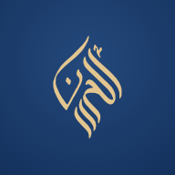

<!doctype html>
<html lang="ru">
<head>
<meta charset="utf-8">
<meta name="viewport" content="width=device-width, initial-scale=1, viewport-fit=cover">
<meta name="theme-color" content="#14315C">
<link rel="manifest" href="manifest.webmanifest">
<link rel="apple-touch-icon" href="icon-180.png">
<meta name="apple-mobile-web-app-capable" content="yes">
<meta name="mobile-web-app-capable" content="yes">
<meta name="apple-mobile-web-app-title" content="AL-HUSNA">
<meta name="apple-mobile-web-app-status-bar-style" content="default">
<script>window.ALH_CFG={url:"https://navxqjofqvstxfrsaeju.supabase.co",key:"sb_publishable_y4FvUXr3nhMR8dI0CKTrDg_J-SonwKG"};</script>
<title>AL-HUSNA</title>
<meta name="description" content="Учебная платформа школы AL-HUSNA">
<link rel="preconnect" href="https://fonts.googleapis.com">
<link rel="preconnect" href="https://fonts.gstatic.com" crossorigin>
<link rel="stylesheet" href="https://fonts.googleapis.com/css2?family=Comfortaa:wght@500;600;700&family=Nunito:wght@600;700;800;900&family=Neucha&family=Amatic+SC:wght@700&family=Golos+Text:wght@400;500;600;700&family=Amiri:wght@400;700&display=swap">
<style>
/* Layout concept: "rooms behind arches" — every screen is its own pastel room (sky, sand, garden, rose, night),
   entered through arch shapes; navy carries the school's voice, pastels carry the play. */
:root{
  color-scheme: light;
  --navy:#14315C; --navy-2:#24497C; --navy-soft:#4A6283;
  --milk:#FFF9F0; --paper:#FFFDF8; --white:#FFFFFF;
  --sand:#F1E3C8; --sand-deep:#D7BB8D;
  --sky:#CDE6F1; --sky-deep:#7DB5CF;
  --sage:#CFE2D0; --sage-deep:#79A585;
  --rose:#F8DAD5; --rose-deep:#DE958C;
  --sun:#F6C94B; --sun-soft:#FBE7A6;
  --gold:#B99A70;
  --line:#E8DDCB; --line-2:#D9CDB8;
  --good:#3F8F5E; --good-bg:#DDEFE2;
  --bad:#C95C51; --bad-bg:#F8DFDB;
  --warn:#B97A12; --warn-bg:#FBEBC6;
  --shadow: 0 1px 2px rgba(20,49,92,.06), 0 8px 24px -10px rgba(20,49,92,.18);
  --f-display:"Comfortaa", "Nunito", "Arial Rounded MT Bold", system-ui, sans-serif;
  --f-body:"Golos Text", "Segoe UI", system-ui, -apple-system, sans-serif;
  --f-ar:"Amiri", "Noto Naskh Arabic", "Traditional Arabic", serif;
  --r-sm:10px; --r:16px; --r-lg:26px;
}
*{box-sizing:border-box}
html,body{height:100%}
body{margin:0;background:var(--milk);color:var(--navy);font-family:var(--f-body);font-size:15px;line-height:1.5;-webkit-font-smoothing:antialiased;overflow-x:hidden}
body::before{content:"";position:fixed;inset:0;pointer-events:none;z-index:100;opacity:.35;mix-blend-mode:multiply;
  background-image:url("data:image/svg+xml;utf8,<svg xmlns='http://www.w3.org/2000/svg' width='160' height='160'><filter id='n'><feTurbulence type='fractalNoise' baseFrequency='.9' numOctaves='2' stitchTiles='stitch'/><feColorMatrix values='0 0 0 0 .55  0 0 0 0 .48  0 0 0 0 .38  0 0 0 .09 0'/></filter><rect width='100%' height='100%' filter='url(%23n)'/></svg>")}
button{font:inherit;color:inherit;cursor:pointer;border:0;background:none}
input,select,textarea{font:inherit;color:var(--navy)}
:focus-visible{outline:3px solid var(--sun);outline-offset:2px;border-radius:8px}
h1,h2,h3{font-family:var(--f-display);font-weight:700;text-wrap:balance;margin:0;letter-spacing:-.01em}
.ar{font-family:var(--f-ar);direction:rtl;unicode-bidi:isolate}
.logo{display:inline-block;color:var(--gold);line-height:0}
.logo svg{height:100%;width:auto;display:block}
.tnum{font-variant-numeric:tabular-nums}
.login,.kid,.level,.panel{min-height:100vh;min-height:100dvh}
.sr{position:absolute;width:1px;height:1px;overflow:hidden;clip:rect(0 0 0 0)}

/* ---------- buttons ---------- */
.btn{display:inline-flex;align-items:center;justify-content:center;gap:8px;height:44px;padding:0 20px;border-radius:999px;font-weight:600;font-size:15px;transition:transform .15s, box-shadow .15s, background .15s;white-space:nowrap}
.btn svg{width:18px;height:18px}
.btn-primary{background:var(--navy);color:var(--white);box-shadow:0 6px 16px -6px rgba(20,49,92,.55)}
.btn-primary:hover{background:var(--navy-2)}
.btn-primary:active{transform:translateY(1px)}
.btn-soft{background:var(--white);color:var(--navy);box-shadow:inset 0 0 0 1.5px var(--line-2)}
.btn-soft:hover{box-shadow:inset 0 0 0 1.5px var(--navy-soft)}
.btn-sun{background:var(--sun);color:var(--navy);box-shadow:0 6px 0 -1px #D9A926}
.btn-sun:active{transform:translateY(3px);box-shadow:0 3px 0 -1px #D9A926}
.btn-danger{background:var(--bad);color:var(--white)}
.btn-sm{height:34px;padding:0 14px;font-size:13.5px}
.btn-big{height:56px;padding:0 30px;font-size:17px;font-family:var(--f-display);font-weight:700}
.icon-btn{width:36px;height:36px;border-radius:10px;display:inline-grid;place-items:center;color:var(--navy-soft)}
.icon-btn:hover{background:var(--sand);color:var(--navy)}
.icon-btn svg{width:18px;height:18px}

/* ---------- fields ---------- */
.field{display:grid;gap:6px}
.field label{font-size:13px;font-weight:600;color:var(--navy-soft)}
.input{height:48px;border-radius:14px;border:1.5px solid var(--line-2);background:var(--white);padding:0 16px;width:100%;transition:border-color .15s, box-shadow .15s}
.input:focus{outline:none;border-color:var(--navy);box-shadow:0 0 0 4px rgba(125,181,207,.35)}
textarea.input{height:auto;min-height:120px;padding:12px 16px;resize:vertical}
select.input{appearance:none;background-image:url("data:image/svg+xml;utf8,<svg xmlns='http://www.w3.org/2000/svg' width='12' height='8'><path d='M1 1l5 5 5-5' stroke='%2314315C' stroke-width='2' fill='none'/></svg>");background-repeat:no-repeat;background-position:right 16px center;padding-right:40px}
.err{color:var(--bad);font-size:13.5px;font-weight:500}
.hint{color:var(--navy-soft);font-size:13px}

/* ---------- chips / pills ---------- */
.pill{display:inline-flex;align-items:center;gap:6px;height:26px;padding:0 10px;border-radius:999px;font-size:12.5px;font-weight:600;white-space:nowrap}
.pill::before{content:"";width:7px;height:7px;border-radius:50%;background:currentColor}
.pill.good{background:var(--good-bg);color:var(--good)}
.pill.bad{background:var(--bad-bg);color:var(--bad)}
.pill.warn{background:var(--warn-bg);color:var(--warn)}
.pill.mute{background:#EEE8DD;color:#6E7A8C}
.pill.info{background:var(--sky);color:#245A78}
.tag{display:inline-flex;align-items:center;height:26px;padding:0 10px;border-radius:8px;background:var(--sand);font-size:12.5px;font-weight:600;color:var(--navy)}

/* ================= LOGIN ================= */
.login{min-height:100%;display:grid;grid-template-columns:1.05fr 1fr;background:var(--milk)}
.login-art{position:relative;overflow:hidden;background:var(--navy);min-height:100%;display:flex;align-items:flex-end;padding:40px}
.arches{position:absolute;inset:auto 0 0 0;height:54%;display:flex;align-items:flex-end;justify-content:center;gap:14px;padding:0 28px}
.arch{flex:1;max-width:150px;border-radius:999px 999px 0 0;position:relative;transform-origin:bottom;animation:rise .9s cubic-bezier(.2,.8,.2,1) both}
.arch::after{content:"";position:absolute;inset:14px 14px 0;border-radius:999px 999px 0 0;box-shadow:inset 0 0 0 2px rgba(255,255,255,.55)}
.arch:nth-child(1){height:62%;background:var(--sky);animation-delay:.05s}
.arch:nth-child(2){height:82%;background:var(--sun);animation-delay:.15s}
.arch:nth-child(3){height:72%;background:var(--rose);animation-delay:.25s}
.arch:nth-child(4){height:90%;background:var(--sage);animation-delay:.35s}
@keyframes rise{from{transform:scaleY(0)}to{transform:scaleY(1)}}
.login-art .sun{position:absolute;top:44px;right:48px;width:96px;height:96px}
.login-brand{position:relative;z-index:2;color:var(--white);max-width:420px;align-self:flex-start;padding-top:8px}
.login-brand .logo{height:74px;color:var(--sun-soft)}
.login-brand h1{font-size:clamp(28px,3.4vw,42px);margin-top:22px;line-height:1.15}
.login-brand p{color:#C9D6E8;margin:12px 0 0;max-width:34ch}
.login-form{display:flex;align-items:center;justify-content:center;padding:40px 24px}
.login-card{width:100%;max-width:400px;display:grid;gap:22px}
.login-card h2{font-size:28px}
.login-card .lead{color:var(--navy-soft);margin:6px 0 0}
.code-boxes{display:flex;gap:8px}
.code-boxes input{width:100%;min-width:0;height:58px;text-align:center;font-size:24px;font-weight:700;border-radius:14px;border:1.5px solid var(--line-2);background:var(--white);font-family:var(--f-display)}
.code-boxes input:focus{outline:none;border-color:var(--navy);box-shadow:0 0 0 4px rgba(125,181,207,.35)}
.demo-box{border-top:1.5px dashed var(--line-2);padding-top:18px;display:grid;gap:10px}
.demo-box .hint b{color:var(--navy)}
.demo-row{display:flex;flex-wrap:wrap;gap:8px}
.alert{border-radius:14px;padding:12px 14px;font-size:14px;display:flex;gap:10px;align-items:flex-start}
.alert svg{flex:none;width:20px;height:20px;margin-top:1px}
.alert.bad{background:var(--bad-bg);color:#8F3A31}
.alert.info{background:var(--sky);color:#1F4F69}
.back-link{display:inline-flex;align-items:center;gap:6px;color:var(--navy-soft);font-weight:600;font-size:14px}
.back-link svg{width:16px;height:16px}

/* ================= VIEW-AS BAR ================= */
.viewas{position:sticky;top:env(safe-area-inset-top,0px);z-index:60;background:var(--sun);color:var(--navy);display:flex;align-items:center;justify-content:center;gap:12px;flex-wrap:wrap;padding:8px 16px;font-weight:600;font-size:14px;box-shadow:0 4px 14px -6px rgba(0,0,0,.25)}
.viewas svg{width:18px;height:18px}
.viewas .btn{height:32px;background:var(--navy);color:var(--white);font-size:13px}

/* ================= STUDENT ================= */
.kid{min-height:100%;display:flex;flex-direction:column}
.kid-top{display:flex;align-items:center;gap:14px;padding:14px clamp(16px,4vw,40px);position:relative;z-index:5}
.kid-top .logo{height:44px}
.kid-hello{display:grid;line-height:1.2}
.kid-hello b{font-family:var(--f-display);font-size:18px}
.kid-hello span{font-size:13px;color:var(--navy-soft)}
.kid-top .spacer{flex:1}
.star-count{display:inline-flex;align-items:center;gap:8px;background:var(--white);border-radius:999px;height:44px;padding:0 16px 0 10px;font-family:var(--f-display);font-weight:700;font-size:18px;box-shadow:var(--shadow)}
.star-count svg{width:26px;height:26px}
.star-count.bump{animation:bump .6s}
@keyframes bump{30%{transform:scale(1.18)}}

.q-tabs{display:flex;gap:8px;padding:4px clamp(16px,4vw,40px) 10px;overflow-x:auto;scrollbar-width:none;position:relative;z-index:5}
.q-tabs::-webkit-scrollbar{display:none}
.q-tab{color:var(--navy);flex:none;display:inline-flex;align-items:center;gap:8px;height:42px;padding:0 16px;border-radius:999px;background:rgba(255,255,255,.7);font-weight:600;font-size:14px;backdrop-filter:blur(6px);box-shadow:inset 0 0 0 1.5px rgba(20,49,92,.08)}
.q-tab svg{width:15px;height:15px;opacity:.6}
.q-tab[aria-selected="true"]{background:var(--navy);color:var(--white)}
.q-tab .dot{width:10px;height:10px;border-radius:50%}

.world{position:relative;flex:1;overflow:hidden;min-height:640px}
.world-bg{position:absolute;inset:0;z-index:0}
.world-inner{position:relative;z-index:2;max-width:560px;margin:0 auto;padding:6px 16px 40px}
.world-title{text-align:center;padding:10px 0 4px}
.world-title small{display:block;font-size:12.5px;font-weight:700;letter-spacing:.14em;text-transform:uppercase;color:var(--navy-soft)}
.world-title h2{font-size:clamp(28px,6vw,38px);margin-top:4px}
.world-title .ar{font-size:26px;color:var(--gold);display:block;margin-top:2px}

.path-wrap{position:relative;height:720px;margin-top:40px}
.path-wrap svg.road{position:absolute;inset:0;width:100%;height:100%;overflow:visible}
.node{position:absolute;transform:translate(-50%,-50%);display:grid;justify-items:center;gap:6px;width:150px;text-align:center}
.node-btn{width:84px;height:84px;border-radius:50%;display:grid;place-items:center;position:relative;font-family:var(--f-display);font-weight:700;font-size:28px;transition:transform .2s}
.node-btn svg{width:34px;height:34px}
.node.done .node-btn{background:var(--white);color:var(--navy);box-shadow:0 6px 0 var(--sand-deep), 0 14px 20px -10px rgba(20,49,92,.35)}
.node.current .node-btn{background:var(--sun);color:var(--navy);box-shadow:0 6px 0 #D7A322, 0 16px 26px -10px rgba(20,49,92,.4);animation:bob 2.4s ease-in-out infinite}
.node.current .node-btn::before{content:"";position:absolute;inset:-10px;border-radius:50%;border:3px solid var(--sun);animation:ring 2s ease-out infinite}
.node.locked .node-btn{background:rgba(255,255,255,.55);color:#8D98A8;box-shadow:inset 0 0 0 2px rgba(20,49,92,.1);cursor:not-allowed}
.node-btn:not([disabled]):hover{transform:translateY(-3px) scale(1.04)}
.node-label{color:var(--navy);font-weight:700;font-size:13.5px;line-height:1.25;background:rgba(255,253,248,.88);padding:4px 10px;border-radius:10px;backdrop-filter:blur(4px)}
.node.locked .node-label{color:#8D98A8}
.node-stars{display:flex;gap:2px;height:20px}
.node-stars svg{width:20px;height:20px}
.node-type{font-size:11px;font-weight:700;letter-spacing:.08em;text-transform:uppercase;color:var(--navy-soft)}
@keyframes bob{50%{transform:translateY(-7px)}}
@keyframes ring{0%{transform:scale(.9);opacity:.9}100%{transform:scale(1.35);opacity:0}}

.locked-world{display:grid;justify-items:center;text-align:center;gap:14px;padding:80px 16px 120px}
.lock-arch{width:150px;height:190px;border-radius:999px 999px 18px 18px;background:rgba(255,255,255,.65);display:grid;place-items:center;box-shadow:inset 0 0 0 3px rgba(255,255,255,.9), var(--shadow);animation:bob 4s ease-in-out infinite}
.lock-arch svg{width:54px;height:54px;color:var(--navy-soft)}
.locked-world p{max-width:30ch;margin:0;color:var(--navy-soft)}

/* world backgrounds */
.bg-q1{background:linear-gradient(180deg,#BFE1F0 0%,#DDEFF5 38%,#FFF6E4 100%)}
.bg-q2{background:linear-gradient(180deg,#FCEFD6 0%,#F5E2BC 55%,#E8C995 100%)}
.bg-q3{background:linear-gradient(180deg,#E3EFE2 0%,#D3E6D4 60%,#BCD7C1 100%)}
.bg-q4{background:linear-gradient(180deg,#FDEBE6 0%,#F9DAD4 50%,#F3C9C2 100%)}
.bg-q5{background:linear-gradient(180deg,#132B52 0%,#1F3E6E 55%,#2C548A 100%)}
.bg-q5 ~ .world-inner, .on-night{color:var(--white)}
.on-night .world-title small,.on-night .locked-world p{color:#C9D6E8}
.on-night .kid-hello span{color:#C9D6E8}
.on-night .lock-arch{background:rgba(255,255,255,.12);box-shadow:inset 0 0 0 3px rgba(255,255,255,.3)}
.on-night .lock-arch svg{color:#E9EEF6}

.deco{position:absolute;pointer-events:none}
.spin{animation:spin 40s linear infinite;transform-origin:center;transform-box:fill-box}
@keyframes spin{to{transform:rotate(360deg)}}
.drift{animation:drift 26s ease-in-out infinite alternate}
.drift.slow{animation-duration:38s}
@keyframes drift{from{transform:translateX(-30px)}to{transform:translateX(40px)}}
.float{animation:floaty 6s ease-in-out infinite}
@keyframes floaty{50%{transform:translateY(-12px)}}
.twinkle{animation:tw 3s ease-in-out infinite}
@keyframes tw{50%{opacity:.25}}
.wave-move{animation:wave 9s linear infinite}
@keyframes wave{to{transform:translateX(-200px)}}
.sway{animation:sway 5s ease-in-out infinite;transform-origin:bottom center;transform-box:fill-box}
@keyframes sway{50%{transform:rotate(3deg)}}

/* ================= LEVEL ================= */
.level{min-height:100%;position:relative;overflow:hidden;display:flex;flex-direction:column}
.level-bg{position:absolute;inset:0;z-index:0}
.level-top{position:relative;z-index:3;display:flex;align-items:center;gap:12px;padding:14px clamp(16px,4vw,40px)}
.level-top .title{display:grid;line-height:1.2;min-width:0}
.level-top .title small{font-size:12px;font-weight:700;letter-spacing:.12em;text-transform:uppercase;color:var(--navy-soft)}
.level-top .title b{font-family:var(--f-display);font-size:18px}
.round-btn{width:46px;height:46px;border-radius:50%;background:var(--white);display:grid;place-items:center;box-shadow:var(--shadow);flex:none}
.round-btn svg{width:20px;height:20px}
.progress-bar{flex:1;height:14px;border-radius:999px;background:rgba(255,255,255,.7);overflow:hidden;box-shadow:inset 0 0 0 1.5px rgba(20,49,92,.08);max-width:320px;margin-left:auto}
.progress-bar i{display:block;height:100%;background:linear-gradient(90deg,var(--sun),#F1B62E);border-radius:inherit;transition:width .5s cubic-bezier(.2,.8,.2,1)}
.level-body{position:relative;z-index:2;flex:1;width:100%;max-width:820px;margin:0 auto;padding:8px 16px 48px;display:flex;flex-direction:column}

.lesson{background:var(--paper);border-radius:var(--r-lg);padding:clamp(22px,4vw,36px);box-shadow:var(--shadow);display:grid;gap:18px;animation:popin .5s cubic-bezier(.2,.8,.2,1) both;max-width:640px;margin:10px auto 0;width:100%}
.lesson .kicker{font-size:12.5px;font-weight:700;letter-spacing:.14em;text-transform:uppercase;color:var(--gold)}
.lesson h2{font-size:clamp(24px,5vw,32px);margin-top:4px}
.lesson ul{margin:0;padding:0;list-style:none;display:grid;gap:12px}
.lesson li{display:grid;grid-template-columns:34px 1fr;gap:12px;align-items:start;font-size:16px}
.lesson li .ic{background:var(--sun-soft);width:34px;height:34px;border-radius:12px;display:grid;place-items:center;font-size:18px}
.ayah{border-radius:var(--r);padding:20px;text-align:center;background:var(--sand);position:relative}
.ayah .ar{font-size:clamp(24px,5vw,30px);line-height:1.9;display:block;color:var(--navy)}
.ayah p{margin:6px 0 0;font-size:14.5px;color:var(--navy-soft);font-style:italic}
.ayah small{display:block;margin-top:6px;font-size:12px;font-weight:700;letter-spacing:.08em;text-transform:uppercase;color:var(--gold)}
@keyframes popin{from{opacity:0;transform:translateY(14px) scale(.98)}to{opacity:1;transform:none}}

.game-head{text-align:center;margin:6px 0 18px}
.game-head h2{font-size:clamp(22px,4.5vw,30px)}
.game-head p{margin:6px auto 0;color:var(--navy-soft);max-width:44ch}
.feedback{min-height:28px;text-align:center;font-weight:700;font-family:var(--f-display);margin-top:14px}
.feedback.good{color:var(--good)} .feedback.bad{color:var(--bad)}

.shake{animation:shake .45s}
@keyframes shake{20%,60%{transform:translateX(-7px)}40%,80%{transform:translateX(7px)}}
.pop{animation:popok .45s}
@keyframes popok{40%{transform:scale(1.08)}}

/* pairs */
.pairs{display:grid;grid-template-columns:1fr 1fr;gap:clamp(10px,3vw,28px);max-width:680px;margin:0 auto;width:100%}
.pairs .col{display:grid;gap:12px;align-content:start}
.p-card{min-height:72px;padding:12px 16px;border-radius:18px;background:var(--white);font-weight:600;font-size:15.5px;text-align:left;display:flex;align-items:center;gap:12px;box-shadow:0 4px 0 var(--line-2);transition:transform .15s, background .2s, opacity .4s;line-height:1.3}
.p-card .badge{flex:none;width:30px;height:30px;border-radius:10px;display:grid;place-items:center;font-size:15px;background:var(--sky)}
.col.right .p-card{justify-content:flex-start;background:var(--paper)}
.col.right .p-card .badge{background:var(--sun-soft)}
.p-card:hover{transform:translateY(-2px)}
.p-card.sel{background:var(--navy);color:var(--white);box-shadow:0 4px 0 #0B1F3D}
.p-card.sel .badge{background:rgba(255,255,255,.18)}
.p-card.ok{background:var(--good-bg);color:var(--good);box-shadow:0 4px 0 #A9D3B6;cursor:default;transform:none}
.p-card.ok .badge{background:#BFE2C9}

/* sort */
.sort-stage{display:grid;justify-items:center;gap:22px}
.sort-item{width:200px;height:190px;border-radius:30px;background:var(--white);display:grid;place-items:center;align-content:center;gap:8px;box-shadow:0 10px 0 var(--line-2), 0 24px 30px -18px rgba(20,49,92,.35);animation:popin .35s both}
.sort-item .emo{font-size:84px;line-height:1}
/* силуэт: эмодзи заливается одним цветом, глаз и лица не видно */
.sil{color:transparent!important;text-shadow:0 0 0 var(--navy);-webkit-text-fill-color:transparent}
.sort-item b{font-family:var(--f-display);font-size:20px}
.sort-item.fly-0{animation:fly0 .45s forwards}.sort-item.fly-1{animation:fly1 .45s forwards}.sort-item.fly-2{animation:fly2 .45s forwards}
@keyframes fly0{to{transform:translate(-120px,180px) scale(.2);opacity:0}}
@keyframes fly1{to{transform:translate(0,190px) scale(.2);opacity:0}}
@keyframes fly2{to{transform:translate(120px,180px) scale(.2);opacity:0}}
.baskets{display:grid;grid-template-columns:repeat(3,1fr);gap:12px;width:100%;max-width:620px}
.basket{border-radius:28px 28px 20px 20px;padding:16px 10px 14px;display:grid;justify-items:center;gap:6px;text-align:center;box-shadow:0 6px 0 rgba(20,49,92,.12);transition:transform .15s}
.basket:hover{transform:translateY(-3px)}
.basket .b-ic{font-size:30px;line-height:1}
.basket b{font-family:var(--f-display);font-size:15px;line-height:1.2}
.basket .cnt{display:flex;flex-wrap:wrap;gap:2px;justify-content:center;min-height:22px;font-size:17px;line-height:1}
.basket{background:#FBF7EF;color:var(--navy)}
.sort-item b{padding:0 12px;text-align:center}
.basket.home{background:var(--sand)}.basket.wild{background:var(--sage)}.basket.sea{background:var(--sky)}

/* true/false */
.tf-stage{display:grid;justify-items:center;gap:22px}
.tf-card{width:100%;max-width:460px;min-height:250px;border-radius:30px;background:var(--white);padding:28px;display:grid;align-content:center;gap:14px;text-align:center;box-shadow:0 12px 0 #EBC3BC, 0 26px 30px -18px rgba(20,49,92,.35);animation:popin .4s both;position:relative}
.tf-card .num{font-size:12.5px;font-weight:700;letter-spacing:.12em;text-transform:uppercase;color:var(--rose-deep)}
.tf-card .stmt{font-family:var(--f-display);font-weight:700;font-size:clamp(19px,4vw,23px);line-height:1.35}
.tf-card .explain{font-size:15px;border-radius:14px;padding:12px 14px;text-align:left}
.tf-card .explain.good{background:var(--good-bg);color:#24603C}
.tf-card .explain.bad{background:var(--bad-bg);color:#8F3A31}
.tf-card.out-l{animation:outl .4s forwards}.tf-card.out-r{animation:outr .4s forwards}
@keyframes outl{to{transform:translateX(-120%) rotate(-12deg);opacity:0}}
@keyframes outr{to{transform:translateX(120%) rotate(12deg);opacity:0}}
.tf-btns{display:flex;gap:14px;flex-wrap:wrap;justify-content:center}
.tf-btn{height:64px;min-width:150px;padding:0 24px;border-radius:22px;font-family:var(--f-display);font-weight:700;font-size:18px;display:inline-flex;align-items:center;justify-content:center;gap:10px;transition:transform .15s}
.tf-btn svg{width:24px;height:24px}
.tf-btn.yes{background:var(--sage);color:#21553A;box-shadow:0 6px 0 var(--sage-deep)}
.tf-btn.no{background:var(--rose);color:#8F3A31;box-shadow:0 6px 0 var(--rose-deep)}
.tf-btn:active{transform:translateY(4px)}

/* order / tree */
.order{display:grid;grid-template-columns:minmax(0,1fr) minmax(0,1.1fr);gap:24px;align-items:center}

.rug-ic{width:1em;height:1.3em;vertical-align:middle;display:inline-block}
.sort-item .emo .rug-ic{width:.8em;height:1.05em}
.basket .cnt .rug-ic{width:.7em;height:.95em}
.sort-item.txt-only b{font-size:24px;line-height:1.25;padding:0 18px}
.basket .cnt .dot{width:12px;height:12px;border-radius:50%;background:var(--navy);opacity:.55;margin:3px}
.ayah-play{display:inline-flex;align-items:center;gap:6px;margin:12px auto 0;height:38px;padding:0 16px 0 12px;border-radius:999px;font-weight:700;font-size:14px;background:rgba(255,255,255,.14);color:inherit;box-shadow:inset 0 0 0 1.5px rgba(232,199,126,.7);cursor:pointer}
.ayah .ayah-play{display:flex;width:max-content}
.ayah-play svg{width:18px;height:18px}
.ayah-play.on{background:#E8C77E;color:#12305A}
.ayah-play.on svg path{d:path("M7 5h4v14H7zM13 5h4v14h-4z")}
.ayah-play:focus-visible{outline:3px solid #E8C77E;outline-offset:2px}
.ayah-play.sm{height:32px;width:32px;padding:0;justify-content:center;margin:6px auto 0}
.mzl .ayah .ayah-play{color:#F6E7C1}
.mzl .ayah .ayah-play.on{color:#12305A}
.build .ayah-play{color:var(--navy);box-shadow:inset 0 0 0 1.5px #D9B46A;background:#FFF8E8}

.k-trace{gap:10px}
.k-trace svg{width:100%;max-width:440px;height:auto;touch-action:none;cursor:crosshair;user-select:none}
.k-trace .tr-base{fill:none;stroke:#F1E6CF;stroke-width:26;stroke-linecap:round;stroke-linejoin:round}
.k-trace .tr-guide{fill:none;stroke:#C9A36E;stroke-width:3;stroke-dasharray:3 9;stroke-linecap:round}
.k-trace .tp{fill:#E3D2AE;transition:fill .2s,r .2s}
.k-trace .tp.on{fill:#2E8B8F;r:5.5}
.k-trace .tr-ink{fill:none;stroke:#1B8A92;stroke-width:9;stroke-linecap:round;stroke-linejoin:round;opacity:.85}
.k-trace .tr-done{fill:none;stroke:#E3BE6C;stroke-width:10;stroke-linecap:round;stroke-linejoin:round;opacity:0;transition:opacity .6s}
.k-trace svg.finished .tr-done{opacity:1}
.k-trace svg.finished .tr-ink{opacity:.25}
.tr-bar{width:min(320px,80%);height:10px;border-radius:99px;background:#F1E6CF;overflow:hidden}
.tr-bar i{display:block;height:100%;width:0;background:#2E8B8F;border-radius:99px;transition:width .2s}
.k-pic .rug-ic{height:1.15em;width:auto}

.k-subj{display:flex;gap:10px;padding:4px clamp(16px,4vw,40px) 8px;overflow-x:auto;scrollbar-width:none;position:relative;z-index:5}
.k-subj button{flex:none;display:flex;align-items:center;gap:8px;height:52px;padding:0 16px 0 8px;border-radius:18px;background:rgba(255,253,247,.9);box-shadow:inset 0 0 0 1.5px var(--line-2);font-weight:700;font-size:14px;color:var(--navy)}
.k-subj button .k-pic{font-size:32px}
.k-subj button[aria-pressed="true"]{background:var(--navy);color:#fff;box-shadow:none}
.mz-subj{display:flex;gap:8px;padding:2px clamp(16px,4vw,40px) 6px;overflow-x:auto;scrollbar-width:none;position:relative;z-index:5}
.mz-subj button{flex:none;height:40px;padding:0 16px;border-radius:999px;font-family:var(--f-m);font-weight:700;font-size:14px;background:rgba(255,253,247,.85);color:#12305A;box-shadow:inset 0 0 0 1.5px rgba(217,180,106,.7)}
.mz-subj button[aria-pressed="true"]{background:#12305A;color:#F6E7C1}
.k-prog,.mz-prog{max-width:560px;margin:16px auto 40px;background:var(--paper);border-radius:28px;padding:24px 26px;box-shadow:0 10px 0 var(--line-2),0 24px 34px -22px rgba(20,49,92,.35);color:var(--navy);display:grid;gap:10px}
.k-prog h2,.mz-prog h2{font-size:22px;line-height:1.2}
.k-prog p,.mz-prog p{color:var(--navy-soft);font-size:15px}
.k-prog ol,.mz-prog ol{display:grid;gap:8px;padding-left:22px;font-weight:600;font-size:16px}
.k-prog ol .ar,.mz-prog ol .ar{font-size:1.25em}
.k-prog small,.mz-prog small{color:var(--navy-soft);font-size:13px}

.acc-mode{margin-bottom:14px}
.acc-mode .seg-opts{margin:6px 0 8px}
.q-row.acc-row{grid-template-columns:56px minmax(0,1fr) auto auto auto}
.toolbar .seg{max-width:100%;overflow-x:auto;scrollbar-width:none}
.toolbar .seg button{white-space:nowrap;flex:none}
.acc-step{display:inline-flex;align-items:center;gap:8px;background:var(--sand);border-radius:12px;padding:4px 6px;font-size:13px;color:var(--navy-soft)}
.acc-step b{font-size:16px;color:var(--navy);min-width:16px;text-align:center}
.acc-step .icon-btn{width:30px;height:30px;font-size:18px;font-weight:800;background:var(--white)}
@media (max-width:760px){ .q-row.acc-row{grid-template-columns:48px minmax(0,1fr);row-gap:10px} .acc-row .acc-step,.acc-row .date,.acc-row .switch{grid-column:1/-1} }

/* ===== Таджвид садика: цветные буквы, домики, история, поезд, тянем звук ===== */
.k-let{--c1:#FFF1C9;--c2:#F2C24A;display:inline-grid;place-items:center;width:1.25em;height:1.25em;border-radius:.3em;font-family:Amiri,'Noto Naskh Arabic',serif;font-size:1em;line-height:1;padding-bottom:.12em;color:#14315C;
  background:radial-gradient(circle at 32% 24%,#FFFFFF 0%,var(--c1) 48%,var(--c2) 100%);
  box-shadow:inset 0 -.09em 0 rgba(0,0,0,.12),inset 0 .05em 0 rgba(255,255,255,.8),0 .12em .18em -.08em rgba(20,49,92,.4)}
.k-pic .halq{height:2.8em;width:auto}
.k-pic.big .halq{height:3.6em}
.halq .hfl.on rect{animation:floorglow 1.4s ease-in-out infinite}
@keyframes floorglow{50%{fill:#FFE38A}}
.halq .hres.pop{animation:respop .6s cubic-bezier(.2,1.6,.4,1) both;transform-box:fill-box;transform-origin:center}
@keyframes respop{from{transform:scale(0)}}
.k-bin .halq{height:2.4em}

/* история */
.k-story{padding:14px;gap:12px;overflow:hidden;position:relative}
.k-story.bg-sky{background:linear-gradient(180deg,#D6EEF8 0%,#EFF8FB 62%,#DCEFC9 62%,#C7E3AE 100%)}
.k-story.bg-meadow{background:linear-gradient(180deg,#E3F3DC 0%,#F6FBEF 62%,#CFE7B4 62%,#B9DA9A 100%)}
.k-story.bg-water{background:linear-gradient(180deg,#D3EEF2 0%,#EEF8F8 62%,#BFE3E3 62%,#A6D6D6 100%)}
.k-story.bg-gift{background:linear-gradient(180deg,#FCE8DE 0%,#FFF6EF 62%,#F6D9B8 62%,#EFC99F 100%)}
.k-story.bg-final{background:linear-gradient(180deg,#E8E1FA 0%,#F7F3FF 62%,#D9EFC9 62%,#C3E2AC 100%)}
.st-bubble{position:relative;width:100%;background:#FFFDF7;border-radius:22px;padding:14px 18px;box-shadow:0 8px 0 rgba(20,49,92,.08),inset 0 0 0 2px rgba(20,49,92,.06);min-height:76px;display:grid;align-items:center}
.st-bubble::after{content:"";position:absolute;bottom:-14px;right:22%;border:14px solid transparent;border-top-color:#FFFDF7;border-bottom:0}
.st-bubble.narr{background:#14315C;color:#fff}
.st-bubble.narr::after{border-top-color:#14315C;right:auto;left:50%;margin-left:-14px}
.st-bubble p{margin:0;font-size:clamp(16px,2.4vw,19px);font-weight:700;line-height:1.4;color:inherit;text-align:center}
.st-bubble:not(.narr) p{color:var(--navy)}
.st-bubble.pop{animation:bubpop .45s cubic-bezier(.2,1.5,.4,1) both}
@keyframes bubpop{from{transform:scale(.85);opacity:0}}
.st-scene{display:grid;grid-template-columns:minmax(0,1.1fr) minmax(0,1fr);align-items:end;gap:10px;min-height:250px}
.st-scene.solo{grid-template-columns:minmax(0,1fr);min-height:220px}
.st-house{display:grid;place-items:end center}
.st-house .halq{width:100%;max-width:250px;height:auto}
.st-stage{position:relative;display:grid;place-items:end center;min-height:200px}
.st-char{position:relative;display:grid;justify-items:center;animation:charin .7s cubic-bezier(.2,1.4,.4,1) both;cursor:pointer;padding-bottom:14px}
.st-char .st-body{display:grid;place-items:center;width:118px;height:118px;border-radius:34px;font-family:Amiri,'Noto Naskh Arabic',serif;font-size:76px;line-height:1;padding-bottom:12px;color:#14315C;
  background:radial-gradient(circle at 32% 24%,#FFFFFF 0%,var(--c1,#FFF1C9) 46%,var(--c2,#F2C24A) 100%);
  box-shadow:inset 0 -8px 0 rgba(0,0,0,.12),inset 0 4px 0 rgba(255,255,255,.8),0 14px 18px -10px rgba(20,49,92,.45)}
.st-char .st-foot{position:absolute;bottom:0;left:30px;width:26px;height:16px;border-radius:13px 13px 8px 8px;background:var(--c2,#F2C24A);box-shadow:inset 0 -4px 0 rgba(0,0,0,.15)}
.st-char .st-foot.r{left:auto;right:30px}
.st-char::after{content:"";position:absolute;bottom:-6px;left:14%;right:14%;height:10px;border-radius:50%;background:rgba(20,49,92,.14);z-index:-1}
.st-char.talk .st-body{animation:chartalk .5s ease-in-out infinite}
.st-char.gone{animation:charout .4s forwards}
@keyframes charin{from{transform:translateX(120px) scale(.6);opacity:0}60%{transform:translateX(-6px) scale(1.04)}}
@keyframes charout{to{transform:translateX(-60px) scale(.6);opacity:0}}
@keyframes chartalk{0%,100%{transform:none}30%{transform:translateY(-10px) scaleY(1.04)}60%{transform:translateY(0) scaleY(.94) scaleX(1.04)}}
.k-story .k-dots{justify-content:center}
@media (max-width:560px){
  .st-scene{min-height:200px;gap:6px}
  .st-char .st-body{width:92px;height:92px;font-size:60px;border-radius:28px}
  .st-char .st-foot{left:22px;width:22px;height:13px}.st-char .st-foot.r{right:22px;left:auto}
  .st-stage{min-height:160px}
}

/* поезд */
.k-train{padding:14px;gap:12px;overflow:hidden}
.k-train.bg-sky{background:linear-gradient(180deg,#DDF0F7,#FFF8EC)}
.tr-track{position:relative;width:100%;overflow:hidden;padding:10px 4px 6px}
.tr-row{display:flex;align-items:flex-end;justify-content:center;gap:8px;animation:trin 1s cubic-bezier(.2,1,.4,1) both}
.tr-row.go{animation:trgo 2s ease-in forwards}
.tr-row.go .tr-puffs circle{animation:puff .6s ease-out infinite}
@keyframes trin{from{transform:translateX(-110%)}}
@keyframes trgo{to{transform:translateX(130%)}}
@keyframes puff{from{transform:translate(0,0) scale(.6);opacity:1}to{transform:translate(-14px,-18px) scale(1.4);opacity:0}}
.tr-loco{width:clamp(84px,16vw,120px);height:auto;flex:none}
.tr-car{position:relative;width:clamp(70px,14vw,104px);aspect-ratio:1/1.05;border-radius:18px 18px 12px 12px;background:var(--cc);display:grid;place-items:center;align-content:center;gap:0;padding:6px 4px 18px;box-shadow:inset 0 -8px 0 rgba(0,0,0,.14),0 8px 14px -8px rgba(20,49,92,.4);flex:none;transition:transform .2s}
.tr-car .tr-let{display:grid;place-items:center;width:80%;aspect-ratio:1/1;border-radius:14px;background:#FFFDF7;font-family:Amiri,'Noto Naskh Arabic',serif;font-size:clamp(34px,6vw,50px);line-height:1;padding-bottom:6px;color:#14315C}
.tr-car small{position:absolute;bottom:20px;font-weight:800;font-size:13px;color:#14315C}
.tr-car.ok .tr-let{background:radial-gradient(circle at 32% 24%,#fff 0%,var(--c1,#FFF1C9) 55%,var(--c2,#F2C24A) 100%)}
.tr-car .tr-w{position:absolute;bottom:-10px;left:12%;width:22px;height:22px;border-radius:50%;background:#2A3E5C;box-shadow:inset 0 0 0 6px #2A3E5C,inset 0 0 0 11px #F6C94B}
.tr-car .tr-w.r{left:auto;right:12%}
.tr-rail{height:8px;margin-top:10px;border-radius:4px;background:repeating-linear-gradient(90deg,#9C6A3A 0 14px,#C9A36E 14px 22px)}
.tr-hint{margin:0;text-align:center;font-weight:700;color:var(--navy-soft);font-size:14px}
.tr-marks{display:grid;grid-template-columns:repeat(auto-fit,minmax(110px,1fr));gap:10px;width:100%}
.tr-mark{display:grid;justify-items:center;gap:2px;padding:10px 6px;border-radius:20px;background:#FFFDF7;box-shadow:0 6px 0 rgba(20,49,92,.12),inset 0 0 0 2px rgba(20,49,92,.08);transition:transform .15s}
.tr-mark .tr-dot{font-family:Amiri,'Noto Naskh Arabic',serif;font-size:46px;line-height:1.1;color:#14315C}
.tr-mark b{font-size:16px;color:var(--navy)}
.tr-word{margin:4px 0 0;text-align:center;font-family:Amiri,'Noto Naskh Arabic',serif;font-size:clamp(40px,8vw,60px);line-height:1.3;color:var(--navy);animation:popin .5s}
.tr-mark small{font-size:14px;color:var(--navy-soft);font-weight:700;text-align:center;line-height:1.2}
.lips-pic{display:inline-grid;place-items:center}.lips-pic .lips{width:76px;height:auto;filter:drop-shadow(0 5px 6px rgba(150,40,70,.22))}
.k-bin .lips-pic .lips,.k-tile .lips-pic .lips{width:84px}
.st-bubble{display:flex;align-items:center;justify-content:center;gap:12px}.st-bubble p{flex:1}
.st-lips{flex:none;display:grid;place-items:center;width:84px;height:64px;background:#FFF1F3;border-radius:18px}.st-lips .lips{width:74px;height:auto}
.st-bubble.narr .st-lips{background:rgba(255,255,255,.14)}
.tr-mark.sel{background:#FFF3C4;box-shadow:0 6px 0 #E0A53A,inset 0 0 0 3px #F2B53A;transform:translateY(-3px)}
@media (max-width:560px){ .tr-row{gap:5px} .tr-car{width:64px} .tr-loco{width:74px} .tr-car .tr-w{width:18px;height:18px;bottom:-8px} }

/* тянем звук */
.k-stretch{padding:16px;gap:12px}
.sx-top{display:flex;align-items:center;justify-content:center;gap:16px;width:100%}
.sx-top .k-let.sx-syl{font-size:clamp(84px,16vw,110px)}
.sx-band{position:relative;width:100%;max-width:520px;height:60px}
.sx-band svg{position:absolute;inset:0;width:100%;height:100%}
.sx-band .sx-peg{position:absolute;top:50%;width:22px;height:22px;margin:-11px 0 0 -11px;border-radius:50%;background:#FFFDF7;box-shadow:inset 0 0 0 4px #C9B79A}
.sx-band .p0{left:3.3%}.sx-band .p1{left:50%}.sx-band .p2{left:96.7%}
.sx-band .sx-peg.on{background:#F6C94B;box-shadow:inset 0 0 0 4px #E0A53A;animation:respop .4s both}
.sx-band.snap svg{animation:snap .35s ease-out}
@keyframes snap{30%{transform:scaleY(1.6)}60%{transform:scaleY(.7)}}
.sx-lbl{display:flex;justify-content:space-between;width:100%;max-width:520px;font-size:13px;font-weight:700;color:var(--navy-soft)}
.sx-hold{width:100%;max-width:520px;min-height:72px;border-radius:24px;font-size:20px;font-weight:800;color:#14315C;background:linear-gradient(180deg,#FFE8A3,#F6C94B);box-shadow:0 8px 0 #D89F2A;user-select:none;-webkit-user-select:none;-webkit-touch-callout:none;touch-action:none}
.sx-hold.down{transform:translateY(6px);box-shadow:0 2px 0 #D89F2A;background:linear-gradient(180deg,#FFD66B,#EDB33A)}
.sx-fb{margin:0;min-height:24px;font-weight:800;text-align:center;color:var(--navy-soft)}
.sx-fb.ok{color:#2E8B4F}.sx-fb.no{color:#C0453A}
@media (prefers-reduced-motion:reduce){ .st-char,.st-char.talk .st-body,.tr-row,.tr-row.go,.st-bubble.pop{animation:none} }
/* где живёт буква */
.k-hsort{padding:14px;gap:12px;background:linear-gradient(180deg,#E3F3FA,#FFF8EC)}
.hs-cur{display:grid;justify-items:center;gap:4px;min-height:150px}
.hs-cur b{font-size:20px;color:var(--navy)}
.hs-houses{display:grid;gap:12px;width:100%;justify-items:center;align-items:end}
.hs-houses.n1{grid-template-columns:minmax(0,320px);justify-content:center}
.hs-houses.n2{grid-template-columns:repeat(2,minmax(0,1fr))}
.hs-houses.n3{grid-template-columns:repeat(3,minmax(0,1fr))}
.hs-house{width:100%;cursor:pointer;border-radius:22px;transition:transform .15s}
.hs-house svg{width:100%;height:auto;display:block}
.hs-house .hfl{cursor:pointer}
.hs-house .hfl:hover rect{stroke:#F2B53A;stroke-width:4}
.hs-houses.whole .hs-house:hover{transform:translateY(-4px)}
.st-scene{position:relative}
.st-sun{position:absolute;top:0;right:4px;width:clamp(48px,9vw,70px);opacity:.95;pointer-events:none;animation:sunspin 14s linear infinite}
.st-sun img{width:100%;height:auto;display:block}
@keyframes sunspin{to{transform:rotate(360deg)}}
.st-scene.solo .st-stage{display:flex;justify-content:center;align-items:flex-end;gap:14px;flex-direction:row-reverse}
.st-scene.solo .st-bubble{}
.k-story .st-scene.solo ~ .k-dots{margin-top:0}
.st-char.past{animation:none;opacity:.9;cursor:default}
.st-char.past .st-body{width:76px;height:76px;font-size:48px;border-radius:22px;padding-bottom:8px}
.st-char.past .st-foot{left:16px;width:18px;height:11px}.st-char.past .st-foot.r{right:16px;left:auto}
.k-story:has(.st-scene.solo) .st-bubble::after{right:auto;left:50%;margin-left:-14px}
@media (max-width:560px){ .st-char.past .st-body{width:58px;height:58px;font-size:36px;border-radius:18px} .st-char.past .st-foot{left:12px;width:14px;height:9px}.st-char.past .st-foot.r{right:12px} .st-scene.solo .st-stage{gap:8px} }
.tr-car small{position:absolute;bottom:auto;top:-24px;left:0;right:0;text-align:center;font-weight:800;font-size:14px;color:#14315C}
.tr-marks{grid-template-columns:repeat(auto-fit,minmax(110px,170px));justify-content:center}
.tr-track{padding-top:30px}
/* поставь точки */
.k-dotsg{padding:16px;gap:14px;background:linear-gradient(180deg,#F3ECFF,#FFF8EC)}
.dg-char{position:relative;display:grid;justify-items:center;padding-bottom:14px;animation:charin .6s cubic-bezier(.2,1.4,.4,1) both}
.dg-char .st-body{display:grid;place-items:center;width:140px;height:140px;border-radius:40px;font-family:Amiri,'Noto Naskh Arabic',serif;font-size:96px;line-height:1;padding-bottom:16px;color:#14315C;background:radial-gradient(circle at 32% 24%,#fff 0%,var(--c1,#FFF1C9) 46%,var(--c2,#F2C24A) 100%);box-shadow:inset 0 -8px 0 rgba(0,0,0,.12),0 14px 18px -10px rgba(20,49,92,.45)}
.dg-char .st-foot{position:absolute;bottom:0;left:38px;width:28px;height:16px;border-radius:13px 13px 8px 8px;background:var(--c2,#F2C24A)}
.dg-char .st-foot.r{left:auto;right:38px}
.dg-char.done .st-body{animation:respop .6s cubic-bezier(.2,1.6,.4,1)}
.dg-opts{display:grid;grid-template-columns:repeat(3,minmax(0,1fr));gap:10px;width:100%;max-width:520px}
.dg-opt{display:grid;justify-items:center;gap:2px;padding:8px 4px;border-radius:18px;background:#FFFDF7;box-shadow:0 6px 0 rgba(20,49,92,.12),inset 0 0 0 2px rgba(20,49,92,.07)}
.dg-opt .dot-ic{width:64px;height:46px}
.dg-opt small{font-weight:800;color:var(--navy);font-size:13px}
.dg-opt.ok{background:#DDF4E2;box-shadow:0 6px 0 #4CBF6A}
@media (max-width:560px){ .dg-char .st-body{width:112px;height:112px;font-size:76px;border-radius:32px} .dg-char .st-foot{left:26px;width:22px;height:13px} .dg-char .st-foot.r{right:26px;left:auto} .dg-opt .dot-ic{width:52px;height:38px} .rec-chips{font-size:32px} }

/* лови букву */
.k-catch{padding:12px;gap:10px}
.ct-field{position:relative;width:100%;height:min(54vh,420px);border-radius:22px;overflow:hidden;touch-action:none;user-select:none;background:linear-gradient(180deg,#CFE8F3 0%,#EAF5F8 70%,#DCEFC9 70%,#C7E3AE 100%);cursor:pointer}
.ct-it{position:absolute;transform:translate(-50%,-50%);font-size:46px;pointer-events:none}
.ct-basket{position:absolute;bottom:2%;left:50%;width:110px;transform:translateX(-50%);pointer-events:none;transition:left .06s linear}
.ct-basket img{width:100%;height:auto;display:block;filter:drop-shadow(0 8px 8px rgba(20,49,92,.25))}
.ct-basket.pop{animation:basketpop .35s}
@keyframes basketpop{50%{transform:translateX(-50%) scale(1.15)}}
@media (max-width:560px){ .ct-it{font-size:38px} .ct-basket{width:90px} }

/* переправа */
.k-river{padding:12px}
.rv-field{position:relative;display:grid;grid-template-columns:clamp(46px,9vw,70px) repeat(var(--cols),minmax(0,1fr)) clamp(46px,9vw,70px);align-items:center;width:100%;min-height:290px;border-radius:22px;overflow:hidden;background:#DCEFC9}
.rv-water{position:absolute;top:0;bottom:0;left:clamp(46px,9vw,70px);right:clamp(46px,9vw,70px);background:repeating-linear-gradient(170deg,#7FC9DE 0 18px,#8ED3E6 18px 36px);animation:waterflow 4s linear infinite}
@keyframes waterflow{to{background-position:0 72px}}
.rv-bank{position:relative;z-index:1;grid-row:1;height:100%;background:linear-gradient(180deg,#B9DA9A,#9CC77A);display:grid;place-items:end center;padding-bottom:10px}
.rv-bank.l{grid-column:1}.rv-bank.r{grid-column:-2}
.rv-bank img{width:80%;height:auto}
.rv-col{position:relative;z-index:1;grid-row:1;display:grid;gap:14px;justify-items:center;padding:10px 2px;opacity:.55;transition:opacity .3s}
.rv-col.cur{opacity:1}
.rv-stone{width:clamp(58px,11vw,82px);aspect-ratio:1.25/1;border-radius:46% 54% 50% 50%/55% 50% 50% 45%;background:radial-gradient(circle at 35% 30%,#F4EFE6,#CFC4B2 70%,#A99C87);box-shadow:0 6px 0 rgba(0,0,0,.18);font-family:Amiri,'Noto Naskh Arabic',serif;font-size:clamp(28px,5vw,40px);color:#14315C;line-height:1;padding-bottom:6px}
.rv-stone.wide{width:clamp(84px,17vw,128px);font-size:clamp(20px,3.6vw,30px);aspect-ratio:1.6/1}
.st-char.wide .st-body{width:auto;min-width:118px;padding:0 22px 12px;font-size:58px}
.st-char.past.wide .st-body{width:auto;min-width:0;padding:0 12px 8px;font-size:34px}
@media (max-width:560px){ .st-char.wide .st-body{min-width:92px;font-size:42px;padding:0 14px 10px} .st-char.past.wide .st-body{font-size:24px;padding:0 8px 6px} .rv-stone.wide{width:clamp(76px,22vw,100px);font-size:20px} }
.rv-col.cur .rv-stone{box-shadow:0 6px 0 rgba(0,0,0,.18),0 0 0 4px rgba(246,201,75,.8)}
.rv-stone.ok{background:radial-gradient(circle at 35% 30%,#FFF6D6,#F6C94B 70%,#E0A53A)}
.rv-stone.sink{animation:sink .9s ease-in-out}
@keyframes sink{40%{transform:translateY(14px) scale(.85);opacity:.4}100%{transform:none;opacity:1}}
.rv-hero{position:absolute;z-index:3;left:0;top:0;transform:translate(-50%,-88%) scale(.5);transform-origin:50% 100%;transition:left .6s ease-in-out,top .6s ease-in-out;pointer-events:none;opacity:0}
.rv-hero.ready{opacity:1}
.rv-hero .st-char{animation:none}
.rv-hero.hop .st-char{animation:hop .6s ease-in-out}
@keyframes hop{50%{transform:translateY(-60px)}}
@media (max-width:560px){ .rv-hero{transform:translate(-50%,-88%) scale(.42)} .rv-col{gap:10px} }

/* кто лишний */
.k-odd{padding:16px;gap:12px;background:linear-gradient(180deg,#E3F3FA,#FFF8EC)}
.od-row{display:flex;flex-wrap:wrap;justify-content:center;gap:12px;padding-top:10px}
.od-it{background:none;padding:0;transition:transform .5s cubic-bezier(.3,1.4,.5,1),opacity .5s}
.od-it .st-char .st-body{width:96px;height:96px;font-size:62px;border-radius:28px}
.od-it .st-char .st-foot{left:24px;width:22px;height:13px}.od-it .st-char .st-foot.r{right:24px;left:auto}
.od-it.out{transform:translateY(-30px) rotate(-12deg) scale(.9);opacity:.35}
.od-it.yay .st-char{animation:hop .5s ease-in-out}
@media (max-width:560px){ .od-it .st-char .st-body{width:70px;height:70px;font-size:44px;border-radius:20px} .od-it .st-char .st-foot{left:16px;width:16px;height:10px}.od-it .st-char .st-foot.r{right:16px} .od-row{gap:6px} }

/* прочитай вслух */
.k-read{padding:18px;gap:14px;background:linear-gradient(180deg,#FFF3E0,#FFFDF7)}
.rd-row{display:flex;flex-wrap:wrap;justify-content:center;gap:10px;font-size:clamp(44px,8vw,60px)}
.rd-chip{transition:transform .25s}
.k-let.wide{width:auto;min-width:1.25em;padding:0 .28em .12em;font-size:.82em;height:1.5em}
.mc-front .k-let.wide{font-size:clamp(24px,7vw,34px);max-width:94%}.k-tile .k-let.wide,.k-item .k-let.wide{font-size:.7em}
.rd-chip.on{transform:translateY(-10px) scale(1.12)}
.rd-chip.on .k-let{box-shadow:0 0 0 4px #F6C94B,0 10px 14px -6px rgba(20,49,92,.4)}
.rd-mic{display:flex;align-items:center;gap:12px;padding:14px 26px;border-radius:999px;background:linear-gradient(180deg,#FF8A7A,#E0574A);color:#fff;font-weight:800;font-size:19px;box-shadow:0 8px 0 #B7433A}
.rd-mic svg{width:30px;height:30px}
.rd-mic.rec{animation:recpulse 1.2s ease-in-out infinite}
@keyframes recpulse{50%{box-shadow:0 8px 0 #B7433A,0 0 0 14px rgba(224,87,74,.25)}}
.rd-time{margin:0;min-height:22px;font-weight:800;color:#C0453A}
.rd-after{display:flex;flex-wrap:wrap;gap:10px;justify-content:center}
.rd-note{margin:0;text-align:center;color:var(--navy-soft);font-weight:700;font-size:14px}
@media (prefers-reduced-motion:reduce){ .rv-water,.rd-mic.rec{animation:none} }
/* записи чтения */
.rec-list{display:grid;gap:14px}
.rec-card{display:grid;gap:12px}
.rec-h{display:flex;align-items:center;gap:12px}
.rec-h>div{min-width:0;flex:1;display:grid}
.rec-h span{color:var(--navy-soft);font-size:13px}
.rec-b{display:flex;flex-wrap:wrap;align-items:center;gap:12px}
.rec-chips{display:flex;flex-wrap:wrap;gap:8px;font-size:40px}
.rec-chip{background:none;padding:2px;border-radius:14px}.rec-chip:has(.rec-ayah){flex-basis:100%}
.rec-chip.err .k-let{box-shadow:0 0 0 4px #E0574A;background:radial-gradient(circle at 32% 24%,#fff 0%,#FFD9D4 55%,#E9837A 100%)}
.rec-f{display:flex;flex-wrap:wrap;align-items:center;gap:10px}
.rec-f .hint{flex:1;min-width:180px;margin:0}
/* ===== Курсы ===== */
.crs{min-height:100dvh;background:linear-gradient(180deg,var(--cb,#FBEFD8) 0%,var(--paper) 340px)}
.crs-top{display:flex;align-items:center;gap:12px;padding:14px clamp(16px,4vw,40px)}
.crs-top .spacer{flex:1}
.crs-ttl{display:grid;min-width:0}
.crs-ttl small{font-size:12px;font-weight:800;letter-spacing:.06em;text-transform:uppercase;color:var(--navy-soft);white-space:nowrap;overflow:hidden;text-overflow:ellipsis}
.crs-ttl b{font-size:18px;color:var(--navy);white-space:nowrap;overflow:hidden;text-overflow:ellipsis}
.crs-main{max-width:820px;margin:0 auto;padding:6px 16px 60px;display:grid;gap:16px}
.crs-list{display:grid;gap:14px}
.crs-card{display:flex;align-items:center;gap:16px;padding:16px;border-radius:24px;background:#FFFDF7;text-align:left;box-shadow:0 8px 0 rgba(20,49,92,.08),inset 0 0 0 2px var(--cb)}
.crs-ic{flex:none;width:72px;height:72px;border-radius:22px;background:var(--cb,#FBEFD8);display:grid;place-items:center}
.crs-ic img{width:70%;height:auto}
.crs-ic.big{width:96px;height:96px;border-radius:28px}
.crs-t{display:grid;gap:4px;min-width:0;flex:1}
.crs-t b{font-size:18px;color:var(--navy)}
.crs-t small{color:var(--navy-soft);font-size:13px}
.crs-bar{display:block;height:8px;border-radius:9px;background:#EFE6D2;overflow:hidden;margin-top:4px}
.crs-bar i{display:block;height:100%;background:linear-gradient(90deg,#86BC97,#2E8B8F)}
.crs-hero{display:flex;align-items:center;gap:18px;padding:18px;border-radius:28px;background:#FFFDF7;box-shadow:0 8px 0 rgba(20,49,92,.06)}
.crs-hero h1{font-size:clamp(22px,4vw,30px);margin:0 0 4px}
.crs-hero p{margin:0 0 8px;color:var(--navy-soft)}
.crs-lessons{list-style:none;margin:0;padding:0;display:grid;gap:10px}
.crs-les{width:100%;display:flex;align-items:center;gap:14px;padding:14px 16px;border-radius:20px;background:#FFFDF7;text-align:left;box-shadow:0 6px 0 rgba(20,49,92,.07)}
.crs-les svg{width:20px;height:20px;flex:none;color:var(--navy-soft)}
.crs-les.locked{opacity:.55}
.crs-num{flex:none;width:40px;height:40px;border-radius:50%;display:grid;place-items:center;font-weight:800;background:var(--cb,#FBEFD8);color:var(--navy)}
.crs-num svg{width:20px;height:20px}
.crs-les.done .crs-num{background:#DDF4E2;color:#2E8B4F}
.crs-lt{display:grid;flex:1;min-width:0}
.crs-lt b{color:var(--navy)}
.crs-lt small{color:var(--navy-soft);font-size:13px}
.crs-tabs{display:flex;gap:6px;overflow-x:auto;scrollbar-width:none;padding:4px;border-radius:18px;background:rgba(255,255,255,.7)}
.crs-tabs button{flex:none;padding:10px 16px;border-radius:14px;font-weight:800;color:var(--navy-soft)}
.crs-tabs button[aria-selected="true"]{background:var(--navy);color:#fff}
.crs-video{position:relative;width:100%;aspect-ratio:16/9;border-radius:22px;overflow:hidden;background:#0E1E33}
.crs-video iframe,.crs-video video{position:absolute;inset:0;width:100%;height:100%;border:0}
.crs-notes{line-height:1.6;font-size:17px}
.crs-notes h3{margin:14px 0 6px}
.crs-notes p,.crs-notes ul{margin:0 0 12px}
.crs-slides{display:grid;gap:10px;justify-items:center}
.crs-slides img{width:100%;border-radius:18px;background:#fff;box-shadow:0 8px 20px -10px rgba(20,49,92,.35)}
.crs-snav{display:flex;align-items:center;gap:16px}
.round-btn.flip svg{transform:rotate(180deg)}
.crs-pdf{display:grid;gap:10px;justify-items:center}
.crs-pdf iframe{width:100%;height:70vh;border:0;border-radius:18px;background:#fff}
.crs-check{display:grid;justify-items:center;text-align:center;gap:8px;padding:24px}
.crs-check img{width:64px}
.crs-foot{display:flex;justify-content:center}
.crs-adm{display:grid;gap:12px}
.crs-adm-card{display:grid;gap:12px}
.crs-adm-h{display:flex;align-items:center;gap:14px}
.crs-adm-h .crs-ic{width:56px;height:56px;border-radius:16px}
.crs-adm-h>div{flex:1;display:grid;min-width:0}
.crs-adm-h span{color:var(--navy-soft);font-size:13px}
.crs-ed{display:grid;gap:12px}
.crs-ed h3{margin:0}
.crs-swatches,.crs-icons{display:flex;flex-wrap:wrap;gap:8px}
.crs-swatches .sw{width:40px;height:40px;border-radius:12px}
.crs-swatches .sw.on,.crs-icons .ic.on{outline:3px solid var(--navy);outline-offset:2px}
.crs-icons .ic{width:48px;height:48px;border-radius:12px;background:var(--sand);display:grid;place-items:center}
.crs-icons .ic img{width:76%}
.crs-grp{display:grid;grid-template-columns:repeat(auto-fit,minmax(240px,1fr));gap:12px}
.crs-grp>div{display:grid;gap:6px;align-content:start}
.crs-mem{display:grid;grid-template-columns:repeat(auto-fit,minmax(220px,1fr));gap:6px;max-height:280px;overflow:auto}
.chk{display:flex;align-items:center;gap:8px;font-size:14px;cursor:pointer}
.chk input{width:18px;height:18px;accent-color:var(--navy)}
.chk small{color:var(--navy-soft)}
.chk.big{font-weight:800;font-size:16px}
.crs-ed-list{list-style:none;margin:0;padding:0;display:grid;gap:8px}
.crs-ed-les{display:flex;align-items:center;gap:10px;padding:10px;border-radius:16px;background:var(--paper);box-shadow:inset 0 0 0 1.5px var(--line-2)}
.crs-ed-les>div{flex:1;display:grid;min-width:0}
.crs-ed-les small{color:var(--navy-soft);font-size:12px}
.modal.wide{max-width:720px}
.modal .m-h{display:flex;align-items:center;justify-content:space-between;gap:10px}
.modal h3{margin:6px 0 0;font-size:17px}
.crs-file{display:flex;flex-wrap:wrap;align-items:center;gap:10px}
.crs-file label.btn{cursor:pointer}
.crs-fname{display:inline-flex;align-items:center;gap:6px;font-weight:700;color:#2E8B4F;word-break:break-all}
.crs-fname svg{width:18px;height:18px;flex:none}
.crs-prog{font-size:13px;font-weight:700;color:var(--navy-soft)}
.crs-q{display:grid;gap:8px;padding:12px;border-radius:16px;background:var(--paper);box-shadow:inset 0 0 0 1.5px var(--line-2)}
.crs-qh{display:flex;align-items:center;justify-content:space-between}
.crs-opt{display:flex;align-items:center;gap:8px}
.crs-opt input[type=radio]{width:20px;height:20px;accent-color:#2E8B4F;flex:none}
.course-chip{display:inline-flex;align-items:center;gap:8px;padding:6px 14px 6px 6px;border-radius:999px;background:rgba(255,253,247,.95);font-weight:800;color:var(--navy);box-shadow:0 6px 14px -8px rgba(20,49,92,.4)}
.course-chip img{width:34px;height:34px}
@media (max-width:560px){ .crs-card{gap:12px;padding:12px} .crs-ic{width:58px;height:58px} .crs-hero{flex-direction:column;text-align:center} .course-chip span{display:none} .course-chip{padding:4px} }

@media (max-width:560px){ .hs-cur{min-height:130px} .hs-houses{gap:6px} }
.k-arch{padding:12px}
.k-arch svg{width:100%;max-width:420px;height:auto;touch-action:none;user-select:none;cursor:grab;background:linear-gradient(180deg,#DDF0F7,#FFF6E4);border-radius:22px}
.k-arch .tg{transition:opacity .3s}
.k-arch .tg.hit circle:first-child{stroke:#2E8B4F}
.k-arch .tg.hit circle:nth-child(2){fill:#8DD3A0}
.k-arch .tg.miss circle:first-child{stroke:#E06B5E}
.k-arch-hint{margin:0;font-weight:700;color:var(--navy-soft);font-size:14px}
.grow-btn{width:52px;height:52px;border-radius:16px;background:rgba(255,253,247,.92);box-shadow:inset 0 0 0 1.5px var(--line-2);display:grid;place-items:center;padding:4px}
.grow-btn .grow{width:40px;height:46px}
.grow-modal .grow-now{display:grid;justify-items:center;gap:6px;margin:6px 0 10px}
.grow-modal .grow-now .grow{width:150px;height:175px}
.grow-modal .grow-now b{font-size:18px;color:var(--navy)}
.grow-steps{display:grid;grid-template-columns:repeat(7,minmax(0,1fr));gap:6px}
.grow-steps>div{display:grid;justify-items:center;gap:4px;opacity:.38;text-align:center}
.grow-steps>div.on{opacity:1}
.grow-steps .grow{width:100%;height:auto;max-width:56px}
.grow-steps small{font-size:10.5px;line-height:1.15;color:var(--navy-soft)}
@media (max-width:560px){ .grow-steps{grid-template-columns:repeat(4,minmax(0,1fr))} }

.cls-block{display:grid;gap:12px;margin-bottom:22px}
.cls-head{display:flex;align-items:center;gap:12px}
.cls-head .arch-ic{width:40px;height:46px;border-radius:999px 999px 8px 8px;display:grid;place-items:center;font-weight:800;font-size:18px}
.cls-head h3{font-size:18px}
.class-card.grp .top{align-items:flex-start}
.class-card.grp h3{font-size:17px;margin-bottom:6px}
.pill.rose{background:#FCE6E0;color:#9A4B3E}

.grow-fab{position:fixed;right:max(16px,env(safe-area-inset-right,0px));bottom:calc(16px + env(safe-area-inset-bottom,0px));z-index:30;display:flex;align-items:center;gap:8px;padding:6px 14px 6px 6px;border-radius:22px;background:rgba(255,253,247,.96);box-shadow:0 10px 24px -10px rgba(20,49,92,.45),inset 0 0 0 1.5px var(--line-2);color:var(--navy);text-align:left}
.grow-fab .grow{width:46px;height:54px;flex:none}
.grow-fab .gf-t{display:grid;gap:2px;min-width:92px}
.grow-fab b{font-size:13px;line-height:1.1}
.grow-fab small{font-size:12px;color:var(--navy-soft);line-height:1.1}
.grow-fab .gf-bar{display:block;height:6px;border-radius:9px;background:#EFE6D2;overflow:hidden;margin-top:3px}
.grow-fab .gf-bar i{display:block;height:100%;background:linear-gradient(90deg,#86BC97,#2E8B8F);border-radius:9px}
.grow-fab:hover{transform:translateY(-2px)}
@media (max-width:560px){ .grow-fab{padding:5px;border-radius:18px} .grow-fab .gf-t{display:none} .grow-fab .grow{width:42px;height:48px} }
.mz .grow-fab{font-family:var(--f-m);box-shadow:0 10px 24px -10px rgba(8,35,55,.5),inset 0 0 0 1.5px rgba(217,180,106,.7)}
.grow-res{display:grid;justify-items:center;gap:6px;margin:4px 0 6px;padding:12px 18px;border-radius:22px;background:rgba(255,253,247,.85);box-shadow:inset 0 0 0 1.5px var(--line-2);max-width:420px}
.grow-res .gr-pics{display:flex;align-items:center;gap:10px}
.grow-res .grow{width:78px;height:92px}
.grow-res .gr-old .grow{width:58px;height:68px;opacity:.5}
.grow-res .gr-arrow{font-size:22px;color:var(--navy-soft);font-weight:800}
.grow-res.up .gr-new{animation:growpop 1.1s .5s both}
.grow-res p{margin:0;font-weight:700;color:var(--navy);text-align:center}
@keyframes growpop{0%{transform:scale(.4);opacity:0}60%{transform:scale(1.15);opacity:1}100%{transform:none}}
@media (prefers-reduced-motion:reduce){ .grow-res.up .gr-new{animation:none} }

.k-balloons{padding:10px;gap:10px}
.bl-sky{position:relative;width:100%;height:min(56vh,430px);border-radius:22px;overflow:hidden;background:linear-gradient(180deg,#CFE8F3 0%,#EAF5F8 60%,#FFF7EA 100%)}
.bl{position:absolute;bottom:-150px;width:84px;height:126px;padding:0;background:none;animation:blup linear forwards;cursor:pointer}
.bl svg{position:absolute;inset:0;width:100%;height:100%}
.bl span{position:absolute;left:0;right:0;top:20px;text-align:center;font-family:var(--f-ar);font-size:40px;line-height:1;color:#14315C}
.bl.pop{animation:blpop .38s forwards!important}
@keyframes blup{from{transform:translateY(0)}to{transform:translateY(calc(-1 * min(56vh,430px) - 170px))}}
@keyframes blpop{to{transform:scale(1.6);opacity:0}}
.bl-count{display:flex;gap:8px;justify-content:center}
.bl-count i{width:18px;height:18px;border-radius:50%;background:#EFE6D2;box-shadow:inset 0 0 0 2px #E2D3AC}
.bl-count i.on{background:#F2C24A;box-shadow:none}
.k-mem{display:grid;grid-template-columns:repeat(3,minmax(0,1fr));gap:12px;max-width:460px;margin:0 auto;width:100%}
.k-mem.n8{grid-template-columns:repeat(4,minmax(0,1fr))}
.mc{aspect-ratio:1/1;padding:0;background:none;perspective:600px}
.mc-in{position:relative;display:block;width:100%;height:100%;transition:transform .45s;transform-style:preserve-3d}
.mc.on .mc-in{transform:rotateY(180deg)}
.mc-back,.mc-front{position:absolute;inset:0;border-radius:20px;display:grid;place-items:center;backface-visibility:hidden;box-shadow:0 8px 0 var(--line-2)}
.mc-back{background:linear-gradient(160deg,#2E9C98,#1B7A80)}
.mc-back img{width:52%;height:auto}
.mc-front{background:var(--paper);transform:rotateY(180deg)}
.mc-front .k-let{font-size:48px}
.mc.ok .mc-front{box-shadow:0 0 0 3px #4CBF6A,0 8px 0 var(--line-2)}
.k-listen .k-pic .k-let{animation:letin .7s cubic-bezier(.2,1.4,.4,1) both, letfloat 3s 1s ease-in-out infinite}
.k-listen .k-pic .k-let+.k-let{animation-delay:.25s,1.25s}
@keyframes letin{from{transform:scale(.3) rotate(-12deg);opacity:0}to{transform:none;opacity:1}}
@keyframes letfloat{50%{transform:translateY(-8px)}}
.k-listen .halq rect[fill="#FFE7A6"]{animation:floorglow 1.4s ease-in-out infinite}
@keyframes floorglow{50%{fill:#FFD66B}}
@media (prefers-reduced-motion:reduce){ .k-listen .k-pic .k-let,.k-listen .halq rect{animation:none} }
.order.plain{grid-template-columns:minmax(0,1fr);max-width:640px;margin:0 auto}
.tree-box{background:rgba(255,255,255,.55);border-radius:30px;padding:10px;aspect-ratio:1/1.05;max-width:100%;display:grid;place-items:center;box-shadow:inset 0 0 0 2px rgba(255,255,255,.8)}
.tree-box svg{width:100%;height:100%}
.tree-box .stage{opacity:0;transform:scale(.6);transform-origin:50% 88%;transform-box:view-box;transition:opacity .5s, transform .6s cubic-bezier(.2,1.4,.4,1)}
.tree-box .stage.on{opacity:1;transform:none}
.steps{display:grid;gap:10px}
.step{min-height:56px;padding:10px 16px;border-radius:16px;background:var(--white);display:flex;align-items:center;gap:12px;text-align:left;font-weight:600;box-shadow:0 4px 0 #E3CF8F;transition:transform .15s}
.step:hover{transform:translateX(4px)}
.step .e{font-size:24px;flex:none;width:30px;text-align:center}
.step.done{background:var(--good-bg);color:var(--good);box-shadow:none;cursor:default;transform:none}
.step .n{margin-left:auto;font-family:var(--f-display);font-weight:700;width:30px;height:30px;border-radius:50%;display:grid;place-items:center;background:var(--good);color:var(--white);font-size:14px}

/* quiz */
.quiz-card{max-width:600px;width:100%;margin:0 auto;display:grid;gap:16px;animation:popin .4s both}
.quiz-q{background:rgba(255,255,255,.1);border-radius:26px;padding:26px;text-align:center;color:var(--white);box-shadow:inset 0 0 0 1.5px rgba(255,255,255,.18)}
.quiz-q small{font-size:12.5px;font-weight:700;letter-spacing:.12em;text-transform:uppercase;color:var(--sun)}
.quiz-q h2{font-size:clamp(20px,4.5vw,26px);margin-top:8px;line-height:1.35}
.opts{display:grid;gap:12px}
.opt{min-height:60px;padding:12px 18px;border-radius:18px;background:var(--paper);display:flex;align-items:center;gap:14px;text-align:left;font-weight:600;font-size:16px;box-shadow:0 5px 0 rgba(0,0,0,.25);transition:transform .15s}
.opt:hover:not([disabled]){transform:translateY(-2px)}
.opt .l{flex:none;width:34px;height:34px;border-radius:11px;background:var(--sky);display:grid;place-items:center;font-family:var(--f-display);font-weight:700}
.opt .ar{font-size:24px;line-height:1.6;flex:1;text-align:center}
.opt.ok{background:var(--good-bg);color:#24603C}.opt.ok .l{background:var(--good);color:#fff}
.opt.no{background:var(--bad-bg);color:#8F3A31}.opt.no .l{background:var(--bad);color:#fff}
.opt[disabled]{cursor:default}
.night .level-top .title b,.night .level-top .title small{color:var(--white)}
.night .level-top .title small{color:#C9D6E8}
.night .game-head h2{color:var(--white)}.night .game-head p{color:#C9D6E8}
.night .feedback.good{color:#8FE0A9}.night .feedback.bad{color:#FFB2A8}

/* result */
.result{margin:auto;max-width:460px;width:100%;background:var(--paper);border-radius:34px;padding:34px 26px 28px;text-align:center;display:grid;gap:14px;justify-items:center;box-shadow:var(--shadow);animation:popin .5s both;position:relative}
.result .big-stars{display:flex;gap:6px;align-items:flex-end;height:90px}
.result .big-stars svg{width:64px;height:64px;opacity:.2;transform:scale(.6);transition:all .45s cubic-bezier(.2,1.6,.4,1)}
.result .big-stars svg:nth-child(2){width:82px;height:82px}
.result .big-stars svg.on{opacity:1;transform:none}
.result h2{font-size:30px}
.result p{margin:0;color:var(--navy-soft)}
.result .row{display:flex;gap:10px;flex-wrap:wrap;justify-content:center;margin-top:6px}
.preview-note{font-size:13px;color:var(--warn);background:var(--warn-bg);border-radius:10px;padding:6px 12px;font-weight:600}
canvas.confetti{position:fixed;inset:0;width:100%;height:100%;pointer-events:none;z-index:90}

/* ================= ADMIN / TEACHER ================= */
.panel{min-height:100%;display:grid;grid-template-columns:250px minmax(0,1fr);background:var(--milk)}
.side{background:var(--navy);color:#DCE5F2;padding:22px 14px;display:flex;flex-direction:column;gap:22px;position:sticky;top:0;height:100vh;height:100dvh}
.side-brand{display:flex;align-items:center;gap:12px;padding:0 8px}
.side-brand .logo{height:46px;color:var(--sun-soft)}
.side-brand b{font-family:var(--f-display);color:var(--white);font-size:16px;display:block}
.side-brand span{font-size:12px;color:#9FB2CC}
.nav{display:grid;gap:4px}
.nav button{display:flex;align-items:center;gap:12px;height:44px;padding:0 12px;border-radius:12px;font-weight:500;font-size:14.5px;color:#C6D3E6;text-align:left}
.nav button svg{width:19px;height:19px;flex:none}
.nav button:hover{background:rgba(255,255,255,.07);color:var(--white)}
.nav button[aria-current="page"]{background:var(--white);color:var(--navy);font-weight:600}
.nav .cnt{margin-left:auto;font-size:12px;opacity:.7}
.side-foot{margin-top:auto;display:grid;gap:10px;padding:0 4px}
.me{display:flex;align-items:center;gap:10px;background:rgba(255,255,255,.07);border-radius:14px;padding:10px}
.avatar{flex:none;width:38px;height:38px;border-radius:12px 12px 4px 4px;display:grid;place-items:center;font-family:var(--f-display);font-weight:700;font-size:15px;color:var(--navy)}
.me b{display:block;font-size:13.5px;color:var(--white);line-height:1.2}
.me span{font-size:12px;color:#9FB2CC}
.side .btn-soft{background:transparent;color:#DCE5F2;box-shadow:inset 0 0 0 1.5px rgba(255,255,255,.2)}

.main{padding:26px clamp(16px,3vw,40px) 60px;min-width:0}
.main-head{display:flex;align-items:flex-end;gap:16px;flex-wrap:wrap;margin-bottom:22px}
.main-head .t{min-width:0}
.main-head small{font-size:12.5px;font-weight:700;letter-spacing:.12em;text-transform:uppercase;color:var(--gold)}
.main-head h1{font-size:clamp(24px,3vw,32px);margin-top:4px}
.main-head p{margin:6px 0 0;color:var(--navy-soft);max-width:60ch}
.main-head .actions{margin-left:auto;display:flex;gap:10px;flex-wrap:wrap}

.mob-top{display:none}

.stats{display:grid;grid-template-columns:repeat(4,minmax(0,1fr));gap:14px;margin-bottom:22px}
.stat{border-radius:20px;padding:18px;display:grid;gap:2px;position:relative;overflow:hidden}
.stat b{font-family:var(--f-display);font-size:32px;line-height:1.1}
.stat span{font-size:13.5px;font-weight:500;color:var(--navy-soft)}
.stat::after{content:"";position:absolute;right:-18px;bottom:-30px;width:80px;height:100px;border-radius:999px 999px 0 0;background:rgba(255,255,255,.45)}
.stat:nth-child(1){background:var(--sky)}.stat:nth-child(2){background:var(--sage)}.stat:nth-child(3){background:var(--sand)}.stat:nth-child(4){background:var(--rose)}

.grid-2{display:grid;grid-template-columns:minmax(0,1.4fr) minmax(0,1fr);gap:18px}
.box{background:var(--paper);border-radius:22px;padding:20px;box-shadow:0 0 0 1.5px var(--line)}
.box-h{display:flex;align-items:center;gap:10px;margin-bottom:14px}
.box-h h3{font-size:17px}
.box-h .more{margin-left:auto}

.toolbar{display:flex;gap:10px;flex-wrap:wrap;align-items:center;margin-bottom:14px}
.seg{display:inline-flex;background:var(--white);border-radius:12px;padding:4px;box-shadow:inset 0 0 0 1.5px var(--line)}
.seg button{height:34px;padding:0 14px;border-radius:9px;font-size:13.5px;font-weight:600;color:var(--navy-soft)}
.seg button[aria-pressed="true"]{background:var(--navy);color:var(--white)}
.search{position:relative;flex:1;min-width:180px;max-width:320px}
.search svg{position:absolute;left:14px;top:50%;transform:translateY(-50%);width:18px;height:18px;color:var(--navy-soft)}
.search .input{height:42px;padding-left:42px}
.toolbar select.input{height:42px;width:auto;min-width:170px}

.table-wrap{overflow-x:auto;background:var(--paper);border-radius:20px;box-shadow:0 0 0 1.5px var(--line)}
table{width:100%;border-collapse:collapse;min-width:720px}
th{font-size:12px;font-weight:700;letter-spacing:.08em;text-transform:uppercase;color:var(--navy-soft);text-align:left;padding:14px 16px;border-bottom:1.5px solid var(--line);white-space:nowrap}
td{padding:12px 16px;border-bottom:1px solid var(--line);vertical-align:middle;font-size:14.5px}
tr:last-child td{border-bottom:0}
tbody tr:hover td{background:#FFF8EC}
.who{display:flex;align-items:center;gap:12px;min-width:0}
.who b{display:block;font-weight:600;line-height:1.25}
.who span{font-size:13px;color:var(--navy-soft)}
.bar{width:120px;height:8px;border-radius:999px;background:#EFE6D6;overflow:hidden}
.bar i{display:block;height:100%;background:var(--sage-deep);border-radius:inherit}
.prog-cell{display:flex;align-items:center;gap:10px}
.prog-cell .tnum{font-size:13px;color:var(--navy-soft);min-width:34px}
.row-actions{display:flex;gap:2px;justify-content:flex-end}
.lvl-dots{display:flex;gap:6px}
.lvl-dot{width:30px;height:30px;border-radius:10px;display:grid;place-items:center;font-size:12px;font-weight:700}
.lvl-dot.s3{background:var(--sun);color:var(--navy)}.lvl-dot.s2{background:var(--sun-soft)}.lvl-dot.s1{background:#F7F0DC}
.lvl-dot.s0{background:#F0EBE2;color:#A8B0BC}
.empty{padding:40px 20px;text-align:center;color:var(--navy-soft)}

.class-grid{display:grid;grid-template-columns:repeat(3,minmax(0,1fr));gap:16px}
.class-card{border-radius:24px;padding:20px;display:grid;gap:14px;background:var(--paper);box-shadow:0 0 0 1.5px var(--line);position:relative;overflow:hidden}
.class-card .top{display:flex;align-items:center;gap:12px}
.class-card .arch-ic{width:44px;height:52px;border-radius:999px 999px 8px 8px;display:grid;place-items:center;font-family:var(--f-display);font-weight:700;font-size:20px}
.class-card h3{font-size:18px}
.class-card .meta{display:flex;gap:16px;font-size:13.5px;color:var(--navy-soft)}
.class-card .meta b{color:var(--navy);font-size:16px;display:block}
.dep-title{display:flex;align-items:center;gap:10px;margin:24px 0 12px;font-family:var(--f-display);font-size:18px;font-weight:700}
.dep-title:first-of-type{margin-top:0}

.q-list{display:grid;gap:12px}
.q-row{display:grid;grid-template-columns:56px minmax(0,1fr) auto auto;gap:16px;align-items:center;background:var(--paper);border-radius:20px;padding:14px 18px;box-shadow:0 0 0 1.5px var(--line)}
.q-num{width:56px;height:56px;border-radius:999px 999px 12px 12px;display:grid;place-items:center;font-family:var(--f-display);font-weight:700;font-size:22px}
.q-row h3{font-size:16.5px}
.q-row p{margin:2px 0 0;font-size:13.5px;color:var(--navy-soft)}
.q-row .date{height:40px;width:170px}
.switch{display:inline-flex;align-items:center;gap:10px;font-size:13.5px;font-weight:600;white-space:nowrap}
.switch input{appearance:none;width:46px;height:26px;border-radius:999px;background:#DDD4C5;position:relative;cursor:pointer;transition:background .2s;margin:0}
.switch input::after{content:"";position:absolute;top:3px;left:3px;width:20px;height:20px;border-radius:50%;background:#fff;box-shadow:0 1px 3px rgba(0,0,0,.2);transition:transform .2s}
.switch input:checked{background:var(--good)}
.switch input:checked::after{transform:translateX(20px)}

.list{display:grid}
.list-row{display:flex;align-items:center;gap:12px;padding:10px 0;border-bottom:1px solid var(--line)}
.list-row:last-child{border-bottom:0}
.list-row .grow{flex:1;min-width:0}
.list-row .grow b{display:block;font-weight:600;font-size:14.5px}
.list-row .grow span{font-size:13px;color:var(--navy-soft)}

.sec-list{display:grid;gap:10px;margin:0;padding:0;list-style:none}
.sec-list li{display:flex;gap:10px;font-size:14px;align-items:flex-start}
.sec-list svg{flex:none;width:18px;height:18px;color:var(--good);margin-top:2px}

/* modal */
.modal-back{position:fixed;inset:0;background:rgba(15,32,58,.45);backdrop-filter:blur(3px);z-index:80;display:grid;place-items:center;padding:16px;animation:fade .2s}
@keyframes fade{from{opacity:0}}
.modal{width:100%;max-width:480px;max-height:calc(100dvh - 32px);overflow:auto;background:var(--paper);border-radius:26px;padding:26px;display:grid;gap:18px;animation:popin .3s both;box-shadow:0 30px 60px -20px rgba(0,0,0,.4)}
.modal h2{font-size:22px}
.modal .sub{margin:4px 0 0;color:var(--navy-soft);font-size:14px}
.modal-foot{display:flex;gap:10px;justify-content:flex-end;flex-wrap:wrap}
.check-grid{display:grid;grid-template-columns:1fr 1fr;gap:8px}
.check{display:flex;align-items:center;gap:10px;padding:10px 12px;border-radius:12px;box-shadow:inset 0 0 0 1.5px var(--line);font-size:14px;cursor:pointer}
.check input{width:18px;height:18px;accent-color:var(--navy)}
.va-list{display:grid;gap:8px;max-height:320px;overflow:auto}
.va-item{display:flex;align-items:center;gap:12px;padding:10px 12px;border-radius:14px;text-align:left;box-shadow:inset 0 0 0 1.5px var(--line)}
.va-item:hover{box-shadow:inset 0 0 0 1.5px var(--navy);background:var(--white)}
.va-item b{display:block;font-size:14.5px}
.va-item span{font-size:12.5px;color:var(--navy-soft)}
.va-item svg{margin-left:auto;width:18px;height:18px;color:var(--navy-soft)}

.toast{position:fixed;left:50%;bottom:calc(24px + env(safe-area-inset-bottom,0px));transform:translateX(-50%);background:var(--navy);color:var(--white);padding:12px 20px;border-radius:14px;font-weight:600;font-size:14px;z-index:95;box-shadow:0 12px 30px -10px rgba(0,0,0,.4);animation:toast .3s both;display:flex;gap:10px;align-items:center;max-width:calc(100vw - 32px)}
.toast svg{width:18px;height:18px;color:var(--sun)}
@keyframes toast{from{opacity:0;transform:translate(-50%,10px)}}

/* ---------- responsive ---------- */
@media (max-width:1000px){
  .stats{grid-template-columns:repeat(2,minmax(0,1fr))}
  .grid-2{grid-template-columns:minmax(0,1fr)}
  .class-grid{grid-template-columns:repeat(2,minmax(0,1fr))}
}
@media (max-width:820px){
  .login{grid-template-columns:1fr}
  .login-art{min-height:300px;padding:28px 20px}
  .arches{height:42%}
  .login-art{min-height:380px}
  .login-brand p{display:none}
  .login-art .sun{top:24px;right:24px;width:70px;height:70px}
  .login-brand h1{font-size:26px;margin-top:14px}
  .login-brand .logo{height:56px}
  .panel{grid-template-columns:1fr}
  .side{display:none}
  .mob-top{display:flex;position:sticky;top:env(safe-area-inset-top,0px);z-index:40;background:var(--navy);color:var(--white);flex-direction:column;gap:10px;padding:12px 16px 10px}
  .mob-top .r{display:flex;align-items:center;gap:10px}
  .mob-top .logo{height:34px;color:var(--sun-soft)}
  .mob-top b{font-family:var(--f-display);font-size:15px}
  .mob-top .icon-btn{color:#DCE5F2;margin-left:auto}
  .mob-top .icon-btn:hover{background:rgba(255,255,255,.1);color:#fff}
  .mob-nav{display:flex;gap:6px;overflow-x:auto;scrollbar-width:none;margin:0 -16px;padding:0 16px}
  .mob-nav::-webkit-scrollbar{display:none}
  .mob-nav button{flex:none;height:36px;padding:0 14px;border-radius:999px;font-size:13.5px;font-weight:600;color:#C6D3E6;background:rgba(255,255,255,.07)}
  .mob-nav button[aria-current="page"]{background:var(--white);color:var(--navy)}
  .order{grid-template-columns:1fr}
  .tree-box{max-width:280px;margin:0 auto;width:100%}
  .q-row{grid-template-columns:48px minmax(0,1fr);row-gap:12px}
  .q-row .q-num{width:48px;height:48px;font-size:19px}
  .q-row > .switch, .q-row > .date{grid-column:2}
}
@media (max-width:560px){
  .class-grid{grid-template-columns:minmax(0,1fr)}
  .pairs{grid-template-columns:1fr 1fr;gap:8px}
  .p-card{font-size:13.5px;padding:10px;min-height:64px;gap:8px}
  .p-card .badge{display:none}
  .baskets{gap:8px}
  .basket{padding:12px 6px}
  .basket b{font-size:13px}
  .kid-hello span{display:none}
  .kid-hello b{font-size:15px}
  .kid-top{gap:10px}
  .kid-top .logo{height:36px}
  .stats{gap:10px}
  .stat b{font-size:26px}
  .check-grid{grid-template-columns:1fr}
  .main-head .actions{margin-left:0}
}

/* =====================================================================
   МАДРАСА — объёмный «реализм с артом»: бирюза, золото, синий школы
   ===================================================================== */
:root{
  --m-ink:#14304F; --m-teal:#1B8A92; --m-teal-d:#0F6A72; --m-teal-l:#D8EFEF; --m-aqua:#7CC9CC;
  --m-gold:#D9B46A; --m-gold-d:#9E7A35; --m-gold-l:#F5EACB; --m-paper:#FFFDF7;
  --f-m:"Nunito", "Comfortaa", "Segoe UI", system-ui, sans-serif;
  --m-pattern:url("data:image/svg+xml;utf8,<svg xmlns='http://www.w3.org/2000/svg' width='260' height='170' viewBox='0 0 260 170'><g fill='none' stroke='%231B8A92' stroke-opacity='.09' stroke-width='2' stroke-linecap='round'><path d='M20 62 h58 a12 12 0 0 0 -4-24 a17 17 0 0 0 -30-6 a11 11 0 0 0 -20 9 a10 10 0 0 0 -4 21z'/><path d='M45 46 a5 5 0 1 1 7 5'/><path d='M150 140 h66 a13 13 0 0 0 -5-26 a19 19 0 0 0 -34-6 a12 12 0 0 0 -22 10 a11 11 0 0 0 -5 22z'/><path d='M180 121 a6 6 0 1 1 8 6'/><path d='M214 40 l3 7 7 3 -7 3 -3 7 -3-7 -7-3 7-3z'/><path d='M96 128 l2 5 5 2 -5 2 -2 5 -2-5 -5-2 5-2z'/></g></svg>");
  --m-card-shadow:0 0 0 1.5px rgba(217,180,106,.55), 0 26px 50px -26px rgba(8,35,55,.55);
}
.mz,.mzl{font-family:var(--f-m);color:var(--m-ink)}
.mz h1,.mz h2,.mz h3,.mzl h1,.mzl h2,.mzl h3{font-family:var(--f-m);font-weight:900;letter-spacing:-.005em}

/* ---------- lanterns & decor ---------- */
.lan-pos{position:absolute;top:var(--chain);transform:translateX(-50%) scale(var(--s,1));transform-origin:50% 0;z-index:1;pointer-events:none}
.lan-pos::before{content:"";position:absolute;left:50%;bottom:calc(100% - 2px);width:2px;height:calc(var(--chain) + 4px);transform:translateX(-50%);background:linear-gradient(#F6DE98,#9E7A35)}
.lan{width:clamp(46px,5.6vw,62px);transform-origin:50% 0;animation:swing 5s ease-in-out infinite}
.lan svg{display:block;width:100%;height:auto;filter:drop-shadow(0 12px 14px rgba(10,40,60,.28))}
@keyframes swing{0%,100%{transform:rotate(-4deg)}50%{transform:rotate(4deg)}}
.mz-cloud svg{display:block;width:100%;height:auto;filter:drop-shadow(0 10px 12px rgba(20,80,100,.12))}
.deco > svg{display:block;width:100%;height:auto}
.rain{animation:rain 4s linear infinite}
@keyframes rain{from{transform:translateY(0)}to{transform:translateY(110vh)}}

/* ---------- map ---------- */
.mz{position:relative;overflow:hidden;min-height:100vh;min-height:100dvh;display:flex;flex-direction:column}
.mz-bg{position:absolute;inset:0;z-index:0}
.mz-q1 .mz-bg{background:var(--m-pattern),linear-gradient(180deg,#D3ECEE 0%,#EAF6F5 38%,#FBF7EC 100%)}
.mz-q2 .mz-bg{background:var(--m-pattern),linear-gradient(180deg,#FBF1DC 0%,#F4E3C2 60%,#EAD3A6 100%)}
.mz-q3 .mz-bg{background:var(--m-pattern),linear-gradient(180deg,#E8F3EC 0%,#D6EADF 60%,#C3DFCF 100%)}
.mz-q4 .mz-bg{background:var(--m-pattern),linear-gradient(180deg,#DDF1F2 0%,#BFE3E6 60%,#9BD2D7 100%)}
.mz-q5 .mz-bg{background:radial-gradient(120% 80% at 70% 0%,#24507F 0%,#12305A 55%,#0B2142 100%)}
.mz-q5{color:#fff}

.mz-top{position:relative;z-index:5;display:flex;align-items:center;gap:12px;padding:14px clamp(16px,4vw,40px)}
.mz-top .logo{height:46px;color:var(--m-gold-d)}
.mz-q5 .mz-top .logo{color:#F2DDA4}
.mz-top .spacer{flex:1}
.mz-hello{display:grid;line-height:1.2}
.mz-hello b{font-size:18px;font-weight:900}
.mz-hello span{font-size:13px;font-weight:600;opacity:.7}
.mz-stars{display:inline-flex;align-items:center;gap:8px;height:44px;padding:0 16px 0 10px;border-radius:999px;background:var(--m-paper);color:var(--m-ink);font-weight:900;font-size:18px;box-shadow:0 0 0 1.5px var(--m-gold),0 8px 18px -10px rgba(8,35,55,.5)}
.mz-stars svg{width:26px;height:26px}
.mz .round-btn,.mzl .round-btn{color:var(--m-ink);box-shadow:0 0 0 1.5px var(--m-gold),0 8px 18px -10px rgba(8,35,55,.5)}

.mz-tabs{position:relative;z-index:5;display:flex;gap:8px;padding:2px clamp(16px,4vw,40px) 8px;overflow-x:auto;scrollbar-width:none}
.mz-tabs::-webkit-scrollbar{display:none}
.mz-tab{flex:none;display:inline-flex;align-items:center;gap:7px;height:40px;padding:0 16px;border-radius:999px;font-weight:800;font-size:14px;color:var(--m-ink);background:rgba(255,253,247,.82);box-shadow:inset 0 0 0 1.5px rgba(217,180,106,.6);backdrop-filter:blur(6px)}
.mz-tab svg{width:14px;height:14px;opacity:.6}
.mz-tab[aria-selected="true"]{color:#fff;background:linear-gradient(180deg,#2AA3A9,#137980);box-shadow:inset 0 0 0 2px #E8C77E,0 6px 14px -6px rgba(10,80,90,.6)}

.mz-inner{position:relative;z-index:2;flex:1;width:100%;max-width:560px;margin:0 auto;padding:0 16px}
.mz-hero{text-align:center;padding:26px 0 0;display:grid;justify-items:center}
.mz-hero small{font-size:12px;font-weight:900;letter-spacing:.16em;text-transform:uppercase;color:var(--m-teal-d)}
.mz-title{font-size:clamp(50px,12vw,78px);line-height:1.05;margin-top:8px;color:#27A9AF;
  text-shadow:0 1px 0 #1E979D,0 2px 0 #1A8A90,0 3px 0 #167E84,0 4px 0 #137278,0 5px 0 #10676D,0 6px 0 #0E5D63,0 14px 20px rgba(10,60,70,.35);
  -webkit-text-stroke:1.5px rgba(255,255,255,.55)}
.mz-ar{display:block;font-size:30px;color:var(--m-gold-d);margin-top:6px;line-height:1.6}
.mz-count{display:inline-flex;align-items:center;margin-top:8px;height:34px;padding:0 16px;border-radius:999px;background:var(--m-paper);font-weight:700;font-size:14px;box-shadow:0 0 0 1px rgba(217,180,106,.6)}
.mz-count b{color:var(--m-teal-d);font-weight:900}

.mz-path{position:relative;height:700px;margin-top:34px}
.mz-path svg.road{position:absolute;inset:0;width:100%;height:100%;overflow:visible}
.mz-node{position:absolute;transform:translate(-50%,-50%);display:grid;justify-items:center;gap:6px;width:170px;text-align:center}
.mz-node-tag{font-size:11px;font-weight:900;letter-spacing:.14em;text-transform:uppercase;color:var(--m-teal-d)}
.mz-node-btn{width:88px;height:88px;border-radius:50%;display:grid;place-items:center;position:relative;font-weight:900;font-size:32px;color:#fff;
  background:radial-gradient(circle at 34% 28%,#6CCFD1 0%,#1F9299 50%,#0D5A61 100%);
  text-shadow:0 2px 0 rgba(0,0,0,.22);
  box-shadow:inset 0 -6px 10px rgba(0,0,0,.25),inset 0 5px 8px rgba(255,255,255,.35),0 0 0 5px #E8C77E,0 0 0 7px #A57B2E,0 16px 24px -10px rgba(10,45,65,.6);
  transition:transform .2s}
.mz-node-btn svg{width:34px;height:34px}
.mz-node-btn:not([disabled]):hover{transform:translateY(-3px) scale(1.04)}
.mz-node.current .mz-node-btn{color:var(--m-ink);text-shadow:0 1px 0 rgba(255,255,255,.5);
  background:radial-gradient(circle at 34% 28%,#FFF3C9 0%,#E6C171 50%,#A9802F 100%);
  box-shadow:inset 0 -6px 10px rgba(0,0,0,.2),inset 0 5px 8px rgba(255,255,255,.5),0 0 0 5px #fff,0 0 0 7px #D9B46A,0 18px 28px -10px rgba(10,45,65,.6);
  animation:bob 2.6s ease-in-out infinite}
.mz-node.current .mz-node-btn::before{content:"";position:absolute;inset:-14px;border-radius:50%;border:3px solid #E8C77E;animation:ring 2.2s ease-out infinite}
.mz-node.locked .mz-node-btn{color:#97A3B2;text-shadow:none;cursor:not-allowed;
  background:radial-gradient(circle at 34% 28%,#FFFFFF 0%,#F1ECE1 60%,#DCD4C4 100%);
  box-shadow:inset 0 -5px 8px rgba(0,0,0,.08),0 0 0 4px rgba(217,180,106,.5),0 10px 18px -10px rgba(10,45,65,.4)}
.mz-node-label{font-weight:800;font-size:14px;line-height:1.25;color:var(--m-ink);background:var(--m-paper);padding:5px 12px;border-radius:12px;box-shadow:0 0 0 1px rgba(217,180,106,.6),0 6px 14px -8px rgba(8,35,55,.35)}
.mz-node.locked .mz-node-label{color:#8D98A8}
.mz-ground{position:relative;z-index:1;display:flex;justify-content:center;margin-top:-10px}
.mz-ground svg{width:min(520px,100%);height:auto;display:block;filter:drop-shadow(0 18px 24px rgba(10,50,70,.18))}

.mz-locked{display:grid;justify-items:center;text-align:center;gap:14px;padding:90px 16px 160px}
.mz-lock{width:130px;height:130px;border-radius:50%;display:grid;place-items:center;color:var(--m-gold-d);
  background:radial-gradient(circle at 34% 28%,#FFFFFF 0%,#F4EEE2 60%,#E0D6C2 100%);
  box-shadow:inset 0 -6px 10px rgba(0,0,0,.1),0 0 0 6px #E8C77E,0 0 0 8px #A57B2E,0 20px 30px -14px rgba(10,45,65,.55);animation:bob 4s ease-in-out infinite}
.mz-lock svg{width:48px;height:48px}
.mz-locked h2{font-size:32px}
.mz-locked p{max-width:32ch;margin:0;font-weight:600;opacity:.75}
.mz-q5 .mz-hero small,.mz-q5 .mz-node-tag{color:#E8C77E}

/* ---------- level ---------- */
.lvl{min-height:100vh;min-height:100dvh;position:relative;overflow:hidden;display:flex;flex-direction:column}
.lvl-bg{position:absolute;inset:0;z-index:0}
.level .lvl-bg{background:linear-gradient(170deg,#D7ECF5 0%,#FFF7EA 100%)}
.mzl{--hd:var(--m-ink);--hd2:#4A6283}
.mzl-night,.mzl-final{--hd:#FFFFFF;--hd2:#C9D9EA}
.mzl-night .lvl-bg{background:radial-gradient(120% 80% at 70% 0%,#24507F 0%,#12305A 55%,#0B2142 100%)}
.mzl-sky .lvl-bg{background:var(--m-pattern),linear-gradient(180deg,#CFEAEC 0%,#EAF6F5 50%,#FBF8EF 100%)}
.mzl-sand .lvl-bg{background:var(--m-pattern),linear-gradient(180deg,#FBF2DE 0%,#F4E4C4 60%,#EBD3A6 100%)}
.mzl-garden .lvl-bg{background:var(--m-pattern),linear-gradient(180deg,#E8F3EC 0%,#D6EADF 60%,#C3DFCF 100%)}
.mzl-final .lvl-bg{background:radial-gradient(120% 80% at 50% 0%,#1F4C7C 0%,#12305A 55%,#0A1D3B 100%)}
.mzl .level-top .title b{color:var(--hd);font-family:var(--f-m);font-weight:900}
.mzl .level-top .title small{color:var(--hd2)}
.mzl-night .level-top .title small,.mzl-final .level-top .title small{color:#E8C77E}
.mzl .progress-bar{background:rgba(255,255,255,.55);box-shadow:inset 0 0 0 1.5px rgba(217,180,106,.5)}
.mzl .progress-bar i{background:linear-gradient(90deg,#F2D489,#D4AE5E)}
.mzl .level-body{padding-top:12px}

.steps-nav{position:relative;z-index:3;display:flex;gap:8px;overflow-x:auto;scrollbar-width:none;width:100%;max-width:820px;margin:0 auto;padding:2px 16px 8px}
.steps-nav::-webkit-scrollbar{display:none}
.st{flex:none;display:inline-flex;align-items:center;gap:8px;height:36px;padding:0 14px 0 6px;border-radius:999px;background:rgba(255,253,247,.82);color:var(--m-ink);font-weight:800;font-size:13px;box-shadow:inset 0 0 0 1.5px rgba(217,180,106,.45)}
.st i{font-style:normal;width:24px;height:24px;border-radius:50%;display:grid;place-items:center;font-size:12px;background:#EFE8D8;color:#8B97A6}
.st.done i{background:var(--m-teal);color:#fff}
.kdl.st b{display:inline}
button.st{cursor:pointer}
button.st:hover{box-shadow:inset 0 0 0 2px var(--navy-soft)}
.st.cur{background:var(--navy);color:#fff;box-shadow:inset 0 0 0 2px #E8C77E}
.st.cur i{background:linear-gradient(180deg,#F6DE98,#D4AE5E);color:var(--navy)}

.mzl .game-head h2{color:var(--hd);font-family:var(--f-m);font-weight:900}
.mzl .game-head p{color:var(--hd2);font-weight:600}
.mzl-night .feedback.good,.mzl-final .feedback.good{color:#9CE6B6}
.mzl-night .feedback.bad,.mzl-final .feedback.bad{color:#FFB9AE}
.mzl-night .step-foot .hint,.mzl-final .step-foot .hint{color:#C9D9EA}
.mzl .feedback{font-family:var(--f-m);font-weight:900}

.mzl .lesson{background:var(--m-paper);border-radius:30px;box-shadow:var(--m-card-shadow);font-family:var(--f-m);color:var(--m-ink)}
.mzl .lesson .kicker{color:var(--m-teal);font-weight:900}
.mzl .lesson h2{font-weight:900}
.mzl .lesson li{grid-template-columns:42px 1fr;font-size:16px;font-weight:600;line-height:1.5}
.mzl .lesson li .ic{width:42px;height:42px;border-radius:50%;font-size:20px;background:radial-gradient(circle at 35% 30%,#FFFFFF,#DDF0EF);box-shadow:0 0 0 2px #E2C27A,0 6px 10px -5px rgba(0,0,0,.3)}
.mzl .ayah{background:linear-gradient(160deg,#173A66,#12305A 60%,#0F2A4F);box-shadow:inset 0 0 0 1.5px rgba(232,199,126,.6),inset 0 0 0 6px rgba(232,199,126,.08)}
.mzl .ayah .ar{color:#FBEFD0}
.mzl .ayah p{color:#CFE0EC;font-weight:600}
.mzl .ayah small{color:#E8C77E}
.mzl .btn{font-family:var(--f-m);font-weight:800}
.mzl .btn-sun{background:linear-gradient(180deg,#F6DE98,#D4AE5E);color:var(--navy);box-shadow:0 6px 0 #A57B2E,0 14px 20px -12px rgba(0,0,0,.45)}
.mzl .btn-sun:active{transform:translateY(3px);box-shadow:0 3px 0 #A57B2E}
.mzl .btn-primary{box-shadow:inset 0 0 0 1.5px rgba(232,199,126,.7),0 8px 18px -8px rgba(10,30,60,.6)}
.mzl .btn-soft{background:var(--m-paper);box-shadow:inset 0 0 0 1.5px var(--m-gold)}
.mzl .btn:disabled{opacity:.45;cursor:not-allowed}

.card-in{background:var(--m-paper);color:var(--m-ink);border-radius:30px;padding:clamp(20px,4vw,32px);box-shadow:var(--m-card-shadow);max-width:680px;width:100%;margin:0 auto;animation:popin .45s both}
.step-foot{display:flex;align-items:center;justify-content:center;gap:16px;flex-wrap:wrap;margin-top:22px}
.cnt-lbl{display:block;text-align:center;font-size:12px;font-weight:900;letter-spacing:.14em;text-transform:uppercase;color:var(--m-teal)}

/* flip cards */
.flips{display:grid;grid-template-columns:repeat(auto-fit,minmax(200px,1fr));gap:16px;max-width:780px;width:100%;margin:0 auto}
.flip{height:240px;padding:0;perspective:1100px;text-align:center}
.flip-in{position:relative;display:block;width:100%;height:100%;transition:transform .65s cubic-bezier(.3,1.3,.5,1);transform-style:preserve-3d}
.flip.on .flip-in{transform:rotateY(180deg)}
.face{position:absolute;inset:0;border-radius:26px;display:flex;flex-direction:column;align-items:center;justify-content:center;gap:8px;padding:18px;-webkit-backface-visibility:hidden;backface-visibility:hidden}
.face.front{color:#fff;background:radial-gradient(circle at 30% 18%,#4CBCC0 0%,#1B8A92 55%,#0D5A61 100%);box-shadow:inset 0 0 0 2px rgba(255,255,255,.16),0 0 0 2px #D9B46A,0 18px 28px -16px rgba(8,40,50,.65)}
.face.back{color:var(--m-ink);background:var(--m-paper);transform:rotateY(180deg);box-shadow:0 0 0 2px #D9B46A,0 18px 28px -16px rgba(8,40,50,.5)}
.face small{font-size:11.5px;font-weight:900;letter-spacing:.14em;text-transform:uppercase;opacity:.75}
.face .ar.big{font-size:30px;line-height:1.7}
.face b{font-size:17px;line-height:1.3;font-weight:800}
.face em{font-style:normal;font-size:12.5px;font-weight:700;opacity:.75;margin-top:4px}
.face.back b{color:var(--m-teal-d)}

/* build */
.build-ru{font-size:17px;font-weight:800;text-align:center;margin:0;line-height:1.45}
.build-ref{display:block;text-align:center;color:var(--m-gold-d);font-weight:900;font-size:12px;letter-spacing:.12em;text-transform:uppercase;margin-top:6px}
.slots{display:flex;flex-wrap:wrap;gap:10px;justify-content:center;margin:22px 0;padding:16px;border-radius:22px;background:#F4EEDF;box-shadow:inset 0 2px 6px rgba(120,90,30,.12)}
.slot{min-width:70px;height:60px;border-radius:14px;border:2px dashed #CDB98D;display:grid;place-items:center;padding:0 12px;background:rgba(255,255,255,.4)}
.slot.ok{border:2px solid #D9B46A;background:#fff;box-shadow:0 4px 0 #E6D3A5}
.slot .ar,.tile .ar{font-size:26px;line-height:1.5}
.tiles{display:flex;flex-wrap:wrap;gap:10px;justify-content:center}
.tile{height:60px;padding:0 18px;border-radius:14px;color:var(--m-ink);background:linear-gradient(180deg,#FFFFFF,#F4EFE3);box-shadow:0 0 0 1.5px #D9B46A,0 5px 0 #C8AE73;transition:transform .15s,opacity .3s}
.tile:hover:not([disabled]){transform:translateY(-2px)}
.tile.used{opacity:.22;box-shadow:none;cursor:default}

/* think */
.think-h{display:flex;gap:14px;align-items:flex-start;margin-bottom:20px}
.think-ic{flex:none;width:54px;height:54px;border-radius:50%;display:grid;place-items:center;color:var(--navy);background:radial-gradient(circle at 34% 28%,#FFF3C9,#E3BE6C 55%,#A57B2E);box-shadow:inset 0 -4px 8px rgba(0,0,0,.15),0 8px 14px -8px rgba(0,0,0,.5)}
.think-ic svg{width:26px;height:26px}
.think-h small{font-size:12px;font-weight:900;letter-spacing:.14em;text-transform:uppercase;color:var(--m-teal)}
.think-h h2{font-size:clamp(18px,3.6vw,23px);line-height:1.35;margin-top:4px}
.mzl .opt,.card-in .opt{background:#fff;color:var(--m-ink);font-family:var(--f-m);font-weight:700;box-shadow:0 0 0 1.5px #E2D3AC,0 5px 0 #D9C79C}
.card-in .opt .l{background:var(--m-teal-l);color:var(--m-teal-d);font-family:var(--f-m);font-weight:900}
.card-in .opt.ok{background:var(--good-bg);color:#24603C;box-shadow:0 0 0 2px #8FCBA5}
.card-in .opt.ok .l{background:var(--good);color:#fff}
.card-in .opt.no{background:var(--bad-bg);color:#8F3A31;box-shadow:0 0 0 2px #E5A39B}
.card-in .opt.no .l{background:var(--bad);color:#fff}
.why{border-radius:18px;padding:14px 16px;font-size:15.5px;font-weight:600;line-height:1.55;margin-top:18px}
.why.good{background:var(--good-bg);color:#24603C}
.why.soft{background:#FBF1DA;color:#6E5218}

/* fill */
.fill-s{font-size:clamp(18px,3.8vw,23px);font-weight:800;line-height:1.7;text-align:center;margin:12px 0 22px}
.blank{display:inline-block;min-width:110px;padding:0 10px;border-bottom:3px solid var(--m-gold);color:#B9A27A;text-align:center}
.fill-s .ar,.chip .ar,.blank .ar{font-size:1.25em;line-height:1.4}
.blank.filled{color:var(--m-teal-d);border-color:var(--m-teal)}
.chips{display:flex;flex-wrap:wrap;gap:12px;justify-content:center}
.chip{height:52px;padding:0 24px;border-radius:999px;background:#fff;color:var(--m-ink);font-weight:800;font-size:16.5px;box-shadow:0 0 0 1.5px var(--m-gold),0 5px 0 #C8AE73;transition:transform .15s}
.chip:hover:not([disabled]){transform:translateY(-2px)}
.chip.ok{background:var(--good-bg);color:var(--good);box-shadow:0 0 0 2px #8FCBA5}
.chip.no{background:var(--bad-bg);color:var(--bad);box-shadow:none;opacity:.7}

/* dalil */
.dalil-q{font-size:clamp(18px,3.6vw,22px);text-align:center;margin:8px 0 18px;line-height:1.35}
.d-opts{display:grid;gap:12px}
.d-opt{display:grid;gap:4px;padding:16px 18px;border-radius:20px;background:#fff;color:var(--m-ink);text-align:center;box-shadow:0 0 0 1.5px #E2D3AC,0 5px 0 #D9C79C;transition:transform .15s}
.d-opt:hover:not([disabled]){transform:translateY(-2px)}
.d-opt .ar{font-size:25px;line-height:1.8}
.d-ru{font-size:14.5px;font-weight:600;color:#4A6283}
.d-opt small{font-size:11.5px;font-weight:900;letter-spacing:.12em;text-transform:uppercase;color:var(--m-gold-d)}
.d-opt.ok{background:var(--good-bg);box-shadow:0 0 0 2px #8FCBA5}
.d-opt.no{background:var(--bad-bg);box-shadow:0 0 0 2px #E5A39B}
.d-opt[disabled]{cursor:default}

/* games in madrasa style */
.mzl .p-card{font-family:var(--f-m);font-weight:700;color:var(--m-ink);background:#fff;box-shadow:0 0 0 1.5px #E2D3AC,0 5px 0 #D9C79C}
.mzl .p-card .ar{font-size:22px;line-height:1.6}
.mzl .col.right .p-card{background:var(--m-paper)}
.mzl .p-card .badge{background:var(--m-teal-l);color:var(--m-teal-d)}
.mzl .col.right .p-card .badge{background:var(--m-gold-l)}
.mzl .p-card.sel{background:var(--navy);color:#fff;box-shadow:0 0 0 2px #E8C77E,0 5px 0 #0B1F3D}
.mzl .p-card.ok{background:var(--good-bg);color:#24603C;box-shadow:0 0 0 1.5px #A9D3B6}
.mzl .sort-item,.mzl .tf-card{box-shadow:0 0 0 1.5px #E2D3AC,0 12px 0 #D9C79C,0 28px 34px -20px rgba(8,35,55,.45);color:var(--m-ink)}
.mzl .sort-item b,.mzl .tf-card .stmt{font-family:var(--f-m);font-weight:900}
.mzl .tf-card .num{color:var(--m-teal)}
.mzl .basket{font-family:var(--f-m);box-shadow:inset 0 0 0 1.5px rgba(217,180,106,.6),0 6px 0 rgba(20,49,92,.14)}
.mzl .basket.home{background:#F4E7C6}.mzl .basket.wild{background:#D6EADF}.mzl .basket.sea{background:#D8EFEF}
.mzl .tf-btn{font-family:var(--f-m);font-weight:900}
.mzl .tf-btn.yes{background:#D8EFEF;color:#0F6A72;box-shadow:0 6px 0 #7CC9CC}
.mzl .tf-btn.no{background:#F6E5DD;color:#9A4A3A;box-shadow:0 6px 0 #DDA897}
.mzl .step{font-family:var(--f-m);font-weight:700;box-shadow:0 0 0 1.5px #E2D3AC,0 4px 0 #D9C79C}
.mzl .tree-box{background:rgba(255,253,247,.7);box-shadow:inset 0 0 0 2px rgba(217,180,106,.5)}
.mzl .result{font-family:var(--f-m);background:var(--m-paper);box-shadow:var(--m-card-shadow)}
.mzl .result h2{font-weight:900}


/* =====================================================================
   САДИК — уровни для детей 4–6 лет: крупно, картинками, с голосом
   ===================================================================== */
.kdl{font-family:var(--f-display)}
.kdl-sky .lvl-bg{background:linear-gradient(180deg,#CFE8F3 0%,#EAF5F8 50%,#FFF7EA 100%)}
.kdl-meadow .lvl-bg{background:linear-gradient(180deg,#E1F0DE 0%,#F4F9EC 55%,#FFF6E4 100%)}
.kdl-water .lvl-bg{background:linear-gradient(180deg,#D3ECF2 0%,#E7F5F6 55%,#F3FAF5 100%)}
.kdl-gift .lvl-bg{background:linear-gradient(180deg,#FCE6E0 0%,#FFF1E8 55%,#FFF9EE 100%)}
.kdl-final .lvl-bg{background:linear-gradient(180deg,#FFEFC6 0%,#FCE9E3 55%,#E6F2E3 100%)}
.kdl .deco svg{display:block;width:100%;height:auto}
.kdl .level-body{max-width:720px}
.kdl .st b{display:none}
.kdl .st{padding:0 6px}
.kdl .st i{width:26px;height:26px}

.k-ask{display:flex;align-items:center;gap:14px;background:rgba(255,253,248,.92);border-radius:24px;padding:12px 18px 12px 12px;box-shadow:0 8px 20px -14px rgba(20,49,92,.4);margin:4px auto 18px;max-width:640px;width:100%}
.k-ask p{margin:0;font-weight:700;font-size:15px;line-height:1.4;color:var(--navy-soft)}
.k-spk{flex:none;width:58px;height:58px;border-radius:50%;display:grid;place-items:center;color:var(--navy);background:radial-gradient(circle at 34% 28%,#FFF3C9,#F6C94B 60%,#D9A322);box-shadow:0 5px 0 #C08C14,0 10px 16px -8px rgba(0,0,0,.35);animation:pulse 2.4s ease-in-out infinite}
.k-spk svg{width:28px;height:28px}
.k-spk.big{width:76px;height:76px}
.k-spk.big svg{width:36px;height:36px}
@keyframes pulse{50%{transform:scale(1.06)}}

.k-card{background:var(--paper);border-radius:32px;padding:clamp(18px,4vw,28px);box-shadow:0 12px 0 var(--line-2),0 26px 36px -22px rgba(20,49,92,.4);max-width:640px;width:100%;margin:0 auto;display:grid;justify-items:center;gap:14px;text-align:center;animation:popin .4s both}
.k-pic{display:inline-flex;gap:10px;align-items:center;justify-content:center;font-size:56px;line-height:1}
.k-pic img{height:1.2em;width:1.2em;object-fit:contain;display:block;user-select:none;filter:drop-shadow(0 8px 10px rgba(20,49,92,.14))}
.k-pic>span{display:inline-flex;width:1.2em;height:1.2em;align-items:center;justify-content:center;font-size:.92em}
.node-btn img{height:46px;width:auto;display:block}
.k-pic.big{font-size:clamp(88px,22vw,130px)}
.k-pic .sil{color:transparent;text-shadow:0 0 0 var(--navy-2);-webkit-text-fill-color:transparent}
.k-cap{margin:0;font-size:17px;font-weight:700;line-height:1.5;color:var(--navy);max-width:46ch}
.k-dots{display:flex;gap:6px}
.k-dots i{width:10px;height:10px;border-radius:50%;background:#E6DDCD}
.k-dots i.on{background:var(--sun)}
.k-listen .ayah{width:100%}

.k-foot{display:flex;align-items:center;justify-content:center;gap:16px;margin-top:22px;flex-wrap:wrap}
.k-go{display:inline-flex;align-items:center;gap:10px;height:76px;padding:0 30px 0 22px;border-radius:999px;background:linear-gradient(180deg,#9FD38F,#5FAE5A);color:#fff;font-family:var(--f-display);font-weight:700;font-size:20px;box-shadow:0 7px 0 #3E8A3D,0 16px 24px -12px rgba(0,0,0,.4);transition:transform .15s}
.k-go svg{width:34px;height:34px}
.k-go:active{transform:translateY(4px);box-shadow:0 3px 0 #3E8A3D}
.k-why{margin:16px auto 0;max-width:560px;text-align:center;background:var(--good-bg);color:#24603C;border-radius:18px;padding:12px 16px;font-weight:700;line-height:1.45}

.k-yn{padding:22px}
.k-yn-btns{display:flex;gap:22px;justify-content:center;margin-top:22px}
.k-yes,.k-no{width:110px;height:110px;border-radius:50%;display:grid;place-items:center;color:#fff;transition:transform .15s}
.k-yes svg,.k-no svg{width:56px;height:56px;stroke-width:3}
.k-yes{background:radial-gradient(circle at 34% 28%,#B9E5A8,#5FAE5A 60%,#3E8A3D);box-shadow:0 7px 0 #2F6E2F,0 16px 24px -12px rgba(0,0,0,.4)}
.k-no{background:radial-gradient(circle at 34% 28%,#F8C2B8,#E07A6C 60%,#B9564A);box-shadow:0 7px 0 #94443A,0 16px 24px -12px rgba(0,0,0,.4)}
.k-yes:active,.k-no:active{transform:translateY(4px)}
.k-yes[disabled],.k-no[disabled]{opacity:.35}
.k-yes.ok,.k-no.ok{opacity:1;outline:5px solid #FFE38A;outline-offset:4px}

.k-grid{display:grid;gap:14px;max-width:640px;width:100%;margin:0 auto;grid-template-columns:repeat(3,minmax(0,1fr))}
.k-grid.n2{grid-template-columns:repeat(2,minmax(0,1fr))}
.k-grid.n4{grid-template-columns:repeat(4,minmax(0,1fr))}
.k-tile{min-height:140px;border-radius:26px;background:var(--paper);display:grid;place-items:center;align-content:center;gap:8px;padding:14px 8px;box-shadow:0 7px 0 var(--line-2),0 16px 22px -16px rgba(20,49,92,.4);transition:transform .15s, opacity .4s}
.k-tile:hover:not([disabled]){transform:translateY(-3px)}
.k-tile small{font-size:13px;font-weight:700;color:var(--navy-soft)}
.k-tile.ok{background:var(--good-bg);box-shadow:0 0 0 4px #8FCBA5,0 7px 0 #8FCBA5}
.k-tile.sel{background:var(--sun-soft);box-shadow:0 0 0 4px var(--sun),0 7px 0 #D9A322}
.k-tile.fly{animation:kfly .6s forwards}
@keyframes kfly{to{transform:translate(var(--dx),var(--dy)) scale(.2);opacity:0}}

.k-sort{min-height:230px;align-content:center}
.k-item{display:grid;justify-items:center;gap:8px;animation:popin .35s both}
.k-item b{font-size:20px;color:var(--navy)}
.k-bins{display:grid;grid-template-columns:1fr 1fr;gap:16px;max-width:640px;width:100%;margin:22px auto 0}
.k-bin{border-radius:30px;padding:16px 10px;display:grid;justify-items:center;gap:6px;box-shadow:0 7px 0 rgba(20,49,92,.15);transition:transform .15s}
.k-bin.day{background:linear-gradient(180deg,#FFF1C2,#FBE3A0)}
.k-bin.night{background:linear-gradient(180deg,#3C5A8A,#22406F);color:#fff}
.k-bin.night b{color:#fff}
.k-bin b{font-size:18px}
.k-got{display:flex;flex-wrap:wrap;gap:4px;justify-content:center;min-height:30px}
.k-got .k-pic,.k-got span{font-size:24px}
.k-got .k-pop{animation:respop .5s cubic-bezier(.2,1.6,.4,1) both}

.k-match{display:grid;grid-template-columns:1fr 1fr;gap:clamp(14px,5vw,40px);max-width:560px;width:100%;margin:0 auto}
.k-col{display:grid;gap:12px}
.k-tile.sm{min-height:112px}
.k-tile.food{background:#FFFBF2}

.k-basket{margin:22px auto 0;width:150px;height:150px;border-radius:50%;display:grid;place-items:center;align-content:center;background:radial-gradient(circle at 34% 28%,#FFFFFF,#F7EBD3);box-shadow:0 0 0 5px var(--sun),0 16px 24px -12px rgba(0,0,0,.35);position:relative}
.k-basket .k-pic.big{font-size:70px}
.k-basket b{position:absolute;top:-6px;right:-6px;width:46px;height:46px;border-radius:50%;display:grid;place-items:center;background:var(--navy);color:#fff;font-size:20px}

.k-stage{position:relative;min-height:290px;overflow:hidden;align-content:end}
.k-table{width:80%;height:16px;border-radius:8px;background:#C9A36E;box-shadow:0 6px 0 #A88250}
.k-pencil{transition:transform .9s cubic-bezier(.2,.8,.2,1);transform:rotate(-30deg)}
.k-pencil .k-pic.big{font-size:90px}
.k-pencil.up{transform:translateY(-120px) rotate(-30deg)}
.k-pencil.fall{animation:kfall .7s cubic-bezier(.5,0,.8,.4)}
@keyframes kfall{0%{transform:translateY(-120px) rotate(-30deg)}80%{transform:translateY(0) rotate(-30deg)}90%{transform:translateY(-14px) rotate(-26deg)}100%{transform:translateY(0) rotate(-30deg)}}

.rain-stage{padding-top:110px}
.k-scene{width:100%;max-width:420px;height:auto;overflow:visible}
.k-cloud{position:absolute;top:14px;left:50%;transform:translateX(-50%);width:170px;animation:floaty 4s ease-in-out infinite}
.k-cloud svg{display:block;width:100%;height:auto;filter:drop-shadow(0 8px 10px rgba(20,80,100,.2))}
.drop{animation:kdrop .9s ease-in 2 both}
.drop.loop{animation-iteration-count:infinite}
.k-rep{display:flex;gap:8px}
.k-dua-ru{font-size:clamp(22px,5vw,28px);line-height:1.35;color:var(--navy)}
#kline{margin:0;color:var(--navy-soft);font-weight:700}
.k-rep i{font-style:normal;width:34px;height:34px;border-radius:50%;display:grid;place-items:center;font-weight:700;background:#EFE8D8;color:#A3ACB8;transition:all .3s}
.k-rep i.on{background:var(--sun);color:var(--navy);transform:scale(1.12)}
#kdua{margin-top:16px}
@keyframes kdrop{from{transform:translateY(-10px);opacity:0}20%{opacity:1}to{transform:translateY(160px);opacity:0}}
.kf .stem{transform-origin:0 0;transform:rotate(38deg);transition:transform .8s cubic-bezier(.2,1.4,.4,1)}
.kf .head{transform-origin:0 0;transform:rotate(60deg) scale(.7);filter:grayscale(1) opacity(.6);transition:transform .8s cubic-bezier(.2,1.4,.4,1), filter .6s}
.kf.alive .stem,.kf.alive .head{transform:none;filter:none}

.k-dua{gap:10px}
.k-dua .ar{font-size:clamp(34px,8vw,48px);line-height:1.6;color:var(--navy)}
.k-dua b{font-size:20px;color:var(--navy)}
.k-dua p{margin:0;color:var(--navy-soft);font-weight:700}

.k-hand{position:absolute;z-index:85;width:64px;pointer-events:none;animation:ktap 1.1s ease-in-out infinite;filter:drop-shadow(0 6px 8px rgba(0,0,0,.25))}
.k-hand.sweep{animation:ksweep 2.4s ease-in-out infinite}
@keyframes ksweep{0%,100%{transform:translateX(0)}50%{transform:translateX(var(--w))}}
.k-hand.both{animation:kboth 3.2s ease-in-out infinite}
@keyframes kboth{0%,30%{transform:translateX(0) scale(1)}15%{transform:translateX(0) scale(.88)}50%,80%{transform:translateX(var(--dx)) scale(1)}65%{transform:translateX(var(--dx)) scale(.88)}100%{transform:translateX(0) scale(1)}}
.k-hand svg{display:block;width:100%;height:auto}
@keyframes ktap{0%,100%{transform:translate(0,0) scale(1)}50%{transform:translate(-6px,-10px) scale(.92)}}

@media (max-width:560px){
  .k-grid.n4{grid-template-columns:repeat(2,minmax(0,1fr))}
  .k-grid{grid-template-columns:repeat(2,minmax(0,1fr))}
  .k-grid.n3 .k-tile:last-child:nth-child(odd){grid-column:1 / -1}
  .k-tile{min-height:124px}
  .k-pic{font-size:48px}
  .k-yes,.k-no{width:96px;height:96px}
  .k-go{height:68px;font-size:18px}
  .k-ask p{font-size:14px}
}


/* =====================================================================
   РАСПИСАНИЕ, ЖУРНАЛ, ПЛАШКИ УЧЕНИЦЫ
   ===================================================================== */
.week{display:grid;grid-template-columns:repeat(7,minmax(0,1fr));gap:12px}
.day{background:var(--paper);border-radius:18px;padding:12px;box-shadow:0 0 0 1.5px var(--line);display:grid;gap:8px;align-content:start;min-width:0}
.day.today{box-shadow:0 0 0 2px var(--sky-deep)}
.day h3{font-size:14px;display:flex;align-items:center;gap:6px;flex-wrap:wrap}
.day h3 .pill{height:22px;font-size:11px}
.day-empty{margin:0;font-size:13px;color:#A3ACB8}
.sc-card{display:flex;align-items:flex-start;gap:2px;border-radius:14px;background:#F6F1E6;padding:2px}
.sc-main{flex:1;min-width:0;display:grid;gap:2px;text-align:left;padding:8px 10px;border-radius:12px}
.sc-main:hover{background:var(--white)}
.sc-time{font-size:12px;font-weight:700;color:var(--sky-deep)}
.sc-main b{font-size:14px;line-height:1.25}
.sc-main span:last-child{font-size:12.5px;color:var(--navy-soft);line-height:1.3}
.sc-card .icon-btn{width:32px;height:32px;flex:none}
.today-box{display:flex;gap:10px;align-items:flex-start;background:var(--sky);color:#1F4F69;border-radius:14px;padding:12px 14px;margin-bottom:16px;font-size:14px}
.today-box svg{flex:none;width:20px;height:20px}

.jr{min-width:0;width:auto}
.jr th,.jr td{padding:8px 6px;text-align:center}
.jr .stick{position:sticky;left:0;z-index:2;background:var(--paper);text-align:left;padding-left:16px;min-width:190px;box-shadow:1px 0 0 var(--line)}
.jr thead .stick{z-index:3}
.jr .who{gap:10px}
.jr .who b{font-weight:600;font-size:14px;white-space:nowrap}
.jr .avatar{width:32px;height:32px;font-size:13px}
.jd button{display:grid;justify-items:center;gap:1px;padding:4px 6px;border-radius:10px;font-size:11px;letter-spacing:0;text-transform:none;color:var(--navy-soft)}
.jd button b{font-size:12.5px;color:var(--navy);white-space:nowrap}
.jd button:not([disabled]):hover{background:var(--sand)}
.jd.today button{background:var(--sky)}
.jc{position:relative;width:38px;height:38px;border-radius:10px;display:inline-grid;place-items:center;font-weight:800;font-size:15px;background:#F2EDE3;color:#A3ACB8}
.jc:not([disabled]):hover{box-shadow:0 0 0 2px var(--navy-soft)}
.jc[disabled]{cursor:default}
.jc.a-p{background:var(--good-bg);color:var(--good)}
.jc.a-n{background:var(--bad-bg);color:var(--bad)}
.hw{position:absolute;right:-3px;top:-3px;width:12px;height:12px;border-radius:50%;box-shadow:0 0 0 2px var(--paper)}
.hw.y{background:var(--good)}.hw.n{background:var(--bad)}
.jr th.tot,.jr td.tot{background:#FBF6EC}
.jr td.tot + td:not(.tot), .jr th.tot + th:not(.tot){padding-left:14px}
.jr .tot{font-size:13px;color:var(--navy-soft);font-weight:700;min-width:64px}
.jr td.tot.bad{color:var(--bad)}.jr td.tot.warn{color:var(--warn)}
.jr-legend{display:flex;flex-wrap:wrap;gap:8px 18px;align-items:center;margin-top:12px;font-size:13px;color:var(--navy-soft)}
.jr-legend span{display:inline-flex;align-items:center;gap:8px}
.jr-legend .jc{width:26px;height:26px;font-size:12px}
.seg-opts{display:flex;flex-wrap:wrap;gap:8px}
.seg-opt{cursor:pointer}
.seg-opt input{position:absolute;opacity:0;pointer-events:none}
.seg-opt span{display:inline-flex;align-items:center;height:42px;padding:0 16px;border-radius:12px;font-weight:600;font-size:14px;box-shadow:inset 0 0 0 1.5px var(--line-2);background:var(--white)}
.seg-opt input:checked + span{background:var(--navy);color:var(--white);box-shadow:none}
.seg-opt input:focus-visible + span{outline:3px solid var(--sun);outline-offset:2px}
.subj-list{display:flex;flex-wrap:wrap;gap:8px;margin-bottom:12px}
.subj{display:inline-flex;align-items:center;gap:4px;height:36px;padding:0 6px 0 14px;border-radius:999px;background:var(--sand);font-weight:600;font-size:14px}
.subj:not(:has(button)){padding-right:14px}
.subj .icon-btn{width:28px;height:28px}
.subj-add{display:flex;gap:10px;flex-wrap:wrap}
.subj-add .input{flex:1;min-width:200px;height:42px}

.up-list{display:grid;gap:8px}
.up-row{display:grid;grid-template-columns:170px minmax(0,1fr) auto auto;gap:12px;align-items:center;padding:10px 12px;border-radius:14px;background:#F6F1E6}
.up-row.off{background:#F3EFE9;opacity:.85}
.up-row.off .up-main b{text-decoration:line-through;text-decoration-color:rgba(201,92,81,.6)}
.up-date{font-weight:700;font-size:13.5px}
.up-main{display:grid;min-width:0}
.up-main b{font-size:14.5px}.up-main span{font-size:13px;color:var(--navy-soft)}
.up-why{font-style:italic}
.hol-add{display:grid;grid-template-columns:minmax(0,1.4fr) repeat(3,minmax(0,1fr)) auto;gap:10px;align-items:end;margin-top:14px}
.hol-add .err{grid-column:1/-1}
.notice{position:relative;z-index:5;max-width:560px;margin:10px auto 0;padding:12px 16px;border-radius:18px;background:rgba(255,253,247,.94);box-shadow:inset 0 0 0 1.5px #F2C38E;color:var(--navy);font-size:14px;width:calc(100% - 32px)}
.notice > b{display:flex;align-items:center;gap:8px;color:#B0631E}
.notice > b svg{width:18px;height:18px}
.notice ul{margin:6px 0 0;padding-left:18px;display:grid;gap:4px}
@media (max-width:820px){ .up-row{grid-template-columns:minmax(0,1fr) auto;} .up-date{grid-column:1/-1} .hol-add{grid-template-columns:1fr 1fr} .hol-add .field:first-child{grid-column:1/-1} }
.att-row{position:relative;z-index:5;display:flex;gap:8px;flex-wrap:wrap;justify-content:center;padding:4px 16px 0}
.att{display:inline-flex;align-items:baseline;gap:6px;height:34px;align-items:center;padding:0 14px;border-radius:999px;font-size:13px;font-weight:700;background:rgba(255,253,247,.88);color:var(--navy-soft);box-shadow:inset 0 0 0 1.5px rgba(20,49,92,.08)}
.att b{font-size:16px;color:var(--navy)}
.att.good b{color:var(--good)}
.att.bad{background:var(--bad-bg);color:#8F3A31}.att.bad b{color:var(--bad)}
.att.warn{background:var(--warn-bg);color:#7A5410}.att.warn b{color:var(--warn)}
.mz .att{font-family:var(--f-m);box-shadow:inset 0 0 0 1.5px rgba(217,180,106,.55)}

@media (max-width:1400px){ .week{grid-template-columns:repeat(3,minmax(0,1fr))} }
@media (max-width:560px){ .mz .lan-pos{display:none} }
@media (max-width:560px){
  .week{grid-template-columns:minmax(0,1fr)}
  .jr .stick{min-width:150px;padding-left:10px}
  .jr .who .avatar{display:none}
  .att{height:30px;padding:0 10px;font-size:12px}
  .att b{font-size:14px}
}

/* садик */
.kid{min-height:100vh;min-height:100dvh}
[hidden]{display:none!important}
@media (max-width:700px){.kc-low{top:520px!important;left:1%!important}}
.kid-cloud svg{display:block;width:100%;height:auto;filter:drop-shadow(0 8px 10px rgba(20,80,100,.12))}
.kid-sun img{display:block;width:100%;height:auto;animation:spin 60s linear infinite}
.kid-mosque{bottom:70px;right:3%;width:clamp(110px,20vw,240px);z-index:0}
.kid-mosque svg{display:block;width:100%;height:auto;filter:drop-shadow(0 12px 16px rgba(10,50,70,.15))}
.kid .world-bg .lan-pos{z-index:0}

/* обложка входа: мягкий голубой, логотип и рукописный заголовок — без лишнего */
.login-art.cover{background:#D8E9F5 !important;align-items:center!important;justify-content:center;padding:48px clamp(24px,4vw,56px) 72px}
.cv-wave{position:absolute;left:0;right:0;bottom:-1px;width:100%;height:34px}
.cv-center{position:relative;z-index:2;display:grid;justify-items:center;text-align:center;gap:14px;max-width:440px}
.cv-arch{position:relative;width:clamp(170px,19vw,220px);aspect-ratio:240/300;display:grid;place-items:center;max-width:100%}
.cv-arch-bg{position:absolute;inset:0;width:100%;height:100%;filter:drop-shadow(0 18px 30px rgba(30,75,122,.18))}
.cv-orn{position:absolute;left:50%;z-index:2}
.cv-orn.fin{width:34px;margin-left:-17px;top:-63px}
.cv-orn.star-line{width:38px;margin-left:-19px;top:-17px}
.cv-orn.rosette{width:36px;margin-left:-18px;top:-16px}
.cv-orn.star-fill{width:34px;margin-left:-17px;top:-16px;animation:spin 24s linear infinite;filter:drop-shadow(0 4px 6px rgba(233,160,102,.45))}
.cv-orn.sparks{top:-8px;width:0;height:0}
.cv-orn.sparks svg{position:absolute;margin-left:-6px;animation:tw 3s ease-in-out infinite}
.orn-pick{display:flex;flex-wrap:wrap;gap:6px}
.orn-pick button[aria-pressed="true"]{background:var(--navy);color:#fff;box-shadow:none}
.cv-logo{position:relative;height:56%;margin-top:14%;color:#1E4B7A}
.cv-tag{white-space:nowrap;display:inline-flex;align-items:center;height:34px;padding:0 16px;border-radius:10px 14px 10px 16px;background:#6E9BB0;color:#fff;font-family:"Amatic SC","Neucha",cursive;font-weight:700;font-size:22px;letter-spacing:.06em;margin-top:6px}
.cv-center h1{font-family:"Neucha","Comfortaa",cursive;font-weight:400;color:#1E4B7A;font-size:clamp(46px,5.6vw,72px);line-height:1;margin:6px 0 0;letter-spacing:0}
.cv-center p{margin:0;color:#3F5F80;font-size:17px;line-height:1.5;max-width:30ch;font-weight:500}
@media (max-width:820px){
  .login-art.cover{min-height:auto!important;padding:32px 20px 56px}
  .cv-arch{width:140px}
  .cv-center{gap:10px}
}

/* login art (общий вход) */
.login{min-height:100vh;min-height:100dvh}
.mzl-night .st.cur,.mzl-final .st.cur{background:linear-gradient(180deg,#2AA3A9,#137980)}
.login-art{background:var(--m-pattern),radial-gradient(120% 90% at 30% 0%,#24507F 0%,#14315C 55%,#0C2245 100%)!important;align-items:flex-start!important}
.login-art .login-brand{max-width:min(420px,62%)}
.login-art .login-brand .logo{color:#F2DDA4}
.login-art .login-brand h1{font-family:var(--f-m);font-weight:900}
.la-moon{right:8%;bottom:10%;width:clamp(110px,16vw,190px);filter:drop-shadow(0 0 40px rgba(255,214,140,.35))}
.login-art .login-brand{align-self:flex-end}
.la-mosque{position:absolute;left:50%;bottom:-6px;transform:translateX(-50%);width:min(500px,92%);z-index:1}
.la-mosque svg{display:block;width:100%;height:auto;filter:drop-shadow(0 -6px 30px rgba(255,214,140,.18))}

@media (max-width:820px){
  .login-art{min-height:420px!important}
  .la-mosque{width:min(400px,88%)}
}
@media (max-width:560px){
  .mz-hello span{display:none}
  .mz-hello b{font-size:15px}
  .mz-top{gap:10px}
  .mz-top .logo{height:36px}
  .mz-node{width:140px}
  .mz-node-btn{width:76px;height:76px;font-size:28px}
  .mz-node-label{font-size:13px}
  .flip{height:210px}
  .slot{min-width:56px;height:54px;padding:0 8px}
  .slot .ar,.tile .ar{font-size:22px}
  .tile{height:54px;padding:0 14px}
  .mzl .p-card .ar{font-size:19px}
}

@media (prefers-reduced-motion:reduce){
  *,*::before,*::after{animation-duration:.001ms!important;animation-iteration-count:1!important;transition-duration:.001ms!important}
}
/* ---------- Главная ---------- */
.hub{min-height:100vh;background:radial-gradient(1200px 500px at 85% -10%,#DCEFF7 0,transparent 60%),radial-gradient(900px 500px at -10% 30%,#F4EAD8 0,transparent 60%),var(--milk);padding:18px clamp(16px,4vw,40px) 60px}
.hub>*{max-width:1080px;margin-left:auto;margin-right:auto}
.hub-top{display:flex;align-items:center;gap:12px}
.hub-top .spacer{flex:1}
.hub-feed .notice{background:#F3F7FA;border:0;border-left:5px solid var(--sky-deep);border-radius:18px;padding:12px 16px}.hub-feed .notice>b{display:none}.hub-feed .notice ul{margin:0;padding-left:18px}
.hub-top .logo{width:44px;height:44px;color:var(--gold)}
.hub-brand{display:grid}.hub-brand b{font-size:18px;letter-spacing:.08em;color:var(--navy)}.hub-brand span{font-size:12px;color:var(--navy-soft)}
.hub-hero{position:relative;margin-top:18px;display:grid;grid-template-columns:minmax(0,1.3fr) minmax(0,1fr);align-items:center;gap:16px;padding:clamp(20px,4vw,36px);border-radius:32px;background:linear-gradient(135deg,#14315C,#24497C 60%,#3B6A9A);color:#fff;box-shadow:0 18px 40px -18px rgba(20,49,92,.55);overflow:hidden}
.hh-t small{font-size:14px;letter-spacing:.06em;color:var(--sun-soft);font-weight:700}
.hh-t h1{margin:6px 0 8px;font-size:clamp(26px,4.4vw,40px);line-height:1.12;color:#fff}
.hh-t p{margin:0 0 18px;color:#DCE6F2;font-size:16px;line-height:1.5}.hh-t p b{color:#fff}
.hub-hero .btn-primary{background:var(--sun);color:var(--navy);box-shadow:0 6px 0 #C99A2B}
.hh-pic{position:relative;justify-self:center;width:min(260px,100%)}
.hh-pic>img{width:100%;height:auto;filter:drop-shadow(0 16px 20px rgba(0,0,0,.3))}
.hh-star,.hh-moon{position:absolute;width:26%;animation:floaty 4s ease-in-out infinite}.hh-star img,.hh-moon img{width:100%}
.hh-star{top:-4%;left:-6%}.hh-moon{top:2%;right:-4%;animation-delay:-2s}
.hub-box{margin-top:20px;background:var(--paper);border-radius:26px;padding:18px clamp(16px,3vw,24px);box-shadow:var(--shadow)}
.hub-box h2,.hub-h2{display:flex;align-items:center;gap:8px;margin:0 0 12px;font-size:20px;color:var(--navy)}
.hub-box h2 svg{width:22px;height:22px;color:var(--gold)}
.hub-h2{margin:30px auto 12px}
.hub-feed{display:grid;gap:10px}
.hub-news{background:#FFF7E6;border-radius:18px;padding:12px 16px;border-left:5px solid var(--sun)}
.hn-h{display:flex;align-items:center;gap:8px;flex-wrap:wrap}.hn-h b{color:var(--navy);font-size:16px}
.hn-new{font-size:12px;font-weight:800;background:var(--rose-deep);color:#fff;border-radius:99px;padding:2px 9px}
.hub-news p{margin:6px 0 4px;color:var(--navy-2);line-height:1.5}.hub-news small{color:var(--navy-soft)}
.hub-feed .notice{margin:0}
.hub-empty{margin:0;color:var(--navy-soft)}
.hub-app{margin-top:16px;display:flex;align-items:center;gap:14px;flex-wrap:wrap;background:#E7F0F7;border-radius:24px;padding:14px 18px}
.ha-ic img{width:52px;height:52px;border-radius:14px;display:block}.ha-t{display:grid;flex:1;min-width:200px}.ha-t b{color:var(--navy);font-size:17px}.ha-t small{color:var(--navy-soft);font-size:14px;line-height:1.4}
.hub-crs{margin-top:20px;display:flex;align-items:center;gap:14px;flex-wrap:wrap;background:#FFF1D6;border-radius:24px;padding:16px 20px}
.hc-t{display:grid;flex:1;min-width:200px}.hc-t b{font-size:18px;color:var(--navy)}.hc-t span{color:var(--navy-soft)}
.hub-deps{display:grid;grid-template-columns:repeat(2,minmax(0,1fr));gap:18px}
.hub-dep{position:relative;border-radius:30px;padding:20px;box-shadow:var(--shadow);display:flex;flex-direction:column;gap:12px}
.hub-dep.t-s{background:linear-gradient(180deg,#E6F2E3,#F7FBF2)}
.hub-dep.t-m{background:linear-gradient(180deg,#DCE9F2,#F5F9FC)}
.hub-dep.mine{outline:3px solid var(--sun);outline-offset:-3px}
.hd-head{display:flex;align-items:center;gap:12px}
.hd-pic{width:64px;height:64px;flex:none;display:grid;place-items:center;background:#fff;border-radius:20px;box-shadow:0 6px 14px -8px rgba(20,49,92,.35)}.hd-pic img{width:48px}
.hd-t{display:grid;min-width:0}.hd-t small{color:var(--navy-soft);font-weight:700}.hd-t h3{margin:0;font-size:24px;color:var(--navy)}
.hd-ar{font-family:Amiri,'Noto Naskh Arabic',serif;color:var(--gold);font-size:18px}
.hd-mine{margin-left:auto;align-self:flex-start;background:var(--sun);color:var(--navy);font-weight:800;font-size:13px;border-radius:99px;padding:5px 12px}
.hd-text{margin:0;color:var(--navy-2);line-height:1.5}
.hd-subs{display:grid;gap:8px}
.hd-sub{display:flex;gap:10px;align-items:center;background:rgba(255,255,255,.85);border-radius:16px;padding:8px 12px}
.hs-ic{width:40px;height:40px;flex:none;display:grid;place-items:center}.hs-ic img{width:38px}
.hd-sub b{display:block;color:var(--navy);font-size:15px}.hd-sub span{display:block;color:var(--navy-soft);font-size:13.5px;line-height:1.35}
.hd-go{align-self:flex-start;margin-top:auto}
.hd-more{margin:auto 0 0;color:var(--navy-soft);font-size:14px}
.news-add{display:grid;grid-template-columns:minmax(0,1.6fr) minmax(0,1fr) auto;gap:10px;align-items:end}
.news-add .nw-text{grid-column:1/-1;order:3}.news-add .btn{order:4;justify-self:start}.news-add .err{grid-column:1/-1;order:5}
.news-add textarea{resize:vertical;min-height:70px;font:inherit}
@media (max-width:760px){
  .hub-hero{grid-template-columns:1fr}.hh-pic{width:150px;grid-row:1}
  .hub-deps{grid-template-columns:1fr}
  .news-add{grid-template-columns:1fr}
}
/* ---------- аяты (садик) ---------- */
.k-ayah,.k-abuild,.k-amiss{display:grid;gap:14px;justify-items:center;text-align:center}
.ay-ar{margin:0;font-family:'Amiri Quran',Amiri,'Noto Naskh Arabic',serif;font-size:clamp(28px,6vw,44px);line-height:2;color:var(--navy);word-spacing:.08em}
.ay-ar .an{display:inline-grid;place-items:center;min-width:1.4em;height:1.4em;font-size:.55em;border-radius:50%;border:2px solid var(--gold);color:var(--gold);vertical-align:middle}
mark.madd{background:#FFE3A6;color:#B4540F;border-radius:8px;padding:0 4px}
.ay-hint{margin:-6px 0 0;font-size:14px;color:var(--navy-soft)}.ay-hint mark{font-weight:800;padding:0 6px}
.ay-ru{width:100%;max-width:520px;background:#F6F1E6;border-radius:16px;padding:8px 14px;text-align:left}
.ay-ru summary{cursor:pointer;font-weight:800;color:var(--navy-2);font-size:14px}
.ay-ru p{margin:8px 0 4px;color:var(--navy-2);line-height:1.5}.ay-ru small{color:var(--navy-soft)}
.ay-play{display:inline-flex;align-items:center;gap:10px;padding:14px 28px;border-radius:99px;background:linear-gradient(180deg,#3BB6B0,#1B8A92);color:#fff;font-weight:800;font-size:18px;box-shadow:0 6px 0 #126067}
.ay-play svg{width:24px;height:24px}.ay-play.on{animation:pulse 1s ease-in-out infinite}
.ay-play.sm{padding:9px 18px;font-size:15px;box-shadow:0 4px 0 #126067}.ay-play.sm svg{width:18px;height:18px}
.ay-count{display:flex;gap:10px}.ay-count i{width:22px;height:22px;border-radius:50%;background:#E8DDCB;transition:background .3s,transform .3s}.ay-count i.on{background:#F6C94B;transform:scale(1.15)}
.ay-note{margin:0;color:var(--navy-soft);font-weight:700}
.ab-line{display:flex;flex-wrap:wrap;justify-content:center;gap:8px;min-height:70px;margin:0;font-family:'Amiri Quran',Amiri,serif;font-size:clamp(26px,5.4vw,38px);color:var(--navy)}
.ab-slot{min-width:70px;border-bottom:3px dashed #D7BB8D;padding:0 6px}.ab-slot.ok{border-bottom-color:#4CBF6A;animation:popin .4s}
.ab-line.done .ab-slot{border-bottom-color:transparent}
.ab-words,.am-opts{display:flex;flex-wrap:wrap;justify-content:center;gap:10px}
.ab-w{font-family:'Amiri Quran',Amiri,serif;font-size:clamp(24px,5vw,34px);line-height:1.6;padding:4px 16px;border-radius:18px;background:radial-gradient(circle at 32% 24%,#fff 0%,#FFF1C9 48%,#F2C24A 100%);color:var(--navy);box-shadow:0 5px 0 rgba(20,49,92,.18)}
.ab-w.used{opacity:.25}.ab-w.ok{background:#CDEFD6;box-shadow:0 5px 0 #4CBF6A}
.am-gap{display:inline-block;min-width:80px;border-bottom:3px dashed var(--sun);color:var(--sun)}.am-gap.ok{color:#2E8B4E;border-bottom-color:#4CBF6A}
.rd-ayat{display:grid;gap:8px;width:100%}
.rd-ayat .rd-chip{display:block;font-family:'Amiri Quran',Amiri,serif;font-size:clamp(24px,5vw,36px);line-height:1.9;color:var(--navy);padding:4px 12px;border-radius:16px;transition:background .3s}
.rd-ayat .rd-chip.on{background:#FFF3C4;transform:none}
.rd-ayat .an,.rec-ayah .an{display:inline-grid;place-items:center;min-width:1.4em;height:1.4em;font-size:.55em;border-radius:50%;border:2px solid var(--gold);color:var(--gold);vertical-align:middle}
.rec-ayah{display:block;font-family:'Amiri Quran',Amiri,serif;font-size:26px;line-height:1.9;color:var(--navy);padding:2px 10px;border-radius:12px;background:#FFFDF7;text-align:right}
.rec-chip.err .rec-ayah{box-shadow:0 0 0 3px #E0574A;background:#FFE9E6}
.sort-item .ar-item{font-family:'Amiri Quran',Amiri,'Noto Naskh Arabic',serif;font-size:clamp(44px,9vw,64px);line-height:1.5;color:var(--navy);filter:none}
.basket .b-ic{font-family:Amiri,'Noto Naskh Arabic',serif}
</style>

<svg width="0" height="0" style="position:absolute" aria-hidden="true" focusable="false"><defs>
<linearGradient id="gGoldH" x1="0" x2="1"><stop offset="0" stop-color="#8C6A2C"/><stop offset=".35" stop-color="#F6DE98"/><stop offset=".6" stop-color="#CDA75D"/><stop offset="1" stop-color="#7E5F27"/></linearGradient>
<linearGradient id="gGoldV" x1="0" y1="0" x2="0" y2="1"><stop offset="0" stop-color="#F6DE98"/><stop offset="1" stop-color="#9E7A35"/></linearGradient>
<linearGradient id="gGlass" x1="0" x2="1"><stop offset="0" stop-color="#0C565D"/><stop offset=".3" stop-color="#2AA3A9"/><stop offset=".48" stop-color="#8FDCD9"/><stop offset=".7" stop-color="#1C8D94"/><stop offset="1" stop-color="#0C565D"/></linearGradient>
<radialGradient id="gGlow"><stop offset="0" stop-color="#FFD88A" stop-opacity=".55"/><stop offset="1" stop-color="#FFD88A" stop-opacity="0"/></radialGradient>
<radialGradient id="gDome" cx=".35" cy=".3" r=".8"><stop offset="0" stop-color="#FFF3C9"/><stop offset=".45" stop-color="#E3BE6C"/><stop offset="1" stop-color="#9C7430"/></radialGradient>
<radialGradient id="gDomeT" cx=".35" cy=".3" r=".8"><stop offset="0" stop-color="#A6E6E4"/><stop offset=".5" stop-color="#2A9EA4"/><stop offset="1" stop-color="#0C565D"/></radialGradient>
<linearGradient id="gWall" x1="0" x2="1"><stop offset="0" stop-color="#E2D6BE"/><stop offset=".4" stop-color="#FFFDF7"/><stop offset="1" stop-color="#E7DCC6"/></linearGradient>
<linearGradient id="gArch" x1="0" y1="0" x2="0" y2="1"><stop offset="0" stop-color="#1C8D94"/><stop offset="1" stop-color="#0B4B53"/></linearGradient>
<radialGradient id="gCloud" cx=".4" cy=".3" r=".9"><stop offset="0" stop-color="#FFFFFF"/><stop offset=".7" stop-color="#F3F8F8"/><stop offset="1" stop-color="#D9E8EA"/></radialGradient>
<radialGradient id="gCl1" cx=".38" cy=".28" r=".85"><stop offset="0" stop-color="#FFFFFF"/><stop offset=".55" stop-color="#F3F8FC"/><stop offset="1" stop-color="#C9DDEB"/></radialGradient>
<linearGradient id="gCl2" x1="0" y1="0" x2="0" y2="1"><stop offset="0" stop-color="#F7FBFE"/><stop offset="1" stop-color="#CFE1EE"/></linearGradient>
</defs></svg>
<div id="app"></div>

<script>
"use strict";
/* =========================================================================
   AL-HUSNA — демо платформы.  Все данные ниже — примерные и живут только в
   этой вкладке. В настоящей версии они хранятся на сервере, а каждое
   действие проверяется сервером по роли пользователя.
   ========================================================================= */

const LOGO = '<svg viewBox="0 0 57 84.3" aria-hidden="true"><path fill-rule="evenodd" fill="currentColor" d="M19.6 57.8 19.1 58.4 18.1 61.6 18.0 63.9 18.2 65.0 19.3 67.3 20.3 68.8 24.2 73.2 27.1 76.1 28.9 78.4 29.6 80.7 29.7 83.0 29.9 83.3 30.2 83.3 31.0 82.4 31.8 79.3 31.7 77.7 31.1 75.9 29.0 72.9 24.1 67.8 21.3 64.4 20.2 61.7 20.1 58.1 19.9 57.8ZM23.4 51.5 22.3 53.7 21.7 56.7 22.2 59.5 23.2 61.4 25.3 64.3 27.3 66.5 30.2 69.2 31.9 71.3 33.1 73.6 33.4 74.9 33.3 76.8 33.4 77.3 33.7 77.6 34.9 76.0 35.4 73.8 35.5 72.7 34.9 69.9 32.9 66.9 28.3 62.2 25.2 58.5 24.2 56.6 24.0 55.7 23.9 51.9 23.7 51.5ZM12.4 34.3 12.1 34.4 11.6 35.0 11.0 37.3 13.4 40.1 14.1 40.2 14.6 39.8 15.2 37.8 15.2 37.0 15.0 36.6 12.8 34.4ZM26.4 17.8 26.0 18.2 25.3 19.7 25.2 22.5 26.1 25.0 27.1 26.5 29.3 28.9 44.9 44.0 47.8 47.9 49.1 51.0 49.0 51.9 48.6 52.3 48.1 52.4 46.1 51.6 44.6 50.4 42.2 47.8 35.0 39.2 32.4 36.8 30.9 36.2 29.6 36.1 28.3 36.8 27.1 38.8 26.9 40.3 27.2 40.4 28.9 39.7 29.8 39.9 31.7 41.1 32.8 42.2 32.8 42.6 32.5 42.9 31.1 42.9 28.6 43.8 27.1 45.1 26.2 46.5 25.9 47.7 25.3 48.6 24.9 50.3 25.1 51.8 26.1 54.3 27.2 55.9 31.3 60.5 34.9 64.2 36.0 65.6 36.9 67.3 37.0 70.8 37.3 71.2 37.8 71.0 38.7 68.2 38.9 66.8 38.9 64.9 38.2 63.0 37.0 61.2 30.3 54.1 28.2 51.5 27.0 49.2 26.9 48.3 27.1 47.9 28.5 47.0 30.7 46.6 34.7 46.8 37.3 47.7 38.1 48.3 42.5 53.5 45.1 55.5 46.5 55.9 47.4 55.9 48.7 55.6 49.9 54.4 51.0 51.7 50.9 48.2 50.0 45.5 48.8 43.3 47.8 41.9 44.0 37.9 42.4 36.6 36.6 30.8 32.2 26.7 29.2 23.5 28.1 22.0 27.3 20.5 27.0 18.4 26.8 17.9ZM30.3 10.8 29.3 12.1 29.0 14.2 29.3 16.8 30.1 18.5 31.3 20.2 34.2 23.4 45.5 33.8 49.7 38.2 50.9 39.8 52.8 42.8 53.9 45.6 54.2 47.4 54.2 50.6 54.4 51.3 54.7 51.4 55.9 49.1 56.0 44.6 55.8 43.2 55.1 40.8 53.9 38.3 51.9 35.4 49.1 32.2 45.8 28.9 37.7 21.6 33.3 17.2 32.2 15.8 31.2 14.0 30.8 11.3 30.6 10.8ZM34.2 8.0 33.9 8.6 33.8 9.9 33.4 10.8 33.4 11.8 34.4 13.1 34.7 13.1 34.9 11.2 35.4 10.6 35.8 10.8 36.0 11.5 35.8 14.3 37.3 17.2 38.0 17.8 38.4 18.5 38.9 18.6 39.0 17.9 38.3 16.3 38.3 14.7 38.6 14.0 39.4 13.4 40.1 12.5 40.1 11.0 39.6 10.3 39.0 10.2 38.6 10.4 37.9 12.2 37.5 12.5 37.1 12.0 36.7 10.3 35.9 9.7 34.9 8.1ZM29.6 1.0 29.3 1.0 28.4 2.1 28.0 3.2 26.8 5.3 24.3 8.4 16.4 16.4 10.2 21.9 7.3 25.1 4.2 29.8 3.8 30.9 3.1 32.0 2.8 33.2 2.2 34.1 1.9 35.5 1.2 37.1 1.0 38.5 1.1 42.1 2.2 46.2 4.4 50.9 6.2 54.1 8.5 57.4 11.2 60.6 11.8 60.6 12.1 60.3 13.4 57.7 14.0 56.9 14.3 56.1 14.9 55.3 17.3 50.7 19.0 47.9 23.0 40.3 24.0 37.7 24.4 35.8 24.5 33.6 23.8 31.6 22.2 29.7 21.7 28.0 21.3 27.8 20.8 28.1 20.2 29.0 19.7 31.2 20.1 32.7 21.6 34.5 22.1 35.5 22.1 37.2 21.8 38.6 19.8 42.8 19.1 43.8 13.8 53.8 12.5 55.9 11.9 55.8 11.4 55.3 8.2 50.7 6.2 47.3 4.1 42.8 3.4 40.8 3.0 38.6 3.3 34.3 4.4 32.1 7.1 28.7 10.8 25.0 19.5 17.7 23.0 14.2 24.9 12.0 26.8 9.2 28.9 5.1 29.7 2.2Z"/></svg>';

const ICON = {
  lock:'<svg viewBox="0 0 24 24" fill="none" stroke="currentColor" stroke-width="2" stroke-linecap="round" stroke-linejoin="round"><rect x="4" y="10.5" width="16" height="10.5" rx="3"/><path d="M8 10.5V7.5a4 4 0 0 1 8 0v3"/></svg>',
  star:'<svg viewBox="0 0 24 24"><path fill="#F6C94B" stroke="#D9A322" stroke-width="1.2" stroke-linejoin="round" d="M12 2.8l2.7 5.6 6.1.8-4.5 4.2 1.1 6.1L12 16.6l-5.4 2.9 1.1-6.1-4.5-4.2 6.1-.8z"/></svg>',
  starE:'<svg viewBox="0 0 24 24"><path fill="rgba(20,49,92,.13)" d="M12 2.8l2.7 5.6 6.1.8-4.5 4.2 1.1 6.1L12 16.6l-5.4 2.9 1.1-6.1-4.5-4.2 6.1-.8z"/></svg>',
  check:'<svg viewBox="0 0 24 24" fill="none" stroke="currentColor" stroke-width="2.4" stroke-linecap="round" stroke-linejoin="round"><path d="M5 12.5l4.5 4.5L19 7.5"/></svg>',
  x:'<svg viewBox="0 0 24 24" fill="none" stroke="currentColor" stroke-width="2.4" stroke-linecap="round"><path d="M6 6l12 12M18 6L6 18"/></svg>',
  back:'<svg viewBox="0 0 24 24" fill="none" stroke="currentColor" stroke-width="2.2" stroke-linecap="round" stroke-linejoin="round"><path d="M15 5l-7 7 7 7"/></svg>',
  home:'<svg viewBox="0 0 24 24" fill="none" stroke="currentColor" stroke-width="2" stroke-linecap="round" stroke-linejoin="round"><path d="M4 11l8-7 8 7v9a1 1 0 0 1-1 1h-4v-6H9v6H5a1 1 0 0 1-1-1z"/></svg>',
  kids:'<svg viewBox="0 0 24 24" fill="none" stroke="currentColor" stroke-width="2" stroke-linecap="round" stroke-linejoin="round"><circle cx="9" cy="7.5" r="3.5"/><path d="M2.5 20a6.5 6.5 0 0 1 13 0"/><path d="M16 4.3a3.5 3.5 0 0 1 0 6.4M18.5 14.5A6.5 6.5 0 0 1 21.5 20"/></svg>',
  teacher:'<svg viewBox="0 0 24 24" fill="none" stroke="currentColor" stroke-width="2" stroke-linecap="round" stroke-linejoin="round"><path d="M3 5.5h12v9H3z"/><path d="M6 18.5h6M9 14.5v4"/><circle cx="18.5" cy="8" r="2.5"/><path d="M15 20a3.5 3.5 0 0 1 7 0"/></svg>',
  arch:'<svg viewBox="0 0 24 24" fill="none" stroke="currentColor" stroke-width="2" stroke-linecap="round" stroke-linejoin="round"><path d="M4 21V11a8 8 0 0 1 16 0v10"/><path d="M9 21v-7a3 3 0 0 1 6 0v7M2.5 21h19"/></svg>',
  layers:'<svg viewBox="0 0 24 24" fill="none" stroke="currentColor" stroke-width="2" stroke-linecap="round" stroke-linejoin="round"><path d="M12 3l9 5-9 5-9-5z"/><path d="M3 13l9 5 9-5"/></svg>',
  shield:'<svg viewBox="0 0 24 24" fill="none" stroke="currentColor" stroke-width="2" stroke-linecap="round" stroke-linejoin="round"><path d="M12 3l8 3v6c0 4.5-3.4 8-8 9-4.6-1-8-4.5-8-9V6z"/><path d="M8.5 12l2.5 2.5 4.5-5"/></svg>',
  eye:'<svg viewBox="0 0 24 24" fill="none" stroke="currentColor" stroke-width="2" stroke-linecap="round" stroke-linejoin="round"><path d="M2 12s3.6-7 10-7 10 7 10 7-3.6 7-10 7S2 12 2 12z"/><circle cx="12" cy="12" r="3"/></svg>',
  plus:'<svg viewBox="0 0 24 24" fill="none" stroke="currentColor" stroke-width="2.2" stroke-linecap="round"><path d="M12 5v14M5 12h14"/></svg>',
  search:'<svg viewBox="0 0 24 24" fill="none" stroke="currentColor" stroke-width="2" stroke-linecap="round"><circle cx="11" cy="11" r="7"/><path d="M20 20l-3.5-3.5"/></svg>',
  edit:'<svg viewBox="0 0 24 24" fill="none" stroke="currentColor" stroke-width="2" stroke-linecap="round" stroke-linejoin="round"><path d="M4 20h4L19 9l-4-4L4 16z"/><path d="M13.5 6.5l4 4"/></svg>',
  trash:'<svg viewBox="0 0 24 24" fill="none" stroke="currentColor" stroke-width="2" stroke-linecap="round" stroke-linejoin="round"><path d="M4 7h16M10 11v6M14 11v6M6 7l1 13h10l1-13M9 7V4h6v3"/></svg>',
  ban:'<svg viewBox="0 0 24 24" fill="none" stroke="currentColor" stroke-width="2" stroke-linecap="round"><circle cx="12" cy="12" r="8.5"/><path d="M6 6l12 12"/></svg>',
  unlock:'<svg viewBox="0 0 24 24" fill="none" stroke="currentColor" stroke-width="2" stroke-linecap="round" stroke-linejoin="round"><rect x="4" y="10.5" width="16" height="10.5" rx="3"/><path d="M8 10.5V7.5a4 4 0 0 1 7.7-1.5"/></svg>',
  logout:'<svg viewBox="0 0 24 24" fill="none" stroke="currentColor" stroke-width="2" stroke-linecap="round" stroke-linejoin="round"><path d="M15 4h3a2 2 0 0 1 2 2v12a2 2 0 0 1-2 2h-3M10 16l-4-4 4-4M6 12h10"/></svg>',
  mail:'<svg viewBox="0 0 24 24" fill="none" stroke="currentColor" stroke-width="2" stroke-linecap="round" stroke-linejoin="round"><rect x="3" y="5" width="18" height="14" rx="3"/><path d="M4 7l8 6 8-6"/></svg>',
  info:'<svg viewBox="0 0 24 24" fill="none" stroke="currentColor" stroke-width="2" stroke-linecap="round"><circle cx="12" cy="12" r="9"/><path d="M12 11v5M12 8h.01"/></svg>',
  chev:'<svg viewBox="0 0 24 24" fill="none" stroke="currentColor" stroke-width="2.2" stroke-linecap="round" stroke-linejoin="round"><path d="M9 5l7 7-7 7"/></svg>',
  menu:'<svg viewBox="0 0 24 24" fill="none" stroke="currentColor" stroke-width="2" stroke-linecap="round"><path d="M9 6h11M9 12h11M9 18h11M4 6h.01M4 12h.01M4 18h.01"/></svg>',
  bulb:'<svg viewBox="0 0 24 24" fill="none" stroke="currentColor" stroke-width="2" stroke-linecap="round" stroke-linejoin="round"><path d="M9 18h6M10 21h4"/><path d="M12 3a6 6 0 0 0-3.6 10.8c.7.6 1.1 1.3 1.1 2.2h5c0-.9.4-1.6 1.1-2.2A6 6 0 0 0 12 3z"/></svg>',
  trophy:'<svg viewBox="0 0 24 24" fill="none" stroke="currentColor" stroke-width="2" stroke-linecap="round" stroke-linejoin="round"><path d="M8 4h8v6a4 4 0 0 1-8 0z"/><path d="M8 6H5a3 3 0 0 0 3 4M16 6h3a3 3 0 0 1-3 4M12 14v4M8 21h8M9.5 18h5"/></svg>',
  spk:'<svg viewBox="0 0 24 24" fill="none" stroke="currentColor" stroke-width="2.2" stroke-linecap="round" stroke-linejoin="round"><path d="M4 9.5h3.5L12 5v14l-4.5-4.5H4z" fill="currentColor"/><path d="M15.5 9a4 4 0 0 1 0 6M18.5 6.5a7.5 7.5 0 0 1 0 11"/></svg>',
  play:'<svg viewBox="0 0 24 24" fill="none" stroke="currentColor" stroke-width="2.4" stroke-linecap="round" stroke-linejoin="round"><circle cx="12" cy="12" r="9.5"/><path d="M10 8.5l5 3.5-5 3.5z" fill="currentColor"/></svg>',
  upload:'<svg viewBox="0 0 24 24" fill="none" stroke="currentColor" stroke-width="2" stroke-linecap="round" stroke-linejoin="round"><path d="M12 16V4M7 9l5-5 5 5M4 20h16"/></svg>',
};

/* ---------- helpers ---------- */
const $ = (s, r=document) => r.querySelector(s);
const $$ = (s, r=document) => Array.from(r.querySelectorAll(s));
const esc = s => String(s ?? '').replace(/[&<>"']/g, c => ({'&':'&amp;','<':'&lt;','>':'&gt;','"':'&quot;',"'":'&#39;'}[c]));
const shuffle = a => { a=a.slice(); for(let i=a.length-1;i>0;i--){const j=Math.floor(Math.random()*(i+1));[a[i],a[j]]=[a[j],a[i]];} return a; };
const uid = p => p + Math.random().toString(36).slice(2,8);
const EMAIL_RE = /^[^\s@]+@[^\s@]+\.[^\s@]{2,}$/;
const LIVE = !!(window.ALH_CFG && window.ALH_CFG.url);
const CODE_LEN = LIVE ? ((window.ALH_CFG.codeLen)||8) : 6;   // длина кода из письма   // рабочая версия с базой; без настроек — демо
const TODAY = LIVE ? (()=>{ const d=new Date(); d.setHours(12,0,0,0); return d; })() : new Date('2026-10-07T12:00:00');
const daysAgo = n => new Date(TODAY.getTime() - n*864e5).toISOString();
const MONTHS = ['января','февраля','марта','апреля','мая','июня','июля','августа','сентября','октября','ноября','декабря'];
const fmtDate = iso => { if(!iso) return '—'; const d=new Date(iso); return d.getDate()+' '+MONTHS[d.getMonth()]; };
const ago = iso => {
  if(!iso) return 'ещё не заходила';
  const d = Math.round((TODAY - new Date(iso))/864e5);
  if(d<=0) return 'сегодня'; if(d===1) return 'вчера';
  if(d<5) return d+' дня назад'; return d+' дней назад';
};
const initials = n => esc(String(n).trim().charAt(0).toUpperCase());
const AV_COLORS = ['var(--sky)','var(--sun-soft)','var(--sage)','var(--rose)','var(--sand)'];
const avColor = id => AV_COLORS[[...id].reduce((a,c)=>a+c.charCodeAt(0),0)%AV_COLORS.length];
const avatar = u => `<span class="avatar" style="background:${avColor(u.id)}">${initials(u.name)}</span>`;
const plural = (n, one, few, many) => { const m10=n%10, m100=n%100; return (m10===1&&m100!==11)?one:(m10>=2&&m10<=4&&(m100<12||m100>14))?few:many; };

/* =========================================================================
   CONTENT — Мадраса, 1 класс, 1 четверть «Таухид».
   Каждый урок = уровень на карте. Внутри шаги: Узнай → Выучи → Вспомни →
   Подумай → Примени. В конце четверти — итог по типам заданий тетради.
   ========================================================================= */
const AYAH = {
  imran19:{ sa:'3:19', ar:'إِنَّ الدِّينَ عِنْدَ اللَّهِ الْإِسْلَامُ', ru:'«Воистину, религией у Аллаха является ислам»', ref:'Сура Али Имран, 19' },
  zumar62:{ sa:'39:62', ar:'اللَّهُ خَالِقُ كُلِّ شَيْءٍ', ru:'«Аллах — Творец всякой вещи»', ref:'Сура аз-Зумар, 62' },
  hud6:{ sa:'11:6', ar:'وَمَا مِن دَابَّةٍ فِي الْأَرْضِ إِلَّا عَلَى اللَّهِ رِزْقُهَا', ru:'«Нет на земле ни одного живого существа, которого Аллах не обеспечивал бы пропитанием»', ref:'Сура Худ, 6' },
  furqan48:{ sa:'25:48', ar:'وَأَنزَلْنَا مِنَ السَّمَاءِ مَاءً طَهُورًا', ru:'«И Мы ниспослали с неба чистую воду»', ref:'Сура аль-Фуркан, 48' },
  nur44:{ sa:'24:44', ar:'يُقَلِّبُ اللَّهُ اللَّيْلَ وَالنَّهَارَ', ru:'«Аллах чередует день и ночь»', ref:'Сура ан-Нур, 44' },
};

const CONTENT = {
  'm1-1': {
    title:'Таухид', ar:'التَّوْحِيد',
    levels:[
      /* ---------------- Урок 1 ---------------- */
      { id:'L1', tag:'Урок 1', name:'Три важных вопроса', bg:'night', steps:[
        { t:'learn', title:'Кто твой Господь? Кто твой Пророк? Какова твоя религия?', points:[
          ['☝️','«Таухид» — это единобожие: Аллах Один в Своём господстве, в поклонении Ему и в Его прекрасных именах и качествах.'],
          ['❓','Каждому человеку в могиле зададут три вопроса: «Кто твой Господь? Кто твой Пророк? Какова твоя религия?»'],
          ['🌍','Наш Господь — Аллах. Он сотворил небеса и землю, солнце, моря и горы, людей и всё живое.'],
          ['🕌','Наш Пророк — Мухаммад ﷺ. Он был правдивым, честным и справедливым и научил нас всему в религии.'],
          ['📖','Наша религия — Ислам. Это слово значит «покорность»: мы слушаемся Аллаха во всём.'],
        ], ayah:AYAH.imran19 },
        { t:'cards', title:'Выучи три ответа', hint:'Нажми на карточку, чтобы перевернуть её. Повтори ответ вслух.', cards:[
          { qar:'مَنْ رَبُّكَ؟', q:'Кто твой Господь?', aar:'رَبِّيَ اللَّهُ', a:'Мой Господь — Аллах' },
          { qar:'مَا دِينُكَ؟', q:'Какова твоя религия?', aar:'دِينِيَ الْإِسْلَامُ', a:'Моя религия — Ислам' },
          { qar:'مَنْ نَبِيُّكَ؟', q:'Кто твой Пророк?', aar:'نَبِيِّي مُحَمَّدٌ ﷺ', a:'Мой Пророк — Мухаммад ﷺ' },
        ]},
        { t:'fill', title:'Вспомни ответ', hint:'Выбери ответ на арабском.', items:[
          { before:'На вопрос «مَنْ رَبُّكَ؟» отвечают:', after:'', o:['دِينِيَ الْإِسْلَامُ','رَبِّيَ اللَّهُ','نَبِيِّي مُحَمَّدٌ ﷺ'], a:1 },
          { before:'На вопрос «مَا دِينُكَ؟» отвечают:', after:'', o:['دِينِيَ الْإِسْلَامُ','نَبِيِّي مُحَمَّدٌ ﷺ','رَبِّيَ اللَّهُ'], a:0 },
          { before:'На вопрос «مَنْ نَبِيُّكَ؟» отвечают:', after:'', o:['رَبِّيَ اللَّهُ','دِينِيَ الْإِسْلَامُ','نَبِيِّي مُحَمَّدٌ ﷺ'], a:2 },
        ]},
        { t:'think', qs:[
          { q:'Человек выучил наизусть ответы на три вопроса, но не совершает намаз и не слушается Аллаха. Сможет ли он ответить в могиле?',
            o:['Да, ведь он знает ответы наизусть','Да, если он выучил их ещё и на арабском','Ответит тот, кто не только знал, но и верил и жил по этому знанию'], a:2,
            why:'В могиле отвечает не память, а вера и дела. Поэтому мы не просто заучиваем ответы, а стараемся жить по ним.' },
          { q:'Подруга говорит: «Я верю, что Аллах создал мир, — этого достаточно». Чего не хватает, чтобы это был таухид?',
            o:['Ничего не хватает, этого достаточно','Нужно поклоняться только Аллаху и никому кроме Него','Нужно ещё выучить имена всех пророков'], a:1,
            why:'Даже многобожники во времена Пророка ﷺ признавали, что Аллах — Творец. Таухид — это ещё и поклонение только Ему, без сотоварищей.' },
        ]},
        { t:'pairs', title:'Соедини вопрос и ответ', hint:'Нажми на вопрос слева, потом на ответ справа.', pairs:[
          ['Кто твой Господь?','Аллах'],
          ['Кто твой Пророк?','Мухаммад ﷺ'],
          ['Какова твоя религия?','Ислам'],
          ['Что значит «таухид»?','Единобожие'],
          ['Что значит «Ислам»?','Покорность Аллаху'],
        ]},
      ]},

      /* ---------------- Урок 2 ---------------- */
      { id:'L2', tag:'Урок 2', name:'Творения Аллаха', bg:'sky', steps:[
        { t:'learn', title:'Махлюкъот — творения Аллаха', points:[
          ['🌳','Аллах сотворил всё в великом разнообразии: деревья, животных, рыб, птиц и маленьких насекомых.'],
          ['☀️','Солнце стоит ровно на таком расстоянии, чтобы не обжечь всё живое на земле и не дать ему замёрзнуть.'],
          ['👆','У каждого человека свой рисунок на пальцах, и ни у кого в мире он не повторяется.'],
          ['🌊','Два моря, солёное и пресное, граничат друг с другом и не смешиваются. Это знамение Аллаха.'],
        ], ayah:AYAH.zumar62 },
        { t:'cards', title:'Выучи', hint:'Переверни каждую карточку и проговори ответ.', cards:[
          { q:'Что такое махлюкъот?', a:'Творения Аллаха: всё, что Он создал' },
          { q:'Кто сотворил небеса и землю, солнце и луну?', a:'Аллах' },
          { q:'Чем удивительно солнце?', a:'Оно не сжигает нас и не даёт замёрзнуть: Аллах поставил его на нужном расстоянии' },
        ]},
        { t:'build', title:'Собери аят', hint:'Нажимай на слова по порядку, справа налево.',
          words:['اللَّهُ','خَالِقُ','كُلِّ','شَيْءٍ'], ru:AYAH.zumar62.ru, ref:AYAH.zumar62.ref },
        { t:'think', qs:[
          { q:'Учёные узнали, как устроено солнце и почему оно светит. Значит ли это, что солнце появилось само?',
            o:['Да, раз учёные всё объяснили','Нет: учёные лишь изучают то, что сотворил Аллах','Этого никто не может знать'], a:1,
            why:'Знания людей помогают увидеть, как мудро устроено творение. Но то, что мы поняли устройство вещи, не значит, что она создала себя сама. Всё сотворил Аллах.' },
          { q:'Зачем Аллах рассказывает нам в Коране о Своих знамениях, например о двух морях, которые не смешиваются?',
            o:['Чтобы мы знали, где находятся моря','Чтобы мы размышляли и укреплялись в вере в Него','Чтобы мы боялись моря'], a:1,
            why:'Знамения в Коране — это повод задуматься о величии Творца. Чем больше человек размышляет о творениях, тем крепче его вера.' },
        ]},
        { t:'sort', title:'Кто где живёт?', hint:'Все они — творения Аллаха. Нажми на нужный домик.',
          bins:[ {id:'home',name:'Домашние',ic:'🏡'}, {id:'wild',name:'Дикие',ic:'🌲'}, {id:'sea',name:'Морские',ic:'🌊'} ],
          items:[
            ['🐄','Корова','home'],['🐪','Верблюд','home'],['🐎','Лошадь','home'],['🐏','Баран','home'],
            ['🐅','Тигр','wild'],['🦒','Жираф','wild'],['🦔','Ёжик','wild'],['🐊','Крокодил','wild'],
            ['🦈','Акула','sea'],['🐬','Дельфин','sea'],['🦀','Краб','sea'],['🐢','Черепаха','sea'],
          ]},
      ]},

      /* ---------------- Урок 3 ---------------- */
      { id:'L3', tag:'Урок 3', name:'Аллах дарует пропитание', bg:'sand', steps:[
        { t:'learn', title:'Аллах заботится о каждом творении', points:[
          ['💧','Без еды человек проживёт около недели, а без воды — всего 2–3 дня. Дождь, тепло и пищу даёт нам Аллах.'],
          ['🌫️','В пустыне жучок встаёт на верх дюны и ловит спинкой капельки тумана. Так Аллах даёт ему воду.'],
          ['🍉','Летом поспевают арбузы и дыни, в них много воды. Зимой — апельсины и лимоны с витамином C.'],
          ['🤲','Аллах позаботился даже о малыше в животике у мамы: он получает всё, что нужно для роста.'],
        ], ayah:AYAH.hud6 },
        { t:'cards', title:'Выучи', hint:'Переверни каждую карточку и проговори ответ.', cards:[
          { q:'Кто даёт пропитание людям, животным и птицам?', a:'Аллах' },
          { q:'Сколько человек проживёт без воды?', a:'Всего 2–3 дня' },
          { q:'Почему зимой поспевают апельсины и лимоны?', a:'В них витамин C: он помогает нам не болеть зимой' },
        ]},
        { t:'fill', title:'Вспомни и продолжи', hint:'Выбери слово, которое пропущено.', items:[
          { before:'Нет на земле ни одного живого существа, которого Аллах не обеспечивал бы', after:'.', o:['пропитанием','домом','друзьями'], a:0 },
          { before:'Летом поспевают арбузы и дыни, и в них много', after:'.', o:['воды','соли','косточек'], a:0 },
          { before:'Жучок в пустыне собирает на спинке капельки', after:'.', o:['тумана','песка','мёда'], a:0 },
        ]},
        { t:'think', qs:[
          { q:'Папа много работает и приносит домой продукты. Кто на самом деле даёт семье пропитание?',
            o:['Папа, ведь он заработал','Магазин, где продают еду','Аллах: работа папы — причина, а дарует пропитание Аллах'], a:2,
            why:'Мы трудимся, и это причина. Но дарует пропитание Аллах. Поэтому мы благодарим Аллаха и не забываем благодарить родителей.' },
          { q:'Почему летом поспевают арбузы и дыни, а зимой — апельсины и лимоны?',
            o:['Просто потому, что летом жарко, а зимой холодно','Аллах дал каждому времени года то, что нужно человеку именно тогда','Так решили люди, когда начали их сажать'], a:1,
            why:'Тепло и холод тоже сотворил Аллах. Он мудро устроил так, что летом есть плоды с водой, а зимой — с витамином C, который помогает не болеть.' },
        ]},
        { t:'tf', title:'Верно или неверно?', hint:'Прочитай и реши: так бывает или нет?', cards:[
          ['Аллах даёт пропитание каждому живому существу.', true, 'Верно! Аллах заботится обо всех: от маленькой букашки до огромного кита.'],
          ['Без воды человек может прожить целый месяц.', false, 'Неверно. Без воды человек проживёт всего 2–3 дня.'],
          ['Апельсины и лимоны поспевают летом.', false, 'Неверно. Они поспевают зимой, когда нам особенно нужен витамин C.'],
          ['Рыбы находят пищу прямо в воде: растения и то, что в ней есть.', true, 'Верно! Аллах дал рыбам пропитание там, где они живут.'],
          ['О маленьких насекомых никто не заботится.', false, 'Неверно. Аллах не оставил без пропитания ни одну букашку.'],
        ]},
      ]},

      /* ---------------- Урок 4 ---------------- */
      { id:'L4', tag:'Урок 4', name:'Дождь и растения', bg:'garden', steps:[
        { t:'learn', title:'Аллах ниспосылает дождь и растит деревья', points:[
          ['🌱','Из маленького семечка вырастает дерево. Мы сажаем и поливаем, а растит его Аллах.'],
          ['🌿','Стебелёк тянется вверх к солнцу, а корень растёт вниз в землю. Так устроил Аллах.'],
          ['🌧️','Без воды ничего не вырастет. Дождь — великое знамение и милость Аллаха.'],
          ['🌙','Аллах сменяет день и ночь: днём мы трудимся и учимся, а ночью отдыхаем.'],
        ], ayah:AYAH.furqan48 },
        { t:'cards', title:'Выучи ду‘а о дожде', hint:'Переверни карточку и повтори слова вслух.', cards:[
          { q:'Кто ниспосылает дождь?', a:'Аллах' },
          { q:'Что говорят во время дождя?', aar:'اللَّهُمَّ صَيِّبًا نَافِعًا', a:'«О Аллах, пусть этот дождь будет обильным и полезным!»' },
          { q:'Что говорят после дождя?', aar:'مُطِرْنَا بِفَضْلِ اللَّهِ وَرَحْمَتِهِ', a:'«Нам пролился дождь по щедрости и милости Аллаха»' },
        ]},
        { t:'build', title:'Собери слова после дождя', hint:'Нажимай на слова по порядку, справа налево.',
          words:['مُطِرْنَا','بِفَضْلِ','اللَّهِ','وَرَحْمَتِهِ'], ru:'«Нам пролился дождь по щедрости и милости Аллаха»', ref:'Слова после дождя' },
        { t:'think', qs:[
          { q:'Мы посадили семечко и поливаем его. Кто на самом деле растит из него дерево?',
            o:['Мы сами: мы же посадили и поливали','Земля и вода: без них ничего не вырастет','Аллах: мы стараемся, а растит Он'], a:2,
            why:'Семечко «знает», что корень растёт вниз, а стебель вверх, потому что так устроил Аллах. Земля и вода — тоже Его творения. Наше дело — постараться, а результат от Аллаха.' },
          { q:'Пошёл сильный дождь, и прогулку пришлось отменить. Как правильно к этому отнестись?',
            o:['Расстроиться: дождь всё испортил','Не обращать внимания: дождь — это просто погода','Попросить, чтобы дождь был полезным, и помнить, что он — милость Аллаха'], a:2,
            why:'Дождь поит землю, растения и животных. Во время дождя мы просим: «О Аллах, пусть он будет обильным и полезным», а после благодарим Аллаха.' },
        ]},
        { t:'order', title:'Вырасти яблоню', hint:'Нажимай на шаги по порядку, и дерево начнёт расти.', steps:[
          ['🌰','Сажаем семечко в землю и поливаем'],
          ['🌱','Появляется росток'],
          ['🪴','Стебелёк растёт вверх, корень — вниз'],
          ['🌿','Распускаются листочки'],
          ['🌸','Дерево цветёт'],
          ['🍎','Поспевают сочные яблоки'],
        ]},
      ]},

      /* ---------------- Итог четверти ---------------- */
      { id:'L5', tag:'Итог', name:'Итог четверти', bg:'final', steps:[
        { t:'intro', kicker:'Итог четверти', title:'Покажи, что ты выучила', btn:'Начать', points:[
          ['🔗','Соедини вопросы и ответы'],
          ['✍️','Продолжи предложения'],
          ['📜','Выбери нужный далиль'],
          ['💡','Подумай над главным выводом'],
        ]},
        { t:'pairs', title:'Соедини вопрос и ответ', hint:'Нажми на вопрос слева, потом на ответ справа.', pairs:[
          ['مَنْ رَبُّكَ؟','رَبِّيَ اللَّهُ'],
          ['مَا دِينُكَ؟','دِينِيَ الْإِسْلَامُ'],
          ['مَنْ نَبِيُّكَ؟','نَبِيِّي مُحَمَّدٌ ﷺ'],
          ['Махлюкъот','Творения Аллаха'],
          ['Таухид','Единобожие'],
        ]},
        { t:'fill', title:'Продолжи предложение', hint:'Выбери пропущенное слово.', items:[
          { before:'Аллах — Тот, Кто ниспосылает', after:'с неба.', o:['дождь','камни','песок'], a:0 },
          { before:'Аллах — Тот, Кто сотворил небеса и', after:'.', o:['землю','дома','машины'], a:0 },
          { before:'Ислам — это', after:'Аллаху во всём.', o:['покорность','просьба','обещание'], a:0 },
        ]},
        { t:'dalil', title:'Выбери далиль', hint:'Найди аят, который служит доводом.', items:[
          { q:'Какой аят — довод на то, что Аллах дарует пропитание каждому?', o:[AYAH.hud6, AYAH.zumar62, AYAH.furqan48], a:0 },
          { q:'Какой аят — довод на то, что Аллах сотворил всё?', o:[AYAH.furqan48, AYAH.zumar62, AYAH.nur44], a:1 },
          { q:'Какой аят говорит о том, что Аллах ниспосылает дождь?', o:[AYAH.nur44, AYAH.imran19, AYAH.furqan48], a:2 },
        ]},
        { t:'think', qs:[
          { q:'Ты узнала, что Аллах всё сотворил и обо всех заботится. Какой из этого главный вывод?',
            o:['Аллах существует','Только Аллах достоин поклонения','Нужно больше изучать природу'], a:1,
            why:'Признать, что Аллах — Творец, — это только начало. Таухид — поклоняться лишь Ему, ведь Он Один создаёт и дарует пропитание.' },
          { q:'Какой поступок лучше всего показывает, что человек понял урок о пропитании?',
            o:['Он выучил аят суры Худ наизусть','Он благодарит Аллаха за еду и не жалуется на то, что ему дали','Он ест только полезную еду'], a:1,
            why:'Знание приносит пользу, когда по нему живут. Благодарность Аллаху за пропитание — это и есть действие по знанию.' },
        ]},
      ]},
    ]
  }
};


/* =========================================================================
   САДИК — 1 класс, 1 четверть «Таухид». Для детей 4–6 лет: всё на картинках
   и голосом. «~» перед эмодзи = животное силуэтом (без глаз и лица).
   Поле say — то, что произносит голос.
   ========================================================================= */
CONTENT['s1-1'] = {
  title:'Таухид', ar:'التَّوْحِيد',
  levels:[
    { id:'L1', tag:'Урок 1', icon:'@mountain', name:'Аллах создал всё', bg:'sky', steps:[
      { t:'listen', slides:[
        { pic:'@sun @tree', say:'Сегодня мы узнаем, что такое таухид. Таухид — это знать, что Аллах Один. Он создал всё вокруг и всем управляет, и только Ему мы поклоняемся.' },
        { pic:'@flower @trees @apple', say:'Аллах создал растения и животных, моря и горы, небо и людей.' },
        { pic:'@cloud', say:'Посмотри на небо. Оно не падает на нас, хотя его ничего не держит. Так создал Аллах Своей силой.',
          ayah:{ ar:'خَلَقَ السَّمَاوَاتِ بِغَيْرِ عَمَدٍ تَرَوْنَهَا', ru:'«Он создал небеса без опор, которые вы могли бы увидеть»', ref:'Сура Лукман, 10' } },
        { pic:'@mountain', say:'А ещё Аллах создал горы. Они очень-очень большие, и на них растут красивые растения.' },
        { pic:'@sun @moon', say:'Только Аллах сменяет день и ночь. Никто, кроме Него, не может этого сделать.' },
      ]},
      { t:'pencil',
        say:'Давай проверим! Нажми на карандаш, и он поднимется. Сможет ли он остаться в воздухе?',
        after:'Видишь, карандаш упал. Мы не можем удержать его в воздухе. А небо Аллах держит без опор, и оно не падает. Субхана-Ллах!' },
      { t:'sortkid', say:'Что мы делаем днём, а что ночью? Посмотри на картинку и нажми на солнышко или на месяц.',
        bins:[ {id:'day',pic:'@sun',label:'День'}, {id:'night',pic:'@moon',label:'Ночь'} ],
        items:[ ['@bed','Спим','night'], ['@notebook','Учимся','day'], ['@palette','Рисуем','day'], ['@star','Звёзды на небе','night'], ['@house','Ходим в гости','day'] ] },
      { t:'yesno', rounds:[
        { pic:'@moon', say:'Может ли человек сделать так, чтобы прямо сейчас наступила ночь?', a:false, why:'Правильно, не может! Сменять день и ночь может только Аллах.' },
        { pic:'@mountain', say:'Горы создал Аллах?', a:true, why:'Да! Аллах создал горы, небо, моря и всё вокруг.' },
        { pic:'@cloud', say:'Небо держится на столбах?', a:false, why:'Нет! Аллах создал небо без опор, и оно не падает.' },
        { pic:'@mosque', say:'Поклоняться нужно только Аллаху?', a:true, why:'Верно! Это и есть таухид.' },
      ]},
    ]},

    { id:'L2', tag:'Урок 2', icon:'@apple', name:'Аллах всех кормит', bg:'meadow', steps:[
      { t:'listen', slides:[
        { pic:'@jug @bread', say:'Всему живому нужны вода и еда. Без них человек не может быть сильным.' },
        { pic:'~🐄 @grass', say:'Корова и коза кушают травку, а деревья и цветы пьют воду, которую посылает Аллах.' },
        { pic:'~🐦 @wheat', say:'Даже маленьких птенчиков, которые ещё не умеют летать, Аллах не оставил без еды: мама приносит им корм в клюве.' },
        { pic:'~🐟', say:'И рыбкам под водой Аллах дал пропитание. Некоторые рыбки кушают водоросли — растения, которые растут под водой.' },
        { pic:'@hand', say:'Аллах сказал в Коране: «Нет на земле ни одного живого существа, которого Аллах не обеспечивал бы пропитанием».',
          ayah:{ ar:'وَمَا مِن دَابَّةٍ فِي الْأَرْضِ إِلَّا عَلَى اللَّهِ رِزْقُهَا', ru:'«Нет на земле ни одного живого существа, которого Аллах не обеспечивал бы пропитанием»', ref:'Сура Худ, 6' } },
      ]},
      { t:'matchkid', say:'Кто что кушает? Нажми на животное, а потом на его еду.', pairs:[
        ['~🐄','Корова','@grass','Травка'], ['~🐦','Птичка','@wheat','Зёрнышки'], ['~🐝','Пчёлка','@flower','Цветок'], ['~🐿️','Белочка','@nut','Орешки'],
      ]},
      { t:'tapall', say:'Давай приготовим угощение для того, кто нуждается. Нажми только на еду.',
        items:[ ['@apple','Яблоко',true], ['@chair','Стул',false], ['@bread','Хлеб',true], ['@pencil','Карандаш',false], ['@milk','Молоко',true], ['@grapes','Виноград',true], ['@envelope','Конверт',false], ['@banana','Банан',true] ],
        no:'Это не едят. Найди еду!', done:'Ма ша Аллах! Угостить того, кто нуждается, — очень доброе дело.' },
      { t:'yesno', rounds:[
        { pic:'@flower', say:'Может ли цветок долго жить без воды?', a:false, why:'Нет, без воды цветок засохнет. Всему живому нужна вода.' },
        { pic:'~🐟', say:'Аллах даёт пропитание даже рыбкам под водой?', a:true, why:'Да! Аллах никого не оставил без пропитания.' },
        { pic:'@apple', say:'Нашу еду нам дарует Аллах?', a:true, why:'Верно! Всё хорошее — от Аллаха.' },
      ]},
    ]},

    { id:'L3', tag:'Урок 3', icon:'@jug', name:'Вода — милость Аллаха', bg:'water', steps:[
      { t:'listen', slides:[
        { pic:'@jug', say:'Сегодня мы поговорим о воде. Без воды не может жить ни человек, ни животное, ни растение.',
          ayah:{ ar:'هُوَ الَّذِي أَنزَلَ مِنَ السَّمَاءِ مَاءً لَّكُم مِّنْهُ شَرَابٌ', ru:'«Он — Тот, Кто ниспосылает с неба воду. Она служит для вас питьём…»', ref:'Сура ан-Нахль, 10' } },
        { pic:'@dune', say:'Если долго нет дождя, земля засыхает, и ничего на ней не растёт.' },
        { pic:'@flower @tree @grapes', say:'А когда Аллах посылает дождь, земля оживает: растут цветы, овощи, фрукты и ягоды. Дождь — большая милость Аллаха.' },
        { pic:'@cloud @drop', say:'Когда шёл дождь, наш Пророк, саллаллаху алейхи ва саллям, немного открывал одежду, чтобы капли падали на него. Он говорил, что дождь совсем недавно был у своего Господа.' },
        { pic:'@jug', say:'Вода — милость Аллаха. Поэтому мы бережём её и не льём зря.' },
      ]},
      { t:'rain', say:'Земля засохла, цветочки грустят без воды. Давай попросим Аллаха о дожде! Нажми на тучку.',
        dua:'О Аллах, даруй нам благой дождь!',
        lines:['Скажи:','Повтори:','И ещё раз:'],
        done:'Ма ша Аллах! Аллах послал дождь. Посмотри, цветочки распустились, земля ожила. Дождь — милость Аллаха.' },
      { t:'tapall', say:'Найди все картинки, где есть вода.',
        items:[ ['@cloud','Дождевая туча',true], ['@rock','Камень',false], ['@wave','Море',true], ['@jug','Вода в кувшине',true], ['@dune','Сухая пустыня',false], ['@drop','Капелька',true] ],
        no:'Здесь нет воды. Поищи ещё!', done:'Молодец! Вода бывает дождевая, морская и речная. Всё это даёт Аллах.' },
      { t:'yesno', rounds:[
        { pic:'@jug', say:'Можно оставлять воду из крана течь просто так?', a:false, why:'Нет! Вода — милость Аллаха, её нужно беречь.' },
        { pic:'@cloud @drop', say:'Дождь — это милость Аллаха?', a:true, why:'Да! Дождь оживляет землю.' },
      ]},
    ]},

    { id:'L4', tag:'Урок 4', icon:'@star2', name:'Милости Аллаха', bg:'gift', steps:[
      { t:'listen', slides:[
        { pic:'@gift', say:'Милость — это всё хорошее, что даёт нам Аллах. Милостей так много, что их невозможно сосчитать!',
          ayah:{ ar:'وَإِن تَعُدُّوا نِعْمَةَ اللَّهِ لَا تُحْصُوهَا', ru:'«Если вы станете считать милости Аллаха, то не сосчитаете их»', ref:'Сура ан-Нахль, 18' } },
        { pic:'@mosque', say:'Есть милости, о которых мы знаем: Аллах сделал нас мусульманами, дал нам глазки, чтобы видеть, ушки, чтобы слышать, и язык, чтобы говорить.' },
        { pic:'@hand', say:'Есть милости, которые мы просим у Аллаха: например, выучить суру из Корана или стать хорошим учеником.' },
        { pic:'@house @bed', say:'А есть милости, которые у нас уже есть, но мы о них забываем: родители, дом, одежда и друзья-мусульмане.' },
        { pic:'@hand', say:'За все милости мы благодарим Аллаха и говорим: «Альхамдулиллях!»' },
      ]},
      { t:'collect', say:'Собери милости Аллаха в корзинку! Нажимай на каждую картинку.', basket:'@basket',
        items:[ ['@jug','Вода'], ['@apple','Еда'], ['@house','Дом'], ['@bed','Отдых'], ['@book','Знания'], ['@sun','Солнце'], ['@flower','Цветы'], ['@mosque','Ислам'] ],
        done:'Ма ша Аллах, как много! А на самом деле милостей Аллаха столько, что их не сосчитать. Альхамдулиллях!' },
      { t:'yesno', rounds:[
        { pic:'@bowl', say:'Мама приготовила вкусный обед. Скажем ли мы «Альхамдулиллях»?', a:true, why:'Да! Мы благодарим Аллаха за еду и говорим спасибо маме.' },
        { pic:'@house', say:'Наша одежда и наш дом — это тоже милость Аллаха?', a:true, why:'Конечно! Мы часто забываем об этих милостях, но они от Аллаха.' },
        { pic:'@hand', say:'Можно забывать благодарить Аллаха за Его милости?', a:false, why:'Нет! За каждую милость мы благодарим Аллаха.' },
      ]},
    ]},

    { id:'L5', tag:'Итог', icon:'@mosque', name:'Повторим всё', bg:'final', steps:[
      { t:'listen', slides:[
        { pic:'@star2', say:'Вот мы и прошли все уроки четверти! Давай повторим всё, что узнали.' },
      ]},
      { t:'tapone', rounds:[
        { say:'Нажми на то, что Аллах создал без опор.', opts:[['@cloud','Небо'],['@house','Дом'],['@chair','Стул']], a:0 },
        { say:'Нажми на то, что нужно всему живому.', opts:[['@pencil','Карандаш'],['@jug','Вода'],['@envelope','Конверт']], a:1 },
        { say:'Что мы делаем ночью?', opts:[['@notebook','Учимся'],['@palette','Рисуем'],['@bed','Спим']], a:2 },
        { say:'Кто кушает травку?', opts:[['~🐄','Корова'],['~🐟','Рыбка'],['~🐝','Пчёлка']], a:0 },
      ]},
      { t:'yesno', rounds:[
        { pic:'@tree', say:'Всё вокруг создал Аллах?', a:true, why:'Верно! Аллах Один — Творец всего.' },
        { pic:'@jug', say:'Можно лить воду зря?', a:false, why:'Нет! Воду мы бережём.' },
        { pic:'@star2', say:'Можно ли сосчитать все милости Аллаха?', a:false, why:'Нет! Их так много, что не сосчитать.' },
      ]},
    ]},
  ]
};


/* =========================================================================
   МАДРАСА — 1 класс, 2–5 четверти (Таухид).
   Источник: уроки устазы Хаджар и рабочая тетрадь «Основы религии, 1 класс»
   (уроки 5–20). Из тетради берём только СТРУКТУРУ и типы заданий.
   Id уровней уникальны для каждой четверти, чтобы звёзды не смешивались.
   ========================================================================= */
Object.assign(AYAH, {
  baqara163:{ sa:'2:163', ar:'وَإِلَٰهُكُمْ إِلَٰهٌ وَاحِدٌ لَّا إِلَٰهَ إِلَّا هُوَ الرَّحْمَٰنُ الرَّحِيمُ', ru:'«Ваш Бог — Бог Единственный. Нет божества, кроме Него, Милостивого, Милосердного»', ref:'Сура аль-Бакара, 163' },
  muhammad19:{ sa:'47:19', ar:'فَاعْلَمْ أَنَّهُ لَا إِلَٰهَ إِلَّا اللَّهُ', ru:'«Знай же, что нет божества, кроме Аллаха»', ref:'Сура Мухаммад, 19' },
  shura11:{ sa:'42:11', ar:'لَيْسَ كَمِثْلِهِ شَيْءٌ وَهُوَ السَّمِيعُ الْبَصِيرُ', ru:'«Нет никого подобного Ему, и Он — Слышащий, Видящий»', ref:'Сура аш-Шура, 11' },
  ibrahim34:{ sa:'14:34', ar:'وَإِن تَعُدُّوا نِعْمَتَ اللَّهِ لَا تُحْصُوهَا', ru:'«Если вы станете считать милости Аллаха, то не пересчитаете их»', ref:'Сура Ибрахим, 34' },
  yusuf87:{ sa:'12:87', ar:'إِنَّهُ لَا يَيْأَسُ مِن رَّوْحِ اللَّهِ إِلَّا الْقَوْمُ الْكَافِرُونَ', ru:'«Отчаиваются в милости Аллаха только люди неверующие»', ref:'Сура Юсуф, 87' },
  dhariyat56:{ sa:'51:56', ar:'وَمَا خَلَقْتُ الْجِنَّ وَالْإِنسَ إِلَّا لِيَعْبُدُونِ', ru:'«Я создал джиннов и людей только для того, чтобы они поклонялись Мне»', ref:'Сура аз-Зарият, 56' },
  baqara21:{ sa:'2:21', ar:'يَا أَيُّهَا النَّاسُ اعْبُدُوا رَبَّكُمُ الَّذِي خَلَقَكُمْ', ru:'«О люди! Поклоняйтесь вашему Господу, Который сотворил вас»', ref:'Сура аль-Бакара, 21' },
  fatiha2:{ sa:'1:2', ar:'الْحَمْدُ لِلَّهِ رَبِّ الْعَالَمِينَ', ru:'«Хвала Аллаху, Господу миров»', ref:'Сура аль-Фатиха, 2' },
  fatiha5:{ sa:'1:5', ar:'إِيَّاكَ نَعْبُدُ وَإِيَّاكَ نَسْتَعِينُ', ru:'«Тебе одному мы поклоняемся и Тебя одного молим о помощи»', ref:'Сура аль-Фатиха, 5' },
  bayyina5:{ sa:'98:5', ar:'وَمَا أُمِرُوا إِلَّا لِيَعْبُدُوا اللَّهَ مُخْلِصِينَ لَهُ الدِّينَ', ru:'«А ведь им было велено лишь поклоняться Аллаху, служа Ему искренне»', ref:'Сура аль-Баййина, 5' },
  hashr7:{ sa:'59:7', ar:'وَمَا آتَاكُمُ الرَّسُولُ فَخُذُوهُ وَمَا نَهَاكُمْ عَنْهُ فَانتَهُوا', ru:'«Берите же то, что дал вам Посланник, и сторонитесь того, что он запретил вам»', ref:'Сура аль-Хашр, 7' },
  imran18:{ sa:'3:18', ar:'شَهِدَ اللَّهُ أَنَّهُ لَا إِلَٰهَ إِلَّا هُوَ وَالْمَلَائِكَةُ وَأُولُو الْعِلْمِ', ru:'«Аллах засвидетельствовал, что нет божества, кроме Него, а также ангелы и обладающие знанием»', ref:'Сура Али Имран, 18' },
  fath29:{ sa:'48:29', ar:'مُحَمَّدٌ رَسُولُ اللَّهِ', ru:'«Мухаммад — Посланник Аллаха»', ref:'Сура аль-Фатх, 29' },
  ahzab40:{ sa:'33:40', ar:'وَلَٰكِن رَّسُولَ اللَّهِ وَخَاتَمَ النَّبِيِّينَ', ru:'«…но он — Посланник Аллаха и Печать пророков»', ref:'Сура аль-Ахзаб, 40' },
  baqara43:{ sa:'2:43', ar:'وَأَقِيمُوا الصَّلَاةَ وَآتُوا الزَّكَاةَ', ru:'«Совершайте молитву и выплачивайте закят»', ref:'Сура аль-Бакара, 43' },
  baqara183:{ sa:'2:183', ar:'كُتِبَ عَلَيْكُمُ الصِّيَامُ', ru:'«Предписан вам пост»', ref:'Сура аль-Бакара, 183' },
  imran97:{ sa:'3:97', ar:'وَلِلَّهِ عَلَى النَّاسِ حِجُّ الْبَيْتِ مَنِ اسْتَطَاعَ إِلَيْهِ سَبِيلًا', ru:'«Люди обязаны перед Аллахом совершить хадж к Дому, если они способны проделать этот путь»', ref:'Сура Али Имран, 97' },
  imran85:{ sa:'3:85', ar:'وَمَن يَبْتَغِ غَيْرَ الْإِسْلَامِ دِينًا فَلَن يُقْبَلَ مِنْهُ', ru:'«От того, кто ищет иную религию помимо ислама, это никогда не будет принято»', ref:'Сура Али Имран, 85' },
  maida3:{ sa:'5:3', ar:'الْيَوْمَ أَكْمَلْتُ لَكُمْ دِينَكُمْ', ru:'«Сегодня Я ради вас усовершенствовал вашу религию»', ref:'Сура аль-Маида, 3' },
  rum30:{ sa:'30:30', ar:'فِطْرَتَ اللَّهِ الَّتِي فَطَرَ النَّاسَ عَلَيْهَا', ru:'«Таково врождённое качество, с которым Аллах сотворил людей»', ref:'Сура ар-Рум, 30' },
  nisa82:{ sa:'4:82', ar:'أَفَلَا يَتَدَبَّرُونَ الْقُرْآنَ', ru:'«Неужели они не задумываются над Кораном? Ведь если бы он был не от Аллаха, они нашли бы в нём много противоречий»', ref:'Сура ан-Ниса, 82' },
  isra88:{ sa:'17:88', ar:'لَا يَأْتُونَ بِمِثْلِهِ', ru:'«Если бы люди и джинны объединились, чтобы сочинить подобное этому Корану, им не удалось бы это»', ref:'Сура аль-Исра, 88' },
  rad28:{ sa:'13:28', ar:'أَلَا بِذِكْرِ اللَّهِ تَطْمَئِنُّ الْقُلُوبُ', ru:'«Только в поминании Аллаха находят покой сердца»', ref:'Сура ар-Ра‘д, 28' },
  alaq1:{ sa:'96:1', ar:'اقْرَأْ بِاسْمِ رَبِّكَ الَّذِي خَلَقَ', ru:'«Читай во имя твоего Господа, Который сотворил»', ref:'Сура аль-‘Аляк, 1' },
  anbiya107:{ sa:'21:107', ar:'وَمَا أَرْسَلْنَاكَ إِلَّا رَحْمَةً لِّلْعَالَمِينَ', ru:'«Мы отправили тебя только в качестве милости к мирам»', ref:'Сура аль-Анбия, 107' },
  zumar65:{ sa:'39:65', ar:'لَئِنْ أَشْرَكْتَ لَيَحْبَطَنَّ عَمَلُكَ', ru:'«Если ты приобщишь сотоварищей, то тщетными будут твои деяния»', ref:'Сура аз-Зумар, 65' },
  nisa36:{ sa:'4:36', ar:'وَاعْبُدُوا اللَّهَ وَلَا تُشْرِكُوا بِهِ شَيْئًا', ru:'«Поклоняйтесь Аллаху и не приобщайте к Нему ничего»', ref:'Сура ан-Ниса, 36' },
  baqara185:{ sa:'2:185', ar:'يُرِيدُ اللَّهُ بِكُمُ الْيُسْرَ وَلَا يُرِيدُ بِكُمُ الْعُسْرَ', ru:'«Аллах желает вам облегчения и не желает вам затруднения»', ref:'Сура аль-Бакара, 185' },
  baqara257:{ sa:'2:257', ar:'اللَّهُ وَلِيُّ الَّذِينَ آمَنُوا يُخْرِجُهُم مِّنَ الظُّلُمَاتِ إِلَى النُّورِ', ru:'«Аллах — Покровитель тех, которые уверовали. Он выводит их из мраков к свету»', ref:'Сура аль-Бакара, 257' },
  ankabut45:{ sa:'29:45', ar:'إِنَّ الصَّلَاةَ تَنْهَىٰ عَنِ الْفَحْشَاءِ وَالْمُنكَرِ', ru:'«Поистине, молитва удерживает от мерзости и предосудительного»', ref:'Сура аль-‘Анкабут, 45' },
});

/* ============================ 2 ЧЕТВЕРТЬ ============================ */
CONTENT['m1-2'] = {
  title:'Аллах Един', ar:'اللَّهُ وَاحِدٌ',
  levels:[
    { id:'Q2L1', tag:'Урок 1', name:'Аллах Един', bg:'night', steps:[
      { t:'learn', title:'Аллах Един, и нет у Него сотоварищей', points:[
        ['☝️','Аллах — Творец всего сущего. Он Один, и нет у Него сотоварищей.'],
        ['🌌','Аллах ни в ком не нуждается, а все творения нуждаются в Нём.'],
        ['⚖️','Если бы было два бога, во всём был бы беспорядок. Идеальный порядок на земле, в небе и в море — признак того, что Творец один.'],
        ['🚫','Самое большое зло — придать Аллаху сотоварища: поклоняться кому-то кроме Него, носить амулеты, надеясь на их «защиту». Защищает и дарует удел только Аллах.'],
        ['🤲','Мы часто повторяем: «Нет бога, кроме одного лишь Аллаха, у Которого нет сотоварища; Ему принадлежит власть, Ему принадлежит хвала, и Он всё может».'],
      ], ayah:AYAH.baqara163 },
      { t:'cards', title:'Выучи', hint:'Переверни каждую карточку и проговори ответ.', cards:[
        { q:'Кому одному мы поклоняемся?', a:'Только Аллаху' },
        { q:'Есть ли кто-то подобный Аллаху?', aar:'لَيْسَ كَمِثْلِهِ شَيْءٌ', a:'Нет никого подобного Ему' },
        { q:'Какое зло самое великое?', a:'Придать Аллаху сотоварища (ширк)' },
      ]},
      { t:'build', title:'Собери аят', hint:'Нажимай на слова по порядку, справа налево.',
        words:['لَيْسَ','كَمِثْلِهِ','شَيْءٌ'], ru:'«Нет никого подобного Ему»', ref:'Сура аш-Шура, 11', sa:'42:11' },
      { t:'think', qs:[
        { q:'Человек повесил дома амулет «от сглаза», но говорит: «Я же всё равно верю в Аллаха». Почему так нельзя?',
          o:['Можно, если амулет красивый и подарен близкими','Он надеется на вещь, а защищает только Аллах — это придание сотоварища','Нельзя только потому, что это старый обычай'], a:1,
          why:'Вещь не может ни защитить, ни принести удачу. Надеяться на неё — значит отдавать творению то, что принадлежит только Аллаху. Защиты мы просим у Аллаха: через ду‘а и зикры.' },
        { q:'Почему идеальный порядок в мире указывает на то, что Творец один?',
          o:['Потому что люди хорошо следят за природой','Будь у мира два бога, их воли спорили бы, и был бы беспорядок','Порядок появился сам за очень долгое время'], a:1,
          why:'Солнце, луна, смена дня и ночи подчиняются одному порядку. Если бы управляющих было двое, всё пришло бы в хаос. Единый порядок — знак Единого Творца.' },
      ]},
      { t:'tf', title:'Верно или неверно?', hint:'Прочитай и реши.', cards:[
        ['Аллах нуждается в Своих творениях.', false, 'Неверно. Аллах ни в ком не нуждается, а все творения нуждаются в Нём.'],
        ['Амулет может защитить от сглаза.', false, 'Неверно. Защищает только Аллах. Надеяться на амулет — это ширк.'],
        ['Нет никого и ничего подобного Аллаху.', true, 'Верно! «Нет никого подобного Ему, и Он — Слышащий, Видящий».'],
        ['Всё хорошее и плохое происходит по воле Аллаха.', true, 'Верно. Но Аллах не доволен, когда Его рабы совершают зло.'],
      ]},
    ]},

    { id:'Q2L2', tag:'Урок 2', name:'Ар-Рахман и Ас-Сами‘', bg:'sky', steps:[
      { t:'learn', title:'Прекрасные имена Аллаха', points:[
        ['🌤️','Ар-Рахман — Милостивый. Милость Аллаха совершенна и охватывает всех. Никто, кроме Аллаха, не может называться этим именем.'],
        ['📜','Аллах разделил милость на сто частей: одну часть Он распространил среди творений, а девяносто девять оставил у Себя (аль-Бухари).'],
        ['🌸','Даже малая часть этой милости видна в заботе людей и животных друг о друге.'],
        ['🔊','Ас-Сами‘ — Всеслышащий. Аллах слышит громкие слова и шёпот и знает даже то, что человек держит в сердце.'],
        ['💬','Поэтому мусульманин говорит хорошее или молчит.'],
      ], ayah:AYAH.yusuf87 },
      { t:'cards', title:'Выучи', hint:'Переверни карточку и повтори.', cards:[
        { qar:'الرَّحْمَٰنُ', q:'Что значит Ар-Рахман?', a:'Милостивый' },
        { qar:'السَّمِيعُ', q:'Что значит Ас-Сами‘?', a:'Всеслышащий' },
        { q:'Кто отчаивается в милости Аллаха?', a:'Только люди неверующие' },
      ]},
      { t:'fill', title:'Продолжи предложение', hint:'Выбери ответ, как в тетради.', items:[
        { before:'Я говорю правду, потому что Аллах', after:'.', o:['слышит меня','не замечает меня','занят'], a:0 },
        { before:'Я слушаюсь родителей, потому что Аллах', after:'.', o:['видит меня','далеко','не знает'], a:0 },
        { before:'Я остерегаюсь лжи, потому что Аллах', after:'.', o:['слышит меня','не узнает','простит всё'], a:0 },
      ]},
      { t:'think', qs:[
        { q:'Девочка сказала про подругу плохое шёпотом, чтобы никто не услышал. Что важно помнить?',
          o:['Если никто из людей не услышал, ничего страшного','Аллах Ас-Сами‘ слышит и шёпот, поэтому лучше сказать хорошее или промолчать','Шёпотом можно, если подруга тоже так делала'], a:1,
          why:'Для Аллаха равны тот, кто говорит вслух, и тот, кто шепчет. Помня об этом, мусульманка бережёт свой язык.' },
        { q:'Человек много ошибался и думает: «Аллах меня уже не простит». Как он ошибается?',
          o:['Он прав: прощение бывает только у праведных','Он забывает, что милость Аллаха опережает Его гнев, и отчаиваться нельзя','Нужно сначала стать безгрешным, а потом просить'], a:1,
          why:'Аллах записал: «Моя милость опережает Мой гнев» (аль-Бухари). Отчаиваются в милости Аллаха только неверующие. Верующий раскаивается и надеется.' },
      ]},
      { t:'pairs', title:'Соедини имя и смысл', hint:'Нажми слева, потом справа.', pairs:[
        ['الرَّحْمَٰنُ','Милостивый'],
        ['السَّمِيعُ','Всеслышащий'],
        ['Милость разделена на','100 частей'],
        ['Одна часть милости','среди творений'],
        ['Говори хорошее','или молчи'],
      ]},
    ]},

    { id:'Q2L3', tag:'Урок 3', name:'Зачем я живу?', bg:'sand', steps:[
      { t:'learn', title:'Смысл жизни — поклонение Аллаху', points:[
        ['❓','Самый важный вопрос: «Зачем я живу?» Многие думают, что смысл жизни — только учиться, работать и наслаждаться.'],
        ['📖','Аллах разъяснил настоящую цель: Он создал джиннов и людей, чтобы они поклонялись Ему.'],
        ['@rug','Поклонение — это не только намаз. Это закят, следование Сунне, добрые дела ради Аллаха и отказ от грехов.'],
        ['🍞','Земля, вода, еда и семья — милость Аллаха, чтобы мы жили и поклонялись Ему.'],
        ['🚫','Самый страшный грех — ширк: просить кого-то кроме Аллаха.'],
      ], ayah:AYAH.dhariyat56 },
      { t:'cards', title:'Выучи', hint:'Переверни карточки.', cards:[
        { q:'Для чего Аллах создал людей?', a:'Чтобы они поклонялись Ему' },
        { q:'Что такое поклонение?', a:'Всё, что мы делаем ради довольства Аллаха' },
        { q:'Откуда мы знаем, как поклоняться?', a:'Из Корана и Сунны Пророка ﷺ' },
      ]},
      { t:'think', qs:[
        { q:'Может ли учёба в школе стать поклонением?',
          o:['Нет, поклонение — только намаз и пост','Да, если учиться с намерением ради Аллаха и ради пользы','Да, но только если это уроки религии'], a:1,
          why:'Поклонение — всё, что любит Аллах. Даже учёба и помощь маме становятся поклонением, когда совершаются ради Его довольства.' },
        { q:'У человека есть всё: дом, еда, игрушки. Чего ему не хватит, если он не поклоняется Аллаху?',
          o:['Ничего, у него и так всё есть','Главного: той цели, ради которой он создан','Только друзей'], a:1,
          why:'Всё, что у нас есть, — милость Аллаха, данная для жизни и поклонения. Без поклонения человек теряет смысл, ради которого живёт.' },
      ]},
      { t:'sort', title:'Поклонение или нет?', hint:'Подумай: делается ли это ради Аллаха и любит ли это Аллах?',
        bins:[ {id:'yes',name:'Поклонение',ic:'🤲'}, {id:'no',name:'Не поклонение',ic:'🚫'} ],
        items:[
          ['@rug','Намаз вовремя','yes'],['📖','Учить аят','yes'],['🧺','Помочь маме ради Аллаха','yes'],['🗣️','Говорить правду','yes'],
          ['⛓️','Носить амулет','no'],['💬','Хвастаться перед подругами','no'],['💤','Проспать намаз','no'],['📢','Делать добро напоказ','no'],
        ]},
    ]},

    { id:'Q2L4', tag:'Урок 4', name:'Что такое ‘ибада', bg:'garden', steps:[
      { t:'learn', title:'Поклонение и условия его принятия', points:[
        ['📝','«‘Ибада» на арабском значит покорность и смирение. Раб Аллаха покоряется своему Господу.'],
        ['🌿','По шариату ‘ибада — всё, что любит Аллах: слова и дела, явные и скрытые. Намаз, пост, чтение Корана, добрые слова и даже намерение учиться ради Аллаха.'],
        ['💎','Первое условие принятия — искренность: ради Аллаха, без показухи и желания похвалы.'],
        ['🧭','Второе условие — следование Сунне: поклоняться так, как установил Пророк ﷺ. Придуманное поклонение не принимается.'],
      ], ayah:AYAH.bayyina5 },
      { t:'cards', title:'Выучи', hint:'Переверни карточки.', cards:[
        { qar:'عِبَادَة', q:'Что значит «‘ибада» на арабском?', a:'Покорность, смирение' },
        { q:'Первое условие принятия поклонения', a:'Искренность ради Аллаха' },
        { q:'Второе условие принятия поклонения', a:'Следование Сунне Пророка ﷺ' },
      ]},
      { t:'dalil', title:'Выбери далиль', hint:'Как в тетради: какой аят доказывает сказанное?', items:[
        { q:'Какой аят — далиль на то, что Аллах создал нас для поклонения Ему?', o:[AYAH.fatiha2, AYAH.dhariyat56, AYAH.baqara21], a:1 },
        { q:'В суре аль-Фатиха есть далиль на то, что мы поклоняемся только Аллаху. Какой?', o:[AYAH.fatiha2, AYAH.fatiha5, AYAH.baqara163], a:1 },
      ]},
      { t:'think', qs:[
        { q:'Девочка красиво прочитала суру на празднике, чтобы все её хвалили. Чего не хватает её поклонению?',
          o:['Ничего, ведь она прочитала правильно','Искренности: поклонение совершается ради Аллаха, а не ради похвалы','Только громкости'], a:1,
          why:'Дело может быть правильным снаружи, но без искренности оно теряет ценность. Хорошо, если люди похвалили, но намерение — ради Аллаха.' },
        { q:'Человек придумал «особую» молитву, которой не было у Пророка ﷺ, и говорит: «Я же делаю это ради Аллаха». Принимается ли она?',
          o:['Да, ведь намерение хорошее','Нет: нужны оба условия — искренность и следование Сунне','Да, если молиться так каждый день'], a:1,
          why:'Аль-Фудайль ибн ‘Ийяд сказал: «Деяние не будет правильным, пока оно не будет искренним и не будет соответствовать Сунне». Одного хорошего намерения недостаточно.' },
      ]},
      { t:'pairs', title:'Соедини', hint:'Нажми слева, потом справа.', pairs:[
        ['‘Ибада','Покорность Аллаху'],
        ['Искренность','Ради Аллаха, не напоказ'],
        ['Сунна','Как учил Пророк ﷺ'],
        ['Явное поклонение','Намаз и пост'],
        ['Скрытое поклонение','Любовь и страх перед Аллахом'],
      ]},
    ]},

    { id:'Q2L5', tag:'Итог', name:'Итог четверти', bg:'final', steps:[
      { t:'intro', kicker:'Итог четверти', title:'Покажи, что ты выучила', btn:'Начать', points:[
        ['🧩','Расставь слова зикра по порядку'],
        ['✍️','Продолжи предложения'],
        ['📜','Выбери нужный далиль'],
        ['🔗','Соедини вопросы и ответы'],
        ['💡','Подумай над главным выводом'],
      ]},
      { t:'build', title:'Напиши слова в правильной последовательности', hint:'Нажимай на слова по порядку, справа налево.',
        words:['لَا إِلَٰهَ','إِلَّا اللَّهُ','وَحْدَهُ','لَا شَرِيكَ','لَهُ'], ru:'«Нет бога, кроме одного лишь Аллаха, у Которого нет сотоварища»', ref:'Зикр после намаза' },
      { t:'fill', title:'Продолжи предложение', hint:'Выбери ответ.', items:[
        { before:'Я остерегаюсь причинять вред подругам, потому что Аллах', after:'.', o:['видит меня','не смотрит','далеко'], a:0 },
        { before:'Аллах создал джиннов и людей, чтобы они', after:'Ему.', o:['поклонялись','рассказывали','помогали'], a:0 },
        { before:'Поклонение принимается, если оно искреннее и соответствует', after:'.', o:['Сунне','желаниям','обычаям'], a:0 },
      ]},
      { t:'dalil', title:'Выбери далиль', hint:'Найди аят, который служит доводом.', items:[
        { q:'Далиль на то, что Аллах Един:', o:[AYAH.fatiha2, AYAH.baqara163, AYAH.yusuf87], a:1 },
        { q:'Далиль на то, что милости Аллаха не пересчитать:', o:[AYAH.ibrahim34, AYAH.bayyina5, AYAH.dhariyat56], a:0 },
        { q:'Далиль на то, что поклоняться нужно искренне:', o:[AYAH.shura11, AYAH.fatiha2, AYAH.bayyina5], a:2 },
      ]},
      { t:'pairs', title:'Соедини вопрос и ответ', hint:'Нажми слева, потом справа.', pairs:[
        ['Кому одному мы поклоняемся?','Аллаху'],
        ['Для чего созданы люди?','Для поклонения Аллаху'],
        ['Источники знаний о поклонении','Коран и Сунна'],
        ['Самый великий грех','Ширк'],
        ['Ас-Сами‘','Всеслышащий'],
      ]},
      { t:'think', qs:[
        { q:'Что ожидает человека, который прожил жизнь, но так и не поклонялся Аллаху?',
          o:['Ничего особенного: главное, что он был добрым','Он упустил цель, ради которой создан, и будет спрошен за это','Ему зачтутся успехи в учёбе и работе'], a:1,
          why:'Доброта — хорошее качество, но цель жизни — поклонение Аллаху. Кто отвернулся от неё, тот упустил главное и в этой жизни, и в вечной.' },
      ]},
    ]},
  ]
};

/* ============================ 3 ЧЕТВЕРТЬ ============================ */
CONTENT['m1-3'] = {
  title:'Ислам, иман, ихсан', ar:'الإِسْلَامُ وَالإِيمَانُ وَالإِحْسَانُ',
  levels:[
    { id:'Q3L1', tag:'Урок 1', name:'Три степени религии', bg:'night', steps:[
      { t:'learn', title:'Ислам, иман и ихсан', points:[
        ['🕋','Ислам — предание себя Аллаху через таухид, повиновение Ему и отречение от ширка и его приверженцев.'],
        ['1️⃣','Ислам — первая и самая широкая степень. Его столпов пять: шахада, намаз, закят, пост в Рамадан и хадж.'],
        ['2️⃣','Иман — вторая степень. Его столпов шесть: вера в Аллаха, ангелов, Писания, посланников, Судный день и предопределение добра и зла.'],
        ['3️⃣','Ихсан — третья, самая высокая степень. Поклоняться Аллаху так, будто видишь Его; а если ты не видишь Его, то Он видит тебя.'],
        ['📜','Об этом рассказывает хадис Джибриля: ангел пришёл в облике человека и спросил Пророка ﷺ об исламе, имане и ихсане (Муслим).'],
      ]},
      { t:'cards', title:'Выучи', hint:'Переверни карточки и повтори.', cards:[
        { qar:'الإِسْلَامُ', q:'Сколько столпов у ислама?', a:'Пять' },
        { qar:'الإِيمَانُ', q:'Сколько столпов у имана?', a:'Шесть' },
        { qar:'الإِحْسَانُ', q:'Что такое ихсан?', a:'Поклоняться Аллаху, будто видишь Его; а если не видишь — Он видит тебя' },
      ]},
      { t:'think', qs:[
        { q:'Человек совершает намаз и носит хиджаб, но в сердце не любит ни Коран, ни молитву. О чём это говорит?',
          o:['Всё хорошо: главное — внешнее соблюдение','Это лицемерие: внешне ислам, а в сердце нет имана','Это просто плохое настроение'], a:1,
          why:'Ислам — внешние дела, иман — вера сердца. Когда есть одно внешнее, а веры нет, это лицемерие. Поэтому мы растим в сердце любовь к Аллаху и Его религии.' },
        { q:'Почему ихсан — самая высокая степень?',
          o:['Потому что его изучают последним','Человек помнит, что Аллах видит его везде, и поклоняется наилучшим образом','Потому что у него больше всего столпов'], a:1,
          why:'У ихсана один столп, но он самый трудный: помнить, что Аллах видит тебя всегда, и поэтому стараться делать всё наилучшим образом.' },
      ]},
      { t:'sort', title:'Разложи по степеням', hint:'К какой степени религии относится каждый пункт?',
        bins:[ {id:'isl',name:'Ислам',ic:'☝️'}, {id:'iman',name:'Иман',ic:'🫀'}, {id:'ihs',name:'Ихсан',ic:'⭐'} ],
        items:[
          ['@rug','Намаз','isl'],['🌙','Пост в Рамадан','isl'],['💰','Закят','isl'],['🕋','Хадж','isl'],
          ['','Вера в ангелов','iman'],['','Вера в Писания','iman'],['','Вера в Судный день','iman'],['','Вера в предопределение','iman'],
          ['✨','Помнить, что Аллах видит тебя','ihs'],
        ]},
    ]},

    { id:'Q3L2', tag:'Урок 2', name:'Ля иляха илля-Ллах', bg:'sky', steps:[
      { t:'learn', title:'Смысл и достоинства шахады', points:[
        ['☝️','«Ля иляха илля-Ллах» значит: нет истинного объекта поклонения, кроме Аллаха.'],
        ['🔑','Шахада — ключ к Раю. У ключа есть зубчики: если они есть, дверь откроется. Зубчики — это условия шахады.'],
        ['➖','Первая часть — отрицание: «Ля иляха» — нет божества. Отвергаем всё, чему поклоняются помимо Аллаха.'],
        ['➕','Вторая часть — утверждение: «илля-Ллах» — кроме Аллаха. Поклонение только Ему.'],
        ['⚖️','Если на одну чашу весов положить «Ля иляха илля-Ллах», а на другую — небеса и землю, эти слова перевесят (Ахмад).'],
      ], ayah:AYAH.muhammad19 },
      { t:'cards', title:'Выучи', hint:'Переверни карточки.', cards:[
        { qar:'لَا إِلَٰهَ', q:'Первый аркан шахады', a:'Отрицание: нет божества' },
        { qar:'إِلَّا اللَّهُ', q:'Второй аркан шахады', a:'Утверждение: кроме Аллаха' },
        { q:'Какой зикр лучший?', a:'«Ля иляха илля-Ллах» (ат-Тирмизи)' },
      ]},
      { t:'build', title:'Собери слова шахады', hint:'Нажимай на слова по порядку, справа налево.',
        words:['لَا','إِلَٰهَ','إِلَّا','اللَّهُ'], ru:'«Нет божества, достойного поклонения, кроме Аллаха»', ref:'Слова единобожия' },
      { t:'think', qs:[
        { q:'Человек говорит: «Я верю в Аллаха, но иногда прошу помощи у умерших праведников». Какой части шахады он не выполнил?',
          o:['Он всё выполнил: ведь верит в Аллаха','Отрицания: он не отверг поклонение кому-то кроме Аллаха','Только второй части'], a:1,
          why:'Шахада полноценна только из двух частей. Утверждать Аллаха и при этом обращаться с мольбой к другим — значит нарушить отрицание «Ля иляха».' },
        { q:'Почему шахаду сравнивают с ключом с зубчиками?',
          o:['Чтобы было интересно запоминать','Одних слов мало: нужны условия — знание, убеждённость, искренность, любовь и другие','Потому что ключ золотой'], a:1,
          why:'Ключ без зубчиков не откроет дверь. Так и шахада: её произносят со знанием смысла, без сомнения, искренне, с любовью и подтверждают делами.' },
      ]},
      { t:'pairs', title:'Соедини условие и смысл', hint:'Условия шахады.', pairs:[
        ['Знание','исключает незнание'],
        ['Убеждённость','исключает сомнение'],
        ['Искренность','исключает многобожие'],
        ['Правдивость','исключает лицемерие'],
        ['Любовь','исключает неприязнь'],
      ]},
    ]},

    { id:'Q3L3', tag:'Урок 3', name:'Мухаммад — посланник Аллаха', bg:'sand', steps:[
      { t:'learn', title:'Вторая часть шахады', points:[
        ['🕌','Мухаммад ﷺ — раб Аллаха и Его посланник, печать пророков: после него пророков нет.'],
        ['🌍','Он послан ко всем людям и джиннам добрым вестником и предостерегающим увещевателем.'],
        ['👣','Свидетельство требует: верить всему, что он сообщил; подчиняться его приказам; сторониться того, что он запретил; поклоняться Аллаху так, как он установил.'],
        ['🤝','Он — лучший из людей, но остаётся человеком, а не божеством.'],
        ['🌟','Пророк ﷺ должен быть любимее нам, чем родители, дети и все люди (аль-Бухари, Муслим).'],
      ], ayah:AYAH.ahzab40 },
      { t:'cards', title:'Выучи', hint:'Переверни карточки.', cards:[
        { qar:'مُحَمَّدٌ رَسُولُ اللَّهِ', q:'Что значит эта часть шахады?', a:'Мухаммад — посланник Аллаха' },
        { q:'К кому послан Пророк ﷺ?', a:'Ко всем людям и джиннам' },
        { q:'Как проявить любовь к Пророку ﷺ?', a:'Следовать Сунне, читать салават, изучать сиру' },
      ]},
      { t:'think', qs:[
        { q:'Подруга говорит: «Пророк ﷺ — лучший из людей, значит, можно просить у него помощи, как у Аллаха». Где ошибка?',
          o:['Ошибки нет','Пророк ﷺ — человек и раб Аллаха; мольба обращается только к Аллаху','Просить можно, но только по пятницам'], a:1,
          why:'Любовь к Пророку ﷺ — часть веры, но он человек, а не божество. Сам он учил обращаться с мольбой только к Аллаху.' },
        { q:'Как лучше всего показать, что любишь Пророка ﷺ?',
          o:['Часто говорить, что любишь его','Следовать его Сунне в делах: в намазе, в честности, в отношении к людям','Придумать новый праздник в его честь'], a:1,
          why:'Настоящая любовь видна в следовании. Добавлять в религию то, чего он не установил, — наоборот, против его Сунны.' },
      ]},
      { t:'pairs', title:'Соедини блоки двух столбиков', hint:'Как в тетради: требование свидетельства и пример.', pairs:[
        ['Правдивость в том, что он ﷺ сообщил','Вера в блаженство Рая'],
        ['Подчинение ему ﷺ в приказах','Оберегание молитв'],
        ['Отдаление от того, что он ﷺ запретил','Не красть и не лгать'],
        ['Поклоняться, как он ﷺ установил','Утренняя молитва — 2 рак‘ата, не больше'],
      ]},
    ]},

    { id:'Q3L4', tag:'Урок 4', name:'Выстаивание молитвы', bg:'garden', steps:[
      { t:'learn', title:'Намаз — свет', points:[
        ['@rug','Выстаивание молитвы — совершать пять обязательных молитв в своё время так, как совершал их Пророк ﷺ.'],
        ['💡','Пророк ﷺ сказал: «Молитва — это свет» (Муслим).'],
        ['🏞️','Пять молитв подобны полноводной реке у дома, в которой человек омывается пять раз в день (аль-Бухари, Муслим).'],
        ['⏰','Фаджр — 2 рак‘ата, Зухр — 4, ‘Аср — 4, Магриб — 3, ‘Иша — 4.'],
        ['⚠️','Оставление молитвы — великий грех: «Между человеком и многобожием и неверием — оставление молитвы» (Муслим).'],
      ], ayah:AYAH.baqara43 },
      { t:'cards', title:'Выучи', hint:'Переверни карточки.', cards:[
        { q:'Сколько обязательных молитв в день?', a:'Пять' },
        { q:'Когда наступает время Фаджра?', a:'С появлением зари на востоке; заканчивается с восходом солнца' },
        { q:'Когда наступает время Магриба?', a:'С заходом солнца' },
      ]},
      { t:'think', qs:[
        { q:'Девочка устала и решила: «Сегодня пропущу ‘Иша, завтра прочитаю два раза». Что она упускает?',
          o:['Ничего, так можно','Молитва совершается в своё время; оставлять её без причины — большой грех','Можно, если потом прочитать громче'], a:1,
          why:'Молитва предписана верующим в определённое время. Усталость — повод отдохнуть после намаза, а не вместо него.' },
        { q:'Почему намаз сравнивают с рекой, в которой омываются пять раз в день?',
          o:['Потому что перед намазом делают омовение','Молитвы очищают человека от грехов, как вода от грязи','Потому что намаз читают у реки'], a:1,
          why:'Как на том, кто моется пять раз в день, не остаётся грязи, так пять молитв очищают от грехов. Это сравнение Пророка ﷺ.' },
      ]},
      { t:'pairs', title:'Заполни таблицу', hint:'Соедини молитву и число рак‘атов.', pairs:[
        ['Фаджр','2 рак‘ата'],
        ['Зухр','4 рак‘ата · днём'],
        ['‘Аср','4 рак‘ата · до заката'],
        ['Магриб','3 рак‘ата'],
        ['‘Иша','4 рак‘ата · ночью'],
      ]},
    ]},

    { id:'Q3L5', tag:'Итог', name:'Итог четверти', bg:'final', steps:[
      { t:'intro', kicker:'Итог четверти', title:'Покажи, что ты выучила', btn:'Начать', points:[
        ['🧱','Расставь арканы ислама по порядку'],
        ['🗂️','Разложи по степеням религии'],
        ['📜','Выбери нужный далиль'],
        ['💡','Подумай над главным выводом'],
      ]},
      { t:'order', plain:true, title:'Арканы ислама по порядку', hint:'Нажимай по порядку: с первого рукна до пятого.', steps:[
        ['☝️','Свидетельство: нет божества, кроме Аллаха, и Мухаммад — посланник Аллаха'],
        ['@rug','Выстаивание молитвы'],
        ['💰','Выплата закята'],
        ['🌙','Пост в месяц Рамадан'],
        ['🕋','Хадж к Дому Аллаха'],
      ]},
      { t:'sort', title:'Ислам, иман или ихсан?', hint:'Разложи по степеням.',
        bins:[ {id:'isl',name:'Ислам',ic:'☝️'}, {id:'iman',name:'Иман',ic:'🫀'}, {id:'ihs',name:'Ихсан',ic:'⭐'} ],
        items:[
          ['☝️','Шахада','isl'],['💰','Закят','isl'],['🕋','Хадж','isl'],
          ['','Вера в ангелов','iman'],['','Вера в посланников','iman'],['','Вера в предопределение','iman'],
          ['✨','Поклоняться, будто видишь Аллаха','ihs'],
        ]},
      { t:'dalil', title:'Выбери далиль', hint:'Найди нужный аят.', items:[
        { q:'Далиль на то, что молитва обязательна:', o:[AYAH.baqara43, AYAH.fath29, AYAH.muhammad19], a:0 },
        { q:'Далиль на смысл «Ля иляха илля-Ллах»:', o:[AYAH.ahzab40, AYAH.muhammad19, AYAH.baqara43], a:1 },
        { q:'Далиль на то, что Мухаммад ﷺ — печать пророков:', o:[AYAH.imran18, AYAH.baqara163, AYAH.ahzab40], a:2 },
      ]},
      { t:'think', qs:[
        { q:'Ты узнала три степени религии. Что из этого главный вывод для тебя?',
          o:['Достаточно знать названия степеней','Нужно и совершать дела ислама, и укреплять веру сердца, и стремиться к ихсану','Ихсан нужен только учёным'], a:1,
          why:'Степени идут одна за другой. Мусульманка совершает столпы ислама, растит иман в сердце и старается помнить, что Аллах видит её всегда.' },
      ]},
    ]},
  ]
};

/* ============================ 4 ЧЕТВЕРТЬ ============================ */
CONTENT['m1-4'] = {
  title:'Ислам — моя религия', ar:'الإِسْلَامُ دِينِي',
  levels:[
    { id:'Q4L1', tag:'Урок 1', name:'Ислам — моя религия', bg:'night', steps:[
      { t:'learn', title:'Что такое ислам', points:[
        ['🕋','Ислам — это покорность Всевышнему Аллаху через единобожие, повиновение Ему и полное отречение от ширка.'],
        ['✅','Ислам — совершенная и последняя религия. Мухаммад ﷺ — последний пророк, и шариат действителен до Судного дня.'],
        ['🤝','Перед Аллахом все люди равны. Превосходство — только в богобоязненности.'],
        ['🧠','В исламе нет принуждения. Его предписания не противоречат здравому разуму.'],
        ['📚','Труд и получение знаний в исламе — поклонение.'],
      ], ayah:AYAH.imran19 },
      { t:'cards', title:'Выучи определение', hint:'Переверни карточку и повтори не подглядывая.', cards:[
        { qar:'الإِسْلَامُ', q:'Что такое ислам?', a:'Покорность Аллаху через таухид, повиновение Ему и отречение от ширка' },
        { q:'В чём превосходство людей друг над другом?', a:'Только в богобоязненности' },
        { q:'До какого времени действует шариат?', a:'До Судного дня' },
      ]},
      { t:'fill', title:'Продолжи определение', hint:'Выбери пропущенное слово.', items:[
        { before:'Ислам — это покорность Аллаху через', after:'.', o:['единобожие','привычку','праздники'], a:0 },
        { before:'…повиновение Ему в подчинении и полное отречение от', after:'.', o:['ширка','отдыха','учёбы'], a:0 },
        { before:'Превосходство людей друг над другом — только в', after:'.', o:['богобоязненности','богатстве','красоте'], a:0 },
      ]},
      { t:'think', qs:[
        { q:'Почему в исламе нет разделения людей по цвету кожи и богатству?',
          o:['Потому что так удобнее','Аллах судит по вере и богобоязненности, а не по внешности','Потому что все люди одинаково богаты'], a:1,
          why:'Цвет кожи и богатство человек не выбирал или может потерять. Перед Аллахом ценно сердце и дела — поэтому ислам объединяет всех.' },
        { q:'Ислам называют «совершенной» религией. Что это значит для нас?',
          o:['Можно добавлять в него новое, если хочется','В нём уже есть всё нужное, ничего не надо добавлять и менять','Его нужно обновлять каждые сто лет'], a:1,
          why:'«Сегодня Я ради вас усовершенствовал вашу религию» (аль-Маида, 3). Поэтому мы следуем тому, что пришло, и не придумываем нового.' },
      ]},
      { t:'tf', title:'Верно или неверно?', hint:'Подумай и ответь.', cards:[
        ['В исламе можно заставить человека принять религию.', false, 'Неверно. Ислам не признаёт принуждения.'],
        ['Получение знаний может быть поклонением.', true, 'Верно! Учёба ради Аллаха — поклонение.'],
        ['После Мухаммада ﷺ придут новые пророки.', false, 'Неверно. Он — печать пророков, последний из них.'],
        ['Предписания ислама подходят для любого времени и места.', true, 'Верно. Шариат Аллаха универсален.'],
      ]},
    ]},

    { id:'Q4L2', tag:'Урок 2', name:'Ислам — истинная религия', bg:'sky', steps:[
      { t:'learn', title:'Доводы истинности ислама', points:[
        ['🌱','Чистая фитра: каждый ребёнок рождается на таухиде, а потом родители могут увести его в другую веру (аль-Бухари, Муслим).'],
        ['🧠','Размышление разумного: Коран обращается к разуму и призывает задумываться над аятами.'],
        ['📖','В Коране нет противоречий. Если бы он был не от Аллаха, люди нашли бы в нём много расхождений.'],
        ['🚫','Любая иная религия, кроме ислама, не будет принята. Не ищи и не желай иной религии.'],
        ['🤲','Ду‘а: «О Тот, Кто поворачивает сердца, укрепи моё сердце в Твоей религии».'],
      ], ayah:AYAH.imran85 },
      { t:'cards', title:'Выучи', hint:'Переверни карточки.', cards:[
        { q:'Что такое фитра?', a:'Врождённое качество: человек рождается на таухиде' },
        { q:'Почему в Коране нет противоречий?', a:'Потому что он от Аллаха' },
        { qar:'يَا مُقَلِّبَ الْقُلُوبِ ثَبِّتْ قَلْبِي عَلَى دِينِكَ', q:'Ду‘а о стойкости', a:'О Тот, Кто поворачивает сердца, укрепи моё сердце в Твоей религии' },
      ]},
      { t:'build', title:'Собери ду‘а', hint:'Нажимай на слова по порядку, справа налево.',
        words:['يَا مُقَلِّبَ','الْقُلُوبِ','ثَبِّتْ','قَلْبِي','عَلَى دِينِكَ'], ru:'«О Тот, Кто поворачивает сердца, укрепи моё сердце в Твоей религии»', ref:'Ду‘а Пророка ﷺ (ат-Тирмизи)' },
      { t:'think', qs:[
        { q:'Одноклассница говорит: «Все религии одинаковые, какая разница». Что ответить, опираясь на урок?',
          o:['Согласиться, чтобы не спорить','Спокойно сказать, что Аллах принимает только ислам, и привести аят','Сказать, что это не наше дело'], a:1,
          why:'Отвечаем мягко и с доводом: «От того, кто ищет иную религию помимо ислама, это никогда не будет принято» (Али Имран, 85). Довод — из Корана и Сунны, а не из своих слов.' },
        { q:'Почему даже маленький ребёнок легко понимает, что у мира есть один Творец?',
          o:['Его этому специально учат с рождения','Аллах создал людей с фитрой — врождённой склонностью к таухиду','Это просто совпадение'], a:1,
          why:'«Таково врождённое качество, с которым Аллах сотворил людей» (ар-Рум, 30). Поэтому истины ислама соответствуют чистой природе человека.' },
      ]},
      { t:'tf', title:'Знай!', hint:'Верно или неверно?', cards:[
        ['Ислам — истинная религия.', true, 'Верно. «Воистину, религией у Аллаха является ислам».'],
        ['Любая религия будет принята, если человек добрый.', false, 'Неверно. Аллах принимает только ислам.'],
        ['Каждый ребёнок рождается на фитре.', true, 'Верно, так сказал Пророк ﷺ.'],
        ['Когда отвечаешь на сомнения о религии, достаточно своего мнения.', false, 'Неверно. Мы приводим доводы из Корана и Сунны.'],
      ]},
    ]},

    { id:'Q4L3', tag:'Урок 3', name:'Пять столпов и их доводы', bg:'sand', steps:[
      { t:'learn', title:'Ислам основан на пяти', points:[
        ['📜','Пророк ﷺ сказал: «Ислам основывается на пяти: свидетельстве, что нет божества, кроме Аллаха, и что Мухаммад — Посланник Аллаха, совершении молитвы, выплате закята, хадже и посте в Рамадан» (аль-Бухари, Муслим).'],
        ['☝️','Довод на шахаду: «Знай же, что нет божества, кроме Аллаха» (Мухаммад, 19).'],
        ['@rug','Довод на намаз и закят: «Совершайте молитву и выплачивайте закят» (аль-Бакара, 43).'],
        ['🌙','Довод на пост: «Предписан вам пост» (аль-Бакара, 183).'],
        ['🕋','Довод на хадж: «Люди обязаны перед Аллахом совершить хадж к Дому, если способны» (Али Имран, 97).'],
      ]},
      { t:'cards', title:'Выучи', hint:'Переверни карточки.', cards:[
        { q:'На скольких столпах основан ислам?', a:'На пяти' },
        { q:'Для кого хадж обязателен?', a:'Для того, кто способен проделать этот путь' },
        { q:'В каком месяце пост обязателен?', a:'В месяц Рамадан' },
      ]},
      { t:'think', qs:[
        { q:'Почему ислам сравнивают со зданием на пяти опорах?',
          o:['Потому что мечети строят на колоннах','Если убрать опору, здание шатается; так и религия держится на столпах','Потому что пять — красивое число'], a:1,
          why:'«Ислам построен на пяти». Без опор здание рушится. Поэтому столпы — основа, без которой религия человека не держится.' },
        { q:'Семья не может поехать в хадж: нет средств. Грешат ли они?',
          o:['Да, хадж обязателен для всех без исключения','Нет: хадж обязателен для того, кто способен','Да, если не поедут в этом году'], a:1,
          why:'В аяте сказано: «…если они способны проделать этот путь». Аллах желает облегчения и не возлагает того, что не по силам.' },
      ]},
      { t:'pairs', title:'Соедини аркан и довод', hint:'Как в тетради: доводы на каждый аркан.', pairs:[
        ['Шахада','«Знай же, что нет божества, кроме Аллаха»'],
        ['Намаз и закят','«Совершайте молитву и выплачивайте закят»'],
        ['Пост','«Предписан вам пост»'],
        ['Хадж','«…совершить хадж к Дому, если способны»'],
      ]},
    ]},

    { id:'Q4L4', tag:'Урок 4', name:'Я люблю религию Ислам', bg:'garden', steps:[
      { t:'learn', title:'Знамения правдивости и счастье верующего', points:[
        ['📖','Коран — величайшее знамение. Аллах бросил вызов сочинить хотя бы одну подобную суру, и никто не смог.'],
        ['💧','Сподвижники видели, как вода потекла между пальцами Пророка ﷺ, и слышали, как пища прославляла Аллаха (аль-Бухари).'],
        ['🔥','Пророк ﷺ предсказал огонь в земле Хиджаза — он вспыхнул через сотни лет, в 654 году хиджры.'],
        ['🌿','Счастье верующего: в поминании Аллаха сердца находят покой.'],
        ['🌫️','Кто отворачивается от напоминания Аллаха, того ждёт тяжёлая жизнь (Та Ха, 124).'],
      ], ayah:AYAH.rad28 },
      { t:'cards', title:'Выучи', hint:'Переверни карточки.', cards:[
        { q:'Какое знамение величайшее?', a:'Священный Коран' },
        { q:'Что Аллах предложил сочинить сомневающимся?', a:'Хотя бы одну суру, подобную Корану' },
        { q:'Где сердца находят покой?', a:'В поминании Аллаха' },
      ]},
      { t:'think', qs:[
        { q:'Арабы времён Пророка ﷺ были лучшими поэтами. Почему же они не смогли сочинить ни одной суры, подобной Корану?',
          o:['Им не хватило времени','Коран — Слово Аллаха, и творение не может создать подобное','Они не очень старались'], a:1,
          why:'Даже мастера языка признали бессилие. «Если бы люди и джинны объединились… им не удалось бы это» (аль-Исра, 88). Это довод, что Коран от Аллаха.' },
        { q:'Как в обычной жизни видно счастье верующего?',
          o:['У него никогда не бывает трудностей','В трудности он терпит и надеется на Аллаха, в радости благодарит — и сердце спокойно','Он всегда богаче других'], a:1,
          why:'Испытания бывают у всех. Но верующий знает, что всё от Аллаха, поэтому и в радости, и в трудности его сердце находит покой.' },
      ]},
      { t:'sort', title:'Счастье верующего или погибель неверующего?', hint:'Разложи примеры из тетради.',
        bins:[ {id:'light',name:'Счастье верующего',ic:'☀️'}, {id:'dark',name:'Погибель неверующего',ic:'🌫️'} ],
        items:[
          ['🤲','Покой в сердце от зикра','light'],['🌱','Терпение в трудности','light'],['🙏','Благодарность за милости','light'],['🔑','Надежда на Рай','light'],
          ['⛈️','Тяжёлая жизнь без напоминания','dark'],['🌀','Тревога и пустота','dark'],['⛓️','Надежда на амулеты','dark'],
        ]},
    ]},

    { id:'Q4L5', tag:'Итог', name:'Итог четверти', bg:'final', steps:[
      { t:'intro', kicker:'Итог четверти', title:'Покажи, что ты выучила', btn:'Начать', points:[
        ['✍️','Продолжи определение ислама'],
        ['🔗','Соедини аркан и довод'],
        ['📜','Выбери нужный далиль'],
        ['💡','Подумай: «Я люблю религию Ислам»'],
      ]},
      { t:'fill', title:'Продолжи', hint:'Выбери пропущенное слово.', items:[
        { before:'Воистину, религией у Аллаха является', after:'.', o:['ислам','любая вера','традиция'], a:0 },
        { before:'Ислам основывается на', after:'столпах.', o:['пяти','шести','трёх'], a:0 },
        { before:'Каждый ребёнок рождается на', after:'.', o:['фитре','ширке','удаче'], a:0 },
      ]},
      { t:'pairs', title:'Соедини аркан и довод', hint:'Нажми слева, потом справа.', pairs:[
        ['Шахада','Мухаммад, 19'],
        ['Намаз и закят','аль-Бакара, 43'],
        ['Пост','аль-Бакара, 183'],
        ['Хадж','Али Имран, 97'],
      ]},
      { t:'dalil', title:'Выбери далиль', hint:'Найди нужный аят.', items:[
        { q:'Далиль на то, что иная религия, кроме ислама, не принимается:', o:[AYAH.imran85, AYAH.rum30, AYAH.baqara183], a:0 },
        { q:'Далиль на то, что люди созданы с фитрой:', o:[AYAH.maida3, AYAH.rum30, AYAH.nisa82], a:1 },
        { q:'Далиль на то, что Коран не мог быть от кого-то кроме Аллаха:', o:[AYAH.imran97, AYAH.rad28, AYAH.nisa82], a:2 },
      ]},
      { t:'think', qs:[
        { q:'Если бы ты писала сочинение «Я люблю религию Ислам», какой довод был бы самым сильным?',
          o:['«Потому что так принято в моей семье»','Аят или хадис, который показывает истинность ислама и счастье верующего','«Потому что мне нравятся праздники»'], a:1,
          why:'В тетради сказано: не забудь доводы из Корана и Сунны. Любовь к религии крепнет, когда опирается на знание, а не только на привычку.' },
      ]},
    ]},
  ]
};

/* ============================ 5 ЧЕТВЕРТЬ ============================ */
CONTENT['m1-5'] = {
  title:'Пророк ﷺ, приказы и запреты', ar:'مُحَمَّدٌ ﷺ',
  levels:[
    { id:'Q5L1', tag:'Урок 1', name:'Жизнь Пророка ﷺ', bg:'night', steps:[
      { t:'learn', title:'Пророк Мухаммад ﷺ', points:[
        ['🏙️','Пророк ﷺ родился в 571 году в Мекке, в благородном роде Исмаила, сына Ибрахима (мир им). Имя «Мухаммад» значит «Хвалимый».'],
        ['🤲','Его отец Абдуллах умер до его рождения, мать Амина — когда ему было 6 лет. Затем о нём заботился дед Абдульмутталиб, а после — дядя Абу Талиб.'],
        ['🌾','В юности он был пастухом, потом занимался торговлей. Люди называли его «аль-Амин» — надёжный.'],
        ['🌙','В 40 лет, в месяц Рамадан, ангел Джибриль принёс первое откровение: «Читай во имя твоего Господа, Который сотворил».'],
        ['🔚','Он — печать пророков: после него пророков не будет.'],
      ], ayah:AYAH.alaq1 },
      { t:'cards', title:'Выучи', hint:'Переверни карточки.', cards:[
        { q:'Где и когда родился Пророк ﷺ?', a:'В Мекке, в 571 году' },
        { q:'Почему его называли «аль-Амин»?', a:'Он был надёжным и заслуживающим доверия' },
        { q:'Сколько лет ему было, когда пришло откровение?', a:'40 лет' },
      ]},
      { t:'fill', title:'Продолжи', hint:'Как в тетради: заполни пропуски.', items:[
        { before:'Он родился в', after:'году, в городе Мекка.', o:['571','622','610'], a:0 },
        { before:'Он из пророческого рода', after:', сына Ибрахима.', o:['Исмаила','Исхака','Юсуфа'], a:0 },
        { before:'Когда ему было даровано пророчество, ему было', after:'лет.', o:['40','25','63'], a:0 },
        { before:'Он является', after:'всех пророков.', o:['печатью','первым','учеником'], a:0 },
      ]},
      { t:'think', qs:[
        { q:'Ещё до пророчества люди доверяли Мухаммаду ﷺ свои вещи. Почему это важно?',
          o:['Потому что он был богатым','Его честность была известна всем, поэтому лжецом его назвать было невозможно','Потому что у него был большой дом'], a:1,
          why:'Все знали его как «аль-Амин». Когда он сообщил о посланничестве, его правдивость была всем известна — и это один из доводов его истинности.' },
        { q:'Пророк ﷺ рано потерял родителей. Чему нас учит его детство?',
          o:['Что без родителей нельзя стать хорошим человеком','Аллах заботится о Своём рабе в любых обстоятельствах','Что сиротам не нужна забота'], a:1,
          why:'Аллах оберегал его и послал ему заботливых опекунов. В трудностях мы надеемся на Аллаха и заботимся о сиротах, как велел Пророк ﷺ.' },
      ]},
      { t:'order', plain:true, title:'События жизни по порядку', hint:'Нажимай по порядку: что было раньше?', steps:[
        ['🏙️','Рождение в Мекке'],
        ['🤲','Забота деда Абдульмутталиба'],
        ['🏠','Опека дяди Абу Талиба'],
        ['🌾','Пастух, затем торговля'],
        ['🌙','Первое откровение в 40 лет'],
      ]},
    ]},

    { id:'Q5L2', tag:'Урок 2', name:'Когда дело принимается', bg:'sky', steps:[
      { t:'learn', title:'Три условия принятия дел', points:[
        ['☝️','Единобожие: поклоняться только Аллаху. Если человек совершает ширк, его дела отвергаются.'],
        ['💎','Искренность: делать дела ради довольства Аллаха, а не ради людей.'],
        ['👣','Следование Сунне: совершать поклонение так, как учил Пророк ﷺ. «Кто внесёт в нашу религию то, чего в ней нет, то это будет отвергнуто» (аль-Бухари).'],
        ['🧺','Девочка помогает маме ради Аллаха — это искренне. Чтобы её похвалили — неискренне.'],
      ], ayah:AYAH.zumar65 },
      { t:'cards', title:'Выучи три условия', hint:'Переверни карточки.', cards:[
        { q:'Первое условие', a:'Единобожие — поклоняться только Аллаху' },
        { q:'Второе условие', a:'Искренность — ради Аллаха' },
        { q:'Третье условие', a:'Следование Сунне Пророка ﷺ' },
      ]},
      { t:'think', qs:[
        { q:'Человек молится Аллаху, но потом просит и у умершего святого. Что будет с его делами?',
          o:['Они примутся, ведь он молится Аллаху','Ширк делает дела тщетными — нарушено первое условие','Примутся наполовину'], a:1,
          why:'«Если ты приобщишь сотоварищей, то тщетными будут твои деяния» (аз-Зумар, 65). Единобожие — основа, без него дела не принимаются.' },
        { q:'Почему нельзя придумывать новые формы поклонения, даже красивые?',
          o:['Потому что они скучные','Религия завершена: поклоняемся так, как учил Пророк ﷺ','Можно, если все согласны'], a:1,
          why:'Пророк ﷺ передал религию полностью. Придуманное поклонение отвергается, даже если человек старался.' },
      ]},
      { t:'sort', title:'Искренне или нет?', hint:'Разложи примеры.',
        bins:[ {id:'yes',name:'Ради Аллаха',ic:'💎'}, {id:'no',name:'Ради людей',ic:'📢'} ],
        items:[
          ['🧺','Помочь маме, не ожидая похвалы','yes'],['🤲','Тайно сделать ду‘а за подругу','yes'],['🍞','Угостить соседку ради Аллаха','yes'],
          ['📸','Читать Коран, чтобы сняли на видео','no'],['📢','Рассказывать всем о своей милостыне','no'],['🏅','Учить суру только ради приза','no'],
        ]},
    ]},

    { id:'Q5L3', tag:'Урок 3', name:'Приказы Аллаха', bg:'sand', steps:[
      { t:'learn', title:'Приказы Аллаха — это забота', points:[
        ['🎁','Аллах даёт нам всё, а мы можем лишь повиноваться Ему. Он не нуждается в наших делах — приказы для нашей же пользы.'],
        ['🩺','Врач говорит: «Не ешь много сладкого». Это ограничение или забота? Забота. Так и приказы Аллаха Мудрого.'],
        ['☝️','Таухид — поклоняться Одному Аллаху. Он даёт силу и свободу от рабства перед людьми и модой.'],
        ['@rug','Намаз — опора религии. Он удерживает от мерзости, учит дисциплине; сердце без намаза засыхает, как неполитый цветок.'],
        ['🏡','Почтение к родителям, пост и честность: «Довольство Аллаха — в довольстве родителей» (ат-Тирмизи).'],
      ], ayah:AYAH.nisa36 },
      { t:'cards', title:'Выучи', hint:'Переверни карточки.', cards:[
        { qar:'الحَكِيمُ', q:'Что значит имя аль-Хаким?', a:'Мудрый: всё, что Он велит, несёт пользу' },
        { q:'От чего удерживает молитва?', a:'От мерзости и предосудительного' },
        { q:'Где довольство Аллаха?', a:'В довольстве родителей' },
      ]},
      { t:'think', qs:[
        { q:'Телефон подключили к слабому источнику, и он быстро разряжается. При чём здесь таухид?',
          o:['Ни при чём, это про технику','Человек, который опирается на Аллаха, «подключён» к Сильному, а не к слабым творениям','Нужно чаще заряжать телефон'], a:1,
          why:'Это косвенный пример устазы: кто надеется на творения, быстро «разряжается». Кто опирается на Аллаха, обретает силу и уверенность.' },
        { q:'Во время поста человек не ест, но ругается и лжёт. Чего он не понял в мудрости поста?',
          o:['Ничего, главное — не есть','Пост учит контролировать не только желудок, но и слова, мысли и поступки','Пост нужен только для здоровья'], a:1,
          why:'Пост предписан, «чтобы вы стали богобоязненными». Мы учимся управлять собой во всём, а не только в еде.' },
      ]},
      { t:'pairs', title:'Соедини приказ и мудрость', hint:'Нажми слева, потом справа.', pairs:[
        ['Таухид','Свобода от рабства перед людьми'],
        ['Намаз','Удерживает от греха'],
        ['Почтение к родителям','Довольство Аллаха'],
        ['Пост','Учимся управлять собой'],
        ['Честность','Доверие между людьми'],
      ]},
    ]},

    { id:'Q5L4', tag:'Урок 4', name:'Запреты Аллаха', bg:'garden', steps:[
      { t:'learn', title:'Запрет — это защита', points:[
        ['🍫','Что будет, если съесть пять шоколадок подряд? Заболит живот. Слово «нельзя» бывает для нашей пользы.'],
        ['🚧','Вокруг опасной ямы ставят ограждение. Запреты Аллаха — такая же защита тела, разума и сердца.'],
        ['🚫','Ширк: Аллах не прощает, когда к Нему приобщают. Идолы не слышат и не могут ответить на мольбу.'],
        ['🗣️','Ложь ведёт к греху, а грех — в Ад (аль-Бухари, Муслим). Кража разрушает доверие.'],
        ['🪨','Высокомерие: «В Рай не войдёт тот, у кого в сердце гордость весом с горчичное зерно» (Муслим).'],
      ], ayah:AYAH.baqara185 },
      { t:'cards', title:'Выучи', hint:'Переверни карточки.', cards:[
        { q:'Для чего Аллах запрещает?', a:'Ради нашей пользы и защиты' },
        { q:'Что бывает с сердцем, когда раб грешит?', a:'На нём появляется чёрная точка (Муслим)' },
        { q:'Куда ведёт ложь?', a:'К греху, а грех — в Ад' },
      ]},
      { t:'think', qs:[
        { q:'Если бы каждый бросал мусор на улицу и никто его не убирал, город утонул бы в мусоре. Как это связано с грехами?',
          o:['Никак, это урок про чистоту улиц','Грехи без покаяния копятся в сердце, и человек привыкает к ним','Нужно больше мусоровозов'], a:1,
          why:'Так объясняла устаза: если не очищаться покаянием, сердце чернеет. Поэтому мы не привыкаем к греху и просим прощения у Аллаха.' },
        { q:'Некоторые думают, что гордость — это просто уверенность в себе. Где граница?',
          o:['Разницы нет','Уверенный благодарит Аллаха за умения; высокомерный считает, что всего достиг сам, и смотрит на людей свысока','Высокомерие — когда громко говоришь'], a:1,
          why:'Высокомерный забывает, что он раб Аллаха и что всё у него — от Аллаха. Поэтому этот грех так опасен, даже если человек его не замечает.' },
      ]},
      { t:'sort', title:'Свет или тьма?', hint:'Как в тетради: сравни свет и тьму.',
        bins:[ {id:'light',name:'Свет',ic:'☀️'}, {id:'dark',name:'Тьма',ic:'🌑'} ],
        items:[
          ['☝️','Таухид','light'],['@rug','Намаз','light'],['🗣️','Правдивость','light'],['🤝','Скромность','light'],
          ['⛓️','Ширк','dark'],['🗯️','Ложь','dark'],['👜','Кража','dark'],['🪨','Высокомерие','dark'],
        ]},
    ]},

    { id:'Q5L5', tag:'Итог', name:'Итог года', bg:'final', steps:[
      { t:'intro', kicker:'Итог четверти', title:'Покажи, что ты выучила', btn:'Начать', points:[
        ['✍️','Продолжи о Пророке ﷺ'],
        ['🔗','Три условия принятия дел'],
        ['🗂️','Любовь и непослушание Пророку ﷺ'],
        ['📜','Выбери нужный далиль'],
      ]},
      { t:'fill', title:'Продолжи', hint:'Выбери пропущенное слово.', items:[
        { before:'Имя «Мухаммад» означает', after:'.', o:['«Хвалимый»','«Надёжный»','«Милостивый»'], a:0 },
        { before:'Люди называли его «аль-Амин», то есть', after:'.', o:['надёжный','сильный','богатый'], a:0 },
        { before:'Первое откровение принёс ангел', after:'.', o:['Джибриль','Микаил','Исрафил'], a:0 },
      ]},
      { t:'pairs', title:'Перечисли три условия', hint:'Соедини условие и его смысл.', pairs:[
        ['Единобожие','Поклоняться только Аллаху'],
        ['Искренность','Ради Аллаха, не ради людей'],
        ['Следование Сунне','Как учил Пророк ﷺ'],
      ]},
      { t:'sort', title:'Любовь или непослушание?', hint:'Как в тетради: примеры проявления любви и непослушания Пророку ﷺ.',
        bins:[ {id:'love',name:'Любовь к Пророку ﷺ',ic:'🌟'}, {id:'dis',name:'Непослушание',ic:'🚫'} ],
        items:[
          ['🤲','Читать салават','love'],['📚','Изучать сиру','love'],['@rug','Молиться, как молился он','love'],['🗣️','Говорить правду','love'],
          ['🆕','Придумывать новое в религии','dis'],['💤','Оставлять молитву','dis'],['🗯️','Лгать','dis'],
        ]},
      { t:'dalil', title:'Выбери далиль', hint:'Найди нужный аят.', items:[
        { q:'Далиль на то, что Аллах выводит верующих из мраков к свету:', o:[AYAH.baqara257, AYAH.alaq1, AYAH.zumar65], a:0 },
        { q:'Далиль на то, что Пророк ﷺ — милость для миров:', o:[AYAH.hashr7, AYAH.anbiya107, AYAH.baqara185], a:1 },
        { q:'Далиль на то, что брать нужно то, что дал Посланник:', o:[AYAH.ankabut45, AYAH.nisa36, AYAH.hashr7], a:2 },
      ]},
      { t:'think', qs:[
        { q:'Год закончился. Что главное ты унесёшь из уроков таухида?',
          o:['Много новых арабских слов','Поклоняться только Аллаху, искренне и по Сунне, и любить Его Посланника ﷺ','Что учёба закончилась'], a:1,
          why:'Все четверти вели к одному: таухид, искренность и следование Пророку ﷺ. Ма ша Аллах, ты прошла этот путь — теперь живи по этому знанию.' },
      ]},
    ]},
  ]
};

/* =========================================================================
   САДИК — 1 класс (1 год), 2–5 четверти. По урокам устазы Хаджар.
   Детям 4–6 лет: картинки и голос, без чтения. Домашние задания — только
   для контекста, в игры не переносятся. Id уровней уникальны по четвертям.
   ========================================================================= */
Object.assign(AYAH, {
  tin4:{ sa:'95:4', ar:'لَقَدْ خَلَقْنَا الْإِنسَانَ فِي أَحْسَنِ تَقْوِيمٍ', ru:'«Мы создали человека в самом прекрасном облике»', ref:'Сура ат-Тин, 4' },
  rahman5:{ sa:'55:5', ar:'الشَّمْسُ وَالْقَمَرُ بِحُسْبَانٍ', ru:'«Солнце и луна движутся согласно рассчитанному порядку»', ref:'Сура ар-Рахман, 5' },
  ahzab41:{ sa:'33:41', ar:'يَا أَيُّهَا الَّذِينَ آمَنُوا اذْكُرُوا اللَّهَ ذِكْرًا كَثِيرًا', ru:'«О те, которые уверовали! Поминайте Аллаха часто»', ref:'Сура аль-Ахзаб, 41' },
  zalzala7:{ sa:'99:7', ar:'فَمَن يَعْمَلْ مِثْقَالَ ذَرَّةٍ خَيْرًا يَرَهُ', ru:'«Тот, кто сделал добро весом с мельчайшую частицу, увидит его»', ref:'Сура аз-Зальзаля, 7' },
  taha14:{ sa:'20:14', ar:'وَأَقِمِ الصَّلَاةَ لِذِكْرِي', ru:'«Совершай намаз, чтобы помнить обо Мне»', ref:'Сура Та Ха, 14' },
  ahzab21:{ sa:'33:21', ar:'لَّقَدْ كَانَ لَكُمْ فِي رَسُولِ اللَّهِ أُسْوَةٌ حَسَنَةٌ', ru:'«Поистине, был для вас прекрасный пример в Посланнике Аллаха»', ref:'Сура аль-Ахзаб, 21' },
  mujadila11:{ sa:'58:11', ar:'يَرْفَعِ اللَّهُ الَّذِينَ آمَنُوا مِنكُمْ وَالَّذِينَ أُوتُوا الْعِلْمَ دَرَجَاتٍ', ru:'«Аллах возвышает тех из вас, которые уверовали, и тех, кому даровано знание, на много ступеней»', ref:'Сура аль-Муджадаля, 11' },
  baqara188:{ sa:'2:188', ar:'وَلَا تَأْكُلُوا أَمْوَالَكُم بَيْنَكُم بِالْبَاطِلِ', ru:'«Не присваивайте имущество друг друга незаконно»', ref:'Сура аль-Бакара, 188' },
});


/* ============== САДИК 1 · ТАДЖВИД (по программе) ==============
   «Домик звуков»: у каждой буквы свой этаж в горлышке, на язычке или на губах.
   Этажи считаются снизу: горло 1 — глубина, 2 — середина, 3 — начало;
   язык 1 — корень, 2 — середина, 3 — края, 4 — кончик; губы 1 — обе губки, 2 — губка и зубки.
   Буквы сами рассказывают о себе (шаг «история»). Голоса букв — записи устазы (VOICE.files). */
const TJ_SAY_HOUSE = 'Где живёт буква? Нажми на её этаж в домике.';
CONTENT['s1-tajweed-1'] = {
  title:'Домик звуков', ar:'مَخَارِجُ الْحُرُوفِ',
  levels:[
    { id:'TJ1L1', tag:'Урок 1', icon:'%ه', name:'Буквы ء и ه', bg:'sky', steps:[
      { t:'story', house:'halq', bg:'sky', beats:[
        { line:'Ас-саляму алейкум! Это домик звуков. В нём живут буквы Корана. Сегодня к нам придут две буквы из горлышка.' },
        { who:'ء', floor:1, line:'Ас-саляму алейкум! Я хамза. Я звучу коротко и чётко: звук на миг остановился в горлышке.' },
        { who:'ء', floor:1, home:1, line:'Я живу в самой глубине горлышка. Бегу на свой этаж!' },
        { who:'ه', floor:1, line:'А я буква ха. Я мягкая, как тёплый выдох. Так мы дышим на стекло, чтобы оно запотело.' },
        { who:'ه', floor:1, home:1, line:'Я живу рядом с хамзой, тоже в глубине горла. Мы соседки!' },
        { floor:1, line:'Положи ладошку на горлышко и скажи хамзу. А теперь подыши, как буква ха. Чувствуешь, откуда идёт звук?' },
      ]},
      { t:'tapone', rounds:[
        { say:'Нажми на хамзу.', opts:[['%ه','ха'],['%ء','хамза']], a:1 },
        { say:'Нажми на букву ха.', opts:[['%ء','хамза'],['%ه','ха']], a:1 },
      ]},
      { t:'catch', say:'Лови в корзинку только букву ха!', target:'ه', others:['ء'], need:5, done:'Ма ша Аллах! Полная корзинка буквы ха.' },
      { t:'archery', rounds:[
        { say:'Натяни лук и попади в хамзу!', opts:['ء','ه','ه'], a:'ء' },
        { say:'А теперь попади в букву ха!', opts:['ء','ه','ء'], a:'ه' },
      ], done:'Ма ша Аллах! Хамза и ха живут в глубине горла.' },
    ]},

    { id:'TJ1L2', tag:'Урок 2', icon:'%ع', name:'Буквы ع и ح', bg:'meadow', steps:[
      { t:'story', house:'halq', bg:'meadow', beats:[
        { floor:2, line:'Поднимаемся на этаж выше — в середину горла. Кто же там живёт?' },
        { who:'ع', floor:2, line:'Я ‘айн! Когда меня говорят, середина горлышка немного сжимается, и звук получается глубоким.' },
        { who:'ع', floor:2, home:2, line:'Мой этаж — середина горла. Побежала домой!' },
        { who:'ح', floor:2, line:'А я сильная ха. Воздух сильно проходит через середину горла, как когда дышим после горячего чая.' },
        { who:'ح', floor:2, home:2, line:'Не путай меня с мягкой ха из глубины! Я живу в середине.' },
      ]},
      { t:'tapone', rounds:[
        { say:'Нажми на букву ‘айн.', opts:[['%ح','сильная ха'],['%ع','‘айн'],['%ء','хамза']], a:1 },
        { say:'Нажми на сильную ха из середины горла.', opts:[['%ه','мягкая ха'],['%ح','сильная ха']], a:1 },
      ]},
      { t:'housesort', say:TJ_SAY_HOUSE, houses:['halq'], items:[ ['ء','хамза','halq:1'], ['ع','‘айн','halq:2'], ['ه','мягкая ха','halq:1'], ['ح','сильная ха','halq:2'] ],
        done:'Ма ша Аллах! Все буквы дома.' },
      { t:'river', hero:'ع', rows:[
        { say:'Помоги ‘айну перейти речку! Прыгай на камушек с буквой ‘айн.', opts:['ع','ه'], a:'ع' },
        { say:'Теперь на камушек с сильной ха.', opts:['ء','ح'], a:'ح' },
        { say:'А теперь на хамзу.', opts:['ء','ع'], a:'ء' },
      ], done:'Ма ша Аллах! ‘Айн дома!' },
    ]},

    { id:'TJ1L3', tag:'Урок 3', icon:'%خ', name:'Буквы غ и خ', bg:'water', steps:[
      { t:'story', house:'halq', bg:'water', beats:[
        { floor:3, line:'Самый верхний этаж горла — его начало. Он ближе всего к ротику.' },
        { who:'غ', floor:3, line:'Я гайн! Я звучу, как будто полощем горлышко водичкой.' },
        { who:'غ', floor:3, home:3, line:'Начало горла — мой дом.' },
        { who:'خ', floor:3, line:'А я хо. Я звучу твёрдо и толсто. Так звучит, когда прочищаем горлышко.' },
        { who:'خ', floor:3, home:3, line:'Теперь на каждом этаже горлышка живут буквы!' },
      ]},
      { t:'memory', say:'Открывай карточки и находи одинаковые буквы!', letters:[['غ','гайн'],['خ','хо'],['ع','‘айн']], done:'Ма ша Аллах! Все пары найдены.' },
      { t:'housesort', say:TJ_SAY_HOUSE, houses:['halq'], items:[ ['خ','хо','halq:3'], ['ع','‘айн','halq:2'], ['ء','хамза','halq:1'], ['غ','гайн','halq:3'], ['ح','сильная ха','halq:2'], ['ه','мягкая ха','halq:1'] ],
        done:'Ма ша Аллах! Ты знаешь все буквы горлышка.' },
      { t:'readaloud', say:'Назови вслух все буквы горлышка по порядку, от самой глубокой. Нажми на кнопку и читай.', items:['ء','ه','ع','ح','غ','خ'], done:'Ма ша Аллах! Все буквы горлышка теперь твои друзья.' },
    ]},

    { id:'TJ1L4', tag:'Урок 4', icon:'%ق', name:'Буквы ق и ك', bg:'gift', steps:[
      { t:'story', house:'lisan', bg:'gift', beats:[
        { line:'Из горлышка переходим в новый домик — на язычок! У язычка четыре этажа.' },
        { floor:1, line:'Самый нижний этаж, рядом с горлышком, — корень языка.' },
        { who:'ق', floor:1, line:'Я каф! Корень языка поднимается к самому верху нёба, и я звучу густо и толсто.' },
        { who:'ق', floor:1, home:1, line:'Мой этаж — корень языка.' },
        { who:'ك', floor:1, line:'А я кяф. Я живу чуть ближе к ротику и звучу тоньше.' },
        { who:'ك', floor:1, home:1, line:'Мы с кафом соседи, только он толстый, а я тоненькая!' },
      ]},
      { t:'tapone', rounds:[
        { say:'Нажми на толстую букву каф.', opts:[['%ك','кяф'],['%ق','каф']], a:1 },
        { say:'Нажми на тонкую букву кяф.', opts:[['%ق','каф'],['%ك','кяф'],['%خ','хо']], a:1 },
      ]},
      { t:'oddone', bg:'gift', rounds:[
        { say:'Кто лишний? Одна буква живёт не в горлышке.', opts:['ع','ح','ق','ه'], a:'ق', why:'Каф живёт на корне языка, а остальные — в горлышке.' },
        { say:'А здесь кто лишний?', opts:['ق','ك','خ'], a:'خ', why:'Хо живёт в начале горла, а каф и кяф — на корне языка.' },
      ], done:'Ма ша Аллах! Ты отлично знаешь домики.' },
      { t:'archery', rounds:[
        { say:'Попади в букву кяф!', opts:['ق','ك','ق'], a:'ك' },
        { say:'Попади в букву каф!', opts:['ك','ق','خ'], a:'ق' },
      ], done:'Ма ша Аллах! Каф и кяф живут на корне языка.' },
    ]},

    { id:'TJ1L5', tag:'Урок 5', icon:'%ض', name:'Буква ض', bg:'sky', steps:[
      { t:'story', house:'lisan', bg:'sky', beats:[
        { who:'ض', floor:3, line:'Ас-саляму алейкум! Я дад — особенная буква. Меня почти нет в других языках!' },
        { who:'ض', floor:3, line:'Арабский язык даже называют языком буквы дад. Вот какая я знаменитая!' },
        { who:'ض', floor:3, line:'Чтобы сказать меня, краешек язычка прижимается к верхним боковым зубкам. Звук получается толстым и сильным.' },
        { who:'ض', floor:3, home:3, line:'Мой этаж — края языка. Побежала!' },
      ]},
      { t:'tapone', rounds:[
        { say:'Нажми на знаменитую букву дад.', opts:[['%ق','каф'],['%ض','дад'],['%ع','‘айн']], a:1 },
        { say:'Найди ещё раз букву дад.', opts:[['%ض','дад'],['%ك','кяф'],['%ح','сильная ха']], a:0 },
      ]},
      { t:'dots', rounds:[
        { rasm:'ص', l:'ض', name:'дад', d:'1u', opts:['0','1u','2u'] },
        { rasm:'ٯ', l:'ق', name:'каф', d:'2u', opts:['1u','2u','1d'] },
      ], done:'Ма ша Аллах! Точки на месте.' },
      { t:'balloons', say:'Лопни все шарики с буквой дад!', target:'ض', others:['ق','ك','خ'], need:5, done:'Ма ша Аллах! Все буквы дад найдены.' },
    ]},

    { id:'TJ1L6', tag:'Урок 6', icon:'@star2', name:'Повторяем буквы', bg:'final', steps:[
      { t:'story', house:'halq', bg:'final', beats:[
        { line:'Сегодня в гостях все наши друзья! Шесть букв живут в горлышке, а четыре — на язычке.' },
        { line:'Давай вспомним, кто где живёт, и поиграем вместе с ними.' },
      ]},
      { t:'housesort', say:'Эта буква живёт в горлышке или на язычке? Нажми на её домик.', houses:['halq','lisan'], whole:true,
        items:[ ['ع','‘айн','halq'], ['ق','каф','lisan'], ['ه','мягкая ха','halq'], ['ض','дад','lisan'], ['غ','гайн','halq'], ['ك','кяф','lisan'] ],
        done:'Ма ша Аллах! Все буквы нашли свои домики.' },
      { t:'memory', say:'Найди одинаковые буквы!', letters:[['ء','хамза'],['ح','сильная ха'],['خ','хо'],['ق','каф']], done:'Ма ша Аллах! Все пары найдены.' },
      { t:'river', hero:'ض', rows:[
        { say:'Переправа! Прыгай только на буквы горлышка. Где буква из горла?', opts:['ق','غ'], a:'غ' },
        { say:'А теперь на букву с языка.', opts:['ض','ه'], a:'ض' },
        { say:'Где хамза?', opts:['ء','ك'], a:'ء' },
        { say:'И последний камушек — буква ‘айн.', opts:['خ','ع'], a:'ع' },
      ], done:'Ма ша Аллах! Ты отлично помнишь буквы.' },
    ]},

    { id:'TJ1L7', tag:'Урок 7', icon:'%ل', name:'Буквы ل، ن، ر', bg:'meadow', steps:[
      { t:'story', house:'lisan', bg:'meadow', beats:[
        { floor:4, line:'Идём на самый верхний этаж язычка — кончик языка. Здесь живут три подружки.' },
        { who:'ل', floor:4, line:'Я лям! Кончик языка касается бугорков над верхними зубками.' },
        { who:'ل', floor:4, home:4, line:'Кончик языка — мой дом.' },
        { who:'ن', floor:4, line:'Я нун. Язычок там же, а звук немножко уходит в носик.' },
        { who:'ن', floor:4, home:4, line:'Попробуй зажать носик, и я сразу стану другой!' },
        { who:'ر', floor:4, line:'А я ра! Кончик язычка легонько стучит.' },
        { who:'ر', floor:4, home:4, line:'Нас на кончике языка трое!' },
      ]},
      { t:'tapone', rounds:[
        { say:'Нажми на букву лям.', opts:[['%ن','нун'],['%ل','лям'],['%ر','ра']], a:1 },
        { say:'Нажми на букву нун.', opts:[['%ن','нун'],['%ر','ра'],['%ل','лям']], a:0 },
        { say:'Нажми на букву ра.', opts:[['%ل','лям'],['%ن','нун'],['%ر','ра']], a:2 },
      ]},
      { t:'catch', say:'Лови в корзинку только букву нун!', target:'ن', others:['ل','ر'], need:5, done:'Ма ша Аллах! Все буквы нун пойманы.' },
      { t:'readaloud', say:'Прочитай вслух три подружки с кончика языка. Нажми на кнопку и читай.', items:['ل','ن','ر'], done:'Ма ша Аллах! Лям, нун и ра живут на кончике языка.' },
    ]},

    { id:'TJ1L8', tag:'Урок 8', icon:'%ش', name:'Буквы ج، ش، ي', bg:'water', steps:[
      { t:'story', house:'lisan', bg:'water', beats:[
        { floor:2, line:'Последний этаж этой четверти — середина языка.' },
        { who:'ج', floor:2, line:'Я джим! Середина язычка поднимается к нёбу.' },
        { who:'ج', floor:2, home:2, line:'Я живу в середине языка.' },
        { who:'ش', floor:2, line:'Я шин. Я звучу, как когда просим тишины.' },
        { who:'ش', floor:2, home:2, line:'И я в середине!' },
        { who:'ي', floor:2, line:'А я йа. Я тоже живу в середине языка.' },
        { who:'ي', floor:2, home:2, line:'Ма ша Аллах! Теперь ты знаешь все буквы первой четверти!' },
      ]},
      { t:'dots', rounds:[
        { rasm:'ح', l:'ج', name:'джим', d:'1d', opts:['0','1u','1d'] },
        { rasm:'س', l:'ش', name:'шин', d:'3u', opts:['1u','2u','3u'] },
        { rasm:'ى', l:'ي', name:'йа', d:'2d', opts:['1d','2d','2u'] },
      ], done:'Ма ша Аллах! Все точки на месте.' },
      { t:'housesort', say:'Где живёт буква на язычке? Нажми на её этаж.', houses:['lisan'],
        items:[ ['ش','шин','lisan:2'], ['ل','лям','lisan:4'], ['ق','каф','lisan:1'], ['ض','дад','lisan:3'], ['ر','ра','lisan:4'], ['ج','джим','lisan:2'] ],
        done:'Ма ша Аллах! Все буквы язычка дома.' },
      { t:'balloons', say:'Лопни все шарики с буквой шин!', target:'ش', others:['ج','ي','ن'], need:5, done:'Ма ша Аллах! Первая четверть таджвида пройдена!' },
    ]},
  ]
};

/* ---------------- 2 четверть: кончик языка и губы ---------------- */
CONTENT['s1-tajweed-2'] = {
  title:'Кончик языка и губы', ar:'طَرَفُ اللِّسَانِ وَالشَّفَتَانِ',
  levels:[
    { id:'TJ2L1', tag:'Урок 1', icon:'%ط', name:'Буквы ط، د، ت', bg:'sky', steps:[
      { t:'story', house:'lisan', bg:'sky', beats:[
        { floor:4, line:'Снова идём на кончик язычка! Сегодня здесь новые соседи.' },
        { who:'ط', floor:4, line:'Я то! Кончик языка прижимается к бугорку за верхними зубками, и я звучу толсто и твёрдо.' },
        { who:'ط', floor:4, home:4, line:'Я толстая буква, говорю полным ротиком!' },
        { who:'د', floor:4, line:'Я даль. Язычок там же, а звук мягкий.' },
        { who:'د', floor:4, home:4, line:'Я тоже живу на кончике языка.' },
        { who:'ت', floor:4, line:'А я та, тоненькая сестричка буквы то.' },
        { who:'ت', floor:4, home:4, line:'Не путай нас: то толстая, а я тонкая!' },
      ]},
      { t:'tapone', rounds:[
        { say:'Нажми на толстую букву то.', opts:[['%ت','та'],['%ط','то'],['%د','даль']], a:1 },
        { say:'Нажми на тонкую букву та.', opts:[['%ط','то'],['%د','даль'],['%ت','та']], a:2 },
        { say:'Нажми на букву даль.', opts:[['%د','даль'],['%ت','та']], a:0 },
      ]},
      { t:'dots', rounds:[
        { rasm:'ٮ', l:'ت', name:'та', d:'2u', opts:['1u','2u','1d'] },
        { rasm:'ں', l:'ن', name:'нун', d:'1u', opts:['1u','2u','0'] },
        { rasm:'ى', l:'ي', name:'йа', d:'2d', opts:['1d','2d','2u'] },
      ], done:'Ма ша Аллах! Все точки на месте.' },
      { t:'archery', rounds:[
        { say:'Попади в букву даль!', opts:['ت','د','ط'], a:'د' },
        { say:'Попади в тонкую букву та!', opts:['ط','ت','د'], a:'ت' },
      ], done:'Ма ша Аллах! То, даль и та живут на кончике языка.' },
    ]},

    { id:'TJ2L2', tag:'Урок 2', icon:'@star2', name:'Закрепляем буквы', bg:'meadow', steps:[
      { t:'story', house:'halq', bg:'meadow', beats:[
        { line:'Сегодня повторяем! Буквы из горлышка и с язычка пришли поиграть.' },
      ]},
      { t:'housesort', say:'Эта буква живёт в горлышке или на язычке? Нажми на её домик.', houses:['halq','lisan'], whole:true,
        items:[ ['ع','‘айн','halq'], ['ط','то','lisan'], ['ه','мягкая ха','halq'], ['د','даль','lisan'], ['خ','хо','halq'], ['ت','та','lisan'] ],
        done:'Ма ша Аллах! Все буквы дома.' },
      { t:'memory', say:'Найди одинаковые буквы!', letters:[['ط','то'],['ت','та'],['د','даль'],['غ','гайн']], done:'Ма ша Аллах! Все пары найдены.' },
      { t:'oddone', bg:'meadow', rounds:[
        { say:'Кто лишний? Одна буква живёт не на кончике языка.', opts:['ط','د','ت','ع'], a:'ع', why:'‘Айн живёт в середине горла, а то, даль и та — на кончике языка.' },
        { say:'Кто лишний? Одна буква тонкая, а остальные толстые.', opts:['ط','ق','ت','خ'], a:'ت', why:'Та тоненькая, а то, каф и хо — толстые.' },
      ], done:'Ма ша Аллах! Ты всё замечаешь.' },
    ]},

    { id:'TJ2L3', tag:'Урок 3', icon:'%س', name:'Буквы ص، س، ز', bg:'water', steps:[
      { t:'story', house:'lisan', bg:'water', beats:[
        { floor:4, line:'На кончике языка живут ещё три буквы-свистульки!' },
        { who:'ص', floor:4, line:'Я сод! Кончик языка у нижних зубок, а звук толстый, со свистом.' },
        { who:'ص', floor:4, home:4, line:'Я толстая свистулька!' },
        { who:'س', floor:4, line:'Я син. Я свищу тонко, как маленький свисток.' },
        { who:'س', floor:4, home:4, line:'Бегу к сестричке!' },
        { who:'ز', floor:4, line:'А я зай. Я звеню, как пчёлка.' },
        { who:'ز', floor:4, home:4, line:'Мы три буквы-свистульки!' },
      ]},
      { t:'tapone', rounds:[
        { say:'Нажми на толстую свистульку сод.', opts:[['%س','син'],['%ص','сод'],['%ز','зай']], a:1 },
        { say:'Нажми на букву зай, которая звенит, как пчёлка.', opts:[['%ز','зай'],['%س','син']], a:0 },
      ]},
      { t:'dots', rounds:[
        { rasm:'ر', l:'ز', name:'зай', d:'1u', opts:['0','1u','2u'] },
        { rasm:'س', l:'ش', name:'шин', d:'3u', opts:['0','2u','3u'] },
        { rasm:'ص', l:'ض', name:'дад', d:'1u', opts:['0','1u','1d'] },
      ], done:'Ма ша Аллах! Точки на месте.' },
      { t:'catch', say:'Лови в корзинку только букву син!', target:'س', others:['ص','ز','ش'], need:5, done:'Ма ша Аллах! Все буквы син пойманы.' },
    ]},

    { id:'TJ2L4', tag:'Урок 4', icon:'%ث', name:'Буквы ظ، ذ، ث', bg:'gift', steps:[
      { t:'story', house:'lisan', bg:'gift', beats:[
        { floor:4, line:'А эти три буквы любят выглядывать! Кончик языка чуть-чуть показывается и касается краешков верхних зубок.' },
        { who:'ظ', floor:4, line:'Я зо. Язычок выглянул, а звук толстый.' },
        { who:'ظ', floor:4, home:4, line:'Я толстая буква!' },
        { who:'ذ', floor:4, line:'Я заль. Язычок между зубками, а звук звонкий и тонкий.' },
        { who:'ذ', floor:4, home:4, line:'Я живу на кончике языка.' },
        { who:'ث', floor:4, line:'А я са. Язычок тоже между зубками, а я тихо шепчу.' },
        { who:'ث', floor:4, home:4, line:'Посмотри в зеркальце: видно кончик язычка?' },
      ]},
      { t:'tapone', rounds:[
        { say:'Нажми на толстую букву зо.', opts:[['%ذ','заль'],['%ظ','зо'],['%ث','са']], a:1 },
        { say:'Нажми на букву са, которая тихо шепчет.', opts:[['%ث','са'],['%ذ','заль']], a:0 },
      ]},
      { t:'dots', rounds:[
        { rasm:'د', l:'ذ', name:'заль', d:'1u', opts:['0','1u','1d'] },
        { rasm:'ط', l:'ظ', name:'зо', d:'1u', opts:['0','1u','2u'] },
        { rasm:'ٮ', l:'ث', name:'са', d:'3u', opts:['2u','3u','1d'] },
      ], done:'Ма ша Аллах! Все точки на месте.' },
      { t:'river', hero:'ث', rows:[
        { say:'Помоги букве са перейти речку! Прыгай на заль.', opts:['ذ','ز'], a:'ذ' },
        { say:'Теперь на толстую букву зо.', opts:['ظ','ط'], a:'ظ' },
        { say:'И на саму букву са!', opts:['س','ث'], a:'ث' },
      ], done:'Ма ша Аллах! Зо, заль и са любят выглядывать между зубками.' },
    ]},

    { id:'TJ2L5', tag:'Урок 5', icon:'%ف', name:'Буквы ف и و', bg:'sky', steps:[
      { t:'story', house:'shafa', bg:'sky', beats:[
        { line:'Новый домик — губы! Здесь живут буквы, которые мы говорим губками.' },
        { who:'ف', floor:2, line:'Я фа! Нижняя губка касается верхних зубок, и воздух выходит.' },
        { who:'ف', floor:2, home:2, line:'Мой этаж — губка и зубки.' },
        { who:'و', floor:1, line:'А я уау. Губки становятся кружочком, как трубочка.' },
        { who:'و', floor:1, home:1, line:'Я живу на этаже «обе губки».' },
      ]},
      { t:'tapone', rounds:[
        { say:'Нажми на букву фа.', opts:[['%و','уау'],['%ف','фа'],['%ق','каф']], a:1 },
        { say:'Нажми на букву уау.', opts:[['%و','уау'],['%ف','фа']], a:0 },
      ]},
      { t:'housesort', say:'В каком домике живёт буква? Горлышко, язычок или губы?', houses:['halq','lisan','shafa'], whole:true,
        items:[ ['ف','фа','shafa'], ['ع','‘айн','halq'], ['ت','та','lisan'], ['و','уау','shafa'], ['ق','каф','lisan'], ['خ','хо','halq'] ],
        done:'Ма ша Аллах! Все буквы нашли свои домики.' },
      { t:'catch', say:'Лови в корзинку только букву фа!', target:'ف', others:['و','ق','ث'], need:5, done:'Ма ша Аллах! Все буквы фа пойманы.' },
    ]},

    { id:'TJ2L6', tag:'Урок 6', icon:'%م', name:'Буквы ب и م', bg:'meadow', steps:[
      { t:'story', house:'shafa', bg:'meadow', beats:[
        { floor:1, line:'На этаже «обе губки» живут ещё две буквы.' },
        { who:'ب', floor:1, line:'Я ба! Губки сжимаются и раскрываются.' },
        { who:'ب', floor:1, home:1, line:'Я живу рядом с уау.' },
        { who:'م', floor:1, line:'Я мим. Губки сомкнуты, а звук идёт в носик.' },
        { who:'م', floor:1, home:1, line:'Теперь домик губ полный: фа, уау, ба и мим!' },
      ]},
      { t:'tapone', rounds:[
        { say:'Нажми на букву ба.', opts:[['%م','мим'],['%ب','ба'],['%ف','фа']], a:1 },
        { say:'Нажми на букву мим.', opts:[['%م','мим'],['%و','уау'],['%ب','ба']], a:0 },
      ]},
      { t:'dots', rounds:[
        { rasm:'ٮ', l:'ب', name:'ба', d:'1d', opts:['1u','1d','2d'] },
        { rasm:'ڡ', l:'ف', name:'фа', d:'1u', opts:['1u','2u','1d'] },
        { rasm:'ٯ', l:'ق', name:'каф', d:'2u', opts:['1u','2u','0'] },
      ], done:'Ма ша Аллах! Точки на месте.' },
      { t:'readaloud', say:'Прочитай вслух все буквы губ. Нажми на кнопку и читай.', items:['ف','و','ب','م'], done:'Ма ша Аллах! Ба и мим живут на губках.' },
    ]},

    { id:'TJ2L7', tag:'Урок 7', icon:'@star2', name:'Повторяем все буквы', bg:'water', steps:[
      { t:'story', house:'shafa', bg:'water', beats:[
        { line:'Все буквы в сборе! У нас три домика: горлышко, язычок и губы.' },
        { line:'Сейчас буквы перепутались. Помоги каждой найти свой домик!' },
      ]},
      { t:'housesort', say:'В каком домике живёт буква?', houses:['halq','lisan','shafa'], whole:true,
        items:[ ['م','мим','shafa'], ['ح','сильная ха','halq'], ['س','син','lisan'], ['ب','ба','shafa'], ['غ','гайн','halq'], ['ل','лям','lisan'], ['ء','хамза','halq'], ['ظ','зо','lisan'] ],
        done:'Ма ша Аллах! Все буквы дома.' },
      { t:'oddone', bg:'water', rounds:[
        { say:'Кто лишний? Одна буква живёт не на губах.', opts:['ب','م','و','س'], a:'س', why:'Син живёт на кончике языка, а ба, мим и уау — на губах.' },
        { say:'А здесь? Одна буква живёт не в горлышке.', opts:['غ','خ','ف','ح'], a:'ف', why:'Фа живёт на губах, а гайн, хо и сильная ха — в горлышке.' },
      ], done:'Ма ша Аллах!' },
      { t:'river', hero:'م', rows:[
        { say:'Помоги мим перейти речку! Прыгай на букву губ.', opts:['ب','ط'], a:'ب' },
        { say:'Теперь на букву горлышка.', opts:['ع','ل'], a:'ع' },
        { say:'Теперь на букву языка.', opts:['و','ص'], a:'ص' },
        { say:'И на букву фа.', opts:['ف','ق'], a:'ف' },
      ], done:'Ма ша Аллах! Мим дома!' },
    ]},

    { id:'TJ2L8', tag:'Урок 8', icon:'@star2', name:'Повторяем все буквы', bg:'final', steps:[
      { t:'story', house:'lisan', bg:'final', beats:[
        { line:'Последний урок четверти! Самый большой домик — язычок. Вспомним, на каком этаже кто живёт.' },
      ]},
      { t:'housesort', say:'Где живёт буква на язычке? Нажми на её этаж.', houses:['lisan'],
        items:[ ['ض','дад','lisan:3'], ['ق','каф','lisan:1'], ['ش','шин','lisan:2'], ['ط','то','lisan:4'], ['ج','джим','lisan:2'], ['ك','кяф','lisan:1'] ],
        done:'Ма ша Аллах! Все буквы язычка дома.' },
      { t:'archery', rounds:[
        { say:'Попади в букву зай!', opts:['ز','ذ','ر'], a:'ز' },
        { say:'Попади в букву фа!', opts:['ق','ف','غ'], a:'ف' },
        { say:'Попади в букву сод!', opts:['س','ص','ث'], a:'ص' },
      ], done:'Ма ша Аллах! Меткий выстрел!' },
      { t:'readaloud', say:'Прочитай вслух буквы из разных домиков. Нажми на кнопку и читай.', items:['ع','ق','ض','ط','ص','ظ','ف','م'], done:'Ма ша Аллах! Вторая четверть пройдена!' },
    ]},
  ]
};

/* ---------------- 3 четверть: огласовки фатха и кясра ----------------
   Без русских звуков и транскрипции: огласовку объясняем через ротик.
   Фатха — палочка сверху: приоткрой ротик. Кясра — палочка снизу: улыбнись. Дамма — губки трубочкой. */
CONTENT['s1-tajweed-3'] = {
  title:'Огласовки: фатха и кясра', ar:'الْفَتْحَةُ وَالْكَسْرَةُ',
  levels:[
    { id:'TJ3L1', tag:'Урок 1', icon:'%بَ', name:'Фатха: знакомство', bg:'sky', steps:[
      { t:'story', house:'none', bg:'sky', beats:[
        { line:'Буквы любят надевать огласовки. Огласовка подсказывает, как прочитать букву.' },
        { who:'ب', line:'Я ба. Без огласовки я не знаю, как мне прозвучать.' },
        { who:'بَ', lips:'a', line:'Смотри! Сверху появилась маленькая палочка — это фатха. Когда видишь фатху, приоткрой ротик!' },
        { who:'تَ', lips:'a', line:'Я та с фатхой. Ротик приоткрыт!' },
        { who:'نَ', lips:'a', line:'И я, нун, тоже надела фатху.' },
        { lips:'a', line:'Фатха — палочка сверху. Увидел фатху — приоткрой ротик!' },
      ]},
      { t:'tapone', rounds:[
        { say:'Где буква с фатхой?', opts:[['%ب'],['%بَ']], a:1 },
        { say:'Найди букву та с фатхой.', opts:[['%تَ'],['%نَ'],['%بَ']], a:0 },
      ]},
      { t:'train', say:'Поезд фатхи!', marks:['a'], rounds:[
        { say:'Надень фатху на каждую букву. Ротик приоткрыт!', cars:[['ب','a'],['ت','a']] },
        { say:'Ещё вагончики: нун, мим и лям. Надень на них фатху!', cars:[['ن','a'],['م','a'],['ل','a']] },
      ], done:'Ма ша Аллах! Поезд фатхи поехал!' },
      { t:'catch', say:'Лови в корзинку только ба с фатхой!', target:'بَ', others:['ب','تَ','نَ'], need:5, done:'Ма ша Аллах! Корзинка полная.' },
    ]},

    { id:'TJ3L2', tag:'Урок 2', icon:'%مَ', name:'Фатха: читаем слоги', bg:'meadow', steps:[
      { t:'story', house:'none', bg:'meadow', beats:[
        { who:'مَ', lips:'a', line:'Я мим с фатхой. Губки сначала сомкнуты, а потом ротик приоткрывается.' },
        { who:'لَ', lips:'a', line:'Я лям с фатхой. Кончик язычка наверху, а ротик приоткрыт.' },
        { who:'رَ', lips:'a', line:'А я ра с фатхой. Давай читать нас вместе!' },
      ]},
      { t:'memory', say:'Найди одинаковые карточки!', letters:[['بَ','ба с фатхой'],['مَ','мим с фатхой'],['رَ','ра с фатхой']], done:'Ма ша Аллах! Все пары найдены.' },
      { t:'river', hero:'مَ', rows:[
        { say:'Переправа! Прыгай на мим с фатхой.', opts:['مَ','بَ'], a:'مَ' },
        { say:'Теперь на ра с фатхой.', opts:['لَ','رَ'], a:'رَ' },
        { say:'Теперь на лям с фатхой.', opts:['لَ','نَ'], a:'لَ' },
      ], done:'Ма ша Аллах! Ты читаешь слоги с фатхой.' },
      { t:'train', say:'Поезд фатхи!', marks:['a'], rounds:[
        { say:'Надень фатху на фа, даль и син.', cars:[['ف','a'],['د','a'],['س','a']] },
      ], done:'Ма ша Аллах! Поезд поехал!' },
    ]},

    { id:'TJ3L3', tag:'Урок 3', icon:'%عَ', name:'Фатха и буквы горла', bg:'water', steps:[
      { t:'story', house:'halq', bg:'water', beats:[
        { line:'Буквы горлышка тоже надевают фатху!' },
        { who:'أَ', floor:1, lips:'a', line:'Я хамза с фатхой. Звук идёт из глубины горлышка, а ротик приоткрыт.' },
        { who:'هَ', floor:1, lips:'a', line:'Я мягкая ха с фатхой. Я как тёплый выдох с приоткрытым ротиком.' },
        { who:'عَ', floor:2, lips:'a', line:'Я ‘айн с фатхой. Я звучу из середины горлышка.' },
        { who:'خَ', floor:3, lips:'a', line:'А я хо с фатхой. Я звучу из начала горла, толсто и твёрдо.' },
      ]},
      { t:'tapone', rounds:[
        { say:'Найди ‘айн с фатхой.', opts:[['%حَ'],['%عَ'],['%أَ']], a:1 },
        { say:'Найди хамзу с фатхой.', opts:[['%أَ'],['%هَ']], a:0 },
      ]},
      { t:'train', say:'Поезд горлышка!', marks:['a'], rounds:[
        { say:'Надень фатху на буквы горлышка: хамза, ха и ‘айн.', cars:[['أ','a'],['ه','a'],['ع','a']] },
      ], done:'Ма ша Аллах! Поезд поехал!' },
      { t:'readaloud', say:'Прочитай вслух буквы горлышка с фатхой. Нажми на кнопку и читай.', items:['أَ','هَ','عَ','حَ','غَ','خَ'], done:'Ма ша Аллах! Учитель послушает твоё чтение.' },
    ]},

    { id:'TJ3L4', tag:'Урок 4', icon:'@star2', name:'Фатха: закрепление', bg:'gift', steps:[
      { t:'story', house:'none', bg:'gift', beats:[
        { lips:'a', line:'Сегодня закрепляем фатху. Вспомни: фатха — палочка сверху. Увидел её — приоткрой ротик!' },
      ]},
      { t:'train', say:'Поезд фатхи!', marks:['a'], rounds:[
        { say:'Надень фатху на кяф, та и ба.', cars:[['ك','a'],['ت','a'],['ب','a']] },
        { say:'Надень фатху на джим, шин и йа.', cars:[['ج','a'],['ش','a'],['ي','a']] },
      ], done:'Ма ша Аллах! Два поезда уехали!' },
      { t:'memory', say:'Найди одинаковые карточки!', letters:[['كَ','кяф с фатхой'],['جَ','джим с фатхой'],['شَ','шин с фатхой'],['يَ','йа с фатхой']], done:'Ма ша Аллах! Все пары найдены.' },
      { t:'readaloud', say:'Прочитай вслух слоги с фатхой. Нажми на кнопку и читай.', items:['كَ','تَ','بَ','جَ','شَ','يَ'], done:'Ма ша Аллах! Ты знаешь фатху!' },
    ]},

    { id:'TJ3L5', tag:'Урок 5', icon:'%بِ', name:'Кясра: знакомство', bg:'sky', steps:[
      { t:'story', house:'none', bg:'sky', beats:[
        { line:'К нам пришла новая огласовка!' },
        { who:'ب', line:'Это снова я, ба. Сегодня палочка будет не сверху, а снизу.' },
        { who:'بِ', lips:'i', line:'Палочка снизу — это кясра. Когда видишь кясру, улыбнись!' },
        { who:'تِ', lips:'i', line:'Я та с кясрой. Улыбаемся!' },
        { who:'نِ', lips:'i', line:'И я, нун, надела кясру.' },
        { lips:'i', line:'Кясра — палочка снизу. Увидел кясру — улыбнись!' },
      ]},
      { t:'tapone', rounds:[
        { say:'Где буква с кясрой?', opts:[['%بَ'],['%بِ']], a:1 },
        { say:'Найди нун с кясрой.', opts:[['%نَ'],['%تِ'],['%نِ']], a:2 },
      ]},
      { t:'train', say:'Поезд кясры!', marks:['i'], rounds:[
        { say:'Надень кясру на ба и та. Улыбнись!', cars:[['ب','i'],['ت','i']] },
        { say:'Надень кясру на нун, мим и лям.', cars:[['ن','i'],['م','i'],['ل','i']] },
      ], done:'Ма ша Аллах! Поезд кясры поехал!' },
      { t:'catch', say:'Лови в корзинку только ба с кясрой!', target:'بِ', others:['بَ','تِ','ب'], need:5, done:'Ма ша Аллах! Корзинка полная.' },
    ]},

    { id:'TJ3L6', tag:'Урок 6', icon:'%مِ', name:'Кясра или фатха?', bg:'meadow', steps:[
      { t:'story', house:'none', bg:'meadow', beats:[
        { who:'مَ', lips:'a', line:'Палочка сверху — это фатха. Приоткрой ротик!' },
        { who:'مِ', lips:'i', line:'Палочка снизу — это кясра. Улыбнись! Смотри, куда спряталась палочка.' },
      ]},
      { t:'sortkid', say:'Палочка сверху или снизу? Разложи слоги.', bins:[ {id:'a',pic:'&a',label:'Фатха: приоткрой ротик'}, {id:'i',pic:'&i',label:'Кясра: улыбнись'} ],
        items:[ ['%بَ','','a'], ['%مِ','','i'], ['%رَ','','a'], ['%تِ','','i'], ['%لِ','','i'], ['%نَ','','a'] ] },
      { t:'archery', rounds:[
        { say:'Попади в мим с кясрой!', opts:['مَ','مِ','بِ'], a:'مِ' },
        { say:'Попади в ра с фатхой!', opts:['رِ','رَ','لَ'], a:'رَ' },
      ], done:'Ма ша Аллах! Меткий читатель!' },
      { t:'river', hero:'مِ', rows:[
        { say:'Переправа! Прыгай на мим с кясрой.', opts:['مَ','مِ'], a:'مِ' },
        { say:'Теперь на нун с фатхой.', opts:['نَ','نِ'], a:'نَ' },
        { say:'Теперь на та с кясрой.', opts:['تِ','تَ'], a:'تِ' },
        { say:'И на ба с фатхой.', opts:['بِ','بَ'], a:'بَ' },
      ], done:'Ма ша Аллах! Меткий читатель!' },
    ]},

    { id:'TJ3L7', tag:'Урок 7', icon:'%فِ', name:'Кясра: читаем слоги', bg:'water', steps:[
      { t:'story', house:'none', bg:'water', beats:[
        { who:'فِ', lips:'i', line:'Я фа с кясрой. Нижняя губка касается зубок, и улыбаемся!' },
        { who:'سِ', lips:'i', line:'Я син с кясрой. Улыбнись!' },
        { who:'دِ', lips:'i', line:'А я даль с кясрой. Собирай нас в поезд!' },
      ]},
      { t:'train', say:'Поезд огласовок!', marks:['a','i'], rounds:[
        { say:'Фа надевает кясру, а син — фатху.', cars:[['ف','i'],['س','a']] },
        { say:'Даль с кясрой, нун с фатхой, ра с кясрой.', cars:[['د','i'],['ن','a'],['ر','i']] },
      ], done:'Ма ша Аллах! Ты собрал целый поезд!' },
      { t:'memory', say:'Найди одинаковые карточки!', letters:[['فِ','фа с кясрой'],['سِ','син с кясрой'],['دَ','даль с фатхой'],['كِ','кяф с кясрой']], done:'Ма ша Аллах! Все пары найдены.' },
      { t:'readaloud', say:'Прочитай вслух слоги с кясрой. Нажми на кнопку и читай.', items:['فِ','سِ','دِ','كِ','مِ','لِ'], done:'Ма ша Аллах! Учитель послушает твоё чтение.' },
    ]},

    { id:'TJ3L8', tag:'Урок 8', icon:'@star2', name:'Фатха и кясра', bg:'final', steps:[
      { t:'story', house:'none', bg:'final', beats:[
        { lips:'a', line:'Последний урок четверти! Палочка сверху — приоткрой ротик.' },
        { lips:'i', line:'Палочка снизу — улыбнись. Поехали!' },
      ]},
      { t:'train', say:'Большой поезд!', marks:['a','i'], rounds:[
        { say:'Ба с фатхой, та с кясрой, мим с фатхой.', cars:[['ب','a'],['ت','i'],['م','a']] },
        { say:'Лям с кясрой, ра с фатхой, нун с кясрой.', cars:[['ل','i'],['ر','a'],['ن','i']] },
      ], done:'Ма ша Аллах! Поезда уехали!' },
      { t:'catch', say:'Лови в корзинку только кяф с кясрой!', target:'كِ', others:['كَ','قِ','تِ'], need:5, done:'Ма ша Аллах! Корзинка полная.' },
      { t:'readaloud', say:'Прочитай вслух слоги с фатхой и кясрой. Нажми на кнопку и читай.', items:['بَ','تِ','مَ','لِ','رَ','نِ'], done:'Ма ша Аллах! Третья четверть пройдена!' },
    ]},
  ]
};

/* ---------------- 4 четверть: дамма ---------------- */
CONTENT['s1-tajweed-4'] = {
  title:'Огласовка дамма', ar:'الضَّمَّةُ',
  levels:[
    { id:'TJ4L1', tag:'Урок 1', icon:'%رِ', name:'Фатха и кясра: повторяем', bg:'sky', steps:[
      { t:'story', house:'none', bg:'sky', beats:[
        { line:'Вспомним наших друзей — огласовки!' },
        { who:'رَ', lips:'a', line:'Палочка сверху — фатха. Приоткрой ротик!' },
        { who:'رِ', lips:'i', line:'Палочка снизу — кясра. Улыбнись!' },
      ]},
      { t:'sortkid', say:'Палочка сверху или снизу? Разложи слоги.', bins:[ {id:'a',pic:'&a',label:'Фатха: приоткрой ротик'}, {id:'i',pic:'&i',label:'Кясра: улыбнись'} ],
        items:[ ['%سَ','','a'], ['%سِ','','i'], ['%كَ','','a'], ['%كِ','','i'], ['%دِ','','i'], ['%دَ','','a'] ] },
      { t:'train', say:'Поезд огласовок!', marks:['a','i'], rounds:[
        { say:'Ра с фатхой, син с кясрой, мим с фатхой.', cars:[['ر','a'],['س','i'],['م','a']] },
        { say:'Каф с кясрой, лям с фатхой, ба с кясрой.', cars:[['ق','i'],['ل','a'],['ب','i']] },
      ], done:'Ма ша Аллах! Поезда уехали!' },
      { t:'readaloud', say:'Прочитай вслух слоги. Смотри, где палочка. Нажми на кнопку и читай.', items:['رَ','سِ','مَ','قِ','لَ','بِ'], done:'Ма ша Аллах! Учитель послушает твоё чтение.' },
    ]},

    { id:'TJ4L2', tag:'Урок 2', icon:'%بُ', name:'Дамма: знакомство', bg:'meadow', steps:[
      { t:'story', house:'none', bg:'meadow', beats:[
        { line:'Сегодня к нам придёт третья огласовка!' },
        { who:'ب', line:'Это я, ба. Что же я сегодня надену?' },
        { who:'بُ', lips:'u', line:'Над буквой маленькая запятая — это дамма. Когда видишь дамму, сделай губки трубочкой!' },
        { who:'تُ', lips:'u', line:'Я та с даммой. Губки трубочкой!' },
        { who:'نُ', lips:'u', line:'И я, нун, надела дамму.' },
        { lips:'u', line:'Дамма — запятая сверху. Увидел дамму — губки трубочкой!' },
      ]},
      { t:'tapone', rounds:[
        { say:'Где буква с даммой?', opts:[['%بَ'],['%بِ'],['%بُ']], a:2 },
        { say:'Найди та с даммой.', opts:[['%تُ'],['%تَ'],['%نُ']], a:0 },
      ]},
      { t:'train', say:'Поезд даммы!', marks:['u'], rounds:[
        { say:'Надень дамму на ба и та. Губки трубочкой!', cars:[['ب','u'],['ت','u']] },
        { say:'Надень дамму на нун, мим и лям.', cars:[['ن','u'],['م','u'],['ل','u']] },
      ], done:'Ма ша Аллах! Поезд даммы поехал!' },
      { t:'catch', say:'Лови в корзинку только ба с даммой!', target:'بُ', others:['بَ','بِ','تُ'], need:5, done:'Ма ша Аллах! Корзинка полная.' },
    ]},

    { id:'TJ4L3', tag:'Урок 3', icon:'%مُ', name:'Дамма: читаем слоги', bg:'water', steps:[
      { t:'story', house:'none', bg:'water', beats:[
        { who:'مُ', lips:'u', line:'Я мим с даммой. Губки сначала сомкнуты, а потом трубочкой.' },
        { who:'رُ', lips:'u', line:'Я ра с даммой. Кончик язычка стучит, а губки трубочкой.' },
        { who:'لُ', lips:'u', line:'А я лям с даммой. Читай нас вместе!' },
      ]},
      { t:'memory', say:'Найди одинаковые карточки!', letters:[['مُ','мим с даммой'],['رُ','ра с даммой'],['لُ','лям с даммой']], done:'Ма ша Аллах! Все пары найдены.' },
      { t:'river', hero:'مُ', rows:[
        { say:'Переправа! Прыгай на мим с даммой.', opts:['مُ','مَ'], a:'مُ' },
        { say:'Теперь на ра с даммой.', opts:['رِ','رُ'], a:'رُ' },
        { say:'И на лям с даммой.', opts:['لُ','نُ'], a:'لُ' },
      ], done:'Ма ша Аллах! Ты читаешь слоги с даммой.' },
      { t:'train', say:'Поезд даммы!', marks:['u'], rounds:[
        { say:'Надень дамму на фа, даль и син.', cars:[['ف','u'],['د','u'],['س','u']] },
      ], done:'Ма ша Аллах! Поезд поехал!' },
    ]},

    { id:'TJ4L4', tag:'Урок 4', icon:'%عُ', name:'Дамма и буквы горла', bg:'gift', steps:[
      { t:'story', house:'halq', bg:'gift', beats:[
        { line:'Буквы горлышка тоже надевают дамму!' },
        { who:'أُ', floor:1, lips:'u', line:'Я хамза с даммой. Звук идёт из глубины горлышка, а губки трубочкой.' },
        { who:'هُ', floor:1, lips:'u', line:'Я мягкая ха с даммой: тёплый выдох и губки трубочкой.' },
        { who:'عُ', floor:2, lips:'u', line:'Я ‘айн с даммой. Я звучу из середины горлышка.' },
        { who:'خُ', floor:3, lips:'u', line:'А я хо с даммой. Я звучу из начала горла, толсто и твёрдо.' },
      ]},
      { t:'tapone', rounds:[
        { say:'Найди ‘айн с даммой.', opts:[['%حُ'],['%عُ'],['%عَ']], a:1 },
        { say:'Найди хамзу с даммой.', opts:[['%أُ'],['%أَ']], a:0 },
      ]},
      { t:'train', say:'Поезд горлышка!', marks:['u'], rounds:[
        { say:'Надень дамму на буквы горлышка: хамза, ха и ‘айн.', cars:[['أ','u'],['ه','u'],['ع','u']] },
      ], done:'Ма ша Аллах! Поезд поехал!' },
      { t:'readaloud', say:'Прочитай вслух буквы горлышка с даммой. Нажми на кнопку и читай.', items:['أُ','هُ','عُ','حُ','غُ','خُ'], done:'Ма ша Аллах! Учитель послушает твоё чтение.' },
    ]},

    { id:'TJ4L5', tag:'Урок 5', icon:'%كُ', name:'Дамма или фатха?', bg:'sky', steps:[
      { t:'story', house:'none', bg:'sky', beats:[
        { who:'كَ', lips:'a', line:'Палочка сверху — фатха. Приоткрой ротик!' },
        { who:'كُ', lips:'u', line:'Запятая сверху — дамма. Губки трубочкой! Смотри внимательно: обе сверху, но они разные.' },
      ]},
      { t:'sortkid', say:'Палочка или запятая? Разложи слоги.', bins:[ {id:'a',pic:'&a',label:'Фатха: приоткрой ротик'}, {id:'u',pic:'&u',label:'Дамма: губки трубочкой'} ],
        items:[ ['%كَ','','a'], ['%كُ','','u'], ['%دُ','','u'], ['%دَ','','a'], ['%سُ','','u'], ['%سَ','','a'] ] },
      { t:'archery', rounds:[
        { say:'Попади в кяф с даммой!', opts:['كَ','كُ','قُ'], a:'كُ' },
        { say:'Попади в даль с фатхой!', opts:['دُ','دَ','ذَ'], a:'دَ' },
      ], done:'Ма ша Аллах! Меткий читатель!' },
      { t:'oddone', bg:'sky', rounds:[
        { say:'Кто лишний? У одного слога нет даммы.', opts:['بُ','تُ','نَ','مُ'], a:'نَ', why:'У нуна фатха, а у остальных — дамма.' },
        { say:'А здесь кто лишний?', opts:['سُ','سِ','شُ','صُ'], a:'سِ', why:'У сина здесь кясра, а у остальных — дамма.' },
      ], done:'Ма ша Аллах! Ты всё замечаешь.' },
    ]},

    { id:'TJ4L6', tag:'Урок 6', icon:'%جُ', name:'Три огласовки', bg:'meadow', steps:[
      { t:'story', house:'none', bg:'meadow', beats:[
        { who:'جَ', lips:'a', line:'Джим с фатхой — приоткрой ротик.' },
        { who:'جِ', lips:'i', line:'Джим с кясрой — улыбнись.' },
        { who:'جُ', lips:'u', line:'Джим с даммой — губки трубочкой. Три огласовки — три подсказки для ротика!' },
      ]},
      { t:'sortkid', say:'Какая огласовка? Разложи слоги.', bins:[ {id:'a',pic:'&a',label:'Фатха'}, {id:'i',pic:'&i',label:'Кясра'}, {id:'u',pic:'&u',label:'Дамма'} ],
        items:[ ['%شَ','','a'], ['%شِ','','i'], ['%شُ','','u'], ['%يُ','','u'], ['%يَ','','a'], ['%يِ','','i'] ] },
      { t:'train', say:'Поезд огласовок!', marks:['a','i','u'], rounds:[
        { say:'Шин с даммой, йа с фатхой, джим с кясрой.', cars:[['ش','u'],['ي','a'],['ج','i']] },
        { say:'Заль с фатхой, ‘айн с даммой, ба с кясрой.', cars:[['ذ','a'],['ع','u'],['ب','i']] },
      ], done:'Ма ша Аллах! Поезда уехали!' },
      { t:'catch', say:'Лови в корзинку только шин с даммой!', target:'شُ', others:['شَ','شِ','سُ'], need:5, done:'Ма ша Аллах! Корзинка полная.' },
    ]},

    { id:'TJ4L7', tag:'Урок 7', icon:'@book', name:'Читаем с огласовками', bg:'water', steps:[
      { t:'story', house:'none', bg:'water', beats:[
        { line:'Теперь буквы с огласовками встают рядом — и получается слово!' },
        { who:'كَتَبَ', lips:'a', line:'Каф, та и ба — все с фатхой. Три раза приоткрой ротик, и слово готово! Это слово значит «написал».' },
        { who:'جَلَسَ', lips:'a', line:'А это слово значит «сел». Читай по слогам, не торопись.' },
      ]},
      { t:'train', say:'Поезд-слово!', marks:['a'], rounds:[
        { say:'Собери слово «написал»: каф, та и ба — с фатхой.', cars:[['ك','a'],['ت','a'],['ب','a']], word:true },
        { say:'Собери слово «сел»: джим, лям и син — с фатхой.', cars:[['ج','a'],['ل','a'],['س','a']], word:true },
      ], done:'Ма ша Аллах! Ты собрал целые слова!' },
      { t:'tapone', rounds:[
        { say:'Найди слово «написал».', opts:[['%جَلَسَ'],['%كَتَبَ']], a:1 },
        { say:'Найди слово «сел».', opts:[['%جَلَسَ'],['%ذَهَبَ']], a:0 },
      ]},
      { t:'readaloud', say:'Прочитай вслух слова по слогам. Нажми на кнопку и читай.', items:['كَتَبَ','جَلَسَ','ذَهَبَ','فَتَحَ'], done:'Ма ша Аллах! Учитель послушает твоё чтение.' },
    ]},

    { id:'TJ4L8', tag:'Урок 8', icon:'@star2', name:'Читаем с огласовками', bg:'final', steps:[
      { t:'story', house:'none', bg:'final', beats:[
        { line:'Последний урок четверти! Читаем слова, где есть разные огласовки.' },
        { who:'سَمِعَ', lips:'i', line:'Син с фатхой, мим с кясрой, ‘айн с фатхой. Это слово значит «услышал».' },
        { who:'رُسُلُ', lips:'u', line:'Ра, син и лям — все с даммой. Это слово значит «посланники».' },
      ]},
      { t:'train', say:'Поезд-слово!', marks:['a','i','u'], rounds:[
        { say:'Собери слово «услышал»: син с фатхой, мим с кясрой, ‘айн с фатхой.', cars:[['س','a'],['م','i'],['ع','a']], word:true },
        { say:'Собери слово «посланники»: ра, син и лям — с даммой.', cars:[['ر','u'],['س','u'],['ل','u']], word:true },
      ], done:'Ма ша Аллах! Слова готовы!' },
      { t:'river', hero:'سَ', rows:[
        { say:'Переправа! Прыгай на слог с даммой.', opts:['بُ','بَ'], a:'بُ' },
        { say:'Теперь на слог с кясрой.', opts:['تِ','تُ'], a:'تِ' },
        { say:'И на слог с фатхой.', opts:['مَ','مِ'], a:'مَ' },
      ], done:'Ма ша Аллах! Меткий читатель!' },
      { t:'readaloud', say:'Прочитай вслух слова. Нажми на кнопку и читай.', items:['سَمِعَ','رُسُلُ','عَلِمَ','خَلَقَ'], done:'Ма ша Аллах! Четвёртая четверть пройдена!' },
    ]},
  ]
};

/* ---------------- 5 четверть: читаем слова и танвин ---------------- */
CONTENT['s1-tajweed-5'] = {
  title:'Читаем слова и танвин', ar:'التَّنْوِينُ',
  levels:[
    { id:'TJ5L1', tag:'Урок 1', icon:'@book', name:'Читаем слова', bg:'sky', steps:[
      { t:'story', house:'none', bg:'sky', beats:[
        { who:'ذَهَبَ', lips:'a', line:'Заль, ха и ба — все с фатхой. Это слово значит «ушёл».' },
        { who:'فَتَحَ', lips:'a', line:'А это слово «открыл». Читай по слогам, не торопись.' },
      ]},
      { t:'train', say:'Поезд-слово!', marks:['a'], rounds:[
        { say:'Собери слово «ушёл».', cars:[['ذ','a'],['ه','a'],['ب','a']], word:true },
        { say:'Собери слово «открыл».', cars:[['ف','a'],['ت','a'],['ح','a']], word:true },
      ], done:'Ма ша Аллах! Слова готовы!' },
      { t:'memory', say:'Найди одинаковые слова!', letters:[['ذَهَبَ','ушёл'],['فَتَحَ','открыл'],['كَتَبَ','написал']], done:'Ма ша Аллах! Все пары найдены.' },
      { t:'readaloud', say:'Прочитай вслух слова. Нажми на кнопку и читай.', items:['ذَهَبَ','فَتَحَ','كَتَبَ','جَلَسَ'], done:'Ма ша Аллах! Учитель послушает твоё чтение.' },
    ]},

    { id:'TJ5L2', tag:'Урок 2', icon:'%شَرِبَ', name:'Слова с кясрой', bg:'meadow', steps:[
      { t:'story', house:'none', bg:'meadow', beats:[
        { who:'عَلِمَ', lips:'i', line:'Это слово «узнал». ‘Айн с фатхой, лям с кясрой, мим с фатхой.' },
        { who:'شَرِبَ', lips:'i', line:'А это «выпил». Где здесь улыбка? Под буквой ра!' },
      ]},
      { t:'train', say:'Поезд-слово!', marks:['a','i'], rounds:[
        { say:'Собери слово «узнал».', cars:[['ع','a'],['ل','i'],['م','a']], word:true },
        { say:'Собери слово «выпил».', cars:[['ش','a'],['ر','i'],['ب','a']], word:true },
      ], done:'Ма ша Аллах! Слова готовы!' },
      { t:'oddone', bg:'meadow', rounds:[
        { say:'Кто лишний? В одном слове есть кясра.', opts:['كَتَبَ','ذَهَبَ','شَرِبَ','فَتَحَ'], a:'شَرِبَ', why:'В слове «выпил» под буквой ра кясра, а в остальных словах только фатхи.' },
      ], done:'Ма ша Аллах! Ты всё замечаешь.' },
      { t:'readaloud', say:'Прочитай вслух слова. Нажми на кнопку и читай.', items:['عَلِمَ','شَرِبَ','سَمِعَ'], done:'Ма ша Аллах! Учитель послушает твоё чтение.' },
    ]},

    { id:'TJ5L3', tag:'Урок 3', icon:'%أُذُنُ', name:'Слова с даммой', bg:'water', steps:[
      { t:'story', house:'none', bg:'water', beats:[
        { who:'أُذُنُ', lips:'u', line:'Хамза, заль и нун — все с даммой. Это слово «ухо». Три раза губки трубочкой!' },
        { who:'كُتُبُ', lips:'u', line:'А это слово «книги».' },
      ]},
      { t:'train', say:'Поезд-слово!', marks:['u'], rounds:[
        { say:'Собери слово «ухо».', cars:[['أ','u'],['ذ','u'],['ن','u']], word:true },
        { say:'Собери слово «книги».', cars:[['ك','u'],['ت','u'],['ب','u']], word:true },
      ], done:'Ма ша Аллах! Слова готовы!' },
      { t:'tapone', rounds:[
        { say:'Найди слово «книги». Буквы одинаковые, а огласовки разные!', opts:[['%كَتَبَ'],['%كُتُبُ']], a:1 },
        { say:'А теперь найди слово «написал».', opts:[['%كُتُبُ'],['%كَتَبَ']], a:1 },
      ]},
      { t:'readaloud', say:'Прочитай вслух слова. Нажми на кнопку и читай.', items:['أُذُنُ','كُتُبُ','رُسُلُ'], done:'Ма ша Аллах! Учитель послушает твоё чтение.' },
    ]},

    { id:'TJ5L4', tag:'Урок 4', icon:'%خَلَقَ', name:'Читаем разные слова', bg:'gift', steps:[
      { t:'story', house:'none', bg:'gift', beats:[
        { line:'Смотри на огласовки и читай смело!' },
        { who:'خَلَقَ', lips:'a', line:'Это слово «сотворил». Аллах сотворил всё!' },
      ]},
      { t:'train', say:'Поезд-слово!', marks:['a','i','u'], rounds:[
        { say:'Собери слово «сотворил».', cars:[['خ','a'],['ل','a'],['ق','a']], word:true },
        { say:'Собери слово «услышал».', cars:[['س','a'],['م','i'],['ع','a']], word:true },
      ], done:'Ма ша Аллах! Слова готовы!' },
      { t:'memory', say:'Найди одинаковые слова!', letters:[['خَلَقَ','сотворил'],['سَمِعَ','услышал'],['أُذُنُ','ухо'],['كُتُبُ','книги']], done:'Ма ша Аллах! Все пары найдены.' },
      { t:'readaloud', say:'Прочитай вслух слова. Нажми на кнопку и читай.', items:['خَلَقَ','سَمِعَ','أُذُنُ','عَلِمَ','شَرِبَ','كُتُبُ'], done:'Ма ша Аллах! Учитель послушает твоё чтение.' },
    ]},

    { id:'TJ5L5', tag:'Урок 5', icon:'%بٌ', name:'Танвин: знакомство', bg:'sky', steps:[
      { t:'story', house:'none', bg:'sky', beats:[
        { line:'Иногда огласовка удваивается. Это танвин!' },
        { who:'بً', lips:'a', line:'Две палочки сверху — фатхатан. Ротик приоткрыт, а в конце тихонько звучит нун.' },
        { who:'بٍ', lips:'i', line:'Две палочки снизу — кясратан. Улыбнись, и в конце звучит нун.' },
        { who:'بٌ', lips:'u', line:'Две запятые сверху — дамматан. Губки трубочкой, и в конце звучит нун.' },
      ]},
      { t:'tapone', rounds:[
        { say:'Где танвин — две палочки сверху?', opts:[['%بَ'],['%بً']], a:1 },
        { say:'Где дамматан — две запятые?', opts:[['%بُ'],['%بٌ'],['%بٍ']], a:1 },
      ]},
      { t:'sortkid', say:'Одна огласовка или танвин? Разложи слоги.', bins:[ {id:'one',pic:'%بَ',label:'Одна огласовка'}, {id:'two',pic:'%بً',label:'Танвин'} ],
        items:[ ['%تَ','','one'], ['%تً','','two'], ['%نٍ','','two'], ['%نِ','','one'], ['%مُ','','one'], ['%مٌ','','two'] ] },
      { t:'catch', say:'Лови в корзинку только ба с дамматаном!', target:'بٌ', others:['بُ','بً','بٍ'], need:5, done:'Ма ша Аллах! Корзинка полная.' },
    ]},

    { id:'TJ5L6', tag:'Урок 6', icon:'%قَمَرٌ', name:'Танвин в словах', bg:'meadow', steps:[
      { t:'story', house:'none', bg:'meadow', beats:[
        { who:'قَمَرٌ', lips:'u', line:'Каф и мим с фатхой, а ра с дамматаном. Это слово «луна». В конце тихонько звучит нун.' },
        { who:'قَلَمٌ', lips:'u', line:'А это слово «ручка». Где здесь танвин? На последней букве!' },
      ]},
      { t:'train', say:'Поезд-слово!', marks:['a','un'], rounds:[
        { say:'Собери слово «луна»: в конце — дамматан.', cars:[['ق','a'],['م','a'],['ر','un']], word:true },
        { say:'Собери слово «гора».', cars:[['ج','a'],['ب','a'],['ل','un']], word:true },
      ], done:'Ма ша Аллах! Слова готовы!' },
      { t:'tapone', rounds:[
        { say:'Найди слово «луна».', opts:[['%قَلَمٌ'],['%قَمَرٌ']], a:1 },
        { say:'Найди слово «ручка».', opts:[['%قَلَمٌ'],['%جَبَلٌ']], a:0 },
      ]},
      { t:'readaloud', say:'Прочитай вслух слова с танвином. Нажми на кнопку и читай.', items:['قَمَرٌ','قَلَمٌ','جَبَلٌ','أَسَدٌ'], done:'Ма ша Аллах! Учитель послушает твоё чтение.' },
    ]},

    { id:'TJ5L7', tag:'Урок 7', icon:'@star2', name:'Закрепление', bg:'water', steps:[
      { t:'story', house:'none', bg:'water', beats:[
        { line:'Мы знаем фатху, кясру, дамму и танвин. Давай повторим всё вместе!' },
      ]},
      { t:'sortkid', say:'Какая огласовка? Разложи слоги.', bins:[ {id:'a',pic:'&a',label:'Фатха'}, {id:'i',pic:'&i',label:'Кясра'}, {id:'u',pic:'&u',label:'Дамма'} ],
        items:[ ['%فَ','','a'], ['%زِ','','i'], ['%طُ','','u'], ['%صَ','','a'], ['%ظِ','','i'], ['%ثُ','','u'] ] },
      { t:'train', say:'Поезд-слово!', marks:['a','un'], rounds:[
        { say:'Собери слово «лев».', cars:[['أ','a'],['س','a'],['د','un']], word:true },
        { say:'Собери слово «конь».', cars:[['ف','a'],['ر','a'],['س','un']], word:true },
      ], done:'Ма ша Аллах! Слова готовы!' },
      { t:'memory', say:'Найди одинаковые слова!', letters:[['أَسَدٌ','лев'],['قَمَرٌ','луна'],['جَبَلٌ','гора']], done:'Ма ша Аллах! Все пары найдены.' },
    ]},

    { id:'TJ5L8', tag:'Урок 8', icon:'@star2', name:'Экзамен', bg:'final', steps:[
      { t:'story', house:'none', bg:'final', beats:[
        { line:'Сегодня большой экзамен! Покажи, чему ты научился за год.' },
        { line:'Не торопись и смотри на огласовки. У тебя всё получится, ин ша Аллах!' },
      ]},
      { t:'tapone', rounds:[
        { say:'Где дамма?', opts:[['%سَ'],['%سُ'],['%سِ']], a:1 },
        { say:'Где танвин?', opts:[['%مٌ'],['%مُ']], a:0 },
        { say:'Найди слово «книги».', opts:[['%كَتَبَ'],['%كُتُبُ']], a:1 },
      ]},
      { t:'train', say:'Поезд-слово!', marks:['a','i','u'], rounds:[
        { say:'Собери слово «сотворил».', cars:[['خ','a'],['ل','a'],['ق','a']], word:true },
        { say:'Собери слово «ухо».', cars:[['أ','u'],['ذ','u'],['ن','u']], word:true },
      ], done:'Ма ша Аллах! Слова готовы!' },
      { t:'readaloud', say:'Прочитай вслух все слова для учителя. Нажми на кнопку и читай.', items:['كَتَبَ','عَلِمَ','أُذُنُ','قَمَرٌ','جَبَلٌ','سَمِعَ'], done:'Ма ша Аллах! Ты прошёл весь первый год таджвида. Пусть Аллах сделает тебя из людей Корана!' },
    ]},
  ]
};

/* ============== САДИК 2 · ТАДЖВИД · 1 четверть: тянем звук (мадд) ============== */
CONTENT['s2-tajweed-1'] = {
  title:'Тянем звук', ar:'الْمَدُّ',
  levels:[
    { id:'TJ21L1', tag:'Урок 1', icon:'%بُ', name:'Читаем с огласовками', bg:'sky', steps:[
      { t:'story', house:'none', bg:'sky', beats:[
        { line:'Вспомним три огласовки!' },
        { who:'بَ', lips:'a', line:'Палочка сверху — фатха. Приоткрой ротик!' },
        { who:'بِ', lips:'i', line:'Палочка снизу — кясра. Улыбнись!' },
        { who:'بُ', lips:'u', line:'А маленькая запятая сверху — дамма. Сделай губки трубочкой!' },
      ]},
      { t:'train', say:'Поезд огласовок!', marks:['a','i','u'], rounds:[
        { say:'Ба с фатхой, та с кясрой, нун с даммой.', cars:[['ب','a'],['ت','i'],['ن','u']] },
        { say:'Мим с даммой, лям с кясрой, ра с фатхой.', cars:[['م','u'],['ل','i'],['ر','a']] },
      ], done:'Ма ша Аллах! Поезда уехали!' },
      { t:'river', hero:'بُ', rows:[
        { say:'Переправа! Прыгай на ба с даммой.', opts:['بَ','بُ'], a:'بُ' },
        { say:'Теперь на нун с кясрой.', opts:['نِ','نُ'], a:'نِ' },
        { say:'Теперь на мим с фатхой.', opts:['مُ','مَ'], a:'مَ' },
      ], done:'Ма ша Аллах! Меткий читатель!' },
    ]},

    { id:'TJ21L2', tag:'Урок 2', icon:'%نُ', name:'Читаем с огласовками', bg:'meadow', steps:[
      { t:'story', house:'none', bg:'meadow', beats:[
        { who:'فُ', lips:'u', line:'Я фа с даммой. Губки трубочкой!' },
        { who:'سِ', lips:'i', line:'Я син с кясрой. Улыбнись!' },
        { who:'كَ', lips:'a', line:'А я кяф с фатхой. Ротик приоткрыт. Читай нас скорее!' },
      ]},
      { t:'tapone', rounds:[
        { say:'Найди нун с даммой.', opts:[['%نَ'],['%نِ'],['%نُ']], a:2 },
        { say:'Найди фа с кясрой.', opts:[['%فِ'],['%فُ']], a:0 },
      ]},
      { t:'train', say:'Поезд огласовок!', marks:['a','i','u'], rounds:[
        { say:'Фа с даммой, син с кясрой, кяф с фатхой.', cars:[['ف','u'],['س','i'],['ك','a']] },
      ], done:'Ма ша Аллах! Поезд поехал!' },
      { t:'catch', say:'Лови в корзинку только мим с даммой!', target:'مُ', others:['مَ','مِ','نُ'], need:5, done:'Ма ша Аллах! Корзинка полная.' },
    ]},

    { id:'TJ21L3', tag:'Урок 3', icon:'%بَا', name:'Алиф маддийа', bg:'water', steps:[
      { t:'story', house:'none', bg:'water', beats:[
        { who:'ا', line:'Ас-саляму алейкум! Я алиф. Я умею тянуть звук.' },
        { who:'بَا', lips:'a', line:'Если я стою после буквы с фатхой, звук тянется на два счёта: раз, два!' },
        { who:'بَ', lips:'a', line:'А без алифа звук короткий, на один счёт.' },
        { line:'Давай тянуть звук, как резинку: коротко — быстро нажимаем, длинно — держим до второй точки.' },
      ]},
      { t:'stretch', say:'Посмотри на слог. Если есть буква, которая тянет звук, держи кнопку до второй точки. Если нет — быстро нажми.', rounds:[
        { syl:'بَا', long:true }, { syl:'بَ', long:false }, { syl:'تَا', long:true }, { syl:'نَ', long:false },
      ], done:'Ма ша Аллах! Ты умеешь тянуть звук.' },
      { t:'sortkid', say:'Короткий звук или тянем? Разложи слоги.', bins:[ {id:'s',pic:'%بَ',label:'Коротко: 1 счёт'}, {id:'l',pic:'%بَا',label:'Тянем: 2 счёта'} ],
        items:[ ['%مَا','','l'], ['%رَ','','s'], ['%لَا','','l'], ['%تَ','','s'] ] },
      { t:'readaloud', say:'Прочитай вслух: где алиф, тяни на два счёта. Нажми на кнопку и читай.', items:['بَا','بَ','تَا','نَ','مَا'], done:'Ма ша Аллах! Учитель послушает, как ты тянешь звук.' },
    ]},

    { id:'TJ21L4', tag:'Урок 4', icon:'%مَا', name:'Алиф маддийа', bg:'gift', steps:[
      { t:'story', house:'none', bg:'gift', beats:[
        { who:'مَا', lips:'a', line:'Я мим с фатхой, а за мной алиф. Вместе мы тянем звук на два счёта.' },
        { line:'Раз, два — и хватит. Тянем ровно два счёта, не больше!' },
      ]},
      { t:'stretch', say:'Тянем или коротко?', rounds:[
        { syl:'مَا', long:true }, { syl:'فَ', long:false }, { syl:'سَا', long:true }, { syl:'دَا', long:true },
      ], done:'Ма ша Аллах! Ровно два счёта!' },
      { t:'tapone', rounds:[
        { say:'Где длинный слог? Мим с фатхой и алифом.', opts:[['%مَ'],['%مَا']], a:1 },
        { say:'Где короткий слог? Син с фатхой, без алифа.', opts:[['%سَا'],['%سَ']], a:1 },
      ]},
      { t:'catch', say:'Лови в корзинку только длинный слог: ба с фатхой и алифом!', target:'بَا', others:['بَ','تَا','بِ'], need:5, done:'Ма ша Аллах! Корзинка полная.' },
    ]},

    { id:'TJ21L5', tag:'Урок 5', icon:'%بِي', name:'Йа маддийа', bg:'sky', steps:[
      { t:'story', house:'none', bg:'sky', beats:[
        { who:'ي', line:'Я йа! Я тоже умею тянуть звук.' },
        { who:'بِي', lips:'i', line:'Если передо мной буква с кясрой, а на мне нет огласовки, звук тянется на два счёта. Улыбаемся и тянем!' },
        { who:'بِ', lips:'i', line:'А без йа звук короткий, на один счёт.' },
      ]},
      { t:'stretch', say:'Тянем или коротко? Смотри, есть ли йа.', rounds:[
        { syl:'بِي', long:true }, { syl:'بِ', long:false }, { syl:'تِي', long:true }, { syl:'فِ', long:false },
      ], done:'Ма ша Аллах! Ты тянешь звук на два счёта.' },
      { t:'tapone', rounds:[
        { say:'Где длинный слог? Нун с кясрой и йа.', opts:[['%نِي'],['%نِ']], a:0 },
        { say:'Где длинный слог с йа?', opts:[['%مِ'],['%مِي'],['%مَ']], a:1 },
      ]},
      { t:'readaloud', say:'Прочитай вслух: где йа, тяни на два счёта. Нажми на кнопку и читай.', items:['بِي','بِ','تِي','فِ'], done:'Ма ша Аллах! Учитель послушает твоё чтение.' },
    ]},

    { id:'TJ21L6', tag:'Урок 6', icon:'%فِي', name:'Йа маддийа', bg:'meadow', steps:[
      { t:'story', house:'none', bg:'meadow', beats:[
        { who:'فِي', lips:'i', line:'Я фа с кясрой, а за мной йа. Мы тянем звук вместе.' },
        { line:'Смотри внимательно: где тянем, а где читаем коротко?' },
      ]},
      { t:'stretch', say:'Тянем или коротко?', rounds:[
        { syl:'فِي', long:true }, { syl:'سِ', long:false }, { syl:'رِي', long:true }, { syl:'لِ', long:false },
      ], done:'Ма ша Аллах! Отлично тянешь!' },
      { t:'sortkid', say:'Короткий звук или тянем? Разложи слоги.', bins:[ {id:'s',pic:'%بِ',label:'Коротко: 1 счёт'}, {id:'l',pic:'%بِي',label:'Тянем: 2 счёта'} ],
        items:[ ['%نِي','','l'], ['%مِ','','s'], ['%دِي','','l'], ['%كِ','','s'] ] },
      { t:'river', hero:'بِي', rows:[
        { say:'Переправа! Прыгай на длинный слог с йа.', opts:['فِي','فِ'], a:'فِي' },
        { say:'Теперь на короткий слог: ра с кясрой.', opts:['رِ','رِي'], a:'رِ' },
        { say:'И на длинный слог: ба с кясрой и йа.', opts:['بِ','بِي'], a:'بِي' },
      ], done:'Ма ша Аллах! Отлично тянешь!' },
    ]},

    { id:'TJ21L7', tag:'Урок 7', icon:'@star2', name:'Алиф и йа', bg:'water', steps:[
      { t:'story', house:'none', bg:'water', beats:[
        { who:'بَا', lips:'a', line:'Фатха и алиф тянут звук.' },
        { who:'بِي', lips:'i', line:'Кясра и йа тоже тянут. Мы тянем звук на два счёта!' },
      ]},
      { t:'stretch', say:'Тянем или коротко?', rounds:[
        { syl:'نَا', long:true }, { syl:'نِي', long:true }, { syl:'نَ', long:false }, { syl:'كِي', long:true },
      ], done:'Ма ша Аллах! Ты умеешь тянуть звук.' },
      { t:'archery', rounds:[
        { say:'Попади в длинный слог с йа!', opts:['بَا','بِي','بِ'], a:'بِي' },
        { say:'Попади в длинный слог с алифом!', opts:['مَا','مِي','مَ'], a:'مَا' },
      ], done:'Ма ша Аллах! Меткий читатель!' },
      { t:'readaloud', say:'Прочитай вслух: алиф и йа тянем на два счёта. Нажми на кнопку и читай.', items:['نَا','نِي','بَ','كِي','مَا'], done:'Ма ша Аллах! Учитель послушает твоё чтение.' },
    ]},

    { id:'TJ21L8', tag:'Урок 8', icon:'%بُو', name:'Уау маддийа', bg:'final', steps:[
      { t:'story', house:'none', bg:'final', beats:[
        { who:'و', line:'А я уау! Я тоже тяну звук.' },
        { who:'بُو', lips:'u', line:'Если передо мной буква с даммой, а на мне нет огласовки, звук тянется на два счёта. Губки трубочкой — и тянем!' },
        { who:'بُ', lips:'u', line:'А без уау звук короткий.' },
      ]},
      { t:'stretch', say:'Тянем или коротко? Смотри, есть ли уау.', rounds:[
        { syl:'بُو', long:true }, { syl:'بُ', long:false }, { syl:'نُو', long:true }, { syl:'مُ', long:false },
      ], done:'Ма ша Аллах! Ты знаешь все три буквы, которые тянут звук!' },
      { t:'tapone', rounds:[
        { say:'Где длинный слог с уау?', opts:[['%نُ'],['%نُو']], a:1 },
        { say:'Какая буква тянет звук после даммы? Уау!', opts:[['%ا'],['%ي'],['%و']], a:2 },
      ]},
      { t:'readaloud', say:'Прочитай вслух: где уау, тяни на два счёта. Нажми на кнопку и читай.', items:['بُو','بُ','نُو','مُ','بَا','بِي'], done:'Ма ша Аллах! Ты знаешь все три буквы, которые тянут звук!' },
    ]},
  ]
};

/* ============== САДИК 2 · ТАДЖВИД · 2 четверть: уау, сукун, практика ============== */
CONTENT['s2-tajweed-2'] = {
  title:'Сукун', ar:'السُّكُونُ',
  levels:[
    { id:'TJ22L1', tag:'Урок 1', icon:'%نُو', name:'Уау маддийа', bg:'sky', steps:[
      { t:'story', house:'none', bg:'sky', beats:[
        { who:'و', line:'Вспомни меня, я уау! После даммы я тяну звук на два счёта.' },
        { who:'نُو', lips:'u', line:'Нун с даммой, а за ним уау: губки трубочкой — и тянем!' },
        { who:'نُ', lips:'u', line:'А без уау звук короткий.' },
      ]},
      { t:'stretch', say:'Тянем или коротко? Смотри, есть ли уау.', rounds:[
        { syl:'نُو', long:true }, { syl:'نُ', long:false }, { syl:'سُو', long:true }, { syl:'رُ', long:false },
      ], done:'Ма ша Аллах! Ровно два счёта!' },
      { t:'tapone', rounds:[
        { say:'Где длинный слог с уау?', opts:[['%تُ'],['%تُو']], a:1 },
        { say:'А здесь где тянем звук?', opts:[['%لُو'],['%لُ'],['%لَ']], a:0 },
      ]},
      { t:'readaloud', say:'Прочитай вслух: где уау, тяни на два счёта. Нажми на кнопку и читай.', items:['نُو','سُو','بُو','نُ'], done:'Ма ша Аллах! Учитель послушает твоё чтение.' },
    ]},

    { id:'TJ22L2', tag:'Урок 2', icon:'@star2', name:'Алиф, йа и уау', bg:'meadow', steps:[
      { t:'story', house:'none', bg:'meadow', beats:[
        { line:'Три буквы умеют тянуть звук: алиф, йа и уау.' },
        { who:'بَا', lips:'a', line:'После фатхи тянет алиф.' },
        { who:'بِي', lips:'i', line:'После кясры тянет йа.' },
        { who:'بُو', lips:'u', line:'После даммы тянет уау.' },
      ]},
      { t:'sortkid', say:'Какая буква тянет звук? Разложи слоги.', bins:[ {id:'a',pic:'%ا',label:'Тянет алиф'}, {id:'i',pic:'%ي',label:'Тянет йа'}, {id:'u',pic:'%و',label:'Тянет уау'} ],
        items:[ ['%مَا','','a'], ['%مِي','','i'], ['%مُو','','u'], ['%لَا','','a'], ['%لِي','','i'], ['%لُو','','u'] ] },
      { t:'stretch', say:'Тянем или коротко?', rounds:[
        { syl:'قَا', long:true }, { syl:'قِ', long:false }, { syl:'فِي', long:true }, { syl:'فُو', long:true },
      ], done:'Ма ша Аллах! Отлично тянешь!' },
      { t:'memory', say:'Найди одинаковые карточки!', letters:[['بَا','ба с алифом'],['بِي','ба с йа'],['بُو','ба с уау']], done:'Ма ша Аллах! Все пары найдены.' },
    ]},

    { id:'TJ22L3', tag:'Урок 3', icon:'%بْ', name:'Сукун: знакомство', bg:'water', steps:[
      { t:'story', house:'none', bg:'water', beats:[
        { line:'Сегодня новый знак — сукун. Это маленький кружочек над буквой.' },
        { who:'بْ', line:'Когда на мне кружочек, я сплю. Звук на мне останавливается.' },
        { who:'أَبْ', lips:'a', line:'Хамза с фатхой, а ба с сукуном. Читаем вместе, и звук останавливается на ба.' },
        { who:'أَتْ', lips:'a', line:'Хамза с фатхой и та с сукуном. Остановились на та!' },
      ]},
      { t:'tapone', rounds:[
        { say:'Где буква с сукуном?', opts:[['%بَ'],['%بْ'],['%بُ']], a:1 },
        { say:'Найди та с сукуном.', opts:[['%تْ'],['%نْ'],['%تَ']], a:0 },
      ]},
      { t:'train', say:'Поезд-слог!', marks:['a','o'], rounds:[
        { say:'Хамза с фатхой, ба с сукуном.', cars:[['أ','a'],['ب','o']], word:true },
        { say:'Хамза с фатхой, та с сукуном.', cars:[['أ','a'],['ت','o']], word:true },
      ], done:'Ма ша Аллах! Поезд поехал!' },
      { t:'catch', say:'Лови в корзинку только ба с сукуном!', target:'بْ', others:['بَ','بِ','بُ'], need:5, done:'Ма ша Аллах! Корзинка полная.' },
    ]},

    { id:'TJ22L4', tag:'Урок 4', icon:'%أُبْ', name:'Сукун после огласовок', bg:'gift', steps:[
      { t:'story', house:'none', bg:'gift', beats:[
        { who:'أَبْ', lips:'a', line:'С фатхой приоткрой ротик — и остановись на ба.' },
        { who:'إِبْ', lips:'i', line:'С кясрой улыбнись — и остановись.' },
        { who:'أُبْ', lips:'u', line:'С даммой губки трубочкой — и остановись.' },
      ]},
      { t:'train', say:'Поезд-слог!', marks:['a','i','u','o'], rounds:[
        { say:'Хамза с кясрой, ба с сукуном.', cars:[['إ','i'],['ب','o']], word:true },
        { say:'Хамза с даммой, ба с сукуном.', cars:[['أ','u'],['ب','o']], word:true },
      ], done:'Ма ша Аллах! Поезда уехали!' },
      { t:'sortkid', say:'Какая огласовка у хамзы? Разложи слоги.', bins:[ {id:'a',pic:'&a',label:'Фатха'}, {id:'i',pic:'&i',label:'Кясра'}, {id:'u',pic:'&u',label:'Дамма'} ],
        items:[ ['%أَتْ','','a'], ['%إِتْ','','i'], ['%أُتْ','','u'], ['%أَدْ','','a'], ['%إِدْ','','i'], ['%أُدْ','','u'] ] },
      { t:'readaloud', say:'Прочитай вслух. Помни: на сукуне звук останавливается. Нажми на кнопку и читай.', items:['أَبْ','إِبْ','أُبْ','أَتْ','إِتْ','أُتْ'], done:'Ма ша Аллах! Учитель послушает твоё чтение.' },
    ]},

    { id:'TJ22L5', tag:'Урок 5', icon:'%أَعْ', name:'Сукун и буквы горла', bg:'sky', steps:[
      { t:'story', house:'halq', bg:'sky', beats:[
        { line:'Буквы горлышка тоже засыпают с сукуном. Послушай, где останавливается звук.' },
        { who:'أَعْ', floor:2, line:'Хамза с фатхой, ‘айн с сукуном. ‘Айн остановился в середине горлышка.' },
        { who:'أَحْ', floor:2, line:'А теперь сильная ха с сукуном. Тоже середина горла.' },
        { who:'أَخْ', floor:3, line:'Хо с сукуном — звук остановился в начале горла.' },
      ]},
      { t:'tapone', rounds:[
        { say:'Где ‘айн с сукуном?', opts:[['%أَعْ'],['%أَحْ']], a:0 },
        { say:'Где хо с сукуном?', opts:[['%أَغْ'],['%أَخْ']], a:1 },
      ]},
      { t:'river', hero:'ع', rows:[
        { say:'Переправа! Прыгай на ‘айн с сукуном.', opts:['أَعْ','عَ'], a:'أَعْ' },
        { say:'Теперь на хо с сукуном.', opts:['أَخْ','أَحْ'], a:'أَخْ' },
        { say:'И на мягкую ха с сукуном.', opts:['أَهْ','أَعْ'], a:'أَهْ' },
      ], done:'Ма ша Аллах! Меткий читатель!' },
      { t:'readaloud', say:'Прочитай вслух буквы горлышка с сукуном. Нажми на кнопку и читай.', items:['أَهْ','أَعْ','أَحْ','أَغْ','أَخْ'], done:'Ма ша Аллах! Учитель послушает твоё чтение.' },
    ]},

    { id:'TJ22L6', tag:'Урок 6', icon:'%قُلْ', name:'Сукун в словах', bg:'meadow', steps:[
      { t:'story', house:'none', bg:'meadow', beats:[
        { who:'مِنْ', lips:'i', line:'Мим с кясрой, нун с сукуном. Это слово «из».' },
        { who:'قُلْ', lips:'u', line:'Каф с даммой, лям с сукуном. Это слово «скажи». Оно есть в сурах Корана!' },
        { who:'هَلْ', lips:'a', line:'А это слово «разве?». Ха с фатхой, а лям спит.' },
      ]},
      { t:'train', say:'Поезд-слово!', marks:['a','i','u','o'], rounds:[
        { say:'Собери слово «из».', cars:[['م','i'],['ن','o']], word:true },
        { say:'Собери слово «скажи».', cars:[['ق','u'],['ل','o']], word:true },
      ], done:'Ма ша Аллах! Слова готовы!' },
      { t:'tapone', rounds:[
        { say:'Найди слово «скажи».', opts:[['%قُلْ'],['%هَلْ']], a:0 },
        { say:'Найди слово «из».', opts:[['%عَنْ'],['%مِنْ']], a:1 },
      ]},
      { t:'readaloud', say:'Прочитай вслух слова с сукуном. Нажми на кнопку и читай.', items:['مِنْ','قُلْ','هَلْ','عَنْ','لَمْ'], done:'Ма ша Аллах! Учитель послушает твоё чтение.' },
    ]},

    { id:'TJ22L7', tag:'Урок 7', icon:'%قَلْبٌ', name:'Практика чтения', bg:'water', steps:[
      { t:'story', house:'none', bg:'water', beats:[
        { line:'Читаем слова, где есть всё, что мы знаем: огласовки, танвин и сукун.' },
        { who:'قَلْبٌ', line:'Это слово «сердце». Лям спит, а в конце дамматан.' },
        { who:'بِنْتٌ', line:'А это слово «девочка». Нун спит.' },
      ]},
      { t:'train', say:'Поезд-слово!', marks:['a','i','o','un'], rounds:[
        { say:'Собери слово «сердце».', cars:[['ق','a'],['ل','o'],['ب','un']], word:true },
        { say:'Собери слово «девочка».', cars:[['ب','i'],['ن','o'],['ت','un']], word:true },
      ], done:'Ма ша Аллах! Слова готовы!' },
      { t:'memory', say:'Найди одинаковые слова!', letters:[['قَلْبٌ','сердце'],['بِنْتٌ','девочка'],['شَمْسٌ','солнце']], done:'Ма ша Аллах! Все пары найдены.' },
      { t:'readaloud', say:'Прочитай вслух слова. Нажми на кнопку и читай.', items:['قَلْبٌ','بِنْتٌ','شَمْسٌ','مِنْ','قُلْ'], done:'Ма ша Аллах! Учитель послушает твоё чтение.' },
    ]},

    { id:'TJ22L8', tag:'Урок 8', icon:'@star2', name:'Практика чтения', bg:'final', steps:[
      { t:'story', house:'none', bg:'final', beats:[
        { line:'Последний урок четверти! Смотри внимательно: где тянем звук, а где буква спит?' },
      ]},
      { t:'sortkid', say:'Тянем звук или буква спит? Разложи слова.', bins:[ {id:'l',pic:'%بَا',label:'Тянем звук'}, {id:'o',pic:'%بْ',label:'Буква спит'} ],
        items:[ ['%نُورٌ','','l'], ['%قَلْبٌ','','o'], ['%فِيلٌ','','l'], ['%بِنْتٌ','','o'], ['%بَابٌ','','l'], ['%شَمْسٌ','','o'] ] },
      { t:'stretch', say:'Тянем или коротко?', rounds:[
        { syl:'فِي', long:true }, { syl:'مِنْ', long:false }, { syl:'نُو', long:true }, { syl:'قُلْ', long:false },
      ], done:'Ма ша Аллах! Отлично!' },
      { t:'readaloud', say:'Прочитай вслух все слова для учителя. Нажми на кнопку и читай.', items:['نُورٌ','فِيلٌ','بَابٌ','قَلْبٌ','بِنْتٌ','شَمْسٌ'], done:'Ма ша Аллах! Вторая четверть пройдена!' },
    ]},
  ]
};

/* ============== САДИК 2 · ТАДЖВИД · 3 четверть: шадда, лунные и солнечные буквы ============== */
CONTENT['s2-tajweed-3'] = {
  title:'Шадда, лунные и солнечные буквы', ar:'الشَّدَّةُ',
  levels:[
    { id:'TJ23L1', tag:'Урок 1', icon:'%بَّ', name:'Шадда: знакомство', bg:'sky', steps:[
      { t:'story', house:'none', bg:'sky', beats:[
        { line:'Сегодня новый знак — шадда. Он похож на маленькие зубчики над буквой.' },
        { who:'أَبْ', line:'Помнишь: ба с сукуном спит.' },
        { who:'أَبَّ', lips:'a', line:'А это шадда! Ба читаем два раза: сначала она спит, а потом просыпается с фатхой.' },
        { who:'رَبِّ', lips:'i', line:'Это слово «Господь мой». Ба с шаддой и кясрой. Мы часто говорим это слово в дуа.' },
      ]},
      { t:'tapone', rounds:[
        { say:'Где буква с шаддой?', opts:[['%بَ'],['%بَّ']], a:1 },
        { say:'Найди шадду — зубчики.', opts:[['%مْ'],['%مَّ'],['%مُ']], a:1 },
      ]},
      { t:'sortkid', say:'Кружочек или зубчики? Разложи слоги.', bins:[ {id:'o',pic:'%بْ',label:'Сукун: буква спит'}, {id:'s',pic:'%بَّ',label:'Шадда: читаем два раза'} ],
        items:[ ['%تْ','','o'], ['%تَّ','','s'], ['%نْ','','o'], ['%نِّ','','s'], ['%مُّ','','s'], ['%لْ','','o'] ] },
      { t:'catch', say:'Лови в корзинку только ба с шаддой!', target:'بَّ', others:['بَ','بْ','بُ'], need:5, done:'Ма ша Аллах! Корзинка полная.' },
    ]},

    { id:'TJ23L2', tag:'Урок 2', icon:'%أُمُّ', name:'Шадда с огласовками', bg:'meadow', steps:[
      { t:'story', house:'none', bg:'meadow', beats:[
        { who:'أَمَّ', lips:'a', line:'Мим с шаддой и фатхой: два раза, ротик приоткрыт.' },
        { who:'أُمِّ', lips:'i', line:'Мим с шаддой и кясрой: два раза, улыбнись.' },
        { who:'أُمُّ', lips:'u', line:'Мим с шаддой и даммой: два раза, губки трубочкой. Это слово «мама»!' },
      ]},
      { t:'train', say:'Поезд-слово!', marks:['a','u','si','su'], rounds:[
        { say:'Собери слово «мама»: на миме шадда и дамма.', cars:[['أ','u'],['م','su']], word:true },
        { say:'Собери слово «Господь мой»: на ба шадда и кясра.', cars:[['ر','a'],['ب','si']], word:true },
      ], done:'Ма ша Аллах! Слова готовы!' },
      { t:'memory', say:'Найди одинаковые слова!', letters:[['أُمُّ','мама'],['جَدٌّ','дедушка'],['رَبِّ','Господь мой']], done:'Ма ша Аллах! Все пары найдены.' },
      { t:'readaloud', say:'Прочитай вслух слова с шаддой. Нажми на кнопку и читай.', items:['أُمُّ','رَبِّ','جَدٌّ'], done:'Ма ша Аллах! Учитель послушает твоё чтение.' },
    ]},

    { id:'TJ23L3', tag:'Урок 3', icon:'%قِطٌّ', name:'Шадда в словах', bg:'water', steps:[
      { t:'story', house:'none', bg:'water', beats:[
        { who:'قِطٌّ', line:'Это слово «кот». Та с шаддой: читаем два раза.' },
        { who:'دُبٌّ', line:'А это слово «медведь». Шадда на букве ба.' },
      ]},
      { t:'train', say:'Поезд-слово!', marks:['a','i','u','sun'], rounds:[
        { say:'Собери слово «кот».', cars:[['ق','i'],['ط','sun']], word:true },
        { say:'Собери слово «медведь».', cars:[['د','u'],['ب','sun']], word:true },
        { say:'Собери слово «хадж».', cars:[['ح','a'],['ج','sun']], word:true },
      ], done:'Ма ша Аллах! Слова готовы!' },
      { t:'tapone', rounds:[
        { say:'Найди слово «кот».', opts:[['%دُبٌّ'],['%قِطٌّ']], a:1 },
        { say:'Найди слово «медведь».', opts:[['%دُبٌّ'],['%حَجٌّ']], a:0 },
      ]},
      { t:'readaloud', say:'Прочитай вслух слова с шаддой. Нажми на кнопку и читай.', items:['قِطٌّ','دُبٌّ','حَجٌّ','بَطٌّ'], done:'Ма ша Аллах! Учитель послушает твоё чтение.' },
    ]},

    { id:'TJ23L4', tag:'Урок 4', icon:'@star2', name:'Шадда: закрепление', bg:'gift', steps:[
      { t:'story', house:'none', bg:'gift', beats:[
        { line:'Шадда — зубчики. Букву читаем два раза: сначала она спит, потом просыпается!' },
      ]},
      { t:'oddone', bg:'gift', rounds:[
        { say:'Кто лишний? В одном слове нет шадды.', opts:['قِطٌّ','دُبٌّ','قَلْبٌ','أُمُّ'], a:'قَلْبٌ', why:'В слове «сердце» на ляме сукун, а шадды нет.' },
      ], done:'Ма ша Аллах! Ты всё замечаешь.' },
      { t:'sortkid', say:'Сукун или шадда? Разложи слова.', bins:[ {id:'o',pic:'%بْ',label:'Сукун'}, {id:'s',pic:'%بَّ',label:'Шадда'} ],
        items:[ ['%مِنْ','','o'], ['%أُمُّ','','s'], ['%قُلْ','','o'], ['%رَبِّ','','s'], ['%هَلْ','','o'], ['%حَجٌّ','','s'] ] },
      { t:'readaloud', say:'Прочитай вслух слова. Нажми на кнопку и читай.', items:['أُمُّ','قِطٌّ','مِنْ','رَبِّ','قَلْبٌ'], done:'Ма ша Аллах! Учитель послушает твоё чтение.' },
    ]},

    { id:'TJ23L5', tag:'Урок 5', icon:'@moon', name:'Лунные буквы', bg:'sky', steps:[
      { t:'story', house:'none', bg:'sky', beats:[
        { line:'Посмотри на слово «луна». В начале стоят алиф и лям.' },
        { who:'الْقَمَرُ', line:'На ляме сукун, и мы его читаем. Буква каф — лунная!' },
        { line:'Лунные буквы не прячут лям. Мы его слышим.' },
        { who:'الْكِتَابُ', line:'Это слово «книга». Кяф — тоже лунная буква, лям читаем.' },
      ]},
      { t:'tapone', rounds:[
        { say:'Найди слово «луна».', opts:[['%الْقَمَرُ'],['%الْكِتَابُ']], a:0 },
        { say:'Найди слово «книга».', opts:[['%الْقَمَرُ'],['%الْكِتَابُ']], a:1 },
      ]},
      { t:'memory', say:'Найди одинаковые слова!', letters:[['الْقَمَرُ','луна'],['الْكِتَابُ','книга'],['الْبَابُ','дверь']], done:'Ма ша Аллах! Все пары найдены.' },
      { t:'readaloud', say:'Прочитай вслух слова. Лям читаем! Нажми на кнопку и читай.', items:['الْقَمَرُ','الْكِتَابُ','الْبَابُ','الْوَلَدُ'], done:'Ма ша Аллах! Учитель послушает твоё чтение.' },
    ]},

    { id:'TJ23L6', tag:'Урок 6', icon:'@moon', name:'Лунные буквы', bg:'meadow', steps:[
      { t:'story', house:'none', bg:'meadow', beats:[
        { line:'Запомни: если после алифа и ляма стоит лунная буква, лям читаем. На нём сукун!' },
        { who:'الْبَيْتُ', line:'Это слово «дом». Ба — лунная буква.' },
        { who:'الْوَلَدُ', line:'А это «мальчик». Уау — тоже лунная.' },
      ]},
      { t:'river', hero:'ل', rows:[
        { say:'Переправа! Прыгай на слово «дом».', opts:['الْبَيْتُ','الْبَابُ'], a:'الْبَيْتُ' },
        { say:'Теперь на слово «мальчик».', opts:['الْقَمَرُ','الْوَلَدُ'], a:'الْوَلَدُ' },
        { say:'И на слово «книга».', opts:['الْكِتَابُ','الْبَيْتُ'], a:'الْكِتَابُ' },
      ], done:'Ма ша Аллах! Меткий читатель!' },
      { t:'tapone', rounds:[
        { say:'Где лям с сукуном?', opts:[['%الْ'],['%الَ']], a:0 },
      ]},
      { t:'readaloud', say:'Прочитай вслух слова. Нажми на кнопку и читай.', items:['الْبَيْتُ','الْوَلَدُ','الْقَلْبُ','الْفِيلُ'], done:'Ма ша Аллах! Учитель послушает твоё чтение.' },
    ]},

    { id:'TJ23L7', tag:'Урок 7', icon:'@sun', name:'Солнечные буквы', bg:'water', steps:[
      { t:'story', house:'none', bg:'water', beats:[
        { who:'الشَّمْسُ', line:'Это слово «солнце». Посмотри: на ляме нет сукуна, а на шин — шадда. Лям спрятался!' },
        { line:'Солнечные буквы прячут лям. Мы его не читаем, а следующую букву читаем с шаддой.' },
        { who:'النُّورُ', line:'Это слово «свет». Нун — солнечная буква: лям прячется.' },
      ]},
      { t:'tapone', rounds:[
        { say:'Где лям прячется?', opts:[['%الْقَمَرُ'],['%الشَّمْسُ']], a:1 },
        { say:'Найди слово «свет».', opts:[['%النُّورُ'],['%الْبَابُ']], a:0 },
      ]},
      { t:'memory', say:'Найди одинаковые слова!', letters:[['الشَّمْسُ','солнце'],['النُّورُ','свет'],['الرَّجُلُ','мужчина']], done:'Ма ша Аллах! Все пары найдены.' },
      { t:'readaloud', say:'Прочитай вслух слова. Лям не читаем! Нажми на кнопку и читай.', items:['الشَّمْسُ','النُّورُ','الرَّجُلُ','الدَّرْسُ'], done:'Ма ша Аллах! Учитель послушает твоё чтение.' },
    ]},

    { id:'TJ23L8', tag:'Урок 8', icon:'@star2', name:'Лунные и солнечные', bg:'final', steps:[
      { t:'story', house:'none', bg:'final', beats:[
        { who:'الْقَمَرُ', line:'Лунная буква: лям читаем.' },
        { who:'الشَّمْسُ', line:'Солнечная буква: лям прячется, а на следующей букве шадда.' },
      ]},
      { t:'sortkid', say:'Лунная или солнечная? Разложи слова.', bins:[ {id:'q',pic:'@moon',label:'Лунная: лям читаем'}, {id:'sh',pic:'@sun',label:'Солнечная: лям прячется'} ],
        items:[ ['%الْقَمَرُ','','q'], ['%الشَّمْسُ','','sh'], ['%الْبَابُ','','q'], ['%النُّورُ','','sh'], ['%الْكِتَابُ','','q'], ['%الرَّجُلُ','','sh'] ] },
      { t:'readaloud', say:'Прочитай вслух все слова для учителя. Нажми на кнопку и читай.', items:['الْقَمَرُ','الشَّمْسُ','الْبَيْتُ','النُّورُ','الْوَلَدُ','الرَّجُلُ'], done:'Ма ша Аллах! Третья четверть пройдена!' },
    ]},
  ]
};

/* ============================ 2 ЧЕТВЕРТЬ ============================ */
CONTENT['s1-2'] = {
  title:'Аллах — наш Творец', ar:'اللَّهُ الْخَالِقُ',
  levels:[
    { id:'S2L1', tag:'Урок 1', icon:'@hand', name:'Аллах создал людей', bg:'sky', steps:[
      { t:'listen', slides:[
        { pic:'@sun @tree @flower', say:'Как ты думаешь, откуда появились мы и всё вокруг нас? Всё создал Аллах: и нас, и наших родителей, и друзей, и каждый цветочек.' },
        { pic:'@house', say:'Первым человеком на земле был пророк Адам, мир ему. Аллах дал ему красивый облик: глаза, чтобы видеть, уши, чтобы слышать, и разум, чтобы думать.',
          ayah:AYAH.tin4 },
        { pic:'@flower @bread', say:'Ушками мы слышим голос мамы и любимые истории. Носиком дышим и чувствуем, как пахнут цветы и тёплый хлеб.' },
        { pic:'@hand', say:'Ручками мы обнимаем маму и папу, ножками бегаем и прыгаем. Всё это дал нам Аллах, чтобы мы делали добрые дела.' },
        { pic:'@palette', say:'Красивая картина не появляется сама: её рисует художник. Так и нас не могло создать «само». Нас создал Аллах.' },
      ]},
      { t:'tapone', rounds:[
        { say:'Что из этого создал Аллах, а не человек?', opts:[['@chair','Стул'],['@flower','Цветок'],['@pencil','Карандаш']], a:1 },
        { say:'А здесь что создал Аллах?', opts:[['@tree','Дерево'],['@house','Дом'],['@notebook','Тетрадь']], a:0 },
        { say:'А здесь?', opts:[['@palette','Краски'],['@envelope','Конверт'],['@sun','Солнце']], a:2 },
      ]},
      { t:'collect', say:'Аллах дал нам так много! Собери всё, за что мы говорим «Альхамдулиллях».', basket:'@basket',
        items:[ ['@bread','Хлеб'], ['@jug','Вода'], ['@house','Дом'], ['@sun','Солнце'], ['@flower','Цветы'], ['@book','Знания'] ],
        done:'Альхамдулиллях! Всё это — милость Аллаха.' },
      { t:'trace', shape:'spiral', say:'У каждого человека на пальчике свой узор, и ни у кого он не повторяется. Обведи пальчиком узор!',
        done:'Ма ша Аллах! Аллах создал всех нас разными и особенными.' },
      { t:'repeat', say:'Давай поблагодарим Аллаха за то, что Он так красиво нас создал. Повтори: Альхамдулиллях!',
        ar:'الْحَمْدُ لِلَّهِ', tr:'Альхамдулиллях', ru:'Хвала Аллаху' },
      { t:'yesno', rounds:[
        { pic:'@palette', say:'Может ли картина нарисоваться сама, без художника?', a:false, why:'Нет! И нас не могло создать «само». Нас создал Аллах.' },
        { pic:'@hand', say:'Узор на пальчике у всех одинаковый?', a:false, why:'Нет! У каждого свой узор. Аллах создал нас особенными.' },
        { pic:'@house', say:'Первым человеком был пророк Адам, мир ему?', a:true, why:'Верно! Аллах создал Адама первым человеком.' },
      ]},
    ]},

    { id:'S2L2', tag:'Урок 2', icon:'@sun', name:'Аллах заботится о нас', bg:'meadow', steps:[
      { t:'listen', slides:[
        { pic:'@house', say:'Аллах создал людей. Оставил ли Он их одних? Конечно, нет! Аллах всегда заботится о каждом из нас.' },
        { pic:'@jug @bread @apple', say:'Аллах посылает дождь, чтобы росли деревья и пища. Он дал нам реки и воду, чтобы мы пили и были здоровыми.' },
        { pic:'@house @bed', say:'Аллах подарил нам маму, папу и родных, чтобы мы не были одни.' },
        { pic:'@sun @moon', say:'Днём солнышко светит и греет, и люди трудятся. Ночью светят луна и звёзды, и люди отдыхают. День и ночь всегда сменяют друг друга.',
          ayah:AYAH.rahman5 },
        { pic:'@book', say:'А ещё Аллах посылал пророков. Они учили людей поклоняться только Аллаху, быть честными, добрыми и помогать друг другу.' },
      ]},
      { t:'tapall', say:'Найди всё, чем Аллах о нас заботится!',
        items:[ ['@jug','Вода',true], ['@bread','Хлеб',true], ['@sun','Солнце',true], ['@house','Дом и семья',true], ['@moon','Ночь для отдыха',true], ['@book','Знания',true] ],
        no:'', done:'Ма ша Аллах! Всё это — забота Аллаха о нас. Альхамдулиллях!' },
      { t:'trace', shape:'sun', say:'Аллах дал нам солнышко, чтобы было светло и тепло. Обведи пальчиком солнышко!', done:'Ма ша Аллах! Солнце создал Аллах.' },
      { t:'sortkid', say:'Когда это бывает? Нажми на солнышко или на луну.',
        bins:[ {id:'day',pic:'@sun',label:'Днём'}, {id:'night',pic:'@moon',label:'Ночью'} ],
        items:[ ['@notebook','Учимся','day'], ['@bed','Отдыхаем и спим','night'], ['@star','Светят звёзды','night'], ['@apple','Обедаем','day'] ] },
      { t:'yesno', rounds:[
        { pic:'@jug', say:'Можно ли жить без воды и еды?', a:false, why:'Нет! Поэтому Аллах и даёт нам воду и пищу.' },
        { pic:'@book', say:'Пророки учили людей, что хорошо, а что плохо?', a:true, why:'Да! Аллах посылал пророков, чтобы они учили нас жить правильно.' },
        { pic:'@sun', say:'Аллах создал людей и оставил их одних?', a:false, why:'Нет! Аллах всегда заботится о нас.' },
      ]},
    ]},

    { id:'S2L3', tag:'Урок 3', icon:'@hand', name:'Только Аллаху поклоняемся', bg:'water', steps:[
      { t:'listen', slides:[
        { pic:'@hand', say:'Для чего Аллах создал людей? Чтобы мы поклонялись только Ему.',
          ayah:AYAH.dhariyat56 },
        { pic:'@mosque', say:'Самое лучшее дело — верить в Аллаха и в то, что Он Один. Так сказал наш Пророк ﷺ.' },
        { pic:'@hand', say:'Поклонение бывает словами. Ду‘а — это когда мы просим Аллаха. Зикр — когда поминаем Аллаха и благодарим Его.',
          ayah:AYAH.ahzab41 },
        { pic:'@mosque @crescent', say:'Поклонение бывает делами: намаз и пост.' },
        { pic:'@hand @apple', say:'И добрые дела ради Аллаха тоже поклонение: помочь, сказать правду, поделиться. Даже самое маленькое доброе дело Аллах увидит.',
          ayah:AYAH.zalzala7 },
      ]},
      { t:'sortkid', say:'Это поклонение словами или делами? Нажми на нужный кружок.',
        bins:[ {id:'word',pic:'@bubble',label:'Словами'}, {id:'deed',pic:'@hand',label:'Делами'} ],
        items:[ ['@star2','Ду‘а — просим Аллаха','word'], ['@star','Зикр — поминаем Аллаха','word'], ['@mosque','Намаз','deed'], ['@crescent','Пост','deed'], ['@apple','Делимся едой','deed'] ] },
      { t:'repeat', say:'Давай выучим ду‘а, которому Пророк ﷺ учил своих сподвижников. Повтори: О Аллах, помоги мне поминать Тебя, благодарить Тебя и хорошо поклоняться Тебе.',
        ar:'اللَّهُمَّ أَعِنِّي عَلَى ذِكْرِكَ وَشُكْرِكَ وَحُسْنِ عِبَادَتِكَ', tr:'Аллахумма а‘инни ‘аля зикрика ва шукрика ва хусни ‘ибадатик', ru:'О Аллах, помоги мне поминать Тебя, благодарить Тебя и хорошо поклоняться Тебе' },
      { t:'yesno', rounds:[
        { pic:'@hand', say:'Просить Аллаха можно в любое время?', a:true, why:'Да! Аллах слышит нас всегда.' },
        { pic:'@hand', say:'Маленькое доброе дело Аллах не заметит?', a:false, why:'Заметит! Аллах видит даже самое маленькое добро.' },
        { pic:'@mosque', say:'Намаз — это поклонение Аллаху?', a:true, why:'Верно! Намаз — поклонение делом.' },
      ]},
    ]},

    { id:'S2L4', tag:'Урок 4', icon:'@star2', name:'Поклоняемся с детства', bg:'gift', steps:[
      { t:'listen', slides:[
        { pic:'@star2', say:'Когда можно начинать поклоняться Аллаху? Уже с детства! Тогда нам легче помнить об Аллахе всегда.' },
        { pic:'@hand', say:'Лучшие слова — это зикр: Субхана-Ллах, Альхамдулиллях, Ля иляха илля-Ллах и Аллаху Акбар. Их можно говорить весь день.' },
        { pic:'@mosque', say:'Мы учимся молиться вместе с мамой и папой: смотрим, как они молятся, и повторяем.',
          ayah:AYAH.taha14 },
        { pic:'@book', say:'Можно слушать Коран и учить короткие суры, например аль-Фатиху и аль-Ихлас.' },
        { pic:'@hand', say:'Помогать родителям, говорить доброе слово, улыбнуться — это тоже поклонение. Пророк ﷺ сказал: «Улыбка брату — милостыня».' },
      ]},
      { t:'repeat', say:'Повтори слова зикра: Субхана-Ллах, Альхамдулиллях, Аллаху Акбар.',
        ar:'سُبْحَانَ اللَّهِ · الْحَمْدُ لِلَّهِ · اللَّهُ أَكْبَرُ', tr:'Субхана-Ллах · Альхамдулиллях · Аллаху Акбар', ru:'Пречист Аллах · Хвала Аллаху · Аллах Велик' },
      { t:'collect', say:'Собери добрые дела, которые ты можешь делать уже сейчас! Нажимай на каждую картинку.', basket:'@basket',
        items:[ ['@mosque','Молюсь с мамой'], ['@book','Слушаю Коран'], ['@star2','Делаю ду‘а'], ['@hand','Помогаю'], ['@bowl','Говорю бисмиллях'], ['@apple','Делюсь'] ],
        done:'Ма ша Аллах! Столько добрых дел, и все они радуют Аллаха.' },
      { t:'repeat', say:'Выучим ду‘а. Повтори: Господь наш, даруй нам благо в этом мире и благо в вечной жизни и защити нас от наказания Огня.',
        ar:'رَبَّنَا آتِنَا فِي الدُّنْيَا حَسَنَةً وَفِي الْآخِرَةِ حَسَنَةً وَقِنَا عَذَابَ النَّارِ', tr:'Раббана атина фи-д-дунья хасанатан ва филь-ахирати хасанатан ва кына ‘азабан-нар', ru:'Господь наш! Даруй нам благо в этом мире и благо в вечной жизни и защити нас от наказания Огня' },
      { t:'yesno', rounds:[
        { pic:'@star2', say:'Поклоняться Аллаху можно только взрослым?', a:false, why:'Нет! Начинать можно с самого детства.' },
        { pic:'@hand', say:'Улыбнуться брату — это доброе дело?', a:true, why:'Да! Пророк ﷺ сказал, что улыбка — милостыня.' },
      ]},
    ]},

    { id:'S2L5', tag:'Итог', icon:'@mosque', name:'Повторим всё', bg:'final', steps:[
      { t:'listen', slides:[ { pic:'@star2', say:'Вот и пройдена вторая четверть! Давай повторим, что мы узнали.' } ]},
      { t:'tapone', rounds:[
        { say:'Кто создал людей?', opts:[['@mosque','Аллах'],['@palette','Художник'],['@house','Люди сами']], a:0 },
        { say:'Что создал Аллах?', opts:[['@chair','Стул'],['@notebook','Тетрадь'],['@flower','Цветок']], a:2 },
        { say:'Когда люди отдыхают и спят?', opts:[['@sun','Днём'],['@moon','Ночью']], a:1 },
        { say:'Что из этого — поклонение делом?', opts:[['@bed','Сон'],['@chair','Стул'],['@mosque','Намаз']], a:2 },
      ]},
      { t:'trace', shape:'star', say:'Ты молодец! Обведи пальчиком звёздочку!', done:'Ма ша Аллах! Вторая четверть пройдена.' },
      { t:'yesno', rounds:[
        { pic:'@sun', say:'Аллах всегда заботится о нас?', a:true, why:'Да! Он даёт нам еду, воду, семью и учит нас добру.' },
        { pic:'@hand', say:'Поклоняться можно кому-то кроме Аллаха?', a:false, why:'Нет! Только Аллах достоин поклонения.' },
      ]},
    ]},
  ]
};

/* ============================ 3 ЧЕТВЕРТЬ ============================ */
CONTENT['s1-3'] = {
  title:'Шахада, намаз, закят', ar:'الشَّهَادَةُ',
  levels:[
    { id:'S3L1', tag:'Урок 1', icon:'@star', name:'Ля иляха илля-Ллах', bg:'sky', steps:[
      { t:'listen', slides:[
        { pic:'@hand', say:'Аллах создал нас, чтобы мы поклонялись только Ему. Мы говорим об этом словами: Ля иляха илля-Ллах.',
          ayah:AYAH.dhariyat56 },
        { pic:'@star', say:'Ля иляха илля-Ллах значит: нет бога, кроме Аллаха. Только Ему мы поклоняемся.' },
        { pic:'@rock @tree', say:'Некоторые люди поклоняются камням и деревьям. Но камень и дерево ничего не слышат. Они не могут помочь даже себе. Как же они помогут человеку? Никак!' },
        { pic:'@cloud', say:'Аллах Сам засвидетельствовал, что нет бога, кроме Него.', ayah:AYAH.imran18 },
      ]},
      { t:'repeat', say:'Повтори слова единобожия: Ля иляха илля-Ллах.',
        ar:'لَا إِلَٰهَ إِلَّا اللَّهُ', tr:'Ля иляха илля-Ллах', ru:'Нет бога, кроме Аллаха' },
      { t:'tapone', rounds:[
        { say:'Кто слышит нас, когда мы просим?', opts:[['@rock','Камень'],['@mosque','Аллах'],['@tree','Дерево']], a:1 },
        { say:'Кто может нам помочь?', opts:[['@tree','Дерево'],['@rock','Камень'],['@mosque','Аллах']], a:2 },
      ]},
      { t:'tapall', say:'Найди всё, что создал Аллах.',
        items:[ ['@sun','Солнце',true], ['@tree','Дерево',true], ['@flower','Цветок',true], ['@chair','Стул',false], ['@pencil','Карандаш',false], ['@moon','Луна',true] ],
        no:'Это сделал человек. Найди то, что создал Аллах!', done:'Верно! Всё это создал Аллах, и поклоняемся мы только Ему.' },
      { t:'yesno', rounds:[
        { pic:'@rock', say:'Камень слышит, когда его просят?', a:false, why:'Нет! Камень ничего не слышит и не может помочь.' },
        { pic:'@star', say:'Нет бога, кроме Аллаха?', a:true, why:'Верно! Ля иляха илля-Ллах.' },
      ]},
    ]},

    { id:'S3L2', tag:'Урок 2', icon:'@kaaba', name:'Наш Пророк ﷺ', bg:'meadow', steps:[
      { t:'listen', slides:[
        { pic:'@mosque', say:'Вторая часть шахады: Мухаммад — посланник Аллаха. Мы следуем за нашим любимым Пророком ﷺ.' },
        { pic:'@mosque', say:'Можно ли молиться так, как сам придумал? Нет! Мы поклоняемся так, как учил Пророк ﷺ.',
          ayah:AYAH.ahzab21 },
        { pic:'@kaaba', say:'Пророк ﷺ родился в городе Мекка. Маму его звали Амина. Его род назывался курайшиты.' },
        { pic:'~🐘', say:'Он родился в год, который назвали годом слона.' },
      ]},
      { t:'repeat', say:'Повтори: Мухаммад — посланник Аллаха.',
        ar:'مُحَمَّدٌ رَسُولُ اللَّهِ', tr:'Мухаммадун расулю-Ллах', ru:'Мухаммад — посланник Аллаха' },
      { t:'tapone', rounds:[
        { say:'В каком городе родился Пророк ﷺ?', opts:[['@kaaba','Мекка'],['@mountain','В горах'],['@trees','В лесу']], a:0 },
        { say:'Как назвали год, когда он родился?', opts:[['~🐄','Год коровы'],['~🐘','Год слона'],['~🐦','Год птицы']], a:1 },
      ]},
      { t:'yesno', rounds:[
        { pic:'@mosque', say:'Можно молиться так, как сам придумал?', a:false, why:'Нет! Молимся так, как учил Пророк ﷺ.' },
        { pic:'@kaaba', say:'Маму Пророка ﷺ звали Амина?', a:true, why:'Верно!' },
      ]},
    ]},

    { id:'S3L3', tag:'Урок 3', icon:'@rug', name:'Намаз', bg:'water', steps:[
      { t:'listen', slides:[
        { pic:'@rug', say:'Намаз — второй столп ислама. Мусульманин молится пять раз в день, в своё время.' },
        { pic:'@hand', say:'В намазе мы возвеличиваем Аллаха, просим у Него помощи, читаем Коран и делаем поклоны.' },
        { pic:'@mosque', say:'Ближе всего к Аллаху человек, когда он в земном поклоне.' },
        { pic:'@flower', say:'Когда мы молимся, сердце успокаивается. А того, кто бережёт свои намазы, Аллах обещал ввести в Рай.' },
      ]},
      { t:'sortkid', say:'Когда мы молимся? Утром и днём светит солнце, а вечером и ночью — луна. Нажми на нужную картинку.',
        bins:[ {id:'day',pic:'@sun',label:'Утро и день'}, {id:'night',pic:'@moon',label:'Вечер и ночь'} ],
        items:[ ['@star2','Фаджр — на рассвете','day'], ['@star2','Зухр — днём','day'], ['@star2','‘Аср — после обеда','day'], ['@star','Магриб — на закате','night'], ['@star','‘Иша — ночью','night'] ] },
      { t:'trace', shape:'rug', say:'Обведи пальчиком коврик для намаза!', done:'Пусть Аллах благословит тебя! На коврике мы совершаем намаз.' },
      { t:'yesno', rounds:[
        { pic:'@mosque', say:'Мусульманин молится пять раз в день?', a:true, why:'Да! Пять обязательных намазов.' },
        { pic:'@bed', say:'Можно пропускать намаз, если не хочется?', a:false, why:'Нет! Намаз — опора религии.' },
      ]},
    ]},

    { id:'S3L4', tag:'Урок 4', icon:'@gift', name:'Закят и садака', bg:'gift', steps:[
      { t:'listen', slides:[
        { pic:'@gift', say:'Ещё один столп ислама — закят. Его отдают один раз в год из своего имущества тем, кто нуждается.',
          ayah:AYAH.baqara43 },
        { pic:'@bread @apple', say:'Так Аллах заботится о бедных: богатые помогают им, и никто не остаётся в беде.' },
        { pic:'@hand', say:'А садака — это когда мы помогаем сколько хотим, когда хотим и кому хотим. Её можно давать в любое время.' },
      ]},
      { t:'tapall', say:'Давай соберём подарок для того, кто нуждается. Найди то, что ему пригодится.',
        items:[ ['@bread','Хлеб',true], ['@milk','Молоко',true], ['@apple','Яблоко',true], ['@book','Книга',true], ['@rock','Камень',false], ['@envelope','Пустой конверт',false] ],
        no:'Это не поможет. Найди что-то полезное!', done:'Ма ша Аллах! Помогать нуждающимся — то, что любит Аллах.' },
      { t:'sortkid', say:'Это закят или садака? Нажми на нужную коробочку.',
        bins:[ {id:'zakat',pic:'@gift',label:'Закят'}, {id:'sadaqa',pic:'@hand',label:'Садака'} ],
        items:[ ['@star','Один раз в год','zakat'], ['@hand','Когда захочешь','sadaqa'], ['@apple','Угостить друга','sadaqa'] ] },
      { t:'yesno', rounds:[
        { pic:'@gift', say:'Закят отдают нуждающимся?', a:true, why:'Да! Закят — для тех, кто нуждается.' },
        { pic:'@hand', say:'Садаку можно давать только раз в году?', a:false, why:'Нет! Садаку можно давать в любое время.' },
      ]},
    ]},

    { id:'S3L5', tag:'Итог', icon:'@mosque', name:'Повторим всё', bg:'final', steps:[
      { t:'listen', slides:[ { pic:'@star2', say:'Третья четверть пройдена! Давай повторим.' } ]},
      { t:'tapone', rounds:[
        { say:'Где родился Пророк ﷺ?', opts:[['@kaaba','Мекка'],['@trees','Лес'],['@mountain','Горы']], a:0 },
        { say:'Где мусульмане собираются на намаз?', opts:[['@bed','В кровати'],['@mosque','В мечети'],['@chair','На стуле']], a:1 },
        { say:'Что отдают нуждающимся раз в год?', opts:[['@bed','Кровать'],['@gift','Закят'],['@chair','Стул']], a:1 },
      ]},
      { t:'yesno', rounds:[
        { pic:'@star', say:'Ля иляха илля-Ллах значит: нет бога, кроме Аллаха?', a:true, why:'Верно!' },
        { pic:'@rock', say:'Камень может помочь человеку?', a:false, why:'Нет! Помогает только Аллах.' },
      ]},
    ]},
  ]
};

/* ============================ 4 ЧЕТВЕРТЬ ============================ */
CONTENT['s1-4'] = {
  title:'Пост, хадж, знание', ar:'الصَّوْمُ وَالْحَجُّ',
  levels:[
    { id:'S4L1', tag:'Урок 1', icon:'@crescent', name:'Пост', bg:'sky', steps:[
      { t:'listen', slides:[
        { pic:'@crescent', say:'Пост — один из столпов ислама. В месяц Рамадан взрослые мусульмане обязательно постятся.', ayah:AYAH.baqara183 },
        { pic:'@sun', say:'Пост начинается с утреннего намаза Фаджр и длится до вечернего намаза Магриб. В это время не едят и не пьют.' },
        { pic:'@hand', say:'Постятся ради Аллаха. А пока постятся, читают Коран, делают ду‘а и много поминают Аллаха.' },
        { pic:'@bowl', say:'Когда приходит время разговляться, говорят ду‘а.' },
        { pic:'@star2', say:'Детки могут потихоньку приучать себя к посту, чтобы, когда вырастут, им было легко.' },
      ]},
      { t:'repeat', say:'Повтори ду‘а при разговении: О Аллах, ради Тебя я постился и Твоей пищей разговелся.',
        ar:'اللَّهُمَّ لَكَ صُمْتُ وَعَلَى رِزْقِكَ أَفْطَرْتُ', tr:'Аллахумма ляка сумту ва ‘аля ризкыка афтарту', ru:'О Аллах, ради Тебя я постился и Твоей пищей разговелся' },
      { t:'trace', shape:'crescent', say:'Рамадан начинается, когда появляется молодой месяц. Обведи пальчиком месяц!', done:'Ма ша Аллах! Скоро Рамадан, иншаАллах.' },
      { t:'sortkid', say:'Пост с утра и до вечера. Когда разговляются? Нажми на солнышко или на месяц.',
        bins:[ {id:'day',pic:'@sun',label:'Днём постимся'}, {id:'eve',pic:'@moon',label:'Вечером едим'} ],
        items:[ ['@bowl','Ужин после Магриба','eve'], ['@book','Читаем Коран','day'], ['@star2','Делаем ду‘а','day'], ['@jug','Пьём воду после Магриба','eve'] ] },
      { t:'yesno', rounds:[
        { pic:'@crescent', say:'Пост в Рамадан обязателен для взрослых мусульман?', a:true, why:'Да! Это столп ислама.' },
        { pic:'@sun', say:'Пост держат, чтобы похудеть?', a:false, why:'Нет! Постятся ради Аллаха.' },
      ]},
    ]},

    { id:'S4L2', tag:'Урок 2', icon:'@kaaba', name:'Хадж', bg:'meadow', steps:[
      { t:'listen', slides:[
        { pic:'@kaaba', say:'Хадж — пятый столп ислама. Это большое паломничество в город Мекку, к Каабе.', ayah:AYAH.imran97 },
        { pic:'@kaaba', say:'Хадж совершает тот, у кого есть силы и средства. Он бывает один раз в году, в месяц Зуль-хиджа.' },
        { pic:'@kaaba', say:'Паломники надевают простую белую одежду, она называется ихрам. Они обходят вокруг Каабы и стоят на горе Арафат.' },
        { pic:'@star2', say:'Пророк ﷺ сказал, что принятый хадж вознаграждается Раем.' },
      ]},
      { t:'trace', shape:'kaaba', say:'Обведи пальчиком Каабу!', done:'Ма ша Аллах! Кааба находится в Мекке.' },
      { t:'tapone', rounds:[
        { say:'Куда едут паломники в хадж?', opts:[['@kaaba','В Мекку, к Каабе'],['@mountain','В горы'],['@trees','В лес']], a:0 },
      ]},
      { t:'yesno', rounds:[
        { pic:'@kaaba', say:'Хадж бывает каждый день?', a:false, why:'Нет! Хадж бывает один раз в году, в месяц Зуль-хиджа.' },
        { pic:'@kaaba', say:'Хадж — столп ислама?', a:true, why:'Да! Это пятый столп.' },
      ]},
    ]},

    { id:'S4L3', tag:'Урок 3', icon:'@book', name:'Знание — свет', bg:'water', steps:[
      { t:'listen', slides:[
        { pic:'@book', say:'Учиться религии должен каждый мусульманин. Без знаний нельзя правильно поклоняться Аллаху.' },
        { pic:'@star2', say:'Аллах возвышает тех, кто учится. А тому, кто идёт за знанием, Аллах облегчает путь в Рай.', ayah:AYAH.mujadila11 },
        { pic:'@book', say:'Знания мы берём из Корана — это слово Аллаха, и из Сунны — того, как поступал наш Пророк ﷺ.' },
        { pic:'@sun', say:'Знание — как свет. Оно помогает отличить правильное от неправильного.' },
      ]},
      { t:'trace', shape:'book', say:'Обведи пальчиком книгу!', done:'Пусть Аллах благословит тебя! Мы учимся по Корану и Сунне.' },
      { t:'tapall', say:'Найди, откуда мы берём знания о религии.',
        items:[ ['@book','Коран',true], ['@mosque','Сунна Пророка ﷺ',true], ['@palette','Краски',false], ['@chair','Стул',false] ],
        no:'Отсюда знания о религии не берут. Попробуй ещё!', done:'Верно! Знания мы берём из Корана и Сунны.' },
      { t:'yesno', rounds:[
        { pic:'@book', say:'Учиться религии нужно каждому мусульманину?', a:true, why:'Да! Это обязанность каждого.' },
        { pic:'@sun', say:'Знание помогает отличить правильное от неправильного?', a:true, why:'Верно! Знание — это свет.' },
      ]},
    ]},

    { id:'S4L4', tag:'Урок 4', icon:'@sky', name:'Слушаемся Аллаха', bg:'gift', steps:[
      { t:'listen', slides:[
        { pic:'@no', say:'Ослушание — это когда человек делает то, что запретил Аллах, или не делает то, что Он велел.' },
        { pic:'@hand', say:'Например, не слушаться родителей и грубить им. Или брать чужое и обманывать.' },
        { pic:'@bowl', say:'Пророк ﷺ учил нас есть и пить правой рукой. Кто так делает, тот следует за Пророком ﷺ.' },
        { pic:'@cloud', say:'Каждый грех оставляет на сердце чёрное пятнышко. Аллах не доволен тем, кто упорно не слушается.' },
        { pic:'@hand', say:'Если сделал плохое, нужно сразу попросить у Аллаха прощения и больше так не делать. Аллах прощает.' },
      ]},
      { t:'sortkid', say:'Что радует Аллаха, а что нет? Нажми на зелёную галочку или на красный крестик.',
        bins:[ {id:'good',pic:'@yes',label:'Радует Аллаха'}, {id:'bad',pic:'@no',label:'Не радует'} ],
        items:[ ['@hand','Помогаю маме','good'], ['@bowl','Ем правой рукой','good'], ['@bubble','Грублю родителям','bad'], ['@envelope','Беру чужое без спроса','bad'], ['@star2','Прошу прощения у Аллаха','good'] ] },
      { t:'yesno', rounds:[
        { pic:'@hand', say:'Если сделал плохое, можно попросить прощения у Аллаха?', a:true, why:'Да! Аллах прощает того, кто искренне просит.' },
        { pic:'@bowl', say:'Пророк ﷺ учил есть левой рукой?', a:false, why:'Нет! Мы едим правой рукой.' },
      ]},
    ]},

    { id:'S4L5', tag:'Итог', icon:'@mosque', name:'Повторим всё', bg:'final', steps:[
      { t:'listen', slides:[ { pic:'@star2', say:'Четвёртая четверть пройдена! Давай повторим.' } ]},
      { t:'tapone', rounds:[
        { say:'В какой месяц постятся мусульмане?', opts:[['@crescent','Рамадан'],['@sun','Лето'],['@flower','Весна']], a:0 },
        { say:'Куда едут в хадж?', opts:[['@trees','Лес'],['@kaaba','Мекка']], a:1 },
        { say:'Откуда мы берём знания о религии?', opts:[['@palette','Краски'],['@chair','Стул'],['@book','Коран и Сунна']], a:2 },
      ]},
      { t:'yesno', rounds:[
        { pic:'@bowl', say:'Мы едим правой рукой?', a:true, why:'Да! Так учил Пророк ﷺ.' },
        { pic:'@kaaba', say:'Хадж совершают в Мекке?', a:true, why:'Верно! В Мекке находится Кааба.' },
      ]},
    ]},
  ]
};

/* ============================ 5 ЧЕТВЕРТЬ ============================ */
CONTENT['s1-5'] = {
  title:'Приказы и запреты', ar:'الأَوَامِرُ وَالنَّوَاهِي',
  levels:[
    { id:'S5L1', tag:'Урок 1', icon:'@star', name:'Главный приказ', bg:'sky', steps:[
      { t:'listen', slides:[
        { pic:'@star', say:'Какой приказ Аллаха самый главный? Поклоняться только Ему одному.' },
        { pic:'@mosque', say:'Когда мы молимся, мы делаем это ради Аллаха, а не чтобы нас похвалили.' },
        { pic:'@sky', say:'Аллах один создал небо, землю и всё, что между ними. Только Он достоин поклонения.' },
        { pic:'@rock', say:'Некоторые люди поклоняются статуям, солнцу и луне. Но статуя не может защитить даже себя. Как же она защитит человека? Никак!' },
      ]},
      { t:'tapone', rounds:[
        { say:'Кому мы поклоняемся?', opts:[['@sun','Солнцу'],['@mosque','Только Аллаху'],['@moon','Луне']], a:1 },
        { say:'Ради кого мы молимся?', opts:[['@star2','Ради Аллаха'],['@house','Чтобы похвалили']], a:0 },
      ]},
      { t:'trace', shape:'star', say:'Звёзды тоже создал Аллах. Обведи пальчиком звёздочку!', done:'Ма ша Аллах! Звёзды, солнце и луну создал Аллах. Поклоняемся только Ему.' },
      { t:'yesno', rounds:[
        { pic:'@sun', say:'Можно поклоняться солнцу?', a:false, why:'Нет! Солнце создал Аллах. Поклоняемся только Аллаху.' },
        { pic:'@star', say:'Самый главный приказ — поклоняться только Аллаху?', a:true, why:'Верно!' },
      ]},
    ]},

    { id:'S5L2', tag:'Урок 2', icon:'@rock', name:'Главный запрет', bg:'meadow', steps:[
      { t:'listen', slides:[
        { pic:'@rock', say:'Самый главный запрет — ширк. Это когда человек поклоняется не только Аллаху, а просит ещё у дерева, у солнца или у камня.' },
        { pic:'@tree', say:'Разве дерево может помочь? Нет! Помощь приходит только от Аллаха.' },
        { pic:'@hand', say:'Аллах прощает того, кто искренне раскаялся. Но если человек так и не оставил ширк, Аллах не простит его.' },
        { pic:'@book', say:'Чтобы не впасть в ширк, мы изучаем религию, поклоняемся одному Аллаху и следуем за Пророком ﷺ.' },
      ]},
      { t:'repeat', say:'Выучим ду‘а. Повтори: О Аллах, даруй мне благой конец.',
        ar:'اللَّهُمَّ ارْزُقْنِي حُسْنَ الْخَاتِمَةِ', tr:'Аллахумма-рзукни хусна-ль-хатима', ru:'О Аллах, даруй мне благой конец' },
      { t:'yesno', rounds:[
        { pic:'@rock', say:'Друг дарит камень и говорит, что он исполняет желания. Это правда?', a:false, why:'Нет! Камень ничего не может. Желания исполняет только Аллах, у Него мы и просим.' },
        { pic:'@moon', say:'Может ли луна услышать наши просьбы?', a:false, why:'Нет! Только Аллах слышит всё.' },
        { pic:'@hand', say:'Просить помощи нужно только у Аллаха?', a:true, why:'Верно!' },
      ]},
    ]},

    { id:'S5L3', tag:'Урок 3', icon:'@yes', name:'Можно — нельзя', bg:'water', steps:[
      { t:'listen', slides:[
        { pic:'@house', say:'Когда мама говорит: «Не трогай нож», она хочет наказать или уберечь? Уберечь! Так и запреты Аллаха — это забота о нас.' },
        { pic:'@hand', say:'Нельзя молиться никому, кроме Аллаха. Здоровье, дождь и всё хорошее мы просим только у Него.' },
        { pic:'@bubble', say:'Нельзя врать. Если обманешь маму, она перестанет тебе верить.' },
        { pic:'@pencil', say:'Нельзя брать чужое без спроса. Тебе ведь не понравится, если твой пенал возьмут без разрешения.', ayah:AYAH.baqara188 },
        { pic:'@milk @apple', say:'Нельзя есть то, что запретил Аллах. Мы едим чистое и полезное.' },
      ]},
      { t:'sortkid', say:'Играем в «Можно — нельзя»! Нажми на зелёную галочку или на красный крестик.',
        bins:[ {id:'ok',pic:'@yes',label:'Можно'}, {id:'no',pic:'@no',label:'Нельзя'} ],
        items:[ ['@hand','Помогать маме','ok'], ['@bubble','Врать','no'], ['@star2','Просить у Аллаха','ok'], ['@pencil','Брать чужое без спроса','no'], ['@apple','Есть полезное','ok'] ] },
      { t:'yesno', rounds:[
        { pic:'@house', say:'Запреты Аллаха — это забота о нас?', a:true, why:'Да! Как забор возле глубокой ямы: он нас бережёт.' },
        { pic:'@pencil', say:'Можно взять игрушку друга без спроса?', a:false, why:'Нет! Сначала нужно спросить разрешения.' },
      ]},
    ]},

    { id:'S5L4', tag:'Урок 4', icon:'@sun', name:'Приказы Аллаха', bg:'gift', steps:[
      { t:'listen', slides:[
        { pic:'@sun @jug', say:'Кто создал нас и дал нам еду, воду, маму и папу? Аллах! А мы можем слушаться Его и выполнять Его приказы.', ayah:AYAH.dhariyat56 },
        { pic:'@flower', say:'Намаз — как вода для цветка. Если цветок не поливать, он засохнет. А намаз делает сердце живым и добрым.' },
        { pic:'@house', say:'Аллах велел быть добрыми к родителям. Если мама довольна, доволен и Аллах.' },
        { pic:'@moon', say:'Пост учит терпению. А честность делает сердце чистым и дружбу крепкой.' },
      ]},
      { t:'collect', say:'Собери приказы Аллаха в корзинку!', basket:'@basket',
        items:[ ['@star','Поклоняться Аллаху'], ['@mosque','Молиться'], ['@house','Радовать родителей'], ['@moon','Поститься'], ['@hand','Говорить правду'] ],
        done:'Ма ша Аллах! Все приказы Аллаха — забота о нас. Кто их выполняет, тот счастлив и здесь, и в вечной жизни.' },
      { t:'trace', shape:'drop', say:'Намаз — как вода для цветка. Обведи пальчиком капельку!', done:'Пусть Аллах благословит тебя! Вода оживляет цветок, а намаз — сердце.' },
      { t:'yesno', rounds:[
        { pic:'@house', say:'Если довольна мама, доволен и Аллах?', a:true, why:'Да! Аллах велел быть добрыми к родителям.' },
        { pic:'@flower', say:'Цветок вырастет без воды?', a:false, why:'Нет! Как цветку нужна вода, так сердцу нужен намаз.' },
      ]},
    ]},

    { id:'S5L5', tag:'Итог', icon:'@mosque', name:'Итог года', bg:'final', steps:[
      { t:'listen', slides:[ { pic:'@star2', say:'Ма ша Аллах, ты прошла весь год! Давай повторим самое главное.' } ]},
      { t:'tapone', rounds:[
        { say:'Самый главный приказ Аллаха?', opts:[['@mosque','Поклоняться только Аллаху'],['@bed','Много спать']], a:0 },
        { say:'Самый главный запрет?', opts:[['@apple','Есть фрукты'],['@rock','Ширк']], a:1 },
        { say:'Что делает сердце живым?', opts:[['@chair','Стул'],['@mosque','Намаз'],['@pencil','Карандаш']], a:1 },
      ]},
      { t:'sortkid', say:'Можно или нельзя?',
        bins:[ {id:'ok',pic:'@yes',label:'Можно'}, {id:'no',pic:'@no',label:'Нельзя'} ],
        items:[ ['@star2','Делать ду‘а Аллаху','ok'], ['@bubble','Обманывать','no'], ['@house','Слушаться родителей','ok'] ] },
      { t:'yesno', rounds:[
        { pic:'@star2', say:'Приказы и запреты Аллаха — это забота о нас?', a:true, why:'Верно! Аллах хочет, чтобы мы были счастливы.' },
      ]},
    ]},
  ]
};


/* =========================================================================
   DATA — примерные ученицы, учителя и админы
   ========================================================================= */
const DEPS = { m:'Мадраса', s:'Садик' };
const DB = {
  classes:[
    {id:'m1',dep:'m',n:1,g:'1 группа'},{id:'m1b',dep:'m',n:1,g:'2 группа'},{id:'m1c',dep:'m',n:1,g:'3 группа'},
    {id:'m2',dep:'m',n:2,g:'1 группа'},{id:'m2b',dep:'m',n:2,g:'2 группа'},
    {id:'m3',dep:'m',n:3,g:''},
    {id:'s1',dep:'s',n:1,g:'утро М'},{id:'s1b',dep:'s',n:1,g:'утро Д'},{id:'s1c',dep:'s',n:1,g:'утро Д (1/2)'},{id:'s1d',dep:'s',n:1,g:'вечер М'},{id:'s1e',dep:'s',n:1,g:'вечер Д'},
    {id:'s2',dep:'s',n:2,g:'утро Д'},{id:'s2b',dep:'s',n:2,g:'вечер М'},
    {id:'s3',dep:'s',n:3,g:'Д'},
  ],
  users:[
    {id:'a0',role:'owner',name:'AL-HUSNA (почта школы)',email:'alhusna0001@gmail.com',active:true},
    /* настоящие учителя; почты временные, заменить на настоящие */
    {id:'t_maryam',role:'teacher',name:'Мариям (Умм Холид)',email:'maryam.teacher@example.com',active:true},
    {id:'t_rayana',role:'teacher',name:'Умм Раяна (Умм Хизир)',email:'umm.rayana@example.com',active:true},
    {id:'t_dilya',role:'teacher',name:'Умм Усман',email:'dilya@example.com',active:true},
    {id:'t_madina',role:'teacher',name:'Мадина',email:'madina@example.com',active:true},
    {id:'t_hamza',role:'teacher',name:'Умм Хамза (Азиза)',email:'umm.hamza@example.com',active:true},
    {id:'t_aybika',role:'teacher',name:'Умм Камила',email:'aybika@example.com',active:true},
    {id:'t_hanifa',role:'teacher',name:'Умм Ханифа',email:'umm.hanifa@example.com',active:true},
    /* ученицы — примерные, для проверки материала */
    {id:'u1',role:'student',name:'Айша Рамазанова',email:'aisha.family@mail.ru',classId:'m1',active:true,last:daysAgo(0)},
    {id:'u2',role:'student',name:'Фатима Гасанова',email:'gasanovy@mail.ru',classId:'m1',active:true,last:daysAgo(1)},
    {id:'u3',role:'student',name:'Зайнаб Магомедова',email:'zainab.mama@gmail.com',classId:'m1',active:true,last:daysAgo(9)},
    {id:'u4',role:'student',name:'Хадиджа Курбанова',email:'kurbanovy.home@yandex.ru',classId:'m1b',active:true,last:daysAgo(2)},
    {id:'u5',role:'student',name:'Сафия Булатова',email:'safiya.b@mail.ru',classId:'m1b',active:true,last:null},
    {id:'u6',role:'student',name:'Асия Тагирова',email:'tagirovy@gmail.com',classId:'m1c',active:false,last:daysAgo(6)},
    {id:'u7',role:'student',name:'Марьям Давудова',email:'davudovy@mail.ru',classId:'m2',active:true,last:daysAgo(3)},
    {id:'u8',role:'student',name:'Халима Саидова',email:'saidova.h@yandex.ru',classId:'m2b',active:true,last:daysAgo(1)},
    {id:'u9',role:'student',name:'Рукия Алиева',email:'aliev.family@mail.ru',classId:'m3',active:true,last:daysAgo(4)},
    {id:'u10',role:'student',name:'Амина Юсупова',email:'yusupovy@gmail.com',classId:'s1b',active:true,last:daysAgo(0)},
    {id:'u11',role:'student',name:'Сумайя Хасанова',email:'hasanovy@mail.ru',classId:'s1e',active:true,last:null},
    {id:'u12',role:'student',name:'Камила Шамилова',email:'shamilovy@yandex.ru',classId:'s2',active:true,last:daysAgo(2)},
    {id:'u13',role:'student',name:'Лейла Омарова',email:'omarovy@mail.ru',classId:'s3',active:true,last:daysAgo(7)},
    {id:'u14',role:'student',name:'Абдуллах Исаев',email:'isaevy@mail.ru',classId:'s1',active:true,last:daysAgo(1)},
  ],
  progress:{
    u1:{L1:3,L2:3,L3:2},
    u2:{L1:3,L2:2,L3:3,L4:3,L5:2},
    u3:{L1:2},
    u4:{L1:3,L2:3,L3:3,L4:2},
    u6:{L1:1,L2:1},
  },
  quarters:{}
};
const Q_DATES = ['2026-09-01','2026-11-10','2027-01-12','2027-03-09','2027-05-04'];
DB.classes.forEach(c => {
  DB.quarters[c.id] = [1,2,3,4,5].map(n => ({
    n, open: n===1, date: Q_DATES[n-1],
    title: (CONTENT[c.dep+c.n+'-'+n]||{}).title || (n===1 ? 'Материал загружается' : 'Четверть '+n)
  }));
});
const Q_STYLE = [
  {cls:'bg-q1',dot:'var(--sky-deep)',name:'Фон: небо'},
  {cls:'bg-q2',dot:'var(--sand-deep)',name:'Фон: пустыня'},
  {cls:'bg-q3',dot:'var(--sage-deep)',name:'Фон: сад'},
  {cls:'bg-q4',dot:'var(--rose-deep)',name:'Фон: закат'},
  {cls:'bg-q5',dot:'var(--navy-2)',name:'Фон: ночь'},
];

/* ---------- queries ---------- */
const user = id => DB.users.find(u => u.id===id);
const cls = id => DB.classes.find(c => c.id===id);
/* группа: «утро М» → «утро, мальчики»; М/Д в садике — мальчики/девочки */
const groupSex = c => c && c.dep==='s' ? (/(^|\s)М(\s|\(|$)/.test(c.g||'') ? 'b' : /(^|\s)Д(\s|\(|$)/.test(c.g||'') ? 'g' : '') : 'g';
const groupLabel = c => { if(!c||!c.g) return ''; let g=c.g.replace(/(^|\s)М(?=\s|\(|$)/,'$1мальчики').replace(/(^|\s)Д(?=\s|\(|$)/,'$1девочки').trim();
  g=g.replace(/^(утро|вечер)\s+/,'$1, '); return g.charAt(0).toUpperCase()+g.slice(1); };
const className = c => c ? `${DEPS[c.dep]} · ${c.n} класс${c.g?' · '+groupLabel(c):''}` : '—';
const genderOf = u => u && (u.g || groupSex(cls(u.classId)) || 'g');
const sortGroups = L => L.slice().sort((a,b)=> a.dep!==b.dep ? (a.dep==='s'?-1:1) : a.n!==b.n ? a.n-b.n : ((/вечер/.test(a.g||'')?1:0)-(/вечер/.test(b.g||'')?1:0)) || String(a.g).localeCompare(String(b.g),'ru'));
const lvlKey = classId => { const c=cls(classId); return c ? c.dep+c.n : classId; };
const students = () => DB.users.filter(u => u.role==='student');
const teachers = () => DB.users.filter(u => u.role==='teacher');
const admins = () => DB.users.filter(u => u.role==='owner'||u.role==='admin');
const teacherClasses = tid => DB.classes.filter(c => (DB.schedule||[]).some(e=>e.classId===c.id && e.teacherId===tid));
const groupTeachers = cid => [...new Set((DB.schedule||[]).filter(e=>e.classId===cid && e.teacherId).map(e=>e.teacherId))].map(user).filter(Boolean);
const classStudents = cid => students().filter(s => s.classId===cid);
const isAdmin = u => u && (u.role==='owner'||u.role==='admin');

/* =========================================================================
   ПРОГРАММЫ ПО ПРЕДМЕТАМ (от школы, 14.10.2026). Ключ — отдел+класс.
   Игры есть там, где есть CONTENT; у остальных ученица видит темы уроков.
   CONTENT для «Основ»: 's1-2'; для других предметов: 's1-tajweed-1'.
   ========================================================================= */
const PROGRAM = {
  s1:[
    { id:'osn', name:'Основы религии', ic:'@book', fmt:'1 раз в неделю, онлайн', q:[
      ['Создатель','Дарующий пропитание','Ниспосылающий дождь','Благодетель'],
      ['Аллах — Господь людей','Аллах не оставил людей','Только Аллах достоин поклонения','Поклонение с детства'],
      ['Нет божества, кроме Аллаха','Мухаммад ﷺ — Посланник Аллаха','Молитва','Закят'],
      ['Пост','Хадж','Источник знаний','Путь ослушания'],
      ['Главный приказ','Главный запрет','Приказы','Запреты'] ]},
    { id:'tajweed', name:'Таджвид', ic:'@notebook', fmt:'2 раза в неделю, онлайн', q:[
      ['Буквы ء и ه','Буквы ع и ح','Буквы غ и خ','Буквы ك и ق','Буква ض','Закрепление пройденных букв','Буквы ل، ن، ر','Буквы ج، ش، ي'],
      ['Буквы ط، د، ت','Закрепление пройденных букв','Буквы ص، س، ز','Буквы ظ، ذ، ث','Буквы ف и و','Буквы ب и م','Повторение всех букв','Повторение всех букв'],
      ['Огласовка фатха','Огласовка фатха','Огласовка фатха','Огласовка фатха','Огласовка кясра','Огласовка кясра','Огласовка кясра','Огласовка кясра'],
      ['Закрепление фатхи и кясры','Огласовка дамма','Огласовка дамма','Огласовка дамма','Огласовка дамма','Огласовка дамма','Чтение с огласовками','Чтение с огласовками'],
      ['Чтение с огласовками','Чтение с огласовками','Чтение с огласовками','Чтение с огласовками','Танвин','Танвин','Закрепление','Экзамен'] ]},
    { id:'adab', name:'Адаб', ic:'@flower', fmt:'1 раз в неделю, онлайн', q:[
      ['Важность Корана в жизни мусульманина','Адаб чтения Корана','Истиаза и басмала','Забота'],
      ['Выход на улицу','Поведение на улице','Помощь людям','В кругу друзей'],
      ['Думать хорошо','Говорить благое','Призывать к благому','Помогать словом'],
      ['Не кричать','Не перебивать','Не говорить быстро','Не говорить много'],
      ['Не замечать изъяны','Не ломать','Не задерживаться','Не отказывать приглашению'] ]},
    { id:'obzh', name:'ОБЖ', ic:'@house', fmt:'бонусный урок в записи', q:[
      ['Наше тело — аманат','Родословная','Откуда я?','Правила безопасности во дворе'],
      ['Правила поведения на улице','Посторонние люди, чужие предметы','Свидетель кражи, похищение','Правила поведения на дороге'],
      ['О животных на улице','Потоп','Землетрясение','Пожар'],
      ['Безопасность в доме','Запрещённые предметы','Запрещённые места для игр','Чего нельзя делать в доме'],
      ['О бактериях','Личная гигиена','Опрос по темам','Опрос по темам'] ]},
  ],
  s2:[
    { id:'osn', name:'Основы религии', ic:'@book', fmt:'1 раз в неделю, онлайн', q:[
      ['Аллах — Первый и Последний','Сотворение небес','Сотворение земли','Сотворение солнца и луны'],
      ['Пропитание из земли и милость Аллаха','Мудрость Аллаха в сезонности плодов','Мудрость Аллаха в местности для растений','Для кого даровано пропитание'],
      ['Аллах управляет движением солнца и луны','Аллах управляет дождём и снегом','Жизнь и смерть в руках Аллаха','Испытания и их мудрость'],
      ['Восхваление и благодарность Аллаху','Поклонение Аллаху','Лжебожества','Виды поклонения: намаз, пост и садака'],
      ['Мольба (ду‘а) и хадж','Чтение Корана, зикр и знания','Любовь, упование и надежда на Аллаха','Страх перед Аллахом, смирение и просьба о помощи'] ]},
    { id:'tajweed', name:'Таджвид', ic:'@notebook', fmt:'2 раза в неделю, онлайн', q:[
      ['Чтение букв с огласовками','Чтение букв с огласовками','Алиф маддийа','Алиф маддийа','Йа маддийа','Йа маддийа','Закрепление алифа и йа','Уау маддийа'],
      ['Уау маддийа','Закрепление','Сукун','Сукун','Сукун','Сукун','Практика чтения','Практика чтения'],
      ['Шадда','Шадда','Шадда','Шадда','Лям камарийа','Лям камарийа','Лям шамсийа','Лям шамсийа'],
      ['Закрепление','Закрепление','Сура аль-Каусар','Сура ат-Такасур, 1–2','Сура ат-Такасур, 3–4','Сура ат-Такасур, 5–6','Сура аз-Зальзаля, 1–2','Сура аш-Шамс, 1–4'],
      ['Сура аль-Фаджр, 1–4','Сура аль-Фаджр, 6–9','Сура аль-Фаджр, 10–14','Сура ан-Назиат, 1–5','Сура ан-Назиат, 15–17','Сура ан-Назиат, 40–41','Сура аль-Фаджр, 29–30','Экзамен'] ]},
    { id:'army', name:'Войско Аллаха', ic:'@cloud', fmt:'1 раз в неделю, онлайн', q:[
      ['История Абрахи','Птицы с обожжённой глиной и народ пророка Лута','Голубь и паук во время переселения Пророка ﷺ','Комар, который вошёл в нос царя Намруда'],
      ['Бедствия, постигшие Египет','Ураган, постигший народ ‘ад','Знойный ветер и песчаная буря в битве при Ухуде','Дождь в битве при Бадре'],
      ['Потоп — история народа пророка Нуха','Землетрясение, постигшее народ Мадьяна','Барака — благословение от Аллаха','Сакина — спокойствие в сердцах верующих'],
      ['Жажда — испытание потомков Исраиля','Раздор между неверующими','Голод как одно из войск Аллаха','Камни как войско Аллаха'],
      ['Ангелы как одно из войск Аллаха','Верующие как одно из войск Аллаха','Неверующие как войско Аллаха','Экзамен'] ]},
    { id:'hadith', name:'Хадисы', ic:'@star2', fmt:'бонусный урок в записи', q:[
      ['Хадис о злости','Хадис о подарках','Хадис о скромности','Хадис о лучших людях'],
      ['Хадис о потуплении взора','Хадис о распространении приветствия','Хадис о братстве','Хадис о сглазе'],
      ['Хадис о чистоте','Хадис о благом слове','Хадис о религии','Хадис о молчании'],
      ['Хадис об улыбке','Хадис о причинении вреда','Хадис о многословии','Хадис о милосердии'],
      ['Хадис о приёме пищи','Хадис о братстве','Хадис о намерении','Хадис «Верующий — зеркало своего брата»'] ]},
  ],
  s3:[
    { id:'osn', name:'Основы религии', ic:'@book', fmt:'1 раз в неделю, онлайн', q:[
      ['Может ли что-нибудь появиться само по себе?','Как я узнал об Аллахе?','Все творения нуждаются в Аллахе','Аллах не нуждается ни в ком'],
      ['Милости Аллаха, которых я не замечаю','Как благодарить Аллаха?','Кого любит Аллах?','Аллах оберегает тебя'],
      ['Всё происходит по воле Аллаха','То, что Аллах пожелал, непременно произойдёт','Если Аллах пожелает тебе благо, оно придёт к тебе','Никто не заберёт то, что Аллах предопределил тебе'],
      ['Что такое поклонение?','Когда обычное дело становится поклонением?','Почему в поклонении мы следуем за Посланником ﷺ?','Можно ли поклоняться так, как мы придумали сами?'],
      ['Аллах знает обо мне, даже когда никто не видит','Аллах слышит меня, даже когда я говорю тихо','Что делать, когда мне страшно или трудно?','Что меняется, когда я знаю своего Господа?'] ]},
    { id:'tajweed', name:'Таджвид', ic:'@notebook', fmt:'2 раза в неделю, онлайн', q:[
      ['Аль-Фатиха, 1–4','Аль-Фатиха, 5–6','Подсказка «волна» (мадд), аль-Фатиха, 7','Аль-Фатиха, закрепление','Ан-Нас, 1–3','Ан-Нас, 4–6','Ан-Нас, закрепление','Аль-Фаляк, 1–3'],
      ['Аль-Фаляк, 4–5','Аль-Фаляк, закрепление','Аль-Ихляс','Аль-Ихляс','Аль-Масад, 1–2','Аль-Масад, 3–5','Аль-Масад, 1–2','Ан-Наср, 1–2'],
      ['Ан-Наср, 3','Ан-Наср','Аль-Кафирун, 1–3','Аль-Кафирун, 4–6','Аль-Кафирун','Аль-Каусар','Аль-Ма‘ун, 1–3','Аль-Ма‘ун, 4–7'],
      ['Аль-Ма‘ун','Курайш','Курайш','Аль-Филь','Аль-Филь','Аль-Хумаза, 1–4','Аль-Хумаза, 5–9','Аль-Хумаза'],
      ['Аль-‘Аср','Ат-Такасур','Аль-Кари‘а, 1–5','Аль-Кари‘а, 6–11','Аль-‘Адият','Аз-Зальзаля','Аль-Баййина, 1–5','Аль-Баййина, 6–8'] ]},
    { id:'arabic', name:'Арабский язык', ic:'@palette', fmt:'1 раз в неделю, онлайн', q:[
      ['Члены семьи','Частица مَنْ؟','Животные','Частица مَا؟'],
      ['Мебель','Тема مَا؟','Творения Аллаха','Пройденные слова с مَا؟'],
      ['Цвета','Цвета','Прилагательные','Словосочетания'],
      ['Транспорт','Словосочетания','Здания','Словосочетания'],
      ['Глагол «я иду»','Повтор глагола','Повторение частиц','Повторение цветов'] ]},
    { id:'prophets', name:'Истории пророков', ic:'@star', fmt:'бонусный урок в записи', q:[
      ['Продавец идолов и сын Азара','Наставление Ибрахима и разбитые идолы','Кто разбил идолов? Холодный огонь','Кто мой Господь? Мой Господь — Аллах'],
      ['Призыв Ибрахима и разговор с царём','Призыв отца и путь в Мекку','Колодец Замзам и сон Ибрахима','Юсуф: удивительный сон и зависть братьев'],
      ['Братья у Якуба и дорога в лес','Юсуф в колодце','Из колодца в Египет','Юсуф: от испытания к почёту'],
      ['Как появились идолы и почему Аллах послал посланника','Нух призывает свой народ','Ковчег Нуха и потоп','Начало истории Мусы: из Канаана в Египет'],
      ['Муса в Египте','Муса и Фараон','Верующий из семьи Фараона','Завершение истории Мусы'] ]},
  ],
  m1:[
    { id:'osn', name:'Основы религии', fmt:'1 раз в неделю, онлайн', q:[
      ['Что такое таухид','Творения и милости Аллаха','Аллах — Дарующий пропитание','Как растут деревья и растения'],
      ['Творец всего сущего — Аллах','Ар-Рахман, ас-Сами‘','Смысл жизни','Что такое поклонение'],
      ['Что такое ислам','Шахада и её условия','Вторая часть шахады','Выстаивание молитвы'],
      ['Опрос прошлых тем','Ислам — истина','Столпы ислама','Разбор сочинений «Ислам — моя религия»'],
      ['Краткая биография Пророка ﷺ','Условия принятия дел','Приказы Аллаха','Запреты Аллаха'] ]},
    { id:'tajweed', name:'Таджвид', fmt:'2 раза в неделю, онлайн', q:[
      ['Буквы ء и ه','История ниспослания первого аята · буквы ع и ح','После первых аятов · буквы خ и غ','Встреча с Варакой · буквы ق и ك','«О завернувшийся» · буквы ج، ش، ي','Как приходило откровение · буква ض','Как сохранилось откровение · буквы ر، ن، ل','Коран ниспосылался 23 года · буквы ط، د، ت'],
      ['Первый приказ о собирании Корана · буквы ز، س، ص','Собирание Корана, продолжение · буквы ظ، ذ، ث','Слова Зейда о собирании Корана · буквы و и ف','Ниспослание Корана перед смертью Пророка ﷺ · буквы ب и م','Повтор букв','Закрепление букв','Танвин','Мадд таби‘ий (естественный)'],
      ['Та марбута; алиф, уау и йа сагыра','Сукун; калькаля','Повтор тем','Буквы аль-лин; свойства букв на сукуне','Шадда; солнечные и лунные буквы','Практика','Нун сукун и танвин: изхар, икляб','Нун сукун и танвин: идгам без гунны'],
      ['Нун сукун и танвин: идгам с гунной','Нун сукун и танвин: ихфа','Закрепление правил нун сукуна и танвина','Закрепление правил нун сукуна и танвина','Правила мим сукун','Правила идгама','Мадд, часть 1','Мадд, часть 2'],
      ['Мадд, часть 3','Практика: правила мим и нун сукуна','Практика: мадд','Практика и разбор','Практика и разбор','Хамза и её виды','Твёрдое и мягкое произношение ر и ل','Правила и знаки остановок; разбор сур'] ]},
    { id:'adab', name:'Адаб', fmt:'1 раз в неделю, онлайн', q:[
      ['Что такое адаб с Аллахом и в чём он проявляется','Адаб с Аллахом в поклонении и делах','Любовь, почтение и подчинение Посланнику ﷺ','Послушание родителям'],
      ['Адаб в разговоре с родителями и ду‘а за них','Правила поведения рядом с родителями','Помощь родителям и стремление к их довольству','Забота о родителях и родственные связи'],
      ['Благочестие к родителям при жизни и после смерти','Выбор праведных друзей и любовь ради Аллаха','Кого не следует выбирать близким другом','Адаб при встрече, болезни и других обстоятельствах'],
      ['Права мусульманина и доброе отношение к нему','Помощь мусульманину и запрет причинять вред','Доброе отношение к соседу','Поддержка соседа в трудностях и нужде'],
      ['Не причинять соседу вреда','Уважение к покою и личной жизни соседа','Адаб перед посещением и при приходе в гости','Адаб гостя в доме и при уходе'] ]},
  ],
  m2:[
    { id:'osn', name:'Основы религии', fmt:'1 раз в неделю, онлайн', q:[
      ['Виды таухида: ар-рубубия и аль-улюхия','Важность таухида аль-улюхия','Многобожники и таухид аль-улюхия','Поклонение и его виды'],
      ['Условия принятия деяний','Таухид аль-асма ва-с-сифат','Имена Аллаха','Влияние веры в имена и атрибуты Аллаха на человека'],
      ['Достоинство знания и его важность','Знания, обязательные для каждого мусульманина','Деяния в соответствии с шариатским знанием','Аль-ханафия'],
      ['Познание Господа','Доводы на познание Господа','Право Аллаха на поклонение Ему Одному','Мольба и обращение за спасением (ад-ду‘а ва-ль-истигаса)'],
      ['Поиск защиты и обращение за помощью (аль-исти‘аза ва-ль-исти‘ана)','Страх и надежда (аль-хауф ва-р-раджа)','Упование и жертвоприношение Аллаху (ат-таваккуль ва-з-забх)','Смирение и обращение к Аллаху (аль-хушу‘ ва-ль-инаба)'] ]},
    { id:'fiqh', name:'Фикх', fmt:'1 раз в неделю, онлайн', q:[
      ['Ат-тахара и виды хадаса','Вода и её виды','Этикет справления нужды','Сунны фитры'],
      ['Аль-вуду','Фарды вуду','Сунны вуду','Аль-масх'],
      ['Аль-гусль','Наджаса, её виды и очищение','Ат-таяммум и место молитвы','Условия молитвы'],
      ['Определение времени молитв','Азан и икама','Омовение','‘Аурат'],
      ['Арканы молитвы','Сунны молитвы','Ваджибы молитвы','Порицаемое (макрух) в молитве'] ]},
    { id:'arabic', name:'Арабский язык', fmt:'1 раз в неделю, онлайн', q:[
      ['الدِّرَاسَةُ — Учёба','Учёба, продолжение','Предметы и устройства','Закрепление'],
      ['Транспорт и направления','Транспорт, продолжение','السُّوقُ — Рынок','Закрепление'],
      ['الْفَوَاكِهُ — Фрукты','Ягоды','Овощи','Закрепление'],
      ['Глаголы: идёт, бежит, поднимается, спускается','Глаголы: омовение, такбир, сидит, стоит','Глаголы молитвы','Закрепление'],
      ['Глаголы: ест, пьёт, читает, пишет','Глаголы: плачет, спит, смеётся, произносит тасбих','Глаголы: открывает, закрывает, входит, выходит','Предлоги فِي، عَلَى، مِنْ'] ]},
    { id:'tashih', name:'Тасхих', fmt:'1 раз в неделю, онлайн', q:[
      ['Аль-Фатиха','Аль-Фатиха','Ан-Нас','Аль-Фаляк'],
      ['Аль-Ихляс','Аль-Масад','Ан-Наср','Аль-Кафирун'],
      ['Аль-Каусар','Аль-Ма‘ун','Аль-Ма‘ун','Курайш'],
      ['Аль-Филь','Аль-Хумаза','Аль-Хумаза','Аль-‘Аср'],
      ['Ат-Такасур','Ат-Такасур','Аль-Кари‘а','Аль-Кари‘а'] ]},
  ],
  m3:[
    { id:'osn', name:'Основы религии', fmt:'1 раз в неделю, онлайн', q:[
      ['Познание религии и её степеней','Первая степень — аль-ислам','Свидетельство «Ля иляха илля-Ллах»','Свидетельство «Мухаммад — Посланник Аллаха»'],
      ['Вторая степень — аль-иман','Смысл столпов имана','Третья степень — аль-ихсан','Аль-иман'],
      ['Ответвления имана','Что нарушает и ослабляет иман','Ширк','Виды ширка'],
      ['Аль-бида‘ — нововведения','Грехи и прегрешения','Манхадж ахлю-с-Сунна валь-Джама‘а в вопросах акыды','Вера в Судный день'],
      ['Рай и Ад','Права Посланника ﷺ и обязанности по отношению к нему','Права семьи и жён Посланника ﷺ','Права сподвижников и праведных халифов'] ]},
    { id:'mothers', name:'Истории матерей правоверных', fmt:'1 раз в неделю, онлайн', q:[
      ['Знакомство с ‘Аишей','‘Аиша в детстве','‘Аиша — дочь и сестра','Скромность ‘Аиши'],
      ['Щедрость ‘Аиши','‘Аиша и братство','Уроки нравственности от ‘Аиши','Справедливость ‘Аиши'],
      ['‘Аиша и Коран','‘Аиша — обладательница знания','Поклонение ‘Аиши','Характер и достоинства ‘Аиши'],
      ['Знакомство с Хафсой бинт ‘Умар','Хафса и первые годы ислама','Хафса — мухаджира','Хафса — много постившаяся и выстаивавшая молитвы'],
      ['Нрав и достоинства Хафсы','Хафса — обладательница знания','Хафса и сохранение Корана','Чему нас учит история Хафсы'] ]},
    { id:'arabic', name:'Арабский язык', fmt:'2 раза в неделю, онлайн', q:[
      ['الْمُسْتَشْفَى — Больница','Практика: больница','Предлоги مِنْ، عَنْ، بِـ، لِـ','Разговорная практика','Вопросительные слова: кто? что? где?','Практика разговорной речи','الْمَائِدَةُ — За столом','Практика: за столом'],
      ['За столом, продолжение','Практика: за столом','Притяжательные формы: мой, твой','Члены семьи','Практика: члены семьи','Прилагательные и описание','Вопросительные слова: как? когда? сколько?','Практика: прилагательные'],
      ['Гостиная','Практика: гостиная','Спальня','Практика: спальня','Глаголы в настоящем времени: я, ты','Практика спряжения','Ванная комната','Практика: ванная'],
      ['Числа от 1 до 5','Практика: числа','Глаголы: мы, ты (ж.), она','Практика спряжения','Цвета','Практика: цвета','Женская одежда','Практика: женская одежда'],
      ['Мужская одежда','Практика: мужская одежда','الْمَطَارُ — Аэропорт','Практика: аэропорт','Люди в аэропорту','Практика: люди в аэропорту','Общее повторение','Итоговая разговорная практика'] ]},
  ],
};
const subjectsFor = classId => PROGRAM[lvlKey(classId)] || [{ id:'osn', name:'Основы религии', ic:'@book', q:[] }];
const curSubj = classId => { const L=subjectsFor(classId); return L.find(x=>x.id===S.subj) || L[0]; };
const contentFor = (classId, qi, subjId) => CONTENT[lvlKey(classId) + (subjId && subjId!=='osn' ? '-'+subjId : '') + '-' + (qi+1)];
function subjTabs(c, mz){
  const L = subjectsFor(c.id); if(L.length<2) return '';
  const cur = curSubj(c.id);
  return `<nav class="${mz?'mz-subj':'k-subj'}" aria-label="Предметы">${L.map(x=>`<button data-act="subj" data-id="${x.id}" aria-pressed="${x.id===cur.id}">${mz?'':`<span class="k-pic">${kPic(x.ic)}</span>`}<b>${esc(x.name)}</b></button>`).join('')}</nav>`;
}
function programList(c, qi, mz){
  const sb = curSubj(c.id); const L = (sb.q||[])[qi] || [];
  if(!L.length) return '';
  return `<section class="${mz?'mz-prog':'k-prog'}"><h2>${esc(sb.name)} · ${qi+1} четверть</h2>
    <p>Игры по этому предмету скоро появятся. Вот что ты будешь проходить:</p>
    <ol>${L.map(t=>`<li>${mix(t)}</li>`).join('')}</ol>${sb.fmt?`<small>${esc(sb.fmt)}</small>`:''}</section>`;
}

/* --- Доступ к предметам: четверти (открыта/дата), режим открытия уроков.
   Управляют админ (все классы) и учитель (свои группы и свои предметы). --- */
const ACC_MODES = [['seq','По порядку','Следующий урок открывается, когда пройден предыдущий'],['all','Все сразу','Все уроки четверти открыты'],['manual','Учитель открывает','Ученицы видят только те уроки, которые открыл учитель']];
DB.access = {};
function acc(cid, sid){
  DB.access[cid] = DB.access[cid] || {};
  if(!DB.access[cid][sid]){
    const base = DB.quarters[cid];
    DB.access[cid][sid] = { mode:'seq', upto:[1,1,1,1,1],
      q: sid==='osn' ? base : base.map(q=>({ n:q.n, open:q.n===1, date:q.date })) };
  }
  return DB.access[cid][sid];
}
const qsFor = (cid, sid) => { const a=acc(cid,sid); return a.q.map((x,i)=>Object.assign({}, DB.quarters[cid][i], x)); };
function lessonOpen(cid, sid, qi, i, L, prog){
  if(adminPrev()) return true;
  const a = acc(cid, sid);
  if(a.mode==='all') return true;
  if(a.mode==='manual') return i < (a.upto[qi]||0);
  return i===0 || (prog[L[i-1].id]||0)>0;
}
const subjWord = n => n.toLowerCase().split(/\s+/)[0];
function teacherSubjects(tid, cid){
  const names = (DB.schedule||[]).filter(e=>e.classId===cid && e.teacherId===tid).map(e=>subjWord((subj(e.subjectId)||{}).name||''));
  return subjectsFor(cid).filter(x=>names.includes(subjWord(x.name)));
}
function canEditAccess(cid, sid){
  const me = actor(); if(!me) return false;
  if(isAdmin(realMe()) && !S.viewAs) return true;
  return me.role==='teacher' && teacherSubjects(me.id, cid).some(x=>x.id===sid);
}
function accessPanel(cid, subjList, sid){
  const c = cls(cid); const sb = subjList.find(x=>x.id===sid) || subjList[0];
  if(!sb) return '<div class="box empty">Нет предметов для настройки.</div>';
  const a = acc(cid, sb.id); const qs = qsFor(cid, sb.id);
  const segs = subjList.length>1 ? `<div class="seg" role="group" aria-label="Предмет">${subjList.map(x=>`<button aria-pressed="${x.id===sb.id}" data-act="acc-subj" data-id="${x.id}">${esc(x.name)}</button>`).join('')}</div>` : '';
  const ro = !canEditAccess(cid, sb.id);
  return `<div class="toolbar">${segs}</div>
    <section class="box acc-mode"><div class="box-h"><h3>Как открываются уроки: ${esc(sb.name)}</h3></div>
      <div class="seg-opts">${ACC_MODES.map(([k,n,d])=>`<label class="seg-opt"><input type="radio" name="acc-mode" value="${k}" ${a.mode===k?'checked':''} ${ro?'disabled':''} data-act="acc-mode" data-cid="${cid}" data-sid="${sb.id}"><span>${n}</span></label>`).join('')}</div>
      <p class="hint">${esc(ACC_MODES.find(m=>m[0]===a.mode)[2])}.</p></section>
    <div class="q-list">${qs.map((q,i)=>{ const L=((sb.q||[])[i]||[]); const cont=contentFor(cid,i,sb.id); const n=cont?cont.levels.length:L.length;
      return `<div class="q-row acc-row">
      <span class="q-num" style="background:${['var(--sky)','var(--sand)','var(--sage)','var(--rose)','var(--navy)'][i]};${i===4?'color:var(--white)':''}">${q.n}</span>
      <div style="min-width:0"><h3>${q.n} четверть</h3><p>${cont?n+' '+plural(n,'уровень','уровня','уровней')+' с играми':(L.length?L.length+' '+plural(L.length,'урок','урока','уроков')+' по программе, игры готовятся':'программа не загружена')}</p></div>
      ${a.mode==='manual'?`<div class="acc-step" aria-label="Открыто уроков"><button class="icon-btn" data-act="acc-down" data-cid="${cid}" data-sid="${sb.id}" data-i="${i}" ${ro?'disabled':''} aria-label="Закрыть урок">−</button><b class="tnum">${a.upto[i]||0}</b><span>из ${n||'—'}</span><button class="icon-btn" data-act="acc-up" data-cid="${cid}" data-sid="${sb.id}" data-i="${i}" ${ro?'disabled':''} aria-label="Открыть урок">+</button></div>`:''}
      <input class="input date" type="date" value="${q.date}" aria-label="Дата открытия ${q.n} четверти" data-act="acc-date" data-cid="${cid}" data-sid="${sb.id}" data-i="${i}" ${ro?'disabled':''}>
      <label class="switch"><input type="checkbox" ${q.open?'checked':''} data-act="acc-open" data-cid="${cid}" data-sid="${sb.id}" data-i="${i}" ${ro?'disabled':''}><span>${q.open?'Открыта':'Закрыта'}</span></label>
    </div>`; }).join('')}</div>
    <p class="hint" style="margin-top:12px">${ro?'Просмотр: менять доступ к этому предмету может его учитель или администратор.':'Изменения сразу видят ученицы этой группы. В рабочей версии четверть будет открываться сама в указанную дату.'}</p>`;
}
const levelsFor = classId => (CONTENT[lvlKey(classId)+'-1']||{}).levels || [];
const starsOf = sid => Object.values(DB.progress[sid]||{}).reduce((a,b)=>a+b,0);
const doneCount = sid => Object.keys(DB.progress[sid]||{}).filter(k=>!k.startsWith('C:')).length;
function statusOf(s){
  const total = levelsFor(s.classId).length;
  if(!s.active) return ['bad','Доступ закрыт'];
  if(!total) return ['mute','Ждёт материал'];
  const d = doneCount(s.id);
  if(d>=total) return ['good','Четверть пройдена'];
  if(!s.last && d===0) return ['mute','Не начинала'];
  const days = s.last ? Math.round((TODAY-new Date(s.last))/864e5) : 99;
  if(days>=5) return ['warn','Нужна помощь'];
  return ['info','В процессе'];
}

/* =========================================================================
   SESSION + ROUTER
   ========================================================================= */
const S = {
  route:'login', loginEmail:'', loginErr:'', codeErr:'', attempts:0,
  me:null, viewAs:null, adminTab:'overview', filters:{dep:'all',cls:'all',q:''},
  quarterSel:'m1', tq:0, subj:'osn', level:null, teacherCls:null, orn:4,
  teacherTab:'schedule', jr:null, scFilter:{t:'all',c:'all'}
};

/* =========================================================================
   РАСПИСАНИЕ И ЖУРНАЛ ПОСЕЩЕНИЯ
   Учитель отмечает посещение и ДЗ по своим урокам. Админы видят и правят всё.
   ========================================================================= */
const DAYS = ['Пн','Вт','Ср','Чт','Пт','Сб','Вс'];
const DAYS_FULL = ['Понедельник','Вторник','Среда','Четверг','Пятница','Суббота','Воскресенье'];
const MON3 = ['янв','фев','мар','апр','мая','июн','июл','авг','сен','окт','ноя','дек'];
const TERM_START = new Date('2026-09-01T12:00:00');
const isoD = d => { const z=new Date(d); return `${z.getFullYear()}-${String(z.getMonth()+1).padStart(2,'0')}-${String(z.getDate()).padStart(2,'0')}`; };
const TODAY_ISO = isoD(TODAY);
const hashS = str => { let h=2166136261; for(const ch of str){ h^=ch.charCodeAt(0); h=Math.imul(h,16777619); } return Math.abs(h); };

DB.subjects = [
  {id:'sb_os',name:'Основы религии'}, {id:'sb_tj',name:'Таджвид'}, {id:'sb_ad',name:'Адаб'}, {id:'sb_ar',name:'Арабский язык'},
  {id:'sb_ts',name:'Тасхих'}, {id:'sb_fq',name:'Фикх'}, {id:'sb_is',name:'Истории'}, {id:'sb_vo',name:'Войско'},
];
/* день: 0 Пн, 1 Вт, 2 Ср, 3 Чт, 4 Пт, 5 Сб, 6 Вс */
DB.schedule = [
  {id:'e1',classId:'s1',subjectId:'sb_tj',teacherId:'t_maryam',day:0,time:'11:00'},
  {id:'e2',classId:'s1',subjectId:'sb_os',teacherId:'t_rayana',day:0,time:'11:35'},
  {id:'e3',classId:'s1',subjectId:'sb_tj',teacherId:'t_maryam',day:3,time:'11:00'},
  {id:'e4',classId:'s1',subjectId:'sb_ad',teacherId:'t_rayana',day:3,time:'11:35'},
  {id:'e5',classId:'s1b',subjectId:'sb_tj',teacherId:'t_maryam',day:0,time:'11:00'},
  {id:'e6',classId:'s1b',subjectId:'sb_os',teacherId:'t_rayana',day:0,time:'11:35'},
  {id:'e7',classId:'s1b',subjectId:'sb_tj',teacherId:'t_maryam',day:3,time:'11:00'},
  {id:'e8',classId:'s1b',subjectId:'sb_ad',teacherId:'t_rayana',day:3,time:'11:35'},
  {id:'e9',classId:'s1c',subjectId:'sb_os',teacherId:'t_rayana',day:2,time:'11:00'},
  {id:'e10',classId:'s1c',subjectId:'sb_tj',teacherId:'t_maryam',day:2,time:'11:35'},
  {id:'e11',classId:'s1c',subjectId:'sb_ad',teacherId:'t_dilya',day:6,time:'11:00'},
  {id:'e12',classId:'s1c',subjectId:'sb_tj',teacherId:'t_maryam',day:6,time:'11:35'},
  {id:'e13',classId:'s1d',subjectId:'sb_tj',teacherId:'t_maryam',day:0,time:'18:00'},
  {id:'e14',classId:'s1d',subjectId:'sb_os',teacherId:'t_rayana',day:0,time:'18:35'},
  {id:'e15',classId:'s1d',subjectId:'sb_tj',teacherId:'t_maryam',day:3,time:'18:00'},
  {id:'e16',classId:'s1d',subjectId:'sb_ad',teacherId:'t_dilya',day:3,time:'18:35'},
  {id:'e17',classId:'s1e',subjectId:'sb_os',teacherId:'t_rayana',day:0,time:'18:00'},
  {id:'e18',classId:'s1e',subjectId:'sb_tj',teacherId:'t_maryam',day:0,time:'18:35'},
  {id:'e19',classId:'s1e',subjectId:'sb_ad',teacherId:'t_dilya',day:3,time:'18:00'},
  {id:'e20',classId:'s1e',subjectId:'sb_tj',teacherId:'t_maryam',day:3,time:'18:35'},
  {id:'e21',classId:'s2',subjectId:'sb_tj',teacherId:'t_maryam',day:2,time:'11:00'},
  {id:'e22',classId:'s2',subjectId:'sb_os',teacherId:'t_rayana',day:2,time:'11:35'},
  {id:'e23',classId:'s2',subjectId:'sb_tj',teacherId:'t_maryam',day:6,time:'11:00'},
  {id:'e24',classId:'s2',subjectId:'sb_vo',teacherId:'t_madina',day:6,time:'11:35'},
  {id:'e25',classId:'s2b',subjectId:'sb_tj',teacherId:'t_maryam',day:2,time:'18:00'},
  {id:'e26',classId:'s2b',subjectId:'sb_os',teacherId:'t_rayana',day:2,time:'18:35'},
  {id:'e27',classId:'s2b',subjectId:'sb_vo',teacherId:'t_madina',day:6,time:'18:00'},
  {id:'e28',classId:'s2b',subjectId:'sb_tj',teacherId:'t_maryam',day:6,time:'18:35'},
  {id:'e29',classId:'s3',subjectId:'sb_ar',teacherId:'t_madina',day:1,time:'18:00'},
  {id:'e30',classId:'s3',subjectId:'sb_ts',teacherId:'t_maryam',day:1,time:'18:35'},
  {id:'e31',classId:'s3',subjectId:'sb_ts',teacherId:'t_maryam',day:6,time:'18:00'},
  {id:'e32',classId:'s3',subjectId:'sb_os',teacherId:'t_rayana',day:6,time:'18:35'},
  {id:'e33',classId:'m1',subjectId:'sb_os',teacherId:'t_hamza',day:2,time:'18:00'},
  {id:'e34',classId:'m1',subjectId:'sb_tj',teacherId:'t_madina',day:2,time:'18:45'},
  {id:'e35',classId:'m1',subjectId:'sb_ad',teacherId:'t_aybika',day:5,time:'18:00'},
  {id:'e36',classId:'m1',subjectId:'sb_tj',teacherId:'t_madina',day:5,time:'18:45'},
  {id:'e37',classId:'m1b',subjectId:'sb_tj',teacherId:'t_aybika',day:2,time:'18:00'},
  {id:'e38',classId:'m1b',subjectId:'sb_os',teacherId:'t_hanifa',day:2,time:'18:45'},
  {id:'e39',classId:'m1b',subjectId:'sb_ad',teacherId:'t_hanifa',day:5,time:'18:00'},
  {id:'e40',classId:'m1b',subjectId:'sb_tj',teacherId:'t_aybika',day:5,time:'18:45'},
  {id:'e41',classId:'m1c',subjectId:'sb_tj',teacherId:'t_madina',day:2,time:'18:00'},
  {id:'e42',classId:'m1c',subjectId:'sb_ad',teacherId:'t_dilya',day:2,time:'18:45'},
  {id:'e43',classId:'m1c',subjectId:'sb_tj',teacherId:'t_madina',day:5,time:'18:00'},
  {id:'e44',classId:'m1c',subjectId:'sb_os',teacherId:'t_hanifa',day:5,time:'18:45'},
  {id:'e45',classId:'m2',subjectId:'sb_os',teacherId:'t_hamza',day:1,time:'18:00'},
  {id:'e46',classId:'m2',subjectId:'sb_ar',teacherId:'t_hamza',day:1,time:'18:45'},
  {id:'e47',classId:'m2',subjectId:'sb_ts',teacherId:'t_hamza',day:6,time:'18:00'},
  {id:'e48',classId:'m2',subjectId:'sb_fq',teacherId:'t_aybika',day:6,time:'18:45'},
  {id:'e49',classId:'m2b',subjectId:'sb_ar',teacherId:'t_hamza',day:3,time:'18:00'},
  {id:'e50',classId:'m2b',subjectId:'sb_os',teacherId:'t_hamza',day:3,time:'18:45'},
  {id:'e51',classId:'m2b',subjectId:'sb_fq',teacherId:'t_aybika',day:6,time:'18:00'},
  {id:'e52',classId:'m2b',subjectId:'sb_ts',teacherId:'t_hamza',day:6,time:'18:45'},
  {id:'e53',classId:'m3',subjectId:'sb_is',teacherId:'t_hanifa',day:2,time:'18:00'},
  {id:'e54',classId:'m3',subjectId:'sb_ar',teacherId:'t_hamza',day:2,time:'18:45'},
  {id:'e55',classId:'m3',subjectId:'sb_ar',teacherId:'t_hamza',day:5,time:'18:00'},
  {id:'e56',classId:'m3',subjectId:'sb_os',teacherId:'t_hamza',day:5,time:'18:45'},
];
DB.journal = {};
DB.cancels = {};   // «урок|дата» → {reason}
DB.holidays = [ {id:'h1', title:'Мини-каникулы', from:'2026-11-02', to:'2026-11-08', dep:'all'} ];   // ключ «урок|дата» → { ученица: {a:'p'|'n', hw:'y'|'n'|null} }

const subj = id => DB.subjects.find(s=>s.id===id);
const schedById = id => DB.schedule.find(s=>s.id===id);
const holidayFor = (date, dep) => DB.holidays.find(h => (h.dep==='all' || h.dep===dep) && date>=h.from && date<=h.to);
const lessonOff = (e, date) => DB.cancels[e.id+'|'+date] ? 'cancel' : (holidayFor(date, (cls(e.classId)||{}).dep) ? 'holiday' : null);
function lessonDates(e){
  const out=[]; const d=new Date(TERM_START);
  while(d<=TODAY){ if((d.getDay()+6)%7===e.day){ const ds=isoD(d); if(!lessonOff(e,ds)) out.push(ds); } d.setDate(d.getDate()+1); }
  return out;
}
function upcomingLessons(entries, days=14){
  const out=[]; const d=new Date(TODAY);
  for(let i=0;i<days;i++){ const wd=(d.getDay()+6)%7; const ds=isoD(d);
    entries.filter(e=>e.day===wd).forEach(e=>out.push({e, date:ds, key:e.id+'|'+ds, off:lessonOff(e,ds)}));
    d.setDate(d.getDate()+1); }
  return out.sort((a,b)=>a.date.localeCompare(b.date) || a.e.time.localeCompare(b.e.time));
}
const fmtDay = ds => { const d=new Date(ds+'T12:00:00'); return `${DAYS[(d.getDay()+6)%7]}, ${d.getDate()} ${MONTHS[d.getMonth()]}`; };
function upcomingBox(entries, canEdit, showTeacher){
  const list = upcomingLessons(entries);
  return `<section class="box up-box"><div class="box-h"><h3>Ближайшие уроки</h3><span class="hint">на 2 недели вперёд</span></div>
    ${list.length ? `<div class="up-list">${list.map(l=>{ const t=user(l.e.teacherId); const c=DB.cancels[l.key]; const h=l.off==='holiday'?holidayFor(l.date,cls(l.e.classId).dep):null;
      return `<div class="up-row ${l.off?'off':''}">
        <span class="up-date tnum">${fmtDay(l.date)}${l.date===TODAY_ISO?' <span class="pill info">сегодня</span>':''}</span>
        <span class="up-main"><b>${esc(l.e.time)} · ${esc((subj(l.e.subjectId)||{}).name||'')}</b><span>${esc(className(cls(l.e.classId)))}${showTeacher&&t?' · '+esc(t.name):''}</span>
          ${c&&c.reason?`<span class="up-why">${esc(c.reason)}</span>`:''}</span>
        ${l.off==='holiday' ? `<span class="pill info">${esc(h.title)}</span>` : l.off==='cancel' ? `<span class="pill bad">Отменён</span>${canEdit?`<button class="btn btn-soft btn-sm" data-act="up-restore" data-key="${l.key}">Вернуть</button>`:''}` : (canEdit?`<button class="btn btn-soft btn-sm" data-act="up-cancel" data-key="${l.key}">Отменить урок</button>`:'')}
      </div>`; }).join('')}</div>` : '<p class="hint" style="margin:0">В ближайшие две недели уроков нет.</p>'}
  </section>`;
}
function noticesFor(sid){
  const s=user(sid); if(!s) return '';
  const c=cls(s.classId); const items=[];
  DB.holidays.filter(h=>(h.dep==='all'||h.dep===c.dep) && h.to>=TODAY_ISO).sort((a,b)=>a.from.localeCompare(b.from)).forEach(h=>{
    const from=new Date(h.from+'T12:00:00'), soon=(from-TODAY)/864e5;
    if(soon<=30) items.push(`<li><b>${esc(h.title)}</b>: с ${fmtDate(h.from)} по ${fmtDate(h.to)} уроков не будет.</li>`); });
  upcomingLessons(DB.schedule.filter(e=>e.classId===s.classId), 14).filter(l=>l.off==='cancel').forEach(l=>{
    const r=DB.cancels[l.key]; items.push(`<li><b>${fmtDay(l.date)}</b>: урок «${esc(subj(l.e.subjectId).name)}» в ${esc(l.e.time)} отменён${r&&r.reason?` — ${esc(r.reason)}`:''}.</li>`); });
  items.push(...recNotices(sid));
  return items.length ? `<div class="notice"><b>${ICON.info} Объявления</b><ul>${items.join('')}</ul></div>` : '';
}
function holidaysBox(){
  return `<section class="box" style="margin-top:18px"><div class="box-h"><h3>Каникулы и выходные</h3></div>
    <div class="list">${DB.holidays.length ? DB.holidays.slice().sort((a,b)=>a.from.localeCompare(b.from)).map(h=>`<div class="list-row"><div class="grow"><b>${esc(h.title)}</b><span>с ${fmtDate(h.from)} по ${fmtDate(h.to)} · ${h.dep==='all'?'вся школа':DEPS[h.dep]}</span></div>
      <button class="icon-btn" data-act="hol-del" data-id="${h.id}" aria-label="Удалить ${esc(h.title)}">${ICON.trash}</button></div>`).join('') : '<p class="hint" style="margin:0">Каникул пока нет.</p>'}</div>
    <form class="hol-add" data-form="holiday" novalidate>
      <div class="field"><label for="hol-t">Название</label><input class="input" id="hol-t" maxlength="60" placeholder="Например, Зимние каникулы"></div>
      <div class="field"><label for="hol-f">С</label><input class="input" id="hol-f" type="date"></div>
      <div class="field"><label for="hol-to">По</label><input class="input" id="hol-to" type="date"></div>
      <div class="field"><label for="hol-d">Для кого</label><select class="input" id="hol-d"><option value="all">Вся школа</option><option value="m">Мадраса</option><option value="s">Садик</option></select></div>
      <button class="btn btn-primary" type="submit">${ICON.plus} Добавить</button>
      <div class="err" id="hol-err" role="alert"></div>
    </form>
    <p class="hint" style="margin:10px 0 0">В эти дни уроков нет: они пропадают из журнала, а ученицы видят объявление в своём кабинете.</p></section>`;
}
function pairLessons(classId, subjectId, entries){
  return entries.filter(e=>e.classId===classId && e.subjectId===subjectId)
    .flatMap(e=>lessonDates(e).map(date=>({key:e.id+'|'+date, date, e})))
    .sort((a,b)=>a.date.localeCompare(b.date) || a.e.time.localeCompare(b.e.time));
}
const markOf = (key,sid) => (DB.journal[key]||{})[sid] || {};
function attStats(sid){
  const s=user(sid); const r={p:0,n:0,hy:0,hn:0}; if(!s) return r;
  DB.schedule.filter(e=>e.classId===s.classId).forEach(e=>lessonDates(e).forEach(date=>{
    const m=markOf(e.id+'|'+date, sid);
    if(m.a==='p') r.p++; if(m.a==='n') r.n++; if(m.hw==='y') r.hy++; if(m.hw==='n') r.hn++;
  }));
  return r;
}
const attPct = r => (r.p+r.n) ? Math.round(r.p/(r.p+r.n)*100) : null;
(function seedJournal(){
  if(LIVE) return;                                    // в рабочей версии журнал только настоящий
  DB.schedule.forEach(e=>lessonDates(e).forEach(date=>{
    if(date===TODAY_ISO) return;                      // сегодняшний урок учитель отмечает сам
    const key=e.id+'|'+date; const hwGiven = hashS(key)%3!==0; DB.journal[key]={};
    classStudents(e.classId).forEach(s=>{
      const h=hashS(s.id+key); const miss = s.id==='u3' ? h%100<35 : h%100<8;
      const a = miss?'n':'p';
      DB.journal[key][s.id] = { a, hw: hwGiven ? (a==='n' || h%9===0 ? 'n' : 'y') : null };
    });
  }));
})();

/* --- плашки ученицы --- */
function attPlaques(sid){
  const r=attStats(sid);
  return `<div class="att-row" aria-label="Мой журнал">
    <span class="att good"><b class="tnum">${r.p}</b>${plural(r.p,'урок посещён','урока посещено','уроков посещено')}</span>
    <span class="att ${r.n?'bad':''}"><b class="tnum">${r.n}</b>${plural(r.n,'пропуск','пропуска','пропусков')}</span>
    <span class="att good"><b class="tnum">${r.hy}</b>ДЗ сдано</span>
    <span class="att ${r.hn?'warn':''}"><b class="tnum">${r.hn}</b>ДЗ не сдано</span>
  </div>`;
}

/* --- расписание на неделю --- */
function scheduleGrid(entries, mode){ // mode: 'teacher' | 'admin'
  const todayIdx = (TODAY.getDay()+6)%7;
  return `<div class="week">${DAYS.map((d,i)=>{
    const list = entries.filter(e=>e.day===i).sort((a,b)=>a.time.localeCompare(b.time));
    return `<section class="day ${i===todayIdx?'today':''}"><h3>${DAYS_FULL[i]}${i===todayIdx?' <span class="pill info">сегодня</span>':''}</h3>
      ${list.length ? list.map(e=>{ const t=user(e.teacherId); const s=subj(e.subjectId);
        return `<div class="sc-card"><button class="sc-main" data-act="sc-open" data-id="${e.id}" title="Открыть журнал">
            <span class="sc-time tnum">${esc(e.time)}</span><b>${esc(s?s.name:'Предмет удалён')}</b>
            <span>${esc(className(cls(e.classId)))}${mode==='admin'?` · ${t?esc(t.name):'учитель не назначен'}`:''}</span></button>
          ${mode==='admin'?`<button class="icon-btn" data-act="sc-edit" data-id="${e.id}" aria-label="Изменить урок">${ICON.edit}</button>`:''}</div>`; }).join('')
        : '<p class="day-empty">Нет уроков</p>'}
    </section>`; }).join('')}</div>`;
}

/* --- журнал посещения --- */
function journalView(entries, editable){
  const pairs=[]; entries.forEach(e=>{ if(!pairs.find(p=>p.c===e.classId&&p.s===e.subjectId)) pairs.push({c:e.classId,s:e.subjectId}); });
  if(!pairs.length) return `<div class="box empty">В расписании пока нет уроков. ${editable?'Добавьте их в разделе «Расписание».':''}</div>`;
  if(!S.jr || !pairs.find(p=>p.c===S.jr.c&&p.s===S.jr.s)) S.jr={...(pairs.find(p=>classStudents(p.c).length) || pairs[0])};
  const lessons = pairLessons(S.jr.c, S.jr.s, entries);
  const studs = classStudents(S.jr.c);
  const opts = pairs.map(p=>`<option value="${p.c}|${p.s}" ${p.c===S.jr.c&&p.s===S.jr.s?'selected':''}>${esc(className(cls(p.c)))} — ${esc((subj(p.s)||{}).name||'')}</option>`).join('');
  const canEdit = editable && (!S.viewAs || sandboxTeacher());
  const cell = (l,s)=>{ const m=markOf(l.key,s.id);
    const a = m.a==='p'?'✓':m.a==='n'?'Н':'·';
    const hw = m.hw==='y'?'<i class="hw y" title="ДЗ сдано"></i>':m.hw==='n'?'<i class="hw n" title="ДЗ не сдано"></i>':'';
    return `<td><button class="jc ${m.a?'a-'+m.a:''}" data-act="j-cell" data-key="${l.key}" data-sid="${s.id}" ${canEdit?'':'disabled'} aria-label="${esc(s.name)}, ${fmtDate(l.date)}">${a}${hw}</button></td>`; };
  return `<div class="toolbar"><label class="sr" for="jr-pair">Класс и предмет</label><select class="input" id="jr-pair" style="max-width:420px">${opts}</select>
      ${S.viewAs ? (sandboxTeacher() ? '<span class="pill warn">Пробный режим: отметки не сохраняются</span>' : '<span class="pill mute">Только просмотр</span>') : ''}</div>
    ${!lessons.length ? '<div class="box empty">Уроков по этому предмету ещё не было.</div>' : !studs.length ? '<div class="box empty">В классе пока нет учениц.</div>' : `
    <div class="table-wrap jr-wrap"><table class="jr">
      <thead><tr><th class="stick">Ученица</th><th class="tot">Был</th><th class="tot">Пропуски</th><th class="tot">ДЗ ✓</th><th class="tot">ДЗ ✗</th>${lessons.map(l=>{ const d=new Date(l.date+'T12:00:00');
        return `<th class="jd ${l.date===TODAY_ISO?'today':''}"><button data-act="j-all" data-key="${l.key}" ${canEdit?'':'disabled'} title="Отметить всех"><span>${DAYS[l.e.day]}</span><b class="tnum">${d.getDate()} ${MON3[d.getMonth()]}</b></button></th>`; }).join('')}</tr></thead>
      <tbody>${studs.map(s=>{ const r={p:0,n:0,hy:0,hn:0}; lessons.forEach(l=>{ const m=markOf(l.key,s.id); if(m.a==='p')r.p++; if(m.a==='n')r.n++; if(m.hw==='y')r.hy++; if(m.hw==='n')r.hn++; });
        return `<tr><td class="stick"><div class="who">${avatar(s)}<b>${esc(s.name)}</b></div></td>
          <td class="tot tnum">${r.p}</td><td class="tot tnum ${r.n?'bad':''}">${r.n}</td><td class="tot tnum">${r.hy}</td><td class="tot tnum ${r.hn?'warn':''}">${r.hn}</td>${lessons.map(l=>cell(l,s)).join('')}</tr>`; }).join('')}</tbody>
    </table></div>
    <div class="jr-legend"><span><b class="jc a-p">✓</b> был на уроке</span><span><b class="jc a-n">Н</b> пропуск</span><span><b class="jc"><i class="hw y"></i></b> ДЗ сдано</span><span><b class="jc"><i class="hw n"></i></b> ДЗ не сдано</span>
      ${canEdit?'<span class="hint">Нажмите на клетку, чтобы отметить. Нажмите на дату, чтобы отметить весь класс.</span>':''}</div>`}`;
}
function markModal(key, sid){
  const s=user(sid); const [eid,date]=key.split('|'); const e=schedById(eid); const m=markOf(key,sid);
  const opt=(name,val,label,cur)=>`<label class="seg-opt"><input type="radio" name="${name}" value="${val}" ${cur===val?'checked':''}><span>${label}</span></label>`;
  openModal(`<form class="modal" data-form="mark" data-key="${key}" data-sid="${sid}" novalidate>
    <div><h2>${esc(s.name)}</h2><p class="sub">${DAYS_FULL[e.day]}, ${fmtDate(date)} · ${esc(subj(e.subjectId).name)}</p></div>
    <div class="field"><label>Посещение</label><div class="seg-opts">${opt('a','p','Был на уроке',m.a)}${opt('a','n','Пропуск',m.a)}${opt('a','','Не отмечено',m.a||'')}</div></div>
    <div class="field"><label>Домашнее задание</label><div class="seg-opts">${opt('hw','y','Сдано',m.hw)}${opt('hw','n','Не сдано',m.hw)}${opt('hw','','Не задано',m.hw||'')}</div></div>
    <div class="modal-foot"><button type="button" class="btn btn-soft" data-act="modal-close">Отмена</button><button class="btn btn-primary" type="submit">Сохранить</button></div>
  </form>`);
}
function canEditKey(key){
  if(S.viewAs){ if(!sandboxTeacher()) return false; const t=actor(); const e=schedById(key.split('|')[0]); return !!e && e.teacherId===t.id; }
  const me=realMe(); if(!me) return false;
  if(isAdmin(me)) return true;
  const e=schedById(key.split('|')[0]); return !!e && e.teacherId===me.id;
}
function scheduleModal(e){
  const tOpts = `<option value="">Не назначен</option>`+teachers().map(t=>`<option value="${t.id}" ${e&&e.teacherId===t.id?'selected':''}>${esc(t.name)}</option>`).join('');
  const sOpts = DB.subjects.map(s=>`<option value="${s.id}" ${e&&e.subjectId===s.id?'selected':''}>${esc(s.name)}</option>`).join('');
  const dOpts = DAYS_FULL.map((d,i)=>`<option value="${i}" ${e&&e.day===i?'selected':''}>${d}</option>`).join('');
  openModal(`<form class="modal" data-form="sched" data-id="${e?e.id:''}" novalidate>
    <div><h2>${e?'Изменить урок':'Новый урок в расписании'}</h2><p class="sub">Урок будет повторяться каждую неделю и появится в журнале учителя.</p></div>
    <div class="field"><label for="sc-cls">Класс</label>${classSelect('sc-cls', e?e.classId:(S.scFilter.c!=='all'?S.scFilter.c:'m1'))}</div>
    <div class="field"><label for="sc-subj">Предмет</label><select class="input" id="sc-subj">${sOpts}</select></div>
    <div class="field"><label for="sc-t">Учитель</label><select class="input" id="sc-t">${tOpts}</select></div>
    <div class="grid-2" style="gap:12px"><div class="field"><label for="sc-day">День</label><select class="input" id="sc-day">${dOpts}</select></div>
      <div class="field"><label for="sc-time">Время</label><input class="input" id="sc-time" type="time" value="${e?e.time:'10:00'}"></div></div>
    <div class="err" id="m-err" role="alert"></div>
    <div class="modal-foot">${e?`<button type="button" class="btn btn-soft" style="margin-right:auto;color:var(--bad)" data-act="sc-del" data-id="${e.id}">${ICON.trash} Удалить</button>`:''}
      <button type="button" class="btn btn-soft" data-act="modal-close">Отмена</button><button class="btn btn-primary" type="submit">${e?'Сохранить':'Добавить'}</button></div>
  </form>`);
}

/* --- админка: расписание и общий журнал --- */
function adSchedule(){
  const f=S.scFilter;
  let list = DB.schedule.slice();
  if(f.t!=='all') list=list.filter(e=>e.teacherId===f.t);
  if(f.c!=='all') list=list.filter(e=>e.classId===f.c);
  const used = id => DB.schedule.some(e=>e.subjectId===id);
  return headBlock('Учёба','Расписание','Все уроки школы на неделю. Нажмите на урок, чтобы открыть его журнал, или на карандаш, чтобы изменить.',
      `<button class="btn btn-primary" data-act="sc-new">${ICON.plus} Добавить урок</button>`) + `
    <div class="toolbar">
      <select class="input" id="scf-t" aria-label="Учитель"><option value="all">Все учителя</option>${teachers().map(t=>`<option value="${t.id}" ${f.t===t.id?'selected':''}>${esc(t.name)}</option>`).join('')}</select>
      <select class="input" id="scf-c" aria-label="Класс"><option value="all">Все классы</option>${DB.classes.map(c=>`<option value="${c.id}" ${f.c===c.id?'selected':''}>${esc(className(c))}</option>`).join('')}</select>
      <span class="hint">${list.length} ${plural(list.length,'урок','урока','уроков')} в неделю</span>
    </div>
    ${scheduleGrid(list,'admin')}
    <div style="margin-top:18px">${(f.t!=='all'||f.c!=='all') ? upcomingBox(list, true, true) : '<section class="box"><div class="box-h"><h3>Отменить отдельный урок</h3></div><p class="hint" style="margin:0">Выберите учителя или группу в фильтре выше: появится список ближайших уроков с кнопкой «Отменить урок».</p></section>'}</div>
    ${holidaysBox()}
    <section class="box" style="margin-top:18px"><div class="box-h"><h3>Предметы</h3></div>
      <div class="subj-list">${DB.subjects.map(s=>`<span class="subj">${esc(s.name)}${used(s.id)?'':`<button class="icon-btn" data-act="subj-del" data-id="${s.id}" aria-label="Удалить предмет ${esc(s.name)}">${ICON.x}</button>`}</span>`).join('')}</div>
      <form class="subj-add" data-form="subj" novalidate><label class="sr" for="subj-name">Новый предмет</label><input class="input" id="subj-name" maxlength="60" placeholder="Например, Сира Пророка ﷺ"><button class="btn btn-soft" type="submit">${ICON.plus} Добавить</button></form>
      <p class="hint" style="margin:10px 0 0">Удалить можно только предмет, которого нет в расписании.</p></section>`;
}
function adJournal(){
  return headBlock('Учёба','Журнал посещения','Общий журнал всех классов и предметов. Админы могут исправить любую отметку.') + journalView(DB.schedule, true);
}

const actor = () => user(S.viewAs || S.me);  // кого показываем
const realMe = () => user(S.me);

const app = $('#app');
function go(route, extra={}){ Object.assign(S, extra, {route}); render(); window.scrollTo(0,0); }
function render(){
  closeConfetti(); hideHand(); stopSay(); if(S.route!=='level') stopPraise();
  const r = S.route;
  if(r==='login') app.innerHTML = viewLogin();
  else if(r==='code') app.innerHTML = viewCode();
  else if(r==='home'){
    const a = actor();
    if(!a){ go('login'); return; }
    if(isAdmin(a)) app.innerHTML = viewAdmin();
    else if(a.role==='teacher') app.innerHTML = viewTeacher();
    else if(S.hubFor !== a.id){ S.hubFor = a.id; S.route='hub'; app.innerHTML = viewHub(); }
    else app.innerHTML = a.classId ? viewKid() : viewCourses();
  }
  else if(r==='hub'){ const a=actor(); if(!a){ go('login'); return; } if(a.role!=='student'){ S.route='home'; return render(); } S.hubFor=a.id; app.innerHTML = viewHub(); }
  else if(r==='courses') app.innerHTML = viewCourses();
  else if(r==='course') app.innerHTML = viewCourse();
  else if(r==='clesson') app.innerHTML = viewCLesson();
  else if(r==='level'){ const a=actor(); if(!a || a.role!=='student' || !curContent()){ S.route='home'; return render(); } app.innerHTML = viewLevel(); mountLevel(); }
  afterRender();
  if(LIVE) scheduleSync();
}
function afterRender(){
  if(S.route==='clesson') hydrateFiles(app);
  $$('.jr-wrap').forEach(w=>{ w.scrollLeft = w.scrollWidth; });
  if(S.route==='code'){ const f=$('.code-boxes input'); f && f.focus(); }
  if(S.route==='home' && S.me){ const a=actor(); if(a && a.role==='student' && (cls(a.classId)||{}).dep==='s') pointAt($('.node.current .node-btn'), 900); }
}
const adminPrev = () => !!S.viewAs && isAdmin(realMe()) && !!actor() && actor().role==='student';
const sandboxTeacher = () => !!S.viewAs && isAdmin(realMe()) && !!actor() && actor().role==='teacher';
/* «Посмотреть как»: всё, что меняется в этом режиме, после выхода откатывается */
let SANDBOX = null;
function sandboxEnter(){ SANDBOX = JSON.stringify({ journal:DB.journal, cancels:DB.cancels, access:DB.access, quarters:DB.quarters, progress:DB.progress }); }
function sandboxExit(){
  if(!SANDBOX) return; const b = JSON.parse(SANDBOX); SANDBOX = null;
  DB.journal=b.journal; DB.cancels=b.cancels; DB.access=b.access; DB.quarters=b.quarters; DB.progress=b.progress;
  Object.keys(DB.access).forEach(cid => { if(DB.access[cid].osn && DB.quarters[cid]) DB.access[cid].osn.q = DB.quarters[cid]; });
}
function viewAsBar(){
  if(!S.viewAs) return '';
  const a = actor();
  const roleName = a.role==='teacher' ? 'учитель' : 'ученица';
  return `<div class="viewas" role="status">${ICON.eye}<span>Вы смотрите как <b>${esc(a.name)}</b> (${roleName}). ${a.role==='student'?'Для проверки открыты все четверти, уроки и задания. ':'Можно отмечать журнал и пробовать всё, как учитель. '}Ничего не сохраняется.</span>
  <button class="btn btn-sm" data-act="exit-viewas">Вернуться в админку</button></div>`;
}

/* =========================================================================
   LOGIN
   ========================================================================= */
function sunSVG(){
  return `<svg viewBox="0 0 100 100" aria-hidden="true"><g class="spin">${Array.from({length:12},(_,i)=>`<rect x="48" y="2" width="4" height="16" rx="2" fill="#F6C94B" transform="rotate(${i*30} 50 50)"/>`).join('')}</g><circle cx="50" cy="50" r="24" fill="#F6C94B"/></svg>`;
}
function viewLogin(){
  return `<main class="login">
  ${loginArt('AL-HUSNA','Учимся с любовью — ради довольства Аллаха')}
  <section class="login-form">
    <form class="login-card" data-form="email" novalidate>
      <div><h2>Вход</h2><p class="lead">Введите почту, которую вы дали школе. Код придёт письмом от AL-HUSNA.</p></div>
      ${S.loginErr ? `<div class="alert bad" role="alert">${ICON.lock}<div>${S.loginErr}${LIVE && S.errDetail ? `<div style="font-size:12px;opacity:.7;margin-top:6px;word-break:break-word">Для администратора: ${esc(S.errDetail)}</div>` : ''}</div></div>` : ''}
      <div class="field">
        <label for="email">Электронная почта</label>
        <input class="input" id="email" type="email" inputmode="email" autocomplete="email" placeholder="name@mail.ru" value="${esc(S.loginEmail)}" required>
      </div>
      <button class="btn btn-primary btn-big" type="submit" ${S.busy?'disabled':''}>${S.busy?'Отправляем…':'Получить код'}</button>
      ${LIVE ? '' : `<div class="demo-box">
        <div class="hint"><b>Демо-входы.</b> В настоящей версии кнопок нет, вход только по почте из журнала.</div>
        <div class="demo-row">
          <button type="button" class="btn btn-soft btn-sm" data-act="demo" data-email="alhusna0001@gmail.com">${ICON.shield} Главный админ</button>
          <button type="button" class="btn btn-soft btn-sm" data-act="demo" data-email="maryam.teacher@example.com">${ICON.teacher} Учитель</button>
          <button type="button" class="btn btn-soft btn-sm" data-act="demo" data-email="aisha.family@mail.ru">${ICON.kids} Ученица</button>
        </div>
        <div class="hint">Чтобы увидеть закрытый доступ, введите любую незнакомую почту или <b>tagirovy@gmail.com</b>.</div>
      </div>`}
    </form>
  </section></main>`;
}
function viewCode(){
  const locked = S.attempts>=5;
  return `<main class="login">
  ${loginArt('Почти на месте','Код действует 10 минут и подходит только один раз.')}
  <section class="login-form">
    <form class="login-card" data-form="code" novalidate>
      <button type="button" class="back-link" data-act="to-login">${ICON.back} Другая почта</button>
      <div><h2>Введите код</h2><p class="lead">Мы отправили ${CODE_LEN} цифр на <b>${esc(S.loginEmail)}</b>. Письмо придёт от <b>AL-HUSNA</b> (alhusna0001@gmail.com). Если его нет во «Входящих», загляните в «Спам».</p></div>
      ${locked ? `<div class="alert bad" role="alert">${ICON.lock}<div>Слишком много неверных попыток. Вход для этой почты закрыт на 15 минут.</div></div>`
        : S.codeErr ? `<div class="alert bad" role="alert">${ICON.info}<div>${S.codeErr}</div></div>` : ''}
      <div class="code-boxes" role="group" aria-label="Код из письма" ${CODE_LEN>6?'style="gap:5px"':''}>
        ${Array.from({length:CODE_LEN},(_,i)=>`<input id="c${i}" inputmode="numeric" autocomplete="one-time-code" maxlength="${CODE_LEN}" aria-label="Цифра ${i+1}" ${locked?'disabled':''}>`).join('')}
      </div>
      <button class="btn btn-primary btn-big" type="submit" ${locked||S.busy?'disabled':''}>${S.busy?'Проверяем…':'Войти'}</button>
      ${LIVE ? `<button type="button" class="back-link" data-act="resend" style="align-self:center">Прислать код ещё раз</button>` : `<div class="alert info">${ICON.info}<div>Демо: код <b>123456</b>. В настоящей версии он приходит письмом.</div></div>`}
    </form>
  </section></main>`;
}
function submitEmail(email){
  email = email.trim().toLowerCase();
  S.loginEmail = email; S.loginErr=''; S.codeErr=''; S.attempts=0;
  if(!EMAIL_RE.test(email)){ S.loginErr='Проверьте почту: похоже, в ней ошибка.'; render(); return; }
  if(LIVE) return liveSendCode(email);
  const u = DB.users.find(x => x.email.toLowerCase()===email);
  if(!u || !u.active){ S.loginErr='Доступ закрыт. Этой почты нет в журнале школы. Обратитесь к администратору AL-HUSNA.'; render(); return; }
  go('code');
}
function submitCode(code){
  if(S.attempts>=5) return;
  if(code.length<CODE_LEN){ S.codeErr=`Введите все ${CODE_LEN} цифр.`; render(); return; }
  if(LIVE) return liveVerify(code);
  if(code!=='123456'){ S.attempts++; S.codeErr=`Код не подошёл. Осталось попыток: ${5-S.attempts}.`; render(); return; }
  const u = DB.users.find(x => x.email.toLowerCase()===S.loginEmail);
  S.me = u.id; S.viewAs=null; S.adminTab='overview'; S.tq=0;
  if(u.role==='student') u.last = TODAY.toISOString();
  go('home');
}

/* =========================================================================
   STUDENT — карта прохождения
   ========================================================================= */
function worldDeco(q){ return worldDecoBase(q); }
function worldDecoBase(q){
  if(q===0) return `
    <div class="deco kid-sun" style="top:190px;right:5%;width:clamp(70px,10vw,120px)">${kImg('sun')}</div>
    <div class="deco drift kid-cloud kc-low" style="top:440px;left:3%;width:clamp(80px,12vw,150px)">${CLOUD}</div>
    <div class="deco drift slow kid-cloud" style="top:360px;right:3%;width:120px">${CLOUD}</div>`;
  if(q===1) return `
    <svg class="deco" style="top:40px;right:8%;width:90px" viewBox="0 0 100 100"><circle cx="50" cy="50" r="30" fill="#F6C94B" opacity=".9"/></svg>
    <svg class="deco sway" style="bottom:110px;left:5%;width:110px" viewBox="0 0 100 160"><path d="M50 160 Q46 100 52 60" stroke="#B4895A" stroke-width="8" fill="none"/><g fill="#79A585"><path d="M52 60 Q20 40 2 60 Q30 46 52 60"/><path d="M52 60 Q84 38 98 58 Q70 48 52 60"/><path d="M52 60 Q40 22 14 22 Q42 30 52 60"/><path d="M52 60 Q66 20 92 26 Q64 32 52 60"/></g></svg>
    <svg class="deco" style="bottom:0;left:0;width:100%;height:150px" viewBox="0 0 400 150" preserveAspectRatio="none"><path d="M0 80 Q90 40 190 80 T400 70 V150 H0z" fill="#EBCB95"/><path d="M0 110 Q140 80 260 110 T400 105 V150 H0z" fill="#DDB273"/></svg>`;
  if(q===2) return `
    <svg class="deco" style="bottom:0;left:0;width:100%;height:260px" viewBox="0 0 400 260" preserveAspectRatio="none"><g fill="#BCD7C1"><path d="M10 260V120a45 45 0 0 1 90 0v140z"/><path d="M300 260V100a45 45 0 0 1 90 0v160z"/></g><g fill="#E3EFE2"><path d="M28 260V128a27 27 0 0 1 54 0v132z"/><path d="M318 260V108a27 27 0 0 1 54 0v152z"/></g></svg>`;
  if(q===3) return `
    <svg class="deco" style="bottom:0;left:0;width:100%;height:160px;overflow:hidden" viewBox="0 0 400 160" preserveAspectRatio="none"><g class="wave-move"><path d="M0 90 q50-30 100 0 t100 0 t100 0 t100 0 t100 0 t100 0 V160 H0z" fill="#F0B8AF" opacity=".7"/></g><g class="wave-move" style="animation-duration:13s"><path d="M0 115 q50-24 100 0 t100 0 t100 0 t100 0 t100 0 t100 0 V160 H0z" fill="#E39C94" opacity=".6"/></g></svg>`;
  return `
    <svg class="deco" style="top:40px;right:9%;width:90px" viewBox="0 0 100 100"><path d="M64 14a38 38 0 1 0 22 62A32 32 0 0 1 64 14z" fill="#FBE7A6"/></svg>
    ${Array.from({length:22},(_,i)=>`<svg class="deco twinkle" style="top:${(i*53)%560+20}px;left:${(i*37)%96+2}%;width:${8+(i%3)*4}px;animation-delay:${(i%5)*.6}s" viewBox="0 0 10 10"><path d="M5 0L6.2 3.8 10 5 6.2 6.2 5 10 3.8 6.2 0 5 3.8 3.8z" fill="#FBE7A6"/></svg>`).join('')}`;
}
const NODE_POS = [[50,9],[74,28],[30,48],[70,68],[46,89]];
function viewKid(){
  const me = actor(); const c = cls(me.classId);
  if(c.dep==='m') return viewMz(me, c);
  const qs = qsFor(c.id, curSubj(c.id).id); const q = qs[S.tq];
  const content = contentFor(c.id, S.tq, curSubj(c.id).id);
  const prog = DB.progress[me.id] || {};
  const first = me.name.split(' ')[0];
  const tabs = qs.map((x,i)=>`<button class="q-tab" role="tab" aria-selected="${i===S.tq}" data-act="tq" data-i="${i}">
      ${x.open ? `<span class="dot" style="background:${Q_STYLE[i].dot}"></span>` : ICON.lock} ${i+1} четверть</button>`).join('');
  let inner;
  if(!q.open && !adminPrev()){
    inner = `<div class="locked-world"><div class="lock-arch">${ICON.lock}</div><h2>${S.tq+1} четверть</h2><p>Откроется ${fmtDate(q.date)}. А пока можно ещё раз пройти уровни прошлой четверти.</p></div>`;
  } else if(!content){
    inner = programList(c, S.tq, false) || `<div class="locked-world"><div class="lock-arch">${ICON.layers}</div><h2>Скоро здесь будут игры</h2><p>Учитель уже готовит задания для этой четверти.</p></div>`;
  } else {
    const sbj = curSubj(c.id); const planned = ((sbj.q||[])[S.tq]||[]);
    const L = content.levels.concat(planned.slice(content.levels.filter(l=>!l.final).length).map((t,k)=>({ id:'soon'+k, tag:'Скоро', name:t, soon:true })));
    const NP = kidNodePos(L.length), H = Math.max(720, L.length*140);
    const pts = NP.map(([x,y])=>[x*3.6,y*H/100]);
    let d = `M${pts[0][0]} ${pts[0][1]}`;
    for(let i=1;i<pts.length;i++){ const [x0,y0]=pts[i-1],[x1,y1]=pts[i]; const my=(y0+y1)/2; d+=` C${x0} ${my}, ${x1} ${my}, ${x1} ${y1}`; }
    const nodes = L.map((lv,i)=>{
      const st = prog[lv.id]||0;
      const unlocked = !lv.soon && lessonOpen(c.id, curSubj(c.id).id, S.tq, i, L, prog);
      const state = st ? 'done' : unlocked ? 'current' : 'locked';
      const [x,y] = NP[i];
      const stars = state==='done' ? [1,2,3].map(k=>k<=st?ICON.star:ICON.starE).join('') : '';
      return `<div class="node ${state}" style="left:${x}%;top:${y}%">
        <span class="node-type">${esc(lv.soon?'Скоро':(lv.tag||''))}</span>
        <button class="node-btn" ${state==='locked'?'disabled aria-disabled="true"':''} data-act="open-level" data-i="${i}" aria-label="Уровень ${i+1}: ${esc(lv.name)}">${lv.soon?ICON.lock:state==='locked'?ICON.lock: (lv.icon ? kPic(lv.icon) : i+1)}</button>
        <span class="node-label">${esc(lv.name)}</span>
        <span class="node-stars">${stars}</span></div>`;
    }).join('');
    inner = `<div class="world-title"><small>${subjectsFor(c.id).length>1?esc(curSubj(c.id).name)+' · ':''}${S.tq+1} четверть</small><h2>${esc(content.title)}</h2><span class="ar">${content.ar}</span></div>
      <div class="path-wrap" style="height:${H}px"><svg class="road" viewBox="0 0 360 ${H}" preserveAspectRatio="none" aria-hidden="true">
        <path d="${d}" fill="none" stroke="rgba(255,255,255,.9)" stroke-width="26" stroke-linecap="round"/>
        <path d="${d}" fill="none" stroke="${S.tq===4?'rgba(251,231,166,.7)':'#E7C98F'}" stroke-width="4" stroke-dasharray="2 14" stroke-linecap="round"/></svg>${nodes}</div>`;
  }
  return `${viewAsBar()}<div class="kid">
    <div class="world ${S.tq===4?'on-night':''}" style="flex:1;display:flex;flex-direction:column">
      <div class="world-bg ${Q_STYLE[S.tq].cls}">${worldDeco(S.tq)}</div>
      <header class="kid-top">
        <span class="logo" style="${S.tq===4?'color:var(--sun-soft)':''}">${LOGO}</span>
        <div class="kid-hello"><b>Ас-саляму алейкум, ${esc(first)}!</b><span>${esc(className(c))}</span></div>
        <span class="spacer"></span>
        
        <button class="round-btn" style="color:var(--navy)" data-act="hub" aria-label="Главная">${ICON.home}</button>
        ${myCourses(me).length ? `<button class="course-chip" data-act="crs-mine">${kImg('book')}<span>Курсы</span></button>` : ''}
        <span class="star-count tnum" style="color:var(--navy)">${ICON.star}${starsOf(me.id)}</span>
        ${S.viewAs ? '' : `<button class="round-btn" data-act="logout" aria-label="Выйти" style="color:var(--navy)">${ICON.logout}</button>`}
      </header>
      ${subjTabs(c,false)}
      <nav class="q-tabs" role="tablist" aria-label="Четверти">${tabs}</nav>
      ${attPlaques(me.id)}${noticesFor(me.id)}${growFab(me)}
      <div class="world-inner" style="flex:1;width:100%">${inner}</div>
    </div></div>`;
}

/* =========================================================================
   LEVEL — урок из шагов: Узнай → Выучи → Вспомни → Подумай → Примени
   ========================================================================= */
const STEP_LABEL = {learn:'Узнай',intro:'Начало',cards:'Выучи',build:'Вспомни',fill:'Продолжи',think:'Подумай',dalil:'Далиль',pairs:'Соедини',sort:'Разложи',tf:'Верно или нет',order:'По порядку'};
const isAr = t => /[؀-ۿ]/.test(t);
const txt = t => isAr(t) ? `<span class="ar" lang="ar">${esc(t)}</span>` : esc(t);
const mix = t => esc(t).replace(/[\u0600-\u06FF\uFDFA][\u0600-\u06FF\uFDFA\s]*/g, m => { const t=m.trimEnd(); return `<span class="ar" lang="ar">${t}</span>`+m.slice(t.length); });
function curContent(){ if(S.courseCtx) return courseContent(S.courseCtx.cid); const me=actor(); return contentFor(me.classId, S.tq, curSubj(me.classId).id); }
function curLevel(){ return curContent().levels[S.level.i]; }
const isMz = () => !!S.courseCtx || (cls(actor().classId)||{}).dep==='m';

function viewLevel(){
  const lv = curLevel(); const mz = isMz();
  return `${viewAsBar()}<div class="lvl ${mz?'mzl mzl-'+lv.bg:'level kdl kdl-'+lv.bg}">
    <div class="lvl-bg" aria-hidden="true">${mz?mzLevelDeco(lv.bg):kidLevelDeco(lv.bg)}</div>
    <header class="level-top">
      <button class="round-btn" data-act="to-map" aria-label="Назад к карте">${ICON.back}</button>
      <div class="title"><small>${esc(lv.tag)} · ${esc(curContent().title)}</small><b>${esc(lv.name)}</b></div>
      <div class="progress-bar" aria-hidden="true"><i id="pbar" style="width:0%"></i></div>
    </header>
    <nav class="steps-nav" id="steps" aria-label="Шаги урока"></nav>
    <div class="level-body" id="lbody"></div></div>`;
}
function mountLevel(){ Object.assign(S.level,{step:0,mistakes:0,n:curLevel().steps.length}); runStep(); }
function drawSteps(){
  const lv=curLevel(), cur=S.level.step, nav=$('#steps'); if(!nav) return;
  const jump = adminPrev();
  nav.innerHTML = lv.steps.map((s,i)=>{ const tag = jump ? 'button' : 'span';
    return `<${tag} class="st ${i<cur?'done':i===cur?'cur':''}" ${jump?`data-act="jump-step" data-i="${i}" title="Перейти к заданию"`:''}><i>${i<cur?'✓':i+1}</i><b>${STEP_LABEL[s.t]}</b></${tag}>`; }).join('');
  const c=$('.st.cur',nav); if(c) nav.scrollLeft = c.offsetLeft - nav.clientWidth/2 + c.clientWidth/2;
}
function setProgress(p){ const b=$('#pbar'); if(b) b.style.width = Math.round(p*100)+'%'; }
function stepProg(f){ setProgress((S.level.step+Math.min(1,f))/S.level.n); }
function freshBody(){ const old=$('#lbody'); const root=old.cloneNode(false); old.replaceWith(root); return root; }
function runStep(){
  drawSteps(); stepProg(0);
  const st=curLevel().steps[S.level.step];
  STEPS[st.t](freshBody(), st, nextStep);
}
function nextStep(){
  S.level.step++;
  if(S.level.step>=S.level.n){ drawSteps(); finishLevel(curLevel()); }
  else { runStep(); window.scrollTo({top:0,behavior:'smooth'}); }
}
function head(g){ return `<div class="game-head"><h2>${esc(g.title)}</h2>${g.hint?`<p>${esc(g.hint)}</p>`:''}</div>`; }
function fb(el, ok, text){ el.className='feedback '+(ok?'good':'bad'); el.textContent=text; }
const PRAISE = ['Ма ша Аллах! Пусть Аллах благословит тебя!','Верно! Баракаллаху фики!','Пусть Аллах увеличит твои знания!','Верно! Пусть Аллах будет доволен тобой!','Ма ша Аллах! Пусть Аллах облегчит тебе учёбу!','Верно! Пусть Аллах сделает твоё знание полезным!'];
const praise = () => PRAISE[Math.floor(Math.random()*PRAISE.length)];
const nextBtn = (label='Дальше') => `<div class="step-foot"><button class="btn btn-primary btn-big" data-go>${label}</button></div>`;
const RUG = c => `<svg class="rug-ic" viewBox="0 0 48 64" aria-hidden="true"><rect x="6" y="4" width="36" height="54" rx="3" fill="${c?c[0]:'#1B8A92'}"/><rect x="10" y="8" width="28" height="46" rx="2" fill="none" stroke="${c?c[1]:'#E3BE6C'}" stroke-width="2"/><path d="M15 50V26c0-6 4-10 9-13 5 3 9 7 9 13v24z" fill="${c?c[1]:'#E3BE6C'}" opacity="${c?1:.9}"/><path d="M19 50V28c0-4 2.5-7 5-9 2.5 2 5 5 5 9v22z" fill="${c?c[0]:'#146E75'}"/>${[10,16,22,28,34,40].map(x=>`<path d="M${x-1} 58v5M${x-1} -1v5" stroke="${c?c[0]:'#C99A4A'}" stroke-width="1.6"/>`).join('')}</svg>`;
const SIL = ['var(--navy)','#FBF7EF'];
const ico = (e, sil) => e==='@rug' ? RUG(sil?SIL:null) : e;
/* --- озвучка аятов: чтение шейха аль-Хусари (по аяту, с everyayah.com).
       Своя запись важнее: VOICE.ayah['2:163'] = 'файл.mp3'.
       Имена Аллаха и слова на карточках: VOICE.names['الرَّحْمَٰنُ'] = 'файл.mp3' (записывает устаза). --- */
const RECITER = 'https://everyayah.com/data/Husary_128kbps/';
const pad3 = n => String(n).padStart(3,'0');
const ayahUrl = sa => { if(VOICE.ayah[sa]) return VOICE.ayah[sa]; const [su,ay]=sa.split(':'); return RECITER+pad3(su)+pad3(ay)+'.mp3'; };
let AUDIO=null, AUDIO_BTN=null;
function stopAudio(){ if(AUDIO){ AUDIO.pause(); AUDIO=null; } if(AUDIO_BTN){ AUDIO_BTN.classList.remove('on'); AUDIO_BTN=null; } }
function playSrc(src, btn){
  const same = AUDIO_BTN===btn; stopAudio(); if(same) return;
  if('speechSynthesis' in window) speechSynthesis.cancel();
  const a=new Audio(src); AUDIO=a; AUDIO_BTN=btn; btn.classList.add('on');
  const fail=()=>{ if(AUDIO!==a) return; stopAudio(); toast('Звук не загрузился. На сайте школы чтение аятов будет работать, а в этом демо внешний звук закрыт.'); };
  a.onended=()=>{ if(AUDIO===a) stopAudio(); }; a.onerror=fail; a.play().catch(fail);
}
document.addEventListener('click', e=>{
  const b=e.target.closest('[data-ayah],[data-word]'); if(!b) return;
  e.stopPropagation();
  playSrc(b.dataset.ayah ? ayahUrl(b.dataset.ayah) : VOICE.names[b.dataset.word], b);
}, true);
const PLAY_IC = `<svg viewBox="0 0 24 24" aria-hidden="true"><path d="M8 5.5v13l11-6.5z" fill="currentColor"/></svg>`;
const ayahBtn = sa => sa ? `<button type="button" class="ayah-play" data-ayah="${sa}" aria-label="Послушать аят">${PLAY_IC}<span>Послушать</span></button>` : '';
const wordBtn = w => w && VOICE.names[w] ? `<span role="button" tabindex="0" class="ayah-play sm" data-word="${esc(w)}" aria-label="Послушать">${PLAY_IC}</span>` : '';
const ayahBox = a => `<div class="ayah"><span class="ar" lang="ar">${a.ar}</span><p>${esc(a.ru)}</p><small>${esc(a.ref)}</small>${ayahBtn(a.sa)}</div>`;
const shakeEl = el => { el.classList.add('shake'); setTimeout(()=>el.classList.remove('shake'),450); };

/* --- Узнай / Начало --- */
function stepLearn(root, s, next){
  root.innerHTML = `<article class="lesson">
    <div><div class="kicker">${esc(s.kicker||'Сначала узнаём')}</div><h2>${esc(s.title)}</h2></div>
    <ul>${s.points.map(([e,t])=>`<li><span class="ic" aria-hidden="true">${ico(e)}</span><span>${esc(t)}</span></li>`).join('')}</ul>
    ${s.ayah?ayahBox(s.ayah):''}
    <button class="btn btn-sun btn-big" data-go>${esc(s.btn||'Дальше')}</button></article>`;
  root.addEventListener('click', e=>{ if(e.target.closest('[data-go]')) next(); });
}

/* --- Выучи: карточки-перевёртыши --- */
function stepCards(root, s, next){
  const seen = new Set();
  root.innerHTML = head(s) + `<div class="flips">${s.cards.map((c,i)=>`
    <button class="flip" data-i="${i}" aria-label="Карточка ${i+1}: ${esc(c.q)}. Нажмите, чтобы перевернуть">
      <span class="flip-in">
        <span class="face front"><small>Вопрос ${i+1}</small>${c.qar?`<span class="ar big" lang="ar">${c.qar}</span>${wordBtn(c.qar)}`:''}<b>${esc(c.q)}</b><em>Нажми, чтобы увидеть ответ</em></span>
        <span class="face back"><small>Ответ</small>${c.aar?`<span class="ar big" lang="ar">${c.aar}</span>`:''}<b>${esc(c.a)}</b></span>
      </span></button>`).join('')}</div>
    <div class="step-foot"><span class="hint" id="fc">Открыто 0 из ${s.cards.length}</span><button class="btn btn-primary btn-big" data-go disabled>Я запомнила</button></div>`;
  root.addEventListener('click', e=>{
    const f = e.target.closest('.flip');
    if(f){ f.classList.toggle('on'); seen.add(f.dataset.i);
      $('#fc',root).textContent = `Открыто ${seen.size} из ${s.cards.length}`;
      stepProg(seen.size/s.cards.length*.95);
      if(seen.size===s.cards.length) $('[data-go]',root).disabled=false; return; }
    if(e.target.closest('[data-go]')) next();
  });
}

/* --- Вспомни: собери аят по словам --- */
function stepBuild(root, s, next){
  const words = s.words; let k=0;
  const order = shuffle(words.map((w,i)=>({w,i})));
  root.innerHTML = head(s) + `<div class="card-in build">
    <p class="build-ru">${esc(s.ru)}</p><small class="build-ref">${esc(s.ref)}</small>${ayahBtn(s.sa)}
    <div class="slots" dir="rtl">${words.map((_,i)=>`<span class="slot" data-i="${i}"></span>`).join('')}</div>
    <div class="tiles" dir="rtl">${order.map(o=>`<button class="tile" data-i="${o.i}"><span class="ar" lang="ar">${esc(o.w)}</span></button>`).join('')}</div>
    <div class="feedback" aria-live="polite"></div><div id="bf"></div></div>`;
  const f=$('.feedback',root);
  root.addEventListener('click', e=>{
    if(e.target.closest('[data-go]')) return next();
    const t=e.target.closest('.tile'); if(!t || t.disabled) return;
    if(+t.dataset.i===k){
      const sl=$(`.slot[data-i="${k}"]`,root); sl.innerHTML=t.innerHTML; sl.classList.add('ok','pop');
      t.disabled=true; t.classList.add('used'); k++; stepProg(k/words.length);
      fb(f,true, k===words.length ? 'Ма ша Аллах, собрано верно!' : praise());
      if(k===words.length) $('#bf',root).innerHTML = nextBtn();
    } else { S.level.mistakes++; shakeEl(t); fb(f,false,'Это слово идёт позже. Вспомни, с чего начинается'); }
  });
}

/* --- Подумай: размышление с выбором ответа --- */
function stepThink(root, s, next){
  let k=0;
  const draw = ()=>{ const q=s.qs[k];
    root.innerHTML = `<div class="card-in think">
      <div class="think-h"><span class="think-ic" aria-hidden="true">${ICON.bulb}</span>
        <div><small>Подумай${s.qs.length>1?` · ${k+1} из ${s.qs.length}`:''}</small><h2>${esc(q.q)}</h2></div></div>
      <div class="opts">${q.o.map((o,i)=>`<button class="opt" data-i="${i}"><span class="l">${'АБВГ'[i]}</span><span>${esc(o)}</span></button>`).join('')}</div>
      <div id="why" aria-live="polite"></div></div>`; };
  draw();
  root.addEventListener('click', e=>{
    if(e.target.closest('[data-go]')){ k++; if(k>=s.qs.length) next(); else { draw(); stepProg(k/s.qs.length); } return; }
    const b=e.target.closest('.opt'); if(!b || b.disabled) return;
    const q=s.qs[k]; const ok=+b.dataset.i===q.a;
    $$('.opt',root).forEach(x=>{ x.disabled=true; if(+x.dataset.i===q.a) x.classList.add('ok'); });
    if(!ok){ b.classList.add('no'); S.level.mistakes++; } else b.classList.add('pop');
    $('#why',root).innerHTML = `<div class="why ${ok?'good':'soft'}"><b>${ok?praise():'Давай подумаем вместе.'}</b> ${esc(q.why)}</div>${nextBtn(k+1<s.qs.length?'Следующий вопрос':'Дальше')}`;
    stepProg((k+1)/s.qs.length);
  });
}

/* --- Продолжи предложение --- */
function stepFill(root, s, next){
  let k=0;
  const draw = ()=>{ const it=s.items[k];
    root.innerHTML = head(s) + `<div class="card-in fill"><small class="cnt-lbl">${k+1} из ${s.items.length}</small>
      <p class="fill-s">${mix(it.before)} <span class="blank" id="blank">…</span> ${mix(it.after||'')}</p>
      <div class="chips">${it.o.map((o,i)=>`<button class="chip" data-i="${i}">${txt(o)}</button>`).join('')}</div>
      <div class="feedback" aria-live="polite"></div></div>`; };
  draw();
  root.addEventListener('click', e=>{
    const c=e.target.closest('.chip'); if(!c || c.disabled) return;
    const it=s.items[k]; const f=$('.feedback',root);
    if(+c.dataset.i===it.a){
      $$('.chip',root).forEach(x=>x.disabled=true); c.classList.add('ok');
      const bl=$('#blank',root); bl.innerHTML=txt(it.o[it.a]); bl.classList.add('filled','pop');
      fb(f,true,praise()); stepProg((k+1)/s.items.length);
      setTimeout(()=>{ k++; if(k>=s.items.length) next(); else draw(); },1100);
    } else { S.level.mistakes++; c.classList.add('no'); c.disabled=true; shakeEl(c); fb(f,false,'Не то слово. Попробуй другое'); }
  });
}

/* --- Выбери далиль --- */
function stepDalil(root, s, next){
  let k=0;
  const draw = ()=>{ const q=s.items[k];
    root.innerHTML = head(s) + `<div class="card-in dalil"><small class="cnt-lbl">${k+1} из ${s.items.length}</small><h3 class="dalil-q">${esc(q.q)}</h3>
      <div class="d-opts">${q.o.map((o,i)=>`<button class="d-opt" data-i="${i}"><span class="ar" lang="ar">${o.ar}</span><span class="d-ru">${esc(o.ru)}</span><small>${esc(o.ref)}</small></button>`).join('')}</div>
      <div class="feedback" aria-live="polite"></div></div>`; };
  draw();
  root.addEventListener('click', e=>{
    const b=e.target.closest('.d-opt'); if(!b || b.disabled) return;
    const q=s.items[k]; const ok=+b.dataset.i===q.a;
    $$('.d-opt',root).forEach(x=>{ x.disabled=true; if(+x.dataset.i===q.a) x.classList.add('ok'); });
    if(!ok){ b.classList.add('no'); S.level.mistakes++; }
    fb($('.feedback',root), ok, ok ? praise() : 'Верный далиль отмечен зелёным');
    stepProg((k+1)/s.items.length);
    setTimeout(()=>{ k++; if(k>=s.items.length) next(); else draw(); }, ok?1100:2200);
  });
}

/* --- Соедини пары --- */
function gamePairs(root, g, done){
  const left = shuffle(g.pairs.map((p,i)=>({i,t:p[0]})));
  const right = shuffle(g.pairs.map((p,i)=>({i,t:p[1]})));
  root.innerHTML = head(g) + `<div class="pairs">
    <div class="col left">${left.map(x=>`<button class="p-card" data-side="l" data-i="${x.i}"><span class="badge" aria-hidden="true"></span>${txt(x.t)}</button>`).join('')}</div>
    <div class="col right">${right.map(x=>`<button class="p-card" data-side="r" data-i="${x.i}"><span class="badge" aria-hidden="true"></span>${txt(x.t)}</button>`).join('')}</div>
  </div><div class="feedback" aria-live="polite"></div>`;
  let sel=null, matched=0; const f=$('.feedback',root);
  root.addEventListener('click', e=>{
    const b = e.target.closest('.p-card'); if(!b || b.classList.contains('ok')) return;
    if(b.dataset.side==='l'){ $$('.p-card.sel',root).forEach(x=>x.classList.remove('sel')); b.classList.add('sel'); sel=b; return; }
    if(!sel){ shakeEl(b); fb(f,false,'Сначала выбери вопрос слева'); return; }
    if(sel.dataset.i===b.dataset.i){
      [sel,b].forEach(x=>{ x.classList.remove('sel'); x.classList.add('ok','pop'); x.querySelector('.badge').textContent='✓'; });
      sel=null; matched++; fb(f,true,praise()); stepProg(matched/g.pairs.length);
      if(matched===g.pairs.length) setTimeout(done,800);
    } else { S.level.mistakes++; [sel,b].forEach(shakeEl); fb(f,false,'Не та пара. Попробуй ещё раз'); }
  });
}

/* --- Разложи по домикам (животные — силуэтом, без лиц) --- */
function gameSort(root, g, done){
  const items = shuffle(g.items); let k=0, busy=false;
  root.innerHTML = head(g) + `<div class="sort-stage"><div id="sitem"></div>
    <div class="baskets" style="grid-template-columns:repeat(${g.bins.length},minmax(0,1fr));max-width:${g.bins.length*210}px">${g.bins.map(b=>`<button class="basket ${b.id}" data-bin="${b.id}"><span class="b-ic" aria-hidden="true">${ico(b.ic)}</span><b>${b.name}</b><span class="cnt" id="cnt-${b.id}"></span></button>`).join('')}</div></div>
    <div class="feedback" aria-live="polite"></div>`;
  const f=$('.feedback',root);
  const show = ()=>{ const [e,n]=items[k]; const ar=/^[\u0600-\u06FF\s]+$/.test(e||''); $('#sitem',root).innerHTML=`<div class="sort-item${e?'':' txt-only'}">${ar?`<span class="emo ar-item" lang="ar">${e}</span>`:e?`<span class="emo sil" aria-hidden="true">${ico(e,1)}</span>`:''}${n?`<b>${esc(n)}</b>`:''}</div>`; if(ar) sayAr(e); };
  show();
  root.addEventListener('click', e=>{
    const b = e.target.closest('.basket'); if(!b || busy) return;
    const [emo,name,bin] = items[k];
    if(b.dataset.bin===bin){
      busy=true; const idx=g.bins.findIndex(x=>x.id===bin);
      $('.sort-item',root).classList.add('fly-'+idx); b.classList.add('pop'); setTimeout(()=>b.classList.remove('pop'),450);
      $('#cnt-'+bin,root).insertAdjacentHTML('beforeend',emo?`<span class="sil">${ico(emo,1)}</span>`:`<span class="dot" aria-hidden="true"></span>`);
      fb(f,true,praise()); k++; stepProg(k/items.length);
      setTimeout(()=>{ busy=false; if(k>=items.length) done(); else show(); },460);
    } else { S.level.mistakes++; shakeEl(b); fb(f,false,`${name} живёт в другом домике`); }
  });
}

/* --- Верно или нет --- */
function gameTF(root, g, done){
  const cards = shuffle(g.cards); let k=0;
  root.innerHTML = head(g) + `<div class="tf-stage"><div id="tfc" style="width:100%;display:grid;justify-items:center"></div><div class="tf-btns" id="tfb"></div></div>`;
  const draw = ()=>{
    $('#tfc',root).innerHTML = `<div class="tf-card"><span class="num">Утверждение ${k+1} из ${cards.length}</span><div class="stmt">${esc(cards[k][0])}</div></div>`;
    $('#tfb',root).innerHTML = `<button class="tf-btn yes" data-a="1">${ICON.check} Верно</button><button class="tf-btn no" data-a="0">${ICON.x} Неверно</button>`;
  };
  draw();
  root.addEventListener('click', e=>{
    const b = e.target.closest('[data-a],[data-next]'); if(!b) return;
    if(b.dataset.next!==undefined){
      $('.tf-card',root).classList.add(cards[k][1]?'out-r':'out-l');
      setTimeout(()=>{ k++; if(k>=cards.length) done(); else draw(); },380); return;
    }
    const [,truth,exp] = cards[k]; const ok = (b.dataset.a==='1')===truth;
    if(!ok) S.level.mistakes++;
    const card=$('.tf-card',root); card.classList.add(ok?'pop':'shake');
    card.insertAdjacentHTML('beforeend',`<div class="explain ${ok?'good':'bad'}"><b>${ok?praise():'Не совсем.'}</b> ${esc(exp)}</div>`);
    $('#tfb',root).innerHTML = `<button class="btn btn-primary btn-big" data-next>${k+1<cards.length?'Дальше':'Готово'}</button>`;
    stepProg((k+1)/cards.length);
  });
}

/* --- По порядку: растущее дерево --- */
function treeSVG(){
  return `<svg viewBox="0 0 200 210" aria-hidden="true">
    <ellipse cx="100" cy="190" rx="78" ry="14" fill="#B4895A" opacity=".85"/><path d="M28 188 Q100 170 172 188" fill="#8E6A43"/>
    <g class="stage" data-s="1"><ellipse cx="100" cy="182" rx="7" ry="5" fill="#7A5230"/><g fill="#7DB5CF">${[0,1,2].map(i=>`<path d="M${80+i*20} ${120+i*8} q-4 8 0 12 q4-4 0-12z"/>`).join('')}</g></g>
    <g class="stage" data-s="2"><path d="M100 182 Q98 170 100 160" stroke="#79A585" stroke-width="4" fill="none"/><path d="M100 164 q-12-6-16 2 q10 4 16-2z M100 162 q12-8 16 0 q-10 5-16 0z" fill="#9FC7A8"/></g>
    <g class="stage" data-s="3"><path d="M100 186 V120" stroke="#9A7047" stroke-width="7" stroke-linecap="round"/><path d="M100 188 q-10 8-20 6 M100 188 q12 6 22 3 M100 188 v12" stroke="#9A7047" stroke-width="3" fill="none" stroke-linecap="round"/></g>
    <g class="stage" data-s="4"><path d="M100 150 L76 128 M100 140 L126 116 M100 124 L88 104" stroke="#9A7047" stroke-width="5" stroke-linecap="round"/><g fill="#5E9C78"><circle cx="100" cy="92" r="40"/><circle cx="68" cy="112" r="28"/><circle cx="134" cy="108" r="30"/></g><g fill="#86BC97"><circle cx="88" cy="80" r="18"/><circle cx="122" cy="94" r="14"/></g></g>
    <g class="stage" data-s="5" fill="#fff">${[[72,96],[96,70],[124,86],[140,112],[60,120],[110,116],[84,112]].map(([x,y])=>`<g transform="translate(${x} ${y})"><circle r="4" cx="0" cy="-5"/><circle r="4" cx="5" cy="0"/><circle r="4" cx="0" cy="5"/><circle r="4" cx="-5" cy="0"/><circle r="2.6" fill="#E3BE6C"/></g>`).join('')}</g>
    <g class="stage" data-s="6">${[[74,98],[100,72],[126,90],[142,116],[62,124],[108,118],[86,114]].map(([x,y])=>`<g><circle cx="${x}" cy="${y}" r="8" fill="#D9574B"/><circle cx="${x-3}" cy="${y-3}" r="2.2" fill="#fff" opacity=".6"/><path d="M${x} ${y-8} q2-5 6-6" stroke="#5E7E4F" stroke-width="2" fill="none"/></g>`).join('')}</g>
  </svg>`;
}
function gameOrder(root, g, done){
  const steps = g.steps.map((s,i)=>({i,e:s[0],t:s[1]}));
  root.innerHTML = head(g) + `<div class="order${g.plain?' plain':''}">${g.plain?'':`<div class="tree-box">${treeSVG()}</div>`}
    <div class="steps">${shuffle(steps).map(s=>`<button class="step" data-i="${s.i}"><span class="e" aria-hidden="true">${ico(s.e)}</span><span>${esc(s.t)}</span></button>`).join('')}</div></div>
    <div class="feedback" aria-live="polite"></div>`;
  let n=0; const f=$('.feedback',root);
  root.addEventListener('click', e=>{
    const b = e.target.closest('.step'); if(!b || b.classList.contains('done')) return;
    if(+b.dataset.i===n){
      n++; b.classList.add('done','pop'); b.insertAdjacentHTML('beforeend',`<span class="n">${n}</span>`);
      const st=$(`.stage[data-s="${n}"]`,root); st && st.classList.add('on');
      fb(f,true, n===steps.length ? (g.plain?'Ма ша Аллах, всё по порядку!':'Ма ша Аллах, яблоня выросла!') : praise()); stepProg(n/steps.length);
      if(n===steps.length) setTimeout(done,1200);
    } else { S.level.mistakes++; shakeEl(b); fb(f,false,'Подумай, что происходит раньше'); }
  });
}

const STEPS = { learn:stepLearn, intro:stepLearn, cards:stepCards, build:stepBuild, think:stepThink, fill:stepFill, dalil:stepDalil,
  pairs:gamePairs, sort:gameSort, tf:gameTF, order:gameOrder };

/* --- итог уровня --- */
function finishLevel(lv){
  const m = S.level.mistakes; const stars = m<=1?3 : m<=4?2 : 1;
  const me = actor(); const preview = !!S.viewAs; const inCourse = !!S.courseCtx; const g0 = inCourse ? null : growInfo(me);
  if(!preview){
    DB.progress[me.id] = DB.progress[me.id] || {};
    DB.progress[me.id][lv.id] = Math.max(DB.progress[me.id][lv.id]||0, stars);
    me.last = TODAY.toISOString();
  }
  const L = curContent().levels; const isLast = S.level.i===L.length-1;
  const title = isLast && !inCourse ? 'Четверть пройдена!' : stars===3?'Ма ша Аллах, табарака-Ллах!':stars===2?'Баракаллаху фики!':'Пусть Аллах облегчит тебе!';
  const msg = isLast && !inCourse
    ? (stars===3 ? 'Итоговое испытание пройдено почти без ошибок. Ты собрала все звёзды!' : 'Итоговое испытание пройдено. Пройди его ещё раз, чтобы собрать все звёзды.')
    : (stars===3 ? 'Урок пройден почти без ошибок. Ты собрала все звёзды!' : stars===2 ? 'Хороший результат. Пройди урок ещё раз, чтобы получить третью звезду.' : 'Урок пройден! Повтори его, чтобы собрать больше звёзд.');
  const kid = !isMz();
  const msgK = isLast ? 'Ма ша Аллах! Все уроки четверти пройдены. Пусть Аллах благословит тебя и увеличит твои знания!' : stars===3 ? 'Без ошибок! Все звёздочки твои.' : stars===2 ? 'Хорошо! Пройди ещё раз, чтобы получить третью звёздочку.' : 'Урок пройден! Давай попробуем ещё раз.';
  const msg2 = kid ? msgK : msg;
  if(kid) setTimeout(()=>say([title, msg2]), 300);
  const root = freshBody();
  root.innerHTML = `<div class="result" role="status">
    <div class="big-stars">${[1,2,3].map(()=>ICON.star).join('')}</div>
    <h2>${title}</h2><p>${msg2}</p>
    ${preview?'<span class="preview-note">Режим просмотра: звёзды не сохранены</span>':''}
    ${inCourse ? '' : growResult(me, g0, preview)}
    <div class="row">${inCourse?`<button class="btn btn-primary btn-big" data-act="crs-tocourse">К курсу</button>`:!isLast?`<button class="btn btn-primary btn-big" data-act="next-level">Следующий урок</button>`:`<button class="btn btn-primary btn-big" data-act="to-map">К карте</button>`}
    <button class="btn btn-soft btn-big" data-act="retry">Ещё раз</button></div></div>`;
  setProgress(1);
  $$('.big-stars svg',root).forEach((s,i)=>{ if(i<stars) setTimeout(()=>s.classList.add('on'),250+i*280); });
  confetti();
}

/* =========================================================================
   МАДРАСА — объёмная графика (фонари, мечеть, облака) и карта четверти.
   Все градиенты лежат в скрытом <svg> с id g*** над #app.
   ========================================================================= */
const LANTERN = `<svg viewBox="0 0 60 152" aria-hidden="true">
  <circle cx="30" cy="5" r="4" fill="none" stroke="url(#gGoldV)" stroke-width="2.2"/>
  <path d="M30 9 C22 9 18 15 17 21 H43 C42 15 38 9 30 9Z" fill="url(#gGoldH)"/>
  <rect x="14" y="21" width="32" height="6" rx="2.5" fill="url(#gGoldH)"/>
  <ellipse cx="30" cy="60" rx="34" ry="44" fill="url(#gGlow)"/>
  <path d="M17 27 H43 L48 46 V80 L43 96 H17 L12 80 V46 Z" fill="url(#gGlass)"/>
  <ellipse cx="30" cy="62" rx="7" ry="11" fill="#FFE7A3" opacity=".95"/>
  <ellipse cx="30" cy="64" rx="3.5" ry="6" fill="#FFF6D8"/>
  <path d="M17 27 L12 46 V80 L17 96 M43 27 L48 46 V80 L43 96" fill="none" stroke="url(#gGoldV)" stroke-width="2.2"/>
  <path d="M24 27 V96 M36 27 V96" stroke="url(#gGoldV)" stroke-width="1.6"/>
  <path d="M12 46 H48 M12 80 H48" stroke="url(#gGoldH)" stroke-width="3.2"/>
  <path d="M19.5 49 q2 14 0 28" stroke="#fff" stroke-opacity=".6" stroke-width="3" stroke-linecap="round" fill="none"/>
  <path d="M15 96 H45 L38 109 H22 Z" fill="url(#gGoldH)"/>
  <circle cx="30" cy="114" r="4.5" fill="url(#gGoldH)"/>
  <path d="M30 118 L26.5 132 H33.5 Z" fill="url(#gGoldH)"/>
  <circle cx="30" cy="135" r="2.4" fill="url(#gGoldV)"/>
</svg>`;

const MOSQUE = `<svg viewBox="0 0 400 232" aria-hidden="true">
  <ellipse cx="200" cy="224" rx="196" ry="9" fill="#0F3A4A" opacity=".14"/>
  ${[45,355].map(x=>`<g>
    <rect x="${x-11}" y="70" width="22" height="150" fill="url(#gWall)"/>
    <rect x="${x-15}" y="108" width="30" height="7" rx="2.5" fill="url(#gGoldH)"/>
    <rect x="${x-15}" y="160" width="30" height="7" rx="2.5" fill="url(#gGoldH)"/>
    <path d="M${x-4} 140 v-8 a4 4 0 0 1 8 0 v8z" fill="url(#gArch)"/>
    <path d="M${x-4} 190 v-8 a4 4 0 0 1 8 0 v8z" fill="url(#gArch)"/>
    <path d="M${x-12} 71 C${x-12} 54 ${x} 48 ${x} 30 C${x} 48 ${x+12} 54 ${x+12} 71Z" fill="url(#gDomeT)"/>
    <line x1="${x}" y1="30" x2="${x}" y2="17" stroke="url(#gGoldV)" stroke-width="2"/>
    <circle cx="${x}" cy="15" r="3" fill="url(#gGoldH)"/></g>`).join('')}
  <rect x="62" y="150" width="276" height="70" fill="url(#gWall)"/>
  <rect x="58" y="146" width="284" height="6" rx="2.5" fill="url(#gGoldH)"/>
  <path d="M80 147 a26 26 0 0 1 52 0z" fill="url(#gDomeT)"/>
  <path d="M268 147 a26 26 0 0 1 52 0z" fill="url(#gDomeT)"/>
  ${[78,104,280,306].map(x=>`<path d="M${x} 206 V180 a8 8 0 0 1 16 0 V206z" fill="url(#gArch)" stroke="url(#gGoldV)" stroke-width="1.5"/>`).join('')}
  <rect x="132" y="118" width="136" height="102" fill="url(#gWall)"/>
  <rect x="128" y="113" width="144" height="8" rx="3" fill="url(#gGoldH)"/>
  <rect x="152" y="98" width="96" height="16" fill="url(#gWall)"/>
  <path d="M146 100 C146 52 200 42 200 16 C200 42 254 52 254 100Z" fill="url(#gDome)"/>
  <path d="M166 90 C166 64 182 54 191 42" stroke="#fff" stroke-opacity=".65" stroke-width="5" fill="none" stroke-linecap="round"/>
  <line x1="200" y1="16" x2="200" y2="4" stroke="url(#gGoldV)" stroke-width="2.4"/>
  <circle cx="200" cy="3" r="3" fill="url(#gGoldH)"/>
  ${[148,236].map(x=>`<path d="M${x} 170 V146 a8 8 0 0 1 16 0 V170z" fill="url(#gArch)" stroke="url(#gGoldV)" stroke-width="1.5"/>`).join('')}
  <path d="M176 220 V180 a24 24 0 0 1 48 0 V220Z" fill="url(#gArch)" stroke="url(#gGoldV)" stroke-width="3"/>
  <path d="M184 220 V184 a16 16 0 0 1 32 0 V220" fill="none" stroke="#fff" stroke-opacity=".18" stroke-width="2"/>
  <rect x="40" y="218" width="320" height="6" rx="3" fill="url(#gGoldH)" opacity=".8"/>
</svg>`;

const CLOUD = `<svg viewBox="0 0 220 125" aria-hidden="true"><ellipse cx="112" cy="116" rx="80" ry="6" fill="#1E5A7A" opacity=".10"/><rect x="26" y="70" width="170" height="40" rx="20" fill="url(#gCl2)"/><circle cx="58" cy="76" r="30" fill="url(#gCl1)"/><circle cx="104" cy="56" r="44" fill="url(#gCl1)"/><circle cx="152" cy="70" r="34" fill="url(#gCl1)"/><circle cx="182" cy="88" r="20" fill="url(#gCl1)"/><ellipse cx="88" cy="34" rx="16" ry="9" fill="#fff" opacity=".9" transform="rotate(-25 88 34)"/><ellipse cx="46" cy="62" rx="9" ry="5" fill="#fff" opacity=".85" transform="rotate(-30 46 62)"/><ellipse cx="142" cy="50" rx="10" ry="6" fill="#fff" opacity=".85" transform="rotate(-20 142 50)"/></svg>`;
const CRESCENT = `<svg viewBox="0 0 100 100" aria-hidden="true"><path d="M64 8 A44 44 0 1 0 94 72 A35 35 0 1 1 64 8Z" fill="url(#gDome)"/><path d="M40 24 A32 32 0 0 0 26 64" fill="none" stroke="#fff" stroke-opacity=".55" stroke-width="4" stroke-linecap="round"/></svg>`;
const SUNDISC = `<svg viewBox="0 0 100 100" aria-hidden="true"><circle cx="50" cy="50" r="46" fill="url(#gGlow)"/><circle cx="50" cy="50" r="30" fill="url(#gDome)"/><path d="M34 40 a18 18 0 0 1 14-12" stroke="#fff" stroke-opacity=".7" stroke-width="4" fill="none" stroke-linecap="round"/></svg>`;

const mzSpark = (top,left,size,d) => `<svg class="deco twinkle" style="top:${top};left:${left};width:${size}px;animation-delay:${d}s" viewBox="0 0 10 10" aria-hidden="true"><path d="M5 0L6.2 3.8 10 5 6.2 6.2 5 10 3.8 6.2 0 5 3.8 3.8z" fill="url(#gGoldV)"/></svg>`;
const mzLan = (left, chain, delay, scale=1) => `<div class="lan-pos" style="left:${left};--chain:${chain}px;--s:${scale}"><div class="lan" style="animation-delay:${delay}s">${LANTERN}</div></div>`;
const mzCloud = (top,left,w,cl='') => `<div class="deco mz-cloud ${cl}" style="top:${top};left:${left};width:${w}px">${CLOUD}</div>`;
const mzSparks = (n, seed=1) => Array.from({length:n},(_,i)=>mzSpark(`${(i*37*seed+11)%92+3}%`,`${(i*53*seed+7)%94+2}%`,6+(i%3)*4,(i%5)*.6)).join('');
const MZ_LANTERNS = mzLan('calc(50% - min(42vw, 330px))',150,0) + mzLan('calc(50% + min(42vw, 330px))',104,.9,.82);

function mzMapDeco(q){
  if(q===0) return MZ_LANTERNS + mzCloud('340px','-40px',200,'drift') + mzCloud('660px','74%',170,'drift slow') + mzCloud('1010px','-20px',160,'drift')
    + mzSpark('250px','16%',14,0) + mzSpark('300px','82%',10,1) + mzSpark('560px','90%',12,.6) + mzSpark('840px','6%',10,1.4) + mzSpark('470px','4%',9,2);
  if(q===1) return MZ_LANTERNS + `<div class="deco" style="top:250px;right:8%;width:120px">${SUNDISC}</div>
    <svg class="deco" style="bottom:0;left:0;width:100%;height:220px" viewBox="0 0 400 220" preserveAspectRatio="none" aria-hidden="true"><path d="M0 130 Q100 76 210 124 T400 108 V220 H0z" fill="#E9CF9B"/><path d="M0 170 Q140 130 260 168 T400 160 V220 H0z" fill="#DDBB7C"/></svg>`;
  if(q===2) return MZ_LANTERNS + `<svg class="deco" style="bottom:0;left:0;width:100%;height:280px" viewBox="0 0 400 280" preserveAspectRatio="none" aria-hidden="true">
      <g fill="#B6D6C4"><path d="M6 280V140a48 48 0 0 1 96 0v140z"/><path d="M298 280V120a48 48 0 0 1 96 0v160z"/></g>
      <g fill="#E3F0E8"><path d="M24 280V146a30 30 0 0 1 60 0v134z"/><path d="M316 280V126a30 30 0 0 1 60 0v154z"/></g></svg>`;
  if(q===3) return MZ_LANTERNS + `<svg class="deco" style="bottom:0;left:0;width:100%;height:180px;overflow:hidden" viewBox="0 0 400 180" preserveAspectRatio="none" aria-hidden="true">
      <g class="wave-move"><path d="M0 90 q50-30 100 0 t100 0 t100 0 t100 0 t100 0 t100 0 V180 H0z" fill="#7CC9CC" opacity=".55"/></g>
      <g class="wave-move" style="animation-duration:13s"><path d="M0 120 q50-24 100 0 t100 0 t100 0 t100 0 t100 0 t100 0 V180 H0z" fill="#1B8A92" opacity=".45"/></g></svg>`;
  return `<div class="deco" style="top:120px;right:9%;width:90px">${CRESCENT}</div>` + mzSparks(26);
}

function mzLevelDeco(bg){
  if(bg==='night') return `<div class="deco float" style="top:84px;right:7%;width:clamp(56px,8vw,96px)">${CRESCENT}</div>` + mzSparks(24);
  if(bg==='sky') return mzCloud('120px','-50px',220,'drift') + mzCloud('46%','78%',180,'drift slow') + mzCloud('80%','2%',160,'drift') + mzSpark('22%','88%',12,0) + mzSpark('60%','6%',10,1);
  if(bg==='sand') return `<div class="deco" style="top:70px;right:6%;width:clamp(80px,10vw,130px)">${SUNDISC}</div>
    <svg class="deco" style="bottom:0;left:0;width:100%;height:200px" viewBox="0 0 400 200" preserveAspectRatio="none" aria-hidden="true"><path d="M0 120 Q100 70 210 112 T400 98 V200 H0z" fill="#E9CF9B" opacity=".8"/><path d="M0 160 Q140 124 260 156 T400 148 V200 H0z" fill="#DDBB7C" opacity=".8"/></svg>`;
  if(bg==='garden') return `<svg class="deco" style="bottom:0;left:0;width:100%;height:300px" viewBox="0 0 400 300" preserveAspectRatio="none" aria-hidden="true">
      <g fill="#B6D6C4"><path d="M-10 300V150a46 46 0 0 1 92 0v150z"/><path d="M318 300V130a46 46 0 0 1 92 0v170z"/></g>
      <g fill="#E3F0E8"><path d="M8 300V156a28 28 0 0 1 56 0v144z"/><path d="M336 300V136a28 28 0 0 1 56 0v164z"/></g></svg>`
    + Array.from({length:10},(_,i)=>`<svg class="deco rain" style="left:${(i*41)%96+2}%;top:-20px;width:8px;animation-delay:${(i%5)*.7}s;animation-duration:${3+(i%3)}s" viewBox="0 0 8 20" aria-hidden="true"><path d="M4 0 C6 8 8 12 8 15 a4 4 0 0 1 -8 0 C0 12 2 8 4 0z" fill="#7CC9CC" opacity=".55"/></svg>`).join('');
  return MZ_LANTERNS + `<div class="deco" style="top:46%;right:5%;width:70px">${CRESCENT}</div>` + mzSparks(22,2);
}

const MZ_NODE_POS5 = [[50,8],[74,28],[28,48],[70,68],[46,89]];
const mzPos = n => n<=5 ? MZ_NODE_POS5 : Array.from({length:n},(_,i)=>[[50,74,28,70,30,72][i%6], 5+i*(88/(n-1))]);
function viewMz(me, c){
  const qs = qsFor(c.id, curSubj(c.id).id); const q = qs[S.tq];
  const content = contentFor(c.id, S.tq, curSubj(c.id).id);
  const prog = DB.progress[me.id] || {};
  const first = me.name.split(' ')[0];
  const tabs = qs.map((x,i)=>`<button class="mz-tab" role="tab" aria-selected="${i===S.tq}" data-act="tq" data-i="${i}">${x.open?'':ICON.lock}${i+1} четверть</button>`).join('');
  let inner;
  if(q.open || adminPrev()) { if(!content && programList(c, S.tq, true)) { var progHTML = programList(c, S.tq, true); } }
  if(typeof progHTML!=='undefined' && progHTML){ inner = progHTML; }
  else if((!q.open && !adminPrev()) || !content){
    inner = `<div class="mz-locked"><span class="mz-lock">${q.open?ICON.layers:ICON.lock}</span>
      <h2>${S.tq+1} четверть</h2>
      <p>${(!q.open && !adminPrev()) ? `Откроется ${fmtDate(q.date)}. А пока можно повторить уроки прошлой четверти.` : 'Уроков этой четверти пока нет: материал ещё не загружен.'}</p></div>`;
  } else {
    const L = content.levels; const done = L.filter(l=>prog[l.id]).length;
    const POS = mzPos(L.length); const pts = POS.map(([x,y])=>[x*3.6,y*7]);
    let d = `M${pts[0][0]} ${pts[0][1]}`;
    for(let i=1;i<pts.length;i++){ const [x0,y0]=pts[i-1],[x1,y1]=pts[i]; const my=(y0+y1)/2; d+=` C${x0} ${my}, ${x1} ${my}, ${x1} ${y1}`; }
    const nodes = L.map((lv,i)=>{
      const st = prog[lv.id]||0;
      const unlocked = lessonOpen(c.id, curSubj(c.id).id, S.tq, i, L, prog);
      const state = st ? 'done' : unlocked ? 'current' : 'locked';
      const [x,y] = POS[i];
      return `<div class="mz-node ${state}" style="left:${x}%;top:${y}%">
        <span class="mz-node-tag">${esc(lv.tag)}</span>
        <button class="mz-node-btn" ${state==='locked'?'disabled aria-disabled="true"':''} data-act="open-level" data-i="${i}" aria-label="${esc(lv.tag)}: ${esc(lv.name)}">${state==='locked'?ICON.lock : i===L.length-1 ? ICON.trophy : i+1}</button>
        <span class="mz-node-label">${esc(lv.name)}</span>
        <span class="node-stars">${state==='done'?[1,2,3].map(k=>k<=st?ICON.star:ICON.starE).join(''):''}</span></div>`;
    }).join('');
    inner = `<section class="mz-hero">
        <small>${S.tq+1} четверть · ${esc(className(c))}</small>
        <h1 class="mz-title">${esc(content.title)}</h1>
        <span class="ar mz-ar" lang="ar">${content.ar}</span>
        <div class="mz-count"><b class="tnum">${done}</b>&nbsp;из ${L.length} пройдено</div>
      </section>
      <div class="mz-path" style="height:${Math.max(700, L.length*120)}px"><svg class="road" viewBox="0 0 360 700" preserveAspectRatio="none" aria-hidden="true">
        <path d="${d}" fill="none" stroke="rgba(255,255,255,.85)" stroke-width="24" stroke-linecap="round"/>
        <path d="${d}" fill="none" stroke="#D9B46A" stroke-width="3.5" stroke-dasharray="1 13" stroke-linecap="round"/></svg>${nodes}</div>`;
  }
  return `${viewAsBar()}<div class="mz mz-q${S.tq+1}">
    <div class="mz-bg" aria-hidden="true">${mzMapDeco(S.tq)}</div>
    <header class="mz-top">
      <span class="logo">${LOGO}</span>
      <div class="mz-hello"><b>Ас-саляму алейкум, ${esc(first)}!</b><span>${esc(className(c))}</span></div>
      <span class="spacer"></span>
      <button class="round-btn" data-act="hub" aria-label="Главная">${ICON.home}</button>
      ${myCourses(me).length ? `<button class="course-chip" data-act="crs-mine">${kImg('book')}<span>Курсы</span></button>` : ''}
      <span class="mz-stars tnum">${ICON.star}${starsOf(me.id)}</span>
      ${S.viewAs ? '' : `<button class="round-btn" data-act="logout" aria-label="Выйти">${ICON.logout}</button>`}
    </header>
    ${subjTabs(c,true)}
    <nav class="mz-tabs" role="tablist" aria-label="Четверти">${tabs}</nav>
    ${attPlaques(me.id)}${noticesFor(me.id)}
    <div class="mz-inner">${inner}</div>
  </div>`;
}

const DOODLE = {
  bulb:`<svg viewBox="0 0 80 90" aria-hidden="true"><g fill="none" stroke="#5E8FA3" stroke-width="2.4" stroke-linecap="round" stroke-linejoin="round"><path d="M40 22c-11 0-19 8-19 18 0 7 4 11 7 15 2 3 3 5 3 8h18c0-3 1-5 3-8 3-4 7-8 7-15 0-10-8-18-19-18z" fill="#F7E7A9"/><path d="M32 69h16M33 75h14M36 81h8"/><path d="M40 4v8M14 14l6 6M66 14l-6 6M4 40h8M68 40h8"/></g></svg>`,
  arrow:`<svg viewBox="0 0 200 120" aria-hidden="true"><path d="M6 20 C60 0 80 60 60 70 C40 80 30 40 70 40 C120 40 140 90 186 104" fill="none" stroke="#5E8FA3" stroke-width="2.2" stroke-dasharray="6 7" stroke-linecap="round"/><path d="M172 94l15 11-18 3" fill="none" stroke="#5E8FA3" stroke-width="2.4" stroke-linecap="round" stroke-linejoin="round"/></svg>`,
  cactus:`<svg viewBox="0 0 70 110" aria-hidden="true"><g stroke="#5E8FA3" stroke-width="2.2" stroke-linecap="round" stroke-linejoin="round"><path d="M28 104V24c0-6 3-10 7-10s7 4 7 10v80" fill="#A9CDBB"/><path d="M28 62H18c-5 0-8-3-8-8V40c0-3 2-5 4-5s4 2 4 5v12h10" fill="#A9CDBB"/><path d="M42 54h9V36c0-3 2-5 4-5s4 2 4 5v16c0 6-3 10-9 10h-8" fill="#A9CDBB"/><path d="M35 30v6M35 48v6M35 70v6M35 88v6" fill="none"/></g><circle cx="35" cy="13" r="4" fill="#F2A15E"/></svg>`,
  books:`<svg viewBox="0 0 120 80" aria-hidden="true"><g stroke="#5E8FA3" stroke-width="2.2" stroke-linejoin="round"><rect x="10" y="56" width="96" height="16" rx="4" fill="#F2A15E"/><rect x="18" y="40" width="84" height="16" rx="4" fill="#BFD9EC"/><rect x="12" y="24" width="88" height="16" rx="4" fill="#F7C9A2"/><path d="M24 64h70M30 48h62M22 32h66" stroke-width="1.6" fill="none"/></g></svg>`,
};
/* варианты украшения арки — для выбора */
const ORN_NAMES = ['Без украшения','Полумесяц на шпиле','Тонкая звезда линией','Розетка-цветок','Три искорки','Залитая звезда (было)'];
function cvOrn(n){
  const B='#1E4B7A', P='#E9A066';
  if(n===1) return `<svg class="cv-orn fin" viewBox="0 0 40 80" aria-hidden="true"><line x1="20" y1="80" x2="20" y2="44" stroke="${B}" stroke-opacity=".6" stroke-width="2"/><circle cx="20" cy="44" r="5" fill="${P}"/><circle cx="20" cy="33" r="3.2" fill="${P}"/><path d="M23 4 A12 12 0 1 0 31 22 A9.2 9.2 0 1 1 23 4Z" fill="${P}"/></svg>`;
  if(n===2) return `<svg class="cv-orn star-line" viewBox="0 0 40 40" aria-hidden="true"><g fill="#F4F8FC" stroke="${B}" stroke-opacity=".7" stroke-width="1.6" stroke-linejoin="round"><rect x="10" y="10" width="20" height="20"/><rect x="10" y="10" width="20" height="20" transform="rotate(45 20 20)"/></g><circle cx="20" cy="20" r="4" fill="none" stroke="${P}" stroke-width="1.6"/></svg>`;
  if(n===3) return `<svg class="cv-orn rosette" viewBox="0 0 40 40" aria-hidden="true"><g fill="#FBF3EA" stroke="${P}" stroke-width="1.5">${[0,45,90,135,180,225,270,315].map(a=>`<ellipse cx="20" cy="10" rx="4.2" ry="8" transform="rotate(${a} 20 20)"/>`).join('')}</g><circle cx="20" cy="20" r="4.5" fill="${P}"/></svg>`;
  if(n===4) return `<div class="cv-orn sparks" aria-hidden="true">${[[0,0,18],[26,-14,11],[-22,-6,9]].map(([x,y,w],i)=>`<svg style="left:${x}px;top:${y}px;width:${w}px;animation-delay:${i*.7}s" viewBox="0 0 10 10"><path d="M5 0L6.1 3.9 10 5 6.1 6.1 5 10 3.9 6.1 0 5 3.9 3.9z" fill="${P}"/></svg>`).join('')}</div>`;
  if(n===5) return `<svg class="cv-orn star-fill" viewBox="0 0 40 40" aria-hidden="true"><g fill="${P}"><rect x="9" y="9" width="22" height="22" rx="2"/><rect x="9" y="9" width="22" height="22" rx="2" transform="rotate(45 20 20)"/></g><circle cx="20" cy="20" r="5.5" fill="#FBF7EF"/></svg>`;
  return '';
}
function loginArt(title, text){
  return `<section class="login-art cover" aria-hidden="true">
    <svg class="cv-wave" viewBox="0 0 400 40" preserveAspectRatio="none"><path d="M0 20 Q25 0 50 20 T100 20 T150 20 T200 20 T250 20 T300 20 T350 20 T400 20 V40 H0z" fill="#FBF7EF"/></svg>
    <div class="cv-center">
      <div class="cv-arch">
        <svg class="cv-arch-bg" viewBox="0 0 240 300" aria-hidden="true">
          <defs><linearGradient id="cvA" x1="0" y1="0" x2="0" y2="1"><stop offset="0" stop-color="#FFFFFF" stop-opacity=".85"/><stop offset="1" stop-color="#FFFFFF" stop-opacity=".25"/></linearGradient></defs>
          <path d="M20 296 V128 C20 70 70 34 120 8 C170 34 220 70 220 128 V296 Z" fill="url(#cvA)" stroke="#1E4B7A" stroke-opacity=".55" stroke-width="2"/>
          <path d="M36 296 V134 C36 84 78 52 120 28 C162 52 204 84 204 134 V296" fill="none" stroke="#1E4B7A" stroke-opacity=".35" stroke-width="1.6" stroke-dasharray="4 6" stroke-linecap="round"/>
        </svg>
        ${cvOrn(S.orn)}
        <span class="logo cv-logo">${LOGO}</span>
      </div>
      <h1>${title}</h1><p>${text}</p>
    </div>
  </section>`;
}


/* =========================================================================
   САДИК — голос, ручка-подсказка и задания без чтения
   ========================================================================= */
/* --- голос: сначала файл озвучки (VOICE.files[текст] = 'audio.mp3'),
       пока файлов нет — временный голос браузера, только для проверки --- */
const VOICE = { files:{}, ayah:{}, names:{}, parts:{} };
let ruVoice = null, curAudio = null;
function pickVoice(){
  try{ const vs = speechSynthesis.getVoices().filter(v=>/^ru/i.test(v.lang));
    ruVoice = vs.find(v=>/milena|irina|alena|svetlana|dariya|female|жен/i.test(v.name)) || vs.find(v=>/google/i.test(v.name)) || vs[0] || null; }catch(e){}
}
try{ pickVoice(); speechSynthesis.onvoiceschanged = pickVoice; }catch(e){}
let arVoice = null;
function pickAr(){ try{ const vs=speechSynthesis.getVoices(); arVoice = vs.find(v=>/^ar/i.test(v.lang)) || null; }catch(e){} }
/* Арабский звук: запись (VOICE.files['بَ']) или арабский голос устройства. Русским голосом арабское не читаем. */
function hasAr(t){ return !!(t && VOICE.files[t]); }
function sayAr(t){
  stopSay(); if(!t) return false;
  const f=VOICE.files[t]; if(f){ try{ curAudio=new Audio(f); curAudio.play().catch(()=>{}); }catch(e){} return true; }
  if(!arVoice) pickAr(); if(!arVoice) return false;
  try{ const u=new SpeechSynthesisUtterance(t); u.lang=arVoice.lang; u.voice=arVoice; u.rate=.7; speechSynthesis.speak(u); return true; }catch(e){ return false; }
}
/* Готовые файлы озвучки (делает GitHub Action «Озвучка» → voice/index.json) */
/* В демо (без сайта) звуки лежат одним файлом рядом со страницей */
try{ if(!LIVE && location.protocol.startsWith('http')) fetch('voice/demo-pack.json',{cache:'no-cache'}).then(r=>r.ok?r.json():null).then(m=>{ if(!m) return; Object.assign(VOICE.parts, m.parts||{}); for(const k in m.files) VOICE.files[k]='data:audio/mpeg;base64,'+m.files[k]; }).catch(()=>{}); }catch(e){}
try{ if(LIVE && location.protocol.startsWith('http')) fetch('voice/live.json',{cache:'no-cache'}).then(r=>r.ok?r.json():null).then(m=>{ if(m){ if(m.__parts){ Object.assign(VOICE.parts, m.__parts); delete m.__parts; } Object.assign(VOICE.files, m); } }).catch(()=>{}); }catch(e){}
function stopSay(){ sayTok++; try{ curAudio && curAudio.pause(); }catch(e){} try{ speechSynthesis.cancel(); }catch(e){} }
/* say('текст') или say(['часть 1', 'ar:ل', 'часть 2']) — части звучат по очереди.
   'ar:…' — арабская часть (буква, слог), её читает арабский голос. */
let sayTok = 0;
let praiseOn = false, praiseNext = null, praiseAudio = null;
function playPraise(list, done){
  praiseOn = true; let j = 0; const parts = list.flatMap(t => VOICE.parts[t] || [t]);
  const fin = () => { praiseOn = false; praiseAudio = null; const n = praiseNext; praiseNext = null; done && done(); if(n) say(n.text, n.onDone); };
  const step = () => { if(!praiseOn) return; if(j>=parts.length) return fin(); const t = parts[j++]; const f = VOICE.files[t.startsWith('ar:')?t.slice(3):t];
    if(f){ try{ const a = new Audio(f); praiseAudio = a; a.onended = step; a.onerror = step; a.play().catch(step); }catch(e){ step(); } }
    else if(t.startsWith('ar:')){ if(!sayArPart(t.slice(3), step)) step(); }
    else { try{ const u = new SpeechSynthesisUtterance(t); u.lang='ru-RU'; if(ruVoice) u.voice=ruVoice; u.rate=.9; u.pitch=1.15; u.onend=step; u.onerror=step; speechSynthesis.speak(u); }catch(e){ step(); } } };
  step();
}
function stopPraise(){ praiseOn = false; praiseNext = null; try{ praiseAudio && praiseAudio.pause(); }catch(e){} praiseAudio = null; }
function say(text, onDone){
  if(!text) return;
  let list = (Array.isArray(text) ? text.flat(3) : [text]).filter(Boolean);
  if(praiseOn){ praiseNext = { text:list, onDone }; return; }      // похвалу не обрываем: следующая фраза подождёт
  let n = 0; while(n<list.length && PRAISE_SET.has(list[n])) n++;
  if(n){ const rest = list.slice(n); stopSay(); playPraise(list.slice(0,n), rest.length ? null : onDone); if(rest.length) praiseNext = { text:rest, onDone }; return; }
  stopSay();
  const parts = list.flatMap(t => VOICE.parts[t] || [t]); const tok = sayTok; let i = 0;
  const tts = t => { if(t.startsWith('ar:')){ if(!sayArPart(t.slice(3), nextPart)) nextPart(); return; }
    try{ const u = new SpeechSynthesisUtterance(t.replace(/ﷺ/g,'саллаллаху алейхи ва саллям'));
      u.lang='ru-RU'; if(ruVoice) u.voice=ruVoice; u.rate=.9; u.pitch=1.15; u.onend=nextPart; u.onerror=nextPart; speechSynthesis.speak(u); }catch(e){} };
  function nextPart(){ if(tok!==sayTok) return; if(i>=parts.length){ onDone && onDone(); return; } const t = parts[i++]; const f = VOICE.files[t.startsWith('ar:')?t.slice(3):t];
    if(f){ try{ const a = new Audio(f); curAudio = a; a.onended = nextPart; a.onerror = ()=>{ if(curAudio===a) tts(t); }; a.play().catch(()=>{ if(curAudio===a) tts(t); }); }catch(e){ tts(t); } }
    else tts(t); }
  nextPart();
}
function sayArPart(t, done){ if(!arVoice) pickAr(); if(!arVoice) return false;
  try{ const u=new SpeechSynthesisUtterance(t); u.lang=arVoice.lang; u.voice=arVoice; u.rate=.7; u.onend=done; u.onerror=done; speechSynthesis.speak(u); return true; }catch(e){ return false; } }
const K_SHORT = ['Умница!','Молодец!','Правильно!','Верно!'];
const K_DUA = ['Пусть Аллах благословит тебя!','Пусть Аллах увеличит твои знания!','Пусть Аллах будет доволен тобой!','Пусть Аллах сделает тебя из людей Корана!','Ма ша Аллах!','Баракаллаху фик!'];
const K_PRAISE = K_SHORT.concat(K_DUA);
const PRAISE_SET = new Set(K_PRAISE);
const K_TRY = ['Попробуй ещё раз','Подумай ещё','Почти! Попробуй ещё'];
/* похвала: «Умница!» и иногда дуа — чтобы было понятно, за что дуа */
const pick = a => a[Math.floor(Math.random()*a.length)];
const kPraise = () => Math.random()<.5 ? [pick(K_SHORT), pick(K_DUA)] : [pick(K_SHORT)];
const kTry = () => K_TRY[Math.floor(Math.random()*K_TRY.length)];

/* --- ручка-подсказка: показывает, куда нажать --- */
const HAND_SVG = `<svg viewBox="0 0 64 72" aria-hidden="true"><path d="M24 4c3.3 0 6 2.7 6 6v20l2.2-1c2.6-1.2 5.8.2 6.4 3 2.4-1.2 5.6 0 6.2 2.8 2.6-1.1 5.8.5 6.2 3.4V52c0 9-7.2 16-16 16h-4.6c-5.6 0-10.4-2.6-13.4-7L5.6 47.4c-1.8-2.6-1-6 1.8-7.4 2.2-1.2 5-.6 6.6 1.4L18 46V10c0-3.3 2.7-6 6-6z" fill="#FFFDF7" stroke="#14315C" stroke-width="3.2" stroke-linejoin="round"/><path d="M30 30v12M38.6 32v10M45 34.8V43" stroke="#14315C" stroke-width="2.6" stroke-linecap="round"/></svg>`;
let handTimer=null;
function hideHand(){ clearTimeout(handTimer); $$('.k-hand').forEach(h=>h.remove()); }
function pointBoth(a, b, delay=0){
  clearTimeout(handTimer);
  handTimer = setTimeout(()=>{
    hideHand(); if(!a || !b || !document.body.contains(a)) return;
    const ra=a.getBoundingClientRect(), rb=b.getBoundingClientRect();
    const h=document.createElement('div'); h.className='k-hand both'; h.innerHTML=HAND_SVG;
    h.style.left=(ra.left+window.scrollX+ra.width*0.5)+'px'; h.style.top=(ra.top+window.scrollY+ra.height*0.5)+'px';
    h.style.setProperty('--dx',((rb.left+rb.width/2)-(ra.left+ra.width/2))+'px');
    document.body.appendChild(h);
  }, delay);
}
function pointAt(el, delay=0, sweep=false){
  clearTimeout(handTimer);
  handTimer = setTimeout(()=>{
    hideHand(); if(!el || !document.body.contains(el)) return;
    const r = el.getBoundingClientRect();
    const h = document.createElement('div'); h.className='k-hand'; h.innerHTML=HAND_SVG;
    if(sweep){ h.classList.add('sweep'); h.style.setProperty('--w', Math.max(0, r.width-90)+'px'); h.style.left=(r.left+window.scrollX+20)+'px'; }
    else h.style.left = (r.left + window.scrollX + r.width*0.55)+'px';
    h.style.top = (r.top + window.scrollY + r.height*0.5)+'px';
    document.body.appendChild(h);
  }, delay);
}
document.addEventListener('pointerdown', e=>{ if(!e.target.closest('.k-hand')) hideHand(); }, true);

const kImg = n => ``;
const kPic = p => String(p).split(' ').map(t => t==='#rug' ? RUG() : t.startsWith('%') ? letTile(t.slice(1)) : /^#(halq|lisan|shafa)/.test(t) ? housePic(t) : t.startsWith('@') ? kImg(t.slice(1)) : /^&[aiu]$/.test(t) ? lipsPic(t[1]) : t.startsWith('~') ? `<span class="sil">${t.slice(1)}</span>` : `<span>${t}</span>`).join('');
const kAsk = text => `<div class="k-ask"><button class="k-spk" data-say aria-label="Послушать ещё раз">${ICON.spk}</button><p>${esc(text)}</p></div>`;
const kNext = (label='Дальше') => `<div class="k-foot"><button class="k-go" data-go aria-label="${esc(label)}">${ICON.play}<span>${esc(label)}</span></button></div>`;
function kBind(root, getSay, onClick){
  root.addEventListener('click', e=>{
    if(e.target.closest('[data-say]')){ say(getSay()); return; }
    onClick(e);
  });
}
function kGoHint(root){ const g=$('[data-go]',root); if(g) pointAt(g, 1600); }

/* --- Слушай: картинки + голос --- */
function kListen(root, s, next){
  let k=0;
  const draw = ()=>{ const sl=s.slides[k];
    root.innerHTML = `<div class="k-card k-listen">
      <div class="k-dots">${s.slides.map((_,i)=>`<i class="${i<=k?'on':''}"></i>`).join('')}</div>
      <div class="k-pic big">${kPic(sl.pic)}</div>
      <p class="k-cap">${esc(sl.say)}</p>
      ${sl.ayah?ayahBox(sl.ayah):''}
    </div>
    <div class="k-foot"><button class="k-spk big" data-say aria-label="Послушать ещё раз">${ICON.spk}</button>
      <button class="k-go" data-go aria-label="Дальше">${ICON.play}<span>${k+1<s.slides.length?'Дальше':'Играть'}</span></button></div>`;
    say(sl.say); stepProg(k/s.slides.length); kGoHint(root);
  };
  draw();
  kBind(root, ()=>s.slides[k].say, e=>{ if(e.target.closest('[data-go]')){ k++; if(k>=s.slides.length){ stopSay(); next(); } else draw(); } });
}

/* --- Да или нет --- */
function kYesNo(root, s, next){
  let k=0, wrong=0;
  const draw = ()=>{ const r=s.rounds[k]; wrong=0;
    root.innerHTML = kAsk(r.say) + `<div class="k-card k-yn"><div class="k-pic big">${kPic(r.pic)}</div></div>
      <div class="k-yn-btns" id="ynb"><button class="k-yes" data-a="1" aria-label="Да">${ICON.check}</button><button class="k-no" data-a="0" aria-label="Нет">${ICON.x}</button></div>
      <div id="ynf"></div>`;
    say(r.say); pointBoth($('.k-yes',root), $('.k-no',root), 2600);
  };
  draw();
  kBind(root, ()=>s.rounds[k].say, e=>{
    if(e.target.closest('[data-go]')){ k++; stepProg(k/s.rounds.length); if(k>=s.rounds.length) next(); else draw(); return; }
    const b=e.target.closest('[data-a]'); if(!b || b.disabled) return;
    const r=s.rounds[k]; const ok=(b.dataset.a==='1')===r.a;
    if(ok){ $$('[data-a]',root).forEach(x=>x.disabled=true); b.classList.add('ok','pop');
      say([kPraise(), r.why]); $('#ynf',root).innerHTML = `<p class="k-why">${esc(r.why)}</p>`+kNext(); kGoHint(root);
    } else { S.level.mistakes++; wrong++; shakeEl(b); b.classList.add('no'); say(kTry());
      if(wrong>=2) pointAt($(`[data-a="${r.a?1:0}"]`,root), 900); }
  });
}

/* --- Выбери картинку --- */
function kTapOne(root, s, next){
  let k=0, wrong=0;
  const draw = ()=>{ const r=s.rounds[k]; wrong=0;
    const order = shuffle(r.opts.map((o,i)=>({o,i})));
    root.innerHTML = kAsk(r.say) + `<div class="k-grid n${r.opts.length}" id="kg">${order.map(({o,i})=>`<button class="k-tile" data-i="${i}"><span class="k-pic">${kPic(o[0])}</span>${o[1] && !/^%/.test(o[0]) ? `<small>${esc(o[1])}</small>`:''}</button>`).join('')}</div>`;
    say(r.say); pointAt($('#kg',root), 2600, true);
  };
  draw();
  kBind(root, ()=>s.rounds[k].say, e=>{
    const b=e.target.closest('.k-tile'); if(!b || b.disabled) return;
    const r=s.rounds[k];
    if(+b.dataset.i===r.a){ $$('.k-tile',root).forEach(x=>x.disabled=true); b.classList.add('ok','pop'); say(kPraise());
      stepProg((k+1)/s.rounds.length); setTimeout(()=>{ k++; if(k>=s.rounds.length) next(); else draw(); },1300);
    } else { S.level.mistakes++; wrong++; shakeEl(b); say(kTry()); if(wrong>=2) pointAt($(`.k-tile[data-i="${r.a}"]`,root),900); }
  });
}

/* --- День или ночь: разложи --- */
function kSort(root, s, next){
  const items = shuffle(s.items); let k=0, wrong=0, busy=false;
  root.innerHTML = kAsk(s.say) + `<div class="k-card k-sort"><div id="ksi"></div></div>
    <div class="k-bins" id="kb" style="grid-template-columns:repeat(${s.bins.length},minmax(0,1fr));max-width:${s.bins.length*220}px">${s.bins.map(b=>`<button class="k-bin ${b.id}" data-bin="${b.id}"><span class="k-pic">${kPic(b.pic)}</span><b>${esc(b.label)}</b><span class="k-got" id="got-${b.id}"></span></button>`).join('')}</div>`;
  const show = ()=>{ wrong=0; const [p,l]=items[k]; const ar=/^%/.test(p); $('#ksi',root).innerHTML = `<div class="k-item"><span class="k-pic big">${kPic(p)}</span>${ar||!l?'':`<b>${esc(l)}</b>`}</div>`; if(ar) sayAr(p.slice(1)); else say(l); };
  say(s.say); setTimeout(()=>{ if(k===0) show(); }, 10); pointAt($('#kb',root), 3200, true);
  kBind(root, ()=>s.say, e=>{
    const b=e.target.closest('.k-bin'); if(!b || busy) return;
    const [p,l,bin]=items[k];
    if(b.dataset.bin===bin){ busy=true; b.classList.add('pop'); setTimeout(()=>b.classList.remove('pop'),450);
      const src=$('#ksi .k-pic',root), got=$('#got-'+bin,root);
      if(src && src.animate){ const a=src.getBoundingClientRect(), z=got.getBoundingClientRect();
        src.animate([{transform:'none'},{transform:`translate(${(z.left+z.width/2)-(a.left+a.width/2)}px,${(z.top+z.height/2)-(a.top+a.height/2)}px) scale(.3)`,opacity:.4}],{duration:520,easing:'ease-in',fill:'forwards'}); }
      setTimeout(()=>{ got.insertAdjacentHTML('beforeend', `<span class="k-pop">${kPic(p)}</span>`); }, 480); say(kPraise());
      k++; stepProg(k/items.length);
      setTimeout(()=>{ busy=false; if(k>=items.length) next(); else show(); },1000);
    } else { S.level.mistakes++; wrong++; shakeEl(b); say(kTry()); if(wrong>=2) pointAt($(`.k-bin[data-bin="${bin}"]`,root),900); }
  });
}

/* --- Кто что кушает: пары --- */
function kMatch(root, s, next){
  const L = shuffle(s.pairs.map((p,i)=>({i,p:p[0],l:p[1]}))), R = shuffle(s.pairs.map((p,i)=>({i,p:p[2],l:p[3]})));
  let sel=null, done=0;
  root.innerHTML = kAsk(s.say) + `<div class="k-match"><div class="k-col" id="kl">${L.map(x=>`<button class="k-tile sm" data-side="l" data-i="${x.i}"><span class="k-pic">${kPic(x.p)}</span><small>${esc(x.l)}</small></button>`).join('')}</div>
    <div class="k-col">${R.map(x=>`<button class="k-tile sm food" data-side="r" data-i="${x.i}"><span class="k-pic">${kPic(x.p)}</span><small>${esc(x.l)}</small></button>`).join('')}</div></div>`;
  say(s.say); pointAt($('#kl .k-tile',root), 3200);
  kBind(root, ()=>s.say, e=>{
    const b=e.target.closest('.k-tile'); if(!b || b.classList.contains('ok')) return;
    if(b.dataset.side==='l'){ $$('.k-tile.sel',root).forEach(x=>x.classList.remove('sel')); b.classList.add('sel'); sel=b; say(b.querySelector('small').textContent); return; }
    if(!sel){ shakeEl(b); say('Сначала нажми на животное'); pointAt($('#kl .k-tile:not(.ok)',root),600); return; }
    if(sel.dataset.i===b.dataset.i){ [sel,b].forEach(x=>{ x.classList.remove('sel'); x.classList.add('ok','pop'); }); sel=null; done++; say(kPraise()); stepProg(done/s.pairs.length);
      if(done===s.pairs.length) setTimeout(next,1300);
    } else { S.level.mistakes++; shakeEl(b); say(kTry()); }
  });
}

/* --- Найди все нужные картинки --- */
function kTapAll(root, s, next){
  const items = shuffle(s.items.map((it,i)=>({it,i}))); const need = s.items.filter(x=>x[2]).length; let got=0;
  root.innerHTML = kAsk(s.say) + `<div class="k-grid n${Math.min(items.length,4)}" id="kg">${items.map(({it,i})=>`<button class="k-tile" data-i="${i}"><span class="k-pic">${kPic(it[0])}</span><small>${esc(it[1])}</small></button>`).join('')}</div><div id="kf"></div>`;
  say(s.say); pointAt($('#kg',root), 2800, true);
  kBind(root, ()=>s.say, e=>{
    if(e.target.closest('[data-go]')) return next();
    const b=e.target.closest('.k-tile'); if(!b || b.disabled) return;
    const it=s.items[+b.dataset.i];
    if(it[2]){ b.disabled=true; b.classList.add('ok','pop'); got++; stepProg(got/need);
      if(got===need){ say(s.done); $$('.k-tile',root).forEach(x=>x.disabled=true); $('#kf',root).innerHTML = `<p class="k-why">${esc(s.done)}</p>`+kNext(); kGoHint(root); }
      else say(it[1]);
    } else { S.level.mistakes++; shakeEl(b); say(s.no); }
  });
}

/* --- Собери в корзинку --- */
function kCollect(root, s, next){
  let got=0;
  root.innerHTML = kAsk(s.say) + `<div class="k-grid n4" id="kg">${s.items.map((it,i)=>`<button class="k-tile" data-i="${i}"><span class="k-pic">${kPic(it[0])}</span><small>${esc(it[1])}</small></button>`).join('')}</div>
    <div class="k-basket" id="kbk"><span class="k-pic big">${kPic(s.basket)}</span><b class="tnum" id="kcnt">0</b></div><div id="kf"></div>`;
  say(s.say); pointAt($('#kg',root), 2800, true);
  kBind(root, ()=>s.say, e=>{
    if(e.target.closest('[data-go]')) return next();
    const b=e.target.closest('.k-tile'); if(!b || b.disabled) return;
    b.disabled=true; got++;
    const bk=$('#kbk',root).getBoundingClientRect(), br=b.getBoundingClientRect();
    b.style.setProperty('--dx',(bk.left+bk.width/2-br.left-br.width/2)+'px'); b.style.setProperty('--dy',(bk.top+bk.height/2-br.top-br.height/2)+'px');
    b.classList.add('fly'); $('#kcnt',root).textContent=got; $('#kbk',root).classList.remove('pop'); void $('#kbk',root).offsetWidth; $('#kbk',root).classList.add('pop');
    say(s.items[+b.dataset.i][1]); stepProg(got/s.items.length);
    if(got===s.items.length){ setTimeout(()=>{ say(s.done); $('#kf',root).innerHTML=`<p class="k-why">${esc(s.done)}</p>`+kNext(); kGoHint(root); },700); }
  });
}

/* --- Опыт с карандашом --- */
function kPencil(root, s, next){
  let tries=0;
  root.innerHTML = kAsk(s.say) + `<div class="k-card k-stage"><button class="k-pencil" id="kp" aria-label="Карандаш"><span class="k-pic big">${kImg('pencil')}</span></button><div class="k-table"></div></div><div id="kf"></div>`;
  say(s.say); pointAt($('#kp',root), 3000);
  kBind(root, ()=>s.say, e=>{
    if(e.target.closest('[data-go]')) return next();
    const p=e.target.closest('#kp'); if(!p || p.classList.contains('up')) return;
    p.classList.add('up'); tries++;
    setTimeout(()=>{ p.classList.remove('up'); p.classList.add('fall'); setTimeout(()=>p.classList.remove('fall'),700);
      if(tries===1){ say(s.after); stepProg(1); $('#kf',root).innerHTML = `<p class="k-why">${esc(s.after)}</p>`+kNext(); kGoHint(root); }
    }, 900);
  });
}

/* --- Дождик: тучка → ду‘а три раза «повторяй за мной» → цветы распускаются --- */
function sayThen(text, pause, cb){
  let fired=false; const fin=()=>{ if(fired) return; fired=true; setTimeout(cb, pause); };
  say(text, fin);
  setTimeout(fin, (Array.isArray(text)?text.join(' '):text).length*95+3000);
}
function kRain(root, s, next){
  let n=0, busy=false; const alive=()=>document.body.contains(root);
  const flower = i => `<g class="kf" data-f="${i}" transform="translate(${70+i*80} 170)">
    <path class="stem" d="M0 0 C0 -20 -2 -34 0 -48" stroke="#8FA67A" stroke-width="5" fill="none" stroke-linecap="round"/>
    <g class="head"><circle r="9" cy="-56" fill="#E3BE6C"/>${[0,72,144,216,288].map(a=>`<ellipse rx="7" ry="11" cy="-70" fill="${['#E39C94','#F2B3C4','#F6C94B'][i]}" transform="rotate(${a} 0 -56)"/>`).join('')}</g>
    <path d="M0 -24 q-14 -6 -18 -16 q12 0 18 10z" fill="#9FC7A8"/></g>`;
  root.innerHTML = kAsk(s.say) + `<div class="k-card k-stage rain-stage">
    <svg viewBox="0 0 300 200" class="k-scene" aria-hidden="true"><g id="drops"></g>
      <rect y="168" width="300" height="32" rx="6" fill="#C9A36E" class="ground"/>${[0,1,2].map(flower).join('')}</svg>
    <button class="k-cloud" id="kc" aria-label="Тучка">${CLOUD}</button></div>
    <div class="k-card k-dua"><div class="k-rep" id="krep">${[1,2,3].map(i=>`<i data-r="${i}">${i}</i>`).join('')}</div>
      <b class="k-dua-ru">${esc(s.dua)}</b><p id="kline">Нажми на тучку, чтобы попросить</p></div><div id="kf"></div>`;
  say(s.say); pointAt($('#kc',root), 3200);
  const bloom = ()=>{ if(!alive()) return;
    $('#drops',root).innerHTML = Array.from({length:16},(_,i)=>`<path class="drop loop" style="animation-delay:${(i%8)*.15}s" d="M${30+i*16} 0 c3 7 5 10 5 13 a5 5 0 0 1 -10 0 c0-3 2-6 5-13z" fill="#7CC9CC"/>`).join('');
    [0,1,2].forEach(i=>setTimeout(()=>{ const f=$(`.kf[data-f="${i}"]`,root); f && f.classList.add('alive'); }, 900+i*450));
    setTimeout(()=>{ if(!alive()) return; root.querySelector('.ground').setAttribute('fill','#8DBF7B'); stepProg(1);
      say(s.done); $('#kline',root).textContent='Аллах послал дождь!';
      $('#kf',root).innerHTML = `<p class="k-why">${esc(s.done)}</p>`+kNext(); kGoHint(root); }, 2400);
  };
  kBind(root, ()=> n ? s.lines[Math.min(n,3)-1]+' '+s.dua : s.say, e=>{
    if(e.target.closest('[data-go]')) return next();
    if(!e.target.closest('#kc') || busy || n>=3) return;
    busy=true; n++; hideHand();
    const c=$('#kc',root); c.classList.remove('pop'); void c.offsetWidth; c.classList.add('pop');
    $$('#krep i',root).forEach(x=>x.classList.toggle('on', +x.dataset.r<=n));
    $('#kline',root).textContent = `${s.lines[n-1]} «${s.dua}»`; stepProg(n*.28);
    sayThen([s.lines[n-1], s.dua], 1800, ()=>{ if(!alive()) return; busy=false;
      if(n<3){ $('#kline',root).textContent = n===1 ? 'Нажми на тучку ещё раз' : 'И последний раз — нажми на тучку'; pointAt($('#kc',root), 200); }
      else bloom();
    });
  });
}

/* --- Повтори ду‘а --- */
function kRepeat(root, s, next){
  root.innerHTML = kAsk(s.say) + `<div class="k-card k-dua"><span class="ar" lang="ar">${s.ar}</span><b>${esc(s.tr)}</b><p>${esc(s.ru)}</p></div>
    <div class="k-foot"><button class="k-spk big" data-say aria-label="Послушать ещё раз">${ICON.spk}</button>
    <button class="k-go" data-go aria-label="Я повторил">${ICON.check}<span>Повторили!</span></button></div>`;
  say(s.say); stepProg(.5); pointAt($('[data-go]',root), 9000);
  kBind(root, ()=>s.say, e=>{ if(e.target.closest('[data-go]')){ say(kPraise()); next(); } });
}


/* --- Обведи пальчиком: «карандашик» ведёт по пунктиру --- */
const TRACE_SHAPES = {
  spiral:(()=>{ let d=''; for(let i=0;i<=220;i++){ const a=i/220*Math.PI*2*3; const r=6+a*4.7; d+=(i?'L':'M')+(150+r*Math.cos(a)).toFixed(1)+' '+(112+r*Math.sin(a)*.82).toFixed(1); } return d; })(),
  crescent:'M182 22 A92 92 0 1 0 252 168 A72 72 0 1 1 182 22Z',
  kaaba:'M84 78 L156 52 L232 72 L160 98 Z M84 78 V176 L160 200 V98 M232 72 V172 L160 200 M84 112 L160 136 L232 108',
  book:'M150 62 Q108 40 56 52 V176 Q108 164 150 186 Q192 164 244 176 V52 Q192 40 150 62 V186',
  rug:'M96 18 H204 V204 H96 Z M120 190 V112 Q150 60 180 112 V190',
  drop:'M150 22 C150 22 92 104 92 146 A58 58 0 0 0 208 146 C208 104 150 22 150 22Z',
  sun:'M150 70 A42 42 0 1 1 149.9 70Z M150 14 V44 M150 176 V206 M58 110 H88 M212 110 H242 M85 45 L106 66 M194 154 L215 175 M85 175 L106 154 M194 66 L215 45',
  star:'M150 18 L176 82 L244 86 L191 128 L208 196 L150 158 L92 196 L109 128 L56 86 L124 82 Z',
};
function kTrace(root, s, next){
  const N=46; let hits=new Set(), drawing=false, done=false, line=[];
  root.innerHTML = kAsk(s.say) + `<div class="k-card k-trace"><svg viewBox="0 0 300 224" aria-label="Обведи пальчиком">
      <path class="tr-base" d="${TRACE_SHAPES[s.shape]}"/><path class="tr-guide" d="${TRACE_SHAPES[s.shape]}"/>
      <g class="tr-pts"></g><polyline class="tr-ink" points=""/><path class="tr-done" d="${TRACE_SHAPES[s.shape]}"/></svg>
      <div class="tr-bar"><i id="trb"></i></div></div><div id="kf"></div>`;
  const svg=$('.k-trace svg',root), base=$('.tr-base',root), L=base.getTotalLength();
  const pts=Array.from({length:N},(_,i)=>base.getPointAtLength(i/(N-1)*L));
  $('.tr-pts',root).innerHTML = pts.map((p,i)=>`<circle class="tp" data-i="${i}" cx="${p.x.toFixed(1)}" cy="${p.y.toFixed(1)}" r="4"/>`).join('');
  const toSvg = e => { const pt=svg.createSVGPoint(); pt.x=e.clientX; pt.y=e.clientY; return pt.matrixTransform(svg.getScreenCTM().inverse()); };
  const mark = q => { pts.forEach((p,i)=>{ if(!hits.has(i) && Math.hypot(p.x-q.x,p.y-q.y)<20){ hits.add(i); $(`.tp[data-i="${i}"]`,root).classList.add('on'); } });
    const pr=hits.size/N; $('#trb',root).style.width=(pr*100)+'%'; stepProg(pr*.95);
    if(pr>=.85 && !done){ done=true; drawing=false; svg.classList.add('finished'); say(s.done); confetti();
      $('#kf',root).innerHTML=`<p class="k-why">${esc(s.done)}</p>`+kNext(); kGoHint(root); } };
  svg.addEventListener('pointerdown', e=>{ if(done) return; drawing=true; hideHand(); try{ svg.setPointerCapture(e.pointerId); }catch(_){} const q=toSvg(e); line.push(q.x.toFixed(1)+','+q.y.toFixed(1)); mark(q); });
  svg.addEventListener('pointermove', e=>{ if(!drawing||done) return; const q=toSvg(e); line.push(q.x.toFixed(1)+','+q.y.toFixed(1)); if(line.length>600) line.shift(); $('.tr-ink',root).setAttribute('points',line.join(' ')); mark(q); });
  const up=()=>{ drawing=false; }; svg.addEventListener('pointerup',up); svg.addEventListener('pointercancel',up);
  say(s.say); setTimeout(()=>pointAt($('.tp[data-i="0"]',root), 0), 2600);
  kBind(root, ()=>s.say, e=>{ if(e.target.closest('[data-go]')) next(); });
}

/* --- Таджвид садика: «домик звуков», буквы-персонажи (без лиц), лук --- */
function kidNodePos(n){
  if(n<=5) return NODE_POS.slice(0,n);
  const X=[50,74,30,70,46,26,72,50];
  return Array.from({length:n},(_,i)=>[X[i%X.length], 4+ (i/(n-1))*90]);
}
/* ===== Таджвид садика: буквы-персонажи, домики звуков (горло, язык, губы) ===== */
/* У каждой буквы свой цвет: горло — морские, язык — тёплые, губы — сиреневые. Лиц нет. */
const LET_COL = {
  'ء':['#CFF3EE','#2BA59E'], 'ه':['#D7F0FF','#3A92D6'], 'ع':['#D4F5E4','#2E9E66'], 'ح':['#E0F7D0','#5BAA3A'], 'غ':['#D8EEF7','#2B87A8'], 'خ':['#DDF3FA','#3AA6C7'],
  'ق':['#FFE0D6','#E0674E'], 'ك':['#FFE6CC','#E88A32'], 'ض':['#FFD9E3','#D9577A'], 'ج':['#FFEFC2','#E0A21B'], 'ش':['#FFE3F3','#D25AA8'], 'ي':['#FFF0CC','#E6B12A'],
  'ل':['#FFE1D0','#E07A4A'], 'ن':['#FDE0E6','#E26A84'], 'ر':['#FFE7DB','#EF8B5C'], 'ط':['#FFD8CF','#C9503F'], 'د':['#FFEFD6','#E3962E'], 'ت':['#FFF2D9','#E6A83C'],
  'ص':['#FFD9EC','#C84E8C'], 'س':['#FFE4F2','#E077B0'], 'ز':['#FFF3C9','#E6BE2A'], 'ظ':['#F9D9D9','#C2464B'], 'ذ':['#FFE9E0','#E5865F'], 'ث':['#FFF0E3','#E8A169'],
  'ف':['#EDE3FF','#8A63D2'], 'و':['#E3E7FF','#5C6FD6'], 'ب':['#F1E0FF','#A35AD1'], 'م':['#FFE0FA','#C257B8'], 'ا':['#FFF1C9','#E0A53A'], 'أ':['#CFF3EE','#2BA59E'], 'إ':['#CFF3EE','#2BA59E'],
};
const baseLet = s => (String(s).match(/[ء-ي]/)||[''])[0];
const letVars = s => { const c = LET_COL[baseLet(s)]; return c ? `--c1:${c[0]};--c2:${c[1]}` : ''; };
const arBase = l => String(l).replace(/[\u064B-\u0652\u0670\u0640]/g,'').length;
const letTile = (l, cls='') => `<span class="k-let ${cls}${arBase(l)>=2?' wide':''}" lang="ar" style="${letVars(l)}">${l}</span>`;

/* Домики: этажи сверху вниз; номер этажа как раньше (3 — верхний). */
const HOUSES = {
  halq:  { sign:'Горло', floors:['Начало горла','Середина горла','Глубина горла'], wall:['#8FDCD4','#2E9C98'], roof:['#FFD66B','#E0A53A'] },
  lisan: { sign:'Язык',  floors:['Кончик языка','Края языка','Середина языка','Корень языка'], wall:['#FBC2B2','#E0705E'], roof:['#8FD3E0','#3A9DB5'] },
  shafa: { sign:'Губы',  floors:['Губка и зубки','Обе губки'],                    wall:['#D7C6FA','#8A63D2'], roof:['#FFD66B','#E0A53A'] },
};
let houseSeq = 0;
function houseSVG(kind='halq', floor=0, residents={}){
  const H = HOUSES[kind] || HOUSES.halq; const n = H.floors.length; const id = 'hs'+(++houseSeq);
  const fh = n>=4 ? 38 : n===3 ? 44 : 58, top = 86, gap = 6, bodyH = n*fh + (n-1)*gap + 22;
  const fl = (i, k) => { const num = n-k, y = top + k*(fh+gap), on = floor===num, res = residents[num] || '';
    const badges = [...res].map((l,j)=>{ const c=LET_COL[l]||['#FFF1C9','#E0A53A']; return `<g class="hres" transform="translate(${174-j*30} ${y+fh/2})"><circle r="13" fill="${c[0]}" stroke="${c[1]}" stroke-width="3"/><text y="6" text-anchor="middle" font-size="18" font-family="Amiri,serif" fill="#14315C">${l}</text></g>`; }).join('');
    return `<g class="hfl${on?' on':''}" data-floor="${num}"><rect x="30" y="${y}" width="160" height="${fh}" rx="12" fill="${on?'#FFF3C4':'#FFFDF7'}" stroke="${on?'#F2B53A':'rgba(255,255,255,.7)'}" stroke-width="${on?4:2}"/>
      <text x="${res?44:110}" y="${y+fh/2+5}" text-anchor="${res?'start':'middle'}" font-size="${res?12:14}" font-weight="800" fill="#14315C" font-family="system-ui,sans-serif">${H.floors[k]}</text>${badges}</g>`; };
  return `<svg class="halq house-${kind}" viewBox="0 0 220 ${top+bodyH+8}" aria-hidden="true">
    <defs><linearGradient id="${id}w" x1="0" y1="0" x2="0" y2="1"><stop offset="0" stop-color="${H.wall[0]}"/><stop offset="1" stop-color="${H.wall[1]}"/></linearGradient>
      <linearGradient id="${id}r" x1="0" y1="0" x2="0" y2="1"><stop offset="0" stop-color="${H.roof[0]}"/><stop offset="1" stop-color="${H.roof[1]}"/></linearGradient></defs>
    <ellipse cx="110" cy="${top+bodyH+2}" rx="98" ry="6" fill="#14315C" opacity=".1"/>
    <rect x="150" y="18" width="18" height="34" rx="4" fill="${H.roof[1]}"/>
    <path d="M14 82 Q110 2 206 82 Z" fill="url(#${id}r)" stroke="${H.roof[1]}" stroke-width="3" stroke-linejoin="round"/>
    <rect x="70" y="40" width="80" height="28" rx="14" fill="#FFFDF7"/><text x="110" y="60" text-anchor="middle" font-size="16" font-weight="800" fill="#14315C" font-family="system-ui,sans-serif">${H.sign}</text>
    <rect x="20" y="${top-6}" width="180" height="${bodyH}" rx="18" fill="url(#${id}w)"/>
    ${H.floors.map((_,k)=>fl(null,k)).join('')}</svg>`;
}
function halqSVG(floor, kind='halq'){ return houseSVG(kind, floor); }
/* токены картинок: %буква, #halq[:этаж], #lisan[:этаж], #shafa[:этаж] */
const housePic = t => { const [k,f] = t.slice(1).split(':'); return houseSVG(k, +(f||0)); };

/* ---------- История: буква сама рассказывает о себе ---------- */
function stChar(l){ return `<div class="st-char${arBase(l)>=3?' wide':''}" style="${letVars(l)}"><span class="st-body" lang="ar">${l}</span><i class="st-foot"></i><i class="st-foot r"></i></div>`; }
function kStory(root, s, next){
  let k = -1, cur = null, house = s.house || 'halq', res = {}, homeTimer = null, flying = false, queued = false; const alive = () => document.body.contains(root);
  root.innerHTML = `<div class="k-card k-story bg-${s.bg||'sky'}">
      <div class="st-bubble" id="stb"><p></p></div>
      <div class="st-scene${house==='none'?' solo':''}"><div class="st-sun">${kImg('sun')}</div>${house==='none'?'':`<div class="st-house" id="sth">${houseSVG(house,0,res)}</div>`}<div class="st-stage" id="sts"></div></div>
      <div class="k-dots">${s.beats.map(()=>'<i></i>').join('')}</div></div>
    <div class="k-foot"><button class="k-spk big" data-say aria-label="Послушать ещё раз">${ICON.spk}</button>
      <button class="k-go" data-go aria-label="Дальше">${ICON.play}<span>Дальше</span></button></div>`;
  const drawHouse = fl => { const h=$('#sth',root); if(h) h.innerHTML = houseSVG(house, fl||0, res); };
  const talk = text => { const c=$('.st-char:not(.gone):not(.past)',root); if(!c) return; c.classList.remove('talk'); void c.offsetWidth; c.classList.add('talk'); setTimeout(()=>c && c.classList.remove('talk'), Math.min(6000, 900+text.length*55)); };
  const doHome = () => { clearTimeout(homeTimer); homeTimer=null; const b=s.beats[k], who=b.who||cur, fl=b.home;
    const ch=$('.st-char:not(.gone)',root), tgt=$(`.hfl[data-floor="${fl}"] rect`,root);
    const land = () => { if(!alive()) return; if(ch){ ch.classList.add('gone'); ch.remove(); } res[fl]=(res[fl]||'')+baseLet(who); drawHouse(fl);
      const g=$$(`.hfl[data-floor="${fl}"] .hres`,root).pop(); g && g.classList.add('pop'); cur=null; flying=false; if(queued){ queued=false; step(); } };
    if(!ch || !tgt){ land(); return; }
    flying=true; const a=ch.getBoundingClientRect(), r=tgt.getBoundingClientRect();
    const dx=(r.left+r.width*.82)-(a.left+a.width/2), dy=(r.top+r.height/2)-(a.top+a.height/2);
    const an = ch.animate([{transform:'none'},{transform:`translate(${dx*.5}px,${dy*.5-70}px) scale(.7) rotate(-8deg)`,offset:.5},{transform:`translate(${dx}px,${dy}px) scale(.25)`,opacity:.3}],{duration:900,easing:'ease-in-out',fill:'forwards'});
    an.onfinish = land; };
  const show = () => { const b = s.beats[k];
    $$('.k-story .k-dots i',root).forEach((d,i)=>d.classList.toggle('on', i<=k));
    if(b.house && b.house!==house){ house=b.house; res={}; }
    drawHouse(b.floor);
    const stage=$('#sts',root);
    if(b.who && b.who!==cur){
      if(house==='none'){ $$('.st-char',stage).forEach(c=>c.classList.add('past')); const old=$$('.st-char.past',stage); old.slice(0, Math.max(0, old.length-2)).forEach(c=>c.remove()); }
      else $$('.st-char',stage).forEach(c=>{ c.classList.add('gone'); setTimeout(()=>c.remove(),400); });
      stage.insertAdjacentHTML('beforeend', stChar(b.who)); cur=b.who; }
    const bub=$('#stb',root); bub.classList.toggle('narr', !b.who); bub.classList.remove('pop'); void bub.offsetWidth; bub.classList.add('pop');
    bub.querySelector('p').textContent = b.line;
    const lp=$('.st-lips',root); if(lp) lp.remove(); if(b.lips) bub.insertAdjacentHTML('afterbegin', `<span class="st-lips">${LIPS[b.lips]}</span>`);
    if(b.who && hasAr(b.who)) sayThen(b.line, 250, ()=>{ if(alive() && s.beats[k]===b) sayAr(b.who); }); else say(b.line); talk(b.line); stepProg((k+1)/s.beats.length);
    if(b.home) homeTimer = setTimeout(()=>{ if(alive()) doHome(); }, Math.min(5200, 1400+b.line.length*45));
    $('[data-go] span',root).textContent = k+1<s.beats.length ? 'Дальше' : 'Играть';
    kGoHint(root);
  };
  const step = () => { k++; if(k>=s.beats.length){ stopSay(); return next(); } show(); };
  step();
  kBind(root, ()=>s.beats[Math.max(0,k)].line, e=>{
    if(e.target.closest('[data-go]')){ if(homeTimer){ queued=true; doHome(); return; } if(flying){ queued=true; return; } step(); return; }
    if(e.target.closest('.st-char')){ const b=s.beats[Math.max(0,k)]; if(b.who){ say(b.line); talk(b.line); } }
  });
}

/* ---------- Поезд харакатов: выбери огласовку, потом вагончик ---------- */
const HARAKA = { a:{m:'َ',n:'фатха',cue:'приоткрой ротик',lip:'a'}, i:{m:'ِ',n:'кясра',cue:'улыбнись',lip:'i'}, u:{m:'ُ',n:'дамма',cue:'губки трубочкой',lip:'u'},
  an:{m:'ً',n:'фатхатан',cue:'ротик приоткрыт, в конце нун',lip:'a'}, in:{m:'ٍ',n:'кясратан',cue:'улыбнись, в конце нун',lip:'i'}, un:{m:'ٌ',n:'дамматан',cue:'губки трубочкой, в конце нун',lip:'u'},
  o:{m:'ْ',n:'сукун',cue:'буква спит, звук остановился',lip:null},
  sa:{m:'َّ',n:'шадда и фатха',cue:'два раза, ротик приоткрыт',lip:'a'}, si:{m:'ِّ',n:'шадда и кясра',cue:'два раза, улыбнись',lip:'i'}, su:{m:'ُّ',n:'шадда и дамма',cue:'два раза, губки трубочкой',lip:'u'},
  sun:{m:'ٌّ',n:'шадда и дамматан',cue:'два раза, в конце нун',lip:'u'} };
/* Картинки губок: фатха — ротик приоткрыт, кясра — улыбка, дамма — губки трубочкой */
const LIP_G = id => `<defs><linearGradient id="${id}" x1="0" y1="0" x2="0" y2="1"><stop offset="0" stop-color="#F7A9B5"/><stop offset=".55" stop-color="#E56F84"/><stop offset="1" stop-color="#C94A62"/></linearGradient></defs>`;
const LIPS = {
  a: `<svg class="lips" viewBox="0 0 120 84" aria-hidden="true">${LIP_G('lpa')}<path d="M8 40C24 12 46 10 60 20 74 10 96 12 112 40 98 78 22 78 8 40Z" fill="url(#lpa)"/><ellipse cx="60" cy="43" rx="35" ry="17" fill="#6B2333"/><path d="M33 33Q60 26 87 33L85 38Q60 32 35 38Z" fill="#FFFDF7"/><ellipse cx="60" cy="52" rx="16" ry="5" fill="#E07B8C" opacity=".8"/><path d="M28 64Q60 74 92 64" stroke="#fff" stroke-opacity=".5" stroke-width="4" fill="none" stroke-linecap="round"/><path d="M36 19Q46 15 54 20" stroke="#fff" stroke-opacity=".55" stroke-width="3.5" fill="none" stroke-linecap="round"/></svg>`,
  i: `<svg class="lips" viewBox="0 0 120 84" aria-hidden="true">${LIP_G('lpi')}<path d="M4 30C24 22 44 20 60 26 76 20 96 22 116 30 104 66 16 66 4 30Z" fill="url(#lpi)"/><path d="M14 33Q60 58 106 33Q60 42 14 33Z" fill="#6B2333"/><path d="M22 35Q60 54 98 35Q60 44 22 35Z" fill="#FFFDF7"/><path d="M30 56Q60 66 90 56" stroke="#fff" stroke-opacity=".5" stroke-width="4" fill="none" stroke-linecap="round"/><path d="M30 24Q42 21 52 25" stroke="#fff" stroke-opacity=".55" stroke-width="3.5" fill="none" stroke-linecap="round"/></svg>`,
  u: `<svg class="lips" viewBox="0 0 120 84" aria-hidden="true">${LIP_G('lpu')}<path d="M26 41C26 24 42 15 53 19Q60 23 67 19C78 15 94 24 94 41Q60 35 26 41Z" fill="url(#lpu)"/><path d="M26 43Q60 38 94 43C94 60 78 70 60 70 42 70 26 60 26 43Z" fill="url(#lpu)"/><ellipse cx="60" cy="41.5" rx="11" ry="4.5" fill="#6B2333"/>${[38,48,72,82].map(x=>`<path d="M${x} ${x<60?27+(48-x)/3:27+(x-72)/3}l${x<60?2:-2} 7M${x} ${62-Math.abs(x-60)/4}l${x<60?2:-2} -6" stroke="#B53E57" stroke-width="2" stroke-linecap="round" opacity=".5"/>`).join('')}<path d="M44 58Q60 64 76 58" stroke="#fff" stroke-opacity=".55" stroke-width="4" fill="none" stroke-linecap="round"/><path d="M40 27Q46 21 52 22" stroke="#fff" stroke-opacity=".55" stroke-width="3.5" fill="none" stroke-linecap="round"/></svg>` };
const lipsPic = m => `<span class="lips-pic">${LIPS[m]||''}</span>`;
const TRAIN_COL = ['#F2C24A','#7FC9C4','#E9849C','#8FB8E8','#B79BEA','#86BC97'];
function trainLoco(){ return `<svg class="tr-loco" viewBox="0 0 120 96" aria-hidden="true">
  <g class="tr-puffs"><circle cx="30" cy="10" r="8" fill="#fff"/><circle cx="20" cy="4" r="6" fill="#fff"/><circle cx="40" cy="2" r="5" fill="#fff"/></g>
  <rect x="22" y="18" width="16" height="22" rx="4" fill="#3B5170"/><rect x="18" y="14" width="24" height="8" rx="4" fill="#2A3E5C"/>
  <rect x="8" y="38" width="76" height="40" rx="12" fill="#E06B5E"/><rect x="64" y="22" width="44" height="56" rx="10" fill="#C9503F"/>
  <rect x="72" y="30" width="28" height="20" rx="6" fill="#DDF0F7"/><path d="M8 70 L0 82 H16Z" fill="#3B5170"/>
  <rect x="8" y="50" width="56" height="8" rx="4" fill="#F6C94B"/>
  <g class="tr-wh"><circle cx="26" cy="82" r="11" fill="#2A3E5C"/><circle cx="26" cy="82" r="4" fill="#F6C94B"/></g>
  <g class="tr-wh"><circle cx="56" cy="82" r="11" fill="#2A3E5C"/><circle cx="56" cy="82" r="4" fill="#F6C94B"/></g>
  <g class="tr-wh"><circle cx="90" cy="82" r="11" fill="#2A3E5C"/><circle cx="90" cy="82" r="4" fill="#F6C94B"/></g></svg>`; }
function kTrain(root, s, next){
  let k=0, sel=null, done=0, busy=false; const alive=()=>document.body.contains(root);
  const marks = s.marks || ['a','i','u'];
  const draw = () => { const r=s.rounds[k]; sel=null; done=0; busy=false;
    root.innerHTML = kAsk(r.say) + `<div class="k-card k-train bg-${s.bg||'sky'}">
        <div class="tr-track" id="trk"><div class="tr-row" id="trr" dir="rtl">${trainLoco()}${r.cars.map(([l],i)=>`<button class="tr-car" data-i="${i}" style="--cc:${TRAIN_COL[(i+k)%TRAIN_COL.length]};${letVars(l)}" aria-label="Вагончик ${i+1}"><span class="tr-let" lang="ar">${l}</span><small></small><i class="tr-w"></i><i class="tr-w r"></i></button>`).join('')}</div><div class="tr-rail"></div></div>
        <p class="tr-word" id="trw" hidden></p>
        <p class="tr-hint">Выбери огласовку, потом вагончик</p>
        <div class="tr-marks" id="trm">${marks.map(m=>`<button class="tr-mark" data-m="${m}">${HARAKA[m].lip?lipsPic(HARAKA[m].lip):'<span class="lips-pic"><svg class="lips" viewBox="0 0 120 84" aria-hidden="true"><defs><radialGradient id="skg" cx=".35" cy=".3" r=".8"><stop offset="0" stop-color="#8FB6E0"/><stop offset="1" stop-color="#24497C"/></radialGradient></defs><circle cx="60" cy="42" r="26" fill="none" stroke="url(#skg)" stroke-width="12"/><path d="M44 28q8-8 18-8" stroke="#fff" stroke-opacity=".6" stroke-width="4" fill="none" stroke-linecap="round"/></svg></span>'}<span class="tr-dot" lang="ar">◌${HARAKA[m].m}</span><b>${HARAKA[m].n}</b><small>${HARAKA[m].cue}</small></button>`).join('')}</div></div><div id="kf"></div>`;
    say(r.say); pointAt($('.tr-mark',root), 2800);
  };
  const finishRound = () => { busy=true; const row=$('#trr',root); const r0=s.rounds[k];
    if(r0.word){ const w=r0.cars.map(([l,m])=>l+HARAKA[m].m).join(''); $('#trw',root).innerHTML=`<span lang="ar">${w}</span>`; $('#trw',root).hidden=false; if(!sayAr(w)) say(kPraise()); setTimeout(()=>{ if(alive()) row.classList.add('go'); }, 1200); }
    else { row.classList.add('go'); say(kPraise()); }
    setTimeout(()=>{ if(!alive()) return; k++; stepProg(k/s.rounds.length);
      if(k>=s.rounds.length){ $('#kf',root).innerHTML=`<p class="k-why">${esc(s.done)}</p>`+kNext(); say(s.done); kGoHint(root); }
      else draw(); }, r0.word ? 3600 : 2300); };
  draw();
  kBind(root, ()=>s.rounds[Math.min(k,s.rounds.length-1)].say, e=>{
    if(e.target.closest('[data-go]')) return next();
    if(busy) return;
    const m=e.target.closest('.tr-mark');
    if(m){ $$('.tr-mark',root).forEach(x=>x.classList.toggle('sel', x===m)); sel=m.dataset.m; say([`${HARAKA[sel].n} — ${HARAKA[sel].cue}`]); hideHand(); const nxt=$('.tr-car:not(.ok)',root); nxt && pointAt(nxt, 1200); return; }
    const c=e.target.closest('.tr-car'); if(!c || c.classList.contains('ok')) return;
    const r=s.rounds[k], [l,want]=r.cars[+c.dataset.i];
    if(!sel){ shakeEl(c); say('Сначала выбери огласовку'); pointAt($('.tr-mark',root),400); return; }
    if(sel===want){ c.classList.add('ok','pop'); const syl=l+HARAKA[want].m; c.querySelector('.tr-let').textContent=syl;
      if(!sayAr(syl)) say(kPraise()); done++; if(done===r.cars.length) setTimeout(finishRound, 900);
    } else { S.level.mistakes++; shakeEl(c); say(['Посмотри на ротик!', `${HARAKA[want].n} — ${HARAKA[want].cue}`]); }
  });
}

/* ---------- Тянем звук: короткий — быстро нажать, длинный — держать до второй точки ---------- */
function kStretch(root, s, next){
  const BEAT = 650; let k=0, t0=0, raf=null, holding=false, busy=false; const alive=()=>document.body.contains(root);
  const draw = () => { const r=s.rounds[k]; busy=false;
    root.innerHTML = kAsk(s.say) + `<div class="k-card k-stretch">
        <div class="sx-top"><button class="k-spk" data-hear aria-label="Послушать слог">${ICON.spk}</button>${letTile(r.syl,'sx-syl')}</div>
        <div class="sx-band"><svg viewBox="0 0 300 60" preserveAspectRatio="none" aria-hidden="true"><path id="sxp" d="M10 30 Q10 30 10 30" stroke="url(#sxg)" stroke-width="16" stroke-linecap="round" fill="none"/>
          <defs><linearGradient id="sxg"><stop offset="0" stop-color="#F6C94B"/><stop offset="1" stop-color="#E9849C"/></linearGradient></defs></svg>
          <i class="sx-peg p0"></i><i class="sx-peg p1"></i><i class="sx-peg p2"></i></div>
        <div class="sx-lbl"><span>начало</span><span>1 счёт</span><span>2 счёта</span></div>
        <button class="sx-hold" id="sxh">Нажми и держи</button>
        <p class="sx-fb" id="sxf"></p>
        <div class="k-dots">${s.rounds.map((_,i)=>`<i class="${i<k?'on':''}"></i>`).join('')}</div></div><div id="kf"></div>`;
    const btn=$('#sxh',root);
    const setBand = f => { const x = 10 + Math.min(1, f/2)*280; const sag = holding ? Math.min(14, f*6) : 0; $('#sxp',root).setAttribute('d',`M10 30 Q${(10+x)/2} ${30+sag} ${x} 30`); };
    const loop = () => { if(!holding || !alive()) return; const f=(performance.now()-t0)/BEAT; setBand(f); $('.sx-peg.p1',root).classList.toggle('on',f>=1); $('.sx-peg.p2',root).classList.toggle('on',f>=2); raf=requestAnimationFrame(loop); };
    btn.addEventListener('pointerdown', e=>{ if(busy) return; e.preventDefault(); hideHand(); try{ btn.setPointerCapture(e.pointerId); }catch(_){} holding=true; t0=performance.now(); btn.classList.add('down'); stopSay(); loop(); });
    const up = () => { if(!holding) return; holding=false; cancelAnimationFrame(raf); btn.classList.remove('down');
      const f=(performance.now()-t0)/BEAT; const r=s.rounds[k];
      const ok = r.long ? f>=1.75 : f<0.75;
      const band=$('.sx-band',root); band.classList.remove('snap'); void band.offsetWidth; band.classList.add('snap'); setTimeout(()=>{ if(alive()) setBand(0); },350);
      if(ok){ busy=true; const t = r.long ? 'Тянем на 2 счёта!' : 'Коротко, на 1 счёт!'; $('#sxf',root).textContent = t; $('#sxf',root).className='sx-fb ok'; if(!sayAr(r.syl)) say([kPraise(), t]);
        stepProg((k+1)/s.rounds.length);
        setTimeout(()=>{ if(!alive()) return; k++; if(k>=s.rounds.length){ $('#kf',root).innerHTML=`<p class="k-why">${esc(s.done)}</p>`+kNext(); say(s.done); kGoHint(root); } else draw(); }, 1600);
      } else { S.level.mistakes++; const t = r.long ? 'Тяни дольше, до второй точки!' : 'Этот звук короткий, не тянем. Нажми быстро!'; $('#sxf',root).textContent=t; $('#sxf',root).className='sx-fb no'; say(t); shakeEl(btn); }
    };
    btn.addEventListener('pointerup', up); btn.addEventListener('pointercancel', up); btn.addEventListener('contextmenu', e=>e.preventDefault());
    setBand(0); if(k===0) say(s.say); else sayAr(s.rounds[k].syl); pointAt(btn, 2600);
  };
  draw();
  kBind(root, ()=>s.say, e=>{
    if(e.target.closest('[data-go]')) return next();
    if(e.target.closest('[data-hear]')){ const r=s.rounds[k]; if(!sayAr(r.syl)) say(r.long ? 'Посмотри: есть буква, которая тянет звук?' : 'Посмотри внимательно на слог.'); }
  });
}

/* ---------- Где живёт буква: нажми на этаж (или домик), буква сама улетит туда ---------- */
function kHouseSort(root, s, next){
  const items = shuffle(s.items); let k=0, wrong=0, busy=false; const res = {}; s.houses.forEach(h=>res[h]={}); const alive=()=>document.body.contains(root);
  const whole = !!s.whole;
  root.innerHTML = kAsk(s.say) + `<div class="k-card k-hsort"><div class="hs-cur" id="hsc"></div>
      <div class="hs-houses n${s.houses.length}${whole?' whole':''}">${s.houses.map(h=>`<div class="hs-house" data-kind="${h}" role="button" tabindex="0" aria-label="${HOUSES[h].sign}">${houseSVG(h,0,{})}</div>`).join('')}</div></div><div id="kf"></div>`;
  const redraw = h => { $(`.hs-house[data-kind="${h}"]`,root).innerHTML = houseSVG(h, 0, res[h]); };
  const show = () => { wrong=0; const [l,name]=items[k]; $('#hsc',root).innerHTML = stChar(l); if(!sayAr(l)) say(name); };
  say(s.say); setTimeout(()=>{ if(alive()) show(); }, 10); pointAt($('.hs-houses',root), 3000, true);
  const target = it => { const [h,f] = it[2].split(':'); return { h, f: +(f||0) }; };
  kBind(root, ()=>s.say, e=>{
    if(e.target.closest('[data-go]')) return next();
    const hb=e.target.closest('.hs-house'); if(!hb || busy || k>=items.length) return;
    const fl=e.target.closest('.hfl'); const h=hb.dataset.kind; const f = whole ? 0 : (fl ? +fl.dataset.floor : -1);
    const it=items[k], t=target(it);
    if(h===t.h && (whole || f===t.f)){ busy=true; hideHand();
      const ch=$('#hsc .st-char',root), dst = whole ? hb : fl; const a=ch.getBoundingClientRect(), z=dst.getBoundingClientRect();
      const done = () => { if(!alive()) return; const nf=HOUSES[h].floors.length, tot=Object.values(res[h]).join('').length; const key = whole ? nf-(tot%nf) : t.f;
        res[h][key] = (res[h][key]||'') + baseLet(it[0]); redraw(h); const g=$$(`.hs-house[data-kind="${h}"] .hfl[data-floor="${key}"] .hres`,root).pop(); g && g.classList.add('pop');
        k++; stepProg(k/items.length); busy=false;
        if(k>=items.length){ $('#hsc',root).innerHTML=''; say(s.done); $('#kf',root).innerHTML=`<p class="k-why">${esc(s.done)}</p>`+kNext(); kGoHint(root); } else show(); };
      say(kPraise());
      if(ch.animate){ const an=ch.animate([{transform:'none'},{transform:`translate(${(z.left+z.width*.7)-(a.left+a.width/2)}px,${(z.top+z.height/2)-(a.top+a.height/2)}px) scale(.25)`,opacity:.3}],{duration:650,easing:'ease-in',fill:'forwards'}); an.onfinish=done; } else done();
    } else { S.level.mistakes++; wrong++; shakeEl(fl||hb); say(s.no||kTry());
      if(wrong>=2){ const hh=$(`.hs-house[data-kind="${t.h}"]`,root); pointAt(whole ? hh : $(`.hfl[data-floor="${t.f}"]`,hh), 700); } }
  });
}

/* ---------- Поставь точки: у буквы нет точек — поставь правильные ---------- */
const DOT_OPTS = { '1u':'• сверху', '2u':'•• сверху', '3u':'••• сверху', '1d':'• снизу', '2d':'•• снизу', '0':'без точек' };
function dotIcon(k){
  const n = +k[0]||0, up = k[1]==='u';
  const ds = n===3 ? [[22,0],[38,0],[30,-9]] : n===2 ? [[22,0],[38,0]] : n===1 ? [[30,0]] : [];
  const y = up ? 12 : 34;
  return `<svg class="dot-ic" viewBox="0 0 60 44" aria-hidden="true"><path d="M8 24 Q30 30 52 24" stroke="#C9B79A" stroke-width="4" fill="none" stroke-linecap="round"/>${ds.map(([x,dy])=>`<circle cx="${x}" cy="${y+dy}" r="5" fill="#14315C"/>`).join('')}</svg>`;
}
function kDots(root, s, next){
  let k=0, wrong=0, busy=false; const alive=()=>document.body.contains(root);
  const draw = () => { const r=s.rounds[k]; wrong=0; busy=false;
    const opts = r.opts || s.opts || ['1u','2u','3u','1d','2d','0'];
    root.innerHTML = kAsk(r.say || `Поставь точки букве «${r.name}».`) + `<div class="k-card k-dotsg">
        <div class="dg-char" id="dgc" style="${letVars(r.l)}"><span class="st-body" lang="ar">${r.rasm}</span><i class="st-foot"></i><i class="st-foot r"></i></div>
        <div class="dg-opts n${opts.length}">${opts.map(o=>`<button class="dg-opt" data-o="${o}">${dotIcon(o)}<small>${DOT_OPTS[o]}</small></button>`).join('')}</div>
        <div class="k-dots">${s.rounds.map((_,i)=>`<i class="${i<k?'on':''}"></i>`).join('')}</div></div><div id="kf"></div>`;
    say(r.say || ['Поставь точки букве', 'ar:'+r.l]); pointAt($('.dg-opts',root), 2600, true);
  };
  draw();
  kBind(root, ()=>{ const r=s.rounds[Math.min(k,s.rounds.length-1)]; return r.say || ['Поставь точки букве', 'ar:'+r.l]; }, e=>{
    if(e.target.closest('[data-go]')) return next();
    const b=e.target.closest('.dg-opt'); if(!b || busy) return; const r=s.rounds[k];
    if(b.dataset.o===r.d){ busy=true; b.classList.add('ok','pop'); const c=$('#dgc',root); c.classList.add('done'); c.querySelector('.st-body').textContent=r.l;
      say([kPraise(), 'Это буква', 'ar:'+r.l]); stepProg((k+1)/s.rounds.length);
      setTimeout(()=>{ if(!alive()) return; k++; if(k>=s.rounds.length){ $('#kf',root).innerHTML=`<p class="k-why">${esc(s.done)}</p>`+kNext(); say(s.done); kGoHint(root); } else draw(); }, 1700);
    } else { S.level.mistakes++; wrong++; shakeEl(b); say(['Подумай ещё. Это буква', 'ar:'+r.l]); if(wrong>=2) pointAt($(`.dg-opt[data-o="${r.d}"]`,root),700); }
  });
}

/* ---------- Лови букву: двигай корзинку и лови только нужные буквы ---------- */
function kCatch(root, s, next){
  const need=s.need||5; let got=0, done=false, raf=null, last=0, spawnT=0, bx=50; const items=[]; const alive=()=>document.body.contains(root);
  root.innerHTML = kAsk(s.say) + `<div class="k-card k-catch"><div class="ct-field" id="ctf"><div class="ct-basket" id="ctb">${kImg('basket')}</div></div>
      <div class="bl-count">${Array.from({length:need},(_,i)=>`<i data-c="${i}"></i>`).join('')}</div><p class="tr-hint">Води пальчиком влево и вправо</p></div><div id="kf"></div>`;
  const f=$('#ctf',root), bk=$('#ctb',root);
  const setB = x => { bx=Math.max(8,Math.min(92,x)); bk.style.left=bx+'%'; };
  const move = e => { const r=f.getBoundingClientRect(); setB((e.clientX-r.left)/r.width*100); };
  f.addEventListener('pointerdown', e=>{ hideHand(); try{ f.setPointerCapture(e.pointerId); }catch(_){} move(e); });
  f.addEventListener('pointermove', e=>{ if(e.buttons || e.pointerType==='mouse') move(e); });
  setB(50);
  const spawn = () => { const isT=Math.random()<.5; const l=isT?s.target:s.others[Math.floor(Math.random()*s.others.length)];
    const el=document.createElement('div'); el.className='ct-it'; el.innerHTML=letTile(l); f.appendChild(el);
    items.push({el, l, x:8+Math.random()*84, y:-12, v:16+Math.random()*7}); };
  const loop = t => { if(!alive() || done) return; const dt=Math.min(.05,(t-(last||t))/1000); last=t;
    spawnT-=dt; if(spawnT<=0){ spawn(); spawnT=1.25; }
    for(let i=items.length-1;i>=0;i--){ const it=items[i]; it.y+=it.v*dt; it.el.style.left=it.x+'%'; it.el.style.top=it.y+'%';
      if(it.y>=74 && it.y<=86 && Math.abs(it.x-bx)<11){ items.splice(i,1); it.el.remove();
        if(it.l===s.target){ $(`.bl-count i[data-c="${got}"]`,root).classList.add('on'); got++; stepProg(got/need); bk.classList.remove('pop'); void bk.offsetWidth; bk.classList.add('pop'); say(kPraise());
          if(got>=need){ done=true; items.forEach(x=>x.el.remove()); say(s.done); $('#kf',root).innerHTML=`<p class="k-why">${esc(s.done)}</p>`+kNext(); kGoHint(root); return; } }
        else { S.level.mistakes+=.5; shakeEl(bk); say(s.no||'Это другая буква!'); } }
      else if(it.y>104){ items.splice(i,1); it.el.remove(); } }
    raf=requestAnimationFrame(loop); };
  say(s.say); raf=requestAnimationFrame(loop); pointAt(bk, 2400);
  kBind(root, ()=>s.say, e=>{ if(e.target.closest('[data-go]')){ done=true; cancelAnimationFrame(raf); next(); } });
}

/* ---------- Переправа: буква прыгает по камушкам — выбирай правильный ---------- */
function kRiver(root, s, next){
  let k=0, busy=false, wrong=0; const alive=()=>document.body.contains(root); const cols=s.rows.length;
  root.innerHTML = `<div class="k-ask"><button class="k-spk" data-say aria-label="Послушать ещё раз">${ICON.spk}</button><p id="rvq"></p></div>
    <div class="k-card k-river"><div class="rv-field" id="rvf" style="--cols:${cols}">
      <div class="rv-bank l"></div><div class="rv-water"></div><div class="rv-bank r">${kImg('house')}</div>
      ${s.rows.map((r,i)=>`<div class="rv-col${i===0?' cur':''}" data-c="${i}" style="grid-column:${i+2}">${shuffle(r.opts).map(o=>`<button class="rv-stone${arBase(o)>=3?' wide':''}" data-o="${o}" lang="ar">${o}</button>`).join('')}</div>`).join('')}
      <div class="rv-hero" id="rvh">${stChar(s.hero)}</div></div></div><div id="kf"></div>`;
  const f=$('#rvf',root), hero=$('#rvh',root);
  const place = el => { const a=f.getBoundingClientRect(), b=el.getBoundingClientRect(); hero.style.left=(b.left-a.left+b.width/2)+'px'; hero.style.top=(b.top-a.top+b.height/2)+'px'; };
  const ask = () => { const r=s.rows[k]; $('#rvq',root).textContent=r.say; say(r.say); wrong=0; $$('.rv-col',root).forEach((c,i)=>c.classList.toggle('cur',i===k)); pointAt($(`.rv-col[data-c="${k}"]`,root), 2600); };
  requestAnimationFrame(()=>{ if(!alive()) return; place($('.rv-bank.l',root)); hero.classList.add('ready'); });
  ask();
  kBind(root, ()=>s.rows[Math.min(k,cols-1)].say, e=>{
    if(e.target.closest('[data-go]')) return next();
    const st=e.target.closest('.rv-stone'); if(!st || busy) return; const col=st.closest('.rv-col');
    if(+col.dataset.c!==k){ shakeEl(st); return; }
    const r=s.rows[k];
    if(st.dataset.o===r.a){ busy=true; hideHand(); st.classList.add('ok'); place(st); hero.classList.remove('hop'); void hero.offsetWidth; hero.classList.add('hop'); say([kPraise(), r.ok]);
      k++; stepProg(k/cols);
      setTimeout(()=>{ if(!alive()) return; busy=false;
        if(k>=cols){ place($('.rv-bank.r',root)); hero.classList.remove('hop'); void hero.offsetWidth; hero.classList.add('hop'); setTimeout(()=>{ if(!alive()) return; confetti(); say(s.done); $('#kf',root).innerHTML=`<p class="k-why">${esc(s.done)}</p>`+kNext(); kGoHint(root); },600); }
        else ask(); }, 900);
    } else { S.level.mistakes++; wrong++; st.classList.add('sink'); say(kTry()); setTimeout(()=>st.classList.remove('sink'),900); if(wrong>=2) pointAt($(`.rv-col[data-c="${k}"] .rv-stone[data-o="${r.a}"]`,root),900); }
  });
}

/* ---------- Кто лишний: одна буква живёт в другом домике ---------- */
function kOdd(root, s, next){
  let k=0, busy=false, wrong=0; const alive=()=>document.body.contains(root);
  const draw = () => { const r=s.rounds[k]; busy=false; wrong=0;
    root.innerHTML = kAsk(r.say) + `<div class="k-card k-odd bg-${s.bg||'sky'}"><div class="od-row">${shuffle(r.opts).map(l=>`<button class="od-it" data-l="${l}" aria-label="Буква">${stChar(l)}</button>`).join('')}</div>
      <p class="k-why" id="odw" hidden></p><div class="k-dots">${s.rounds.map((_,i)=>`<i class="${i<k?'on':''}"></i>`).join('')}</div></div><div id="kf"></div>`;
    say(r.say); pointAt($('.od-row',root), 2600, true); };
  draw();
  kBind(root, ()=>s.rounds[Math.min(k,s.rounds.length-1)].say, e=>{
    if(e.target.closest('[data-go]')) return next();
    const b=e.target.closest('.od-it'); if(!b || busy) return; const r=s.rounds[k];
    if(b.dataset.l===r.a){ busy=true; b.classList.add('out'); $$('.od-it',root).filter(x=>x!==b).forEach((x,i)=>setTimeout(()=>x.classList.add('yay'), 200+i*120));
      const w=$('#odw',root); w.hidden=false; w.textContent=r.why; say([kPraise(), r.why]); stepProg((k+1)/s.rounds.length);
      setTimeout(()=>{ if(!alive()) return; k++; if(k>=s.rounds.length){ $('#kf',root).innerHTML=`<p class="k-why">${esc(s.done)}</p>`+kNext(); say(s.done); kGoHint(root); } else draw(); }, Math.min(5200, 1800+r.why.length*40));
    } else { S.level.mistakes++; wrong++; shakeEl(b); say(kTry()); if(wrong>=2) pointAt($(`.od-it[data-l="${r.a}"]`,root),800); }
  });
}

/* ---------- Прочитай вслух: запись чтения, учитель слушает и отмечает ошибки ---------- */
const MIC_SVG = '<svg viewBox="0 0 24 24" fill="none" stroke="currentColor" stroke-width="2.2" stroke-linecap="round" stroke-linejoin="round"><rect x="9" y="3" width="6" height="11" rx="3"/><path d="M5.5 11a6.5 6.5 0 0 0 13 0M12 17.5V21"/></svg>';
function kRead(root, s, next){
  let rec=null, chunks=[], blob=null, url=null, t0=0, timer=null, guide=null, state='idle', stream=null; const alive=()=>document.body.contains(root);
  const lv = curLevel(); const me = actor();
  root.innerHTML = kAsk(s.say) + `<div class="k-card k-read">
      ${s.ayat ? `<div class="rd-ayat" dir="rtl">${s.ayat.map((x,i)=>`<span class="rd-chip" data-i="${i}" lang="ar">${ayahHTML(x)}</span>`).join('')}</div>`
        : `<div class="rd-row" dir="rtl">${s.items.map((x,i)=>`<span class="rd-chip" data-i="${i}">${letTile(x)}</span>`).join('')}</div>`}
      <button class="rd-mic" id="rdm" aria-label="Начать запись">${MIC_SVG}<span id="rdl">Начать запись</span></button>
      <p class="rd-time" id="rdt"></p>
      <div class="rd-after" id="rda" hidden><button class="btn btn-soft" data-act-r="play">${ICON.play} Послушать себя</button><button class="btn btn-soft" data-act-r="again">Записать заново</button><button class="btn btn-primary" data-act-r="send">${ICON.check} Отправить учителю</button></div>
      <p class="rd-note" id="rdn">${LIVE ? 'Учитель послушает запись и отметит, где была ошибка.' : 'В демо запись никуда не отправляется.'}</p>
    </div><div id="kf"></div>`;
  const lbl=$('#rdl',root), mic=$('#rdm',root);
  const stopAll = () => { clearInterval(timer); clearInterval(guide); $$('.rd-chip',root).forEach(c=>c.classList.remove('on')); try{ stream && stream.getTracks().forEach(t=>t.stop()); }catch(_){} };
  const finishOK = msg => { stopAll(); state='sent'; mic.hidden=true; $('#rda',root).hidden=true; $('#rdn',root).textContent=msg; stepProg(1); say(msg); $('#kf',root).innerHTML=`<p class="k-why">${esc(s.done||msg)}</p>`+kNext(); kGoHint(root); };
  const noMic = () => { stopAll(); state='nomic'; mic.hidden=true; $('#rdn',root).textContent='Микрофон недоступен. Прочитай вслух маме или учителю.';
    $('#kf',root).innerHTML = `<div class="k-foot"><button class="k-go" data-go>${ICON.check}<span>Прочитала!</span></button></div>`; kGoHint(root); };
  const start = async () => {
    if(!navigator.mediaDevices || !window.MediaRecorder) return noMic();
    try{ stream = await navigator.mediaDevices.getUserMedia({audio:true}); }catch(e){ return noMic(); }
    if(!alive()) return stopAll();
    const type = ['audio/webm;codecs=opus','audio/webm','audio/mp4','audio/ogg'].find(t=>{ try{ return MediaRecorder.isTypeSupported(t); }catch(_){ return false; } }) || '';
    chunks=[]; rec = new MediaRecorder(stream, type?{mimeType:type}:undefined);
    rec.ondataavailable = e=>{ if(e.data && e.data.size) chunks.push(e.data); };
    rec.onstop = ()=>{ blob = new Blob(chunks, {type: rec.mimeType || type || 'audio/webm'}); try{ url && URL.revokeObjectURL(url); }catch(_){} url = URL.createObjectURL(blob); const secs=Math.round((Date.now()-t0)/1000); stopAll(); state='done'; $('#rdt',root).textContent='Записано: 0:'+String(secs).padStart(2,'0');
      mic.classList.remove('rec'); lbl.textContent='Записано'; mic.hidden=true; $('#rda',root).hidden=false; say('Послушай себя или отправь учителю'); };
    rec.start(); state='rec'; t0=Date.now(); mic.classList.add('rec'); lbl.textContent='Остановить'; stopSay(); hideHand();
    timer = setInterval(()=>{ const sec=Math.floor((Date.now()-t0)/1000); $('#rdt',root).textContent='Идёт запись… 0:'+String(sec).padStart(2,'0'); if(sec>=(s.ayat?180:40)) rec.stop(); }, 250);
    let gi=0; const chips=$$('.rd-chip',root); chips[0] && chips[0].classList.add('on');
    guide = setInterval(()=>{ gi++; chips.forEach((c,i)=>c.classList.toggle('on', i===gi)); if(gi>=chips.length) clearInterval(guide); }, s.ayat ? 6000 : 1500);
  };
  const send = async () => {
    if(!LIVE || adminPrev() || S.viewAs){ return finishOK(LIVE ? 'Это пробный просмотр: запись не отправлена.' : 'Ма ша Аллах! В рабочей версии запись уйдёт учителю.'); }
    const btn=$('[data-act-r="send"]',root); btn.disabled=true; btn.lastChild.textContent=' Отправляем…';
    try{ const ext = /mp4/.test(blob.type)?'m4a':/ogg/.test(blob.type)?'ogg':'webm';
      const path = `${me.id}/${lv.id}-${Date.now()}.${ext}`;
      await SB.upload('recordings', path, blob);
      await SB.req('/rest/v1/recordings', { method:'POST', body:{ student_id:me.id, level_id:lv.id, class_id:me.classId, items:s.ayat||s.items, path }, headers:{ Prefer:'return=minimal' } });
      finishOK('Ма ша Аллах! Запись у учителя. Она послушает и отметит.');
    }catch(e){ btn.disabled=false; btn.lastChild.textContent=' Отправить учителю'; toast('Не получилось отправить. Проверьте интернет и попробуйте ещё раз.'); }
  };
  say(s.say); pointAt(mic, 2600);
  kBind(root, ()=>s.say, e=>{
    if(e.target.closest('[data-go]')){ stopAll(); return next(); }
    if(e.target.closest('#rdm')){ if(state==='idle') start(); else if(state==='rec' && rec) rec.stop(); return; }
    const a=e.target.closest('[data-act-r]'); if(!a) return;
    if(a.dataset.actR==='play' && url){ stopSay(); try{ curAudio=new Audio(url); curAudio.play().catch(()=>{}); }catch(_){} }
    if(a.dataset.actR==='again'){ state='idle'; blob=null; $('#rda',root).hidden=true; mic.hidden=false; lbl.textContent='Начать запись'; $('#rdt',root).textContent=''; }
    if(a.dataset.actR==='send' && blob) send();
  });
}

/* --- Лук и стрелы: натяни тетиву и попади в букву, которую назвали --- */
function kArch(root, s, next){
  let k=0, busy=false, pull=null, raf=null, t0=performance.now();
  const W=360, Hh=440, BOW={x:180,y:400};
  const tgtX = (tg,t)=> 60 + (tg.x0 + Math.sin(t/1000*tg.sp+tg.ph)*0.5+0.5)*0 + ((Math.sin(t/1000*tg.sp+tg.ph)+1)/2)*240;
  const draw = ()=>{ const r=s.rounds[k]; busy=false; pull=null;
    const tg = shuffle(r.opts).map((l,i)=>({l, y:90+i*95, sp:.45+i*.12, ph:i*1.7, x0:0}));
    root.innerHTML = kAsk(r.say) + `<div class="k-card k-arch"><svg viewBox="0 0 ${W} ${Hh}" id="arc" aria-label="Тир">
      <g id="tgs">${tg.map((t,i)=>`<g class="tg" data-l="${t.l}" data-i="${i}"><circle r="38" fill="#FFFDF7" stroke="#E0A53A" stroke-width="6"/><circle r="27" fill="#7FC9C4"/><circle r="17" fill="#FFFDF7"/><text y="16" text-anchor="middle" font-size="50" font-family="Amiri,'Noto Naskh Arabic',serif" fill="#14315C">${t.l}</text></g>`).join('')}</g>
      <line id="aim" x1="${BOW.x}" y1="${BOW.y}" x2="${BOW.x}" y2="${BOW.y}" stroke="#E0A53A" stroke-width="3" stroke-dasharray="4 8" opacity="0"/>
      <g id="arrow" transform="translate(${BOW.x} ${BOW.y})"><line x1="0" y1="0" x2="0" y2="-54" stroke="#8A5A2B" stroke-width="5" stroke-linecap="round"/><path d="M0 -66 L-9 -50 L9 -50Z" fill="#7C8EA3"/><path d="M-7 4 L0 -8 L7 4" fill="#E06B5E"/></g>
      <g id="bow" transform="translate(${BOW.x} ${BOW.y})"><path d="M-70 -6 Q0 -78 70 -6" fill="none" stroke="#B9783A" stroke-width="10" stroke-linecap="round"/><path id="str" d="M-70 -6 L0 -6 L70 -6" fill="none" stroke="#FFFDF7" stroke-width="3"/></g>
    </svg><p class="k-arch-hint">Потяни стрелу вниз и отпусти</p></div><div id="kf"></div>`;
    const svg=$('#arc',root);
    const toSvg = e => { const pt=svg.createSVGPoint(); pt.x=e.clientX; pt.y=e.clientY; return pt.matrixTransform(svg.getScreenCTM().inverse()); };
    const place = t => tg.forEach((g,i)=>{ g.x = 60+((Math.sin(t/1000*g.sp+g.ph)+1)/2)*240; const el=$(`.tg[data-i="${i}"]`,root); el && el.setAttribute('transform',`translate(${g.x.toFixed(1)} ${g.y})`); });
    let frozen=null;
    const loop = t => { if(!document.body.contains(svg)) return; if(!pull && !busy) place(t); raf=requestAnimationFrame(loop); };
    cancelAnimationFrame(raf); raf=requestAnimationFrame(loop); place(performance.now());
    const setPull = q => { const dx=BOW.x-q.x, dy=Math.max(10, q.y-BOW.y+60); const len=Math.min(70,Math.hypot(dx,dy)); const ang=Math.atan2(-dy, dx);
      pull={ang,len}; const deg=ang*180/Math.PI+90;
      $('#bow',root).setAttribute('transform',`translate(${BOW.x} ${BOW.y}) rotate(${deg})`);
      $('#arrow',root).setAttribute('transform',`translate(${BOW.x} ${BOW.y}) rotate(${deg}) translate(0 ${len*.6})`);
      $('#str',root).setAttribute('d',`M-70 -6 L0 ${-6+len*.6} L70 -6`);
      const L2=600; $('#aim',root).setAttribute('x2',BOW.x+Math.cos(ang)*L2); $('#aim',root).setAttribute('y2',BOW.y+Math.sin(ang)*L2); $('#aim',root).setAttribute('opacity',.8); };
    svg.addEventListener('pointerdown', e=>{ if(busy) return; hideHand(); try{ svg.setPointerCapture(e.pointerId); }catch(_){} setPull(toSvg(e)); });
    svg.addEventListener('pointermove', e=>{ if(!pull||busy) return; setPull(toSvg(e)); });
    const shoot = ()=>{ if(!pull||busy) return; busy=true; const {ang}=pull; pull=null; $('#aim',root).setAttribute('opacity',0);
      $('#str',root).setAttribute('d','M-70 -6 L0 -6 L70 -6');
      const dx=Math.cos(ang), dy=Math.sin(ang); let hit=null, dist=900, best=99;
      tg.forEach((g,i)=>{ const vx=g.x-BOW.x, vy=g.y-BOW.y; const tproj=vx*dx+vy*dy; if(tproj<=0) return; const px=BOW.x+dx*tproj, py=BOW.y+dy*tproj; const off=Math.hypot(px-g.x,py-g.y); if(off<42 && off<best){ best=off; dist=tproj; hit=i; } });
      const end = hit!=null ? dist-30 : 560; const deg=ang*180/Math.PI+90; const ar=$('#arrow',root); let st=null;
      const fly = t => { if(!st) st=t; const p=Math.min(1,(t-st)/380); const d=end*p; ar.setAttribute('transform',`translate(${BOW.x+dx*d} ${BOW.y+dy*d}) rotate(${deg})`);
        if(p<1) return requestAnimationFrame(fly);
        if(hit==null){ S.level.mistakes++; say(kTry()); setTimeout(()=>{ ar.setAttribute('transform',`translate(${BOW.x} ${BOW.y})`); $('#bow',root).setAttribute('transform',`translate(${BOW.x} ${BOW.y})`); busy=false; },500); return; }
        const g=$(`.tg[data-i="${hit}"]`,root);
        if(tg[hit].l===s.rounds[k].a){ g.classList.add('hit'); say([kPraise(), s.rounds[k].ok]); stepProg((k+1)/s.rounds.length);
          setTimeout(()=>{ k++; if(k>=s.rounds.length){ cancelAnimationFrame(raf); $('#kf',root).innerHTML=`<p class="k-why">${esc(s.done)}</p>`+kNext(); say(s.done); kGoHint(root); } else draw(); },1100);
        } else { S.level.mistakes++; g.classList.add('miss'); say(s.rounds[k].no || 'Это другая буква. Попробуй ещё!'); setTimeout(()=>{ g.classList.remove('miss'); ar.setAttribute('transform',`translate(${BOW.x} ${BOW.y})`); $('#bow',root).setAttribute('transform',`translate(${BOW.x} ${BOW.y})`); busy=false; },700); }
      }; requestAnimationFrame(fly); };
    svg.addEventListener('pointerup', shoot); svg.addEventListener('pointercancel', ()=>{ pull=null; });
    say(r.say); setTimeout(()=>pointAt($('#bow',root), 0), 2400);
  };
  draw();
  kBind(root, ()=>s.rounds[Math.min(k,s.rounds.length-1)].say, e=>{ if(e.target.closest('[data-go]')){ cancelAnimationFrame(raf); next(); } });
}

/* --- Шарики: лопни все шарики с названной буквой --- */
function kBalloons(root, s, next){
  let got=0, timer=null, done=false; const need=s.need||5; const cols=[['#FFF1C9','#F2C24A'],['#D6F2EF','#2E9C98'],['#FDE0E6','#E9849C'],['#E2ECFB','#6E9BE0']];
  root.innerHTML = kAsk(s.say) + `<div class="k-card k-balloons"><div class="bl-sky" id="bls"></div><div class="bl-count">${Array.from({length:need},(_,i)=>`<i data-c="${i}"></i>`).join('')}</div></div><div id="kf"></div>`;
  const sky=$('#bls',root); let n=0;
  const spawn = ()=>{ if(done || !document.body.contains(sky)) return clearInterval(timer);
    const isT = Math.random()<.45; const l = isT ? s.target : s.others[Math.floor(Math.random()*s.others.length)];
    const [c1,c2]=cols[n%cols.length]; n++;
    const b=document.createElement('button'); b.className='bl'; b.dataset.l=l; b.setAttribute('aria-label','Шарик');
    b.style.left=(6+Math.random()*74)+'%'; b.style.animationDuration=(6.5+Math.random()*2)+'s';
    b.innerHTML=`<svg viewBox="0 0 80 120" aria-hidden="true"><defs><radialGradient id="bg${n}" cx="35%" cy="30%" r="75%"><stop offset="0" stop-color="#fff"/><stop offset=".35" stop-color="${c1}"/><stop offset="1" stop-color="${c2}"/></radialGradient></defs><path d="M40 82 q-4 14 2 34" stroke="#9AA7B6" stroke-width="2" fill="none"/><ellipse cx="40" cy="42" rx="34" ry="40" fill="url(#bg${n})"/><path d="M36 82 h8 l-4 6z" fill="${c2}"/><ellipse cx="27" cy="24" rx="7" ry="11" fill="#fff" opacity=".6" transform="rotate(25 27 24)"/></svg><span lang="ar">${l}</span>`;
    b.addEventListener('animationend', ()=>b.remove()); sky.appendChild(b); };
  spawn(); timer=setInterval(spawn, 1100);
  say(s.say);
  kBind(root, ()=>s.say, e=>{
    if(e.target.closest('[data-go]')){ clearInterval(timer); return next(); }
    const b=e.target.closest('.bl'); if(!b || b.classList.contains('pop') || done) return;
    if(b.dataset.l===s.target){ b.classList.add('pop'); setTimeout(()=>b.remove(),380); $(`.bl-count i[data-c="${got}"]`,root).classList.add('on'); got++; stepProg(got/need); say(kPraise());
      if(got>=need){ done=true; clearInterval(timer); setTimeout(()=>{ $$('.bl',root).forEach(x=>x.remove()); say(s.done); $('#kf',root).innerHTML=`<p class="k-why">${esc(s.done)}</p>`+kNext(); kGoHint(root); },500); }
    } else { S.level.mistakes++; shakeEl(b); say(s.no||'Это другая буква. Ищи свою!'); }
  });
}
/* --- Найди пару: открывай карточки и ищи одинаковые буквы --- */
function kMemory(root, s, next){
  const cards = shuffle(s.letters.flatMap(([l,n])=>[{l,n},{l,n}])); let open=[], lock=false, found=0;
  root.innerHTML = kAsk(s.say) + `<div class="k-mem n${cards.length}">${cards.map((c,i)=>`<button class="mc" data-i="${i}" aria-label="Карточка"><span class="mc-in"><span class="mc-back">${kImg('star')}</span><span class="mc-front">${letTile(c.l)}</span></span></button>`).join('')}</div><div id="kf"></div>`;
  say(s.say); pointAt($('.mc',root), 2600);
  kBind(root, ()=>s.say, e=>{
    if(e.target.closest('[data-go]')) return next();
    const b=e.target.closest('.mc'); if(!b || lock || b.classList.contains('on')) return;
    const c=cards[+b.dataset.i]; b.classList.add('on'); open.push(b); if(!hasAr(c.l) || !sayAr(c.l)) say(c.n);
    if(open.length===2){ lock=true; const [a,d]=open; const ca=cards[+a.dataset.i], cd=cards[+d.dataset.i];
      if(ca.l===cd.l){ setTimeout(()=>{ a.classList.add('ok'); d.classList.add('ok'); found++; stepProg(found/s.letters.length); say(kPraise()); open=[]; lock=false;
          if(found===s.letters.length){ say(s.done); $('#kf',root).innerHTML=`<p class="k-why">${esc(s.done)}</p>`+kNext(); kGoHint(root); } },500); }
      else { S.level.mistakes+=.5; setTimeout(()=>{ a.classList.remove('on'); d.classList.remove('on'); open=[]; lock=false; },1100); }
    }
  });
}
/* --- Рост: цветок у девочек, ракета у мальчиков --- */
function growInfo(me){
  const subs = subjectsFor(me.classId); let tot=0, done=0; const pr=DB.progress[me.id]||{};
  subs.forEach(sb=>{ for(let q=0;q<5;q++){ const c=contentFor(me.classId,q,sb.id); if(c) c.levels.forEach(l=>{ tot++; if(pr[l.id]) done++; }); } });
  const stAt = d => tot ? Math.min(6, Math.floor(d/tot*6 + (d?1:0))) : 0;
  const st = stAt(done); let need=0; if(st<6){ let d=done; while(d<tot && stAt(d)<=st) d++; need=d-done; }
  return { tot, done, st, need, pct: tot?Math.round(done/tot*100):0 };
}
const growStage = me => growInfo(me).st;
function growFab(me){
  const g=genderOf(me)==='b'?'b':'g'; const gi=growInfo(me);
  return `<button class="grow-fab" data-act="grow" aria-label="${g==='b'?'Моя ракета':'Мой цветок'}: ${GROW_NAMES[g][gi.st]}">
    ${growSVG(g, gi.st)}<span class="gf-t"><b>${g==='b'?'Моя ракета':'Мой цветок'}</b><small>${esc(GROW_NAMES[g][gi.st])}</small><i class="gf-bar"><i style="width:${gi.pct}%"></i></i></span></button>`;
}
const GROW_NAMES = { g:['Семечко','Росток','Листочки','Бутон','Цветок','Цветущий сад','Сад распустился'], b:['Чертёж','Опоры','Корпус','Окошко','Нос ракеты','Двигатель','Ракета взлетает'] };
function growSVG(g, st, big){
  const on = n => st>=n ? 1 : 0;
  if(g==='b') return `<svg class="grow ${big?'big':''}" viewBox="0 0 120 140" aria-hidden="true">
    <ellipse cx="60" cy="132" rx="40" ry="6" fill="#14315C" opacity=".12"/>
    <path d="M40 40 L80 40" stroke="#9FB0C2" stroke-width="2" stroke-dasharray="4 4" opacity="${st===0?1:0}"/><rect x="38" y="34" width="44" height="80" rx="10" fill="none" stroke="#9FB0C2" stroke-width="2" stroke-dasharray="5 5" opacity="${st<2?1:0}"/>
    <g opacity="${on(1)}"><path d="M38 96 L20 122 L40 114Z M82 96 L100 122 L80 114Z" fill="#E06B5E"/></g>
    <g opacity="${on(2)}"><rect x="38" y="40" width="44" height="78" rx="14" fill="#EEF3F8" stroke="#9FB0C2" stroke-width="3"/></g>
    <g opacity="${on(3)}"><circle cx="60" cy="70" r="12" fill="#7FC9C4" stroke="#1B8A92" stroke-width="4"/></g>
    <g opacity="${on(4)}"><path d="M38 44 Q60 -4 82 44Z" fill="#E06B5E"/></g>
    <g opacity="${on(5)}"><path d="M48 118 L60 136 L72 118Z" fill="#F6C94B"/><path d="M53 118 L60 130 L67 118Z" fill="#E0A53A"/></g>
    <g opacity="${on(6)}">${[[18,30],[100,24],[16,80],[104,70]].map(([x,y])=>`<path d="M${x} ${y-6} L${x+2} ${y-2} L${x+6} ${y} L${x+2} ${y+2} L${x} ${y+6} L${x-2} ${y+2} L${x-6} ${y} L${x-2} ${y-2}Z" fill="#F6C94B"/>`).join('')}</g>
  </svg>`;
  return `<svg class="grow ${big?'big':''}" viewBox="0 0 120 140" aria-hidden="true">
    <ellipse cx="60" cy="128" rx="44" ry="9" fill="#9C6A3A"/><ellipse cx="60" cy="124" rx="40" ry="7" fill="#B9844F"/>
    <ellipse cx="60" cy="120" rx="6" ry="4" fill="#7A5230" opacity="${st===0?1:0}"/>
    <path d="M60 122 Q58 96 60 ${st>=4?60:st>=2?80:100}" stroke="#5E9C78" stroke-width="5" fill="none" opacity="${on(1)}" stroke-linecap="round"/>
    <g opacity="${on(1)}"><path d="M60 104 q-16 -6 -20 4 q12 4 20 -4z" fill="#86BC97"/></g>
    <g opacity="${on(2)}"><path d="M60 90 q18 -8 22 4 q-12 4 -22 -4z" fill="#86BC97"/><path d="M60 100 q-18 -6 -22 6" fill="none"/></g>
    <g opacity="${st===3?1:0}"><ellipse cx="60" cy="74" rx="9" ry="13" fill="#F2A1B5"/><path d="M51 80 q9 8 18 0 l0 6 q-9 6 -18 0z" fill="#86BC97"/></g>
    <g opacity="${on(4)}">${[0,72,144,216,288].map(a=>`<ellipse cx="60" cy="44" rx="10" ry="16" fill="#F28CA8" transform="rotate(${a} 60 60)"/>`).join('')}<circle cx="60" cy="60" r="10" fill="#F6C94B"/></g>
    <g opacity="${on(5)}"><path d="M30 122 q-2 -18 0 -26" stroke="#5E9C78" stroke-width="4" fill="none"/>${[0,90,180,270].map(a=>`<ellipse cx="30" cy="86" rx="5" ry="8" fill="#A9C8F0" transform="rotate(${a} 30 94)"/>`).join('')}<circle cx="30" cy="94" r="4" fill="#F6C94B"/></g>
    <g opacity="${on(6)}"><path d="M92 122 q2 -18 0 -26" stroke="#5E9C78" stroke-width="4" fill="none"/>${[0,90,180,270].map(a=>`<ellipse cx="92" cy="86" rx="5" ry="8" fill="#F6D06B" transform="rotate(${a} 92 94)"/>`).join('')}<circle cx="92" cy="94" r="4" fill="#E0A53A"/></g>
  </svg>`;
}
function growResult(me, g0, preview){
  const g=genderOf(me)==='b'?'b':'g'; const g1 = preview ? Object.assign({}, g0, {st:Math.min(6,g0.st+1)}) : growInfo(me);
  const up = g1.st>g0.st;
  const txt = up ? (g==='b' ? 'Ракета собирается! Новая деталь: '+GROW_NAMES.b[g1.st].toLowerCase()+'.' : 'Твой цветок подрос! Теперь это '+GROW_NAMES.g[g1.st].toLowerCase()+'.')
    : (g1.st>=6 ? (g==='b'?'Ракета готова к взлёту!':'Твой сад распустился!') : (g==='b'?'Ещё ':'Ещё ')+g1.need+' '+plural(g1.need,'урок','урока','уроков')+(g==='b'?' — и у ракеты появится новая деталь.':' — и цветок подрастёт.'));
  if(!isMz()) setTimeout(()=>{ if(up) say(txt); }, 2600);
  return `<div class="grow-res ${up?'up':''}"><div class="gr-pics">${up?`<span class="gr-old">${growSVG(g,g0.st)}</span><span class="gr-arrow">→</span>`:''}<span class="gr-new">${growSVG(g,g1.st)}</span></div><p>${esc(txt)}</p></div>`;
}
function growModal(){
  const me=actor(); const g=genderOf(me)==='b'?'b':'g'; const st=growStage(me);
  openModal(`<div class="modal grow-modal"><div><h2>${g==='b'?'Моя ракета':'Мой цветок'}</h2><p class="sub">${g==='b'?'С каждым пройденным уроком ракета собирается. Пройди всю программу, и она взлетит!':'С каждым пройденным уроком цветок растёт. Пройди всю программу, и он расцветёт!'}</p></div>
    <div class="grow-now">${growSVG(g,st,true)}<b>${GROW_NAMES[g][st]}</b></div>
    <div class="grow-steps">${GROW_NAMES[g].map((n,i)=>`<div class="${i<=st?'on':''}">${growSVG(g,i)}<small>${n}</small></div>`).join('')}</div>
    <div class="modal-foot"><button class="btn btn-primary" data-act="modal-close">Хорошо</button></div></div>`);
}
/* Аяты для уроков таджвида: текст — Танзиль (усмани), смысл — перевод Rowwad (quranenc). */
const QURAN = {"1:1":{"ar":"بِسْمِ ٱللَّهِ ٱلرَّحْمَٰنِ ٱلرَّحِيمِ","ru":"С именем Аллаха, Всемилостивого, Милующего."},"1:2":{"ar":"ٱلْحَمْدُ لِلَّهِ رَبِّ ٱلْعَٰلَمِينَ","ru":"Хвала Аллаху, Господу миров,"},"1:3":{"ar":"ٱلرَّحْمَٰنِ ٱلرَّحِيمِ","ru":"Всемилостивому, Милующему,"},"1:4":{"ar":"مَٰلِكِ يَوْمِ ٱلدِّينِ","ru":"Владыке Дня Воздаяния."},"1:5":{"ar":"إِيَّاكَ نَعْبُدُ وَإِيَّاكَ نَسْتَعِينُ","ru":"Тебе одному мы поклоняемся, и Тебя одного просим о помощи."},"1:6":{"ar":"ٱهْدِنَا ٱلصِّرَٰطَ ٱلْمُسْتَقِيمَ","ru":"Веди нас путём прямым —"},"1:7":{"ar":"صِرَٰطَ ٱلَّذِينَ أَنْعَمْتَ عَلَيْهِمْ غَيْرِ ٱلْمَغْضُوبِ عَلَيْهِمْ وَلَا ٱلضَّآلِّينَ","ru":"путём тех, которых Ты облагодетельствовал, а не тех, на кого пал [Твой] гнев, и не заблудших."},"114:1":{"ar":"قُلْ أَعُوذُ بِرَبِّ ٱلنَّاسِ","ru":"Скажи: «Прибегаю к защите Господа людей,"},"114:2":{"ar":"مَلِكِ ٱلنَّاسِ","ru":"Владыки людей,"},"114:3":{"ar":"إِلَٰهِ ٱلنَّاسِ","ru":"Бога людей,"},"114:4":{"ar":"مِن شَرِّ ٱلْوَسْوَاسِ ٱلْخَنَّاسِ","ru":"от зла наущающего, отступающего,"},"114:5":{"ar":"ٱلَّذِى يُوَسْوِسُ فِى صُدُورِ ٱلنَّاسِ","ru":"который наущает в груди людей,"},"114:6":{"ar":"مِنَ ٱلْجِنَّةِ وَٱلنَّاسِ","ru":"из числа джиннов и людей»."},"113:1":{"ar":"قُلْ أَعُوذُ بِرَبِّ ٱلْفَلَقِ","ru":"Скажи: «Прибегаю к защите Господа рассвета —"},"113:2":{"ar":"مِن شَرِّ مَا خَلَقَ","ru":"от зла того, что Он сотворил,"},"113:3":{"ar":"وَمِن شَرِّ غَاسِقٍ إِذَا وَقَبَ","ru":"и от зла ночного мрака, когда он сгущается,"},"113:4":{"ar":"وَمِن شَرِّ ٱلنَّفَّٰثَٰتِ فِى ٱلْعُقَدِ","ru":"и от зла тех, кто дует на узлы,"},"113:5":{"ar":"وَمِن شَرِّ حَاسِدٍ إِذَا حَسَدَ","ru":"и от зла завистника, когда он завидует»."},"112:1":{"ar":"قُلْ هُوَ ٱللَّهُ أَحَدٌ","ru":"Скажи: «Он — Аллах, Един."},"112:2":{"ar":"ٱللَّهُ ٱلصَّمَدُ","ru":"Аллах — Самодостаточный."},"112:3":{"ar":"لَمْ يَلِدْ وَلَمْ يُولَدْ","ru":"Он не родил и не был рождён,"},"112:4":{"ar":"وَلَمْ يَكُن لَّهُۥ كُفُوًا أَحَدٌۢ","ru":"и нет никого, равного Ему»."},"111:1":{"ar":"تَبَّتْ يَدَآ أَبِى لَهَبٍ وَتَبَّ","ru":"Да сгинут руки Абу Лахаба, и да сгинет он сам!"},"111:2":{"ar":"مَآ أَغْنَىٰ عَنْهُ مَالُهُۥ وَمَا كَسَبَ","ru":"Не спасло его богатство и то, что он приобрёл."},"111:3":{"ar":"سَيَصْلَىٰ نَارًا ذَاتَ لَهَبٍ","ru":"Он будет гореть в пылающем огне,"},"111:4":{"ar":"وَٱمْرَأَتُهُۥ حَمَّالَةَ ٱلْحَطَبِ","ru":"и жена его — носящая дрова,"},"111:5":{"ar":"فِى جِيدِهَا حَبْلٌ مِّن مَّسَدٍۭ","ru":"на шее которой — верёвка из скрученных пальмовых волокон."},"110:1":{"ar":"إِذَا جَآءَ نَصْرُ ٱللَّهِ وَٱلْفَتْحُ","ru":"Когда придёт помощь Аллаха и Победа,"},"110:2":{"ar":"وَرَأَيْتَ ٱلنَّاسَ يَدْخُلُونَ فِى دِينِ ٱللَّهِ أَفْوَاجًا","ru":"и ты увидишь людей, входящих в религию Аллаха толпами,"},"110:3":{"ar":"فَسَبِّحْ بِحَمْدِ رَبِّكَ وَٱسْتَغْفِرْهُ إِنَّهُۥ كَانَ تَوَّابًۢا","ru":"то прославляй хвалой Господа твоего и проси у Него прощения. Воистину, Он всегда был [и пребудет] принимающим покаяние."},"109:1":{"ar":"قُلْ يَٰٓأَيُّهَا ٱلْكَٰفِرُونَ","ru":"Скажи: «О вы, отвергшие веру!"},"109:2":{"ar":"لَآ أَعْبُدُ مَا تَعْبُدُونَ","ru":"Я не поклоняюсь тому, чему вы поклоняетесь."},"109:3":{"ar":"وَلَآ أَنتُمْ عَٰبِدُونَ مَآ أَعْبُدُ","ru":"И вы не поклоняетесь тому, чему поклоняюсь я."},"109:4":{"ar":"وَلَآ أَنَا۠ عَابِدٌ مَّا عَبَدتُّمْ","ru":"И я не буду поклоняться тому, чему вы поклонялись."},"109:5":{"ar":"وَلَآ أَنتُمْ عَٰبِدُونَ مَآ أَعْبُدُ","ru":"И вы не будете поклоняться тому, чему поклоняюсь я."},"109:6":{"ar":"لَكُمْ دِينُكُمْ وَلِىَ دِينِ","ru":"Вам — ваша религия, а мне — моя религия!»"},"108:1":{"ar":"إِنَّآ أَعْطَيْنَٰكَ ٱلْكَوْثَرَ","ru":"Воистину, Мы даровали тебе аль-Каусар."},"108:2":{"ar":"فَصَلِّ لِرَبِّكَ وَٱنْحَرْ","ru":"Так молись же своему Господу и соверши заклание."},"108:3":{"ar":"إِنَّ شَانِئَكَ هُوَ ٱلْأَبْتَرُ","ru":"Воистину, твой ненавистник — он сам окажется без потомства."},"107:1":{"ar":"أَرَءَيْتَ ٱلَّذِى يُكَذِّبُ بِٱلدِّينِ","ru":"Видел ли ты того, кто считает ложью Суд?"},"107:2":{"ar":"فَذَٰلِكَ ٱلَّذِى يَدُعُّ ٱلْيَتِيمَ","ru":"Это тот, кто грубо отталкивает сироту"},"107:3":{"ar":"وَلَا يَحُضُّ عَلَىٰ طَعَامِ ٱلْمِسْكِينِ","ru":"и не побуждает кормить бедняка."},"107:4":{"ar":"فَوَيْلٌ لِّلْمُصَلِّينَ","ru":"Так горе же молящимся,"},"107:5":{"ar":"ٱلَّذِينَ هُمْ عَن صَلَاتِهِمْ سَاهُونَ","ru":"которые небрежны в своих молитвах,"},"107:6":{"ar":"ٱلَّذِينَ هُمْ يُرَآءُونَ","ru":"которые совершают деяния напоказ,"},"107:7":{"ar":"وَيَمْنَعُونَ ٱلْمَاعُونَ","ru":"и отказывают в малой помощи."},"106:1":{"ar":"لِإِيلَٰفِ قُرَيْشٍ","ru":"Ради единения курайшитов —"},"106:2":{"ar":"إِۦلَٰفِهِمْ رِحْلَةَ ٱلشِّتَآءِ وَٱلصَّيْفِ","ru":"их единения в зимних и летних поездках."},"106:3":{"ar":"فَلْيَعْبُدُوا۟ رَبَّ هَٰذَا ٱلْبَيْتِ","ru":"Так пусть же они поклоняются Господу этого Дома,"},"106:4":{"ar":"ٱلَّذِىٓ أَطْعَمَهُم مِّن جُوعٍ وَءَامَنَهُم مِّنْ خَوْفٍۭ","ru":"Который накормил их, [избавив] от голода, и обезопасил их от страха."},"105:1":{"ar":"أَلَمْ تَرَ كَيْفَ فَعَلَ رَبُّكَ بِأَصْحَٰبِ ٱلْفِيلِ","ru":"Разве ты не видел, как поступил твой Господь с обладателями слона?"},"105:2":{"ar":"أَلَمْ يَجْعَلْ كَيْدَهُمْ فِى تَضْلِيلٍ","ru":"Разве Он не сделал их замысел тщетным,"},"105:3":{"ar":"وَأَرْسَلَ عَلَيْهِمْ طَيْرًا أَبَابِيلَ","ru":"и не наслал на них птиц стаями,"},"105:4":{"ar":"تَرْمِيهِم بِحِجَارَةٍ مِّن سِجِّيلٍ","ru":"которые бросали в них камни из обожжённой глины?"},"105:5":{"ar":"فَجَعَلَهُمْ كَعَصْفٍ مَّأْكُولٍۭ","ru":"И Он сделал их подобными изъеденной соломе."},"104:1":{"ar":"وَيْلٌ لِّكُلِّ هُمَزَةٍ لُّمَزَةٍ","ru":"Горе всякому хулителю и насмешнику,"},"104:2":{"ar":"ٱلَّذِى جَمَعَ مَالًا وَعَدَّدَهُۥ","ru":"который накапливает богатство и пересчитывает его,"},"104:3":{"ar":"يَحْسَبُ أَنَّ مَالَهُۥٓ أَخْلَدَهُۥ","ru":"полагая, что его богатство сделает его вечным!"},"104:4":{"ar":"كَلَّا لَيُنۢبَذَنَّ فِى ٱلْحُطَمَةِ","ru":"Отнюдь! Он непременно будет брошен в Сокрушающее."},"104:5":{"ar":"وَمَآ أَدْرَىٰكَ مَا ٱلْحُطَمَةُ","ru":"И откуда тебе знать, что такое Сокрушающее?"},"104:6":{"ar":"نَارُ ٱللَّهِ ٱلْمُوقَدَةُ","ru":"[Это] — разожжённый огонь Аллаха,"},"104:7":{"ar":"ٱلَّتِى تَطَّلِعُ عَلَى ٱلْأَفْـِٔدَةِ","ru":"который проникает в сердца."},"104:8":{"ar":"إِنَّهَا عَلَيْهِم مُّؤْصَدَةٌ","ru":"Воистину, он будет сомкнут над ними"},"104:9":{"ar":"فِى عَمَدٍ مُّمَدَّدَةٍۭ","ru":"в протяжённых столбах."},"103:1":{"ar":"وَٱلْعَصْرِ","ru":"Клянусь предвечерьем!"},"103:2":{"ar":"إِنَّ ٱلْإِنسَٰنَ لَفِى خُسْرٍ","ru":"Воистину, человек пребывает в убытке,"},"103:3":{"ar":"إِلَّا ٱلَّذِينَ ءَامَنُوا۟ وَعَمِلُوا۟ ٱلصَّٰلِحَٰتِ وَتَوَاصَوْا۟ بِٱلْحَقِّ وَتَوَاصَوْا۟ بِٱلصَّبْرِ","ru":"кроме тех, кто которые уверовали, совершали праведные деяния, заповедовали друг другу истину и заповедовали друг другу терпение."},"102:1":{"ar":"أَلْهَىٰكُمُ ٱلتَّكَاثُرُ","ru":"Отвлекло вас приумножение —"},"102:2":{"ar":"حَتَّىٰ زُرْتُمُ ٱلْمَقَابِرَ","ru":"пока вы не навестили могилы."},"102:3":{"ar":"كَلَّا سَوْفَ تَعْلَمُونَ","ru":"Отнюдь! Вы непременно узнаете."},"102:4":{"ar":"ثُمَّ كَلَّا سَوْفَ تَعْلَمُونَ","ru":"Затем — отнюдь! Вы непременно узнаете."},"102:5":{"ar":"كَلَّا لَوْ تَعْلَمُونَ عِلْمَ ٱلْيَقِينِ","ru":"Отнюдь! Если бы вы обладали достоверным знанием..."},"102:6":{"ar":"لَتَرَوُنَّ ٱلْجَحِيمَ","ru":"Вы непременно увидите адское пекло."},"102:7":{"ar":"ثُمَّ لَتَرَوُنَّهَا عَيْنَ ٱلْيَقِينِ","ru":"Затем вы непременно увидите его воочию,"},"102:8":{"ar":"ثُمَّ لَتُسْـَٔلُنَّ يَوْمَئِذٍ عَنِ ٱلنَّعِيمِ","ru":"а затем в тот День вы непременно будете спрошены о благоденствии."},"101:1":{"ar":"ٱلْقَارِعَةُ","ru":"Поражающее!"},"101:2":{"ar":"مَا ٱلْقَارِعَةُ","ru":"Что такое Поражающее?"},"101:3":{"ar":"وَمَآ أَدْرَىٰكَ مَا ٱلْقَارِعَةُ","ru":"И откуда тебе знать, что такое Поражающее?"},"101:4":{"ar":"يَوْمَ يَكُونُ ٱلنَّاسُ كَٱلْفَرَاشِ ٱلْمَبْثُوثِ","ru":"В тот День люди будут словно разлетающиеся мотыльки,"},"101:5":{"ar":"وَتَكُونُ ٱلْجِبَالُ كَٱلْعِهْنِ ٱلْمَنفُوشِ","ru":"а горы станут подобны разноцветной растрёпанной шерсти."},"101:6":{"ar":"فَأَمَّا مَن ثَقُلَتْ مَوَٰزِينُهُۥ","ru":"А что касается того, чья чаша весов окажется тяжёлой, —"},"101:7":{"ar":"فَهُوَ فِى عِيشَةٍ رَّاضِيَةٍ","ru":"он будет в жизни отрадной."},"101:8":{"ar":"وَأَمَّا مَنْ خَفَّتْ مَوَٰزِينُهُۥ","ru":"А что касается того, чья чаша весов окажется лёгкой, —"},"101:9":{"ar":"فَأُمُّهُۥ هَاوِيَةٌ","ru":"его матерь — Бездна."},"101:10":{"ar":"وَمَآ أَدْرَىٰكَ مَا هِيَهْ","ru":"И откуда тебе знать, что это такое?"},"101:11":{"ar":"نَارٌ حَامِيَةٌۢ","ru":"Огонь раскалённый!"},"100:1":{"ar":"وَٱلْعَٰدِيَٰتِ ضَبْحًا","ru":"Клянусь мчащимися во весь опор, запыхавшимися,"},"100:2":{"ar":"فَٱلْمُورِيَٰتِ قَدْحًا","ru":"высекающими [копытами] искры,"},"100:3":{"ar":"فَٱلْمُغِيرَٰتِ صُبْحًا","ru":"нападающими утром,"},"100:4":{"ar":"فَأَثَرْنَ بِهِۦ نَقْعًا","ru":"и поднимающими этим клубы пыли,"},"100:5":{"ar":"فَوَسَطْنَ بِهِۦ جَمْعًا","ru":"и врывающимися с этим в гущу толпы:"},"100:6":{"ar":"إِنَّ ٱلْإِنسَٰنَ لِرَبِّهِۦ لَكَنُودٌ","ru":"воистину, человек неблагодарен своему Господу."},"100:7":{"ar":"وَإِنَّهُۥ عَلَىٰ ذَٰلِكَ لَشَهِيدٌ","ru":"И, воистину, он сам этому свидетель."},"100:8":{"ar":"وَإِنَّهُۥ لِحُبِّ ٱلْخَيْرِ لَشَدِيدٌ","ru":"И, воистину, он сильно любит богатство."},"100:9":{"ar":"أَفَلَا يَعْلَمُ إِذَا بُعْثِرَ مَا فِى ٱلْقُبُورِ","ru":"Неужели он не знает, что когда будет взрыто то, что в могилах,"},"100:10":{"ar":"وَحُصِّلَ مَا فِى ٱلصُّدُورِ","ru":"и извлечено то, что таится в сердцах, —"},"100:11":{"ar":"إِنَّ رَبَّهُم بِهِمْ يَوْمَئِذٍ لَّخَبِيرٌۢ","ru":"воистину, в тот День их Господь будет осведомлён о них?"},"99:1":{"ar":"إِذَا زُلْزِلَتِ ٱلْأَرْضُ زِلْزَالَهَا","ru":"Когда земля сотрясётся своим сотрясением,"},"99:2":{"ar":"وَأَخْرَجَتِ ٱلْأَرْضُ أَثْقَالَهَا","ru":"и земля извергнет свои ноши,"},"99:3":{"ar":"وَقَالَ ٱلْإِنسَٰنُ مَا لَهَا","ru":"и скажет человек: «Что с ней?» —"},"99:4":{"ar":"يَوْمَئِذٍ تُحَدِّثُ أَخْبَارَهَا","ru":"в тот День она поведает свои вести,"},"99:5":{"ar":"بِأَنَّ رَبَّكَ أَوْحَىٰ لَهَا","ru":"потому что твой Господь внушил ей [поведать] это."},"99:6":{"ar":"يَوْمَئِذٍ يَصْدُرُ ٱلنَّاسُ أَشْتَاتًا لِّيُرَوْا۟ أَعْمَٰلَهُمْ","ru":"В тот День люди выйдут разрозненными группами, чтобы им были показаны их деяния."},"99:7":{"ar":"فَمَن يَعْمَلْ مِثْقَالَ ذَرَّةٍ خَيْرًا يَرَهُۥ","ru":"И кто совершил добро весом с пылинку — увидит его."},"99:8":{"ar":"وَمَن يَعْمَلْ مِثْقَالَ ذَرَّةٍ شَرًّا يَرَهُۥ","ru":"И кто совершил зло весом с пылинку — увидит его."},"98:1":{"ar":"لَمْ يَكُنِ ٱلَّذِينَ كَفَرُوا۟ مِنْ أَهْلِ ٱلْكِتَٰبِ وَٱلْمُشْرِكِينَ مُنفَكِّينَ حَتَّىٰ تَأْتِيَهُمُ ٱلْبَيِّنَةُ","ru":"Те, которые отвергли веру, — из людей Писания и придающих Аллаху сотоварищей — не отходили [от своего неверия], пока к ним не пришло ясное доказательство —"},"98:2":{"ar":"رَسُولٌ مِّنَ ٱللَّهِ يَتْلُوا۟ صُحُفًا مُّطَهَّرَةً","ru":"Посланник от Аллаха, который читает очищенные свитки,"},"98:3":{"ar":"فِيهَا كُتُبٌ قَيِّمَةٌ","ru":"в которых — верные писания."},"98:4":{"ar":"وَمَا تَفَرَّقَ ٱلَّذِينَ أُوتُوا۟ ٱلْكِتَٰبَ إِلَّا مِنۢ بَعْدِ مَا جَآءَتْهُمُ ٱلْبَيِّنَةُ","ru":"Те, которым было даровано Писание, разделились только после того, как к ним пришло ясное доказательство."},"98:5":{"ar":"وَمَآ أُمِرُوٓا۟ إِلَّا لِيَعْبُدُوا۟ ٱللَّهَ مُخْلِصِينَ لَهُ ٱلدِّينَ حُنَفَآءَ وَيُقِيمُوا۟ ٱلصَّلَوٰةَ وَيُؤْتُوا۟ ٱلزَّكَوٰةَ وَذَٰلِكَ دِينُ ٱلْقَيِّمَةِ","ru":"А им было велено лишь поклоняться Аллаху, искренне посвящая Ему религию, будучи приверженцами единобожия, выстаивать молитву и выплачивать закят. Такова религия прямоты."},"98:6":{"ar":"إِنَّ ٱلَّذِينَ كَفَرُوا۟ مِنْ أَهْلِ ٱلْكِتَٰبِ وَٱلْمُشْرِكِينَ فِى نَارِ جَهَنَّمَ خَٰلِدِينَ فِيهَآ أُو۟لَٰٓئِكَ هُمْ شَرُّ ٱلْبَرِيَّةِ","ru":"Воистину, те, которые отвергли веру, — из людей Писания и придающих Аллаху сотоварищей — окажутся в огне Геенны, пребывая там вечно. Такие и есть худшие из созданий."},"98:7":{"ar":"إِنَّ ٱلَّذِينَ ءَامَنُوا۟ وَعَمِلُوا۟ ٱلصَّٰلِحَٰتِ أُو۟لَٰٓئِكَ هُمْ خَيْرُ ٱلْبَرِيَّةِ","ru":"Воистину, те, которые уверовали и совершали праведные деяния, — такие и есть лучшие из созданий."},"98:8":{"ar":"جَزَآؤُهُمْ عِندَ رَبِّهِمْ جَنَّٰتُ عَدْنٍ تَجْرِى مِن تَحْتِهَا ٱلْأَنْهَٰرُ خَٰلِدِينَ فِيهَآ أَبَدًا رَّضِىَ ٱللَّهُ عَنْهُمْ وَرَضُوا۟ عَنْهُ ذَٰلِكَ لِمَنْ خَشِىَ رَبَّهُۥ","ru":"Их воздаяние у их Господа — сады Вечного пребывания, внизу которых текут реки, и где они пребудут вечно, навсегда. Аллах доволен ими, и довольны они Им. Это — для того, кто страшился своего Господа."},"91:1":{"ar":"وَٱلشَّمْسِ وَضُحَىٰهَا","ru":"Клянусь солнцем и его утренним сиянием,"},"91:2":{"ar":"وَٱلْقَمَرِ إِذَا تَلَىٰهَا","ru":"и луной, когда она следует за ним,"},"91:3":{"ar":"وَٱلنَّهَارِ إِذَا جَلَّىٰهَا","ru":"и днём, когда он являет его,"},"91:4":{"ar":"وَٱلَّيْلِ إِذَا يَغْشَىٰهَا","ru":"и ночью, когда она покрывает его,"},"89:1":{"ar":"وَٱلْفَجْرِ","ru":"Клянусь зарёй,"},"89:2":{"ar":"وَلَيَالٍ عَشْرٍ","ru":"и десятью ночами,"},"89:3":{"ar":"وَٱلشَّفْعِ وَٱلْوَتْرِ","ru":"и чётом и нечётом,"},"89:4":{"ar":"وَٱلَّيْلِ إِذَا يَسْرِ","ru":"и ночью, когда она проходит."},"89:5":{"ar":"هَلْ فِى ذَٰلِكَ قَسَمٌ لِّذِى حِجْرٍ","ru":"Есть ли в этом клятва для обладающего разумом?"},"89:6":{"ar":"أَلَمْ تَرَ كَيْفَ فَعَلَ رَبُّكَ بِعَادٍ","ru":"Разве ты не видел, как поступил твой Господь с племенем ‘ад,"},"89:7":{"ar":"إِرَمَ ذَاتِ ٱلْعِمَادِ","ru":"— с народом Ира́ма, обладателем колонн,"},"89:8":{"ar":"ٱلَّتِى لَمْ يُخْلَقْ مِثْلُهَا فِى ٱلْبِلَٰدِ","ru":"подобного которому не было создано в городах,"},"89:9":{"ar":"وَثَمُودَ ٱلَّذِينَ جَابُوا۟ ٱلصَّخْرَ بِٱلْوَادِ","ru":"и с племенем самуд, которые вырубали [жилища] в скалах в долине,"},"89:10":{"ar":"وَفِرْعَوْنَ ذِى ٱلْأَوْتَادِ","ru":"и с Фараоном, обладателем кольев,"},"89:11":{"ar":"ٱلَّذِينَ طَغَوْا۟ فِى ٱلْبِلَٰدِ","ru":"— теми, которые бесчинствовали в городах"},"89:12":{"ar":"فَأَكْثَرُوا۟ فِيهَا ٱلْفَسَادَ","ru":"и приумножали в них беззаконие,"},"89:13":{"ar":"فَصَبَّ عَلَيْهِمْ رَبُّكَ سَوْطَ عَذَابٍ","ru":"и тогда твой Господь обрушил на них бич наказания."},"89:14":{"ar":"إِنَّ رَبَّكَ لَبِٱلْمِرْصَادِ","ru":"Воистину, твой Господь — в засаде."},"89:29":{"ar":"فَٱدْخُلِى فِى عِبَٰدِى","ru":"Войди же в число Моих рабов,"},"89:30":{"ar":"وَٱدْخُلِى جَنَّتِى","ru":"и войди в Мой Рай."},"79:1":{"ar":"وَٱلنَّٰزِعَٰتِ غَرْقًا","ru":"Клянусь вырывающими неистово,"},"79:2":{"ar":"وَٱلنَّٰشِطَٰتِ نَشْطًا","ru":"и извлекающими мягко,"},"79:3":{"ar":"وَٱلسَّٰبِحَٰتِ سَبْحًا","ru":"и скользящими плавно,"},"79:4":{"ar":"فَٱلسَّٰبِقَٰتِ سَبْقًا","ru":"и устремляющимися стремительно,"},"79:5":{"ar":"فَٱلْمُدَبِّرَٰتِ أَمْرًا","ru":"и распоряжающимися делами."},"79:15":{"ar":"هَلْ أَتَىٰكَ حَدِيثُ مُوسَىٰٓ","ru":"Дошло ли до тебя повествование о Мусе?"},"79:16":{"ar":"إِذْ نَادَىٰهُ رَبُّهُۥ بِٱلْوَادِ ٱلْمُقَدَّسِ طُوًى","ru":"Когда его Господь воззвал к нему в священной долине Ту́ва:"},"79:17":{"ar":"ٱذْهَبْ إِلَىٰ فِرْعَوْنَ إِنَّهُۥ طَغَىٰ","ru":"«Ступай к Фараону — воистину, он преступил предел,"},"79:40":{"ar":"وَأَمَّا مَنْ خَافَ مَقَامَ رَبِّهِۦ وَنَهَى ٱلنَّفْسَ عَنِ ٱلْهَوَىٰ","ru":"А что же касается того, кто боялся предстать перед своим Господом и удерживал себя от страстей, —"},"79:41":{"ar":"فَإِنَّ ٱلْجَنَّةَ هِىَ ٱلْمَأْوَىٰ","ru":"то, воистину, его прибежище — Рай."}};
/* ---------- Аяты для садика: слушаем чтеца, повторяем, собираем, читаем учителю ---------- */
const AR_NUM = n => String(n).replace(/\d/g, d => '٠١٢٣٤٥٦٧٨٩'[d]);
const ayahRef = sa => { const [s,a]=sa.split(':'); return `${SURA_RU[+s]||('Сура '+s)}, ${a}`; };
const SURA_RU = {1:'аль-Фатиха',79:'ан-Нази‘ат',89:'аль-Фаджр',91:'аш-Шамс',98:'аль-Баййина',99:'аз-Зальзаля',100:'аль-‘Адийат',101:'аль-Кари‘а',102:'ат-Такасур',103:'аль-‘Аср',104:'аль-Хумаза',105:'аль-Филь',106:'Курайш',107:'аль-Ма‘ун',108:'аль-Каусар',109:'аль-Кафирун',110:'ан-Наср',111:'аль-Масад',112:'аль-Ихляс',113:'аль-Фаляк',114:'ан-Нас'};
/* подсказка-волна: буква со знаком мадда (ٓ) подсвечивается */
const ayahHTML = (sa, hl) => { const q=QURAN[sa]; if(!q) return ''; let t=esc(q.ar);
  if(hl==='madd') t = t.split(' ').map(w=>/\u0653/.test(w)?`<mark class="madd">${w}</mark>`:w).join(' ');
  return `${t} <span class="an">${AR_NUM(sa.split(':')[1])}</span>`; };
let ayAudio=null;
function playAyah(sa, onEnd, onFail){
  stopSay(); try{ ayAudio && ayAudio.pause(); }catch(e){}
  const a = new Audio(ayahUrl(sa)); ayAudio=a;
  a.onended = ()=>{ if(ayAudio===a) onEnd && onEnd(); };
  a.onerror = ()=>{ if(ayAudio===a) onFail && onFail(); };
  a.play().catch(()=>{ if(ayAudio===a) onFail && onFail(); });
}
function stopAyah(){ try{ ayAudio && ayAudio.pause(); }catch(e){} ayAudio=null; }

/* Слушай и повторяй: каждый аят — послушать чтеца и повторить 3 раза */
function kAyah(root, s, next){
  const need = s.times || 3; let k=0, n=0, busy=false; const alive=()=>document.body.contains(root);
  const draw = () => { const sa=s.ayat[k]; n=0; busy=false; const q=QURAN[sa]||{};
    root.innerHTML = kAsk(k===0 ? s.say : 'Послушай аят и повтори за чтецом.') + `<div class="k-card k-ayah">
        <div class="k-dots">${s.ayat.map((_,i)=>`<i class="${i<k?'on':''}"></i>`).join('')}</div>
        <p class="ay-ar" lang="ar" dir="rtl">${ayahHTML(sa, s.hl)}</p>
        ${s.hl==='madd'?'<p class="ay-hint"><mark class="madd">~</mark> Волна над буквой — тянем звук долго</p>':''}
        <details class="ay-ru"><summary>Смысл аята</summary><p>${esc(q.ru||'')}</p><small>${esc(ayahRef(sa))}</small></details>
        <button class="ay-play" id="ayp">${PLAY_IC}<span>Слушать</span></button>
        <div class="ay-count" aria-label="Сколько раз повторили">${Array.from({length:need},(_,i)=>`<i data-c="${i}"></i>`).join('')}</div>
        <p class="ay-note" id="ayn">Послушай и повтори вслух. Так ${need} раза.</p></div><div id="kf"></div>`;
    if(k===0) say(s.say); pointAt($('#ayp',root), k===0?3200:600);
  };
  const tick = () => { if(!alive()) return; const c=$(`.ay-count i[data-c="${n}"]`,root); c && c.classList.add('on'); n++; busy=false;
    const b=$('#ayp',root); b.classList.remove('on');
    if(n>=need){ stepProg((k+1)/s.ayat.length); $('#ayn',root).textContent='Ма ша Аллах! Аят повторён.';
      $('#kf',root).innerHTML = kNext(k+1<s.ayat.length?'Следующий аят':'Дальше'); kGoHint(root); }
    else { $('#ayn',root).textContent = 'А теперь повтори вслух сам. Потом послушай ещё раз.'; pointAt(b, 2400); } };
  draw();
  kBind(root, ()=>k===0?s.say:'Послушай аят и повтори за чтецом.', e=>{
    if(e.target.closest('[data-go]')){ stopAyah(); k++; if(k>=s.ayat.length) return next(); draw(); window.scrollTo({top:0,behavior:'smooth'}); return; }
    const b=e.target.closest('#ayp'); if(!b || busy) return;
    busy=true; hideHand(); b.classList.add('on');
    playAyah(s.ayat[k], tick, ()=>{ toast(LIVE?'Звук не загрузился. Проверьте интернет.':'В демо внешний звук закрыт. На сайте школы аят прозвучит.'); setTimeout(tick, 400); });
  });
}

/* Собери аят: нажимай слова по порядку (только короткие аяты) */
function kAyahBuild(root, s, next){
  const words = (QURAN[s.sa]||{ar:''}).ar.split(' ').filter(Boolean); let k=0, wrong=0; const alive=()=>document.body.contains(root);
  const order = shuffle(words.map((w,i)=>({w,i})));
  root.innerHTML = kAsk(s.say||'Собери аят: нажимай слова по порядку, справа налево.') + `<div class="k-card k-abuild">
      <p class="ab-line" id="abl" lang="ar" dir="rtl">${words.map((_,i)=>`<span class="ab-slot" data-s="${i}"></span>`).join('')}</p>
      <div class="ab-words" dir="rtl">${order.map(({w,i})=>`<button class="ab-w" data-i="${i}" lang="ar">${esc(w)}</button>`).join('')}</div>
      <button class="ay-play sm" id="abp">${PLAY_IC}<span>Послушать аят</span></button></div><div id="kf"></div>`;
  say(s.say||'Собери аят: нажимай слова по порядку, справа налево.'); pointAt($('.ab-words',root), 3000, true);
  kBind(root, ()=>s.say||'Собери аят по порядку.', e=>{
    if(e.target.closest('[data-go]')){ stopAyah(); return next(); }
    if(e.target.closest('#abp')){ playAyah(s.sa, null, ()=>toast(LIVE?'Звук не загрузился.':'В демо внешний звук закрыт.')); return; }
    const b=e.target.closest('.ab-w'); if(!b || b.disabled || k>=words.length) return;
    if(words[+b.dataset.i]===words[k]){ b.disabled=true; b.classList.add('used'); const sl=$(`.ab-slot[data-s="${k}"]`,root); sl.textContent=words[k]; sl.classList.add('ok'); k++; wrong=0; hideHand(); stepProg(k/words.length);
      if(k>=words.length){ $('#abl',root).classList.add('done'); say(kPraise()); playAyah(s.sa, null, ()=>{}); $('#kf',root).innerHTML=`<p class="k-why">${esc(s.done||'Ма ша Аллах! Аят собран.')}</p>`+kNext(); kGoHint(root); }
    } else { S.level.mistakes++; wrong++; shakeEl(b); say(kTry()); if(wrong>=2){ const r=$$('.ab-w:not(.used)',root).find(x=>words[+x.dataset.i]===words[k]); r && pointAt(r, 600); } }
  });
}

/* Какое слово пропало? В аяте спрятано одно слово — выбери его */
function kAyahMiss(root, s, next){
  const rounds = s.rounds || s.ayat.map(sa=>({sa})); let k=0, wrong=0, busy=false; const alive=()=>document.body.contains(root);
  const pool = [...new Set(rounds.flatMap(r=>(QURAN[r.sa]||{ar:''}).ar.split(' ')))].filter(w=>w.length>2);
  const draw = () => { const r=rounds[k]; const W=(QURAN[r.sa]||{ar:''}).ar.split(' '); wrong=0; busy=false;
    const idx = r.i!=null ? r.i : W.reduce((b,w,i)=>w.length>W[b].length?i:b, 0);
    const ans = W[idx]; const others = shuffle(pool.filter(w=>w!==ans)).slice(0,2); const opts = shuffle([ans,...others]);
    r._ans = ans; root.dataset.ans = ans;
    root.innerHTML = kAsk(k===0 ? (s.say||'Какое слово спряталось? Нажми на него.') : 'А здесь какое слово спряталось?') + `<div class="k-card k-amiss">
        <div class="k-dots">${rounds.map((_,i)=>`<i class="${i<k?'on':''}"></i>`).join('')}</div>
        <p class="ay-ar" lang="ar" dir="rtl">${W.map((w,i)=>i===idx?'<span class="am-gap" id="amg">؟</span>':esc(w)).join(' ')}</p>
        <div class="am-opts" dir="rtl">${opts.map(w=>`<button class="ab-w" data-w="${esc(w)}" lang="ar">${esc(w)}</button>`).join('')}</div>
        <button class="ay-play sm" id="amp">${PLAY_IC}<span>Подсказка: послушать</span></button></div><div id="kf"></div>`;
    say(k===0 ? (s.say||'Какое слово спряталось? Нажми на него.') : 'А здесь какое слово спряталось?'); pointAt($('.am-opts',root), 2600, true);
  };
  draw();
  kBind(root, ()=>s.say||'Какое слово спряталось?', e=>{
    if(e.target.closest('[data-go]')){ stopAyah(); return next(); }
    if(e.target.closest('#amp')){ playAyah(rounds[k].sa, null, ()=>toast(LIVE?'Звук не загрузился.':'В демо внешний звук закрыт.')); return; }
    const b=e.target.closest('.ab-w'); if(!b || busy) return; const r=rounds[k];
    if(b.dataset.w===r._ans){ busy=true; hideHand(); b.classList.add('ok'); const g=$('#amg',root); g.textContent=r._ans; g.classList.add('ok'); say(kPraise()); stepProg((k+1)/rounds.length);
      setTimeout(()=>{ if(!alive()) return; k++; if(k>=rounds.length){ $('#kf',root).innerHTML=`<p class="k-why">${esc(s.done||'Ма ша Аллах! Ты хорошо знаешь аяты.')}</p>`+kNext(); kGoHint(root); } else draw(); }, 1500);
    } else { S.level.mistakes++; wrong++; shakeEl(b); say(kTry()); if(wrong>=2) pointAt($(`.ab-w[data-w="${CSS.escape(r._ans)}"]`,root), 600); }
  });
}

/* Урок суры: слушаем → игра → читаем учителю */
function suraLesson(id, tag, name, bg, ayat, o={}){
  const su = +ayat[0].split(':')[0], sname = SURA_RU[su];
  const short = ayat.filter(sa=>(QURAN[sa]||{ar:''}).ar.split(' ').length<=5);
  const steps = [];
  if(o.story) steps.push({ t:'story', house:'none', bg, beats:o.story });
  if(!o.review) steps.push({ t:'ayah', say: o.say || `Слушаем суру ${sname}. Нажми «Слушать» и повторяй за чтецом.`, ayat, hl:o.hl });
  if(o.build!==false && short.length) steps.push({ t:'ayahbuild', sa: o.buildSa || short[short.length-1], say:'Собери аят: нажимай слова по порядку, справа налево.' });
  if(o.review || ayat.length>1) steps.push({ t:'ayahmiss', ayat: o.review ? ayat : ayat.slice(0,4), say:'Какое слово спряталось? Нажми на него.' });
  steps.push({ t:'readaloud', ayat, say:`Прочитай учителю: сура ${sname}. Нажми на кнопку и читай.`, done: o.done || 'Ма ша Аллах! Учитель послушает твоё чтение.' });
  return { id, tag, icon:o.icon||'@book', name, bg, steps };
}
const SA = (su, a, b) => Array.from({length:b-a+1},(_,i)=>`${su}:${a+i}`);

/* ============== Суры в таджвиде садика (2 год, 4–5 четверть; 3 год) ============== */
const SURA_SAY = {
  1:'Сура аль-Фатиха — «Открывающая». Мы читаем её в каждом ракаате намаза.',
  79:'Сура ан-Нази‘ат рассказывает об ангелах и о пророке Мусе, мир ему.',
  89:'Сура аль-Фаджр — «Заря». Аллах клянётся зарёй и десятью ночами.',
  91:'Сура аш-Шамс — «Солнце». Аллах клянётся солнцем и луной.',
  98:'Сура аль-Баййина — «Ясное доказательство». Аллах послал Посланника ﷺ с чистыми страницами.',
  99:'Сура аз-Зальзаля рассказывает о Дне Суда: земля расскажет обо всём, что на ней делали люди.',
  100:'Сура аль-‘Адийат начинается с клятвы скачущими конями.',
  101:'Сура аль-Кари‘а рассказывает о Дне Суда и о весах, на которых взвесят дела.',
  102:'Сура ат-Такасур напоминает: не надо хвастаться, у кого больше вещей. Главное — добрые дела.',
  103:'Сура аль-‘Аср — «Время». Успешны те, кто верит, делает добро и советует друг другу истину и терпение.',
  104:'Сура аль-Хумаза учит не насмехаться над людьми и не говорить о них плохо.',
  105:'Сура аль-Филь — «Слон». Аллах защитил Каабу от войска со слонами и послал птиц.',
  106:'Сура Курайш напоминает: Аллах накормил людей и защитил их от страха.',
  107:'Сура аль-Ма‘ун учит заботиться о сиротах, кормить бедных и не лениться в намазе.',
  108:'Сура аль-Каусар — самая короткая сура Корана. Аллах подарил Пророку ﷺ реку аль-Каусар в Раю.',
  109:'Сура аль-Кафирун учит: мы поклоняемся только Аллаху.',
  110:'Сура ан-Наср — о помощи Аллаха и победе. Люди стали принимать ислам целыми группами.',
  111:'Сура аль-Масад рассказывает об Абу Лахабе: он обижал Пророка ﷺ.',
  112:'Сура аль-Ихляс говорит: Аллах Один, и нет никого, подобного Ему.',
  113:'Сура аль-Фаляк — защита. Мы просим Аллаха защитить нас от всякого зла.',
  114:'Сура ан-Нас — защита. Мы просим Аллаха защитить нас от шайтана.',
};
const sayFor = (ayat, first) => { const su=+ayat[0].split(':')[0]; return (first ? SURA_SAY[su]+' ' : '') + 'Нажми «Слушать» и повторяй за чтецом.'; };
const SL = (id, tag, name, bg, ayat, o={}) => suraLesson(id, tag, name, bg, ayat, Object.assign({ say: sayFor(ayat, o.first) }, o));
const RV = (id, tag, name, bg, ayat, o={}) => suraLesson(id, tag, name, bg, ayat, Object.assign({ review:true, icon:'@star2' }, o));

CONTENT['s2-tajweed-4'] = {
  title:'Читаем суры', ar:'قِرَاءَةُ السُّوَرِ',
  levels:[
    { id:'TJ24L1', tag:'Урок 1', icon:'@star2', name:'Закрепление: шадда и лям', bg:'sky', steps:[
      { t:'story', house:'none', bg:'sky', beats:[
        { line:'Повторим, что мы знаем. Скоро мы будем читать суры, и всё это нам пригодится!' },
        { who:'أُمُّ', lips:'u', line:'Шадда — зубчики: букву читаем два раза.' },
        { who:'الشَّمْسُ', line:'Солнечная буква: лям прячется.' },
        { who:'الْقَمَرُ', line:'Лунная буква: лям читаем.' },
      ]},
      { t:'sortkid', say:'Лунная или солнечная? Разложи слова.', bins:[ {id:'q',pic:'@moon',label:'Лунная: лям читаем'}, {id:'sh',pic:'@sun',label:'Солнечная: лям прячется'} ],
        items:[ ['%الْبَيْتُ','','q'], ['%النُّورُ','','sh'], ['%الْوَلَدُ','','q'], ['%الرَّجُلُ','','sh'], ['%الْقَلْبُ','','q'], ['%الدَّرْسُ','','sh'] ] },
      { t:'readaloud', say:'Прочитай вслух слова. Нажми на кнопку и читай.', items:['أُمُّ','رَبِّ','الشَّمْسُ','الْقَمَرُ','النُّورُ','الْكِتَابُ'], done:'Ма ша Аллах! Учитель послушает твоё чтение.' },
    ]},
    { id:'TJ24L2', tag:'Урок 2', icon:'@star2', name:'Закрепление: тянем и спим', bg:'meadow', steps:[
      { t:'story', house:'none', bg:'meadow', beats:[
        { who:'نُورٌ', line:'Где уау после даммы — тянем на два счёта.' },
        { who:'قَلْبٌ', line:'Где сукун — буква спит, звук останавливается.' },
      ]},
      { t:'stretch', say:'Тянем или коротко?', rounds:[ { syl:'فِي', long:true }, { syl:'قُلْ', long:false }, { syl:'نَا', long:true }, { syl:'مِنْ', long:false } ], done:'Ма ша Аллах! Отлично!' },
      { t:'sortkid', say:'Тянем звук или буква спит? Разложи слова.', bins:[ {id:'l',pic:'%بَا',label:'Тянем звук'}, {id:'o',pic:'%بْ',label:'Буква спит'} ],
        items:[ ['%فِيلٌ','','l'], ['%بِنْتٌ','','o'], ['%بَابٌ','','l'], ['%شَمْسٌ','','o'] ] },
      { t:'readaloud', say:'Прочитай вслух слова. Нажми на кнопку и читай.', items:['نُورٌ','فِيلٌ','قَلْبٌ','بِنْتٌ','بَابٌ','قُلْ'], done:'Ма ша Аллах! Теперь можно читать суры!' },
    ]},
    SL('TJ24L3','Урок 3','Сура аль-Каусар','water', SA(108,1,3), {first:true}),
    SL('TJ24L4','Урок 4','Ат-Такасур, аяты 1–2','gift', SA(102,1,2), {first:true}),
    SL('TJ24L5','Урок 5','Ат-Такасур, аяты 3–4','sky', SA(102,3,4)),
    SL('TJ24L6','Урок 6','Ат-Такасур, аяты 5–6','meadow', SA(102,5,6)),
    SL('TJ24L7','Урок 7','Аз-Зальзаля, аяты 1–2','water', SA(99,1,2), {first:true}),
    SL('TJ24L8','Урок 8','Аш-Шамс, аяты 1–4','final', SA(91,1,4), {first:true, done:'Ма ша Аллах! Четвёртая четверть пройдена!'}),
  ]
};
CONTENT['s2-tajweed-5'] = {
  title:'Читаем суры', ar:'قِرَاءَةُ السُّوَرِ',
  levels:[
    SL('TJ25L1','Урок 1','Аль-Фаджр, аяты 1–4','sky', SA(89,1,4), {first:true}),
    SL('TJ25L2','Урок 2','Аль-Фаджр, аяты 6–9','meadow', SA(89,6,9)),
    SL('TJ25L3','Урок 3','Аль-Фаджр, аяты 10–14','water', SA(89,10,14)),
    SL('TJ25L4','Урок 4','Ан-Нази‘ат, аяты 1–5','gift', SA(79,1,5), {first:true}),
    SL('TJ25L5','Урок 5','Ан-Нази‘ат, аяты 15–17','sky', SA(79,15,17)),
    SL('TJ25L6','Урок 6','Ан-Нази‘ат, аяты 40–41','meadow', SA(79,40,41)),
    SL('TJ25L7','Урок 7','Аль-Фаджр, аяты 29–30','water', SA(89,29,30)),
    { id:'TJ25L8', tag:'Урок 8', icon:'@star2', name:'Экзамен', bg:'final', steps:[
      { t:'story', house:'none', bg:'final', beats:[
        { line:'Сегодня экзамен! Прочитай учителю суры, которые мы учили. Не торопись.' },
        { line:'Пусть Аллах облегчит тебе! У тебя всё получится, ин ша Аллах.' },
      ]},
      { t:'ayahmiss', rounds:[ {sa:'108:1'}, {sa:'102:1'}, {sa:'91:1'}, {sa:'89:1'} ], say:'Вспомни: какое слово спряталось?' },
      { t:'readaloud', ayat:SA(108,1,3), say:'Прочитай учителю суру аль-Каусар.', done:'Ма ша Аллах!' },
      { t:'readaloud', ayat:SA(102,1,6), say:'Прочитай учителю суру ат-Такасур.', done:'Ма ша Аллах!' },
      { t:'readaloud', ayat:SA(89,1,4), say:'Прочитай учителю начало суры аль-Фаджр.', done:'Ма ша Аллах! Ты прошёл весь второй год таджвида. Пусть Аллах сделает тебя из людей Корана!' },
    ]},
  ]
};

/* САДИК 3: читаем суры с подсказками мусхафа (волна — тянем звук) */
const S3 = (id, tag, name, bg, ayat, o={}) => SL(id, tag, name, bg, ayat, Object.assign({ hl:'madd' }, o));
const S3R = (id, tag, name, bg, ayat, o={}) => RV(id, tag, name, bg, ayat, Object.assign({ hl:'madd' }, o));
CONTENT['s3-tajweed-1'] = { title:'Аль-Фатиха и ан-Нас', ar:'الْفَاتِحَةُ', levels:[
  S3('TJ31L1','Урок 1','Аль-Фатиха, аяты 1–4','sky', SA(1,1,4), {first:true}),
  S3('TJ31L2','Урок 2','Аль-Фатиха, аяты 5–6','meadow', SA(1,5,6)),
  S3('TJ31L3','Урок 3','Волна-подсказка: аят 7','water', ['1:7'], { story:[
      { line:'В мусхафе есть подсказки. Посмотри на волну над буквой — это мадд.' },
      { line:'Где волна, там тянем звук долго. Найди волну в седьмом аяте!' } ] }),
  S3R('TJ31L4','Урок 4','Аль-Фатиха: закрепление','gift', SA(1,1,7)),
  S3('TJ31L5','Урок 5','Ан-Нас, аяты 1–3','sky', SA(114,1,3), {first:true}),
  S3('TJ31L6','Урок 6','Ан-Нас, аяты 4–6','meadow', SA(114,4,6)),
  S3R('TJ31L7','Урок 7','Ан-Нас: закрепление','water', SA(114,1,6)),
  S3('TJ31L8','Урок 8','Аль-Фаляк, аяты 1–3','final', SA(113,1,3), {first:true, done:'Ма ша Аллах! Первая четверть пройдена!'}),
]};
CONTENT['s3-tajweed-2'] = { title:'Аль-Фаляк, аль-Ихляс, аль-Масад', ar:'الْإِخْلَاصُ', levels:[
  S3('TJ32L1','Урок 1','Аль-Фаляк, аяты 4–5','sky', SA(113,4,5)),
  S3R('TJ32L2','Урок 2','Аль-Фаляк: закрепление','meadow', SA(113,1,5)),
  S3('TJ32L3','Урок 3','Сура аль-Ихляс','water', SA(112,1,4), {first:true}),
  S3R('TJ32L4','Урок 4','Аль-Ихляс: закрепление','gift', SA(112,1,4)),
  S3('TJ32L5','Урок 5','Аль-Масад, аяты 1–2','sky', SA(111,1,2), {first:true}),
  S3('TJ32L6','Урок 6','Аль-Масад, аяты 3–5','meadow', SA(111,3,5)),
  S3R('TJ32L7','Урок 7','Аль-Масад: закрепление','water', SA(111,1,5)),
  S3('TJ32L8','Урок 8','Ан-Наср, аяты 1–2','final', SA(110,1,2), {first:true, done:'Ма ша Аллах! Вторая четверть пройдена!'}),
]};
CONTENT['s3-tajweed-3'] = { title:'Ан-Наср, аль-Кафирун, аль-Каусар, аль-Ма‘ун', ar:'الْكَافِرُونَ', levels:[
  S3('TJ33L1','Урок 1','Ан-Наср, аят 3','sky', ['110:3']),
  S3R('TJ33L2','Урок 2','Ан-Наср: закрепление','meadow', SA(110,1,3)),
  S3('TJ33L3','Урок 3','Аль-Кафирун, аяты 1–3','water', SA(109,1,3), {first:true}),
  S3('TJ33L4','Урок 4','Аль-Кафирун, аяты 4–6','gift', SA(109,4,6)),
  S3R('TJ33L5','Урок 5','Аль-Кафирун: закрепление','sky', SA(109,1,6)),
  S3('TJ33L6','Урок 6','Сура аль-Каусар','meadow', SA(108,1,3), {first:true}),
  S3('TJ33L7','Урок 7','Аль-Ма‘ун, аяты 1–3','water', SA(107,1,3), {first:true}),
  S3('TJ33L8','Урок 8','Аль-Ма‘ун, аяты 4–7','final', SA(107,4,7), {done:'Ма ша Аллах! Третья четверть пройдена!'}),
]};
CONTENT['s3-tajweed-4'] = { title:'Аль-Ма‘ун, Курайш, аль-Филь, аль-Хумаза', ar:'الْفِيلُ', levels:[
  S3R('TJ34L1','Урок 1','Аль-Ма‘ун: закрепление','sky', SA(107,1,7)),
  S3('TJ34L2','Урок 2','Сура Курайш','meadow', SA(106,1,4), {first:true}),
  S3R('TJ34L3','Урок 3','Курайш: закрепление','water', SA(106,1,4)),
  S3('TJ34L4','Урок 4','Сура аль-Филь','gift', SA(105,1,5), {first:true}),
  S3R('TJ34L5','Урок 5','Аль-Филь: закрепление','sky', SA(105,1,5)),
  S3('TJ34L6','Урок 6','Аль-Хумаза, аяты 1–4','meadow', SA(104,1,4), {first:true}),
  S3('TJ34L7','Урок 7','Аль-Хумаза, аяты 5–9','water', SA(104,5,9)),
  S3R('TJ34L8','Урок 8','Аль-Хумаза: закрепление','final', SA(104,1,9), {done:'Ма ша Аллах! Четвёртая четверть пройдена!'}),
]};
CONTENT['s3-tajweed-5'] = { title:'Аль-‘Аср … аль-Баййина', ar:'الْعَصْرُ', levels:[
  S3('TJ35L1','Урок 1','Сура аль-‘Аср','sky', SA(103,1,3), {first:true}),
  S3('TJ35L2','Урок 2','Сура ат-Такасур','meadow', SA(102,1,8), {first:true}),
  S3('TJ35L3','Урок 3','Аль-Кари‘а, аяты 1–5','water', SA(101,1,5), {first:true}),
  S3('TJ35L4','Урок 4','Аль-Кари‘а, аяты 6–11','gift', SA(101,6,11)),
  S3('TJ35L5','Урок 5','Сура аль-‘Адийат','sky', SA(100,1,11), {first:true}),
  S3('TJ35L6','Урок 6','Сура аз-Зальзаля','meadow', SA(99,1,8), {first:true}),
  S3('TJ35L7','Урок 7','Аль-Баййина, аяты 1–5','water', SA(98,1,5), {first:true}),
  S3('TJ35L8','Урок 8','Аль-Баййина, аяты 6–8','final', SA(98,6,8), {done:'Ма ша Аллах! Ты прошёл весь таджвид садика. Пусть Аллах сделает тебя из людей Корана!'}),
]};

/* ============== МАДРАСА 1 · ТАДЖВИД: 1–2 четверть — махраджи букв и история Корана ============== */
Object.assign(AYAH, {
  alaq1:{ sa:'96:1', ar:'ٱقْرَأْ بِٱسْمِ رَبِّكَ ٱلَّذِى خَلَقَ', ru:'«Читай с именем своего Господа, Который сотворил»', ref:'Сура аль-‘Алякъ, 1' },
  alaq5:{ sa:'96:5', ar:'عَلَّمَ ٱلْإِنسَٰنَ مَا لَمْ يَعْلَمْ', ru:'«Научил человека тому, чего он не знал»', ref:'Сура аль-‘Алякъ, 5' },
  muddaththir1:{ sa:'74:1', ar:'يَٰٓأَيُّهَا ٱلْمُدَّثِّرُ', ru:'«О укрывшийся [в свои одежды]!»', ref:'Сура аль-Муддассир, 1' },
  muzzammil4:{ sa:'73:4', ar:'وَرَتِّلِ ٱلْقُرْءَانَ تَرْتِيلًا', ru:'«И читай Коран размеренно»', ref:'Сура аль-Муззаммиль, 4' },
  hijr9:{ sa:'15:9', ar:'إِنَّا نَحْنُ نَزَّلْنَا ٱلذِّكْرَ وَإِنَّا لَهُۥ لَحَٰفِظُونَ', ru:'«Воистину, Мы ниспослали Напоминание, и, воистину, Мы его непременно оберегаем»', ref:'Сура аль-Хиджр, 9' },
  isra106:{ sa:'17:106', ar:'وَقُرْءَانًا فَرَقْنَٰهُ لِتَقْرَأَهُۥ عَلَى ٱلنَّاسِ عَلَىٰ مُكْثٍ وَنَزَّلْنَٰهُ تَنزِيلًا', ru:'«И Коран — Мы разделили его, чтобы ты читал его людям неспешно; и Мы ниспосылали его постепенно»', ref:'Сура аль-Исра, 106' },
  qamar17:{ sa:'54:17', ar:'وَلَقَدْ يَسَّرْنَا ٱلْقُرْءَانَ لِلذِّكْرِ فَهَلْ مِن مُّدَّكِرٍ', ru:'«Действительно, Мы облегчили Коран для поминания. И есть ли тот, кто внемлет напоминанию?»', ref:'Сура аль-Къамар, 17' },
});
const MZ_BINS_HALQ = [ {id:'h1',name:'Глубина горла',ic:'⬇️'}, {id:'h2',name:'Середина горла',ic:'⏺️'}, {id:'h3',name:'Начало горла',ic:'⬆️'} ];
const MZ_BINS_PARTS = [ {id:'halq',name:'Горло',ic:'💨'}, {id:'lisan',name:'Язык',ic:'👅'}, {id:'shafa',name:'Губы',ic:'💋'} ];
CONTENT['m1-tajweed-1'] = {
  title:'Махраджи букв', ar:'مَخَارِجُ الْحُرُوفِ',
  levels:[
    { id:'MTJ1L1', tag:'Урок 1', name:'Что такое таджвид. Буквы ء и ه', bg:'night', steps:[
      { t:'learn', title:'Таджвид — украшение чтения', points:[
        ['📖','Таджвид — это правила, по которым Коран читают так, как его читал Пророк ﷺ: каждую букву из её места, с её качествами.'],
        ['🎯','Махрадж — место выхода буквы. Если перепутать махрадж, может измениться смысл слова.'],
        ['💨','Есть три главных места: горло, язык и губы. Начнём с горла — у него три части.'],
        ['⬇️','Глубина горла (ближе к груди) — место двух букв: хамза ء и мягкая ха ه.'],
        ['✨','Хамза — чёткий короткий звук, как будто горло на миг закрылось. Ха — лёгкий выдох без хрипа.'],
      ], ayah:AYAH.muzzammil4 },
      { t:'cards', title:'Выучи', hint:'Переверни карточку и повтори.', cards:[
        { q:'Что такое махрадж?', a:'Место выхода буквы' },
        { qar:'ء', q:'Откуда выходит хамза?', a:'Из глубины горла' },
        { qar:'ه', q:'Откуда выходит мягкая ха?', a:'Из глубины горла' },
      ]},
      { t:'tf', title:'Верно или неверно?', hint:'Прочитай и реши.', cards:[
        ['Таджвид — это правила красивого и правильного чтения Корана.', true, 'Верно. Мы читаем так, как читал Пророк ﷺ.'],
        ['Если перепутать махрадж, смысл слова не меняется.', false, 'Неверно. Иногда от одной буквы зависит весь смысл.'],
        ['Хамза и мягкая ха выходят из глубины горла.', true, 'Верно. Это самая дальняя часть горла.'],
      ]},
      { t:'readaloud', say:'Прочитай вслух буквы глубины горла. Нажми на кнопку и читай.', items:['ء','ه','أَ','هَ'], done:'Учитель послушает твоё чтение.' },
    ]},

    { id:'MTJ1L2', tag:'Урок 2', name:'Первый аят. Буквы ع и ح', bg:'sky', steps:[
      { t:'learn', title:'Как был ниспослан первый аят', points:[
        ['⛰️','Перед пророчеством Пророк ﷺ любил уединяться в пещере Хира на горе недалеко от Мекки и поклоняться там Аллаху.'],
        ['🌙','Однажды в месяц Рамадан к нему пришёл ангел Джибриль и сказал: «Читай!» Пророк ﷺ ответил: «Я не умею читать».'],
        ['🔁','Так повторилось три раза, и тогда Джибриль прочитал первые аяты суры аль-‘Алякъ. Пророку ﷺ было сорок лет.'],
        ['⏺️','Середина горла — место букв ‘айн ع и сильной ха ح. ‘Айн звучит сжато и глубоко, ха — сильным шёпотом без хрипа.'],
      ], ayah:AYAH.alaq1 },
      { t:'build', title:'Собери первый аят', hint:'Нажимай на слова по порядку, справа налево.',
        words:['ٱقْرَأْ','بِٱسْمِ','رَبِّكَ','ٱلَّذِى','خَلَقَ'], ru:'«Читай с именем своего Господа, Который сотворил»', ref:'Сура аль-‘Алякъ, 1', sa:'96:1' },
      { t:'think', qs:[
        { q:'Почему первым словом откровения стало «Читай!»?', o:['Потому что Пророк ﷺ уже умел читать','Это показывает, как важны знание и чтение в исламе','Так было просто случайно'], a:1,
          why:'Первое повеление — читать с именем Аллаха. Знание — начало веры и поклонения.' },
        { q:'Где ‘айн и сильная ха?', o:['В глубине горла','В середине горла','На кончике языка'], a:1, why:'‘Айн и сильная ха — буквы середины горла.' },
      ]},
      { t:'sort', title:'Разложи по местам горла', hint:'Нажми на нужную часть горла.', bins:MZ_BINS_HALQ.slice(0,2),
        items:[ ['ء','','h1'], ['ع','','h2'], ['ه','','h1'], ['ح','','h2'] ] },
    ]},

    { id:'MTJ1L3', tag:'Урок 3', name:'После первых аятов. Буквы غ и خ', bg:'sand', steps:[
      { t:'learn', title:'Хадиджа поддерживает Пророка ﷺ', points:[
        ['🏠','Пророк ﷺ вернулся домой взволнованным и сказал Хадидже: «Укройте меня, укройте меня!»'],
        ['🤍','Хадиджа, да будет доволен ею Аллах, успокоила его: «Аллах никогда не опозорит тебя! Ты поддерживаешь родственные связи, помогаешь слабым и гостеприимен».'],
        ['💡','Она первой уверовала в его пророчество. Так поддерживает настоящая жена и верная подруга.'],
        ['⬆️','Начало горла (ближе ко рту) — место букв гайн غ и хо خ. Это самые «высокие» буквы горла.'],
      ]},
      { t:'cards', title:'Выучи', hint:'Переверни карточку.', cards:[
        { q:'Кто первой уверовала в пророчество?', a:'Хадиджа' },
        { qar:'غ', q:'Откуда выходит гайн?', a:'Из начала горла' },
        { qar:'خ', q:'Откуда выходит хо?', a:'Из начала горла' },
      ]},
      { t:'sort', title:'Шесть букв горла', hint:'Разложи буквы по трём частям горла.', bins:MZ_BINS_HALQ,
        items:[ ['ء','','h1'], ['ه','','h1'], ['ع','','h2'], ['ح','','h2'], ['غ','','h3'], ['خ','','h3'] ] },
      { t:'readaloud', say:'Прочитай вслух все шесть букв горла, от глубины к началу.', items:['ء','ه','ع','ح','غ','خ'], done:'Учитель послушает твоё чтение.' },
    ]},

    { id:'MTJ1L4', tag:'Урок 4', name:'Встреча с Варакой. Буквы ق и ك', bg:'night', steps:[
      { t:'learn', title:'Варака ибн Науфаль', points:[
        ['📜','Хадиджа привела Пророка ﷺ к своему двоюродному брату Вараке ибн Науфалю. Он знал прежние Писания.'],
        ['✨','Варака сказал: «Это тот самый ангел, которого Аллах посылал к Мусе».'],
        ['⚠️','Он предупредил, что народ изгонит Пророка ﷺ, ведь всех, кто приходил с подобным, встречали враждой.'],
        ['👅','Корень языка — место букв къаф ق и кяф ك. Для къафа корень языка поднимается к мягкому нёбу, для кяфа — чуть ближе ко рту.'],
        ['🔊','Къаф — толстая, «полный рот». Кяф — тонкая буква.'],
      ]},
      { t:'think', qs:[
        { q:'Что сказал Варака о том, кто приходил к Пророку ﷺ?', o:['Что это был джинн','Что это ангел, которого Аллах посылал к Мусе','Что это был сон'], a:1, why:'Варака знал прежние Писания и узнал в рассказе ангела Джибриля.' },
        { q:'Чем отличаются къаф и кяф?', o:['Ничем, это одна буква','Къаф — глубже и толстая, кяф — ближе ко рту и тонкая','Кяф выходит из горла'], a:1, why:'Обе с корня языка, но у къафа место глубже, и он произносится толсто.' },
      ]},
      { t:'pairs', title:'Соедини', hint:'Нажми слева, потом справа.', pairs:[
        ['ق','корень языка, толстая'], ['ك','корень языка, тонкая'], ['ع','середина горла'], ['خ','начало горла'],
      ]},
      { t:'readaloud', say:'Прочитай вслух: къаф и кяф с огласовками.', items:['قَ','كَ','قِ','كِ','قُ','كُ'], done:'Учитель послушает твоё чтение.' },
    ]},

    { id:'MTJ1L5', tag:'Урок 5', name:'«О укрывшийся». Буквы ج، ش، ي', bg:'sky', steps:[
      { t:'learn', title:'Откровение продолжилось', points:[
        ['⏳','После первых аятов откровение на время прекратилось, и Пророк ﷺ очень ждал его.'],
        ['🌤️','Затем Джибриль явился снова, и были ниспосланы аяты: «О укрывшийся! Встань и предостерегай».'],
        ['📣','С этого началась проповедь: Пророк ﷺ стал призывать людей к единобожию.'],
        ['👅','Середина языка — место букв джим ج, шин ش и йа ي (с огласовкой). Середина языка поднимается к нёбу.'],
      ], ayah:AYAH.muddaththir1 },
      { t:'cards', title:'Выучи', hint:'Переверни карточку.', cards:[
        { q:'С каких слов началась проповедь?', a:'«О укрывшийся! Встань и предостерегай»' },
        { qar:'ج ش ي', q:'Откуда выходят эти буквы?', a:'Из середины языка' },
      ]},
      { t:'tf', title:'Верно или неверно?', hint:'Подумай.', cards:[
        ['После первых аятов откровение сразу шло каждый день.', false, 'Неверно. Был перерыв, и Пророк ﷺ ждал откровения.'],
        ['Джим, шин и йа выходят из середины языка.', true, 'Верно.'],
        ['Йа с огласовкой и йа-мадд выходят из одного места.', false, 'Неверно. Йа-мадд — из пустоты рта, а йа с огласовкой — из середины языка.'],
      ]},
      { t:'readaloud', say:'Прочитай вслух буквы середины языка.', items:['جَ','شَ','يَ','جِ','شِ','يُ'], done:'Учитель послушает твоё чтение.' },
    ]},

    { id:'MTJ1L6', tag:'Урок 6', name:'Как приходило откровение. Буква ض', bg:'sand', steps:[
      { t:'learn', title:'Как приходило откровение', points:[
        ['🔔','Иногда откровение приходило подобно звону колокола — это было для Пророка ﷺ тяжелее всего.'],
        ['🌟','Иногда ангел приходил в облике человека и говорил с ним.'],
        ['💧','‘Аиша рассказывала: даже в очень холодный день, когда откровение заканчивалось, лоб Пророка ﷺ был в поту (аль-Бухари).'],
        ['👅','Края языка — место буквы дад ض: край языка прижимается к верхним коренным зубам. Это особенная буква, её почти нет в других языках.'],
      ]},
      { t:'think', qs:[
        { q:'Какой вид откровения был тяжелее всего для Пророка ﷺ?', o:['Когда ангел был в облике человека','Подобный звону колокола','Во сне'], a:1, why:'Так передаётся в хадисе от ‘Аиши у аль-Бухари.' },
        { q:'Почему арабский язык называют «языком дада»?', o:['Потому что эта буква первая в алфавите','Потому что такой буквы почти нет в других языках','Потому что она самая лёгкая'], a:1, why:'Дад — особенная буква арабского языка.' },
      ]},
      { t:'sort', title:'Горло или язык?', hint:'Разложи буквы.', bins:MZ_BINS_PARTS.slice(0,2),
        items:[ ['ض','','lisan'], ['ع','','halq'], ['ق','','lisan'], ['غ','','halq'], ['ش','','lisan'], ['ه','','halq'] ] },
      { t:'readaloud', say:'Прочитай вслух дад с огласовками.', items:['ضَ','ضِ','ضُ'], done:'Учитель послушает твоё чтение.' },
    ]},

    { id:'MTJ1L7', tag:'Урок 7', name:'Как сохранялось откровение. Буквы ر، ن، ل', bg:'night', steps:[
      { t:'learn', title:'Коран в сердцах и на свитках', points:[
        ['🧠','Сподвижники сразу заучивали аяты наизусть и повторяли их в намазе.'],
        ['🖋️','Писцы откровения, например Зейд ибн Сабит, записывали аяты на пальмовых ветвях, плоских камнях, коже и костях.'],
        ['🛡️','Аллах обещал сохранить Коран, и он дошёл до нас без изменений.'],
        ['👅','Кончик языка — место букв лям ل, нун ن и ра ر. У каждой своё точное место у дёсен верхних зубов.'],
      ], ayah:AYAH.hijr9 },
      { t:'build', title:'Собери аят', hint:'Нажимай слова по порядку, справа налево.',
        words:['إِنَّا','نَحْنُ','نَزَّلْنَا','ٱلذِّكْرَ','وَإِنَّا','لَهُۥ','لَحَٰفِظُونَ'], ru:'«Воистину, Мы ниспослали Напоминание, и, воистину, Мы его непременно оберегаем»', ref:'Сура аль-Хиджр, 9', sa:'15:9' },
      { t:'cards', title:'Выучи', hint:'Переверни карточку.', cards:[
        { q:'Как сподвижники сохраняли Коран?', a:'Заучивали наизусть и записывали' },
        { q:'На чём записывали аяты?', a:'На пальмовых ветвях, камнях, коже и костях' },
        { qar:'ل ن ر', q:'Откуда выходят эти буквы?', a:'С кончика языка' },
      ]},
      { t:'readaloud', say:'Прочитай вслух буквы кончика языка.', items:['لَ','نَ','رَ','لِ','نِ','رُ'], done:'Учитель послушает твоё чтение.' },
    ]},

    { id:'MTJ1L8', tag:'Урок 8', name:'23 года откровения. Буквы ط، د، ت', bg:'sky', steps:[
      { t:'learn', title:'Коран ниспосылался постепенно', points:[
        ['🗓️','Коран ниспосылался по частям в течение 23 лет: около 13 лет в Мекке и 10 лет в Медине.'],
        ['🧩','Аяты приходили по событиям и вопросам людей. Так сподвижникам было легче понимать, запоминать и исполнять.'],
        ['👅','Кончик языка вместе с основанием верхних передних зубов — место букв та ط, даль د и та ت.'],
        ['🔊','Та ط — толстая буква, та ت — тонкая. Место одно, а звучание разное!'],
      ], ayah:AYAH.isra106 },
      { t:'think', qs:[
        { q:'Почему Коран ниспосылался по частям, а не сразу целиком?', o:['Потому что не хватало бумаги','Чтобы людям было легче понимать, заучивать и исполнять','Так получилось случайно'], a:1, why:'Аллах ниспосылал аяты постепенно, по событиям, укрепляя сердца верующих.' },
        { q:'Сколько лет ниспосылался Коран?', o:['10 лет','23 года','40 лет'], a:1, why:'Около 13 лет в Мекке и 10 лет в Медине.' },
      ]},
      { t:'pairs', title:'Соедини', hint:'Нажми слева, потом справа.', pairs:[
        ['ط','толстая, кончик языка'], ['ت','тонкая, кончик языка'], ['د','кончик языка'], ['ض','края языка'], ['ج','середина языка'],
      ]},
      { t:'readaloud', say:'Прочитай вслух: та толстая и та тонкая, даль.', items:['طَ','تَ','دَ','طُ','تُ','دِ'], done:'Ма ша Аллах! Первая четверть пройдена.' },
    ]},
  ]
};

CONTENT['m1-tajweed-2'] = {
  title:'Собирание Корана', ar:'جَمْعُ الْقُرْآنِ',
  levels:[
    { id:'MTJ2L1', tag:'Урок 1', name:'Первое собирание. Буквы ز، س، ص', bg:'night', steps:[
      { t:'learn', title:'Собирание Корана при Абу Бакре', points:[
        ['⚔️','После битвы при Ямаме погибло много сподвижников, знавших Коран наизусть.'],
        ['🤝','‘Умар предложил халифу Абу Бакру собрать Коран в одну книгу, чтобы ничего не утерялось.'],
        ['🖋️','Абу Бакр поручил это Зейду ибн Сабиту — молодому, умному писцу откровения.'],
        ['👅','Кончик языка у нижних передних зубов — место букв-«свистулек»: зай ز, син س и сод ص. Сод — толстая, син и зай — тонкие.'],
      ]},
      { t:'cards', title:'Выучи', hint:'Переверни карточку.', cards:[
        { q:'Кто предложил собрать Коран?', a:'‘Умар' },
        { q:'При каком халифе собрали Коран впервые?', a:'При Абу Бакре' },
        { q:'Кому поручили собрать Коран?', a:'Зейду ибн Сабиту' },
        { qar:'ز س ص', q:'Как называют эти буквы?', a:'Свистящие (буквы сафир)' },
      ]},
      { t:'tf', title:'Верно или неверно?', hint:'Подумай.', cards:[
        ['Коран начали собирать в одну книгу после битвы при Ямаме.', true, 'Верно.'],
        ['Сод — тонкая буква.', false, 'Неверно. Сод — толстая, а син — тонкая.'],
      ]},
      { t:'readaloud', say:'Прочитай вслух свистящие буквы.', items:['زَ','سَ','صَ','زِ','سِ','صُ'], done:'Учитель послушает твоё чтение.' },
    ]},

    { id:'MTJ2L2', tag:'Урок 2', name:'Как собирали. Буквы ظ، ذ، ث', bg:'sky', steps:[
      { t:'learn', title:'Как Зейд собирал Коран', points:[
        ['📚','Зейд собирал аяты и из записей, и из памяти сподвижников. Он был очень внимателен и осторожен.'],
        ['📋','Записанный аят принимали, когда его подтверждали свидетели.'],
        ['📜','Собранные свитки хранились у Абу Бакра, затем у ‘Умара, а потом у Хафсы, дочери ‘Умара.'],
        ['👅','Кончик языка у краёв верхних передних зубов — место букв за ظ, заль ذ и са ث. Кончик языка чуть выглядывает.'],
      ]},
      { t:'think', qs:[
        { q:'У кого хранились свитки после ‘Умара?', o:['У Зейда','У Хафсы','У ‘Аиши'], a:1, why:'После смерти ‘Умара свитки хранились у его дочери Хафсы, матери правоверных.' },
        { q:'Что общего у букв ظ، ذ، ث?', o:['Они из горла','Кончик языка касается краёв верхних зубов','Они из губ'], a:1, why:'Это межзубные буквы.' },
      ]},
      { t:'sort', title:'Толстая или тонкая?', hint:'Разложи буквы.', bins:[ {id:'th',name:'Толстая',ic:'🟤'}, {id:'tn',name:'Тонкая',ic:'⚪'} ],
        items:[ ['ظ','','th'], ['ذ','','tn'], ['ث','','tn'], ['ص','','th'], ['س','','tn'], ['ط','','th'] ] },
      { t:'readaloud', say:'Прочитай вслух межзубные буквы.', items:['ظَ','ذَ','ثَ','ظِ','ذُ','ثِ'], done:'Учитель послушает твоё чтение.' },
    ]},

    { id:'MTJ2L3', tag:'Урок 3', name:'Слова Зейда. Буквы و، ف', bg:'sand', steps:[
      { t:'learn', title:'«Легче было бы перенести гору»', points:[
        ['⛰️','Зейд ибн Сабит сказал: «Клянусь Аллахом, если бы мне поручили перенести гору, это было бы для меня легче, чем собирать Коран» (аль-Бухари).'],
        ['💎','Так сподвижники чувствовали ответственность за каждую букву Корана.'],
        ['💋','Губы — место букв уау و и фа ف. Для фа нижняя губа касается кончиков верхних зубов, для уау губы округляются.'],
      ]},
      { t:'cards', title:'Выучи', hint:'Переверни карточку.', cards:[
        { q:'Что сказал Зейд о собирании Корана?', a:'Легче было бы перенести гору' },
        { qar:'ف', q:'Откуда выходит фа?', a:'Нижняя губа и верхние зубы' },
        { qar:'و', q:'Откуда выходит уау (с огласовкой)?', a:'Из губ' },
      ]},
      { t:'sort', title:'Горло, язык или губы?', hint:'Разложи буквы.', bins:MZ_BINS_PARTS,
        items:[ ['ف','','shafa'], ['ع','','halq'], ['ت','','lisan'], ['و','','shafa'], ['ق','','lisan'], ['خ','','halq'] ] },
      { t:'readaloud', say:'Прочитай вслух буквы губ.', items:['فَ','وَ','فِ','وُ'], done:'Учитель послушает твоё чтение.' },
    ]},

    { id:'MTJ2L4', tag:'Урок 4', name:'Последний Рамадан. Буквы ب، م', bg:'night', steps:[
      { t:'learn', title:'Повторение Корана с Джибрилем', points:[
        ['🌙','Каждый Рамадан Джибриль приходил к Пророку ﷺ и они повторяли Коран.'],
        ['🔁','В последний год жизни Пророка ﷺ они повторили его дважды (аль-Бухари).'],
        ['💋','Обе губы — место букв ба ب и мим م. Губы смыкаются; у мима звук ещё уходит в нос (гунна).'],
      ]},
      { t:'tf', title:'Верно или неверно?', hint:'Подумай.', cards:[
        ['В последний Рамадан Пророк ﷺ повторил Коран с Джибрилем дважды.', true, 'Верно, так передаётся у аль-Бухари.'],
        ['Ба и мим выходят из середины языка.', false, 'Неверно. Это буквы обеих губ.'],
        ['У мима есть гунна — звук в нос.', true, 'Верно.'],
      ]},
      { t:'pairs', title:'Соедини', hint:'Нажми слева, потом справа.', pairs:[
        ['ب','обе губы'], ['م','обе губы и гунна'], ['ف','нижняя губа и верхние зубы'], ['ء','глубина горла'],
      ]},
      { t:'readaloud', say:'Прочитай вслух буквы губ.', items:['بَ','مَ','بِ','مِ','بُ','مُ'], done:'Учитель послушает твоё чтение.' },
    ]},

    { id:'MTJ2L5', tag:'Урок 5', name:'Повторяем буквы', bg:'sky', steps:[
      { t:'learn', title:'Все махраджи вместе', points:[
        ['💨','Горло: ء ه — глубина, ع ح — середина, غ خ — начало.'],
        ['👅','Язык: ق ك — корень, ج ش ي — середина, ض — края, ل ن ر — кончик, ط د ت — кончик у основания зубов, ز س ص — у нижних зубов, ظ ذ ث — у краёв верхних зубов.'],
        ['💋','Губы: ف — нижняя губа и верхние зубы, ب م و — обе губы.'],
      ]},
      { t:'sort', title:'Горло, язык или губы?', hint:'Разложи буквы.', bins:MZ_BINS_PARTS,
        items:[ ['ح','','halq'], ['ش','','lisan'], ['م','','shafa'], ['غ','','halq'], ['ظ','','lisan'], ['ب','','shafa'], ['ك','','lisan'], ['ء','','halq'] ] },
      { t:'readaloud', say:'Прочитай вслух буквы из разных мест.', items:['ءَ','حَ','غَ','قَ','شَ','ضَ','لَ','طَ','صَ','ظَ','فَ','مَ'], done:'Учитель послушает твоё чтение.' },
    ]},

    { id:'MTJ2L6', tag:'Урок 6', name:'Закрепление букв', bg:'sand', steps:[
      { t:'pairs', title:'Соедини букву и её место', hint:'Нажми слева, потом справа.', pairs:[
        ['ه','глубина горла'], ['ح','середина горла'], ['خ','начало горла'], ['ق','корень языка'], ['ي','середина языка'], ['ض','края языка'],
      ]},
      { t:'think', qs:[
        { q:'В слове «قَلْب» (сердце) читают «к» вместо къаф. Что произошло?', o:['Ничего, так можно','Перепутан махрадж: къаф выходит глубже, с корня языка','Нужно читать быстрее'], a:1, why:'Если читать къаф как кяф, слово искажается. Поэтому мы учим махраджи.' },
        { q:'Какие буквы называют толстыми среди тех, что мы прошли?', o:['ت س ذ','ط ص ظ ق ض','ب م ف'], a:1, why:'ط ص ظ ق ض (а также خ غ) произносятся «полным ртом».' },
      ]},
      { t:'readaloud', say:'Прочитай вслух пары похожих букв. Покажи разницу!', items:['ت','ط','س','ص','ذ','ظ','ك','ق','ه','ح'], done:'Учитель послушает твоё чтение.' },
    ]},

    { id:'MTJ2L7', tag:'Урок 7', name:'Танвин', bg:'night', steps:[
      { t:'learn', title:'Танвин — удвоенная огласовка', points:[
        ['✌️','Танвин — это две огласовки на конце слова: фатхатан ـً, кясратан ـٍ, дамматан ـٌ.'],
        ['🔈','Танвин звучит как нун с сукуном, который слышен, но не пишется: كِتَابٌ.'],
        ['🅰️','Фатхатан обычно пишется с алифом после буквы: كِتَابًا. Алиф здесь не читается при продолжении чтения.'],
        ['✋','При остановке: на фатхатане читаем алиф (тянем 2 счёта), а на кясратане и дамматане ставим сукун.'],
      ]},
      { t:'tf', title:'Верно или неверно?', hint:'Подумай.', cards:[
        ['Танвин бывает только на конце слова.', true, 'Верно.'],
        ['При остановке на дамматане его читаем полностью.', false, 'Неверно. На дамматане и кясратане при остановке ставим сукун.'],
        ['При остановке на фатхатане читаем алиф.', true, 'Верно, это мадд ‘иуад на два счёта.'],
      ]},
      { t:'sort', title:'Какой танвин?', hint:'Разложи слова.', bins:[ {id:'an',name:'Фатхатан',ic:'◌ً'}, {id:'in',name:'Кясратан',ic:'◌ٍ'}, {id:'un',name:'Дамматан',ic:'◌ٌ'} ],
        items:[ ['كِتَابًا','','an'], ['قَلَمٍ','','in'], ['نُورٌ','','un'], ['عَلِيمًا','','an'], ['رَحِيمٌ','','un'], ['بَيْتٍ','','in'] ] },
      { t:'readaloud', say:'Прочитай вслух слова с танвином.', items:['كِتَابٌ','قَلَمًا','نُورٍ','رَحِيمٌ'], done:'Учитель послушает твоё чтение.' },
    ]},

    { id:'MTJ2L8', tag:'Урок 8', name:'Мадд таби‘и (естественный)', bg:'sky', steps:[
      { t:'learn', title:'Естественное удлинение', points:[
        ['📏','Мадд — удлинение звука. Есть три буквы мадда: алиф, уау и йа.'],
        ['🅰️','Алиф без огласовки после фатхи: قَالَ. Уау с сукуном после даммы: يَقُولُ. Йа с сукуном после кясры: قِيلَ.'],
        ['⏱️','Мадд таби‘и тянем на два счёта (две харакаты) — ни больше, ни меньше.'],
        ['🚫','Он называется естественным, потому что после него нет ни хамзы, ни сукуна, и без него слово искажается.'],
      ], ayah:AYAH.qamar17 },
      { t:'cards', title:'Выучи', hint:'Переверни карточку.', cards:[
        { q:'Сколько букв мадда?', a:'Три: алиф, уау, йа' },
        { q:'На сколько тянем мадд таби‘и?', a:'На два счёта' },
        { qar:'يَقُولُ', q:'Где здесь мадд?', a:'Уау с сукуном после даммы' },
      ]},
      { t:'sort', title:'Какая буква тянет?', hint:'Разложи слова.', bins:[ {id:'a',name:'Алиф',ic:'ا'}, {id:'w',name:'Уау',ic:'و'}, {id:'y',name:'Йа',ic:'ي'} ],
        items:[ ['قَالَ','','a'], ['يَقُولُ','','w'], ['قِيلَ','','y'], ['نُورٌ','','w'], ['كِتَابٌ','','a'], ['فِيهِ','','y'] ] },
      { t:'readaloud', say:'Прочитай вслух: тяни мадд ровно на два счёта.', items:['قَالَ','يَقُولُ','قِيلَ','نُوحٌ','كِتَابٌ','فِيلٌ'], done:'Ма ша Аллах! Вторая четверть пройдена.' },
    ]},
  ]
};

/* ============== МАДРАСА 1 · ТАДЖВИД: 3–5 четверть — правила чтения ============== */
CONTENT['m1-tajweed-3'] = {
  title:'Знаки и правила', ar:'أَحْكَامُ التَّجْوِيدِ',
  levels:[
    { id:'MTJ3L1', tag:'Урок 1', name:'Та марбута. Маленькие алиф, уау, йа', bg:'night', steps:[
      { t:'learn', title:'Особые знаки мусхафа', points:[
        ['🎀','Та марбута ة стоит на конце слова: رَحْمَةٌ. При продолжении чтения она звучит как та, а при остановке — как ха с сукуном.'],
        ['📏','Маленький алиф над буквой (هَٰذَا، ٱلرَّحْمَٰنِ) читается как обычный алиф-мадд: тянем на два счёта.'],
        ['➰','Маленький уау после местоимения ـهُ (لَهُۥ) и маленький йа после ـهِ (بِهِۦ) тоже тянем на два счёта, если ха стоит между двумя огласованными буквами.'],
        ['✋','При остановке на таком ха маленькую букву не читаем.'],
      ]},
      { t:'cards', title:'Выучи', hint:'Переверни карточку.', cards:[
        { qar:'رَحْمَةٌ', q:'Как читается та марбута при остановке?', a:'Как ха с сукуном' },
        { qar:'هَٰذَا', q:'Что значит маленький алиф?', a:'Тянем на два счёта' },
        { qar:'لَهُۥ', q:'Что значит маленький уау?', a:'Тянем на два счёта' },
      ]},
      { t:'tf', title:'Верно или неверно?', hint:'Подумай.', cards:[
        ['Та марбута при продолжении чтения звучит как та.', true, 'Верно.'],
        ['Маленький алиф не читается.', false, 'Неверно. Его тянем на два счёта, как обычный алиф.'],
        ['При остановке на ـهُۥ маленький уау тоже тянем.', false, 'Неверно. При остановке ха получает сукун.'],
      ]},
      { t:'readaloud', say:'Прочитай вслух слова с особыми знаками.', items:['رَحْمَةٌ','هَٰذَا','ٱلرَّحْمَٰنِ','لَهُۥ','بِهِۦ'], done:'Учитель послушает твоё чтение.' },
    ]},

    { id:'MTJ3L2', tag:'Урок 2', name:'Сукун. Кальккаля', bg:'sky', steps:[
      { t:'learn', title:'Сукун и «эхо» кальккали', points:[
        ['⭕','Сукун — кружок над буквой: звук закрыт, огласовки нет: قُلْ، مِنْ.'],
        ['🔔','Кальккаля — лёгкое «эхо», отскок звука. Она есть у пяти букв: ق ط ب ج د, когда на них сукун. Их запоминают словом قُطْبُ جَدٍّ.'],
        ['🔹','Малая кальккаля — в середине слова. Большая — на конце, при остановке: ٱلْفَلَقْ، أَحَدْ.'],
        ['🚫','Эхо короткое: нельзя добавлять к букве огласовку.'],
      ]},
      { t:'sort', title:'Есть кальккаля?', hint:'Если на этой букве сукун — будет ли эхо?', bins:[ {id:'q',name:'Кальккаля',ic:'🔔'}, {id:'n',name:'Без кальккали',ic:'⭕'} ],
        items:[ ['ق','','q'], ['س','','n'], ['ط','','q'], ['م','','n'], ['ب','','q'], ['ل','','n'], ['ج','','q'], ['د','','q'] ] },
      { t:'think', qs:[
        { q:'Где кальккаля будет сильнее?', o:['В середине слова','На конце слова при остановке','Одинаково'], a:1, why:'При остановке на конце — большая кальккаля, отскок ярче.' },
        { q:'Какое слово помогает запомнить буквы кальккали?', o:['يَنْمُو','قُطْبُ جَدٍّ','ابْغِ حَجَّكَ'], a:1, why:'قُطْبُ جَدٍّ: ق ط ب ج د.' },
      ]},
      { t:'readaloud', say:'Прочитай вслух с остановкой: покажи эхо.', items:['قَدْ','أَحَدْ','يَلِدْ','وَتَبْ','ٱلْفَلَقْ'], done:'Учитель послушает твоё чтение.' },
    ]},

    { id:'MTJ3L3', tag:'Урок 3', name:'Повторение тем', bg:'sand', steps:[
      { t:'pairs', title:'Соедини знак и правило', hint:'Нажми слева, потом справа.', pairs:[
        ['ة','при остановке — ха'], ['ـٰ','тянем 2 счёта'], ['ـْ','звук закрыт'], ['ق ط ب ج د','кальккаля'], ['ـً','танвин'],
      ]},
      { t:'think', qs:[
        { q:'Как прочитать слово رَحْمَةٌ, если остановиться на нём?', o:['С танвином, как пишется','Та марбута становится ха с сукуном','Добавить алиф'], a:1, why:'При остановке та марбута читается как ха с сукуном, танвин не читается.' },
        { q:'Как остановиться на слове عَلِيمًا?', o:['Поставить сукун на мим','Прочитать алиф и тянуть два счёта','Прочитать танвин'], a:1, why:'Фатхатан при остановке становится алифом (мадд ‘иуад).' },
      ]},
      { t:'readaloud', say:'Прочитай вслух.', items:['رَحْمَةٌ','عَلِيمًا','قُلْ','ٱلْفَلَقْ','هَٰذَا'], done:'Учитель послушает твоё чтение.' },
    ]},

    { id:'MTJ3L4', tag:'Урок 4', name:'Буквы лин. Буквы на сукуне', bg:'night', steps:[
      { t:'learn', title:'Мягкие буквы', points:[
        ['🪶','Буквы лин — уау و и йа ي с сукуном после фатхи: خَوْفٍ، بَيْتِ. Их произносят мягко и легко.'],
        ['⏸️','Если остановиться на слове, где буква лин перед последней буквой (ٱلْبَيْتْ، خَوْفْ), звук можно потянуть на 2, 4 или 6 счётов.'],
        ['🔒','Буква на сукуне произносится чётко и полностью, но без огласовки.'],
        ['✨','Хамза на сукуне — ясная короткая остановка звука в горле: يُؤْمِنُونَ، يَأْكُلُونَ.'],
      ]},
      { t:'sort', title:'Буква лин или мадд?', hint:'Посмотри на огласовку перед уау или йа.', bins:[ {id:'l',name:'Лин (фатха перед ней)',ic:'🪶'}, {id:'m',name:'Мадд (своя огласовка перед ней)',ic:'📏'} ],
        items:[ ['بَيْتٌ','','l'], ['قِيلَ','','m'], ['خَوْفٌ','','l'], ['يَقُولُ','','m'], ['قُرَيْشٍ','','l'], ['نُورٌ','','m'] ] },
      { t:'tf', title:'Верно или неверно?', hint:'Подумай.', cards:[
        ['В слове بَيْتٌ йа — буква лин.', true, 'Верно: йа с сукуном после фатхи.'],
        ['На хамзе с сукуном нужно добавить огласовку.', false, 'Неверно. Хамза на сукуне — чёткая остановка без огласовки.'],
      ]},
      { t:'readaloud', say:'Прочитай вслух слова.', items:['بَيْتٌ','خَوْفٌ','قُرَيْشٍ','يُؤْمِنُونَ','يَأْكُلُونَ'], done:'Учитель послушает твоё чтение.' },
    ]},

    { id:'MTJ3L5', tag:'Урок 5', name:'Шадда. Солнечные и лунные буквы', bg:'sky', steps:[
      { t:'learn', title:'Шадда и артикль ال', points:[
        ['🔁','Шадда ـّ — удвоение: первая буква с сукуном, вторая с огласовкой: رَبِّ، أُمُّ.'],
        ['🌙','Лунные буквы: после ال лям читается с сукуном: ٱلْقَمَرُ. Их 14, их собирает фраза ٱبْغِ حَجَّكَ وَخَفْ عَقِيمَهُ.'],
        ['☀️','Солнечные буквы: лям не читается, а следующая буква с шаддой: ٱلشَّمْسُ، ٱلنَّاسُ. Их тоже 14.'],
      ]},
      { t:'sort', title:'Лунная или солнечная?', hint:'Разложи слова.', bins:[ {id:'q',name:'Лунная',ic:'🌙'}, {id:'s',name:'Солнечная',ic:'☀️'} ],
        items:[ ['ٱلْقَمَرُ','','q'], ['ٱلشَّمْسُ','','s'], ['ٱلْحَمْدُ','','q'], ['ٱلنَّاسِ','','s'], ['ٱلْكِتَٰبُ','','q'], ['ٱلرَّحْمَٰنِ','','s'], ['ٱلْفَلَقِ','','q'], ['ٱلدِّينِ','','s'] ] },
      { t:'think', qs:[
        { q:'Почему в слове ٱلنَّاسِ лям не читается?', o:['Это ошибка в мусхафе','Нун — солнечная буква, лям вливается в неё','Лям всегда молчит'], a:1, why:'Перед солнечной буквой лям не читается, а она сама получает шадду.' },
      ]},
      { t:'readaloud', say:'Прочитай вслух.', items:['ٱلْحَمْدُ','ٱلرَّحْمَٰنِ','ٱلنَّاسِ','ٱلْفَلَقِ','ٱلدِّينِ'], done:'Учитель послушает твоё чтение.' },
    ]},

    { id:'MTJ3L6', tag:'Урок 6', name:'Практика', bg:'sand', steps:[
      { t:'pairs', title:'Соедини', hint:'Нажми слева, потом справа.', pairs:[
        ['ٱلْقَمَرُ','лунная буква'], ['ٱلشَّمْسُ','солнечная буква'], ['بَيْتٌ','буква лин'], ['أَحَدْ','кальккаля'], ['رَبِّ','шадда'],
      ]},
      { t:'readaloud', say:'Прочитай вслух суру аль-Ихляс. Следи за кальккалей при остановке.', ayat:['112:1','112:2','112:3','112:4'], done:'Учитель послушает твоё чтение.' },
    ]},

    { id:'MTJ3L7', tag:'Урок 7', name:'Нун сакин и танвин: изхар и икляб', bg:'night', steps:[
      { t:'learn', title:'Четыре правила нун сакин и танвина', points:[
        ['🔤','Правило зависит от буквы, которая идёт после нун сакин (نْ) или танвина. Всего правил четыре: изхар, идгам, икляб, ихфа.'],
        ['💨','Изхар — ясное чтение. Перед шестью буквами горла ء ه ع ح غ خ нун читаем чётко, без гунны: مِنْ عِلْمٍ، أَنْعَمْتَ.'],
        ['🔄','Икляб — замена. Перед ب нун превращается в мим с гунной на два счёта. В мусхафе над нуном маленькая م: مِنۢ بَعْدِ، سَمِيعٌۢ بَصِيرٌ.'],
      ]},
      { t:'sort', title:'Изхар или икляб?', hint:'Посмотри на букву после нуна.', bins:[ {id:'iz',name:'Изхар',ic:'💨'}, {id:'ik',name:'Икляб',ic:'🔄'} ],
        items:[ ['مِنْ عِلْمٍ','','iz'], ['مِنۢ بَعْدِ','','ik'], ['أَنْعَمْتَ','','iz'], ['سَمِيعٌۢ بَصِيرٌ','','ik'], ['عَذَابٌ أَلِيمٌ','','iz'], ['مَنْ خَافَ','','iz'] ] },
      { t:'tf', title:'Верно или неверно?', hint:'Подумай.', cards:[
        ['Изхар бывает перед буквами горла.', true, 'Верно: ء ه ع ح غ خ.'],
        ['При икляб нун превращается в мим.', true, 'Верно, с гунной на два счёта.'],
        ['При изхаре нун читаем с гунной.', false, 'Неверно. При изхаре нун ясный, без гунны.'],
      ]},
      { t:'readaloud', say:'Прочитай вслух примеры.', items:['مِنْ عِلْمٍ','أَنْعَمْتَ','مِنۢ بَعْدِ','سَمِيعٌۢ بَصِيرٌ'], done:'Учитель послушает твоё чтение.' },
    ]},

    { id:'MTJ3L8', tag:'Урок 8', name:'Идгам без гунны', bg:'sky', steps:[
      { t:'learn', title:'Идгам — вливание', points:[
        ['💧','Идгам — нун сакин или танвин вливается в следующую букву.'],
        ['➖','Идгам без гунны — перед буквами ل и ر: нун исчезает полностью, следующая буква с шаддой: مِن رَّبِّهِمْ، هُدًى لِّلْمُتَّقِينَ.'],
        ['📌','Гунны здесь нет: звук сразу переходит на лям или ра.'],
      ]},
      { t:'sort', title:'Какое правило?', hint:'Посмотри на букву после нуна или танвина.', bins:[ {id:'iz',name:'Изхар',ic:'💨'}, {id:'ik',name:'Икляб',ic:'🔄'}, {id:'id',name:'Идгам без гунны',ic:'💧'} ],
        items:[ ['مِن رَّبِّهِمْ','','id'], ['هُدًى لِّلْمُتَّقِينَ','','id'], ['مِنْ عِلْمٍ','','iz'], ['مِنۢ بَعْدِ','','ik'], ['غَفُورٌ رَّحِيمٌ','','id'], ['مَنْ ءَامَنَ','','iz'] ] },
      { t:'readaloud', say:'Прочитай вслух примеры.', items:['مِن رَّبِّهِمْ','هُدًى لِّلْمُتَّقِينَ','غَفُورٌ رَّحِيمٌ'], done:'Ма ша Аллах! Третья четверть пройдена.' },
    ]},
  ]
};

CONTENT['m1-tajweed-4'] = {
  title:'Нун, мим и мадд', ar:'النُّونُ وَالْمِيمُ',
  levels:[
    { id:'MTJ4L1', tag:'Урок 1', name:'Идгам с гунной', bg:'night', steps:[
      { t:'learn', title:'Идгам с гунной', points:[
        ['💧','Перед буквами ي ن م و (их собирает слово يَنْمُو) нун сакин и танвин вливаются в следующую букву с гунной на два счёта.'],
        ['📖','Примеры: مَن يَقُولُ، مِن نُّورٍ، مِن مَّآءٍ، مِن وَلِىٍّ.'],
        ['⚠️','Исключение: если нун и эта буква в одном слове, идгама нет: دُنْيَا، بُنْيَٰنٌ، صِنْوَانٌ، قِنْوَانٌ.'],
      ]},
      { t:'cards', title:'Выучи', hint:'Переверни карточку.', cards:[
        { qar:'يَنْمُو', q:'Какие буквы собирает это слово?', a:'ي ن م و — буквы идгама с гунной' },
        { qar:'دُنْيَا', q:'Есть ли здесь идгам?', a:'Нет: нун и йа в одном слове' },
      ]},
      { t:'sort', title:'С гунной или без?', hint:'Разложи примеры идгама.', bins:[ {id:'g',name:'Идгам с гунной',ic:'🎵'}, {id:'n',name:'Идгам без гунны',ic:'💧'} ],
        items:[ ['مَن يَقُولُ','','g'], ['مِن رَّبِّهِمْ','','n'], ['مِن نُّورٍ','','g'], ['هُدًى لِّلْمُتَّقِينَ','','n'], ['مِن مَّآءٍ','','g'], ['مِن وَلِىٍّ','','g'] ] },
      { t:'readaloud', say:'Прочитай вслух, держи гунну два счёта.', items:['مَن يَقُولُ','مِن نُّورٍ','مِن مَّآءٍ','مِن وَلِىٍّ'], done:'Учитель послушает твоё чтение.' },
    ]},

    { id:'MTJ4L2', tag:'Урок 2', name:'Ихфа', bg:'sky', steps:[
      { t:'learn', title:'Ихфа — скрытое чтение', points:[
        ['🌫️','Перед остальными 15 буквами (ت ث ج د ذ ز س ش ص ض ط ظ ف ق ك) нун сакин и танвин читаются скрыто: не ясно и не вливаясь, с гунной на два счёта.'],
        ['📖','Примеры: مِن قَبْلِ، أَنتُمْ، يُنفِقُونَ، عَذَابًا شَدِيدًا.'],
        ['👅','Язык при этом уже готовится к следующей букве.'],
      ]},
      { t:'tf', title:'Верно или неверно?', hint:'Подумай.', cards:[
        ['Букв ихфа пятнадцать.', true, 'Верно.'],
        ['При ихфа гунны нет.', false, 'Неверно. Ихфа читается с гунной на два счёта.'],
        ['В слове أَنتُمْ — ихфа.', true, 'Верно: нун сакин перед та.'],
      ]},
      { t:'sort', title:'Какое правило?', hint:'Посмотри на букву после нуна.', bins:[ {id:'iz',name:'Изхар',ic:'💨'}, {id:'ih',name:'Ихфа',ic:'🌫️'} ],
        items:[ ['مِن قَبْلِ','','ih'], ['مِنْ عِلْمٍ','','iz'], ['أَنتُمْ','','ih'], ['يُنفِقُونَ','','ih'], ['مَنْ خَافَ','','iz'], ['أَنْعَمْتَ','','iz'] ] },
      { t:'readaloud', say:'Прочитай вслух примеры ихфа.', items:['مِن قَبْلِ','أَنتُمْ','يُنفِقُونَ','عَذَابًا شَدِيدًا'], done:'Учитель послушает твоё чтение.' },
    ]},

    { id:'MTJ4L3', tag:'Урок 3', name:'Закрепление: нун сакин и танвин', bg:'sand', steps:[
      { t:'pairs', title:'Соедини правило и буквы', hint:'Нажми слева, потом справа.', pairs:[
        ['Изхар','ء ه ع ح غ خ'], ['Икляб','ب'], ['Идгам с гунной','ي ن م و'], ['Идгам без гунны','ل ر'], ['Ихфа','остальные 15 букв'],
      ]},
      { t:'sort', title:'Найди правило', hint:'Посмотри на букву после нуна или танвина.', bins:[ {id:'iz',name:'Изхар',ic:'💨'}, {id:'id',name:'Идгам',ic:'💧'}, {id:'ik',name:'Икляб',ic:'🔄'}, {id:'ih',name:'Ихфа',ic:'🌫️'} ],
        items:[ ['مِنْ عِلْمٍ','','iz'], ['مَن يَقُولُ','','id'], ['مِنۢ بَعْدِ','','ik'], ['مِن قَبْلِ','','ih'], ['غَفُورٌ رَّحِيمٌ','','id'], ['أَنتُمْ','','ih'], ['عَذَابٌ أَلِيمٌ','','iz'], ['سَمِيعٌۢ بَصِيرٌ','','ik'] ] },
    ]},

    { id:'MTJ4L4', tag:'Урок 4', name:'Закрепление: разбор аятов', bg:'night', steps:[
      { t:'think', qs:[
        { q:'В аяте «فَمَن يَعْمَلْ مِثْقَالَ ذَرَّةٍ خَيْرًا يَرَهُۥ» (99:7) какое правило в مَن يَعْمَلْ?', o:['Изхар','Идгам с гунной','Ихфа'], a:1, why:'Нун сакин перед йа — идгам с гунной.' },
        { q:'А в ذَرَّةٍ خَيْرًا — танвин перед хо. Какое правило?', o:['Изхар','Икляб','Идгам без гунны'], a:0, why:'Хо — буква горла, поэтому изхар.' },
        { q:'В «مِن شَرِّ مَا خَلَقَ» (113:2) — нун перед шин. Какое правило?', o:['Ихфа','Изхар','Идгам'], a:0, why:'Шин — одна из 15 букв ихфа.' },
      ]},
      { t:'readaloud', say:'Прочитай вслух суру аль-Фаляк, соблюдая правила нуна.', ayat:['113:1','113:2','113:3','113:4','113:5'], done:'Учитель послушает твоё чтение.' },
    ]},

    { id:'MTJ4L5', tag:'Урок 5', name:'Мим сакин', bg:'sky', steps:[
      { t:'learn', title:'Три правила мим сакин', points:[
        ['🌫️','Ихфа шафави — мим сакин перед ب: мим скрыт, с гунной: تَرْمِيهِم بِحِجَارَةٍ.'],
        ['💧','Идгам мислейн — мим сакин перед م: два мима сливаются с гунной: كَم مِّن فِئَةٍ.'],
        ['💨','Изхар шафави — перед всеми остальными буквами мим читаем ясно: أَلَمْ تَرَ. Особенно внимательно перед و и ف: هُمْ فِيهَا.'],
      ]},
      { t:'sort', title:'Какое правило мима?', hint:'Посмотри на букву после мима.', bins:[ {id:'ih',name:'Ихфа шафави',ic:'🌫️'}, {id:'id',name:'Идгам мислейн',ic:'💧'}, {id:'iz',name:'Изхар шафави',ic:'💨'} ],
        items:[ ['تَرْمِيهِم بِحِجَارَةٍ','','ih'], ['كَم مِّن فِئَةٍ','','id'], ['أَلَمْ تَرَ','','iz'], ['هُمْ فِيهَا','','iz'], ['لَهُم مَّا','','id'], ['وَهُم بِٱلْءَاخِرَةِ','','ih'] ] },
      { t:'readaloud', say:'Прочитай вслух суру аль-Филь. Найди мим сакин.', ayat:['105:1','105:2','105:3','105:4','105:5'], done:'Учитель послушает твоё чтение.' },
    ]},

    { id:'MTJ4L6', tag:'Урок 6', name:'Виды идгама', bg:'sand', steps:[
      { t:'learn', title:'Когда буквы сливаются', points:[
        ['🟰','Мислейн — одинаковые буквы: первая с сукуном, вторая с огласовкой: ٱضْرِب بِّعَصَاكَ.'],
        ['👯','Мутаджанисейн — одно место выхода, разные качества: قَد تَّبَيَّنَ (даль в та).'],
        ['🤏','Мутакарибейн — близкие места выхода: قُل رَّبِّ (лям в ра).'],
      ]},
      { t:'pairs', title:'Соедини вид и пример', hint:'Нажми слева, потом справа.', pairs:[
        ['Мислейн','ٱضْرِب بِّعَصَاكَ'], ['Мутаджанисейн','قَد تَّبَيَّنَ'], ['Мутакарибейн','قُل رَّبِّ'],
      ]},
      { t:'readaloud', say:'Прочитай вслух примеры идгама.', items:['ٱضْرِب بِّعَصَاكَ','قَد تَّبَيَّنَ','قُل رَّبِّ','كَم مِّن'], done:'Учитель послушает твоё чтение.' },
    ]},

    { id:'MTJ4L7', tag:'Урок 7', name:'Мадд, часть 1', bg:'night', steps:[
      { t:'learn', title:'Естественный и слитный мадд', points:[
        ['📏','Мадд таби‘и — естественный, два счёта: после буквы мадда нет ни хамзы, ни сукуна: قَالَ.'],
        ['🔗','Мадд муттасыль (обязательный слитный) — буква мадда и хамза в одном слове: جَآءَ، ٱلسَّمَآءِ، سُوٓءٍ. Тянем 4–5 счётов.'],
        ['〰️','В мусхафе над такой буквой мадда стоит волна ٓ — подсказка, что тянем долго.'],
      ]},
      { t:'sort', title:'Таби‘и или муттасыль?', hint:'Есть ли хамза после мадда в этом же слове?', bins:[ {id:'t',name:'Таби‘и: 2 счёта',ic:'📏'}, {id:'m',name:'Муттасыль: 4–5',ic:'🔗'} ],
        items:[ ['قَالَ','','t'], ['جَآءَ','','m'], ['ٱلسَّمَآءِ','','m'], ['يَقُولُ','','t'], ['سُوٓءٍ','','m'], ['قِيلَ','','t'] ] },
      { t:'readaloud', say:'Прочитай вслух: следи за длиной.', items:['قَالَ','جَآءَ','ٱلسَّمَآءِ','سُوٓءٍ'], done:'Учитель послушает твоё чтение.' },
    ]},

    { id:'MTJ4L8', tag:'Урок 8', name:'Мадд, часть 2', bg:'sky', steps:[
      { t:'learn', title:'Раздельный мадд и мадд при остановке', points:[
        ['✂️','Мадд мунфасыль (допустимый раздельный) — буква мадда в конце слова, хамза в начале следующего: إِنَّآ أَعْطَيْنَٰكَ، يَٰٓأَيُّهَا. Тянем 4–5 счётов.'],
        ['⏸️','Мадд ‘арид лис-сукун — при остановке после буквы мадда: ٱلْعَٰلَمِينَ، نَسْتَعِينُ. Можно тянуть 2, 4 или 6 счётов, но одинаково во всём чтении.'],
      ], ayah:{ sa:'108:1', ar:'إِنَّآ أَعْطَيْنَٰكَ ٱلْكَوْثَرَ', ru:'«Воистину, Мы даровали тебе аль-Каусар»', ref:'Сура аль-Каусар, 1' } },
      { t:'sort', title:'Какой мадд?', hint:'Подумай, где хамза и где остановка.', bins:[ {id:'m',name:'Муттасыль',ic:'🔗'}, {id:'f',name:'Мунфасыль',ic:'✂️'}, {id:'a',name:'‘Арид лис-сукун',ic:'⏸️'} ],
        items:[ ['جَآءَ','','m'], ['إِنَّآ أَعْطَيْنَٰكَ','','f'], ['ٱلْعَٰلَمِينَ','','a'], ['ٱلسَّمَآءِ','','m'], ['يَٰٓأَيُّهَا','','f'], ['نَسْتَعِينُ','','a'] ] },
      { t:'readaloud', say:'Прочитай вслух суру аль-Каусар.', ayat:['108:1','108:2','108:3'], done:'Ма ша Аллах! Четвёртая четверть пройдена.' },
    ]},
  ]
};

CONTENT['m1-tajweed-5'] = {
  title:'Практика и знаки', ar:'التَّطْبِيقُ',
  levels:[
    { id:'MTJ5L1', tag:'Урок 1', name:'Мадд, часть 3', bg:'night', steps:[
      { t:'learn', title:'Обязательный мадд и другие', points:[
        ['🛑','Мадд лазим — после буквы мадда постоянный сукун или шадда в том же слове: ٱلضَّآلِّينَ، ٱلْحَآقَّةُ. Тянем всегда 6 счётов.'],
        ['🔠','Мадд лазим бывает и в отдельных буквах в начале сур: الٓمٓ.'],
        ['🅰️','Мадд ‘иуад — при остановке на фатхатане читаем алиф на два счёта: عَلِيمًا → остановка с алифом.'],
        ['➰','Мадд сыля — ха местоимения между двумя огласованными буквами: إِنَّهُۥ كَانَ. Тянем два счёта (если после хамза — 4–5).'],
      ]},
      { t:'cards', title:'Выучи', hint:'Переверни карточку.', cards:[
        { qar:'ٱلضَّآلِّينَ', q:'Какой здесь мадд и сколько тянем?', a:'Мадд лазим, 6 счётов' },
        { qar:'عَلِيمًا', q:'Как остановиться?', a:'Читаем алиф на два счёта (‘иуад)' },
      ]},
      { t:'sort', title:'Сколько тянем?', hint:'Разложи примеры.', bins:[ {id:'2',name:'2 счёта',ic:'2️⃣'}, {id:'45',name:'4–5 счётов',ic:'4️⃣'}, {id:'6',name:'6 счётов',ic:'6️⃣'} ],
        items:[ ['قَالَ','','2'], ['جَآءَ','','45'], ['ٱلضَّآلِّينَ','','6'], ['يَقُولُ','','2'], ['ٱلسَّمَآءِ','','45'], ['ٱلْحَآقَّةُ','','6'] ] },
      { t:'readaloud', say:'Прочитай вслух суру аль-Фатиха. Следи за всеми маддами.', ayat:['1:1','1:2','1:3','1:4','1:5','1:6','1:7'], done:'Учитель послушает твоё чтение.' },
    ]},

    { id:'MTJ5L2', tag:'Урок 2', name:'Практика: нун и мим сакин', bg:'sky', steps:[
      { t:'sort', title:'Нун или мим: какое правило?', hint:'Разложи примеры.', bins:[ {id:'iz',name:'Изхар',ic:'💨'}, {id:'id',name:'Идгам',ic:'💧'}, {id:'ih',name:'Ихфа',ic:'🌫️'}, {id:'ik',name:'Икляб',ic:'🔄'} ],
        items:[ ['أَلَمْ تَرَ','','iz'], ['كَم مِّن','','id'], ['تَرْمِيهِم بِحِجَارَةٍ','','ih'], ['مِنۢ بَعْدِ','','ik'], ['مِن قَبْلِ','','ih'], ['مَن يَقُولُ','','id'], ['مِنْ عِلْمٍ','','iz'] ] },
      { t:'readaloud', say:'Прочитай вслух суру аль-Ма‘ун.', ayat:['107:1','107:2','107:3','107:4','107:5','107:6','107:7'], done:'Учитель послушает твоё чтение.' },
    ]},

    { id:'MTJ5L3', tag:'Урок 3', name:'Практика: мадд', bg:'sand', steps:[
      { t:'pairs', title:'Соедини мадд и длину', hint:'Нажми слева, потом справа.', pairs:[
        ['Таби‘и','2 счёта'], ['Муттасыль','4–5 счётов'], ['Мунфасыль','4–5 счётов, хамза в другом слове'], ['Лазим','6 счётов'], ['‘Арид лис-сукун','2, 4 или 6 при остановке'],
      ]},
      { t:'readaloud', say:'Прочитай вслух суру ан-Наср. Найди мадды.', ayat:['110:1','110:2','110:3'], done:'Учитель послушает твоё чтение.' },
    ]},

    { id:'MTJ5L4', tag:'Урок 4', name:'Разбор суры аль-Фатиха', bg:'night', steps:[
      { t:'think', qs:[
        { q:'В слове أَنْعَمْتَ нун сакин перед ‘айном. Какое правило?', o:['Изхар','Ихфа','Идгам'], a:0, why:'‘Айн — буква горла, поэтому нун читаем ясно.' },
        { q:'Сколько тянем мадд в слове ٱلضَّآلِّينَ?', o:['2 счёта','4 счёта','6 счётов'], a:2, why:'После алифа шадда — это мадд лазим, всегда 6.' },
        { q:'Что происходит в نَسْتَعِينُ при остановке?', o:['Мадд ‘арид лис-сукун: 2, 4 или 6','Ничего','Кальккаля'], a:0, why:'При остановке нун получает сукун после буквы мадда.' },
      ]},
      { t:'readaloud', say:'Прочитай учителю суру аль-Фатиха.', ayat:['1:1','1:2','1:3','1:4','1:5','1:6','1:7'], done:'Учитель послушает твоё чтение.' },
    ]},

    { id:'MTJ5L5', tag:'Урок 5', name:'Разбор суры аль-Ихляс', bg:'sky', steps:[
      { t:'think', qs:[
        { q:'В «لَمْ يَلِدْ» мим сакин перед йа. Какое правило?', o:['Изхар шафави','Ихфа шафави','Идгам мислейн'], a:0, why:'Перед йа мим читаем ясно.' },
        { q:'Что слышно в конце «يَلِدْ» при остановке?', o:['Гунна','Кальккаля на даль','Мадд'], a:1, why:'Даль — буква кальккали, при остановке эхо сильнее.' },
        { q:'В «كُفُوًا أَحَدٌ» танвин перед хамзой. Какое правило?', o:['Изхар','Икляб','Ихфа'], a:0, why:'Хамза — буква горла, поэтому изхар.' },
      ]},
      { t:'readaloud', say:'Прочитай учителю суру аль-Ихляс.', ayat:['112:1','112:2','112:3','112:4'], done:'Учитель послушает твоё чтение.' },
    ]},

    { id:'MTJ5L6', tag:'Урок 6', name:'Хамза и её виды', bg:'sand', steps:[
      { t:'learn', title:'Два вида хамзы', points:[
        ['✅','Хамзат аль-къат‘ — «хамза разрыва»: читается всегда, и в начале, и в середине чтения. Пишется со значком хамзы: أَ، إِ، أُ.'],
        ['🔗','Хамзат аль-васль — «хамза соединения»: читается только когда начинаем с неё чтение, а при соединении с предыдущим словом пропадает. В мусхафе это ٱ.'],
        ['📖','Пример: ٱلْحَمْدُ — если начинаем с этого слова, хамзу читаем; в بِسْمِ ٱللَّهِ хамза ٱ при соединении не звучит.'],
      ]},
      { t:'sort', title:'Какая хамза?', hint:'Посмотри на значок.', bins:[ {id:'q',name:'Хамзат аль-къат‘',ic:'✅'}, {id:'w',name:'Хамзат аль-васль',ic:'🔗'} ],
        items:[ ['أَحَدٌ','','q'], ['ٱلْحَمْدُ','','w'], ['إِنَّا','','q'], ['ٱقْرَأْ','','w'], ['أَعُوذُ','','q'], ['ٱللَّهُ','','w'] ] },
      { t:'tf', title:'Верно или неверно?', hint:'Подумай.', cards:[
        ['Хамзат аль-васль читается всегда.', false, 'Неверно. Только когда с неё начинаем чтение.'],
        ['В мусхафе хамзат аль-васль обозначена знаком ٱ.', true, 'Верно.'],
      ]},
    ]},

    { id:'MTJ5L7', tag:'Урок 7', name:'Твёрдые и мягкие ر и ل', bg:'night', steps:[
      { t:'learn', title:'Тафхим и тарк‘ик', points:[
        ['🟤','Лям твёрдая только в слове Аллах после фатхи или даммы: قَالَ ٱللَّهُ، رَسُولُ ٱللَّهِ.'],
        ['⚪','После кясры лям в слове Аллах мягкая: بِسْمِ ٱللَّهِ. В остальных словах лям всегда мягкая.'],
        ['🟤','Ра твёрдая с фатхой и даммой: رَبِّ، رُسُلٌ.'],
        ['⚪','Ра мягкая с кясрой: رِجَالٌ, и ра с сукуном после кясры: فِرْعَوْنَ.'],
      ]},
      { t:'sort', title:'Твёрдая или мягкая?', hint:'Разложи по выделенной букве ر или лям в слове Аллах.', bins:[ {id:'h',name:'Твёрдая',ic:'🟤'}, {id:'s',name:'Мягкая',ic:'⚪'} ],
        items:[ ['رَبِّ','','h'], ['رِجَالٌ','','s'], ['قَالَ ٱللَّهُ','','h'], ['بِسْمِ ٱللَّهِ','','s'], ['رُسُلٌ','','h'], ['فِرْعَوْنَ','','s'] ] },
      { t:'readaloud', say:'Прочитай вслух, следи за ра и лям.', items:['رَبِّ','رِجَالٌ','قَالَ ٱللَّهُ','بِسْمِ ٱللَّهِ','فِرْعَوْنَ'], done:'Учитель послушает твоё чтение.' },
    ]},

    { id:'MTJ5L8', tag:'Урок 8', name:'Знаки остановок', bg:'sky', steps:[
      { t:'learn', title:'Где можно остановиться', points:[
        ['🛑','مـ — обязательная остановка: если продолжить, смысл исказится.'],
        ['🚫','لا — не останавливаться.'],
        ['↔️','ج — можно и остановиться, и продолжить.'],
        ['➡️','صلى — лучше продолжить.'],
        ['⏹️','قلى — лучше остановиться.'],
        ['∴','Три точки в двух местах — остановиться можно только в одном из них.'],
      ]},
      { t:'pairs', title:'Соедини знак и значение', hint:'Нажми слева, потом справа.', pairs:[
        ['مـ','обязательно остановиться'], ['لا','не останавливаться'], ['ج','можно и так, и так'], ['صلى','лучше продолжить'], ['قلى','лучше остановиться'],
      ]},
      { t:'readaloud', say:'Прочитай учителю суру аль-‘Аср, правильно останавливаясь.', ayat:['103:1','103:2','103:3'], done:'Ма ша Аллах! Ты прошла весь год таджвида. Пусть Аллах сделает тебя из людей Корана!' },
    ]},
  ]
};

/* ============== МАДРАСА 2 · ТАСХИХ: исправляем чтение коротких сур ============== */
const TS = (id, tag, name, bg, ayat, o={}) => SL(id, tag, name, bg, ayat, Object.assign({ hl:'madd', first:true }, o));
CONTENT['m2-tashih-1'] = { title:'Тасхих: аль-Фатиха, ан-Нас, аль-Фаляк', ar:'تَصْحِيحُ التِّلَاوَةِ', levels:[
  TS('MTS1L1','Урок 1','Аль-Фатиха, аяты 1–4','night', SA(1,1,4)),
  TS('MTS1L2','Урок 2','Аль-Фатиха, аяты 5–7','sky', SA(1,5,7), {first:false}),
  TS('MTS1L3','Урок 3','Сура ан-Нас','sand', SA(114,1,6)),
  TS('MTS1L4','Урок 4','Сура аль-Фаляк','night', SA(113,1,5), {done:'Ма ша Аллах! Первая четверть пройдена.'}),
]};
CONTENT['m2-tashih-2'] = { title:'Тасхих: аль-Ихляс … аль-Кафирун', ar:'تَصْحِيحُ التِّلَاوَةِ', levels:[
  TS('MTS2L1','Урок 1','Сура аль-Ихляс','night', SA(112,1,4)),
  TS('MTS2L2','Урок 2','Сура аль-Масад','sky', SA(111,1,5)),
  TS('MTS2L3','Урок 3','Сура ан-Наср','sand', SA(110,1,3)),
  TS('MTS2L4','Урок 4','Сура аль-Кафирун','night', SA(109,1,6), {done:'Ма ша Аллах! Вторая четверть пройдена.'}),
]};
CONTENT['m2-tashih-3'] = { title:'Тасхих: аль-Каусар … Курайш', ar:'تَصْحِيحُ التِّلَاوَةِ', levels:[
  TS('MTS3L1','Урок 1','Сура аль-Каусар','night', SA(108,1,3)),
  TS('MTS3L2','Урок 2','Аль-Ма‘ун, аяты 1–3','sky', SA(107,1,3)),
  TS('MTS3L3','Урок 3','Аль-Ма‘ун, аяты 4–7','sand', SA(107,4,7), {first:false}),
  TS('MTS3L4','Урок 4','Сура Курайш','night', SA(106,1,4), {done:'Ма ша Аллах! Третья четверть пройдена.'}),
]};
CONTENT['m2-tashih-4'] = { title:'Тасхих: аль-Филь … аль-‘Аср', ar:'تَصْحِيحُ التِّلَاوَةِ', levels:[
  TS('MTS4L1','Урок 1','Сура аль-Филь','night', SA(105,1,5)),
  TS('MTS4L2','Урок 2','Аль-Хумаза, аяты 1–4','sky', SA(104,1,4)),
  TS('MTS4L3','Урок 3','Аль-Хумаза, аяты 5–9','sand', SA(104,5,9), {first:false}),
  TS('MTS4L4','Урок 4','Сура аль-‘Аср','night', SA(103,1,3), {done:'Ма ша Аллах! Четвёртая четверть пройдена.'}),
]};
CONTENT['m2-tashih-5'] = { title:'Тасхих: ат-Такасур, аль-Кари‘а', ar:'تَصْحِيحُ التِّلَاوَةِ', levels:[
  TS('MTS5L1','Урок 1','Ат-Такасур, аяты 1–4','night', SA(102,1,4)),
  TS('MTS5L2','Урок 2','Ат-Такасур, аяты 5–8','sky', SA(102,5,8), {first:false}),
  TS('MTS5L3','Урок 3','Аль-Кари‘а, аяты 1–5','sand', SA(101,1,5)),
  TS('MTS5L4','Урок 4','Аль-Кари‘а, аяты 6–11','night', SA(101,6,11), {first:false, done:'Ма ша Аллах! Ты прошла весь тасхих года.'}),
]};

Object.assign(STEPS, { listen:kListen, yesno:kYesNo, tapone:kTapOne, sortkid:kSort, matchkid:kMatch, tapall:kTapAll, collect:kCollect, pencil:kPencil, rain:kRain, repeat:kRepeat, trace:kTrace, archery:kArch, balloons:kBalloons, memory:kMemory, story:kStory, train:kTrain, stretch:kStretch, housesort:kHouseSort, dots:kDots, catch:kCatch, river:kRiver, oddone:kOdd, readaloud:kRead, ayah:kAyah, ayahbuild:kAyahBuild, ayahmiss:kAyahMiss });
Object.assign(STEP_LABEL, { listen:'Слушай', yesno:'Да или нет', tapone:'Выбери', sortkid:'Разложи', matchkid:'Кто что ест', tapall:'Найди', collect:'Собери', pencil:'Опыт', rain:'Дождик', repeat:'Повтори', trace:'Обведи', archery:'Лук', balloons:'Шарики', memory:'Пары', story:'История', train:'Поезд', stretch:'Тянем звук', housesort:'Где живёт буква', dots:'Точки', catch:'Лови', river:'Переправа', oddone:'Кто лишний', readaloud:'Прочитай', ayah:'Слушай аят', ayahbuild:'Собери аят', ayahmiss:'Какое слово?' });

function kidLevelDeco(bg){
  const cloud = (top,left,w,cl) => `<div class="deco ${cl}" style="top:${top};left:${left};width:${w}px">${CLOUD}</div>`;
  const hills = c1 => `<svg class="deco" style="bottom:0;left:0;width:100%;height:120px" viewBox="0 0 400 120" preserveAspectRatio="none" aria-hidden="true"><path d="M0 70 Q100 30 200 65 T400 55 V120 H0z" fill="${c1}" opacity=".7"/></svg>`;
  return cloud('90px','-40px',180,'drift') + cloud('55%','78%',150,'drift slow') ;
}

/* ---------- confetti ---------- */
let confRAF=null;
function closeConfetti(){ if(confRAF){cancelAnimationFrame(confRAF);confRAF=null;} $$('canvas.confetti').forEach(c=>c.remove()); }
function confetti(){
  if(matchMedia('(prefers-reduced-motion: reduce)').matches) return;
  closeConfetti();
  const c=document.createElement('canvas'); c.className='confetti'; document.body.appendChild(c);
  const ctx=c.getContext('2d'); const dpr=Math.min(2,devicePixelRatio||1);
  c.width=innerWidth*dpr; c.height=innerHeight*dpr; ctx.scale(dpr,dpr);
  const cols=['#F6C94B','#7DB5CF','#9FC7A8','#E39C94','#B99A70','#FFFFFF'];
  const P=Array.from({length:120},()=>({x:innerWidth/2+(Math.random()-.5)*160,y:innerHeight*.35,vx:(Math.random()-.5)*12,vy:-Math.random()*12-4,r:Math.random()*6+4,c:cols[Math.floor(Math.random()*cols.length)],a:Math.random()*6,s:Math.random()<.5}));
  let t=0;
  const step=()=>{ t++; ctx.clearRect(0,0,innerWidth,innerHeight);
    P.forEach(p=>{ p.vy+=.32; p.vx*=.99; p.x+=p.vx; p.y+=p.vy; p.a+=.15;
      ctx.save(); ctx.translate(p.x,p.y); ctx.rotate(p.a); ctx.fillStyle=p.c;
      if(p.s){ctx.beginPath();ctx.arc(0,0,p.r/2,0,7);ctx.fill();} else ctx.fillRect(-p.r/2,-p.r/4,p.r,p.r/2);
      ctx.restore(); });
    if(t<150) confRAF=requestAnimationFrame(step); else closeConfetti(); };
  step();
}

/* =========================================================================
   TEACHER
   ========================================================================= */
function progressTable(list, cid){
  const L = levelsFor(cid);
  if(!list.length) return `<div class="table-wrap"><div class="empty">В этом классе пока нет учениц.</div></div>`;
  return `<div class="table-wrap"><table>
    <thead><tr><th>Ученица</th><th>Уровни 1 четверти</th><th>Звёзды</th><th>Заходила</th><th>Статус</th></tr></thead>
    <tbody>${list.map(s=>{ const p=DB.progress[s.id]||{}; const [k,t]=statusOf(s);
      return `<tr><td><div class="who">${avatar(s)}<div><b>${esc(s.name)}</b><span>${esc(s.email)}</span></div></div></td>
      <td>${L.length?`<div class="lvl-dots">${L.map((l,i)=>`<span class="lvl-dot s${p[l.id]||0}" title="${esc(l.name)}: ${p[l.id]||0} из 3">${p[l.id]?p[l.id]+'★':i+1}</span>`).join('')}</div>`:'<span class="hint">Материал ещё не загружен</span>'}</td>
      <td class="tnum"><b>${starsOf(s.id)}</b> <span class="hint">из ${L.length*3}</span></td>
      <td>${ago(s.last)}</td><td><span class="pill ${k}">${t}</span></td></tr>`;}).join('')}</tbody></table></div>`;
}
function viewTeacher(){
  const me = actor(); const my = teacherClasses(me.id);
  const myLessons = DB.schedule.filter(e=>e.teacherId===me.id);
  const TT = [['schedule','Расписание','layers'],['journal','Журнал','edit'],['recs','Записи','spk'],['courses','Курсы','trophy'],['access','Доступ','lock'],['games','Игры учениц','kids']].filter(t=>t[0]!=='courses' || COURSES_ON);
  if(!TT.find(t=>t[0]===S.teacherTab)) S.teacherTab='schedule';
  const nav = TT.map(([id,n,ic])=>`<button data-act="ttab" data-tab="${id}" ${S.teacherTab===id?'aria-current="page"':''}>${ICON[ic]} ${n}</button>`).join('');
  const mnav = TT.map(([id,n])=>`<button data-act="ttab" data-tab="${id}" ${S.teacherTab===id?'aria-current="page"':''}>${n}</button>`).join('');
  let body;
  if(S.teacherTab==='schedule'){
    const todayIdx=(TODAY.getDay()+6)%7; const todays=myLessons.filter(e=>e.day===todayIdx && !lessonOff(e,TODAY_ISO));
    body = `<div class="main-head"><div class="t"><small>Ас-саляму алейкум</small><h1>${esc(me.name)}</h1><p>Ваши уроки на неделю. Нажмите на урок, чтобы открыть журнал и отметить учениц.</p></div></div>
      ${todays.length?`<div class="today-box">${ICON.info}<span>Сегодня ${todays.length} ${plural(todays.length,'урок','урока','уроков')}: ${todays.map(e=>`${esc(e.time)} ${esc(subj(e.subjectId).name)}, ${esc(className(cls(e.classId)))}`).join('; ')}. Не забудьте отметить посещение.</span></div>`:''}
      ${myLessons.length ? scheduleGrid(myLessons,'teacher') + `<div style="margin-top:18px">${upcomingBox(myLessons, !S.viewAs || sandboxTeacher(), false)}</div>` : '<div class="box empty">В расписании пока нет ваших уроков. Их добавляет администратор.</div>'}`;
  } else if(S.teacherTab==='access'){
    if(!S.teacherCls || !my.find(c=>c.id===S.teacherCls)) S.teacherCls = my[0] && my[0].id;
    const c = cls(S.teacherCls);
    const tabs = my.map(x=>`<button aria-pressed="${x.id===S.teacherCls}" data-act="tcls" data-id="${x.id}">${esc(className(x))}</button>`).join('');
    const subjs = c ? teacherSubjects(me.id, c.id) : [];
    if(!subjs.find(x=>x.id===S.accSubj)) S.accSubj = subjs[0] && subjs[0].id;
    body = `<div class="main-head"><div class="t"><small>Учёба</small><h1>Доступ к урокам</h1><p>Открывайте четверти и уроки для своих групп. Ученицы сразу видят изменения.</p></div></div>
      ${my.length?`<div class="toolbar"><div class="seg" role="group" aria-label="Группа">${tabs}</div></div>${subjs.length?accessPanel(c.id, subjs, S.accSubj):'<div class="box empty">В этой группе у вас нет предметов из программы платформы.</div>'}`
      :'<div class="box empty">У вас пока нет групп в расписании.</div>'}`;
  } else if(S.teacherTab==='courses'){
    body = tCourses();
  } else if(S.teacherTab==='recs'){
    body = recsView(my.map(c=>c.id));
  } else if(S.teacherTab==='journal'){
    body = `<div class="main-head"><div class="t"><small>Учёба</small><h1>Журнал посещения</h1><p>Отмечайте, кто был на уроке и кто сдал домашнее задание. Ученицы видят свои итоги в личном кабинете.</p></div></div>` + journalView(myLessons, true);
  } else {
    if(!S.teacherCls || !my.find(c=>c.id===S.teacherCls)) S.teacherCls = my[0] && my[0].id;
    const c = cls(S.teacherCls); const list = c ? classStudents(c.id) : [];
    const needHelp = list.filter(s=>statusOf(s)[1]==='Нужна помощь').length;
    const done = list.filter(s=>statusOf(s)[1]==='Четверть пройдена').length;
    const tabs = my.map(x=>`<button aria-pressed="${x.id===S.teacherCls}" data-act="tcls" data-id="${x.id}">${esc(className(x))}</button>`).join('');
    body = `<div class="main-head"><div class="t"><small>Игры</small><h1>Как ученицы проходят уровни</h1><p>Видно только ваш класс: кто сколько прошёл и кому нужна помощь.</p></div></div>
      ${my.length?`<div class="toolbar"><div class="seg" role="group" aria-label="Класс">${tabs}</div></div>
      <div class="stats">
        <div class="stat"><b class="tnum">${list.length}</b><span>${plural(list.length,'ученица','ученицы','учениц')} в классе</span></div>
        <div class="stat"><b class="tnum">${done}</b><span>прошли четверть</span></div>
        <div class="stat"><b class="tnum">${needHelp}</b><span>нужна помощь</span></div>
        <div class="stat"><b class="tnum">${list.reduce((a,s)=>a+starsOf(s.id),0)}</b><span>звёзд у класса</span></div>
      </div>
      ${progressTable(list, c.id)}
      <p class="hint" style="margin-top:12px">«Нужна помощь» появляется, если ученица не заходила 5 дней и больше и не закончила четверть.</p>`
      : `<div class="box empty">Вы пока не классный руководитель ни одного класса. Администратор назначает это в разделе «Классы».</div>`}`;
  }
  return `${viewAsBar()}<div class="panel">
    <aside class="side">
      <div class="side-brand"><span class="logo">${LOGO}</span><div><b>AL-HUSNA</b><span>Кабинет учителя</span></div></div>
      <nav class="nav" aria-label="Разделы">${nav}</nav>
      <div class="side-foot"><div class="me">${avatar(me)}<div><b>${esc(me.name)}</b><span>Учитель</span></div></div>
      ${S.viewAs?'':`<button class="btn btn-soft btn-sm" data-act="logout">${ICON.logout} Выйти</button>`}</div>
    </aside>
    <div style="min-width:0">
      <div class="mob-top"><div class="r"><span class="logo">${LOGO}</span><b>Кабинет учителя</b>${S.viewAs?'':`<button class="icon-btn" data-act="logout" aria-label="Выйти">${ICON.logout}</button>`}</div>
        <nav class="mob-nav" aria-label="Разделы">${mnav}</nav></div>
      <main class="main">${body}</main>
    </div></div>`;
}

/* =========================================================================
   ЗАПИСИ ЧТЕНИЯ: ученица читает вслух, учитель слушает и отмечает ошибки
   ========================================================================= */
DB.recordings = LIVE ? [] : [
  { id:'r1', student_id:'u10', level_id:'TJ1L3', class_id:'s1b', items:['ء','ه','ع','ح','غ','خ'], path:'', status:'new', marks:[], created_at:daysAgo(0) },
  { id:'r2', student_id:'u12', level_id:'TJ21L3', class_id:'s2', items:['بَا','بَ','تَا','نَ'], path:'', status:'new', marks:[], created_at:daysAgo(1) },
  { id:'r3', student_id:'u10', level_id:'TJ1L7', class_id:'s1b', items:['ل','ن','ر'], path:'', status:'ok', marks:[], created_at:daysAgo(3) },
];
let recsLoaded = 0;
function levelTitle(id){ for(const k in CONTENT){ const L=(CONTENT[k].levels||[]).find(l=>l.id===id); if(L) return `${L.tag} · ${L.name}`; } return id; }
async function loadRecs(force){
  if(!LIVE || !SNAP) return; if(!force && Date.now()-recsLoaded<30000) return;
  try{ DB.recordings = await SB.getAll('recordings','id,student_id,level_id,class_id,items,path,status,marks,created_at','created_at'); recsLoaded=Date.now(); render(); }
  catch(e){ toast('Не получилось загрузить записи. Проверьте интернет.'); }
}
function recsView(classIds){
  if(LIVE && !recsLoaded) setTimeout(()=>loadRecs(), 0);
  const L = DB.recordings.filter(r=>!classIds || classIds.includes(r.class_id));
  const f = S.recFilter || 'new';
  const shown = L.filter(r=> f==='all' ? true : f==='new' ? r.status==='new' : r.status!=='new').sort((a,b)=> String(b.created_at).localeCompare(String(a.created_at)));
  const cnt = L.filter(r=>r.status==='new').length;
  const seg = [['new',`Новые${cnt?` (${cnt})`:''}`],['done','Проверенные'],['all','Все']].map(([k,n])=>`<button aria-pressed="${f===k}" data-act="rec-f" data-id="${k}">${n}</button>`).join('');
  const ro = !!S.viewAs && !sandboxTeacher();
  return `<div class="main-head"><div class="t"><small>Таджвид</small><h1>Записи чтения</h1><p>Ученицы читают слоги вслух в уроках. Послушайте, нажмите на слог, где была ошибка, и зачтите или попросите прочитать ещё раз.</p></div>
    ${LIVE?`<div class="actions"><button class="btn btn-soft btn-sm" data-act="rec-reload">Обновить</button></div>`:''}</div>
    <div class="toolbar"><div class="seg" role="group" aria-label="Фильтр">${seg}</div></div>
    ${shown.length ? `<div class="rec-list">${shown.map(r=>{ const st=user(r.student_id); const c=cls(r.class_id); const m=new Set(r.marks||[]);
      const pill = r.status==='ok' ? '<span class="pill good">Зачтено</span>' : r.status==='redo' ? '<span class="pill warn">Переписать</span>' : '<span class="pill info">Новая</span>';
      return `<section class="box rec-card" data-id="${r.id}">
        <div class="rec-h">${st?avatar(st):''}<div><b>${esc(st?st.name:'Ученица')}</b><span>${esc(c?className(c):'')} · ${esc(levelTitle(r.level_id))} · ${esc(ago(r.created_at))}</span></div>${pill}</div>
        <div class="rec-b"><button class="btn btn-soft" data-act="rec-play" data-id="${r.id}">${ICON.play} Послушать</button>
          <div class="rec-chips" dir="rtl">${(r.items||[]).map((x,i)=>`<button class="rec-chip${m.has(i)?' err':''}" data-act="rec-mark" data-id="${r.id}" data-i="${i}" ${ro?'disabled':''} aria-label="${QURAN[x]?'Аят':'Слог'} ${i+1}${m.has(i)?', ошибка':''}">${QURAN[x]?`<span class="rec-ayah" lang="ar" dir="rtl">${ayahHTML(x)}</span>`:letTile(x)}</button>`).join('')}</div></div>
        <div class="rec-f"><span class="hint">${m.size?`Ошибок: ${m.size}. Ученица увидит, где ошиблась.`:'Нажмите на слог, где была ошибка.'}</span>
          <button class="btn btn-soft btn-sm" data-act="rec-redo" data-id="${r.id}" ${ro?'disabled':''}>Прочитать ещё раз</button>
          <button class="btn btn-primary btn-sm" data-act="rec-ok" data-id="${r.id}" ${ro?'disabled':''}>${ICON.check} Зачесть</button></div>
      </section>`; }).join('')}</div>`
      : `<div class="box empty">${f==='new'?'Новых записей нет. Когда ученица прочитает слоги в уроке, запись появится здесь.':'Здесь пока пусто.'}</div>`}`;
}
function adRecs(){ return recsView(null); }
async function recSave(r, patch){
  Object.assign(r, patch);
  if(S.viewAs){ toast('Пробный режим: не сохраняется'); render(); return; }
  if(!LIVE){ render(); toast(patch.status==='ok'?'Зачтено':'Отправлено ученице: прочитать ещё раз'); return; }
  try{ await SB.req(`/rest/v1/recordings?id=eq.${encodeURIComponent(r.id)}`, { method:'PATCH', body:{ ...patch, reviewed_by: realMe().email, reviewed_at: new Date().toISOString() }, headers:{ Prefer:'return=minimal' } });
    render(); toast(patch.status==='ok'?'Зачтено':patch.status==='redo'?'Ученица увидит: прочитать ещё раз':'Сохранено'); }
  catch(e){ toast('Не сохранилось. Проверьте интернет.'); }
}
async function recPlay(r){
  if(!r.path){ toast('В демо записи без звука'); return; }
  try{ const d = await SB.req(`/storage/v1/object/sign/recordings/${r.path}`, { method:'POST', body:{ expiresIn:3600 } });
    stopSay(); curAudio = new Audio(SB.url+'/storage/v1'+(d.signedURL||d.signedUrl)); curAudio.play().catch(()=>toast('Не получилось включить запись')); }
  catch(e){ toast('Не получилось открыть запись'); }
}
function recNotices(sid){
  const since = Date.now()-14*864e5;
  return DB.recordings.filter(r=>r.student_id===sid && r.status!=='new' && new Date(r.created_at).getTime()>since).map(r=>{
    const errs=(r.marks||[]).map(i=>(r.items||[])[i]).filter(Boolean);
    return r.status==='ok' ? `<li><b>Учитель послушал твоё чтение</b> («${esc(levelTitle(r.level_id))}»): ма ша Аллах, зачтено!</li>`
      : `<li><b>Учитель просит прочитать ещё раз</b> («${esc(levelTitle(r.level_id))}»)${errs.length?`: потренируй <span lang="ar" class="ar">${errs.map(esc).join(' ')}</span>`:''}.</li>`; });
}
document.addEventListener('click', e=>{
  const el=e.target.closest('[data-act^="rec-"]'); if(!el) return;
  const a=el.dataset.act, r=DB.recordings.find(x=>x.id===el.dataset.id);
  if(a==='rec-f'){ S.recFilter=el.dataset.id; render(); return; }
  if(a==='rec-reload'){ loadRecs(true); return; }
  if(!r) return;
  if(a==='rec-play') recPlay(r);
  if(a==='rec-mark'){ const i=+el.dataset.i; const m=new Set(r.marks||[]); m.has(i)?m.delete(i):m.add(i); r.marks=[...m].sort((x,y)=>x-y); render(); }
  if(a==='rec-ok') recSave(r, { status:'ok', marks:r.marks||[] });
  if(a==='rec-redo') recSave(r, { status:'redo', marks:r.marks||[] });
});

/* =========================================================================
   КУРСЫ: отдельные курсы (например, «Сира в Рамадан»), не внутри садика и мадрасы.
   Урок = видео → конспект → презентация → проверка. Админ создаёт, учитель видит прогресс.
   Хранится в DB.courses (ключ school.courses), файлы — в хранилище course-files.
   ========================================================================= */
const COURSES_ON = !LIVE;   // на рабочем сайте курсы включим позже
DB.courses = LIVE ? [] : [
  { id:'c_sira', title:'Сира Пророка ﷺ для детей', subtitle:'Пример курса: материалы добавит устаза', color:'sand', icon:'mosque', published:true, order:'seq',
    access:{ all:true, classes:[], members:[] },
    lessons:[
      { id:'l1', title:'Урок 1. Пример урока', video:null,
        notes:'Здесь будет текстовый конспект урока.\n\n- Главные мысли урока списком\n- **Важное** выделяется жирным\n\nАдмин вставляет текст в редакторе курса.',
        slides:null,
        check:[ { kind:'choice', q:'Пример вопроса: в каком городе родился Пророк ﷺ?', o:['Мекка','Медина','Иерусалим'], a:0, why:'Пророк ﷺ родился в Мекке.' },
                { kind:'tf', s:'Пример: проверка идёт после видео, конспекта и презентации.', a:true, why:'Верно! Сначала изучаем, потом проверяем себя.' } ] },
      { id:'l2', title:'Урок 2. Ждёт материалы', video:null, notes:'', slides:null, check:[] },
    ] },
];
const COURSE_COLORS = { sky:['#DDF0F7','#7DB5CF'], sand:['#FBEFD8','#D9B46A'], sage:['#E5F1E2','#86BC97'], rose:['#FBE6E1','#E39C94'], navy:['#E2E8F3','#1F3A5F'] };
const COURSE_ICONS = ['mosque','kaaba','book','moon','crescent','star','sun','mountain','dune','tree','rahle','envelope'];
const courseById = id => (DB.courses||[]).find(c=>c.id===id);
const cKey = (c,l) => `C:${c.id}:${l.id}`;
function canSeeCourse(u, c){
  if(!c || !u) return false; if(isAdmin(u) || u.role==='teacher') return true;
  if(!c.published) return false; const a=c.access||{};
  return !!(a.all || (a.classes||[]).includes(u.classId) || (a.members||[]).includes(u.id));
}
const myCourses = u => !COURSES_ON ? [] : (DB.courses||[]).filter(c=>canSeeCourse(u,c) && (u.role!=='student' || c.published));
function courseDone(sid, c){ const p=DB.progress[sid]||{}; return c.lessons.filter(l=>p[cKey(c,l)]).length; }
function lessonUnlocked(sid, c, i){ if(adminPrev() || c.order==='all' || i===0) return true; const p=DB.progress[sid]||{}; return !!p[cKey(c,c.lessons[i-1])]; }

/* --- проверка урока превращается в обычные шаги уровня (мадраса-стиль) --- */
function courseSteps(l){
  const ch=(l.check||[]); const steps=[];
  const qs = ch.filter(x=>x.kind==='choice' && x.q && (x.o||[]).filter(Boolean).length>=2).map(x=>({ q:x.q, o:x.o.filter(Boolean), a:Math.min(x.a||0, x.o.filter(Boolean).length-1), why:x.why||'' }));
  if(qs.length) steps.push({ t:'think', qs });
  const tf = ch.filter(x=>x.kind==='tf' && x.s).map(x=>[x.s, !!x.a, x.why||(x.a?'Верно!':'Неверно.')]);
  if(tf.length) steps.push({ t:'tf', title:'Верно или неверно?', hint:'Прочитай и реши.', cards:tf });
  return steps;
}
function courseContent(cid){ const c=courseById(cid); if(!c) return null;
  return { title:c.title, ar:'', levels:c.lessons.map((l,i)=>({ id:cKey(c,l), tag:'Урок '+(i+1), name:l.title, bg:'q1', steps:courseSteps(l) })) }; }

/* --- файлы: подписанные ссылки на закрытые файлы --- */
const FILE_CACHE = {};
async function fileUrl(ref){
  if(!ref) return ''; if(ref.url) return ref.url; if(!ref.path) return '';
  if(!LIVE) return '';
  const c=FILE_CACHE[ref.path]; if(c && c.t>Date.now()) return c.u;
  const d = await SB.req(`/storage/v1/object/sign/course-files/${ref.path}`, { method:'POST', body:{ expiresIn:3600 } });
  const u = SB.url+'/storage/v1'+(d.signedURL||d.signedUrl); FILE_CACHE[ref.path]={u, t:Date.now()+50*60e3}; return u;
}
async function hydrateFiles(root=document){
  for(const el of $$('[data-fref]',root)){ try{ const ref=JSON.parse(el.dataset.fref); const u=await fileUrl(ref); if(!u) continue;
    if(el.tagName==='A') el.href=u; else el.src=u; el.removeAttribute('data-fref'); }catch(_){} }
}
function toEmbed(url){
  const u=String(url||'').trim(); let m;
  if((m=u.match(/(?:youtube\.com\/watch\?v=|youtu\.be\/|youtube\.com\/shorts\/)([\w-]{6,})/))) return 'https://www.youtube.com/embed/'+m[1];
  if((m=u.match(/rutube\.ru\/video\/([\w]+)/))) return 'https://rutube.ru/play/embed/'+m[1];
  if((m=u.match(/(?:vk\.com|vkvideo\.ru)\/video(-?\d+)_(\d+)/))) return `https://vk.com/video_ext.php?oid=${m[1]}&id=${m[2]}&hd=2`;
  if(/canva\.com\/design\//.test(u)) return u.split('?')[0].replace(/\/(edit|view)$/,'')+'/view?embed';
  if(/docs\.google\.com\/presentation\//.test(u)) return u.replace(/\/(edit|pub)(\?.*)?$/,'/embed');
  return u;
}
const fref = ref => esc(JSON.stringify({path:ref.path||'', url:ref.url||''}));

/* --- текст конспекта: абзацы, списки «- », **жирный** --- */
function notesHTML(t){
  const blocks = String(t||'').trim().split(/\n\s*\n/);
  return blocks.map(b=>{ const lines=b.split('\n');
    const fmt = s => mix(s).replace(/\*\*(.+?)\*\*/g,'<b>$1</b>');
    if(lines.every(x=>/^\s*[-•]\s+/.test(x))) return `<ul>${lines.map(x=>`<li>${fmt(x.replace(/^\s*[-•]\s+/,''))}</li>`).join('')}</ul>`;
    if(/^#\s+/.test(lines[0])) return `<h3>${fmt(lines[0].replace(/^#\s+/,''))}</h3>${lines.slice(1).length?`<p>${lines.slice(1).map(fmt).join('<br>')}</p>`:''}`;
    return `<p>${lines.map(fmt).join('<br>')}</p>`; }).join('');
}

/* ================= ученица: список курсов, курс, урок ================= */
function courseCard(c, sid){
  const [bg,fg]=COURSE_COLORS[c.color]||COURSE_COLORS.sand; const n=c.lessons.length, d=sid?courseDone(sid,c):0;
  return `<button class="crs-card" data-act="crs-open" data-id="${c.id}" style="--cb:${bg};--cf:${fg}">
    <span class="crs-ic">${kImg(c.icon||'book')}</span>
    <span class="crs-t"><b>${esc(c.title)}</b><small>${esc(c.subtitle||'')}</small>
      <span class="crs-bar"><i style="width:${n?Math.round(d/n*100):0}%"></i></span><small>${d} из ${n} ${plural(n,'урока','уроков','уроков')}</small></span></button>`;
}
function crsTop(back, title, sub){
  const me=actor();
  return `${viewAsBar()}<header class="crs-top"><button class="round-btn" data-act="${back}" aria-label="Назад">${ICON.back}</button>
    <div class="crs-ttl"><small>${esc(sub||'Курсы')}</small><b>${esc(title)}</b></div><span class="spacer"></span>
    ${me && !me.classId && !S.viewAs ? `<button class="round-btn" data-act="logout" aria-label="Выйти">${ICON.logout}</button>` : ''}</header>`;
}
function crsTopNoBack(title, sub){
  return `${viewAsBar()}<header class="crs-top"><span class="logo" style="height:44px;display:inline-flex">${LOGO}</span><div class="crs-ttl"><small>${esc(sub||'')}</small><b>${esc(title)}</b></div><span class="spacer"></span>
    <button class="round-btn" data-act="hub" aria-label="Главная">${ICON.home}</button>${S.viewAs?'':`<button class="round-btn" data-act="logout" aria-label="Выйти">${ICON.logout}</button>`}</header>`;
}
function viewCourses(){
  const me=actor(); const L=myCourses(me);
  return `<div class="crs">${me.classId?crsTop('crs-home','Мои курсы', me.name):crsTopNoBack('Мои курсы', me.name)}
    <main class="crs-main">${L.length?`<div class="crs-list">${L.map(c=>courseCard(c, me.id)).join('')}</div>`:'<div class="box empty">Пока нет открытых курсов.</div>'}</main></div>`;
}
function viewCourse(){
  const me=actor(); const c=courseById(S.courseId); if(!c) return viewCourses();
  const p=DB.progress[me.id]||{}; const [bg,fg]=COURSE_COLORS[c.color]||COURSE_COLORS.sand;
  return `<div class="crs" style="--cb:${bg};--cf:${fg}">${crsTop('crs-list', c.title, 'Курс')}
    <main class="crs-main"><section class="crs-hero"><span class="crs-ic big">${kImg(c.icon||'book')}</span><div><h1>${esc(c.title)}</h1>${c.subtitle?`<p>${esc(c.subtitle)}</p>`:''}
      <span class="pill info">${courseDone(me.id,c)} из ${c.lessons.length} пройдено</span></div></section>
    <ol class="crs-lessons">${c.lessons.map((l,i)=>{ const done=!!p[cKey(c,l)], open=lessonUnlocked(me.id,c,i);
      const parts=[l.video&&'видео', l.notes&&'конспект', l.slides&&'презентация', courseSteps(l).length&&'проверка'].filter(Boolean);
      return `<li><button class="crs-les ${done?'done':open?'open':'locked'}" data-act="crs-les" data-i="${i}" ${open?'':'disabled'}>
        <span class="crs-num">${done?ICON.check:open?i+1:ICON.lock}</span><span class="crs-lt"><b>${esc(l.title)}</b><small>${parts.length?parts.join(' · '):'материалы готовятся'}</small></span>${open?ICON.chev:''}</button></li>`; }).join('')}</ol></main></div>`;
}
function lessonParts(l){ return [l.video&&['video','Видео'], l.notes&&['notes','Конспект'], l.slides&&['slides','Презентация'], courseSteps(l).length&&['check','Проверка']].filter(Boolean); }
function viewCLesson(){
  const me=actor(); const c=courseById(S.courseId); const l=c && c.lessons[S.cLes]; if(!l) return viewCourse();
  const parts=lessonParts(l); if(!parts.find(x=>x[0]===S.cPart)) S.cPart=(parts[0]||['none'])[0];
  const i=parts.findIndex(x=>x[0]===S.cPart);
  let body='';
  if(!parts.length) body='<div class="box empty">Материалы этого урока скоро появятся.</div>';
  else if(S.cPart==='video'){ const v=l.video;
    body = v.kind==='link' ? `<div class="crs-video"><iframe src="${esc(toEmbed(v.url))}" allow="autoplay; fullscreen; picture-in-picture" allowfullscreen loading="lazy" title="Видеоурок"></iframe></div>`
      : `<div class="crs-video"><video controls playsinline preload="metadata" data-fref="${fref(v)}" ${v.url?`src="${esc(v.url)}"`:''}></video></div>${!LIVE&&!v.url?'<p class="hint">В демо загруженные файлы не сохраняются.</p>':''}`; }
  else if(S.cPart==='notes') body = `<article class="box crs-notes">${notesHTML(l.notes)}</article>`;
  else if(S.cPart==='slides'){ const sl=l.slides;
    if(sl.kind==='images'){ const k=Math.min(S.cSlide||0, sl.files.length-1);
      body = `<div class="crs-slides">
        <div class="crs-snav"><button class="round-btn" data-act="crs-slide" data-d="-1" ${k===0?'disabled':''} aria-label="Назад">${ICON.back}</button><b class="tnum">${k+1} / ${sl.files.length}</b><button class="round-btn flip" data-act="crs-slide" data-d="1" ${k>=sl.files.length-1?'disabled':''} aria-label="Дальше">${ICON.back}</button></div></div>`; }
    else if(sl.kind==='pdf') body = `<div class="crs-pdf"><iframe data-fref="${fref(sl)}" ${sl.url?`src="${esc(sl.url)}"`:''} title="Презентация"></iframe><a class="btn btn-soft" target="_blank" rel="noopener" data-fref="${fref(sl)}" ${sl.url?`href="${esc(sl.url)}"`:''}>Открыть на весь экран</a></div>`;
    else body = `<div class="crs-video"><iframe src="${esc(toEmbed(sl.url))}" allowfullscreen loading="lazy" title="Презентация"></iframe></div>`; }
  else if(S.cPart==='check'){ const done=(DB.progress[me.id]||{})[cKey(c,l)];
    body = `<section class="box crs-check">${kImg('star')}<h2>Проверь себя</h2><p>${courseSteps(l).reduce((a,s)=>a+(s.qs||s.cards||[]).length,0)} заданий по уроку. ${done?`Пройдено: ${'★'.repeat(done)}`:'Звёзды сохранятся в курсе.'}</p>
      <button class="btn btn-primary btn-big" data-act="crs-check">${done?'Пройти ещё раз':'Начать проверку'}</button></section>`; }
  const tabs = parts.map(([k,n])=>`<button role="tab" aria-selected="${k===S.cPart}" data-act="crs-part" data-id="${k}">${n}</button>`).join('');
  const nx = parts[i+1];
  return `<div class="crs">${crsTop('crs-back', l.title, `${c.title} · Урок ${S.cLes+1}`)}
    <main class="crs-main"><nav class="crs-tabs" role="tablist">${tabs}</nav>${body}
      ${nx?`<div class="crs-foot"><button class="btn btn-primary btn-big" data-act="crs-part" data-id="${nx[0]}">Дальше: ${nx[1]}</button></div>`
        : (S.cPart!=='check' && parts.length && !courseSteps(l).length ? `<div class="crs-foot"><button class="btn btn-primary btn-big" data-act="crs-done">Урок пройден</button></div>`:'')}</main></div>`;
}

/* ================= админ: список курсов и редактор ================= */
function adCourses(){
  if(S.editCourse && courseById(S.editCourse)) return courseEditor(courseById(S.editCourse));
  const L=DB.courses||[];
  return headBlock('Учёба','Курсы','Отдельные курсы вне садика и мадрасы: видеоурок, конспект, презентация и проверка.', `<button class="btn btn-primary" data-act="crs-new">${ICON.plus} Новый курс</button>`)
    + (L.length?`<div class="crs-adm">${L.map(c=>`<section class="box crs-adm-card"><div class="crs-adm-h"><span class="crs-ic" style="--cb:${(COURSE_COLORS[c.color]||COURSE_COLORS.sand)[0]}">${kImg(c.icon||'book')}</span>
        <div><b>${esc(c.title)}</b><span>${c.lessons.length} ${plural(c.lessons.length,'урок','урока','уроков')} · ${courseAudience(c)}</span></div>
        ${c.published?'<span class="pill good">Открыт</span>':'<span class="pill mute">Черновик</span>'}</div>
        <div class="row"><button class="btn btn-soft btn-sm" data-act="crs-edit" data-id="${c.id}">${ICON.edit} Редактировать</button><button class="btn btn-soft btn-sm" data-act="crs-preview" data-id="${c.id}">${ICON.eye} Посмотреть</button></div></section>`).join('')}</div>`
      : '<div class="box empty">Курсов пока нет. Нажмите «Новый курс».</div>');
}
function courseAudience(c){ const a=c.access||{}; if(a.all) return 'для всех учеников';
  const n=(a.classes||[]).length, m=(a.members||[]).length; if(!n && !m) return 'доступ никому не выдан';
  return [n?`${n} ${plural(n,'группа','группы','групп')}`:'', m?`${m} ${plural(m,'ученик','ученика','учеников')}`:''].filter(Boolean).join(' и '); }
const courseRoster = c => students().filter(s=>{ const a=c.access||{}; return a.all || (a.classes||[]).includes(s.classId) || (a.members||[]).includes(s.id); }).sort((x,y)=>x.name.localeCompare(y.name));
function rosterTable(c){
  const who=courseRoster(c); if(!who.length) return '<p class="hint">Пока никого. Выберите выше всех учеников, группы или отдельных учеников.</p>';
  return `<div class="table-wrap"><table class="tbl"><thead><tr><th>Ученица</th><th>Группа</th><th>Пройдено</th><th>Последний вход</th></tr></thead>
    <tbody>${who.map(s=>`<tr><td><b>${esc(s.name)}</b><div class="hint">${esc(s.email||'')}</div></td><td>${s.classId?esc(className(cls(s.classId))):'<span class="pill rose">только курс</span>'}</td>
      <td class="tnum"><b>${courseDone(s.id,c)}</b> из ${c.lessons.length}</td><td>${esc(ago(s.last))}</td></tr>`).join('')}</tbody></table></div>`;
}
function courseEditor(c){
  const a=c.access=c.access||{all:false,classes:[],members:[]};
  const grp = d => [1,2,3].map(n=>sortGroups(DB.classes.filter(x=>x.dep===d && x.n===n)).map(x=>`<label class="chk"><input type="checkbox" data-act="crs-cls" data-id="${x.id}" ${a.classes.includes(x.id)?'checked':''} ${a.all?'disabled':''}><span>${esc(className(x))}</span></label>`).join('')).join('');
  const others = students().filter(s=>!a.classes.includes(s.classId)).sort((x,y)=>x.name.localeCompare(y.name));
  const les = c.lessons.map((l,i)=>`<li class="crs-ed-les"><span class="crs-num">${i+1}</span><div><b>${esc(l.title)}</b><small>${lessonParts(l).map(x=>x[1]).join(' · ')||'пусто'}</small></div>
      <button class="icon-btn" data-act="crs-lmove" data-i="${i}" data-d="-1" ${i===0?'disabled':''} aria-label="Выше">↑</button><button class="icon-btn" data-act="crs-lmove" data-i="${i}" data-d="1" ${i===c.lessons.length-1?'disabled':''} aria-label="Ниже">↓</button>
      <button class="btn btn-soft btn-sm" data-act="crs-ledit" data-i="${i}">${ICON.edit} Открыть</button><button class="icon-btn" data-act="crs-ldel" data-i="${i}" aria-label="Удалить урок">${ICON.trash}</button></li>`).join('');
  return `<button class="back-link" data-act="crs-close">${ICON.back} Все курсы</button>`
    + headBlock('Курс', esc(c.title), '', `<button class="btn btn-soft" data-act="crs-preview" data-id="${c.id}">${ICON.eye} Посмотреть как ученик</button>`)
    + `<section class="box crs-ed"><h3>Основное</h3>
      <div class="field"><label for="crs-title">Название</label><input class="input" id="crs-title" data-act="crs-field" data-f="title" maxlength="80" value="${esc(c.title)}"></div>
      <div class="field"><label for="crs-sub">Подзаголовок</label><input class="input" id="crs-sub" data-act="crs-field" data-f="subtitle" maxlength="140" value="${esc(c.subtitle||'')}" placeholder="Например: для детей 7–12 лет, 10 уроков"></div>
      <div class="field"><span class="lbl">Цвет</span><div class="crs-swatches">${Object.entries(COURSE_COLORS).map(([k,[b,f]])=>`<button class="sw ${c.color===k?'on':''}" style="background:${b};box-shadow:inset 0 0 0 3px ${f}" data-act="crs-color" data-id="${k}" aria-label="Цвет ${k}"></button>`).join('')}</div></div>
      <div class="field"><span class="lbl">Значок</span><div class="crs-icons">${COURSE_ICONS.map(n=>`<button class="ic ${c.icon===n?'on':''}" data-act="crs-icon" data-id="${n}" aria-label="${n}">${kImg(n)}</button>`).join('')}</div></div>
      <label class="switch"><input type="checkbox" data-act="crs-pub" ${c.published?'checked':''}><span>${c.published?'Курс открыт ученикам':'Черновик: ученики не видят'}</span></label>
      <label class="switch"><input type="checkbox" data-act="crs-order" ${c.order!=='all'?'checked':''}><span>${c.order!=='all'?'Уроки открываются по порядку':'Все уроки открыты сразу'}</span></label>
    </section>
    <section class="box crs-ed"><h3>Кому доступен</h3>
      <label class="chk big"><input type="checkbox" data-act="crs-all" ${a.all?'checked':''}><span>Всем ученикам платформы</span></label>
      ${a.all?'':`<p class="hint">Или выберите группы:</p><div class="crs-grp"><div><b>Садик</b>${grp('s')}</div><div><b>Мадраса</b>${grp('m')}</div></div>
      <p class="hint">И отдельных учеников (например, кто купил только этот курс):</p>
      <div class="crs-mem">${others.length?others.map(s=>`<label class="chk"><input type="checkbox" data-act="crs-mem" data-id="${s.id}" ${a.members.includes(s.id)?'checked':''}><span>${esc(s.name)}${s.classId?` <small>${esc(className(cls(s.classId)))}</small>`:' <small>только курсы</small>'}</span></label>`).join(''):'<p class="hint">Все ученики уже в выбранных группах.</p>'}</div>`}
      <p class="hint">Ученика «только для курса» можно добавить в разделе «Ученицы» без группы.</p>
    </section>
    <section class="box crs-ed"><div class="box-h"><h3>Ученицы курса</h3><span class="pill info">${courseRoster(c).length}</span></div>${rosterTable(c)}</section>
    <section class="box crs-ed"><div class="box-h"><h3>Уроки</h3><button class="btn btn-primary btn-sm" data-act="crs-ladd">${ICON.plus} Добавить урок</button></div>
      ${c.lessons.length?`<ol class="crs-ed-list">${les}</ol>`:'<p class="hint">Уроков пока нет.</p>'}</section>
    <div class="row"><button class="btn btn-soft" data-act="crs-del" data-id="${c.id}" style="color:var(--bad)">${ICON.trash} Удалить курс</button></div>`;
}
function lessonModal(c, i){
  const l=c.lessons[i]; S.edLes={cid:c.id,i};
  const fileBox = (what, ref, accept, label) => `<div class="crs-file" id="fb-${what}">${ref?`<span class="crs-fname">${ICON.check} ${esc(ref.kind==='link'?ref.url:(ref.name||'файл загружен'))}</span><button class="btn btn-soft btn-sm" data-act="crs-fclear" data-w="${what}">Убрать</button>`
      : `<label class="btn btn-soft btn-sm">${ICON.upload} ${label}<input type="file" hidden accept="${accept}" ${what==='slides-img'?'multiple':''} data-act="crs-upload" data-w="${what}"></label>`}<span class="crs-prog" id="pr-${what}"></span></div>`;
  const sl=l.slides;
  const q = l.check||(l.check=[]);
  openModal(`<form class="modal wide" data-form="crs-les" novalidate><div class="m-h"><h2>Урок ${i+1}</h2><button type="button" class="icon-btn" data-act="modal-close" aria-label="Закрыть">${ICON.x}</button></div>
    <div class="field"><label for="cl-title">Название урока</label><input class="input" id="cl-title" maxlength="120" value="${esc(l.title)}"></div>
    <h3>1. Видео</h3><p class="hint">Загрузите файл (до 50 МБ на бесплатном тарифе) или вставьте ссылку на YouTube, Rutube или VK Видео.</p>
    ${fileBox('video', l.video&&l.video.kind!=='link'?l.video:null, 'video/mp4,video/webm,video/quicktime', 'Загрузить видео')}
    <div class="field"><input class="input" id="cl-vlink" placeholder="или ссылка на видео" value="${esc(l.video&&l.video.kind==='link'?l.video.url:'')}"></div>
    <h3>2. Конспект</h3><p class="hint">Пустая строка — новый абзац. Строка с «- » — пункт списка. **Слово** — жирным. Строка с «# » — подзаголовок.</p>
    <textarea class="input" id="cl-notes" rows="8">${esc(l.notes||'')}</textarea>
    <h3>3. Презентация</h3><p class="hint">Лучше всего картинками (PNG или JPG по слайдам): так удобнее листать на телефоне. Можно PDF или ссылку на Canva.</p>
    ${sl && sl.kind==='images' ? `<div class="crs-file"><span class="crs-fname">${ICON.check} ${sl.files.length} ${plural(sl.files.length,'слайд','слайда','слайдов')}</span><button class="btn btn-soft btn-sm" data-act="crs-fclear" data-w="slides">Убрать</button></div>`
      : sl && sl.kind==='pdf' ? fileBox('slides-pdf', sl, 'application/pdf', 'PDF')
      : `<div class="crs-file">${fileBox('slides-img', null, 'image/png,image/jpeg,image/webp', 'Слайды картинками')}${fileBox('slides-pdf', null, 'application/pdf', 'PDF')}</div>`}
    <div class="field"><input class="input" id="cl-slink" placeholder="или ссылка на Canva / Google Презентации" value="${esc(sl&&sl.kind==='link'?sl.url:'')}"></div>
    <h3>4. Проверка</h3>
    <div id="cl-qs">${q.map((x,k)=>qEditor(x,k)).join('')}</div>
    <div class="row"><button type="button" class="btn btn-soft btn-sm" data-act="crs-qadd" data-k="choice">${ICON.plus} Вопрос с вариантами</button><button type="button" class="btn btn-soft btn-sm" data-act="crs-qadd" data-k="tf">${ICON.plus} Верно или неверно</button></div>
    <div class="err" id="m-err" role="alert"></div>
    <div class="modal-foot"><button type="button" class="btn btn-soft" data-act="modal-close">Отмена</button><button class="btn btn-primary" type="submit">Сохранить урок</button></div></form>`);
}
function qEditor(x,k){
  if(x.kind==='tf') return `<div class="crs-q" data-k="${k}"><div class="crs-qh"><b>Верно или неверно</b><button type="button" class="icon-btn" data-act="crs-qdel" data-k="${k}" aria-label="Удалить">${ICON.trash}</button></div>
    <input class="input" data-q="s" placeholder="Утверждение" value="${esc(x.s||'')}">
    <div class="seg-opts"><label class="seg-opt"><input type="radio" name="tf${k}" value="1" ${x.a?'checked':''}><span>Верно</span></label><label class="seg-opt"><input type="radio" name="tf${k}" value="0" ${!x.a?'checked':''}><span>Неверно</span></label></div>
    <input class="input" data-q="why" placeholder="Пояснение после ответа" value="${esc(x.why||'')}"></div>`;
  const o=x.o||['','',''];
  return `<div class="crs-q" data-k="${k}"><div class="crs-qh"><b>Вопрос с вариантами</b><button type="button" class="icon-btn" data-act="crs-qdel" data-k="${k}" aria-label="Удалить">${ICON.trash}</button></div>
    <input class="input" data-q="q" placeholder="Вопрос" value="${esc(x.q||'')}">
    ${[0,1,2,3].map(j=>`<label class="crs-opt"><input type="radio" name="ch${k}" value="${j}" ${(x.a||0)===j?'checked':''} aria-label="Правильный ответ"><input class="input" data-q="o${j}" placeholder="Вариант ${j+1}${j>=2?' (можно пусто)':''}" value="${esc(o[j]||'')}"></label>`).join('')}
    <input class="input" data-q="why" placeholder="Пояснение после ответа" value="${esc(x.why||'')}"></div>`;
}
function readQs(){ return $$('#cl-qs .crs-q').map(el=>{ const k=+el.dataset.k; const g=n=>((el.querySelector(`[data-q="${n}"]`)||{}).value||'').trim();
  if(el.querySelector('[data-q="s"]')) return { kind:'tf', s:g('s'), a:(el.querySelector(`input[name="tf${k}"]:checked`)||{}).value==='1', why:g('why') };
  const o=[0,1,2,3].map(j=>g('o'+j)); const a=+((el.querySelector(`input[name="ch${k}"]:checked`)||{}).value||0);
  const keep=o.map((v,j)=>[v,j]).filter(([v])=>v); return { kind:'choice', q:g('q'), o:keep.map(x=>x[0]), a:Math.max(0,keep.findIndex(x=>x[1]===a)), why:g('why') }; }); }
let LES_DRAFT=null;
function draftFromModal(){ const c=courseById(S.edLes.cid), l=c.lessons[S.edLes.i]; LES_DRAFT = LES_DRAFT || JSON.parse(JSON.stringify(l));
  LES_DRAFT.title=$('#cl-title').value; LES_DRAFT.notes=$('#cl-notes').value; LES_DRAFT.check=readQs();
  const vl=$('#cl-vlink').value.trim(); if(vl) LES_DRAFT.video={kind:'link',url:vl}; else if(LES_DRAFT.video && LES_DRAFT.video.kind==='link') LES_DRAFT.video=null;
  const sk=$('#cl-slink').value.trim(); if(sk) LES_DRAFT.slides={kind:'link',url:sk}; else if(LES_DRAFT.slides && LES_DRAFT.slides.kind==='link') LES_DRAFT.slides=null;
  return LES_DRAFT; }
function reopenDraft(){ const c=courseById(S.edLes.cid); const keep=c.lessons[S.edLes.i]; c.lessons[S.edLes.i]=LES_DRAFT; lessonModal(c,S.edLes.i); c.lessons[S.edLes.i]=keep; }

/* загрузка файла с прогрессом */
function uploadFile(bucket, path, file, onProg){
  return new Promise(async (res, rej)=>{ try{ await SB.ensure(); }catch(e){ return rej(e); }
    const x=new XMLHttpRequest(); x.open('POST', `${SB.url}/storage/v1/object/${bucket}/${path}`);
    x.setRequestHeader('apikey', SB.key); x.setRequestHeader('Authorization','Bearer '+SB.sess.access_token);
    x.setRequestHeader('Content-Type', (file.type||'application/octet-stream').split(';')[0]); x.setRequestHeader('x-upsert','false');
    x.upload.onprogress = e=>{ if(e.lengthComputable) onProg(e.loaded/e.total); };
    x.onload = ()=> x.status<300 ? res() : rej(Object.assign(new Error(x.responseText||('HTTP '+x.status)),{status:x.status}));
    x.onerror = ()=> rej(new Error('network')); x.send(file); });
}
const safeName = n => String(n).toLowerCase().replace(/[^a-z0-9._-]+/g,'-').slice(-60) || 'file';
async function handleUpload(input){
  const w=input.dataset.w; const files=[...input.files]; if(!files.length) return; const d=draftFromModal(); const c=courseById(S.edLes.cid);
  const big=files.find(f=>f.size>50*1024*1024); if(big){ $('#m-err').textContent=`Файл «${big.name}» больше 50 МБ. Для больших видео подключим видеосервис, а пока сожмите видео или дайте ссылку.`; return; }
  const pr=$('#pr-'+w); const refs=[];
  for(const [n,f] of files.entries()){
    if(!LIVE){ refs.push({ kind:'file', url:URL.createObjectURL(f), name:f.name, size:f.size }); continue; }
    const path=`${c.id}/${d.id}/${Date.now()}-${n}-${safeName(f.name)}`;
    try{ await uploadFile('course-files', path, f, p=>{ if(pr) pr.textContent=`Загружаем ${files.length>1?`${n+1}/${files.length} `:''}… ${Math.round(p*100)}%`; }); refs.push({ kind:'file', path, name:f.name, size:f.size }); }
    catch(e){ $('#m-err').textContent='Не получилось загрузить файл. Проверьте интернет и что хранилище курсов подключено (файл 06-courses).'; if(pr) pr.textContent=''; return; }
  }
  if(w==='video') d.video=refs[0];
  if(w==='slides-pdf') d.slides={ ...refs[0], kind:'pdf' };
  if(w==='slides-img') d.slides={ kind:'images', files:refs };
  reopenDraft(); toast(LIVE?'Файл загружен':'Файл добавлен (в демо не сохраняется)');
}

/* ================= учитель: кто как проходит курсы ================= */
function tCourses(){
  const L=(DB.courses||[]).filter(c=>c.published);
  if(!L.length) return headBlock('Учёба','Курсы','Здесь будут курсы, которые открыл администратор.')+'<div class="box empty">Открытых курсов пока нет.</div>';
  if(!courseById(S.tCourse)) S.tCourse=L[0].id; const c=courseById(S.tCourse);
  const who = students().filter(s=>canSeeCourse(s,c));
  const seg = L.map(x=>`<button aria-pressed="${x.id===c.id}" data-act="crs-tsel" data-id="${x.id}">${esc(x.title)}</button>`).join('');
  return headBlock('Учёба','Курсы','Кто сколько уроков прошёл. Посмотреть курс глазами ученика можно кнопкой справа.', `<button class="btn btn-soft btn-sm" data-act="crs-preview" data-id="${c.id}">${ICON.eye} Посмотреть курс</button>`)
    + `<div class="toolbar"><div class="seg" role="group" aria-label="Курс">${seg}</div></div>`
    + (who.length?`<div class="table-wrap"><table class="tbl"><thead><tr><th>Ученик</th><th>Группа</th>${c.lessons.map((l,i)=>`<th title="${esc(l.title)}">${i+1}</th>`).join('')}<th>Итого</th></tr></thead>
      <tbody>${who.map(s=>{ const p=DB.progress[s.id]||{}; return `<tr><td><b>${esc(s.name)}</b></td><td>${s.classId?esc(className(cls(s.classId))):'<span class="hint">только курс</span>'}</td>${c.lessons.map(l=>`<td>${p[cKey(c,l)]?'★'.repeat(p[cKey(c,l)]):'<span class="hint">·</span>'}</td>`).join('')}<td class="tnum"><b>${courseDone(s.id,c)}</b>/${c.lessons.length}</td></tr>`; }).join('')}</tbody></table></div>`
      : '<div class="box empty">Курс пока никому не открыт.</div>');
}

/* =========================================================================
   ГЛАВНАЯ: при входе ученица видит всю школу — отделения и разделы с короткими
   описаниями, объявления школы и кнопку в свой кабинет.
   ========================================================================= */
DB.news = LIVE ? [] : [
  { id:'n1', title:'Скоро курс «Сира для детей»', text:'К Рамадану откроем курс о жизни Пророка ﷺ: видеоуроки, конспекты и интересные проверки. Следите за объявлениями!', to:'all', date:isoD(TODAY-2*864e5) },
  { id:'n2', title:'Новые игры по таджвиду', text:'В таджвиде появились поезд огласовок, «тянем звук» и чтение вслух для учителя.', to:'s', date:TODAY_ISO },
];
const DEP_INFO = {
  s:{ name:'Садик', ar:'رَوْضَةُ الْحُسْنَى', age:'4–7 лет', pic:'flower', tone:'s',
      text:'Первые знания об Аллахе, буквы Корана и красивые манеры — через истории, игры и задания. Читать уметь не нужно: всё озвучено.' },
  m:{ name:'Мадраса', ar:'مَدْرَسَةُ الْحُسْنَى', age:'8–14 лет', pic:'rahle', tone:'m',
      text:'Основы веры, таджвид, арабский язык, фикх и истории праведных женщин. Уроки с учителем онлайн и задания на платформе.' },
};
const SUBJ_INFO = {
  osn:'Таухид, имена Аллаха, пророки и столпы ислама.',
  tajweed:'Где живут буквы, огласовки и как красиво читать Коран.',
  adab:'Красивые манеры: с Кораном, с родителями, на улице.',
  obzh:'Безопасность дома и на улице: видео и проверка.',
  army:'Как Аллах помогал верующим: птицы, ветер, дождь.',
  hadith:'Короткие хадисы о добрых качествах.',
  arabic:'Слова и фразы: семья, учёба, рынок, больница.',
  prophets:'Истории пророков: Ибрахим, Юсуф и другие.',
  fiqh:'Чистота, вуду и намаз: как правильно.',
  tashih:'Исправляем чтение коротких сур.',
  mothers:'Жизнь ‘Аиши и других матерей правоверных.',
};
const SUBJ_IC = { osn:'book', tajweed:'notebook', adab:'flower', obzh:'house', army:'cloud', hadith:'star2', arabic:'palette', prophets:'star', fiqh:'drop', tashih:'rahle', mothers:'moon' };
function depSubjects(dep){
  const seen = {}, out = [];
  Object.keys(PROGRAM).filter(k=>k[0]===dep).sort().forEach(k=>PROGRAM[k].forEach(x=>{ if(!seen[x.id]){ seen[x.id]=1; out.push(x); } }));
  return out;
}
const newsDate = d => fmtDate(d);
function newsFor(s){
  const c = s && s.classId ? cls(s.classId) : null;
  return (DB.news||[]).filter(n => n.to==='all' || (c && (n.to===c.dep || n.to===c.id)))
    .slice().sort((a,b)=>(b.date||'').localeCompare(a.date||''));
}
function hubNotices(me){
  const news = newsFor(me).map(n => {
    const fresh = n.date && (TODAY - new Date(n.date+'T12:00:00'))/864e5 <= 7;
    return `<article class="hub-news"><div class="hn-h"><b>${esc(n.title)}</b>${fresh?'<span class="hn-new">новое</span>':''}</div>
      ${n.text?`<p>${esc(n.text)}</p>`:''}<small>${n.date?newsDate(n.date):''}</small></article>`; }).join('');
  const own = me.classId ? noticesFor(me.id) : '';
  if(!news && !own) return `<p class="hub-empty">Пока новых объявлений нет. Как только школа что-то напишет, это появится здесь.</p>`;
  return news + own;
}
function viewHub(){
  const me = actor(); const c = me.classId ? cls(me.classId) : null; const myDep = c ? c.dep : null;
  const first = (me.name||'').split(' ')[0];
  const deps = ['s','m'].map(d => {
    const D = DEP_INFO[d], subs = depSubjects(d), mine = d===myDep;
    const nCls = DB.classes.filter(x=>x.dep===d).length;
    return `<section class="hub-dep t-${D.tone}${mine?' mine':''}">
      <div class="hd-head"><span class="hd-pic">${kImg(D.pic)}</span>
        <div class="hd-t"><small>${D.age}${nCls?' · 3 класса по 5 четвертей':''}</small><h3>${D.name}</h3><span class="hd-ar" lang="ar">${D.ar}</span></div>
        ${mine?'<span class="hd-mine">Ты здесь</span>':''}</div>
      <p class="hd-text">${D.text}</p>
      <div class="hd-subs">${subs.map(x=>`<div class="hd-sub"><span class="hs-ic">${kImg(SUBJ_IC[x.id]||'star')}</span><div><b>${esc(x.name)}</b><span>${esc(SUBJ_INFO[x.id]||'')}</span></div></div>`).join('')}</div>
      ${mine?`<button class="btn btn-primary hd-go" data-act="hub-go">Перейти к моим урокам</button>`:`<p class="hd-more">Хотите записать брата или сестру? Напишите администратору школы.</p>`}
    </section>`; }).join('');
  const crs = COURSES_ON ? myCourses(me) : [];
  const crsBox = crs.length ? `<section class="hub-crs"><div class="hc-t"><b>Курсы</b><span>${crs.map(x=>esc(x.title)).join(' · ')}</span></div>
      <button class="btn btn-sun" data-act="hub-crs">Открыть курсы</button></section>` : '';
  return `${viewAsBar()}<div class="hub">
    <header class="hub-top"><span class="logo">${LOGO}</span><div class="hub-brand"><b>AL-HUSNA</b><span>мадраса и садик</span></div><span class="spacer"></span>
      ${S.viewAs?'':`<button class="round-btn" data-act="logout" aria-label="Выйти">${ICON.logout}</button>`}</header>
    <section class="hub-hero">
      <div class="hh-t"><small>Ас-саляму алейкум!</small><h1>${esc(first)}, добро пожаловать</h1>
        <p>${c?`Твой класс: <b>${esc(className(c))}</b>.`:'Тебе открыты курсы школы.'} Загляни в объявления, а потом — за уроки!</p>
        <button class="btn btn-primary btn-big" data-act="hub-go">${c?'Мои уроки':'Мои курсы'} →</button></div>
      <div class="hh-pic" aria-hidden="true">${kImg('mosque')}<span class="hh-star">${kImg('star2')}</span><span class="hh-moon">${kImg('crescent')}</span></div>
    </section>
    ${installCard()}
    <section class="hub-box"><h2>${ICON.mail} Объявления школы</h2><div class="hub-feed">${hubNotices(me)}</div></section>
    ${crsBox}
    <h2 class="hub-h2">Наша школа</h2>
    <div class="hub-deps">${deps}</div>
  </div>`;
}
/* --- приложение на телефоне: значок на экране, работает как приложение --- */
let installEvt = null;
try{ if(LIVE && location.protocol==='https:' && 'serviceWorker' in navigator) navigator.serviceWorker.register('sw.js').catch(()=>{}); }catch(e){}
window.addEventListener('beforeinstallprompt', e=>{ e.preventDefault(); installEvt=e; if(S.route==='hub') render(); });
window.addEventListener('appinstalled', ()=>{ installEvt=null; if(S.route==='hub') render(); });
const isStandalone = () => { try{ return matchMedia('(display-mode: standalone)').matches || navigator.standalone===true; }catch(e){ return false; } };
const isIOS = () => /iphone|ipad|ipod/i.test(navigator.userAgent) || (navigator.platform==='MacIntel' && navigator.maxTouchPoints>1);
function installCard(){
  if(!LIVE || isStandalone()) return '';
  const head = `<span class="ha-ic"></span><div class="ha-t"><b>Приложение AL-HUSNA</b>`;
  if(installEvt) return `<section class="hub-app">${head}<small>Значок на экране телефона: уроки в одно касание.</small></div><button class="btn btn-sun" data-act="hub-install">Установить</button></section>`;
  if(isIOS()) return `<section class="hub-app">${head}<small>Добавьте значок на экран: в Safari нажмите «Поделиться» внизу, затем «На экран „Домой“».</small></div></section>`;
  return '';
}
document.addEventListener('click', e=>{
  const el=e.target.closest('[data-act^="hub"]'); if(!el) return;
  const a=el.dataset.act;
  if(a==='hub'){ go('hub'); return; }
  if(a==='hub-go'){ const me=actor(); S.courseCtx=null; go(me && me.classId ? 'home' : 'courses'); return; }
  if(a==='hub-crs'){ S.courseCtx=null; go('courses'); return; }
  if(a==='hub-install' && installEvt){ installEvt.prompt(); installEvt.userChoice.finally(()=>{ installEvt=null; render(); }); return; }
});

/* --- админка: объявления --- */
function adNews(){
  const opts = `<option value="all">Вся школа</option><option value="s">Садик</option><option value="m">Мадраса</option>${DB.classes.map(c=>`<option value="${c.id}">${esc(className(c))}</option>`).join('')}`;
  const toName = t => t==='all'?'Вся школа':t==='s'?'Садик':t==='m'?'Мадраса':className(cls(t)||{name:'?'});
  const L = (DB.news||[]).slice().sort((a,b)=>(b.date||'').localeCompare(a.date||''));
  return headBlock('Связь','Объявления','Ученицы видят объявления на главной странице сразу после входа.') + `
    <section class="box"><div class="box-h"><h3>Новое объявление</h3></div>
      <form class="news-add" data-form="news" novalidate>
        <div class="field"><label for="nw-t">Заголовок</label><input class="input" id="nw-t" maxlength="80" placeholder="Например, Открыта запись на курс"></div>
        <div class="field"><label for="nw-to">Для кого</label><select class="input" id="nw-to">${opts}</select></div>
        <div class="field nw-text"><label for="nw-x">Текст</label><textarea class="input" id="nw-x" rows="3" maxlength="600" placeholder="Коротко и понятно"></textarea></div>
        <button class="btn btn-primary" type="submit">${ICON.plus} Опубликовать</button>
        <div class="err" id="nw-err" role="alert"></div>
      </form></section>
    <section class="box" style="margin-top:18px"><div class="box-h"><h3>Опубликованные</h3></div>
      <div class="list">${L.length ? L.map(n=>`<div class="list-row"><div class="grow"><b>${esc(n.title)}</b><span>${n.date?fmtDate(n.date)+' · ':''}${esc(toName(n.to))}${n.text?' · '+esc(n.text.slice(0,90))+(n.text.length>90?'…':''):''}</span></div>
        <button class="icon-btn" data-act="news-del" data-id="${n.id}" aria-label="Удалить ${esc(n.title)}">${ICON.trash}</button></div>`).join('') : '<p class="hint" style="margin:0">Объявлений пока нет.</p>'}</div></section>`;
}

/* ================= события ================= */
document.addEventListener('click', e=>{
  const el=e.target.closest('[data-act^="crs-"]'); if(!el) return;
  const a=el.dataset.act; const c=courseById(S.editCourse);
  switch(a){
    case 'crs-open': S.courseId=el.dataset.id; go('course'); return;
    case 'crs-list': S.courseCtx=null; go('courses'); return;
    case 'crs-mine': S.courseCtx=null; go('courses'); return;
    case 'crs-home': S.courseCtx=null; go('home'); return;
    case 'crs-les': S.cLes=+el.dataset.i; S.cPart=null; S.cSlide=0; go('clesson'); return;
    case 'crs-back': go('course'); return;
    case 'crs-part': S.cPart=el.dataset.id; S.cSlide=0; render(); window.scrollTo(0,0); return;
    case 'crs-slide': S.cSlide=Math.max(0,(S.cSlide||0)+(+el.dataset.d)); render(); return;
    case 'crs-check': S.courseCtx={cid:S.courseId}; S.level={i:S.cLes}; go('level'); return;
    case 'crs-done': { const me=actor(), cc=courseById(S.courseId), l=cc.lessons[S.cLes]; if(!S.viewAs){ DB.progress[me.id]=DB.progress[me.id]||{}; DB.progress[me.id][cKey(cc,l)]=Math.max(1,DB.progress[me.id][cKey(cc,l)]||0); me.last=new Date().toISOString(); } toast('Ма ша Аллах! Урок пройден'); go('course'); return; }
    case 'crs-preview': { const cc=courseById(el.dataset.id); const st=students().find(s=>canSeeCourse(s,cc)) || students()[0];
      if(!st){ toast('Сначала добавьте хотя бы одного ученика'); return; } sandboxEnter(); S.viewAs=st.id; S.courseId=cc.id; go('course'); return; }
    case 'crs-tsel': S.tCourse=el.dataset.id; render(); return;
    case 'crs-tocourse': S.courseCtx=null; go('course'); return;
  }
  if(!guardAdmin()) return;
  switch(a){
    case 'crs-new': { const id=uid('c'); DB.courses=DB.courses||[]; DB.courses.push({ id, title:'Новый курс', subtitle:'', color:'sand', icon:'book', published:false, order:'seq', access:{all:false,classes:[],members:[]}, lessons:[] }); S.editCourse=id; render(); break; }
    case 'crs-edit': S.editCourse=el.dataset.id; render(); window.scrollTo(0,0); break;
    case 'crs-close': S.editCourse=null; render(); break;
    case 'crs-color': c.color=el.dataset.id; render(); break;
    case 'crs-icon': c.icon=el.dataset.id; render(); break;
    case 'crs-ladd': c.lessons.push({ id:uid('l'), title:`Урок ${c.lessons.length+1}`, video:null, notes:'', slides:null, check:[] }); LES_DRAFT=null; lessonModal(c, c.lessons.length-1); render(); break;
    case 'crs-ledit': LES_DRAFT=null; lessonModal(c, +el.dataset.i); break;
    case 'crs-lmove': { const i=+el.dataset.i, j=i+(+el.dataset.d); [c.lessons[i],c.lessons[j]]=[c.lessons[j],c.lessons[i]]; render(); break; }
    case 'crs-ldel': { const i=+el.dataset.i; confirmBox('Удалить урок?', `«${esc(c.lessons[i].title)}» и его материалы пропадут из курса. Звёзды учеников за этот урок перестанут считаться.`, 'Удалить', ()=>{ c.lessons.splice(i,1); render(); toast('Урок удалён'); }); break; }
    case 'crs-del': confirmBox('Удалить курс?', `«${esc(c.title)}» исчезнет у всех учеников. Это нельзя отменить.`, 'Удалить', ()=>{ DB.courses=DB.courses.filter(x=>x.id!==c.id); S.editCourse=null; render(); toast('Курс удалён'); }); break;
    case 'crs-qadd': { const d=draftFromModal(); d.check.push(el.dataset.k==='tf'?{kind:'tf',s:'',a:true,why:''}:{kind:'choice',q:'',o:['','',''],a:0,why:''}); reopenDraft(); break; }
    case 'crs-qdel': { const d=draftFromModal(); d.check.splice(+el.dataset.k,1); reopenDraft(); break; }
    case 'crs-fclear': { const d=draftFromModal(); if(el.dataset.w==='video') d.video=null; else d.slides=null; reopenDraft(); break; }
  }
});
document.addEventListener('change', e=>{
  const el=e.target; if(!el.dataset || !el.dataset.act || !el.dataset.act.startsWith('crs-')) return;
  if(el.dataset.act==='crs-upload'){ if(!guardAdmin()) return; handleUpload(el); return; }
  const c=courseById(S.editCourse); if(!c || !guardAdmin()) return; const A=c.access;
  switch(el.dataset.act){
    case 'crs-field': c[el.dataset.f]=el.value.trim() || (el.dataset.f==='title'?'Без названия':''); render(); break;
    case 'crs-pub': c.published=el.checked; render(); toast(c.published?'Курс открыт ученикам':'Курс скрыт'); break;
    case 'crs-order': c.order=el.checked?'seq':'all'; render(); break;
    case 'crs-all': A.all=el.checked; render(); break;
    case 'crs-cls': { const s=new Set(A.classes); el.checked?s.add(el.dataset.id):s.delete(el.dataset.id); A.classes=[...s]; render(); break; }
    case 'crs-mem': { const s=new Set(A.members); el.checked?s.add(el.dataset.id):s.delete(el.dataset.id); A.members=[...s]; render(); break; }
  }
});
document.addEventListener('submit', e=>{
  if(e.target.dataset.form!=='crs-les') return; e.preventDefault(); e.stopImmediatePropagation(); if(!guardAdmin()) return;
  const d=draftFromModal(); const c=courseById(S.edLes.cid);
  if(!d.title.trim()){ $('#m-err').textContent='Введите название урока.'; return; }
  const bad=d.check.find(x=>x.kind==='choice'?(!x.q||x.o.length<2):!x.s); if(bad){ $('#m-err').textContent='В проверке есть незаполненный вопрос: у вопроса нужен текст и хотя бы 2 варианта.'; return; }
  c.lessons[S.edLes.i]=d; LES_DRAFT=null; closeModal(); render(); toast('Урок сохранён');
}, true);

/* =========================================================================
   ADMIN
   ========================================================================= */
const ADMIN_TABS_ALL = [
  ['overview','Обзор','home'],['students','Ученицы','kids'],['teachers','Учителя','teacher'],
  ['classes','Классы','arch'],['schedule','Расписание','layers'],['journal','Журнал','edit'],['quarters','Доступ','lock'],['news','Объявления','mail'],['courses','Курсы','trophy'],['admins','Админы','shield']
];
function viewAdmin(){
  const me = actor();
  const ADMIN_TABS = ADMIN_TABS_ALL.filter(t=>t[0]!=='courses' || COURSES_ON);
  if(!ADMIN_TABS.find(t=>t[0]===S.adminTab)) S.adminTab='overview';
  const counts = {students:students().length, teachers:teachers().length, classes:DB.classes.length, admins:admins().length};
  const nav = ADMIN_TABS.map(([id,n,ic])=>`<button data-act="atab" data-tab="${id}" ${S.adminTab===id?'aria-current="page"':''}>${ICON[ic]} ${n}${counts[id]!=null?`<span class="cnt tnum">${counts[id]}</span>`:''}</button>`).join('');
  const mnav = ADMIN_TABS.map(([id,n])=>`<button data-act="atab" data-tab="${id}" ${S.adminTab===id?'aria-current="page"':''}>${n}</button>`).join('');
  const body = ({schedule:adSchedule,journal:adJournal,overview:adOverview,students:adStudents,teachers:adTeachers,classes:adClasses,quarters:adQuarters,recs:adRecs,news:adNews,courses:adCourses,admins:adAdmins})[S.adminTab]();
  return `<div class="panel">
    <aside class="side">
      <div class="side-brand"><span class="logo">${LOGO}</span><div><b>AL-HUSNA</b><span>Панель управления</span></div></div>
      <nav class="nav" aria-label="Разделы">${nav}</nav>
      <div class="side-foot">
        <button class="btn btn-sun btn-sm" data-act="viewas-open">${ICON.eye} Посмотреть как…</button>
        <div class="me">${avatar(me)}<div><b>${esc(me.name)}</b><span>${me.role==='owner'?'Главный админ':'Админ'}</span></div></div>
        <button class="btn btn-soft btn-sm" data-act="logout">${ICON.logout} Выйти</button>
      </div>
    </aside>
    <div style="min-width:0">
      <div class="mob-top"><div class="r"><span class="logo">${LOGO}</span><b>Панель управления</b>
        <button class="icon-btn" data-act="viewas-open" aria-label="Посмотреть как">${ICON.eye}</button>
        <button class="icon-btn" style="margin-left:0" data-act="logout" aria-label="Выйти">${ICON.logout}</button></div>
        <nav class="mob-nav" aria-label="Разделы">${mnav}</nav></div>
      <main class="main">${body}</main>
    </div></div>`;
}
function headBlock(kicker, title, text, actions=''){
  return `<div class="main-head"><div class="t"><small>${kicker}</small><h1>${title}</h1>${text?`<p>${text}</p>`:''}</div>${actions?`<div class="actions">${actions}</div>`:''}</div>`;
}

/* --- overview --- */
function adOverview(){
  const st = students(); const active = st.filter(s=>s.active);
  const help = st.filter(s=>statusOf(s)[1]==='Нужна помощь');
  const m1 = students().filter(s=>lvlKey(s.classId)==='m1'); const totalLv = levelsFor('m1').length;
  const avg = m1.length ? Math.round(m1.reduce((a,s)=>a+doneCount(s.id),0)/(m1.length*totalLv)*100) : 0;
  const recent = st.filter(s=>s.last).sort((a,b)=>new Date(b.last)-new Date(a.last)).slice(0,5);
  return headBlock('Обзор','Ас-саляму алейкум!','Коротко о том, что происходит на платформе сегодня.',
      `<button class="btn btn-primary" data-act="student-new">${ICON.plus} Добавить ученицу</button>`) + `
    <div class="stats">
      <div class="stat"><b class="tnum">${active.length}</b><span>${plural(active.length,'ученица','ученицы','учениц')} с доступом</span></div>
      <div class="stat"><b class="tnum">${teachers().length}</b><span>${plural(teachers().length,'учитель','учителя','учителей')}</span></div>
      <div class="stat"><b class="tnum">${avg}%</b><span>прошли 1 четверть (Мадраса, 1 класс)</span></div>
      <div class="stat"><b class="tnum">${help.length}</b><span>нужна помощь</span></div>
    </div>
    <div class="grid-2">
      <section class="box"><div class="box-h"><h3>Кому нужна помощь</h3><button class="btn btn-soft btn-sm more" data-act="atab" data-tab="students">Все ученицы</button></div>
        ${help.length?`<div class="list">${help.map(s=>`<div class="list-row">${avatar(s)}<div class="grow"><b>${esc(s.name)}</b><span>${esc(className(cls(s.classId)))} · заходила ${ago(s.last)}</span></div><span class="pill warn">${doneCount(s.id)} из ${levelsFor(s.classId).length}</span></div>`).join('')}</div>`:'<div class="empty">Все ученицы идут по плану.</div>'}
      </section>
      <section class="box"><div class="box-h"><h3>Недавно заходили</h3></div>
        <div class="list">${recent.map(s=>`<div class="list-row">${avatar(s)}<div class="grow"><b>${esc(s.name)}</b><span>${ago(s.last)}</span></div><span class="tnum" style="font-weight:700">${starsOf(s.id)} ★</span></div>`).join('')}</div>
      </section>
    </div>
    <section class="box" style="margin-top:18px"><div class="box-h"><h3>Как защищён вход</h3></div>
      <ul class="sec-list">
        <li>${ICON.check}<span>Войти может только почта из журнала. Чужая почта получает «Доступ закрыт».</span></li>
        <li>${ICON.check}<span>Паролей нет: каждый раз приходит одноразовый код. После 5 неверных попыток вход закрывается на 15 минут.</span></li>
        <li>${ICON.check}<span>Учитель видит только свои классы, ученица только свою карту. Это проверяет сервер, а не страница.</span></li>
        <li>${ICON.check}<span>О детях храним минимум: имя, класс и почту родителя.</span></li>
        <li>${ICON.check}<span>Коды для входа приходят с почты школы alhusna0001@gmail.com, письмо подписано «AL-HUSNA».</span></li>
      </ul></section>`;
}

/* --- students --- */
function adStudents(){
  const f = S.filters;
  let list = students();
  if(f.dep!=='all') list = list.filter(s=>(cls(s.classId)||{}).dep===f.dep);
  if(f.cls!=='all') list = list.filter(s=>s.classId===f.cls);
  if(f.q) { const q=f.q.toLowerCase(); list = list.filter(s=>s.name.toLowerCase().includes(q)||s.email.includes(q)); }
  const clsOpts = DB.classes.filter(c=>f.dep==='all'||c.dep===f.dep).map(c=>`<option value="${c.id}" ${f.cls===c.id?'selected':''}>${esc(className(c))}</option>`).join('');
  return headBlock('Журнал','Ученицы','Ученица и родитель входят по одной почте. Здесь вы добавляете учениц, переводите их в другой класс и закрываете доступ.',
      `<button class="btn btn-soft" data-act="student-bulk">${ICON.upload} Добавить списком</button><button class="btn btn-primary" data-act="student-new">${ICON.plus} Добавить ученицу</button>`) + `
    <div class="toolbar">
      <div class="seg" role="group" aria-label="Отдел">
        ${[['all','Все'],['m','Мадраса'],['s','Садик']].map(([v,n])=>`<button data-act="f-dep" data-v="${v}" aria-pressed="${f.dep===v}">${n}</button>`).join('')}
      </div>
      <select class="input" id="f-cls" aria-label="Класс"><option value="all">Все классы</option>${clsOpts}</select>
      <label class="search"><span class="sr">Поиск</span>${ICON.search}<input class="input" id="f-q" placeholder="Имя или почта" value="${esc(f.q)}"></label>
    </div>
    <div class="table-wrap"><table>
      <thead><tr><th>Ученица</th><th>Класс</th><th>Учителя</th><th>Прогресс</th><th>Посещаемость</th><th>Статус</th><th></th></tr></thead>
      <tbody>${list.length? list.map(s=>{ const c=cls(s.classId); const tt=groupTeachers(s.classId); const tot=levelsFor(s.classId).length; const d=doneCount(s.id); const [k,tx]=statusOf(s);
        return `<tr><td><div class="who">${avatar(s)}<div><b>${esc(s.name)}</b><span>${esc(s.email)}</span></div></div></td>
        <td><span class="tag">${esc(className(c))}</span></td>
        <td>${tt.length?tt.map(x=>esc(x.name)).join(', '):'<span class="hint">нет уроков</span>'}</td>
        <td>${tot?`<div class="prog-cell"><div class="bar"><i style="width:${d/tot*100}%"></i></div><span class="tnum">${d}/${tot}</span></div>`:'<span class="hint">нет материала</span>'}</td>
        <td>${(()=>{ const r=attStats(s.id); const p=attPct(r); return p==null?'<span class="hint">нет отметок</span>':`<span class="tnum" style="font-weight:700;color:${p<80?'var(--bad)':'var(--good)'}">${p}%</span> <span class="hint">· ${r.n} ${plural(r.n,'пропуск','пропуска','пропусков')}</span>`; })()}</td>
        <td><span class="pill ${k}">${tx}</span></td>
        <td><div class="row-actions">
          <button class="icon-btn" data-act="viewas" data-id="${s.id}" title="Посмотреть как она" aria-label="Посмотреть как ${esc(s.name)}">${ICON.eye}</button>
          <button class="icon-btn" data-act="student-edit" data-id="${s.id}" title="Изменить или перевести" aria-label="Изменить">${ICON.edit}</button>
          <button class="icon-btn" data-act="student-toggle" data-id="${s.id}" title="${s.active?'Закрыть доступ':'Открыть доступ'}" aria-label="${s.active?'Закрыть доступ':'Открыть доступ'}">${s.active?ICON.ban:ICON.unlock}</button>
          <button class="icon-btn" data-act="student-del" data-id="${s.id}" title="Удалить" aria-label="Удалить">${ICON.trash}</button>
        </div></td></tr>`; }).join('') : `<tr><td colspan="7"><div class="empty">Никого не нашли. Измените фильтр или добавьте ученицу.</div></td></tr>`}</tbody>
    </table></div>`;
}
function classSelect(id, val){
  const keys=[]; sortGroups(DB.classes).forEach(c=>{ const k=c.dep+c.n; if(!keys.includes(k)) keys.push(k); });
  return `<select class="input" id="${id}">${keys.map(k=>{ const L=sortGroups(DB.classes.filter(c=>c.dep+c.n===k)); const c0=L[0];
    return `<optgroup label="${DEPS[c0.dep]} · ${c0.n} класс">${L.map(c=>`<option value="${c.id}" ${val===c.id?'selected':''}>${esc(DEPS[c.dep]+' '+c.n+' · '+(groupLabel(c)||'одна группа'))}</option>`).join('')}</optgroup>`; }).join('')}${id==='s-cls'?`<option value="" ${val===''?'selected':''}>Без группы — только курсы</option>`:''}</select>`;
}
function studentModal(s){
  const isNew = !s;
  openModal(`<form class="modal" data-form="student" data-id="${s?s.id:''}" novalidate>
    <div><h2>${isNew?'Новая ученица':'Изменить ученицу'}</h2><p class="sub">${isNew?'Код для входа придёт на эту почту.':'Чтобы перевести ученицу, выберите новый класс. Её звёзды сохранятся.'}</p></div>
    <div class="field"><label for="s-name">Имя и фамилия</label><input class="input" id="s-name" maxlength="80" value="${esc(s?s.name:'')}" placeholder="Например, Айша Рамазанова" required></div>
    <div class="field"><label for="s-email">Почта родителя</label><input class="input" id="s-email" type="email" maxlength="120" value="${esc(s?s.email:'')}" placeholder="name@mail.ru" required></div>
    <div class="field"><label for="s-cls">Класс</label>${classSelect('s-cls', s?s.classId:(S.filters.cls!=='all'?S.filters.cls:'m1'))}</div>
    <div class="err" id="m-err" role="alert"></div>
    <div class="modal-foot"><button type="button" class="btn btn-soft" data-act="modal-close">Отмена</button><button class="btn btn-primary" type="submit">${isNew?'Добавить':'Сохранить'}</button></div>
  </form>`);
}
function bulkModal(){
  openModal(`<form class="modal" data-form="bulk" novalidate>
    <div><h2>Добавить списком</h2><p class="sub">Каждая ученица на новой строке: имя, точка с запятой, почта. Можно скопировать прямо из таблицы.</p></div>
    <div class="field"><label for="b-cls">В какой класс</label>${classSelect('b-cls', S.filters.cls!=='all'?S.filters.cls:'m1')}</div>
    <div class="field"><label for="b-text">Список</label><textarea class="input" id="b-text" placeholder="Мадина Ахмедова; ahmedovy@mail.ru&#10;Асма Ибрагимова; asma.mama@gmail.com"></textarea></div>
    <div class="err" id="m-err" role="alert"></div>
    <div class="modal-foot"><button type="button" class="btn btn-soft" data-act="modal-close">Отмена</button><button class="btn btn-primary" type="submit">Добавить всех</button></div>
  </form>`);
}
function emailTaken(email, exceptId){ return DB.users.some(u=>u.email.toLowerCase()===email && u.id!==exceptId); }

/* --- teachers --- */
function adTeachers(){
  const list = teachers();
  return headBlock('Журнал','Учителя','Учитель видит только классы, которые вы ему назначили.',
      `<button class="btn btn-primary" data-act="teacher-new">${ICON.plus} Добавить учителя</button>`) + `
    <div class="table-wrap"><table>
      <thead><tr><th>Учитель</th><th>Классы</th><th>Учениц</th><th></th></tr></thead>
      <tbody>${list.length?list.map(t=>{ const cs=teacherClasses(t.id); const n=cs.reduce((a,c)=>a+classStudents(c.id).length,0);
        return `<tr><td><div class="who">${avatar(t)}<div><b>${esc(t.name)}</b><span>${esc(t.email)}</span></div></div></td>
        <td><div style="display:flex;gap:6px;flex-wrap:wrap">${cs.length?cs.map(c=>`<span class="tag">${esc(className(c))}</span>`).join(''):'<span class="hint">нет классов</span>'}</div></td>
        <td class="tnum">${n}</td>
        <td><div class="row-actions">
          <button class="icon-btn" data-act="viewas" data-id="${t.id}" title="Посмотреть как учитель" aria-label="Посмотреть как ${esc(t.name)}">${ICON.eye}</button>
          <button class="icon-btn" data-act="teacher-edit" data-id="${t.id}" aria-label="Изменить">${ICON.edit}</button>
          <button class="icon-btn" data-act="teacher-del" data-id="${t.id}" aria-label="Удалить">${ICON.trash}</button></div></td></tr>`;}).join(''):`<tr><td colspan="4"><div class="empty">Учителей пока нет.</div></td></tr>`}</tbody>
    </table></div>`;
}
function teacherModal(t){
  const mine = t ? teacherClasses(t.id).map(c=>c.id) : [];
  openModal(`<form class="modal" data-form="teacher" data-id="${t?t.id:''}" novalidate>
    <div><h2>${t?'Изменить учителя':'Новый учитель'}</h2><p class="sub">Учитель входит по почте и видит только группы, в которых ведёт уроки.</p></div>
    <div class="field"><label for="t-name">Имя</label><input class="input" id="t-name" maxlength="80" value="${esc(t?t.name:'')}" placeholder="Например, Хадиджа Магомедовна"></div>
    <div class="field"><label for="t-email">Почта</label><input class="input" id="t-email" type="email" maxlength="120" value="${esc(t?t.email:'')}" placeholder="name@al-husna.ru"></div>
    <div class="field"><label>Группы</label><p class="hint" style="margin:0">${mine.length?mine.map(id=>esc(className(cls(id)))).join('<br>'):'Пока нет уроков.'}<br>Группы учителя берутся из расписания: добавьте ей уроки в разделе «Расписание».</p></div>
    <div class="err" id="m-err" role="alert"></div>
    <div class="modal-foot"><button type="button" class="btn btn-soft" data-act="modal-close">Отмена</button><button class="btn btn-primary" type="submit">${t?'Сохранить':'Добавить'}</button></div>
  </form>`);
}

/* --- classes --- */
function adClasses(){
  const card = c => { const list=classStudents(c.id); const tt=groupTeachers(c.id); const n=DB.schedule.filter(e=>e.classId===c.id).length; const sx=groupSex(c);
    return `<article class="class-card grp"><div class="top"><div style="min-width:0"><h3>${esc(groupLabel(c)||'Одна группа')}</h3>
        ${c.dep==='s'&&sx?`<span class="pill ${sx==='b'?'info':'rose'}">${sx==='b'?'Мальчики':'Девочки'}</span>`:''}</div></div>
      <div class="meta"><div><b class="tnum">${list.length}</b>${sx==='b'?'учеников':'учениц'}</div><div><b class="tnum">${n}</b>уроков в неделю</div></div>
      <p class="hint" style="margin:0">Учителя: ${tt.length?tt.map(x=>esc(x.name)).join(', '):'нет уроков'}</p>
      <div style="display:flex;gap:8px;flex-wrap:wrap"><button class="btn btn-soft btn-sm" data-act="class-open" data-id="${c.id}">${sx==='b'?'Ученики':'Ученицы'}</button><button class="btn btn-soft btn-sm" data-act="class-sched" data-id="${c.id}">Расписание</button><button class="btn btn-soft btn-sm" data-act="class-quarters" data-id="${c.id}">Доступ</button></div></article>`; };
  const block = d => [1,2,3].map(n=>{ const L=sortGroups(DB.classes.filter(c=>c.dep===d && c.n===n)); if(!L.length) return '';
      const tot=L.reduce((a,c)=>a+classStudents(c.id).length,0); const bg=['var(--sky)','var(--sun-soft)','var(--sage)'][n-1];
      return `<section class="cls-block"><div class="cls-head"><span class="arch-ic" style="background:${bg}">${n}</span><div><h3>${n} класс</h3><span class="hint">${L.length} ${plural(L.length,'группа','группы','групп')} · ${tot} ${plural(tot,'ребёнок','ребёнка','детей')}</span></div></div>
        <div class="class-grid">${L.map(card).join('')}</div></section>`; }).join('');
  return headBlock('Структура','Классы и группы','Сначала садик, потом мадраса. Внутри — классы по порядку, в классе его группы: утренние, потом вечерние.') +
    ['s','m'].map(d=>`<div class="dep-title">${DEPS[d]}</div>${block(d)}`).join('');
}

/* --- quarters --- */
function adQuarters(){
  const c = cls(S.quarterSel); const L = subjectsFor(c.id);
  if(!L.find(x=>x.id===S.accSubj)) S.accSubj = L[0].id;
  return headBlock('Доступ','Четверти и предметы','Открывайте четверти и уроки по каждому предмету отдельно. Учитель может делать то же самое для своих групп.') + `
    <div class="toolbar"><label class="sr" for="q-cls">Класс</label>${classSelect('q-cls', c.id).replace('class="input"','class="input" style="max-width:280px"')}</div>
    ${accessPanel(c.id, L, S.accSubj)}`;
}

/* --- admins --- */
function adAdmins(){
  const me = realMe(); const owner = me.role==='owner';
  return headBlock('Доступ','Администраторы','Админы управляют журналами, классами и четвертями. Добавлять и удалять админов может только главный админ.',
      owner?`<button class="btn btn-primary" data-act="admin-new">${ICON.plus} Добавить админа</button>`:'') + `
    <div class="table-wrap"><table style="min-width:560px">
      <thead><tr><th>Админ</th><th>Роль</th><th></th></tr></thead>
      <tbody>${admins().map(a=>`<tr><td><div class="who">${avatar(a)}<div><b>${esc(a.name)}${a.id===me.id?' <span class="hint">(вы)</span>':''}</b><span>${esc(a.email)}</span></div></div></td>
        <td><span class="pill ${a.role==='owner'?'info':'mute'}">${a.role==='owner'?'Главный админ':'Админ'}</span></td>
        <td><div class="row-actions">${owner && a.role!=='owner'?`<button class="icon-btn" data-act="admin-del" data-id="${a.id}" aria-label="Удалить">${ICON.trash}</button>`:''}</div></td></tr>`).join('')}</tbody>
    </table></div>
    <section class="box" style="margin-top:18px"><div class="box-h"><h3>Почта школы</h3></div>
      <p style="margin:0;color:var(--navy-soft)">Главный админ закреплён за почтой школы <b style="color:var(--navy)">alhusna0001@gmail.com</b>. Эту роль нельзя передать или удалить из панели. С этой же почты ученицам, учителям и админам приходят коды для входа, письмо подписано «AL-HUSNA».</p></section>
    <section class="box" style="margin-top:18px"><div class="box-h"><h3>Совет по безопасности</h3></div>
      <p style="margin:0;color:var(--navy-soft)">Код входа приходит на почту, поэтому почта админа — это ключ от всей платформы. Включите на ней вход с подтверждением по телефону и не давайте доступ к ней другим людям.</p></section>`;
}
function adminModal(){
  openModal(`<form class="modal" data-form="admin" novalidate>
    <div><h2>Новый админ</h2><p class="sub">Админ сможет управлять ученицами, учителями, классами и четвертями.</p></div>
    <div class="field"><label for="ad-name">Имя</label><input class="input" id="ad-name" maxlength="80"></div>
    <div class="field"><label for="ad-email">Почта</label><input class="input" id="ad-email" type="email" maxlength="120" placeholder="name@al-husna.ru"></div>
    <div class="err" id="m-err" role="alert"></div>
    <div class="modal-foot"><button type="button" class="btn btn-soft" data-act="modal-close">Отмена</button><button class="btn btn-primary" type="submit">Добавить</button></div>
  </form>`);
}

/* --- view-as picker --- */
function viewAsModal(){
  const row = (u, sub) => `<button class="va-item" data-act="viewas" data-id="${u.id}">${avatar(u)}<div><b>${esc(u.name)}</b><span>${esc(sub)}</span></div>${ICON.chev}</button>`;
  openModal(`<div class="modal" role="dialog" aria-label="Посмотреть как">
    <div><h2>Посмотреть как…</h2><p class="sub">Откроется кабинет глазами учителя или ученицы. Ничего не изменится и не сохранится.</p></div>
    <div class="field"><label>Учителя</label><div class="va-list">${teachers().map(t=>row(t, teacherClasses(t.id).map(className).join(', ')||'без класса')).join('')}</div></div>
    ${['m','s'].map(d=>`<div class="field"><label>Ученицы: ${DEPS[d]}</label><div class="va-list">${students().filter(s=>(cls(s.classId)||{}).dep===d).map(s=>row(s, className(cls(s.classId)).replace(DEPS[d]+' · ',''))).join('')}</div></div>`).join('')}
    <div class="modal-foot"><button class="btn btn-soft" data-act="modal-close">Закрыть</button></div></div>`);
}

/* ---------- modal / confirm / toast ---------- */
function openModal(html){
  closeModal(); const back=document.createElement('div'); back.className='modal-back'; back.innerHTML=html;
  back.addEventListener('mousedown', e=>{ if(e.target===back) closeModal(); });
  document.body.appendChild(back); const f=$('input,select,textarea,button',back); f&&f.focus();
}
function closeModal(){ $$('.modal-back').forEach(m=>m.remove()); }
function confirmBox(title, text, okText, onOk){
  openModal(`<div class="modal" role="alertdialog" aria-label="${esc(title)}"><div><h2>${esc(title)}</h2><p class="sub">${text}</p></div>
    <div class="modal-foot"><button class="btn btn-soft" data-act="modal-close">Отмена</button><button class="btn btn-danger" id="cf-ok">${esc(okText)}</button></div></div>`);
  $('#cf-ok').addEventListener('click', ()=>{ closeModal(); onOk(); });
}
function toast(msg){
  $$('.toast').forEach(t=>t.remove());
  const t=document.createElement('div'); t.className='toast'; t.setAttribute('role','status'); t.innerHTML=ICON.check+'<span>'+esc(msg)+'</span>';
  document.body.appendChild(t); setTimeout(()=>t.remove(),2600);
}
function guardAdmin(){ // в рабочей версии эту же проверку делает сервер
  const me = realMe(); if(!isAdmin(me) || S.viewAs){ toast('Нет прав на это действие'); return false; } return true;
}

/* =========================================================================
   EVENTS
   ========================================================================= */
document.addEventListener('click', e=>{
  const el = e.target.closest('[data-act]'); if(!el) return;
  const a = el.dataset.act, id = el.dataset.id;
  switch(a){
    case 'demo': $('#email').value = el.dataset.email; submitEmail(el.dataset.email); break;
    case 'to-login': go('login',{loginErr:'',codeErr:''}); break;
    case 'resend': if(LIVE) liveSendCode(S.loginEmail, true); break;
    case 'logout': S.hubFor=null; if(LIVE){ liveLogout(); break; } S.me=null; S.viewAs=null; go('login',{loginEmail:'',loginErr:'',codeErr:''}); break;
    case 'tq': S.tq = +el.dataset.i; render(); break;
    case 'subj': S.subj = id; render(); break;
    case 'grow': growModal(); break;
    case 'acc-subj': S.accSubj = id; render(); break;
    case 'acc-up': case 'acc-down': { const cid=el.dataset.cid, sid=el.dataset.sid, qi=+el.dataset.i; if(!canEditAccess(cid,sid)){ toast('Нет прав на это действие'); return; }
      const a=acc(cid,sid); const cont=contentFor(cid,qi,sid); const max=cont?cont.levels.length:(((subjectsFor(cid).find(x=>x.id===sid)||{}).q||[])[qi]||[]).length;
      a.upto[qi]=Math.max(0,Math.min(max,(a.upto[qi]||0)+(el.dataset.act==='acc-up'?1:-1))); render(); toast(el.dataset.act==='acc-up'?'Урок открыт':'Урок закрыт'); break; }
    case 'open-level': S.level = {i:+el.dataset.i}; go('level'); break;
    case 'to-map': if(S.courseCtx){ S.courseCtx=null; go('clesson'); break; } go('home'); break;
    case 'retry': S.level={i:S.level.i}; go('level'); break;
    case 'next-level': S.level={i:S.level.i+1}; go('level'); break;
    case 'tcls': S.teacherCls = id; render(); break;
    case 'up-cancel': { const k=el.dataset.key; if(!canEditKey(k)){ toast('Нет прав на это действие'); return; } const [eid,date]=k.split('|'); const e=schedById(eid);
      openModal(`<form class="modal" data-form="cancel" data-key="${k}" novalidate><div><h2>Отменить урок?</h2><p class="sub">${fmtDay(date)}, ${esc(e.time)} · ${esc(subj(e.subjectId).name)} · ${esc(className(cls(e.classId)))}. Ученицы группы увидят объявление.</p></div>
        <div class="field"><label for="cn-r">Причина (по желанию)</label><input class="input" id="cn-r" maxlength="80" placeholder="Например, учитель болеет"></div>
        <div class="modal-foot"><button type="button" class="btn btn-soft" data-act="modal-close">Не отменять</button><button class="btn btn-danger" type="submit">Отменить урок</button></div></form>`); break; }
    case 'up-restore': { const k=el.dataset.key; if(!canEditKey(k)) return; delete DB.cancels[k]; render(); toast('Урок снова в расписании'); break; }
    case 'news-del': { if(!guardAdmin()) return; const n=(DB.news||[]).find(x=>x.id===id); if(!n) return;
      confirmBox('Удалить объявление?', esc(n.title), 'Удалить', ()=>{ DB.news=DB.news.filter(x=>x.id!==id); render(); toast('Объявление удалено'); }); break; }
    case 'hol-del': { if(!guardAdmin()) return; const h=DB.holidays.find(x=>x.id===id);
      confirmBox('Удалить каникулы?', `${esc(h.title)}: уроки в эти дни снова появятся в расписании и журнале.`, 'Удалить', ()=>{ DB.holidays=DB.holidays.filter(x=>x.id!==id); render(); toast('Каникулы удалены'); }); break; }
    case 'orn': S.orn=+el.dataset.i; S.loginEmail=($('#email')||{}).value||S.loginEmail; render(); break;
    case 'jump-step': if(!adminPrev()) return; hideHand(); stopSay(); S.level.step=+el.dataset.i; runStep(); window.scrollTo(0,0); break;
    case 'ttab': S.teacherTab = el.dataset.tab; render(); window.scrollTo(0,0); break;
    case 'sc-open': { const e=schedById(id); if(!e) return; S.jr={c:e.classId,s:e.subjectId};
      if(isAdmin(actor())) S.adminTab='journal'; else S.teacherTab='journal'; render(); window.scrollTo(0,0); break; }
    case 'sc-new': if(!guardAdmin()) return; scheduleModal(null); break;
    case 'sc-edit': if(!guardAdmin()) return; scheduleModal(schedById(id)); break;
    case 'sc-del': { if(!guardAdmin()) return; const e=schedById(id);
      confirmBox('Удалить урок из расписания?', `${esc(subj(e.subjectId).name)}, ${DAYS_FULL[e.day]} ${esc(e.time)}. Уже поставленные отметки останутся в истории, но урок пропадёт из журнала.`, 'Удалить', ()=>{ DB.schedule=DB.schedule.filter(x=>x.id!==id); render(); toast('Урок удалён из расписания'); }); break; }
    case 'subj-del': if(!guardAdmin()) return; DB.subjects=DB.subjects.filter(x=>x.id!==id); render(); toast('Предмет удалён'); break;
    case 'j-cell': { const k=el.dataset.key; if(!canEditKey(k)){ toast('Нет прав на это действие'); return; } markModal(k, el.dataset.sid); break; }
    case 'j-all': { const k=el.dataset.key; if(!canEditKey(k)){ toast('Нет прав на это действие'); return; }
      const [eid,date]=k.split('|'); const e=schedById(eid);
      openModal(`<div class="modal" role="dialog" aria-label="Отметить весь класс"><div><h2>Весь класс на уроке?</h2><p class="sub">${DAYS_FULL[e.day]}, ${fmtDate(date)} · ${esc(subj(e.subjectId).name)}. Всем, у кого нет отметки о пропуске, поставим «был на уроке».</p></div>
        <div class="modal-foot"><button class="btn btn-soft" data-act="modal-close">Отмена</button><button class="btn btn-primary" data-act="j-all-ok" data-key="${k}">Отметить всех</button></div></div>`); break; }
    case 'j-all-ok': { const k=el.dataset.key; if(!canEditKey(k)) return; const e=schedById(k.split('|')[0]);
      DB.journal[k]=DB.journal[k]||{}; classStudents(e.classId).forEach(st=>{ const m=DB.journal[k][st.id]||{}; if(m.a!=='n') DB.journal[k][st.id]={...m,a:'p'}; });
      closeModal(); render(); toast('Отмечено'); break; }
    case 'atab': S.adminTab = el.dataset.tab; render(); window.scrollTo(0,0); break;
    case 'viewas-open': viewAsModal(); break;
    case 'viewas': if(!isAdmin(realMe())) return; closeModal();
      if(LIVE && SNAP){ clearTimeout(syncTimer); syncTimer=null; syncNow(); }   // сначала сохранить своё
      sandboxEnter(); S.viewAs = id; S.tq=0; S.teacherCls=null; go('home'); break;
    case 'exit-viewas': S.viewAs=null; S.courseCtx=null; sandboxExit(); go('home'); toast('Вы снова в админке. Пробные отметки не сохранены.'); break;
    case 'modal-close': closeModal(); break;
    case 'f-dep': S.filters.dep = el.dataset.v; S.filters.cls='all'; render(); break;
    case 'student-new': studentModal(null); break;
    case 'student-bulk': bulkModal(); break;
    case 'student-edit': studentModal(user(id)); break;
    case 'student-toggle': { if(!guardAdmin()) return; const s=user(id);
      if(s.active) confirmBox('Закрыть доступ?', `${esc(s.name)} не сможет войти, пока вы не откроете доступ снова. Её звёзды сохранятся.`, 'Закрыть доступ', ()=>{ s.active=false; render(); toast('Доступ закрыт'); });
      else { s.active=true; render(); toast('Доступ открыт'); } break; }
    case 'student-del': { if(!guardAdmin()) return; const s=user(id);
      confirmBox('Удалить ученицу?', `${esc(s.name)} и все её звёзды будут удалены. Это нельзя отменить.`, 'Удалить', ()=>{ DB.users=DB.users.filter(u=>u.id!==id); delete DB.progress[id]; render(); toast('Ученица удалена'); }); break; }
    case 'teacher-new': teacherModal(null); break;
    case 'teacher-edit': teacherModal(user(id)); break;
    case 'teacher-del': { if(!guardAdmin()) return; const t=user(id);
      confirmBox('Удалить учителя?', `${esc(t.name)} потеряет доступ. Её уроки в расписании останутся без учителя, ученицы и их звёзды сохранятся.`, 'Удалить', ()=>{ DB.schedule.forEach(e=>{ if(e.teacherId===id) e.teacherId=null; }); DB.users=DB.users.filter(u=>u.id!==id); render(); toast('Учитель удалён'); }); break; }
    case 'class-open': { const c=cls(id); S.filters={dep:c.dep,cls:c.id,q:''}; S.adminTab='students'; render(); break; }
    case 'class-sched': S.scFilter={t:'all',c:id}; S.adminTab='schedule'; render(); window.scrollTo(0,0); break;
    case 'class-quarters': S.quarterSel=id; S.adminTab='quarters'; render(); break;
    case 'admin-new': if(realMe().role!=='owner') return; adminModal(); break;
    case 'admin-del': { if(realMe().role!=='owner') return; const ad=user(id);
      confirmBox('Удалить админа?', `${esc(ad.name)} больше не сможет войти в панель управления.`, 'Удалить', ()=>{ DB.users=DB.users.filter(u=>u.id!==id); render(); toast('Админ удалён'); }); break; }
  }
});
document.addEventListener('change', e=>{
  const el=e.target;
  if(el.id==='f-cls'){ S.filters.cls=el.value; render(); }
  else if(el.id==='jr-pair'){ const [c,sb]=el.value.split('|'); S.jr={c,s:sb}; render(); }
  else if(el.id==='scf-t'){ S.scFilter.t=el.value; render(); }
  else if(el.id==='scf-c'){ S.scFilter.c=el.value; render(); }
  else if(el.id==='q-cls'){ S.quarterSel=el.value; render(); }
  else if(el.dataset.act==='acc-open' || el.dataset.act==='acc-date' || el.dataset.act==='acc-mode'){
    const cid=el.dataset.cid, sid=el.dataset.sid; if(!canEditAccess(cid,sid)){ toast('Нет прав на это действие'); render(); return; }
    const a=acc(cid,sid);
    if(el.dataset.act==='acc-open'){ const q=a.q[+el.dataset.i]; q.open=el.checked; render(); toast(q.open?'Четверть открыта':'Четверть закрыта'); }
    else if(el.dataset.act==='acc-date'){ a.q[+el.dataset.i].date=el.value; toast('Дата сохранена'); }
    else { a.mode=el.value; render(); toast('Сохранено'); }
  }
  else if(el.dataset.act==='class-teacher'){ if(!guardAdmin()) return; cls(el.dataset.id).teacher = el.value||null; render(); toast('Учитель класса изменён'); }
  else if(el.dataset.act==='q-open'){ if(!guardAdmin()) return; const q=DB.quarters[S.quarterSel][+el.dataset.i]; q.open=el.checked; render(); toast(q.open?'Четверть открыта':'Четверть закрыта'); }
  else if(el.dataset.act==='q-date'){ if(!guardAdmin()) return; DB.quarters[S.quarterSel][+el.dataset.i].date = el.value; toast('Дата сохранена'); }
});
let qTimer;
document.addEventListener('input', e=>{
  const el=e.target;
  if(el.id==='f-q'){ clearTimeout(qTimer); qTimer=setTimeout(()=>{ S.filters.q=el.value.trim(); render(); const f=$('#f-q'); if(f){f.focus();f.setSelectionRange(f.value.length,f.value.length);} },250); }
  if(el.closest('.code-boxes')){
    const dg = el.value.replace(/\D/g,'');
    if(dg.length>1){ const all=$$('.code-boxes input'); const i0=all.indexOf(el); dg.slice(0,CODE_LEN-i0).split('').forEach((c,j)=>{ all[i0+j].value=c; }); const nx=all[Math.min(i0+dg.length,CODE_LEN-1)]; nx && nx.focus(); return; }
    el.value = dg.slice(-1);
    if(el.value && el.nextElementSibling) el.nextElementSibling.focus();
  }
});
document.addEventListener('keydown', e=>{
  if(e.key==='Escape') closeModal();
  const el=e.target;
  if(el.closest && el.closest('.code-boxes') && e.key==='Backspace' && !el.value && el.previousElementSibling) el.previousElementSibling.focus();
});
document.addEventListener('paste', e=>{
  const el=e.target; if(!el.closest || !el.closest('.code-boxes')) return;
  const d=(e.clipboardData.getData('text')||'').replace(/\D/g,'').slice(0,CODE_LEN); if(!d) return;
  e.preventDefault(); $$('.code-boxes input').forEach((x,i)=>x.value=d[i]||''); $$('.code-boxes input')[Math.min(d.length,CODE_LEN-1)].focus();
});
document.addEventListener('submit', e=>{
  e.preventDefault(); const f=e.target; const t=f.dataset.form; const err=$('#m-err');
  if(t==='email') return submitEmail($('#email').value);
  if(t==='code') return submitCode($$('.code-boxes input').map(x=>x.value).join(''));
  if(t==='cancel'){ const k=f.dataset.key; if(!canEditKey(k)) return; DB.cancels[k]={reason:$('#cn-r').value.trim()}; closeModal(); render(); toast('Урок отменён, ученицы увидят объявление'); return; }
  if(t==='mark'){ const k=f.dataset.key, sid=f.dataset.sid; if(!canEditKey(k)) return;
    const a=(f.querySelector('input[name="a"]:checked')||{}).value||''; const hw=(f.querySelector('input[name="hw"]:checked')||{}).value||'';
    DB.journal[k]=DB.journal[k]||{}; DB.journal[k][sid]={a:a||undefined, hw:hw||null}; closeModal(); render(); toast(S.viewAs?'Пробная отметка: не сохраняется':'Отметка сохранена'); return; }
  if(!guardAdmin()) return;
  if(t==='student'){
    const name=$('#s-name').value.trim(), email=$('#s-email').value.trim().toLowerCase(), cid=$('#s-cls').value, id=f.dataset.id;
    if(name.length<2) return err.textContent='Введите имя ученицы.';
    if(!EMAIL_RE.test(email)) return err.textContent='Проверьте почту: похоже, в ней ошибка.';
    if(emailTaken(email,id)) return err.textContent='Эта почта уже есть в журнале.';
    if(id){ const s=user(id); const moved=s.classId!==cid; Object.assign(s,{name,email,classId:cid}); toast(moved?'Ученица переведена в '+className(cls(cid)):'Изменения сохранены'); }
    else { DB.users.push({id:uid('u'),role:'student',name,email,classId:cid,active:true,last:null}); toast('Добавлено'); }
    closeModal(); render();
  }
  if(t==='bulk'){
    const cid=$('#b-cls').value; const lines=$('#b-text').value.split('\n').map(l=>l.trim()).filter(Boolean);
    if(!lines.length) return err.textContent='Вставьте хотя бы одну строку.';
    const bad=[]; const add=[];
    lines.forEach((l,i)=>{ const [n,m]=l.split(/[;\t,]/).map(x=>(x||'').trim()); const em=(m||'').toLowerCase();
      if(!n||!EMAIL_RE.test(em)||emailTaken(em)||add.some(x=>x.email===em)) bad.push(i+1); else add.push({id:uid('u'),role:'student',name:n,email:em,classId:cid,active:true,last:null}); });
    if(bad.length) return err.textContent=`Проверьте строки: ${bad.join(', ')}. В них нет почты, ошибка в почте или такая почта уже есть.`;
    DB.users.push(...add); closeModal(); render(); toast(`Добавлено: ${add.length}`);
  }
  if(t==='teacher'){
    const name=$('#t-name').value.trim(), email=$('#t-email').value.trim().toLowerCase(), id=f.dataset.id;
    if(name.length<2) return err.textContent='Введите имя учителя.';
    if(!EMAIL_RE.test(email)) return err.textContent='Проверьте почту: похоже, в ней ошибка.';
    if(emailTaken(email,id)) return err.textContent='Эта почта уже есть в журнале.';
    let tid=id;
    if(id) Object.assign(user(id),{name,email}); else { tid=uid('t'); DB.users.push({id:tid,role:'teacher',name,email,active:true}); }
    closeModal(); render(); toast(id?'Изменения сохранены':'Учитель добавлен');
  }
  if(t==='sched'){
    const id=f.dataset.id; const time=$('#sc-time').value; const data={classId:$('#sc-cls').value, subjectId:$('#sc-subj').value, teacherId:$('#sc-t').value||null, day:+$('#sc-day').value, time};
    if(!/^\d{2}:\d{2}$/.test(time)) return err.textContent='Укажите время урока.';
    if(DB.schedule.some(e=>e.id!==id && e.classId===data.classId && e.day===data.day && e.time===time)) return err.textContent='У этого класса уже стоит урок в это время.';
    if(id) Object.assign(schedById(id), data); else DB.schedule.push({id:uid('e'), ...data});
    closeModal(); render(); toast(id?'Урок изменён':'Урок добавлен в расписание'); return;
  }
  if(t==='holiday'){ const ttl=$('#hol-t').value.trim(), from=$('#hol-f').value, to=$('#hol-to').value, dep=$('#hol-d').value; const he=$('#hol-err');
    if(ttl.length<2) return he.textContent='Введите название.'; if(!from||!to) return he.textContent='Укажите даты.'; if(to<from) return he.textContent='Дата окончания раньше начала.';
    DB.holidays.push({id:uid('h'),title:ttl,from,to,dep}); render(); toast('Каникулы добавлены'); return; }
  if(t==='news'){ if(!guardAdmin()) return; const ttl=$('#nw-t').value.trim(), tx=$('#nw-x').value.trim(), to=$('#nw-to').value; const er=$('#nw-err');
    if(ttl.length<3) return er.textContent='Введите заголовок.';
    DB.news = DB.news || []; DB.news.push({id:uid('n'), title:ttl.slice(0,80), text:tx.slice(0,600), to, date:TODAY_ISO}); render(); toast('Объявление опубликовано'); return; }
  if(t==='subj'){ const n=$('#subj-name').value.trim(); if(n.length<2) return;
    if(DB.subjects.some(x=>x.name.toLowerCase()===n.toLowerCase())){ toast('Такой предмет уже есть'); return; }
    DB.subjects.push({id:uid('sb'),name:n}); render(); toast('Предмет добавлен'); return; }
  if(t==='admin'){
    if(realMe().role!=='owner') return;
    const name=$('#ad-name').value.trim(), email=$('#ad-email').value.trim().toLowerCase();
    if(name.length<2) return err.textContent='Введите имя.';
    if(!EMAIL_RE.test(email)) return err.textContent='Проверьте почту: похоже, в ней ошибка.';
    if(emailTaken(email)) return err.textContent='Эта почта уже есть в журнале.';
    DB.users.push({id:uid('a'),role:'admin',name,email,active:true}); closeModal(); render(); toast('Админ добавлен');
  }
});

/* =========================================================================
   РАБОЧАЯ ВЕРСИЯ: база Supabase (вход по коду, общий журнал, прогресс).
   Права проверяет сервер (правила RLS в базе), здесь только удобство.
   ========================================================================= */
const SB = {
  url: LIVE ? window.ALH_CFG.url.replace(/\/$/,'') : '', key: LIVE ? window.ALH_CFG.key : '', sess: null,
  async req(path, opt={}){
    const h = { apikey: SB.key, 'Content-Type':'application/json', ...(opt.headers||{}) };
    if(SB.sess && !opt.anon) h.Authorization = 'Bearer ' + SB.sess.access_token;
    const r = await fetch(SB.url + path, { method: opt.method||'GET', headers: h, body: opt.body!==undefined ? JSON.stringify(opt.body) : undefined });
    const txt = await r.text(); let data = null; try{ data = txt ? JSON.parse(txt) : null; }catch(_){ data = txt; }
    if(!r.ok){ const e = new Error((data && (data.msg||data.message||data.error_description||data.error)) || ('HTTP '+r.status)); e.status = r.status; e.data = data; throw e; }
    return data;
  },
  saveSess(s){ SB.sess = s; try{ s ? localStorage.setItem('alh_sess', JSON.stringify(s)) : localStorage.removeItem('alh_sess'); }catch(_){} },
  storedSess(){ try{ return JSON.parse(localStorage.getItem('alh_sess')||'null'); }catch(_){ return null; } },
  setSess(d){ SB.saveSess({ access_token:d.access_token, refresh_token:d.refresh_token, expires_at: Date.now()/1000 + (d.expires_in||3600), email: ((d.user&&d.user.email)||'').toLowerCase() }); },
  async refresh(){
    const s = SB.sess || SB.storedSess(); if(!s) throw Object.assign(new Error('no_session'), {code:'no_session'});
    const d = await SB.req('/auth/v1/token?grant_type=refresh_token', { method:'POST', body:{ refresh_token: s.refresh_token }, anon:true });
    SB.setSess(d);
  },
  async ensure(){ if(SB.sess && SB.sess.expires_at - Date.now()/1000 > 90) return; await SB.refresh(); },
  otp: email => SB.req('/auth/v1/otp', { method:'POST', body:{ email, create_user:true }, anon:true }),
  async verify(email, token){ SB.setSess(await SB.req('/auth/v1/verify', { method:'POST', body:{ type:'email', email, token }, anon:true })); },
  async logout(){ try{ if(SB.sess) await SB.req('/auth/v1/logout', { method:'POST' }); }catch(_){} SB.saveSess(null); },
  async getAll(table, select, order){
    await SB.ensure(); const out = []; const step = 1000;
    for(let off=0; ; off+=step){
      const rows = await SB.req(`/rest/v1/${table}?select=${select}&order=${order}.asc&limit=${step}&offset=${off}`);
      out.push(...rows); if(rows.length < step) return out;
    }
  },
  async upsert(table, rows){
    for(let i=0; i<rows.length; i+=200){ await SB.ensure();
      await SB.req(`/rest/v1/${table}`, { method:'POST', body: rows.slice(i,i+200), headers:{ Prefer:'resolution=merge-duplicates,return=minimal' } }); }
  },
  async del(table, col, ids){
    for(let i=0; i<ids.length; i+=50){ await SB.ensure();
      const list = ids.slice(i,i+50).map(x => '"'+String(x).replace(/["\\]/g,'')+'"').join(',');
      await SB.req(`/rest/v1/${table}?${col}=in.(${encodeURIComponent(list)})`, { method:'DELETE', headers:{ Prefer:'return=minimal' } }); }
  },
  async rpc(fn, body={}){ await SB.ensure(); return SB.req(`/rest/v1/rpc/${fn}`, { method:'POST', body }); },
  async upload(bucket, path, blob){ await SB.ensure();
    const r = await fetch(`${SB.url}/storage/v1/object/${bucket}/${path}`, { method:'POST', headers:{ apikey:SB.key, Authorization:'Bearer '+SB.sess.access_token, 'Content-Type': (blob.type||'application/octet-stream').split(';')[0], 'x-upsert':'false' }, body: blob });
    if(!r.ok){ const t=await r.text(); throw Object.assign(new Error(t||('HTTP '+r.status)), {status:r.status}); } },
};

const SCHOOL_KEYS = ['classes','subjects','schedule','holidays','quarters','access','cancels','courses','news'].filter(k=>k!=='courses' || COURSES_ON);
const clone = x => x===undefined ? undefined : JSON.parse(JSON.stringify(x));
let SEED = null, SNAP = null, lastLoad = 0;
const isStaffRole = r => r==='owner' || r==='admin' || r==='teacher';
const isAdminRole = r => r==='owner' || r==='admin';
const memRow = u => ({ id:u.id, email:(u.email||'').trim().toLowerCase(), role:u.role, name:u.name||'', class_id:u.classId||null, active:u.active!==false });
const progRow = u => ({ student_id:u.id, data: DB.progress[u.id]||{}, last: u.last||null });

function takeState(){
  const st = { school:{}, members:{}, journal:{}, progress:{} };
  SCHOOL_KEYS.forEach(k => { st.school[k] = JSON.stringify(DB[k]); });
  DB.users.forEach(u => { if(u.email) st.members[u.id] = JSON.stringify(memRow(u)); });
  Object.keys(DB.journal).forEach(k => { st.journal[k] = JSON.stringify(DB.journal[k]); });
  DB.users.forEach(u => { if(u.role==='student' && (DB.progress[u.id] || u.last)) st.progress[u.id] = JSON.stringify(progRow(u)); });
  return st;
}
function defaultQuarters(c){
  return [1,2,3,4,5].map(n => ({ n, open: n===1, date: Q_DATES[n-1],
    title: (CONTENT[c.dep+c.n+'-'+n]||{}).title || (n===1 ? 'Материал загружается' : 'Четверть '+n) }));
}
async function loadAll(){
  const email = SB.sess.email;
  const mem = await SB.getAll('members', 'id,email,role,name,class_id,active', 'id');
  const me = mem.find(m => m.email===email && m.active);
  if(!me) throw Object.assign(new Error('no_access'), {code:'no_access'});
  const staff = isStaffRole(me.role);
  const users = mem.map(m => ({ id:m.id, email:m.email, role:m.role, name:m.name, classId:m.class_id||undefined, active:m.active, last:null }));
  if(!staff){ (await SB.rpc('staff_list')).forEach(t => { if(!users.some(u=>u.id===t.id)) users.push({ id:t.id, email:'', role:t.role, name:t.name, active:true }); }); }
  const school = await SB.getAll('school', 'key,data', 'key');
  const prog = await SB.getAll('progress', 'student_id,data,last', 'student_id');
  try{ DB.recordings = staff ? [] : await SB.getAll('recordings','id,student_id,level_id,class_id,items,path,status,marks,created_at','created_at'); }catch(_){ DB.recordings = []; }
  recsLoaded = 0;
  const jr = staff ? await SB.getAll('journal', 'key,data', 'key')
    : (await SB.rpc('my_journal')).map(r => ({ key:r.key, data:{ [me.id]: r.mark } }));
  DB.users = users;
  DB.progress = {}; prog.forEach(p => { DB.progress[p.student_id] = p.data||{}; const u = users.find(x=>x.id===p.student_id); if(u) u.last = p.last; });
  const sk = {}; school.forEach(r => { sk[r.key] = r.data; });
  SCHOOL_KEYS.forEach(k => { DB[k] = sk[k]; });
  DB.journal = {}; jr.forEach(r => { DB.journal[r.key] = r.data; });
  SNAP = takeState();                       // что лежит на сервере
  /* чего на сервере ещё нет — берём из начальных данных (админ их сохранит) */
  SCHOOL_KEYS.forEach(k => { if(DB[k]===undefined || DB[k]===null) DB[k] = clone(SEED[k]) ?? (k==='holidays'||k==='classes'||k==='subjects'||k==='schedule'||k==='courses'||k==='news' ? [] : {}); });
  if(sk.news===undefined) SNAP.school.news = JSON.stringify(DB.news);   // пустой список не отправляем, пока админ ничего не написал
  DB.classes.forEach(c => { if(!DB.quarters[c.id]) DB.quarters[c.id] = defaultQuarters(c); });
  Object.keys(DB.access).forEach(cid => { if(DB.access[cid].osn && DB.quarters[cid]) DB.access[cid].osn.q = DB.quarters[cid]; });
  if(isAdminRole(me.role) && sk.classes===undefined){       // самый первый вход админа: заносим учителей
    SEED.teachers.forEach(t => { if(!DB.users.some(u => u.id===t.id || u.email===t.email)) DB.users.push(clone(t)); });
  }
  lastLoad = Date.now();
  return me.id;
}

let syncing = false, syncAgain = false, syncTimer = null, syncFails = 0;
function scheduleSync(){ if(!LIVE || !SNAP) return; clearTimeout(syncTimer); syncTimer = setTimeout(()=>{ syncTimer=null; syncNow(); }, 700); }
async function syncNow(){
  if(!SNAP || S.viewAs) return;
  if(syncing){ syncAgain = true; return; }
  const me = realMe(); if(!me) return;
  syncing = true;
  try{
    const cur = takeState(); const role = me.role; const admin = isAdminRole(role), staff = isStaffRole(role);
    const changed = (sec, ok) => Object.keys(cur[sec]).filter(k => cur[sec][k]!==SNAP[sec][k] && ok(k));
    const removed = (sec, ok) => Object.keys(SNAP[sec]).filter(k => cur[sec][k]===undefined && SNAP[sec][k]!==undefined && ok(k));
    const sk = changed('school', k => admin || (role==='teacher' && (k==='access' || k==='cancels')));
    for(const k of sk){
      try{ await SB.upsert('school', [{ key:k, data:JSON.parse(cur.school[k]), updated_by: me.email }]); SNAP.school[k] = cur.school[k]; }
      catch(e){ if(e.status===403 || e.status===400 || /row-level security|violates/i.test(e.message)){ SNAP.school[k] = cur.school[k];
          toast(k==='courses' ? 'Курсы не сохранились: в Supabase нужно один раз запустить файл 06-courses.' : k==='news' ? 'Объявление не сохранилось: в Supabase нужно один раз запустить файл 07-news.' : 'Нет прав на это изменение, оно не сохранено.'); }
        else throw e; } }
    if(admin){
      const mine = k => { const r = JSON.parse(cur.members[k] || SNAP.members[k]); return role==='owner' || r.role!=='owner'; };
      const up = changed('members', mine), del = removed('members', k => role==='owner' || JSON.parse(SNAP.members[k]).role!=='owner');
      if(up.length){ await SB.upsert('members', up.map(k => JSON.parse(cur.members[k]))); up.forEach(k => SNAP.members[k] = cur.members[k]); }
      if(del.length){ await SB.del('members', 'id', del); del.forEach(k => { delete SNAP.members[k]; delete SNAP.progress[k]; }); }
    }
    if(staff){
      const up = changed('journal', ()=>true), del = removed('journal', ()=>true);
      if(up.length){ await SB.upsert('journal', up.map(k => ({ key:k, data:JSON.parse(cur.journal[k]), updated_by: me.email }))); up.forEach(k => SNAP.journal[k] = cur.journal[k]); }
      if(del.length){ await SB.del('journal', 'key', del); del.forEach(k => delete SNAP.journal[k]); }
    }
    if(!S.viewAs || admin){
      const up = changed('progress', k => admin || (k===me.id && !S.viewAs));
      if(up.length){ await SB.upsert('progress', up.map(k => JSON.parse(cur.progress[k]))); up.forEach(k => SNAP.progress[k] = cur.progress[k]); }
    }
    syncFails = 0;
  }catch(e){
    syncFails++;
    if(e.code==='no_session' || e.status===401){ toast('Вход устарел. Войдите снова, чтобы изменения сохранились.'); }
    else if(e.status===403 || /row-level security|violates/i.test(e.message)){ toast('Нет прав на это изменение, оно не сохранено.'); SNAP = takeState(); }
    else { toast('Не удалось сохранить: нет связи. Попробуем ещё раз.'); setTimeout(scheduleSync, Math.min(30000, 3000*syncFails)); }
  }finally{
    syncing = false;
    if(syncAgain){ syncAgain = false; scheduleSync(); }
  }
}
['click','change','submit','input'].forEach(ev => document.addEventListener(ev, () => { if(LIVE && SNAP) scheduleSync(); }));
window.addEventListener('beforeunload', e => { if(LIVE && SNAP && (syncTimer || syncing)){ syncNow(); e.preventDefault(); e.returnValue=''; } });
document.addEventListener('visibilitychange', async () => {
  if(!LIVE || !SNAP || S.viewAs || document.visibilityState!=='visible' || S.route!=='home' || $('.modal') || syncing || syncTimer) return;
  if(Date.now() - lastLoad < 60000) return;
  const before = JSON.stringify(takeState()); if(before!==JSON.stringify(SNAP)) return;   // есть несохранённое — не трогаем
  try{ await loadAll(); render(); }catch(_){}
});

function liveLoading(msg){ app.innerHTML = `<main class="login"><section class="login-form" style="margin:auto"><div class="login-card" style="text-align:center"><h2>AL-HUSNA</h2><p class="lead">${esc(msg)}</p></div></section></main>`; }
async function liveEnter(){
  liveLoading('Загружаем…');
  const id = await loadAll();
  S.me = id; S.viewAs = null; S.adminTab = 'overview'; S.tq = 0; S.busy = false;
  const u = user(id); if(u.role==='student') u.last = new Date().toISOString();
  go('home');
}
const NO_ACCESS = 'Доступ закрыт. Этой почты нет в журнале школы. Обратитесь к администратору AL-HUSNA.';
async function liveSendCode(email, again){
  S.busy = true; S.loginErr = ''; S.codeErr = ''; S.errDetail = ''; render();
  try{
    await SB.otp(email);
    try{ localStorage.setItem('alh_last_email', email); }catch(_){}
    S.busy = false; S.attempts = 0;
    if(again){ toast('Новый код отправлен'); render(); } else go('code');
  }catch(e){
    S.busy = false; const t = (e.message||'') + ' ' + JSON.stringify(e.data||'');
    const msg = /saving new user|not_in_school|signups not allowed|not allowed/i.test(t) ? NO_ACCESS
      : (e.status===429 || /security purposes|rate limit/i.test(t)) ? 'Код уже отправлен недавно. Подождите минуту и попробуйте снова.'
      : /sending|smtp|email/i.test(t) ? 'Не получилось отправить письмо. Сообщите администратору: ошибка отправки почты.'
      : 'Не получилось отправить код. Проверьте интернет и попробуйте ещё раз.';
    console.warn('otp error', e.status, t);
    if(e.status || e.message) S.errDetail = (e.status ? e.status+': ' : '') + (e.message||'').slice(0,160);
    if(again){ S.codeErr = msg; } else { S.loginErr = msg; S.route = 'login'; }
    render();
  }
}
async function liveVerify(code){
  S.busy = true; S.codeErr = ''; render();
  try{ await SB.verify(S.loginEmail, code); }
  catch(e){ S.busy = false; S.attempts++; S.codeErr = S.attempts>=5 ? '' : `Код не подошёл или устарел. Осталось попыток: ${5-S.attempts}.`; render(); return; }
  try{ await liveEnter(); }
  catch(e){ console.warn('enter failed', e); S.busy = false; await SB.logout(); SNAP = null; S.loginErr = e.code==='no_access' ? NO_ACCESS : 'Не получилось загрузить данные. Проверьте интернет и войдите снова.'; go('login'); }
}
async function liveLogout(){
  liveLoading('Сохраняем и выходим…');
  clearTimeout(syncTimer); syncTimer = null;
  try{ await syncNow(); }catch(_){}
  await SB.logout(); SNAP = null;
  DB.users = []; DB.progress = {}; DB.journal = {};
  let last = ''; try{ last = localStorage.getItem('alh_last_email') || ''; }catch(_){}
  S.me = null; S.viewAs = null; go('login', { loginEmail:last, loginErr:'', codeErr:'' });
}
async function boot(){
  if(!LIVE){ S.me='a0'; S.route='home'; render(); return; }   // демо: сразу в админке, без входа
  SEED = clone({ classes:DB.classes, subjects:DB.subjects, schedule:DB.schedule, holidays:DB.holidays, quarters:DB.quarters, access:{}, cancels:{}, courses:[], news:[],
    teachers: DB.users.filter(u => u.role==='teacher') });
  DB.users = []; DB.progress = {}; DB.journal = {};
  try{ S.loginEmail = localStorage.getItem('alh_last_email') || ''; }catch(_){}
  const s = SB.storedSess();
  if(s){
    SB.sess = s; liveLoading('Загружаем…');
    try{ await SB.ensure(); await liveEnter(); return; }
    catch(e){ if(e.code==='no_access') S.loginErr = NO_ACCESS; if(e.status===400 || e.status===401 || e.code==='no_access') await SB.logout();
      else if(!e.status){ S.loginErr = 'Нет связи с сервером. Проверьте интернет и обновите страницу.'; } }
  }
  S.route = 'login'; render();
}
boot();
</script>
